목차
- 들어가며·읽는 법
- 7.2 데이터 전달: 소개와 객체 저장소
- 7.2.1 시나리오 1: 작은 값은 값으로 전달 (보충)
- 7.2.2 시나리오 2: 대용량 데이터를 위한 경로 전달
- 7.2.3 KFP v2 아티팩트 타입 개요
- 7.2 한눈 정리와 점검 질문
- 7.3.1 객체 탐지 데이터 준비 개요
- 7.3.1 배경 지식: YOLO가 기대하는 입력 형식
- 7.3.1 MIDV-500: 객체 탐지 예제에 사용하는 데이터셋
- 7.3.1 데이터셋 다운로드 컴포넌트 (전체 절차)
- 7.3.1 1단계: 원격 위치에서 데이터 다운로드
- 7.3.1 2단계: tar 파일 압축 해제
- 7.3.1 3단계: MinIO 버킷 생성 및 데이터 복사
- 7.3.1 4단계: 큐브플로 컴포넌트로 전환하기
- 7.3.1 추가 단계: 파이프라인에서 컴포넌트 사용하기
- 7.3.1 컴포넌트 간 데이터 전달
- 7.3.1 데이터셋 분할 컴포넌트 — 만들 것과 전체 그림
- 7.3.1 1단계: YOLO용 데이터셋 분할 및 커스텀 패키지 설치 (Listing 7.19~7.21)
- 7.3.1 2단계: 입력 파일에서 파일 내용 출력하기 (Listing 7.22)
- 7.3.1 컴포넌트로 구성하는 전체 파이프라인 (Listing 7.23)
- 7.3.1 파이프라인 업로드 (그림 7.9~7.11)
- 7.3.1 실험 만들기, 실행(Start), 로그 확인 (그림 7.12~7.13)
- [실습] 7.3.1 객체 탐지 데이터 준비 — 개요와 통과 기준
- [실습] 사전 준비 — Docker · kind · KFP · 저장소(MinIO) 접속
- [실습] 가변값 표 — 내 환경에 맞게 바꿀 값
- [실습] 결과(성공) — book-env 에서 기록한 실행 결과
- [실습] 원본 코드에서 바꾼 점과 이유
- [실습] 막힌 점 — 업로드 500, 병목은 SeaweedFS 볼륨 수
- [실습] 실행 명령 ① 파이프라인 코드 data_prep_pipeline.py
- [실습] 실행 명령 ② 컴파일 결과 dataprep_pipeline.yaml 읽기
- [실습] 실행 명령 ③ 제출 스크립트 submit.py
- [실습] 실행 명령 ④ 컴파일 · 제출 · 검증 (verify_minio.py)
- [실습] 7.3.1 확인 구간 개요와 공통 준비 (S3 접속 변수)
- [실습] 확인 ① download_dataset 확인
- [실습] 확인 ② split-dataset 확인
- [실습] 확인 ③ output-file-contents 확인
- [실습] 7.3.1 마무리 점검표
- 7.3.2 영화 추천 데이터 준비 — MovieLens 25M 소개
- 7.3.2 계획 — 6개 컴포넌트와 완성 파이프라인
- 7.3.2 데이터셋 다운로드 (Listing 7.24)
- 7.3.2 데이터셋 압축 해제 (Listing 7.25)
- 7.3.2 파케이 변환 (Listing 7.26)
- 7.3.2 데이터 분할 (Listing 7.27)
- 7.3.2 데이터 업로드 (Listing 7.28)
- 7.3.2 데이터 품질 평가 (Listing 7.29)
- 7.3.2 컴포넌트로 구성하는 전체 파이프라인 (Listing 7.30)
- 7.3.2 파이프라인 실행
- [실습] 7.3.2 영화 추천 데이터 준비 — 개요와 통과 기준
- [실습] 7.3.2 결과 — A·B 모두 성공
- [실습] 7.3.2 원본 코드에서 바꾼 점과 이유
- [실습] 7.3.2 B(containerized, target_image) 설명과 발견
- [실습] 7.3.2 실행 명령 요약 — 준비 · A · B
- [실습] 7.3.2 관련 코드 ① 파이프라인 정의 (01_data_preparation_pipeline.py)
- [실습] 7.3.2 관련 코드 ② A 컴포넌트 6종 (경량 컴포넌트)
- [실습] 7.3.2 관련 코드 ③ A 컴파일 결과 dataPrep_pipeline.yaml
- [실습] 7.3.2 관련 코드 ④ B data_components/dataset_preparation.py
- [실습] 7.3.2 관련 코드 ⑤ B 컴파일 결과 dataPrep_pipeline_containerized.yaml
- [실습] 7.3.2 mr-dataprep-A-1108 확인 — 화면·로그·결과
- [실습] 저장소 접속 정보를 Pod 로 전달하기 (Secret → 환경변수)
- [실습] 7.3.2 A 컴포넌트 완성 파일 data_prep_a.py — 한 파일로 조립한 참고 구현
- [실습] B(containerized) 단계 읽는 법 — 선택 심화
- [실습] 7.3.2 후반부 개요: 품질 점검 시각화, B 확인, 압축 수준 낮추기
- [실습] 품질 점검 컴포넌트에 리포트 출력 추가
- [실습] 품질 점검 파이프라인 정의·컴파일 YAML 읽기·실행
- [실습] 품질 점검 결과 화면과 수치 해설 (이미지 36~38)
- [실습] 컨테이너화(target_image) 실행 결과 확인
- [실습] 압축 수준 낮추기(compression_level=1) 적용
- [실습] 압축 수준을 낮춘 효과(344초에서 32초)와 해석
- 7.4 요약
- 이 장의 한 줄 요약: 7장은 KFP 컴포넌트 사이로 데이터를 어떻게 넘기는지(7.2) 를 배운 뒤, 그 규칙으로 두 캡스톤 프로젝트의 데이터 준비 파이프라인(7.3.1 객체 탐지, 7.3.2 영화 추천)을 직접 만들고 확인합니다.
- 7.2 데이터 전달: 컴포넌트는 각자 별도의 쿠버네티스 파드에서 실행되므로 데이터를 넘기는 장치가 꼭 필요합니다. 작은 값은 파라미터(값 전달)로, 큰 데이터는
Output[Artifact]/Input[Artifact](7.3.1 에서는Dataset이라는 이름표를 붙여) 파일·폴더 경로를 넘깁니다. - 아티팩트 타입 8종: Dataset, Model, Metrics, ClassificationMetrics(SlicedClassificationMetrics 포함), HTML, Markdown, 기본 Artifact. 용도에 맞는 타입을 고르면 메타데이터와 화면 표시가 따라옵니다.
- 7.3.1 객체 탐지 데이터 준비: MIDV-500 가공본(이미지·라벨 5,609쌍)을 내려받아 train 4,206 / val 841 / test 562 로 나누고, 이미지·라벨 짝과 분할 간 중복을 확인합니다(원격 kind 클러스터 book-env 에서 약 35분 걸린 것으로 기록되어 있습니다).
- 7.3.2 영화 추천 데이터 준비: MovieLens 25M(평점 25,000,095건)을 내려받아 CSV를 Parquet 으로 바꾸고 75% / 15% / 10% 로 나눠 저장한 뒤 QA 컴포넌트로 점검합니다(원격 kind 클러스터 book-env 에서 약 11분 걸린 것으로 기록되어 있습니다).
- 7.4 요약: 데이터 근접 실행,
@dsl.component·@dsl.pipeline, 컴파일 YAML, 업로드·실행, Parquet 변환·분할 등 12개 핵심 항목을 정리합니다. - 읽는 법: 이론과 [실습] 은 소절별로 이어집니다. 이론 소절을 읽은 뒤 바로 이어지는 해당 [실습] 에서 손으로 확인하는 순서이며, 소절마다 "초보자 설명 → 쉬운 비유 → 숫자로 보기 → 흔한 오해" 카드가 있습니다(짧은 소절에서는 일부 카드가 빠질 수 있습니다). 용어집은 처음엔 건너뛰고, 모르는 말이 나올 때만 펴 보세요.
- 표기 약속: 가상으로 만든 숫자·코드에는
가상 예시배지, 원문에 없는 덧붙임에는 보충 설명 표시, 확인하지 못한 것에는확인 못함을 붙입니다. Mac M2(arm64)·Linux(x86_64) 양쪽에서 처음부터 끝까지 새로 실행한 결과는 확인하지 못했으며, 시간·수치는 원격 kind 클러스터 book-env 에서 기록한 값만 인용합니다.
들어가며·읽는 법
이 장의 큰 그림
7장의 제목은 Data analysis and preparation(데이터 분석 및 준비) 입니다. 두 캡스톤 프로젝트(객체 탐지, 영화 추천)가 모두 학습을 시작하려면 깨끗하게 나뉜 데이터가 필요하고, 그 데이터를 만드는 일을 KFP 파이프라인의 첫 단계로 만드는 것이 이 장의 목표입니다.
장 구조 한눈에 보기
| 절 | 내용 | 성격 | 원격 kind 클러스터 book-env 에서 기록한 소요 시간 |
|---|---|---|---|
| 7.2 | 데이터 전달: 값 전달 / 경로 전달 / 아티팩트 타입 8종 | 이론 | - |
| 7.3 들어가며 | 두 캡스톤 프로젝트의 데이터 준비 단계(다운로드 + 분할)를 컴포넌트로 만들고 파이프라인으로 조합 | 안내 | - |
| 7.3.1 | 객체 탐지 데이터 준비 (download → split → 확인) | 이론 + [실습] | 약 35분 (다운로드 파드 약 25분 + split 약 9분 + 검증 약 1분) |
| 7.3.2 | 영화 추천 데이터 준비 (컴포넌트 6개 + QA) | 이론 + [실습] | 약 11분 |
| 7.4 | 요약 12개 항목 | 정리 | - |
책에는 7.2.1 소제목이 따로 없습니다(7.2 소개 → 7.2.2 → 7.2.3 순서). 7.2.2 가 "시나리오 2" 이므로, 짝이 되는 시나리오 1(값 전달) 을 7.2.1 위치에 보충 설명으로 넣었습니다.
flowchart LR A["7.2 데이터 전달 이론 값 경로 아티팩트 타입"] --> B["7.3 들어가며 두 파이프라인의 데이터 준비 목표"] B --> C["7.3.1 객체 탐지 데이터 준비 이론과 실습"] C --> D["7.3.2 영화 추천 데이터 준비 이론과 실습"] D --> E["7.4 요약 12개 항목"] A -. "경로로 넘기는 규칙을 적용" .-> C C -. "Parquet 변환과 QA를 추가" .-> D
초보자 설명
- 7.2 에서 배운
Input[...]/Output[...]규칙은 7.3.1 과 7.3.2 의 모든 컴포넌트에서 반복해 쓰입니다. 7.2 를 먼저 읽고 가면 이후 코드가 훨씬 쉽게 읽힙니다. - 7.3.1 은 이미지와 라벨 파일을 통째로 묶어 나누는 작업, 7.3.2 는 표(CSV)를 Parquet 으로 바꾸고 행을 나누는 작업입니다. 같은 "다운로드 → 분할" 구조이지만 데이터 모양이 달라 도구와 확인 방법이 다릅니다.
쉬운 비유
숫자로 보기
| 프로젝트 | 전체 | train | val(검증) | test |
|---|---|---|---|---|
| 객체 탐지(MIDV-500 가공본) | 이미지·라벨 5,609쌍 | 4,206 | 841 | 562 |
| 영화 추천(MovieLens 25M) | 평점 25,000,095건 | 18,750,071 | 3,750,014 | 2,500,010 |
위 값은 원격 kind 클러스터 book-env 에서 관측된 분할 결과입니다. 5,609 → 4,206 / 841 / 562 는 대략 75% / 15% / 10% 입니다.
흔한 오해
- "7장에서 모델을 학습한다" → 아닙니다. 이 장은 학습에 쓸 데이터를 준비하는 장이고, 학습 컴포넌트는 다음 장에서 이어집니다.
- "소요 시간 35분, 11분은 누구 환경에서나 같다" → 원격 kind 클러스터 book-env 에서 기록한 값입니다. 네트워크·저장소·CPU·캐시에 따라 달라집니다.
용어·표기 읽는 법
- 용어집은 이 장 맨 앞에 있습니다. 처음엔 건너뛰고 읽다가, 모르는 말이 나올 때만 펴 보세요. 본문에서도 처음 나올 때 한 줄로 풀어 씁니다.
가상 예시배지가 붙은 숫자·코드는 이해를 돕기 위해 만든 것이고, 실제 측정값이 아닙니다.- 보충 설명은 원문 노트에 없고 공식 문서나 계산으로 덧붙인 내용입니다.
<VARIABLE_NAME>처럼 꺾쇠로 쓴 값은 본인 환경에 맞게 바꿔 넣을 값입니다(주소, 경로, 버킷 이름 등).- 비밀번호·키·서명 URL 같은 비밀값은 어디에도 적지 않았습니다. 필요한 곳에서는
<ACCESS_KEY>,<SECRET_KEY>같은 자리표시자를 씁니다. - 원문에 오류가 있어 바로잡은 곳에는
원문 정정박스를 붙였습니다.
책 내용과 다른 점은 해당 절에서
이 장의 책 코드와 설명 중 바로잡아야 할 곳은 그 내용을 처음 배우는 절 안에 원문 정정 박스로 따로 붙였습니다. 지금 미리 외울 필요는 없고, 박스가 나오면 그때 읽으면 됩니다. 어느 절에 있는지만 알아 두세요.
- 7.2.2: Listing 7.7 코드의 괄호·import 문제, 그리고 "경로만 넘기니 메모리 걱정이 없다"는 설명.
- 7.2 소개(7.2): "컴포넌트 하나 = 파드 하나 = 컨테이너 하나"라는 단순화.
- 7.4 요약: KFP v1 시절 용어(
kfp.create_component_from_func등). - 7.3.2 데이터셋 소개: MovieLens 의 재배포·사용 조건.
이 장을 마치면
- 컴포넌트 사이에서 값으로 넘길 것과 경로(아티팩트) 로 넘길 것을 구분할 수 있습니다.
- Dataset·Model·Metrics 등 아티팩트 타입을 용도에 맞게 고를 수 있습니다.
- 다운로드 → 분할 → 검증으로 이어지는 첫 번째 KFP 파이프라인을 만들고, UI 와 SDK 로 업로드해 실행하며, 결과를 객체 저장소에서 확인할 수 있습니다.
- CSV 를 Parquet 으로 바꾸고 train / validation / test 로 나눈 뒤 QA 컴포넌트로 결과를 점검할 수 있습니다.
7.2 데이터 전달: 소개와 객체 저장소
7.2 데이터 전달 (Data passing)
▶ 소개: KFP에서 데이터를 전달하는 방식 이해가 중요합니다
KFP에서 데이터를 전달하는 방식을 이해하는 것이 매우 중요합니다. 머신러닝 워크플로를 구성하는 컴포넌트들이 서로 협력하여 동작하도록 만드는 데 근본적인 역할을 하기 때문입니다. 그런데 각 컴포넌트는 격리된 환경에서 실행됩니다. 즉 KFP의 각 컴포넌트는 별도의 K8s 파드 위에서 실행됩니다. 따라서 데이터를 주고받고 공유하기 위한 어떤 메커니즘이 반드시 필요한데, 이 부분은 KFP를 처음 접하는 사람은 물론 경험 많은 사람도 자주 혼란을 겪는 지점입니다. 이번 절에서는 데이터 전달의 기본 개념을 살펴보고, 여러분이 각 시나리오를 자신의 사용 사례에 맞게 응용할 수 있도록 몇 가지 지침을 제공합니다.
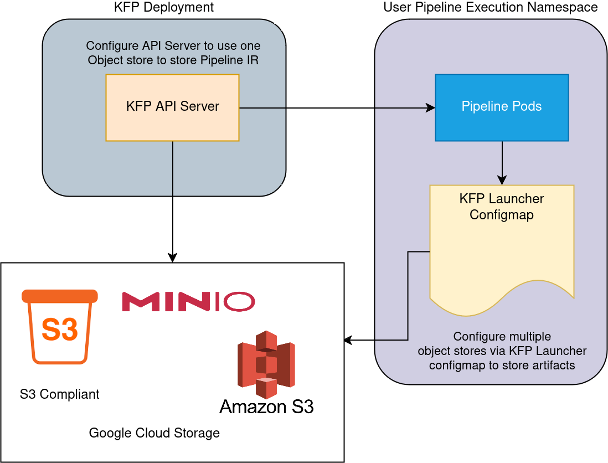
그림 7-2. 파이프라인 정의와 작업 아티팩트의 객체 저장소 설정
이미지 해설
- 그림이 보여주는 것: 왼쪽 회색 상자 "KFP Deployment" 안에 KFP API Server 가 있고 "Configure API Server to use one Object store to store Pipeline IR"(API 서버는 파이프라인 IR 을 저장할 객체 저장소를 하나 쓰도록 설정한다)라고 적혀 있습니다. 오른쪽 보라색 상자 "User Pipeline Execution Namespace" 에는 Pipeline Pods 와 KFP Launcher Configmap 이 있고 "Configure multiple object stores via KFP Launcher configmap to store artifacts"(아티팩트를 저장할 객체 저장소를 launcher 설정(configmap)으로 여러 개 지정할 수 있다)라고 적혀 있습니다. 두 화살표는 아래쪽 흰 상자의 저장소 그림(S3 호환 저장소, MinIO, Amazon S3, Google Cloud Storage)을 가리킵니다.
- 초보자 풀이: 파이프라인이 만드는 것에는 두 종류가 있습니다. ① 파이프라인 정의(컴파일된 IR 파일)는 KFP API 서버가 저장소 한 곳에 보관하고, ② 컴포넌트가 만든 아티팩트(데이터 파일 등)는 실행 파드 쪽의 launcher 설정에 따라 저장소에 올라갑니다. 즉 "파드끼리 직접 파일을 주고받는" 것이 아니라 저장소를 중간 창구로 삼는 구조입니다.
- 여기서 확인할 것: 두 화살표가 같은 저장소 묶음으로 향한다는 점, 그리고 저장소 종류(S3 호환 / MinIO / Amazon S3 / Google Cloud Storage)가 여러 가지라는 점. 이 장의 실습 환경은 이 중 S3 호환 저장소 한 가지(원격 kind 클러스터의 "minio" 이름 서비스)를 씁니다.
flowchart LR
subgraph NS["사용자 파이프라인 실행 네임스페이스"]
P1["컴포넌트 A 파드"]
P2["컴포넌트 B 파드"]
CM["launcher 설정 configmap"]
end
API["KFP API 서버"]
OS["객체 저장소 S3 호환 MinIO Amazon S3 Google Cloud Storage"]
API -- "파이프라인 IR 저장" --> OS
P1 -- "출력 아티팩트 업로드" --> OS
OS -- "입력 아티팩트 내려받기" --> P2
CM -. "어느 저장소를 쓸지 알려 줌" .-> P1
CM -. "어느 저장소를 쓸지 알려 줌" .-> P2위 그림은 그림 7-2 를 흐름 위주로 다시 그린 것입니다. 파드 A 와 B 사이에 직접 선이 없고 저장소를 거친다는 점이 핵심입니다.
초보자 설명
- 파드(Pod): 쿠버네티스가 컨테이너를 실행하는 가장 작은 단위. 컴포넌트 하나(태스크)는 보통 자기 전용 파드 안에서 실행됩니다. 태스크가 끝나면 파드와 그 안의 임시 파일도 정리되어 잃을 수 있는데, 정리되는 시점은 보장되지 않습니다. 그래서 다음 태스크는 그 파드의 파일이 아니라 저장소에 보존된 아티팩트를 받아 씁니다.
- 파드와 컨테이너는 다른 단위입니다. 컨테이너는 프로그램을 담아 실행하는 상자 하나이고, 파드는 그런 컨테이너를 한 개 이상 묶어 올리는 쿠버네티스의 작업 칸입니다. 태스크 하나의 파드에는 내 코드를 실행하는 컨테이너 외에 KFP 보조 컨테이너(launcher 등)도 함께 쓰입니다(아래 "흔한 오해" 참고).
- 격리: 컴포넌트 A 가
/tmp/result.txt에 쓴 파일은 컴포넌트 B 의/tmp/result.txt와 다른 파일입니다. 같은 경로 이름이라도 서로 다른 컴퓨터(파드)에 있기 때문입니다. - 그래서 필요한 장치: ① 작은 값은 KFP 가 값 그대로 전달해 주는 파라미터, ② 큰 데이터는 저장소에 올려 두고 위치를 알려 주는 아티팩트. 7.2 는 이 두 가지를 시나리오 1·2 로 나눠 설명하고, 이어서 아티팩트 타입(7.2.3)을 소개합니다.
쉬운 비유
숫자로 보기
- 컴포넌트가 3개인 파이프라인이라면 파드도 3개(태스크당 하나)이고, 파드 사이 직접 공유 폴더는 0개입니다.
- 이 절의 예제 파이프라인(농담 생성 → 단어 수 세기 → 결과 문장 만들기)은 컴포넌트 3개, 이미지 2 에서 실제 확인되는 단어 수는 592 입니다.
흔한 오해
- "같은 파이프라인이니 같은 디스크를 쓰겠지" → 아닙니다. 태스크마다 별도 파드이므로 로컬 파일은 공유되지 않습니다. 파일을 넘기려면 KFP 의 아티팩트(저장소 경유)를 써야 합니다.
- "컴포넌트 하나 = 파드 하나 = 컨테이너 하나" → 부정확합니다. 태스크는 별도 파드이지만, 실행 때 사용자 이미지 외에 KFP 보조 컨테이너(launcher 등)도 함께 쓰입니다(7.3.1 실습의 파드 이미지 기록에서 확인).
7.2.1 시나리오 1: 작은 값은 값으로 전달 (보충)
7.2.1 시나리오 1: 작은 값은 값으로 전달 (보충 설명)
안내: 원문 노트에는 7.2.1 소제목이 없습니다(7.2 소개 → 7.2.2 → 7.2.3). 하지만 7.2.2 가 "시나리오 2" 이고, 본문이 "앞서 사용했던 농담 생성 예제를 다시 살펴보겠습니다(전과 동일하지만, 농담 개수를 지정하는 인수와 출력 파일 경로가 추가)" 라고 말하므로 앞에 시나리오 1(값 전달) 이 있었음을 알 수 있습니다. 아래 코드와 설명은 이를 바탕으로 덧붙인 보충 설명입니다. 책의 원문 코드가 아니라 7.2.2 의 파일 방식과 비교하기 위한 예시입니다.
값 전달: 반환값이 그대로 다음 컴포넌트의 입력이 된다 (보충 설명)
# 보충: 재구성 예시: 시나리오 1 - 값(파라미터)으로 전달
from kfp import dsl
@dsl.component(
base_image="python:3.11",
packages_to_install=["pyjokes"]
)
def generate_joke() -> str:
import pyjokes
return pyjokes.get_joke() # 문자열을 직접 반환한다.
@dsl.component
def count_words(jokes: str) -> int: # 문자열을 입력 값으로 직접 받는다.
return len(jokes.split())
@dsl.component
def output_result(count: int) -> str:
return f"Word count: {count}"
@dsl.pipeline(name="joke-pipeline-values")
def joke_pipeline_values():
jokes = generate_joke()
count = count_words(jokes=jokes.output) # .output 은 반환값 참조
output_result(count=count.output)
| 줄 | 의미 |
|---|---|
-> str / -> int |
반환 타입이 문자열·정수 같은 단순 타입이면 KFP 가 값 그대로 다음 태스크에 넘길 수 있습니다. |
jokes.output |
앞 태스크의 출력이 하나뿐일 때 그 출력을 가리키는 참조입니다. 여기서는 반환값 하나가 대상입니다(출력이 하나인 아티팩트에도 같은 규칙입니다). 이 시점에 실제 값이 있는 것이 아니라, 실행 때 채워질 자리표시입니다. |
count_words(jokes=...) |
입력 파라미터 jokes 는 파일이 아니라 문자열 자체입니다. 파일을 열거나 경로를 만들 필요가 없습니다. |
flowchart LR G["generate_joke 농담 문자열 반환"] -- "값 문자열 그대로" --> C["count_words 단어 수 정수 반환"] C -- "값 정수 그대로" --> R["output_result 문장 문자열 반환"]
초보자 설명
- 값 전달은 "함수가
return한 것을 다음 함수 인자에 꽂는" 방식으로, 파이썬 함수 호출과 모양이 거의 같아서 가장 쉽습니다. - 대신 값이 KFP 의 실행 정보 안에 실려 이동합니다. 숫자·짧은 문자열처럼 작은 값에 알맞고, 커다란 표나 이미지 묶음을 이 방식으로 넘기는 것은 맞지 않습니다. (값 크기 한도의 구체적 수치는 설치 환경에 따라 다를 수 있어 여기서는 확인 못함.)
- 7.2.2 의
count_words가int를 반환하는 방식도 같은 값 전달입니다. 즉 한 파이프라인 안에서 큰 데이터는 경로로, 작은 결과는 값으로 섞어 쓰는 것이 일반적입니다.
쉬운 비유
숫자로 보기
- [가상 예시] 농담 한 줄이 약 14단어라고 하면 문자열은 100바이트 안팎입니다. 이 정도는 값 전달로 충분합니다. (이미지 2 의 단어 수 592 는 기본값
num_jokes=42로 실행했다고 가정하면 농담당 평균 약 14.1단어, 592 ÷ 42 ≈ 14.1. 실행 때 입력한 농담 수는 화면에 보이지 않아 확인 못함) - [가상 예시] 같은 방식으로 10GB 파일의 내용을 문자열로 넘긴다면 값 하나가 10GB 가 되어 파드 메모리를 순식간에 넘길 수 있습니다. 이 때문에 7.2.2 의 경로 방식이 필요합니다.
흔한 오해
- "값 전달은 틀린 방식이다" → 아닙니다. 작은 값에는 가장 단순하고 알맞은 방식입니다.
- "
jokes.output안에 실제 문자열이 이미 들어 있다" → 아닙니다. 파이프라인 정의 시점에는 참조일 뿐이고, 값은 실행 시점에 채워집니다.
7.2.2 시나리오 2: 대용량 데이터를 위한 경로 전달
7.2.2 시나리오 2: 대용량 데이터를 위한 경로 전달 (Scenario 2: Passing paths for larger data)
▶ 값 → Output[Artifact] 경로로 바꾸는 이유
대부분의 경우, 데이터 준비든 모델 훈련이든 컴포넌트가 대량의 데이터를 처리해야 하는 상황이 생깁니다. 다시 한번 강조하지만, 컴포넌트는 K8s 파드 컨텍스트 안에서 실행된다는 점을 반드시 기억하세요. 이것이 왜 중요할까요? 각 파드에는 사전에 정의된 메모리 한도가 있습니다. 예를 들어 대량의 데이터를 처리하는 과정에서 RAM 을 과도하게 사용해 이 한도를 초과하면, 파드는 악명 높은 OOMKilled 오류와 함께 강제 종료됩니다.
따라서 권장사항 중 하나는, 가능하다면 데이터를 파일이나 디렉터리에 저장하고 원시 값 대신 해당 파일 또는 디렉터리의 경로를 함수 간에 전달하는 것입니다. 이를 구체적으로 설명하기 위해, 앞서 사용했던 농담 생성 예제를 다시 살펴보겠습니다(전과 동일하지만, 농담 개수를 지정하는 인수와 출력 파일 경로가 추가되어 조금 더 풍부해진 예제입니다).
⚠ 원문 정정: "각 파드에는 반드시 메모리 한도가 있다"는 말은 설정에 따라 달라집니다. 메모리 한도(limit)를 지정하지 않은 파드도 있을 수 있으며, 이 경우에도 노드 전체의 메모리가 부족하면 문제가 생깁니다. 또 아래에서 보듯 "경로만 넘기니 메모리 걱정이 없다"는 뜻도 아닙니다. 경로로 전달하더라도 컴포넌트 안에서 그 파일 전체를 한 번에 메모리로 읽으면 OOMKilled 가 날 수 있습니다.
Listing 7.7 Output[Artifact] 를 사용해 결과를 파일에 쓰기 (원문 복원)
# Listing 7.7 Using Output[Artifact] to write results to a file - Output[Artifact]를 사용해 결과를 파일에 쓰기
from kfp.dsl import Output, Input, Artifact
@dsl.component(
base_image="python:3.11",
packages_to_install=["pyjokes"]
)
def generate_joke(
num_of_jokes: int,
output_jokes: Output[Artifact]): # Output[Artifact]는 컴포넌트가 데이터를 쓸 위치를 지정.
import pyjokes
import os
os.makedirs(output_jokes.path, exist_ok=True) # KFP는 경로만 제공하므로, 출력 디렉터리를 직접 생성.
jokes_path = os.path.join(
output_jokes.path,
"jokes.txt") # 아티팩트 디렉터리 경로와 특정 파일 이름을 결합.
with open(jokes_path, 'w') as f:
for _ in range(num_of_jokes):
joke = pyjokes.get_joke()
f.write(joke + '\n')
@dsl.component
def count_words(jokes_file: Input[Artifact]) -> int: # Input[Artifact]는 업스트림 데이터가 담긴 디렉터리를 전달받는다.
import os
# Read from the artifact path
jokes_path = os.path.join(
jokes_file.path,
"jokes.txt") # generate_joke 에서 사용한 것과 동일한 파일 경로 패턴을 구성한다.
with open(jokes_path, 'r') as f:
content = f.read()
return len(content.split())
@dsl.component
def output_result(count: int) -> str:
return f"Word count: {count}"
⚠ 원문 정정: 책의 코드에 있는def count_words(jokes_file: Input[Artifact])) -> int:는 닫는 괄호가 하나 더 있어 그대로는SyntaxError입니다. 위 코드는 괄호를 하나로 고쳤고, 마크다운 굵게 표시(**)도 제거했습니다. 또 이 목록만 복사하면from kfp import dsl가 없어dsl이름 오류가 납니다. 실행하려면 맨 위에from kfp import dsl한 줄과, 7.8 파이프라인을 컴파일·제출하는 코드를 더해야 합니다.
줄별 설명
Listing 7.7 줄별 설명 펼치기
| 코드 | 설명 |
|---|---|
from kfp.dsl import Output, Input, Artifact |
아티팩트 입출력을 표시하는 타입 3개를 가져옵니다. Output[...] 은 쓰는 쪽, Input[...] 은 읽는 쪽, Artifact 는 가장 일반적인 아티팩트 타입입니다. |
@dsl.component(base_image="python:3.11", packages_to_install=["pyjokes"]) |
이 함수를 KFP 컴포넌트로 만듭니다. 파드는 python:3.11 이미지로 시작하고, 실행 때 pyjokes 를 pip 로 설치합니다. |
def generate_joke(num_of_jokes: int, output_jokes: Output[Artifact]): |
입력은 정수 num_of_jokes(값 전달), 출력 자리는 output_jokes(경로 전달)입니다. 이 함수에는 return 이 없습니다. 결과는 파일로 남깁니다. |
import pyjokes, import os |
컴포넌트 함수는 별도 환경으로 옮겨져 실행되므로 필요한 import 를 함수 안에 둡니다. |
os.makedirs(output_jokes.path, exist_ok=True) |
KFP 는 경로 문자열만 줍니다. 그 경로가 가리키는 디렉터리는 스스로 만들어야 합니다. exist_ok=True 는 이미 있어도 오류를 내지 않는다는 뜻입니다. |
jokes_path = os.path.join(output_jokes.path, "jokes.txt") |
아티팩트 디렉터리 경로 뒤에 파일 이름 jokes.txt 를 붙여 최종 파일 경로를 만듭니다. |
with open(jokes_path, 'w') as f: |
그 파일을 쓰기 모드로 엽니다. |
for _ in range(num_of_jokes): |
요청한 개수만큼 반복합니다. |
joke = pyjokes.get_joke() / f.write(joke + '\n') |
농담 한 줄을 만들어 줄바꿈과 함께 씁니다. 반환하지 않고 파일에 기록하는 것이 핵심입니다. |
def count_words(jokes_file: Input[Artifact]) -> int: |
입력이 문자열이 아니라 아티팩트입니다. 앞 컴포넌트가 만든 디렉터리를 가리키며, 반환은 정수(값 전달)입니다. |
os.path.join(jokes_file.path, "jokes.txt") |
쓴 쪽과 같은 규칙(디렉터리 + jokes.txt)으로 파일 경로를 만듭니다. 이름 약속이 두 컴포넌트를 이어 줍니다. |
content = f.read() / len(content.split()) |
파일 전체를 읽어 공백 기준으로 나눈 단어 수를 정수로 반환합니다. |
def output_result(count: int) -> str: |
정수를 받아 "Word count: 592" 같은 문자열을 반환합니다. 파일이 필요 없어 바뀌지 않았습니다. |
본문 해설: 세 함수에서 달라진 점
- 여기서는 파일 기반 데이터 전달을 처리하도록 수정한 동일한 세 가지 함수를 살펴봅니다.
- 먼저
generate_joke에는Output[Artifact]타입의 파라미터output_jokes가 추가되었습니다. 이는 컴포넌트가 출력 데이터를 쓸 수 있는 디렉터리를 제공하는 KFP v2 의 방식입니다. 컴포넌트는 이 디렉터리를 (os.makedirs를 사용해) 생성하고, 그 안의 텍스트 파일에 농담을 기록합니다. 이전과 마찬가지로 함수가 농담을 생성하지만, 직접 반환하는 대신 지정된 아티팩트 디렉터리의 파일에 기록합니다. count_words함수는 농담을 직접 입력으로 받는 대신,Input[Artifact]타입의jokes_file파라미터를 받습니다. 이 파라미터는generate_joke가 기록한 디렉터리를 나타냅니다. 이 컴포넌트는generate_joke의 파일 작성 방식과 동일하게 표준 파이썬 파일 I/O 를 사용해 해당 디렉터리 안에서jokes.txt를 찾고, 단어 수를 나타내는 정수를 반환합니다.output_result함수는 단순한 문자열 출력을 형식화하는 역할만 하므로 변경 없이 그대로 유지됩니다. 문자열을 직접 반환하기 때문에 파일 처리가 필요하지 않습니다. 이제 리스트 7.8 에서 파이프라인 정의를 살펴보겠습니다.
Listing 7.8 세 개의 컴포넌트를 사용한 데이터 전달 (원문 복원)
# Listing 7.8 Data passing with three components - 3개의 컴포넌트를 사용한 데이터 전달
@dsl.pipeline(
name="joke-pipeline",
description="Pipeline that generates jokes and counts words"
)
def joke_pipeline(num_jokes: int = 42):
jokes = generate_joke(num_of_jokes=num_jokes)
count = count_words(
jokes_file=jokes.outputs["output_jokes"]) # 이름으로 아티팩트 출력에 접근하여 디렉터리를 다음 컴포넌트에 전달한다.
output = output_result(count=count.output) # .output 속성을 사용해 단순 반환값에 접근한다.
Listing 7.8 줄별 설명 펼치기
| 코드 | 설명 |
|---|---|
@dsl.pipeline(name="joke-pipeline", description=...) |
아래 함수를 파이프라인으로 지정합니다. 이름은 joke-pipeline, 설명은 "농담을 생성하고 단어 수를 세는 파이프라인"입니다. |
def joke_pipeline(num_jokes: int = 42): |
파이프라인 자체의 입력 파라미터 num_jokes 를 만들고 기본값을 42 로 둡니다. 실행 화면에서 바꿀 수 있습니다. |
jokes = generate_joke(num_of_jokes=num_jokes) |
첫 태스크를 만듭니다. 이 줄은 실행하는 것이 아니라 "이 작업을 이 입력으로 한다"는 주문서를 만드는 것입니다. |
jokes.outputs["output_jokes"] |
첫 태스크의 출력 중 이름이 output_jokes 인 것(함수 인자 이름과 같음)을 가리키는 참조입니다. 아티팩트처럼 이름이 있는 출력은 .outputs['이름'] 으로 고릅니다. |
count = count_words(jokes_file=...) |
참조를 count_words 의 입력 jokes_file 에 연결합니다. 이 연결 때문에 KFP 가 "count_words 는 generate_joke 다음"이라고 알아냅니다. |
count.output |
count_words 의 하나뿐인 출력(정수 반환값)을 가리킵니다. 출력이 하나일 때 .output 으로 쓸 수 있습니다. |
output = output_result(count=count.output) |
정수를 output_result 로 넘깁니다. |
flowchart LR
N["파이프라인 입력 num_jokes 기본값 42"] --> G["generate_joke 농담을 jokes.txt 파일로 기록"]
G -- "Output Artifact output_jokes 폴더 경로" --> C["count_words jokes.txt 를 읽어 단어 수 반환"]
C -- "정수 값 .output" --> O["output_result 문자열 Word count 만들기"]
G -. "launcher 가 폴더를 저장소에 업로드" .-> S[("객체 저장소")]
S -. "launcher 가 폴더를 내려받아 .path 에 둠" .-> C전체 흐름: 값과 경로가 섞여 있다
| 연결 | 무엇이 넘어가나 | 방식 | 컴포넌트 안에서 쓰는 방법 |
|---|---|---|---|
파이프라인 → generate_joke |
정수 num_jokes(42) |
값(파라미터) | 인자 num_of_jokes 를 그냥 사용 |
generate_joke → count_words |
농담 파일들이 든 디렉터리 | 경로(아티팩트) | output_jokes.path 에 쓰고, jokes_file.path 로 읽음 |
count_words → output_result |
정수 단어 수 | 값(파라미터) | count.output → 인자 count |
- 출력이 하나뿐이면
.output, 출력을 이름으로 고르면.outputs["이름"]으로 참조합니다(이 예제에서는 아티팩트를 이름으로 골랐고, 값은.output으로 받았습니다). 두 참조 모두 데이터를 복사하는 코드가 아니라 연결 관계를 적는 표기입니다.
.path 와 .uri: 같은 아티팩트의 두 얼굴
.path는 파일일 수도 폴더일 수도 있습니다. 7.3.1 에서는 폴더(아래Output[Artifact]·Dataset에 압축을 푼 폴더), 7.3.2 의 다운로드·CSV·Parquet 에서는 파일로 씁니다. 어느 쪽인지는 아티팩트에 쓰는 코드가 정합니다.
| 속성 | 가리키는 곳 | 언제 쓰나 |
|---|---|---|
.path |
컴포넌트가 돌고 있는 파드 안의 로컬 경로 | 파일을 읽고 쓸 때. 위 코드 전부 이 속성을 사용합니다. |
.uri |
객체 저장소에 놓인 주소(예: 이미지 2 의 minio://mlpipeline/v2/artifacts/…) |
저장소 위치를 기록·표시할 때. UI 의 Input/Output 탭에 보이는 값입니다. |
⚠ 원문 정정: "경로만 넘기므로 데이터는 한 번만 업로드된다", "경로 전달이면 OOM 에 안전하다" 는 해석은 정확하지 않습니다. 각 태스크는 별도 파드에서 실행되고, 입력 아티팩트는 그 파드에서 내려받아 쓰며, 출력은 컴포넌트가 끝난 뒤 launcher 가 저장소에 올립니다. 소비 태스크가 여러 개면 그 수만큼 내려받습니다. 또.path의 파일을pd.read_parquet등으로 한꺼번에 읽으면 메모리를 그대로 씁니다. 경로 전달이 해결하는 것은 "큰 값을 파이프라인 실행 정보에 실어 보내는 문제"이지 "큰 데이터를 읽는 비용"이 아닙니다.
[책] 여담 Skip: KFP v1 / v2 의 입출력 파라미터 명명 방식 비교
원문 노트는 원서의 여담 상자 "KFP v1, v2 의 입출력 파라미터 명명 방식 비교 소개"를 건너뛰기(Skip) 로 표시했고, 이 장에서도 해당 여담 내용은 다루지 않습니다. 다만 7.4 요약에 나오는 training_path, _file 같은 이름 규칙이 v1 식 용어라는 점은 7.4 에서 정정합니다.
실습 후 화면: count-words 의 Input Artifacts 에서 이전 컴포넌트 출력 확인
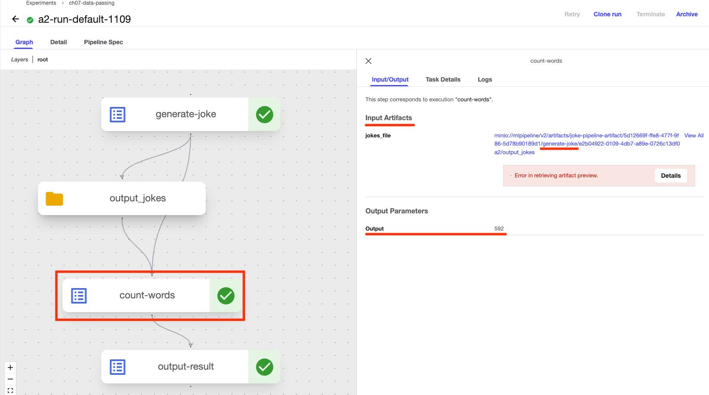
이미지 해설
- 그림이 보여주는 것: 실행
a2-run-default-1109(실험ch07-data-passing)의 그래프에서generate-joke→output_jokes(폴더 아이콘) →count-words→output-result가 모두 초록 체크(성공)입니다.count-words를 눌러 열린 오른쪽 패널의 Input/Output 탭에는 Input Artifacts 의jokes_file이minio://mlpipeline/v2/artifacts/joke-pipeline-artifact/<실행 ID>/generate-joke/<실행 ID>/output_jokes로 이어진 링크로 표시되어 있고, Output Parameters 의Output값은 592 입니다. 같은 패널에 "Error in retrieving artifact preview" 라는 붉은 박스도 함께 보입니다. - 초보자 풀이:
jokes_file은 Listing 7.7 의count_words입력 이름 그대로입니다. 그 값이generate-joke쪽의output_jokes주소(.uri)이므로, 앞 컴포넌트의 출력이 뒤 컴포넌트의 입력으로 연결되었다는 증거입니다. 592 는count_words의 정수 반환값(값 전달)입니다. 빨간 밑줄 둘은 원문 노트의 캡처에서 이 연결과 592 를 강조한 표시입니다. - 여기서 확인할 것: ① 입력 이름이
jokes_file(코드와 일치), ② 주소 안에generate-joke/…/output_jokes가 들어 있음, ③ 출력Output = 592. - 주의: 실행은 성공했는데 미리보기 오류가 함께 뜹니다.
output_jokes는 파일 하나가 아니라 디렉터리로 만들어졌으므로 UI 의 단일 파일 미리보기와 맞지 않을 가능성이 있지만, 이 화면만으로 원인을 단정할 수 없고 서버 요청·오류 로그가 없어 원인은 확인 못함입니다. 데이터 전달 자체(592 계산)는 정상이었다는 것이 핵심입니다.
초보자 설명
Output[Artifact]는 "쓸 자리": 컴포넌트가 만들어 주는 것이 아니라 KFP 가 쓸 위치(경로) 를 알려 주는 것입니다. 그 위치에 무엇을 어떻게 저장할지는 코드가 정합니다.Input[Artifact]는 "읽을 자리": 앞 태스크가 끝난 뒤 그 결과가 내려받아져 놓인 자기 파드 안의 경로입니다.- 이름 약속: 쓰는 쪽과 읽는 쪽이
jokes.txt라는 파일 이름을 서로 약속해야 합니다. 이 약속은 KFP 가 검사해 주지 않습니다. - 반환값은 별도: 같은 컴포넌트에서 파일로는 아티팩트를,
return으로는 값을 함께 내보낼 수 있습니다.
쉬운 비유
숫자로 보기
- 이미지 2 에서 확인되는 숫자: 단어 수 592(
Output값). 입력 이름은jokes_file, 출력 이름은output_jokes. - Listing 7.8 의 기본값
num_jokes = 42. 컴포넌트 3개, 연결 3개(파이프라인 입력 →generate_joke값 1개,generate_joke→count_words아티팩트 1개,count_words→output_result값 1개). - [가상 예시] 저장소에 올리는 데이터가 10GB 이고 소비 태스크가 5개라면, 각 태스크가 자기 파드에서 내려받으므로 내려받는 양은 최대 약 50GB 입니다. 업로드(1회)와 다운로드(5회)가 모두 비용입니다. 반대로 값 전달로 10GB 를 실어 보내려는 시도는 실행 정보 크기와 메모리 문제로 현실적이지 않습니다.
흔한 오해
- "
output_jokes.path는 이미 만들어진 폴더다" → 아닙니다. 원문 주석처럼 경로만 제공하므로os.makedirs로 직접 만들어야 하는 경우가 있습니다. (이 예제는 디렉터리로 쓰는 방식입니다. 파일 하나로 쓰는 방식도 가능하며 쓰는 코드가 결정합니다.) - "
Input[Artifact]는 파일 하나다" → 이 예제에서는 디렉터리를 가리킵니다. Artifact 는 파일일 수도 폴더일 수도 있습니다. - "
.output과.outputs['이름']은 데이터를 복사한다" → 아닙니다. 둘 다 참조 방식의 차이입니다. 출력이 하나뿐이면.output, 이름으로 골라 쓰면.outputs['이름']입니다. - "경로를 넘기면 메모리를 안 쓴다" → 위 정정 박스 참고. 읽는 방식(한 번에 / 나눠서)이 메모리를 결정합니다.
직접 비교: 값 전달 vs 경로 전달
🎛 값 전달 vs 경로 전달 크기 비교
가상 예시 슬라이더로 데이터 크기와 소비 태스크 수를 바꿔 보세요. 숫자는 이해를 위한 가상 계산이며 실제 측정값이 아닙니다.
7.2.3 KFP v2 아티팩트 타입 개요
7.2.3 KFP v2 아티팩트 타입 개요 (Overview of KFP v2 artifact types)
KFP v2 는 다양한 종류의 머신러닝 파이프라인 데이터를 처리하기 위해 여러 가지 특화된 아티팩트 타입을 제공합니다. 각 타입의 용도와 사용 시점을 자세히 살펴보겠습니다. 아래 7개 타입은 각각 접어 둔 토글로 되어 있고, 토글을 열면 원문 설명·사용 목록·코드·줄별 설명과 초보자 카드가 나옵니다(토글 안의 카드는 소절에 따라 일부가 빠질 수 있습니다).
| 타입 | 한 줄 용도 | 코드에서의 모양 |
|---|---|---|
| Dataset | 모든 형태의 ML 데이터셋 | Input[Dataset] / Output[Dataset] |
| Model | 훈련된 ML 모델 | Output[Model] |
| Metrics | 단순 키-값 지표 | Output[Metrics] |
| ClassificationMetrics | 분류 작업 전용 지표 | Output[ClassificationMetrics] |
| HTML | 시각화·보고서용 HTML | Output[HTML] |
| Markdown | 마크다운 문서·보고서 | Output[Markdown] |
| Artifact | 범용 기본 타입 | Output[Artifact] |
flowchart TD A["Artifact 기본 타입 파일이나 폴더"] --> D["Dataset 데이터"] A --> M["Model 모델"] A --> ME["Metrics 숫자 지표"] A --> CM["ClassificationMetrics 혼동 행렬 ROC"] A --> H["HTML 보고서"] A --> MD["Markdown 문서"] CM -.-> SC["SlicedClassificationMetrics 조각별 분류 지표"]
위 계통도는 "모든 타입이 아티팩트의 한 종류이고 Artifact 가 가장 일반적"이라는 사용 관계를 그린 것입니다. 정확한 클래스 상속 구조를 보여 주는 그림은 아닙니다.
⚠ 개념 코드 안내: 아래 7개 코드는 원문 그대로이며 흐름을 보여 주는 개념용 코드입니다.process_data,train,evaluate같은 함수와pd,json,datetime,Dict,Any의 import 가 어디에도 정의되어 있지 않고,evaluate_model이 두 번 정의되어 있습니다. 그대로 실행하지 말고, Dataset·Model·Metrics·ClassificationMetrics·Artifact 토글 끝의 "보충: 실행 가능한 최소 예시"를 참고하세요. HTML·Markdown 토글에는 이 예시가 없으며, 코드 주의 박스에서 필요한 import 와 키를 설명합니다. 이 예시들도 한 컴포넌트만 보여 주는 조각이어서, 파이프라인 전체를 실행하는 예제와는 구분해서 읽으세요. 원문 코드의 마크다운 굵게 표시(**)는 제거했습니다.
▶ Dataset 타입: 모든 형태의 머신러닝 데이터셋을 나타냅니다 (Dataset type)
머신러닝 워크플로의 성패는 데이터에 달려 있습니다. Dataset 아티팩트 타입은 파이프라인에서 원시 입력부터 처리된 피처까지, 모든 형태의 머신러닝 데이터를 관리하기 위한 토대입니다. 이 타입은 데이터의 특성과 변환에 관한 핵심 메타데이터를 추적하는 동시에, 컴포넌트 간에 데이터를 전달하는 표준화된 방법을 제공합니다. 다음과 같은 경우에 이 아티팩트 타입을 사용하세요.
- 훈련/검증/테스트 데이터
- 피처 세트(모델에 넣는 입력 특성들을 모아 둔 표)
- 전처리된 데이터
- 데이터 분할
- 구조화된 샘플 컬렉션 전반
다음 코드는 Input[Dataset] 타입을 사용해 데이터셋 아티팩트를 입력으로 받고, 일부 메타데이터와 함께 처리된 결과를 Output[Dataset] 으로 출력하는 파이프라인 컴포넌트를 보여줍니다.
@dsl.component
def prepare_dataset(raw_data: Input[Dataset],
processed: Output[Dataset]):
df = pd.read_csv(raw_data.path)
df_processed = process_data(df)
df_processed.to_csv(processed.path, index=False)
processed.metadata.update({
'num_samples': len(df_processed),
'columns': list(df_processed.columns),
'preprocessing_date': datetime.now().isoformat()
})
줄별 설명
| 코드 | 설명 |
|---|---|
@dsl.component |
아래 함수를 KFP 컴포넌트로 만듭니다. |
def prepare_dataset(raw_data: Input[Dataset], processed: Output[Dataset]): |
입력 raw_data 는 앞 단계의 Dataset, 출력 processed 는 이 컴포넌트가 채울 Dataset 입니다. 둘 다 Input/Output 으로 감싼 아티팩트 객체입니다. |
df = pd.read_csv(raw_data.path) |
입력 Dataset 의 .path(파드 안 파일 경로)에서 CSV 를 읽어 pandas 표(DataFrame)로 만듭니다. 이 경우 .path 는 CSV 파일입니다. |
df_processed = process_data(df) |
전처리 함수로 표를 가공합니다. process_data 는 원문에 정의가 없는 개념용 함수입니다. |
df_processed.to_csv(processed.path, index=False) |
결과를 출력 Dataset 의 .path 에 CSV 로 저장합니다. index=False 는 행 번호 열을 파일에 쓰지 않는다는 뜻입니다. |
processed.metadata.update({...}) |
출력 아티팩트에 메타데이터(이름-값 설명)를 덧붙입니다. |
'num_samples': len(df_processed) |
가공된 행 수. |
'columns': list(df_processed.columns) |
열 이름 목록. |
'preprocessing_date': datetime.now().isoformat() |
전처리 시각을 ISO 문자열로. |
초보자 설명: Dataset 은 "이 상자는 데이터입니다" 라는 라벨이 붙은 Artifact 입니다. 타입을 붙이면 UI 와 메타데이터 기록에서 의미가 분명해집니다. 메타데이터는 코드가 직접 채운 값만 들어갑니다.
쉬운 비유: 식재료 상자에 "식재료" 스티커를 붙이고, 옆면에 "감자 1,000개, 열 4칸, 3월 5일 손질" 이라고 메모를 적는 것과 같습니다.
숫자로 보기: [가상 예시] 행이 1,000개, 열이 4개인 표라면 num_samples = 1000, columns 목록 길이는 4 입니다.
흔한 오해: "타입만 붙이면 행 수·품질이 자동 검사된다" → 아닙니다. num_samples 는 위 코드가 직접 적어 넣은 값입니다. 데이터 품질 점검은 7.3.2 의 QA 컴포넌트 같은 별도 단계가 필요합니다.
보충: 실행 가능한 최소 예시 (가상 예시)
# 보충: 가상 예시: 개념 코드의 import 와 전처리 함수를 채워 넣은 최소 버전
from kfp import dsl
from kfp.dsl import Input, Output, Dataset
@dsl.component(base_image="python:3.11", packages_to_install=["pandas"])
def prepare_dataset(raw_data: Input[Dataset], processed: Output[Dataset]):
import pandas as pd
from datetime import datetime
df = pd.read_csv(raw_data.path)
df_processed = df.dropna() # 가상의 전처리: 빈 값이 있는 행 제거
df_processed.to_csv(processed.path, index=False)
processed.metadata.update({
"num_samples": len(df_processed),
"columns": list(df_processed.columns),
"preprocessing_date": datetime.now().isoformat(),
})
▶ Model 타입: 훈련된 머신러닝 모델을 나타냅니다 (Model type)
모델은 대부분의 머신러닝 파이프라인에서 핵심 결과물이며, KFP 의 Model 아티팩트 타입은 이를 처리하기 위해 특별히 설계되었습니다. 이 타입은 프레임워크별 메타데이터를 기본으로 지원하며, 훈련에 사용된 데이터부터 모델을 생성한 파라미터에 이르기까지 모델 리니지(lineage)를 손쉽게 추적할 수 있도록 해줍니다. 다음과 같은 경우에 Model 을 사용하세요.
- 훈련된 모델
- 모델 체크포인트(학습 도중 저장해 둔 중간본)
- 모델 가중치(학습으로 정해진 숫자들)
- 사전 훈련된 모델 아티팩트
다음 코드는 데이터셋 아티팩트를 입력으로 받아 Output[Model] 애노테이션을 통해 훈련된 모델을 출력하는 파이프라인 컴포넌트를 보여줍니다.
@dsl.component
def train_model(dataset: Input[Dataset],
model: Output[Model]):
trained_model = train(dataset.path)
trained_model.save(model.path)
줄별 설명
| 코드 | 설명 |
|---|---|
def train_model(dataset: Input[Dataset], model: Output[Model]): |
입력은 Dataset, 출력은 Model 입니다. 타입 이름이 곧 "무엇이 들어오고 나가는지" 설명합니다. |
trained_model = train(dataset.path) |
데이터셋 경로를 학습 함수에 넘겨 모델 객체를 얻습니다. train 은 원문에 정의가 없는 개념용 함수입니다. |
trained_model.save(model.path) |
학습된 모델을 출력 Model 의 .path 에 저장합니다. 이 저장 파일이 저장소로 올라가 다음 컴포넌트가 Input[Model] 로 받습니다. |
(원문 코드는 train 호출과 save 줄이 def 보다 더 깊게 들여쓰기되어 있지만 파이썬에서는 한 블록 안이면 실행됩니다. 읽기 쉬우려면 4칸 들여쓰기가 일반적입니다.)
초보자 설명: Model 은 "학습 결과물" 상자입니다. 어떤 데이터로 어떤 컴포넌트가 만들었는지 계보(lineage)가 KFP 화면에서 연결됩니다.
쉬운 비유: 요리 대회에서 완성된 요리(모델)와 조리법 카드(메타데이터)를 함께 접수대에 내는 것입니다. 심사위원(다음 컴포넌트)은 요리와 카드를 같이 받습니다.
숫자로 보기: [가상 예시] 가중치 파일이 50MB 이고 메타데이터에 framework=pytorch 라고 적었다면, 저장소에는 50MB 파일과 "pytorch" 라는 메모가 함께 기록됩니다.
흔한 오해: "Model 타입이면 하이퍼파라미터가 자동으로 기록된다" → 아닙니다. 프레임워크 이름 같은 메타데이터는 코드가 model.metadata[...] 에 적어야 합니다. 리니지(어떤 입력에서 나왔는가)는 연결 관계로 추적되지만, 하이퍼파라미터(학습을 시작하기 전에 사람이 정해 두는 설정값, 예: 학습 횟수) 자체는 별도로 기록해야 합니다.
보충: 실행 가능한 최소 예시 (가상 예시)
# 보충: 가상 예시: 아주 단순한 "모델" 을 pickle 로 저장
from kfp import dsl
from kfp.dsl import Input, Output, Dataset, Model
@dsl.component(base_image="python:3.11", packages_to_install=["pandas"])
def train_model(dataset: Input[Dataset], model: Output[Model]):
import pandas as pd, pickle
df = pd.read_csv(dataset.path)
trained_model = {"mean": df.mean(numeric_only=True).to_dict()} # 가상의 '모델'
with open(model.path, "wb") as f:
pickle.dump(trained_model, f)
model.metadata["framework"] = "toy-dict"
▶ Metrics 타입: 단순 키-값 지표 저장 (Metrics type)
머신러닝 워크플로에서 모델 성능을 이해하는 것은 매우 중요합니다. Metrics 아티팩트 타입은 파이프라인 전반에 걸쳐 수치 측정값을 추적하고 비교하는 간단하면서도 강력한 방법을 제공하며, 모델의 진행 상황을 모니터링하고 데이터 기반 의사결정을 내리기 쉽게 해줍니다. 다음과 같은 용도에 Metrics 를 활용하세요.
- 모델 성능 지표
- 훈련 지표
- 평가 결과
- 모든 수치 측정값
다음 코드는 모델과 데이터셋 아티팩트를 입력으로 받아 메타데이터가 포함된 Metrics 아티팩트를 출력하는 컴포넌트를 보여줍니다.
@dsl.component
def evaluate_model(model: Input[Model],
test_data: Input[Dataset],
metrics: Output[Metrics]):
results = evaluate(model.path, test_data.path)
metrics.log_metric('accuracy', results['accuracy'])
metrics.log_metric('f1_score', results['f1'])
metrics.metadata['evaluation_date'] = datetime.now().isoformat()
줄별 설명
| 코드 | 설명 |
|---|---|
def evaluate_model(model: Input[Model], test_data: Input[Dataset], metrics: Output[Metrics]): |
모델과 테스트 데이터를 입력으로, 지표 모음을 출력으로 받습니다. |
results = evaluate(model.path, test_data.path) |
모델 파일과 테스트 데이터 경로로 평가를 실행해 딕셔너리를 얻습니다. evaluate 는 개념용 함수입니다. |
metrics.log_metric('accuracy', results['accuracy']) |
accuracy 라는 이름으로 숫자 하나를 기록합니다. UI 에서 표로 보입니다. |
metrics.log_metric('f1_score', results['f1']) |
f1_score 도 같은 방식으로 기록합니다. |
metrics.metadata['evaluation_date'] = datetime.now().isoformat() |
평가 시각을 메타데이터에 문자열로 추가합니다. |
초보자 설명: log_metric(이름, 숫자) 는 "성적표에 한 줄 적기" 입니다. 파일(metrics.path)에 직접 쓰지 않아도 됩니다. 기록된 수치는 아티팩트 메타데이터로 저장되어 Run 화면에서 비교할 수 있습니다.
쉬운 비유: 성적표 한 장에 "정확도 0.9", "F1 0.85" 두 칸을 적고, 아래쪽에 "채점일: ○월 ○일" 메모를 붙이는 것입니다.
숫자로 보기: [가상 예시] accuracy = 0.9, f1_score = 0.85 를 기록하면 Metrics 아티팩트에는 2개의 이름-값 쌍과 1개의 evaluation_date 메타데이터가 있습니다.
흔한 오해: "metrics.path 파일에 숫자를 써야 한다" → 아닙니다. log_metric 이 대신 기록합니다. 또 "Metrics 는 그래프도 그려 준다" → Metrics 는 스칼라 값(숫자 하나씩) 용입니다. 곡선·행렬은 ClassificationMetrics 가 맡습니다.
보충: 실행 가능한 최소 예시 (가상 예시)
# 보충: 가상 예시: 계산 없이 값만 기록하는 최소 컴포넌트
from kfp import dsl
from kfp.dsl import Output, Metrics
@dsl.component
def log_two_metrics(metrics: Output[Metrics]):
from datetime import datetime
metrics.log_metric("accuracy", 0.9) # 가상의 값
metrics.log_metric("f1_score", 0.85) # 가상의 값
metrics.metadata["evaluation_date"] = datetime.now().isoformat()
▶ ClassificationMetrics 타입: 분류 작업을 위한 특화 지표 (ClassificationMetrics type)
분류(classification)는 가장 일반적인 머신러닝 작업 중 하나이며, 분류 모델을 평가하려면 특정 타입의 지표와 시각화가 필요합니다. ClassificationMetrics 특화 아티팩트 타입은 ROC(receiver operating characteristic) 곡선, 혼동 행렬(confusion matrix), 그 밖의 분류별 지표를 기본으로 지원하며, 모델 성능을 파악하는 데 도움이 되는 전용 UI 렌더링을 제공합니다. 큐브플로는 SlicedClassificationMetrics 도 제공하는데, 이는 분류 지표를 데이터 슬라이스에 적용하지만 ClassificationMetrics 와 동일한 방식으로 작동합니다. 여기서 슬라이스(slice)는 데이터를 조건별로 나눈 조각(예: 낮에 찍은 사진 / 밤에 찍은 사진)이며, 조각마다 지표를 따로 기록한다는 뜻입니다. ClassificationMetrics 는 다음과 같은 경우에 사용합니다.
- ROC 곡선 (curves)
- 혼동 행렬 (Confusion matrices)
- 분류 전용 평가 (Classification-specific evaluations)
- 다중 클래스 지표 (Multiclass metrics)
다음 코드는 혼동 행렬을 기록하기 위해 ClassificationMetrics 아티팩트를 생성하는 컴포넌트를 보여줍니다.
@dsl.component
def evaluate_model( model: Input[Model],
test_data: Input[Dataset],
metrics: Output[ClassificationMetrics]):
results = evaluate(model.path, test_data.path)
metrics.log_confusion_matrix(
categories=["negative", "positive"],
matrix=results["confusion_matrix"]
)
⚠ 원문 정정: 원문에는 ROC 의 약자가 "receiver operation characteristic" 으로 적혀 있으나 올바른 표기는 receiver operating characteristic 입니다. 또 이 코드의 함수 이름 evaluate_model 은 앞의 Metrics 예제와 같아서 한 파일에 두 개를 함께 쓰면 뒤의 정의가 앞의 것을 덮어씁니다(둘은 서로 다른 예시 코드입니다).
줄별 설명
| 코드 | 설명 |
|---|---|
metrics: Output[ClassificationMetrics] |
출력이 분류 지표 전용 타입입니다. UI 가 이 타입을 보고 혼동 행렬 등을 전용 모양으로 그립니다. |
results = evaluate(model.path, test_data.path) |
평가 결과(딕셔너리)를 얻습니다. 개념용 함수. |
metrics.log_confusion_matrix(categories=["negative", "positive"], matrix=results["confusion_matrix"]) |
범주 이름 목록과 2차원 숫자 행렬을 기록합니다. categories 의 길이와 행렬의 행·열 수가 맞아야 합니다(여기서는 2×2). |
초보자 설명: 혼동 행렬은 "정답은 A 인데 모델은 B 라고 한 경우가 몇 번인지" 세어 둔 표입니다. 행은 보통 실제 값, 열은 예측 값으로 읽습니다(도구마다 축 방향 표기가 다를 수 있어 UI 의 축 이름을 확인하세요).
쉬운 비유: 검문소에서 "진짜 신분증을 통과시킨 횟수 / 가짜를 통과시킨 횟수 / 진짜를 막은 횟수 / 가짜를 막은 횟수" 네 칸을 적은 집계표입니다.
숫자로 보기: 먼저 용어부터 정리합니다. 찾으려는 쪽을 positive(예: 가짜 신분증), 나머지를 negative(진짜 신분증)라고 부릅니다. 예측이 맞았는지에 따라 TP(true positive: positive 를 positive 로 맞힘), TN(true negative: negative 를 negative 로 맞힘), FP(false positive: negative 를 positive 라고 잘못 예측), FN(false negative: positive 를 놓침)이라고 합니다. 예를 들어 실제 positive 10개 중 5개를 맞히면 그 5개가 TP 이고, 놓친 5개가 FN 입니다. [가상 예시] 100개 중 TN=80, FP=10, FN=5, TP=5 라면 정확도는 (80+5)/100 = 85% 이지만, 실제 positive 10개(FN 5 + TP 5) 중 맞힌 것은 5개이므로 positive 재현율은 50% 입니다. 정확도만 보면 놓치는 부분입니다.
| 가상 예시 | 예측 negative | 예측 positive |
|---|---|---|
| 실제 negative | 80 (TN) | 10 (FP) |
| 실제 positive | 5 (FN) | 5 (TP) |
흔한 오해: "정확도가 높으면 모든 클래스가 잘 맞는다" → 위 숫자처럼 한쪽 클래스가 적으면 정확도가 높아도 그 클래스를 못 맞힐 수 있습니다. 또 SlicedClassificationMetrics 는 "ClassificationMetrics 와 동일하게 작동하지만 데이터 조각(slice)별로 지표를 나눠 기록"하는 타입이며, 호출 인자에는 조각 이름이 추가됩니다(상세 시그니처는 이 장의 범위 밖, 확인 못함).
보충: 실행 가능한 최소 예시 (가상 예시)
# 보충: 가상 예시: 2x2 혼동 행렬을 직접 기록
from kfp import dsl
from kfp.dsl import Output, ClassificationMetrics
@dsl.component
def log_confusion(metrics: Output[ClassificationMetrics]):
metrics.log_confusion_matrix(
categories=["negative", "positive"],
matrix=[[80, 10], [5, 5]], # 가상의 숫자
)
▶ HTML 타입: 시각화 및 보고서를 위한 HTML 콘텐츠 (HTML type)
때로는 일반 텍스트로는 제공하기 어려운, 더욱 풍부한 시각화 및 보고서 기능이 필요할 수 있습니다. HTML 아티팩트 타입을 사용하면 대화형 시각화와 서식이 풍부한 보고서를 생성하여 KFP UI 에서 직접 확인할 수 있으므로, 파이프라인 출력 결과를 더욱 유익하고 접근하기 쉽게 만들 수 있습니다. 다음과 같은 경우에 HTML 을 활용하세요.
- 인터랙티브 시각화 (Interactive visualizations)
- 리치 포맷 (rich-format) 보고서
- 대시보드 출력물 (Dashboard outputs)
- 커스텀 시각화 아티팩트 (Custom visualization artifacts)
다음 코드는 UI 에 표시할 보고서로 간단한 HTML 페이지를 내보내는 코드 일부를 보여줍니다. 더 상세한 보고서를 표시하려면 이 코드를 더욱 복잡하게 구성할 수 있습니다.
@dsl.component
def create_report(
metrics: Input[Metrics],
report: Output[HTML]):
html_content = f"""
<html>
<body>
<h1>Model Performance Report</h1>
<p>Accuracy: {metrics.metadata['accuracy']}</p>
<div id="visualization">...</div>
</body>
</html>
"""
with open(report.path, 'w') as f:
f.write(html_content)
줄별 설명
| 코드 | 설명 |
|---|---|
def create_report(metrics: Input[Metrics], report: Output[HTML]): |
Metrics 를 입력으로 받아 HTML 보고서를 출력합니다. |
html_content = f"""...""" |
파이썬 f-문자열로 HTML 텍스트를 만듭니다. 중괄호 {...} 안의 식은 값으로 바뀝니다. |
<h1>Model Performance Report</h1> |
보고서 제목. |
<p>Accuracy: {metrics.metadata['accuracy']}</p> |
입력 Metrics 의 메타데이터에서 accuracy 를 꺼내 문단에 넣습니다. |
<div id="visualization">...</div> |
시각화가 들어갈 자리 표시(원문 그대로 ..., 실제 그림을 그리는 코드는 없음). |
with open(report.path, 'w') as f: f.write(html_content) |
HTML 문자열을 출력 아티팩트의 .path 파일에 씁니다. |
⚠ 코드 주의: 위 코드는 입력 Metrics 의metadata['accuracy']를 읽습니다. 그 키가 실제로 들어 있어야 값이 나옵니다. 앞의log_metric('accuracy', …)로 기록한 값이 같은metadata에서 읽히는지는 직접 확인하지 못했으므로(확인 못함), 보고서를 만들기 전에 키가 있는지 확인하거나 같은 키를 직접metadata['accuracy'] = 값으로 기록해 두는 편이 안전합니다. 키가 없으면KeyError가 납니다.
초보자 설명: HTML 아티팩트는 "웹 페이지 한 장을 결과물로 저장"하는 타입입니다. KFP 화면이 이 파일을 열어 보여 줍니다.
쉬운 비유: 공장 전광판에 오늘의 성적(정확도)과 차트를 띄우는 것입니다.
숫자로 보기: [가상 예시] Accuracy: 0.9 라는 한 문단과 빈 차트 자리 한 개가 있는 아주 작은 HTML 파일입니다.
흔한 오해: "HTML 안의 JavaScript 가 언제나 자유롭게 실행된다" → UI 의 보안 정책과 배포 환경에 따라 다릅니다(확인 필요). 중요한 수치는 Metrics 나 Markdown 에도 함께 남기세요.
▶ Markdown 타입: 마크다운 형식의 문서 및 보고서 (Markdown type)
머신러닝 파이프라인에서 문서화는 코드만큼 중요합니다. Markdown 아티팩트 타입은 문서, 보고서, 모델 카드를 생성하고 저장하는 깔끔하고 가독성 높은 방법을 제공하며, KFP UI 에서 보기 좋게 렌더링될 뿐만 아니라 일반 텍스트로도 읽기 편합니다. Markdown 은 다음과 같은 경우에 사용하세요.
- 문서 생성
- 간단한 보고서
- 모델 카드
- README 파일
- 훈련 요약
다음 코드는 UI 에서 표시할 수 있는 마크다운 형식의 보고서를 내보내는 방법을 보여줍니다.
@dsl.component
def generate_model_card(
model: Input[Model],
metrics: Input[Metrics],
model_card: Output[Markdown]):
content = f"""# Model Card
- Framework: {model.metadata['framework']}
- Architecture: {model.metadata['architecture']}
- Accuracy: {metrics.metadata['accuracy']}
"""
with open(model_card.path, 'w') as f:
f.write(content)
줄별 설명
| 코드 | 설명 |
|---|---|
def generate_model_card(model: Input[Model], metrics: Input[Metrics], model_card: Output[Markdown]): |
모델과 지표를 입력으로 받아 마크다운 문서를 출력합니다. |
content = f"""# Model Card ...""" |
# 는 제목, - 는 글머리표입니다. {...} 안은 값으로 치환됩니다. |
model.metadata['framework'] / ['architecture'] |
모델 아티팩트의 메타데이터에서 프레임워크·구조 이름을 꺼냅니다. 앞 단계가 먼저 이 키를 기록해 두어야 합니다. |
metrics.metadata['accuracy'] |
지표 아티팩트의 메타데이터에서 정확도를 꺼냅니다(HTML 예제와 같은 주의). |
with open(model_card.path, 'w') as f: f.write(content) |
마크다운 텍스트를 출력 아티팩트 파일에 저장합니다. |
⚠ 코드 주의: 원문의 f-문자열 안 줄들이 들여쓰기(공백 4칸)된 채 시작하므로 마크다운에서는 목록이 코드 블록처럼 보일 수 있습니다. 줄 맨 앞 공백을 없애 쓰는 것이 일반적입니다. 또model.metadata에 해당 키가 없으면KeyError가 납니다.
초보자 설명: Markdown 은 사람이 읽기 쉬운 문서 형식입니다. 모델 카드(모델 소개서)나 QA 결과 보고서처럼 "사람이 읽을 문서"에 알맞습니다.
쉬운 비유: 상자 위에 붙이는 한 장짜리 안내문입니다.
숫자로 보기: [가상 예시] Framework: pytorch, Architecture: resnet, Accuracy: 0.9 세 줄짜리 모델 카드.
흔한 오해: "보고서를 코드에 적기만 하면 컴포넌트가 실패해도 올라간다" → 아닙니다. 파일이 만들어지고 컴포넌트가 정상 종료되어야 launcher 가 업로드합니다.
▶ Artifact 타입: 범용 아티팩트를 위한 기본 타입 (Artifact type)
모든 데이터가 미리 정의된 카테고리에 깔끔하게 들어맞지는 않습니다. 기본 Artifact 타입은 다른 특수 타입에 맞지 않는 일반 파일이나 데이터를 유연하게 처리할 수 있는 토대 역할을 하며, KFP 아티팩트 시스템의 핵심 이점은 그대로 누릴 수 있습니다. 다음과 같은 경우에 이 타입을 사용하세요.
- 커스텀 아티팩트 타입
- 범용 파일 출력
- 다른 타입이 적합하지 않은 경우
- 임시 결과물 또는 중간 결과물
- 설정 파일
다음 코드는 JSON 파일을 Output 아티팩트로 기록하는 방법을 보여줍니다.
@dsl.component
def save_config(
config: Dict[str, Any],
output_config: Output[Artifact]):
with open(output_config.path, 'w') as f:
json.dump(config, f)
output_config.metadata.update({
'config_type': 'training_parameters',
'version': '1.0'
})
줄별 설명
| 코드 | 설명 |
|---|---|
config: Dict[str, Any] |
입력은 딕셔너리(값 전달)입니다. Dict, Any 는 typing 에서 가져와야 하는 개념용 표기입니다. |
output_config: Output[Artifact] |
기본 Artifact 타입 출력. |
with open(output_config.path, 'w') as f: |
출력 경로에 파일을 엽니다. 이 예제는 파일 하나로 씁니다(7.2.2 의 디렉터리와 대조). |
json.dump(config, f) |
딕셔너리를 JSON 으로 파일에 씁니다. json import 가 필요합니다. |
output_config.metadata.update({...}) |
설정 종류(training_parameters)와 버전(1.0)을 메타데이터에 기록합니다. |
⚠ 코드 주의: 경량 컴포넌트의 파라미터에Dict[str, Any]처럼 복잡한 타입을 쓸 때는 KFP 가 지원하는 파라미터 타입(예:dict) 범위를 확인해야 하며,Dict[str, Any]가 그대로 허용되는지는 SDK 버전에 따라 다를 수 있어 확인 못함입니다. 실행하려면import json과from typing import Dict, Any를 함수 안·밖 규칙에 맞게 넣어야 합니다.
초보자 설명: 어느 특수 타입에도 안 맞을 때 쓰는 "기본 상자"입니다. Dataset·Model 등은 모두 이 기본 상자의 용도별 이름이라고 이해하면 쉽습니다.
쉬운 비유: 종류를 정하지 않은 택배 상자. 안에 설정 파일 하나가 들어 있고 옆면에 "버전 1.0" 이라고 적혀 있습니다.
숫자로 보기: [가상 예시] JSON 파일 1개 + 메타데이터 2개 항목(config_type, version).
흔한 오해: "Artifact 는 항상 폴더다" → 아닙니다. 파일일 수도 폴더일 수도 있고, 쓰는 코드가 결정합니다(7.2.2 는 폴더, 이 예제는 파일).
보충: 실행 가능한 최소 예시 (가상 예시)
# 보충: 가상 예시: 딕셔너리를 JSON 파일 아티팩트로 저장
from kfp import dsl
from kfp.dsl import Output, Artifact
@dsl.component
def save_config(config: dict, output_config: Output[Artifact]):
import json
with open(output_config.path, "w") as f:
json.dump(config, f)
output_config.metadata.update({
"config_type": "training_parameters",
"version": "1.0",
})
맺음: KFP v2 아티팩트 시스템
KFP v2 아티팩트 시스템은 8가지 특화 타입, 즉 Dataset, Model, Metrics(ClassificationMetrics, SlicedClassificationMetrics 포함), HTML, Markdown, 그리고 기본 Artifact 타입을 통해 머신러닝 파이프라인 데이터 관리에 타입 안정성과 의미 체계를 부여합니다. 각 타입은 내장된 메타데이터 추적 기능과 표준화된 스토리지 처리를 제공하며, 필요한 경우 특별한 UI 렌더링 기능도 지원합니다. 이러한 아티팩트 타입과 그 용도를 이해하면, 효과적인 데이터 리니지와 모델 출처 추적을 갖춘 유지보수하기 쉬운 머신러닝 파이프라인을 구축하는 데 도움이 됩니다.
| 번호 | 타입 | 비고 |
|---|---|---|
| 1 | Artifact | 기본 |
| 2 | Dataset | 데이터 |
| 3 | Model | 모델 |
| 4 | Metrics | 스칼라 지표 |
| 5 | ClassificationMetrics | 분류 지표(혼동 행렬·ROC 등) |
| 6 | SlicedClassificationMetrics | 조각별 분류 지표 |
| 7 | HTML | HTML 보고서 |
| 8 | Markdown | 마크다운 문서 |
위 표의 8종 구성은 KFP 2.9.0 배포 소스와 공식 문서에서 확인한 목록입니다(본문의 "8가지"와 일치). 앞의 토글은 원문이 예제를 든 7개이고, SlicedClassificationMetrics 는 코드 예제 없이 문장으로만 언급됩니다.
InputPath/OutputPath는 경로 문자열만 받는 단순 표기이고, 타입·메타데이터가 필요하면Input[T]/Output[T]를 씁니다.
선택 가이드: 어떤 타입을 쓸까?
| 만들려는 결과물 | 알맞은 타입 | 이유 |
|---|---|---|
| 정제한 학습용 표(CSV, Parquet) | Dataset (7.3.2 코드는 기본 Artifact 도 사용) | 데이터라는 의미와 행 수 등 메타데이터. 타입 이름만 다를 뿐 전달 원리는 같습니다 |
| 학습된 가중치 파일 | Model | 모델 계보 추적 |
| 정확도, 손실 같은 숫자 | Metrics | 키-값으로 비교 가능 |
| 혼동 행렬, ROC | ClassificationMetrics | 전용 화면 |
| 차트가 있는 리포트 | HTML | 서식·시각화 |
| 사람이 읽을 요약문 | Markdown | 가독성 |
| 위 어디에도 안 맞는 설정·임시 파일 | Artifact | 가장 일반적 |
7.2 한눈 정리와 점검 질문
값 전달과 경로 전달 선택표
| 상황 | 추천 방식 | 컴포넌트 안에서 | 파이프라인에서 |
|---|---|---|---|
| 숫자·짧은 문자열(농담 개수, 단어 수) | 값(파라미터) | -> int 로 반환, 인자로 받기 |
task.output |
| 파일·폴더(데이터셋, 모델, 보고서) | 경로(아티팩트) | Output[T].path 에 쓰고 Input[T].path 에서 읽기 |
task.outputs['이름'] (출력이 하나면 task.output 도 가능) |
| 수치 지표 | Metrics | log_metric(이름, 값) |
아티팩트로 연결, UI 에서 확인 |
| 읽을 문서 | Markdown / HTML | .path 파일에 텍스트 쓰기 |
UI 에서 렌더링 |
flowchart TD
Q["넘길 데이터는 무엇인가"] --> S{"작은 값인가"}
S -- "예 숫자 짧은 문자열" --> V["값 전달 return 과 .output"]
S -- "아니오 파일 폴더 큰 데이터" --> A["경로 전달 Output과 Input 아티팩트"]
A --> T{"의미가 분명한가"}
T -- "데이터" --> D["Dataset"]
T -- "모델" --> M["Model"]
T -- "숫자 지표" --> ME["Metrics"]
T -- "분류 평가" --> CM["ClassificationMetrics"]
T -- "보고서" --> HM["HTML 또는 Markdown"]
T -- "그 밖" --> AR["Artifact"]초보자 설명
- 이 선택표만 기억해도 7.3 의 코드 대부분이 읽힙니다. 7.3.1(객체 탐지)에서는
Output[Dataset]로 분할된 데이터를 내보내고 다음 컴포넌트가Input[Dataset]로 받습니다. 7.3.2(영화 추천)의 코드는 같은 일을Output[Artifact]/Input[Artifact]로 합니다. 이름표(Dataset / Artifact)만 다르고 데이터를 경로로 넘기는 원리는 같습니다.
쉬운 비유
숫자로 보기
- 타입 8종(원문 코드 예제는 7종), 이미지 2장(그림 7-2, 실행 화면), Listing 2개(7.7, 7.8), 개념 코드 7개.
- 예제 파이프라인: 컴포넌트 3개, 기본 입력
num_jokes = 42, 화면에 표시된 결과 단어 수 592.
흔한 오해
- "경로 전달은 데이터를 복사하지 않는다" → 복사는 launcher 가 합니다(업로드·다운로드). 사용자 코드가 복사 코드를 쓰지 않을 뿐입니다.
점검 질문
- 컴포넌트 두 개가 같은
/tmp/a.txt를 써도 서로 다른 파일인 이유는? (답: 별도 파드이기 때문) count_words가jokes_file.path를 바로open하지 않고jokes.txt를 붙이는 이유는? (답: 이 예제의 아티팩트는 디렉터리이기 때문).path와.uri중 파일을 읽을 때 쓰는 것은? (답:.path. 이.path는 7.3.1 에서는 폴더, 7.3.2 에서는 파일을 가리켰습니다)- Metrics 와 ClassificationMetrics 의 차이는? (답: 스칼라 수치 / 혼동 행렬·ROC 등 분류 전용)
7.3.1 객체 탐지 데이터 준비 개요
▶ 7.3.1 객체 탐지 데이터 준비 (Data preparation: Object detection)
(download → split → 확인) — 책 예제 코드: data_prep_pipeline.py
먼저 객체 탐지 예제에서 구축해야 할 컴포넌트들을 살펴봅니다. 영화 추천기는 이와 유사하므로, 동일한 컴포넌트를 반복 설명하는 대신 몇 가지 차이점만 짚습니다(7.3.2).
컴포넌트(component) 는 "파이프라인 안에서 한 가지 일을 맡은 독립된 작업 단위"입니다. 큐브플로에서는 각 컴포넌트가 따로 실행되는 작은 프로그램(파드)이 됩니다. 파이프라인(pipeline) 은 컴포넌트를 순서대로 이어 붙인 작업 흐름입니다. 객체 탐지(object detection) 는 사진 속에서 "무엇이, 어디에 있는지"를 네모 상자로 찾아내는 기술입니다.
이 절의 지도
| 소절 | 하는 일 | 해당 리스트·그림 |
|---|---|---|
| 배경 지식: YOLO 입력 형식 | 훈련에 쓸 데이터를 어떤 폴더·파일 모양으로 준비해야 하는지 | 리스트 7.9, 7.10 |
| MIDV-500 | 이 예제가 쓰는 신분증 촬영 데이터셋 | 그림 7.7 |
| 다운로드 컴포넌트 1~4단계 | 내려받기 → 압축 풀기 → 저장 → 컴포넌트로 전환 | 리스트 7.11 ~ 7.16 |
| 추가 단계 | 컴포넌트를 파이프라인에 넣어 컴파일 | 리스트 7.17 |
| 컴포넌트 간 데이터 전달 | 큰 데이터를 다음 컴포넌트에 넘기는 방법 | 리스트 7.18 |
이어지는 분할 컴포넌트(리스트 7.19 이후)와 실행 화면은 뒤 소절에서 다룹니다.
flowchart LR A["원격 저장소 Box 의 압축 파일 약 10GB"] --> B["download_dataset 컴포넌트"] B --> C["이미지와 라벨 약 16.9GB 아티팩트"] C --> D["split_dataset 컴포넌트 75 대 15 대 10"] D --> E["train validation test 세 묶음"] E --> F["출력 확인 컴포넌트"]
위 그림은 7.3.1 전체의 큰 줄기입니다. 이번 소절 묶음은 A → B → C 까지를 만들고, "C 를 D 에 어떻게 넘기는가"를 마지막에 다룹니다.
원격 kind 클러스터 book-env 의 실행 기록에서는 이 파이프라인이 다음 숫자로 끝났습니다(환경 관측값).
| 항목 | 값 |
|---|---|
| 이미지 + 라벨 쌍 | 5,609 쌍 (이미지 5,609 + 라벨 5,609 = 파일 11,218개) |
| 압축 해제 후 크기 | 약 16.9GB |
| 분할 | train 4,206 / validation 841 / test 562 (짝 불일치 0) |
🧭 초보자 설명
- 이 절의 목표는 "모델이 먹을 수 있는 모양으로 데이터를 가져다 놓는 것" 입니다. 모델 훈련은 8장에서 합니다.
- 책의 코드 조각(리스트)은 설명용 조각입니다. 일부는 import 가 빠졌거나 들여쓰기가 어긋나 있어, 그대로 붙여 넣으면 실행되지 않습니다. 원문 코드를 그대로 보여 준 뒤, 문제가 있는 곳마다
원문 정정상자와 고친 코드를 붙입니다. - 이 장의 실습에서는 원문의 3단계(MinIO 에 직접 업로드)를 하지 않고, 컴포넌트의
Output[Dataset]출력이 그 역할을 대신하게 했습니다. 이유는 "컴포넌트 간 데이터 전달" 소절에서 설명합니다.
🔢 숫자로 보기
- 압축 파일 약 10.28GB → 풀면 약 16.9GB: 풀린 크기는 약 1.64배입니다(16.9 ÷ 10.28).
- 5,609 쌍을 75% / 15% / 10% 로 나누면 대략 4,207 / 841 / 561 이 되는데, 올림 규칙 때문에 실제 기록은 4,206 / 841 / 562 였습니다(분할은 뒤 소절).
❓ 흔한 오해
- "이 절에서 모델을 훈련한다" → 아닙니다. 데이터를 가져와 나누고 확인하는 단계까지입니다.
- "컴포넌트 하나는 컨테이너 하나" → 컴포넌트(태스크)마다 파드가 하나 생기는 것은 맞지만, 그 파드 안에는 내 코드 컨테이너 외에 큐브플로가 붙이는 보조 컨테이너(launcher 등)도 함께 뜹니다. 자세한 것은 "추가 단계"에서 봅니다.
7.3.1 배경 지식: YOLO가 기대하는 입력 형식
▶ 배경 지식: YOLO가 기대하는 입력 형식 (Background: What YOLO expects)
객체 탐지기 훈련에 쓰이는 표준 데이터셋 형식은 따로 정해져 있지 않습니다. 이 책에서는 YOLOv8 (사전)모델을 훈련하기 위해 데이터셋을 그에 맞는 형식으로 변환해야 합니다. 데이터셋을 울트라리틱스(Ultralytics) YOLO 형식으로 변환하는 번거로운 작업은 이미 완료해 두었으니 참고하세요(리스트 7.9). 다만 일반적인 상황에서는 이 작업을 여러분 본인이나 데이터 과학자가 직접 처리해야 합니다.
먼저, 입문 설명: 바운딩 박스와 YOLO 라벨
- 바운딩 박스(bounding box) : 물체를 감싸는 가장 작은 직사각형입니다. 사진 한 장에서 "신분증은 여기 있다"를 네모로 알려 주는 정답표입니다.
- 라벨(label) : 정답 정보를 적은 텍스트 파일입니다. YOLO 라벨은 물체 하나당 한 줄이고, 한 줄에 숫자 5개를 공백으로 구분해 적습니다.
class x_center y_center width height
| 필드 | 뜻 | 범위 |
|---|---|---|
| class | 물체 종류 번호 (0부터 시작) | 0, 1, 2 … |
| x_center | 박스 중심의 가로 위치 ÷ 이미지 가로 길이 | 0 ~ 1 |
| y_center | 박스 중심의 세로 위치 ÷ 이미지 세로 길이 | 0 ~ 1 |
| width | 박스 가로 길이 ÷ 이미지 가로 길이 | 0 ~ 1 |
| height | 박스 세로 길이 ÷ 이미지 세로 길이 | 0 ~ 1 |
"÷ 이미지 길이"를 하는 것을 정규화(normalize) 라고 합니다. 사진을 줄이거나 키워도 같은 라벨을 그대로 쓸 수 있게 하려는 장치입니다. 이 장의 실습 기록에 실제 라벨 한 줄이 남아 있습니다(CA01_01.txt).
0 0.475926 0.476042 0.772222 0.282292
읽는 법: 클래스 0(id_card), 박스 중심이 이미지의 가로 약 47.6%, 세로 약 47.6% 지점(거의 한가운데), 박스 폭은 이미지 폭의 약 77.2%, 높이는 약 28.2% 입니다. 가로로 길쭉한 신분증이 화면 중앙에 놓인 모양과 맞습니다.
🧮 YOLO 라벨 정규화 좌표 계산기
가상 예시 이미지 크기와 박스 모서리 좌표(픽셀)를 넣으면 라벨 한 줄을 계산합니다. 기본값은 위 실제 라벨을 이미지가 1080×1920 이라고 가정하고 거꾸로 되짚은 값이며, 실제 이미지 크기는 확인하지 못했습니다.
0 0.475926 0.476042 0.772222 0.282292박스 중심 (514, 914) 픽셀, 박스 크기 834 × 542 픽셀
이미지 대비 면적 비율 21.8%
계산 확인: x_center = (97 + 931) ÷ 2 ÷ 1080 = 514 ÷ 1080 = 0.475926, y_center = (643 + 1185) ÷ 2 ÷ 1920 = 914 ÷ 1920 = 0.476042, width = 834 ÷ 1080 = 0.772222, height = 542 ÷ 1920 = 0.282292.
설정 파일: 리스트 7.9
# Listing 7.9 Configuration training YOLOv8 with a custom dataset 커스텀 데이터셋으로 YOLOv8 훈련 설정하기
path: /home/jovyan/data/
train: "train/images" # 훈련
val: "val/images" # 검증
test: "test/images" # 테스트
names:
0: id_card
원문 코드에는 마크다운 굵게 표시(
**)가 섞여 있었습니다. 위 코드는 그 표시를 제거해 실제 YAML 로 쓸 수 있는 형태로 옮긴 것입니다. 원문은 언어 표시를python으로 붙였지만 내용은 YAML 입니다.
| 줄 | 하는 일 |
|---|---|
path: /home/jovyan/data/ |
데이터셋이 있는 루트 디렉터리의 전체 경로입니다(첫 번째 줄). 아래 train·val·test 는 이 루트를 기준으로 한 상대 경로입니다. jovyan 은 주피터 노트북 컨테이너의 기본 사용자 이름입니다. |
train: "train/images" |
훈련용 이미지가 있는 곳. |
val: "val/images" |
검증용 이미지가 있는 곳. 훈련 중 성적을 확인하는 데 씁니다. |
test: "test/images" |
시험용 이미지가 있는 곳. 훈련이 끝난 뒤 최종 성능을 재는 데 씁니다. |
names: |
클래스 번호와 이름의 대응표를 시작합니다. |
0: id_card |
0 번 클래스의 이름이 id_card. 이 예제는 탐지 대상이 신분증 하나뿐입니다. |
이 형식은 데이터가 이미 훈련·검증·테스트 세 가지로 분할되어 있다고 가정합니다. 각 분할에 대해 이미지가 저장된 위치를 지정해야 하며, 레이블은 labels 라는 이름의 대응 폴더에 있다고 가정합니다. 예를 들어 훈련 데이터셋의 레이블은 리스트 7.10 과 같이 train/labels 에 위치해야 합니다.
디렉터리 구조: 리스트 7.10
# Listing 7.10 Directory structure that YOLOv8 expects - YOLOv8 이 요구하는 디렉터리 구조
:~/data$ ls train/ val/ test/
test/:
images labels # 각각 이미지, 레이블
train/:
images labels
val/:
images labels
원문 코드에도
**강조 표시가 섞여 있어 제거했습니다. 맨 앞:~/data$는 셸 프롬프트(명령을 입력하는 자리를 보여 주는 표시)이고, 입력하는 명령은ls train/ val/ test/입니다.
flowchart TD R["루트 data"] --> T["train"] R --> V["val"] R --> S["test"] T --> TI["images 이미지 파일"] T --> TL["labels 같은 이름의 txt"] V --> VI["images"] V --> VL["labels"] S --> SI["images"] S --> SL["labels"]
마지막 필드인 names 는 클래스 레이블과 함께 클래스 인덱스를 지정합니다. 여기서 클래스란 우리가 탐지하고자 하는 객체의 범주를 의미합니다. 클래스 번호는 0부터 시작합니다. 이번 예제에서는 탐지 대상이 신분증 하나뿐이며, 이를 id_card 로 표현합니다. 이미지와 레이블의 명명 규칙은 간단합니다. images/id0042.png 에 대응하는 레이블 파일은 labels/id0042.txt 입니다.
이러한 배경지식은 곧 데이터셋을 분할하는 컴포넌트를 만들어야 하는 상황에서 유용하게 활용됩니다. 구현 방식이 달라지면 설정 파일, 폴더 구조, 명명 규칙도 달라지는 경우가 많으므로, 작업을 시작하기 전에 관련 문서를 꼼꼼히 확인하는 것이 현명합니다.
큐브플로 컴포넌트를 만드는 방법은 다양하지만, 여기서는 파이썬 함수를 사용하는 가장 일반적인 방식을 소개합니다. 이 절에서는 데이터를 내려받는 컴포넌트와 데이터셋을 분할하는 컴포넌트, 이렇게 두 가지를 구현한 뒤 최종적으로 이를 하나의 파이프라인으로 조립합니다. 먼저 프로젝트에서 사용할 데이터셋에 대해 살펴보겠습니다.
⚠ 원문 정정(일반화 주의): 리스트 7.10 의 "루트 아래에train/val/test폴더가 반드시 있어야 한다"는 것은 이 책 예제의 구조이지 YOLO 의 일반 규칙이 아닙니다. Ultralytics 는 train/val/test 의 위치를data.yaml로 지정하며 입력 형태가 유연하고, test 는 선택입니다. 변하지 않는 규칙은 다음 세 가지입니다. ① 이미지와 같은 이름(확장자만 다른)의 라벨.txt가 대응labels위치에 있을 것, ② 클래스 번호는 0부터, ③ 박스 좌표는 0~1 로 정규화한 중심·폭·높이. 또 이 장 파이프라인에서 출력 이름은validation_dataset이지만 YAML 키는val입니다. 이름이 같아야 하는 것이 아니라 YAML 이 가리키는 경로가 실제 폴더와 맞아야 합니다.
🧭 초보자 설명
- YOLO 는 "사진 폴더"와 "정답 폴더"를 짝으로 봅니다. 사진
CA01_01.tif의 정답은CA01_01.txt입니다. 이름이 어긋나면 엉뚱한 사진에 엉뚱한 정답이 붙습니다. data.yaml은 "데이터가 어디에 있고 클래스 이름이 뭔지" 적은 안내문입니다. 훈련 명령은 이 안내문의 경로만 받습니다.- 클래스가 1개뿐이라도 번호는 0 입니다(1이 아닙니다).
- 보충 설명: 이 장 데이터의 이미지는
.tif입니다. Ultralytics 문서의 지원 이미지 형식 목록에 TIF/TIFF 가 포함되어 있습니다.
🔢 숫자로 보기
- 같은 박스라도 1080×1920 사진이면 폭 834 픽셀 = 0.772222, 540×960 으로 절반 줄인 사진이면 폭 417 픽셀 = 같은 0.772222. 정규화 값은 이미지 크기가 바뀌어도 같습니다.
- 위 예시 박스의 픽셀 면적은 834 × 542 = 452,028, 전체 이미지는 1080 × 1920 = 2,073,600 이므로 박스는 이미지의 약 21.8% 를 차지합니다(0.772222 × 0.282292 ≈ 0.218 로 같은 값). 계산기의 "면적 비율"이 이 값입니다.
❓ 흔한 오해
- "좌표는 픽셀 값을 그대로 적는다" → 아닙니다. 0~1 로 나눈 비율입니다.
- "x, y 는 왼쪽 위 모서리다" → YOLO 라벨의 x, y 는 박스 중심입니다(왼쪽 위 모서리를 쓰는 다른 형식과 혼동하기 쉽습니다).
- "val 폴더 이름은 마음대로 지으면 된다" → 폴더 이름은 YAML 에 적힌 경로와 맞기만 하면 되지만, 책 예제를 따라갈 때는
train/val/test로 통일하는 편이 덜 헷갈립니다.
7.3.1 MIDV-500: 객체 탐지 예제에 사용하는 데이터셋
▶ MIDV-500: 객체 탐지 예제에 사용하는 데이터셋 (Dataset used for object detection examples)
객체 탐지 예제에서는 MIDV-500 데이터셋(그림 7.7) 을 사용합니다. 출처는 https://github.com/fcakyon/midv500 입니다.
Figure 7.7 MIDV-500 dataset (Source: https://github.com/fcakyon/midv500)
이미지 해설
- 그림이 보여주는 것: 가로로 나란한 사진 5컷입니다. 가운데 컷은 스마트폰 모양 틀 안에서 손에 쥔 면허증(FÜHRERSCHEIN 표기)을 찍은 장면이고, 나머지 네 컷은 나무 책상 위의 한자 표기 카드, 키보드 위의 면허증(REPUBLIK ÖSTERREICH 표기), EESTI VABARIIK 표기의 신분증, 공구와 문구가 흩어진 책상 위 카드처럼 서로 다른 배경에 놓인 문서들입니다. 각 사진에서 문서 가장자리를 따라 그려진 빨간 사각형이 눈에 띕니다. 아래쪽 한국어 캡션은 "그림 7.7 MIDV-500 데이터셋(출처: https://github.com/fcakyon/midv500)"입니다. 첫 번째 이미지는 책에 실린 원본 크기, 두 번째 이미지는 같은 그림의 확대본입니다.
- 초보자 풀이: 이 데이터셋은 휴대폰으로 신분증을 여러 배경·각도·조명에서 찍은 영상에서 뽑은 장면들입니다. 빨간 사각형은 "문서가 있는 위치"를 표시한 정답 영역으로, 이 장의 YOLO 라벨(바운딩 박스)이 바로 이런 네모를 숫자로 적은 것입니다. 같은 문서라도 배경, 기울기, 조명이 제각각이라 탐지기가 이것을 일반화해서 배워야 합니다.
- 여기서 확인할 것: ① 신분증이 항상 정면·중앙에 있지 않고 기울거나 일부가 손에 가려진다는 점, ② 배경이 바뀐다는 점(그래서 "신분증이 어디 있는지"를 배우는 것이 의미 있음), ③ 이 그림은 개념 설명용이며 5,609 장 전체의 대표 샘플이 아니라는 점입니다.
이 데이터셋은 신분증, 여권, 운전면허증을 포함한 50가지 고유 신원 문서 유형의 동영상 클립 500개로 구성되어 있습니다. 본 목적에 맞게, 데이터셋에서 신분증만 남기도록 필터링했습니다.
flowchart LR A["MIDV-500 원본 영상 클립 500개 문서 50종"] --> B["신분증만 남기는 필터링"] B --> C["프레임 이미지 tif 5609장"] B --> D["YOLO 라벨 txt 5609개"] C --> E["Box 에 올려 둔 압축 파일 약 10GB"] D --> E
위 그림에서 A→B 단계는 책 저자 측의 가공이고, 우리는 가공이 끝난 E 를 내려받습니다.
| 구분 | 내용 | 출처/확실도 |
|---|---|---|
| 원본 MIDV-500 | 영상 클립 500개, 문서 유형 50종 | 원문 및 저장소 안내 |
| 문서 유형 구성 | 신분증 17, 여권 14, 운전면허 13, 기타 6 | 보충: 저장소 README 에서 확인한 구성 |
| 저장소 도구 | COCO 형식 변환용 도구가 들어 있음 | 보충: 이 장의 YOLO .tif + .txt 데이터는 이 도구의 직접 출력이 아님 |
| 이 장의 데이터 | 신분증만 남긴 이미지 5,609 + 라벨 5,609 | 원격 kind 클러스터 book-env 의 실행 기록(관측값) |
⚠ 원문 보완: 원문의 "신분증만 남기도록 필터링했다"는 설명은 원본 MIDV-500 을 직접 받아 가공한 것이 아니라, 책 저자 측이 가공해서 Box 에 올린 파일을 내려받는다는 뜻입니다. 저장소(fcakyon/midv500)는 원본 내려받기와 COCO 형식 변환 도구를 제공하지만, 책의 YOLO 형식 데이터를 만드는 절차는 문서에서 확인하지 못했습니다(확인 못함). 이 장의 "17종 × 10촬영조건 × 약 33프레임 ≈ 5,610" 같은 역산은 5,609 라는 관측값과 맞춰 본 추정일 뿐 확정 사실이 아닙니다.
🧭 초보자 설명
- 영상 클립은 짧은 동영상 한 편입니다. 한 클립에서 프레임(영상의 한 장면)을 여러 장 뽑으면 거의 비슷한 사진이 여러 장 생깁니다.
- 파일 이름 예시는
CA01_01.tif처럼CA01이 클립, 뒤의 숫자가 프레임 번호로 보입니다(이 해석은 파일 목록에서 추정한 것입니다). - "신분증만 남겼다"는 것은 여권, 운전면허증 등을 빼고 ID 카드 계열만 쓰겠다는 뜻입니다. 그래서 클래스가
id_card하나뿐입니다.
🔢 숫자로 보기
- 클립 500개 ÷ 문서 50종 = 문서 한 종류당 평균 10개 클립(촬영 조건별).
- 이 장의 5,609 장 ÷ 500 클립 ≈ 클립당 약 11 장이지만, 이것은 "필터링 후 5,609 장 ÷ 원본 클립 수"라는 단순 나눗셈일 뿐입니다. 신분증 계열만 남겼으므로 실제 클립당 프레임 수와는 다릅니다(가상 계산).
- 실습 기록: 검증 분할의 파일 이름 예시는
CA01_09,CA01_13,CA01_16,CA01_18,CA01_27이었습니다(출력 확인 컴포넌트 로그 화면).
❓ 흔한 오해
- "500 클립 = 500 장의 이미지" → 아닙니다. 클립은 영상이고, 이 장의 이미지는 영상에서 뽑은 프레임 5,609 장입니다.
- "빨간 네모가 이미지 파일에 이미 그려져 있다" → 그림 7.7 의 빨간 네모는 정답 영역을 눈에 보이게 한 표시입니다. 이 장의 정답은 그림이 아니라
.txt라벨 파일에 숫자(정규화 좌표)로 저장됩니다. - "무작위로 나누면 공정한 평가가 된다" → 같은 클립(예:
CA01)의 프레임은 거의 같은 사진입니다. 이 장의 분할은 파일 단위 무작위여서 같은CA01클립이 validation(CA01_09/13/16/18/27)과 test(CA01_24/30)에 함께 나타났습니다. 이것이 점수를 실제로 부풀렸는지는 확인 못함이지만, 클립 단위로 나누는 방법이 더 엄격한 대안입니다.
7.3.1 데이터셋 다운로드 컴포넌트 (전체 절차)
▶ 데이터셋 다운로드 컴포넌트 (Dataset download component)
이번 절에서는 원격 위치에서 데이터셋을 다운로드하는 첫 번째 큐브플로 컴포넌트를 단계별로 설정하는 과정을 살펴봅니다. 절차는 다음과 같습니다.
- 원격 위치에서 데이터를 다운로드합니다. (Download the data from a remote location)
- 프로덕션 시스템에서는 이 컴포넌트가 데이터베이스, 데이터 레이크(data lake: 정리 전의 원시 데이터를 한곳에 쌓아 두는 저장소), 또는 기존 데이터 스토어에서 유용한 데이터를 수집합니다. 이 책의 프로젝트에서는 오픈소스 리포지터리에서 데이터를 다운로드합니다.
- 데이터의 압축을 해체하고 전처리를 합니다. (Uncompress and preprocess data)
- 이 단계에서는 다운로드한 데이터의 압축을 해체하고 데이터셋에 수집할 수 있도록 준비합니다. 프로덕션 워크플로에서는 데이터 검증 및 로깅과 같은 작업도 이 단계에 포함될 수 있습니다.
- 데이터를 저장합니다. (Store the data)
- 데이터 스토어로는 MinIO 를 사용합니다. MinIO 는 큐브플로에 사전 패키지로 포함되어 있으며, 아마존 S3 와 유사한 인터페이스를 제공하므로 자동화 및 스크립트에 손쉽게 통합할 수 있습니다. 이 프로젝트에서는 먼저 MinIO 에 버킷을 생성한 뒤, 2단계에서 전처리한 데이터를 해당 버킷에 복사합니다. MinIO 는 버전 관리 기능도 제공하므로 이후 단계에서 버전 관리 용도로 활용할 수 있습니다(버전 관리 기능은 활성화가 필요할 수 있음).
이 단계들이 완료되면, 각 단계에 대한 컴포넌트를 만들고 단일 컴포넌트 파이프라인에서 테스트하는 작업을 시작할 수 있습니다.
flowchart LR S1["1단계 requests 로 내려받기 gz"] --> S2["2단계 tarfile 로 압축 풀기"] S2 --> S3["3단계 boto3 로 MinIO 버킷에 올리기"] S3 --> S4["4단계 함수로 묶어 컴포넌트로 전환"] S4 -.-> N["이 장 실습은 3단계 대신 Output Dataset 사용"]
🧭 초보자 설명
- MinIO / S3 / 버킷: S3 는 아마존의 파일 저장 서비스이고, MinIO 는 같은 사용법을 따라 만든 저장소입니다. 이런 저장소는 폴더 대신 버킷(bucket, 최상위 보관함) 과 키(key, 파일 경로 같은 이름) 로 파일을 찾습니다. 큐브플로는 파이프라인의 중간 결과물을 이 저장소에 보관합니다.
- 이 장 환경의 실제 저장소는 MinIO 호환 서비스(원격 kind 클러스터에서는 SeaweedFS)이고, 서비스 이름만
minio로 붙어 있습니다. 표준 MinIO 와 똑같다고 가정하면 안 됩니다. 자세한 장애 사례는 실습 파트에서 다룹니다. - 네 단계 모두 "일단 평범한 파이썬 코드로 만들어 보고, 마지막에 컴포넌트 껍데기를 씌운다"는 순서입니다.
🔢 숫자로 보기
- 이 장 실습의 시간 기록(환경 관측값): 다운로드 파드 약 25분(내려받기 약 14분 + 압축 해제 + 저장소 업로드). 10.28GB ÷ 약 14분 ≈ 초당 12MB 정도로, 실행 로그에는 순간 속도 18.7MB/s 가 찍혔습니다.
- 이 파이프라인 전체는 책이 "약 30분"이라 쓰고, 원격 kind 클러스터 book-env 에서는 다운로드 25분 + 분할 9분 + 검증 1분 = 총 약 35분이라 기록되어 있습니다.
❓ 흔한 오해
- "MinIO 는 큐브플로 전용 저장소다" → 아닙니다. S3 호환 저장소이며 큐브플로가 기본으로 포함해 쓸 뿐입니다.
- "저장은 반드시 boto3 로 직접 해야 한다" → 이 장 실습에서는
Output[Dataset]출력으로 큐브플로가 저장을 대신해 줍니다(뒤 소절).
7.3.1 1단계: 원격 위치에서 데이터 다운로드
▶ 1단계: 원격 위치에서 데이터 다운로드 (Step 1: Download data from remote locations)
객체 탐지 프로젝트에 필요한 데이터를 확보하는 것부터 시작합니다. 이 책에서 제공하는 Box URL 을 통해 원격 저장소에서 데이터를 가져옵니다. 해당 저장소에는 이미지와 그에 대응하는 레이블이 담긴 필수 데이터 파일이 저장되어 있습니다. 파이썬에서는 다음과 같이 간단하게 구현할 수 있습니다. 책 예제 코드: download_dataset.py
# Listing 7.11 Downloading the dataset (with a progress bar) 데이터셋 다운로드(진행 표시줄 포함)
import requests
from tqdm import tqdm # tqdm으로 다운로드 진행 상황을 추적한다
# ~ 10GB
base = "https://manning.box.com/shared/static"
url=f"{base}/34dbdkmhahuafcxh0yhiqaf05rqnzjq9.gz" # 데이터셋의 원격 위치
downloaded_file = "DATASET.gz"
response = requests.get(url, stream=True) # (아래 progress_bar 포함 설명) 진행 표시줄을 갱신하기 위해 파일을 청크(chunk) 단위로 다운로드한다.
file_size = response.headers.get("Content-Length", 0)
file_size = int(file_size)
progress_bar = tqdm(
total=file_size,
unit="B",
unit_scale=True)
with open(downloaded_file, 'wb') as file:
for chunk in response.iter_content(chunk_size=1024): # (아래 줄 포함 설명) 진행 표시줄 객체를 인스턴스화한다.
progress_bar.update(len(chunk))
file.write(chunk) # 루프가 진행되는 동안 파일(의 일부)을 기록한다.
리스트 7.11 의 코드는 지정된 URL 에서 데이터셋을 다운로드하고, 진행 상황을 시각적으로 보여주는 진행 표시줄을 표시하며, 다운로드된 파일을 지정된 디렉터리에 지정된 이름으로 저장합니다. 이는 대용량 파일을 처리할 때 사용자 경험을 개선하고 다운로드 진행 상황을 모니터링하는 데 특히 유용합니다.
리스트 7.11 줄별 설명 펼치기
| 줄 | 하는 일 |
|---|---|
import requests |
인터넷에서 파일·웹페이지를 요청하는 파이썬 라이브러리를 불러옵니다. |
from tqdm import tqdm |
반복문 진행률을 37%\|███▏ 같은 막대로 보여 주는 도구를 불러옵니다. |
base = "https://manning.box.com/shared/static" |
주소의 공통 앞부분입니다. Box 는 파일 공유 서비스입니다. |
url=f"{base}/34dbdk….gz" |
f"..." 문자열 안의 {base} 가 위 변수 값으로 바뀌어 완성된 주소가 됩니다. 이 주소가 책이 제공하는 데이터셋 위치입니다. |
downloaded_file = "DATASET.gz" |
내려받은 파일을 저장할 로컬 파일 이름. |
response = requests.get(url, stream=True) |
주소에 요청을 보내되 stream=True 로 본문을 한꺼번에 읽지 않고 흘려받겠다고 합니다. 10GB 를 메모리에 올리지 않기 위함입니다. |
file_size = response.headers.get("Content-Length", 0) |
응답 머리말에서 전체 바이트 수를 읽습니다. 없으면 0. |
file_size = int(file_size) |
읽은 값이 글자라서 정수로 바꿉니다. |
progress_bar = tqdm(total=file_size, unit="B", unit_scale=True) |
전체 크기를 알려 주고 막대를 만듭니다. unit_scale=True 는 숫자를 GB, MB 처럼 읽기 쉽게 줄여 보여 줍니다. |
with open(downloaded_file, 'wb') as file: |
파일을 바이너리 쓰기 모드로 엽니다. 블록이 끝나면 자동으로 닫힙니다. |
for chunk in response.iter_content(chunk_size=1024): |
본문을 1024 바이트(1KiB)씩 조각내어 하나씩 꺼냅니다. |
progress_bar.update(len(chunk)) |
방금 받은 조각 크기만큼 막대를 전진시킵니다. |
file.write(chunk) |
조각을 파일에 이어 씁니다. |
flowchart LR A["requests.get stream True"] --> B["Content-Length 로 전체 크기 확인"] B --> C["iter_content 로 청크 하나 받기"] C --> D["진행 막대 갱신"] D --> E["파일에 이어 쓰기"] E --> C
⚠ 원문 정정·보완: ① 1KiB 청크는 오류가 아니라 성능 권고 사항입니다. 데이터가 약 10.28GB(10,279,296,832 바이트)이므로 1KiB 씩 쓰면 반복이 약 1,000만 회(10,279,296,832 ÷ 1,024 ≈ 10,038,376회)이고 진행 막대 로그도 그만큼 쌓입니다. 원격 kind 클러스터 book-env 의 실습 코드는 1MiB(1,048,576 바이트) 청크(약 9,803회)로 바꾸고 진행 막대의 갱신 간격을 늘렸습니다(tqdm(mininterval=30)). ② 응답 상태를 확인하는response.raise_for_status()가 없고timeout도 없어, 주소가 틀리거나 서버가 오류를 돌려줘도 오류 페이지를 정상 파일처럼 저장할 수 있습니다. ③Content-Length가 응답에 없으면 0 이 되어 진행 막대의 전체 크기를 알 수 없습니다. ④ Box 링크 상태: 헤더만 요청하는curl -I(HEAD) 는 404 를 돌려주지만 앞 2바이트만 요청하는 Range GET(bytes=0-1)은 206 응답, 전체 길이 10,279,296,832 바이트, 첫 2바이트1f8b(gzip 파일의 시작 표지)였습니다. 즉 "링크가 만료됐다"가 아니라 HEAD 요청만 막힌 것으로 보이며, 전체 내려받기와 tar 전체 목록은 이 요청만으로는 확인되지 않습니다.
아래는 위 문제를 바로잡은 고친 코드입니다(미실행 예시: 책 원문 구조를 유지하고 상태 확인·timeout·큰 청크만 더했습니다).
# 미실행 예시: Listing 7.11 보완판 (raise_for_status, timeout, 1MiB 청크)
import requests
from tqdm import tqdm
base = "https://manning.box.com/shared/static"
url = f"{base}/34dbdkmhahuafcxh0yhiqaf05rqnzjq9.gz"
downloaded_file = "DATASET.gz"
# timeout=(연결 대기 초, 데이터 수신 사이 대기 초). 전체 다운로드 시간 제한이 아님
response = requests.get(url, stream=True, timeout=(10, 60))
response.raise_for_status() # 4xx, 5xx 이면 여기서 예외를 낸다
file_size = int(response.headers.get("Content-Length", 0))
progress_bar = tqdm(total=file_size, unit="B", unit_scale=True, mininterval=30)
with open(downloaded_file, "wb") as file:
for chunk in response.iter_content(chunk_size=1024 * 1024): # 1MiB
progress_bar.update(len(chunk))
file.write(chunk)
progress_bar.close()
🧭 초보자 설명
- 스트리밍(streaming) 은 큰 파일을 한 번에 메모리에 올리지 않고 조금씩 받으면서 바로 디스크에 쓰는 방식입니다. 10GB 파일을 메모리 8GB 짜리 파드에서 받을 수 있는 이유입니다.
- 청크(chunk) 는 그 "조금씩"의 단위입니다. 너무 작으면 왕복이 많아져 느리고, 너무 크면 메모리를 많이 씁니다.
.gz는 gzip 으로 압축한 파일 확장자입니다. 이 파일은 안에 tar 묶음이 들어 있어서 2단계에서 푸는tar.gz입니다.- 이 코드는 책이 제공한 Box 주소를 그대로 씁니다. 공개 공유 주소이며 비밀값이 아닙니다.
🔢 숫자로 보기
- 전체 길이 10,279,296,832 바이트 ≈ 10.28GB (≈ 9.57GiB). 한 줄
~ 10GB주석과 맞습니다. - 1KiB 청크 → 10,279,296,832 ÷ 1,024 ≈ 10,038,376 번 반복, 1MiB 청크 → ÷ 1,048,576 ≈ 9,803 번 반복. 반복 횟수는 약 1,024 배 차이입니다.
- book-env 의 로그에는
18.7MB/s와10.3G완료 표시가 있었습니다(관측값). 속도는 네트워크에 따라 달라집니다.
❓ 흔한 오해
- "
stream=True면 자동으로 이어받기가 된다" → 아닙니다. 중간에 끊기면 처음부터 다시 받아야 합니다(이어받기는 별도 Range 요청 구현 필요). - "
timeout을 주면 전체 다운로드 시간이 제한된다" →timeout은 연결과 응답 사이의 대기 시간이지 전체 소요 시간 제한이 아닙니다. - "주소가
curl -I에서 404 이니 죽은 링크다" → 위 정정 상자대로 GET 요청은 정상 응답이 확인됐습니다.
7.3.1 2단계: tar 파일 압축 해제
▶ 2단계: tar 파일 압축 해제 (Step 2: Uncompress the tar file)
데이터셋은 수천 개의 작은 파일 대신 하나의 파일로 묶여 있어 저장 공간을 절약하고 효율적인 전송을 가능하게 합니다. 이 경우 데이터는 tar 파일 형태로 전달됩니다. 데이터에 접근하여 사용하려면 tar 파일의 압축을 해체해야 합니다. 이 과정은 다음과 같이 파이썬에서 간단하게 처리할 수 있습니다. 책 예제 코드: download_dataset.py
# Listing 7.12 Untaring the downloaded dataset 다운로드한 데이터셋의 압축 해제
import tarfile
output_dir = "DATASET"
with tarfile.open(downloaded_file, 'r:gz') as tar: # 다운로드한 tar 파일을 연다.
tar.extractall(output_dir) # tar 파일을 출력 디렉터리에 압축 해제한다.
원문 코드에는
**강조 표시가 섞여 있어 제거했습니다.downloaded_file은 앞 1단계에서 정의한"DATASET.gz"입니다.
여기서는 tarfile 모듈 을 사용해 압축된 tar 아카이브 파일(downloaded_file)을 r:gz 모드로 엽니다. 이 모드는 해당 파일을 gzip 으로 압축된 tar 아카이브로 읽겠다는 의미입니다. with 블록 안에서 tar.extractall(output_dir) 구문은 아카이브에서 모든 파일을 추출하여 지정한 output_dir 디렉터리에 저장하는 데 사용됩니다. 이 코드는 추출된 파일이 저장될 디렉터리 경로가 변수 output_dir 에 담겨 있다고 가정합니다.
리스트 7.12 줄별 설명 펼치기
| 줄 | 하는 일 |
|---|---|
import tarfile |
tar 묶음 파일을 다루는 표준 모듈을 불러옵니다(따로 설치할 필요 없음). |
output_dir = "DATASET" |
풀린 파일을 담을 폴더 이름. |
with tarfile.open(downloaded_file, 'r:gz') as tar: |
downloaded_file 을 읽기(r) + gzip 풀기(:gz) 모드로 엽니다. 블록이 끝나면 자동으로 닫힙니다. |
tar.extractall(output_dir) |
묶음 안의 모든 파일과 폴더를 output_dir 아래에 풀어 놓습니다. |
flowchart LR A["DATASET.gz 약 10GB"] -->|"tarfile r:gz"| B["DATASET 폴더"] B --> C["DATA 폴더"] C --> D["images tif 5609개"] C --> E["labels txt 5609개"]
위 그림의 DATA/images, DATA/labels 구조는 3단계 업로드 코드(리스트 7.14)에서 os.path.join(output_dir, "DATA", f) 로 그대로 쓰입니다. 원격 kind 클러스터 book-env 의 실행 기록에서 tar 최상위 폴더는 DATA 였습니다.
⚠ 원문 정정·보완: ① 책 예제 저장소 원본에는 최상위 폴더를MINIDATA로 적은 부분이 있지만, 이 장에서 내려받는 주소(전체 데이터셋)의 tar 최상위는DATA이고MINIDATA는 없었습니다(전체 목록을tar tzv로 확인). 정정이 필요한 곳은 원본 저장소의 분할 코드(리스트 7.20 근처)이며 위 리스트 7.12·7.14 에는 해당 이름이 나오지 않습니다. ② 압축 해제 후 규모: 이미지 5,609 + 라벨 5,609 = 파일 11,218 개, 약 16.9GB. ③ 보안 주의:extractall은 신뢰할 수 없는 tar 를 풀면 의도하지 않은 경로(상위 폴더)에 파일을 쓸 수 있습니다. 최근 Python 버전(3.12 에서 도입, 일부 이전 버전에도 보안 패치로 추가)에는filter인수(tar.extractall(path, filter='data'))가 있고, 기본 필터는 Python 버전마다 다르므로 공식 문서의 버전별 설명을 확인하세요. 이 장은 책 저자가 제공한 신뢰하는 파일을 푸는 경우이며, 출처가 불분명한 tar 에는 필터를 사용하세요. 이 장의 컴포넌트 기본 이미지는python:3.11입니다.
🧭 초보자 설명
- tar 는 여러 파일을 하나로 묶는 형식(묶기만 하고 줄이지는 않음)이고, gz 는 그것을 줄이는 압축입니다. 합치면
tar.gz(또는.tgz)입니다. - 수천 개의 작은 파일을 따로 받으면 요청 횟수가 너무 많아져 느립니다. 하나로 묶어 한 번에 받고, 받은 뒤 풀어 쓰는 것이 일반적입니다.
- 풀린 뒤에는 원래 압축 파일을 지워 디스크를 아끼는 경우가 많습니다(book-env 의 실습 코드는 풀고 난 뒤 압축 파일을 삭제함).
🔢 숫자로 보기
- 압축 파일 약 10.28GB → 풀면 약 16.9GB (약 1.64배). 풀린 파일이 11,218 개이므로 파일 하나 평균 크기는 약 1.5MB 입니다(16.9GB ÷ 11,218 ≈ 1.5MB).
- 다운로드 파드가 한꺼번에 디스크에 가지고 있어야 하는 최대 양은 압축 파일 10.3GB + 풀린 파일 16.9GB ≈ 27.2GB 입니다(산술 합계, 압축 파일을 풀자마자 지우지 않는 경우).
❓ 흔한 오해
- "
r:gz는 '읽기 전용 gz 파일'이라는 뜻이다" →r은 읽기,:gz는 gzip 압축을 풀면서 읽는다는 뜻입니다. - "tar 는 압축 형식이다" → tar 자체는 묶음일 뿐이고 압축은 gzip 같은 것이 따로 합니다.
- "
extractall은 언제나 안전하다" → 위 보안 주의대로 신뢰할 수 없는 파일에는 쓰지 않습니다.
7.3.1 3단계: MinIO 버킷 생성 및 데이터 복사
▶ 3단계: MinIO 버킷 생성 및 데이터 복사 (Step 3: Create a MinIO bucket and copy data)
이제 데이터 준비가 완료되었으니, MinIO 버킷을 설정할 차례입니다(리스트 7.13). MinIO 는 큐브플로와 원활하게 연동되는 S3 호환 객체 스토어입니다. 이 버킷은 파이프라인 전반에 걸쳐 데이터와 모델을 저장하는 공간으로 활용됩니다.
# Listing 7.13 Initializing a MinIO client and creating a bucket - MinIO 클라이언트 초기화 및 버킷 생성
import boto3
minio_client = boto3.client( # (아래 4줄 설명 포함) MinIO 인스턴스를 가리키는 Boto3 클라이언트를 초기화한다.
's3',
endpoint_url='http://minio-service.kubeflow:9000',
aws_access_key_id='<ACCESS_KEY>',
aws_secret_access_key='<SECRET_KEY>')
try:
minio_client.create_bucket(Bucket=bucket_name) # MinIO 버킷을 생성한다.
except Exception as e: pass
🔧 본인 환경에 맞게 교체:<ACCESS_KEY>,<SECRET_KEY>= 책은 큐브플로 설치 기본 자격 증명 문자열을 평문으로 적었지만, 실제 값은 환경마다 다릅니다. 이 문서는 값을 옮기지 않고 자리표시자로 바꿨습니다. 본인 환경의 값은 클러스터의 Secret 에 들어 있으며(원격 kind 클러스터에서는kubeflow네임스페이스의mlpipeline-minio-artifact라는 Secret 의accesskey,secretkey키), 값을 화면에 출력하지 말고 환경변수로 읽어 쓰세요.endpoint_url의http://minio-service.kubeflow:9000은 클러스터 안에서 접근하는 서비스 주소로, 원격 kind 클러스터 book-env 의 값입니다. 확인:kubectl -n <NAMESPACE> get svc로 서비스 이름과 포트를 확인합니다(<NAMESPACE>의 book-env 값은kubeflow). 또 이 환경의 저장소 서비스 이름은minio-service이지만 실제로 SeaweedFS 가 동작하고 있었으므로, 표준 MinIO 와 똑같다고 가정하지 마세요.
널리 사용되는 boto3 라이브러리(아마존 AWS 서비스를 파이썬에서 다루는 공식 도구)를 활용해 S3 호환 객체 스토리지 서비스, 즉 이 경우 MinIO 에 클라이언트 연결을 생성합니다. 클라이언트 생성에는 boto3.client() 함수를 사용합니다. endpoint_url 파라미터는 MinIO 서비스의 엔드포인트 URL 을 지정합니다.
해당 URL 은 MinIO 가 http://minio-service.kubeflow:9000 를 통해 접근 가능함을 나타내며, 이는 대부분의 큐브플로 설치 환경에서의 기본값입니다. aws_access_key_id 와 aws_secret_access_key 파라미터는 MinIO 인증에 사용되는 자격 증명으로 설정합니다.
책은 여기에 큐브플로 설치 기본 계정을 그대로 적었지만, 실제 값은 환경마다 다를 수 있습니다. 이 문서는 값을 가리고 자리표시자 <ACCESS_KEY>, <SECRET_KEY> 를 씁니다. 그러니 책의 기본 계정이 내 환경에서 그대로 통한다고 가정하지 말고, 본인 환경의 값을 넣으세요.
주소 읽는 법: minio-service.kubeflow:9000 은 서비스이름.네임스페이스:포트 구조입니다. 즉 kubeflow 네임스페이스 안의 minio-service 서비스, 그 서비스의 9000 번 포트라는 뜻입니다. 이런 주소는 클러스터 안의 파드에서만 통하고, 내 PC 에서 접속할 때는 port-forward 같은 별도 통로가 필요합니다.
⚠️ 프로덕션 환경에서는 반드시 패스워드를 변경하세요! 기본 패스워드를 그대로 쓰거나 평문으로 저장하는 것은 바람직하지 않은 관행입니다. 프로덕션 환경에서는 볼트(Vault) 와 같은 도구를 사용하는 것을 권장합니다. 볼트는 K8s 사이드카(sidecar) 를 활용해 실행 중인 파드에 패스워드를 인젝션합니다.
클라이언트가 성공적으로 초기화되면 버킷을 생성합니다. 해당 메서드는 버킷이 이미 존재할 경우 예외를 던지므로, 이를 처리하기 위해 try/catch 블록으로 감쌉니다.
리스트 7.13 줄별 설명 펼치기
| 줄 | 하는 일 |
|---|---|
import boto3 |
S3 호환 저장소와 대화하는 도구를 불러옵니다. |
minio_client = boto3.client('s3', ...) |
"S3 방식으로 말하는 창구"를 만듭니다. 이름이 minio_client 일 뿐 AWS 도구가 MinIO 주소를 가리키게 한 것입니다. |
endpoint_url='http://minio-service.kubeflow:9000' |
창구의 주소. 클러스터 안의 kubeflow 네임스페이스에 있는 minio-service 서비스의 9000 번 포트. |
aws_access_key_id=…, aws_secret_access_key=… |
창구의 아이디와 비밀번호(위에서 자리표시자로 바꿈). |
try: |
오류가 날 수 있는 코드를 감쌉니다. |
minio_client.create_bucket(Bucket=bucket_name) |
버킷을 만듭니다. bucket_name 은 이 조각에서 정의되지 않았고 컴포넌트 인수로 받습니다. |
except Exception as e: pass |
어떤 오류든 조용히 무시합니다(원문 코드는 들여쓰기가 어긋나 있어 이대로는 실행되지 않음). |
⚠ 원문 정정: ① 원문 코드는except가try보다 안쪽으로 들여쓰기되어 있어 SyntaxError(문법 오류)가 납니다. ②except Exception: pass는 "이미 있음"뿐 아니라 권한 없음·연결 실패 같은 진짜 오류도 숨깁니다. 필요한 오류만 처리하는 것이 안전합니다. ③ 원격 kind 클러스터에서 버킷 사전 생성이 실제로 경쟁 상태를 일으켰는지는 확인되지 않았으며 "위험"으로만 적습니다. ④ 이 장 실습에서는 이 단계를 하지 않습니다. 컴포넌트의Output[Dataset]출력을 큐브플로가 저장소에 올려 주므로 직접 버킷을 만들 필요가 없습니다.
고친 코드입니다(미실행 예시: 자격 증명은 환경변수에서 읽고, "이미 있음"만 허용).
# 미실행 예시: Listing 7.13 정정판
import os
import boto3
from botocore.exceptions import ClientError
minio_client = boto3.client(
's3',
endpoint_url=os.environ['S3_ENDPOINT'], # 예: 클러스터 안 서비스 주소
aws_access_key_id=os.environ['AWS_ACCESS_KEY_ID'], # Secret 에서 환경변수로 주입
aws_secret_access_key=os.environ['AWS_SECRET_ACCESS_KEY'])
try:
minio_client.create_bucket(Bucket=bucket_name)
except ClientError as e:
code = e.response['Error']['Code']
if code not in ('BucketAlreadyOwnedByYou', 'BucketAlreadyExists'):
raise # 권한·연결 오류 등은 숨기지 않는다
MinIO 버킷이 준비되면, 다음 단계로 MinIO 파이썬 API 를 다시 사용해 압축 해제된 tar 파일의 내용을 버킷으로 옮깁니다(리스트 7.14).
# Listing 7.14 Uploading images and labels to MinIO 이미지와 레이블을 MinIO 에 업로드하기
import os
for f in ["images", "labels"]:
local_dir_path = os.path.join(output_dir, "DATA", f)
files = os.listdir(local_dir_path)
for file in files:
local_path = os.path.join(local_dir_path, file) # 소스 경로를 구성한다
s3_path = os.path.join(bucket_name, f, file) # 목적지 경로를 구성한다
minio_client.upload_file(
local_path, bucket_name, s3_path) # 소스 경로의 파일을 목적지 경로에 업로드한다
데이터를 MinIO 버킷에 저장해 두면 KFP 의 다양한 컴포넌트에서 손쉽게 접근할 수 있습니다.
이 코드는 images 와 labels 라는 이름의 디렉터리 목록을 순회합니다. 각 디렉터리 내 파일마다 소스 경로와 업로드 대상 경로를 나타내는 local_path 와 s3_path 를 구성하며, 이후 upload_file 메서드를 사용해 해당 파일을 업로드합니다.
리스트 7.14 줄별 설명 펼치기
| 줄 | 하는 일 |
|---|---|
for f in ["images", "labels"]: |
두 폴더 이름을 하나씩 f 에 담아 반복합니다. |
local_dir_path = os.path.join(output_dir, "DATA", f) |
DATASET/DATA/images (또는 labels) 같은 로컬 폴더 경로를 만듭니다. os.path.join 은 운영체제에 맞는 구분자(/)로 이어 붙입니다. |
files = os.listdir(local_dir_path) |
그 폴더 안의 파일 이름 목록을 가져옵니다. |
for file in files: |
파일 하나씩 반복. |
local_path = os.path.join(local_dir_path, file) |
올릴 파일의 로컬 전체 경로. |
s3_path = os.path.join(bucket_name, f, file) |
저장소에서의 이름(키). 원문은 여기에 버킷 이름까지 넣었습니다(아래 정정). |
minio_client.upload_file(local_path, bucket_name, s3_path) |
로컬 파일을 버킷의 해당 키로 올립니다. 인수 순서는 (로컬 파일, 버킷, 키)입니다. |
⚠ 원문 정정:upload_file(Filename, Bucket, Key)에서 버킷은 이미 두 번째 인수로 따로 주었는데 키(s3_path)에도bucket_name이 들어가 있어, 저장소에는<bucket>/<bucket>/images/파일처럼 버킷 이름이 한 번 더 중복된 경로가 생깁니다. 키는os.path.join(f, file)로 충분합니다. 또 파일을 하나씩 올리므로 이 장 데이터(11,218 개)에서는 요청이 파일 수만큼 생기며, book-env 의 로그에서도 launcher 가 출력 디렉터리의 파일을 하나씩 올리는 기록이 보였습니다(uploadFile반복, 로그 의미 해석은 보충 설명입니다).
# 미실행 예시: Listing 7.14 정정판 (키에서 버킷 이름 제거)
import os
for f in ["images", "labels"]:
local_dir_path = os.path.join(output_dir, "DATA", f)
for file in os.listdir(local_dir_path):
local_path = os.path.join(local_dir_path, file)
key = os.path.join(f, file) # 예: images/CA01_01.tif
minio_client.upload_file(local_path, bucket_name, key)
flowchart LR L["로컬 DATASET/DATA/images 와 labels"] --> U["upload_file 로 파일 하나씩 업로드"] U --> B["버킷 bucket_name"] B --> K1["키 images/파일이름"] B --> K2["키 labels/파일이름"]
🧭 초보자 설명
- 버킷은 저장소의 최상위 폴더 같은 것이고, 키는 그 안에서 파일을 가리키는 이름입니다. 진짜 폴더가 있는 게 아니라
images/CA01_01.tif라는 긴 이름이 하나 있는 것입니다. boto3는 "AWS 전용"처럼 보이지만 S3 호환 저장소(MinIO 등)에도endpoint_url만 바꾸면 쓸 수 있습니다.- 비밀번호를 코드에 적는 것은 위험한 습관입니다. 환경변수나 Secret 으로 받으세요.
🔢 숫자로 보기
- 이 장 데이터는 올릴 파일이 이미지 5,609 + 라벨 5,609 = 11,218 개입니다.
upload_file도 11,218 번 호출됩니다. - 원격 kind 클러스터 book-env 의 SeaweedFS 저장소 확인 기록: 전체 22,436 객체·31.5GiB(원본 + 분할본), 그중 분할본이 11,218 객체·15.7GiB. 같은 이미지·라벨이 원본과 분할본으로 두 번 저장된 셈입니다. 이 기록은 분할 소절에서 다시 봅니다.
❓ 흔한 오해
- "
create_bucket은 이미 있으면 항상 에러를 낸다" → 저장소·리전에 따라 다릅니다. 이미 내 것인 경우의 응답이 다를 수 있어 오류 코드를 보고 구분하는 것이 안전합니다. - "
except: pass로 감싸면 안전하다" → 실제 오류를 숨겨 나중에 원인을 찾기 어렵게 만듭니다. - "이 단계를 꼭 해야 파이프라인이 돈다" → 이 장 실습에서는
Output[Dataset]이 저장을 대신하므로 건너뜁니다.
7.3.1 4단계: 큐브플로 컴포넌트로 전환하기
▶ 4단계: 큐브플로 컴포넌트로 전환하기 (Step 4: Turning this into a Kubeflow component)
이쯤에서 앞서 살펴본 단계들이 어떻게 큐브플로 컴포넌트로 바뀌는지 궁금할 텐데, 좋은 질문입니다. 먼저, 지금까지 살펴본 모든 내용을 하나의 함수로 만들어봅니다.
# Listing 7.15 import statements belong in the function definition
def download_dataset(bucket_name: str):
import boto3 # (아래 전체 줄 포함 설명) import 문은 함수 정의 내부에 작성한다.
import os
import requests
import tarfile
from tqdm import tqdm
원문 코드의
**강조 표시를 제거했습니다. 원문 리스트 7.15 는 함수 머리와 import 줄만 보여 주는 조각이며 본문은 생략돼 있습니다.
앞서 언급했듯이, 큐브플로 컴포넌트를 정의하는 가장 일반적인 방법 중 하나는 download_dataset 과 같은 파이썬 함수를 사용하는 것입니다. 모든 import 문이 함수 정의 내부에 배치되어 있다는 점을 다시 한번 주목하세요. 이렇게 하면 의존성이 캡슐화되어 도커 컨테이너로 패키징하기가 쉬워집니다. 리스트 7.16 은 큐브플로 컴포넌트를 생성하는 방법을 보여줍니다.
# Listing 7.16 External Python libraries in Kubeflow components - 큐브플로 컴포넌트에서 외부 파이썬 라이브러리 사용
from kfp import dsl
from kfp.dsl import Input, Output, Dataset
@dsl.component(
packages_to_install=["requests", "boto3", "tqdm"], # 데이터 다운로드에 필요한 파이썬 패키지를 설치한다
base_image="python:3.11"
)
def download_dataset(
output_dataset: Output[Dataset],
output_dir: str = "DATASET"): # 출력 데이터셋 파라미터와 기본 디렉터리를 지정하여 컴포넌트를 정의한다.
import os
import requests
import tarfile
from tqdm import tqdm
base_url = "https://manning.box.com/shared/static"
url = f"{base_url}/34dbdkmhahuafcxh0yhiqaf05rqnzjq9.gz"
downloaded_file = "DATASET.gz"
response = requests.get(url, stream=True)
file_size = int(response.headers.get("Content-Length", 0))
progress_bar = tqdm(total=file_size, unit="B", unit_scale=True)
with open(downloaded_file, 'wb') as file:
for chunk in response.iter_content(chunk_size=1024):
progress_bar.update(len(chunk))
file.write(chunk)
extraction_path = os.path.join(
output_dataset.path,
output_dir) # 출력 데이터셋 경로와 출력 디렉터리를 결합하여 경로를 생성한다.
os.makedirs(extraction_path, exist_ok=True) # 출력 디렉터리가 없으면 새로 생성한다.
with tarfile.open(downloaded_file, 'r:gz') as tar:
tar.extractall(extraction_path)
앞서 @dsl.component 데코레이터(decorator: 함수 위에 붙여 그 함수에 기능을 입히는 문법) 를 사용해 파이썬 함수로부터 재사용 가능한 컴포넌트를 만드는 방법을 살펴봤습니다. 이 경우에는 download_dataset 함수가 컴포넌트로 변환됩니다. 이 데코레이터는 packages_to_install 과 같은 파라미터를 받는데, packages_to_install 은 컴포넌트 실행 환경에 설치해야 할 파이썬 패키지 목록을 지정하며, base_image 는 컴포넌트 실행 환경에 사용할 기본 도커 이미지를 정의합니다.
⚠ 원문 정정: 원문 리스트 7.16 은 들여쓰기가 섞여 있습니다. 함수 본문은 3칸인데base_url·url두 줄만 4칸이라 그대로 실행하면IndentationError(들여쓰기 오류)가 납니다. 또 ① 1단계에서 지적한raise_for_status·timeout이 없고 ② 1KiB 청크를 쓰며 ③ 내려받은 압축 파일을 풀고 나서 지우지 않습니다. 아래는 4칸으로 통일하고 원격 kind 클러스터 book-env 의 실습처럼 1MiB 청크와 압축 파일 삭제를 반영한 고친 코드(미실행 예시)입니다.
# 미실행 예시: Listing 7.16 정정판 (들여쓰기 4칸 통일, 1MiB 청크, 상태 확인, 압축 파일 삭제)
from kfp import dsl
from kfp.dsl import Output, Dataset
@dsl.component(
packages_to_install=["requests", "boto3", "tqdm"],
base_image="python:3.11"
)
def download_dataset(
output_dataset: Output[Dataset],
output_dir: str = "DATASET"):
import os
import requests
import tarfile
from tqdm import tqdm
base_url = "https://manning.box.com/shared/static"
url = f"{base_url}/34dbdkmhahuafcxh0yhiqaf05rqnzjq9.gz"
downloaded_file = "DATASET.gz"
response = requests.get(url, stream=True, timeout=(10, 60))
response.raise_for_status()
file_size = int(response.headers.get("Content-Length", 0))
progress_bar = tqdm(total=file_size, unit="B", unit_scale=True, mininterval=30)
with open(downloaded_file, "wb") as file:
for chunk in response.iter_content(chunk_size=1024 * 1024):
progress_bar.update(len(chunk))
file.write(chunk)
progress_bar.close()
extraction_path = os.path.join(output_dataset.path, output_dir)
os.makedirs(extraction_path, exist_ok=True)
with tarfile.open(downloaded_file, "r:gz") as tar:
tar.extractall(extraction_path)
os.remove(downloaded_file) # 풀고 난 압축 파일은 지워 디스크를 아낀다
리스트 7.15 / 7.16 줄별 설명 펼치기
| 줄 | 하는 일 |
|---|---|
from kfp import dsl |
컴포넌트·파이프라인을 만드는 도구 모음을 불러옵니다. |
from kfp.dsl import Input, Output, Dataset |
입출력 표시(Input, Output)와 "이것은 데이터셋 파일이다"라는 종류 이름표 Dataset 을 불러옵니다. Input 은 이 컴포넌트에선 쓰이지 않습니다. |
@dsl.component(...) |
아래 함수를 컴포넌트로 만드는 데코레이터입니다. |
packages_to_install=["requests","boto3","tqdm"] |
컴포넌트가 실행될 때 pip 로 설치할 패키지 목록입니다. 파드가 뜰 때마다 설치하므로 시간이 걸립니다. |
base_image="python:3.11" |
이 컴포넌트가 실행될 기본 컨테이너 이미지(파이썬 3.11 이 설치된 이미지). |
def download_dataset(output_dataset: Output[Dataset], output_dir: str = "DATASET"): |
컴포넌트 본체. output_dataset 은 출력 파일을 둘 위치를 큐브플로가 채워 주는 입구이고, output_dir 은 그 아래 만들 폴더 이름(기본 DATASET)입니다. |
import os / requests / tarfile / from tqdm import tqdm |
함수 안에서 import 합니다(함수 본문만 컨테이너로 복사되기 때문). |
extraction_path = os.path.join(output_dataset.path, output_dir) |
큐브플로가 준 출력 위치(.path) 아래에 DATASET 폴더 경로를 만듭니다. |
os.makedirs(extraction_path, exist_ok=True) |
폴더가 없으면 만들고, 이미 있어도 오류 없이 넘어갑니다. |
tar.extractall(extraction_path) |
압축을 출력 위치 안에 바로 풉니다. 이 폴더가 곧 다음 컴포넌트가 받을 데이터입니다. |
flowchart TD P["파이썬 함수 download_dataset"] --> D["dsl.component 데코레이터"] D --> I["base_image python 3.11 컨테이너"] D --> K["packages_to_install 로 pip 설치"] I --> R["파드 안에서 함수 본문 실행"] K --> R R --> O["output_dataset.path 아래에 데이터 저장"]
⚠ 보완: ① 원문 서술은 "도커 컨테이너로 패키징하기 쉽다"에 그치지만, 실제로 컨테이너로 복사되는 것은 함수 본문 소스입니다. 함수 밖에서 import 한 모듈은 컨테이너 안에서 보이지 않으므로 함수 안에서 import 합니다. ② 이 데코레이터 방식(경량 컴포넌트)에서는 컴파일된 YAML 에 함수 소스가 문자열로 들어갑니다. 7.3.2 의target_image방식(컨테이너화된 컴포넌트)에서는 YAML 에 함수 소스가 들어가지 않습니다. ③target_image를 쓰더라도 KFP 2.9.0 은packages_to_install의 pip 설치 명령을 실행 명령에 남기므로 "런타임 pip 없음"이라고 단정할 수 없습니다.
🧭 초보자 설명
- 컴포넌트화 = 함수에 이름표 붙이기. 평범한 파이썬 함수 위에
@dsl.component를 붙이면 "이 함수는 독립된 컨테이너에서 실행되는 작업"이 됩니다. - 왜 import 가 함수 안에 있나? 큐브플로는 함수 본문만 떼어 컨테이너에서 실행합니다. 함수 밖 import 는 따라가지 못합니다.
Output[Dataset]은 편지 봉투의 "받는 곳": 내가 직접 경로를 정하지 않고 큐브플로가output_dataset.path로 알려 주는 곳에 파일을 놓으면, 끝난 뒤 큐브플로가 그것을 저장소에 올립니다.- 기본 이미지에 필요한 패키지가 이미 들어 있다면
packages_to_install이 필요 없습니다. 하지만python:3.11에는requests·boto3·tqdm이 없어서 지정했습니다.
🔢 숫자로 보기
- 데코레이터 인수는 2개(
packages_to_install3개 패키지,base_image1개)입니다. 파드가 시작될 때마다 pip 가 패키지 3개를 설치합니다. - 컴포넌트 함수의 입력은
output_dir(문자열 1개)이고 출력은output_dataset(아티팩트 1개)입니다. 호출할 때는 아무 인수 없이download_dataset()만 써도 됩니다.
❓ 흔한 오해
- "
packages_to_install은 이미지를 만들 때 미리 설치된다" → 일반(경량) 컴포넌트에서는 파드가 뜰 때마다 설치됩니다. 그래서 느립니다(미리 설치하려면 7.3.2 의target_image방식). - "함수 밖에서 import 해도 된다" → 안 됩니다. 컨테이너에 함수 본문만 복사됩니다.
- "컴포넌트 하나는 컨테이너 하나, 파드 하나다" → 태스크마다 별도 파드가 생기는 것은 맞지만, 파드 안에는 내 코드 이미지 외에 큐브플로의 launcher 등 보조 컨테이너/이미지도 함께 쓰입니다(원격 kind 클러스터:
ghcr.io/kubeflow/kfp-launcher:2.4.1,quay.io/argoproj/argoexec:v3.4.17).
7.3.1 추가 단계: 파이프라인에서 컴포넌트 사용하기
▶ 추가 단계: 파이프라인에서 컴포넌트 사용하기 (Bonus step: Using the component in a pipeline)
이 컴포넌트를 파이프라인에서 어떻게 활용할 수 있는지 잠시 앞으로 건너뛰어 살펴봅니다. 리스트 7.17 에서 볼 수 있듯이, 여기서는 단일 컴포넌트로 구성된 파이프라인을 간단히 구축합니다.
# Listing 7.17 Building a single-component KFP - 단일 컴포넌트 KFP 구성
from kfp import dsl # (아래 줄 설명 포함) KFP에 필요한 모든 모듈을 임포트 한다.
from kfp.dsl import Input, Output, Dataset
@dsl.component(
packages_to_install=["requests", "boto3", "tqdm"],
base_image="python:3.11"
)
def download_dataset(
output_dataset: Output[Dataset],
output_dir: str = "DATASET"):
@dsl.pipeline( # @dsl.pipeline 데코레이터로 KFP를 정의한다.
name="data_preparation_pipeline",
description="Pipeline for preparing and splitting dataset"
)
def pipeline(random_state: int = 42):
download_op = download_dataset() # download_dataset을 호출하여 download_op 를 생성한다.
if __name__ == '__main__':
from kfp import compiler # (아래 모든 줄 설명 포함) 파이프라인을 컴파일하고 저장한다.
compiler.Compiler().compile(
pipeline_func=pipeline,
package_path='dataprep_pipeline.yaml'
)
먼저 필요한 KFP 모듈을 모두 임포트합니다. 그런 다음 @dsl.pipeline 데코레이터를 사용해 pipeline() 함수를 정의합니다. 이 파이프라인 정의 내부에서는 download_dataset 컴포넌트를 호출하여 download_op 를 생성합니다.
👉🏻 (참고) pipeline.yaml 파일은 어떤 모습일까요? 생성된 pipeline.yaml 파일을 직접 열어 보세요. 각 컴포넌트가 어떻게 정의되고 조합되는지 대략 파악할 수 있나요? 예상치 못한 부분이 있나요? 큐브플로 컴포넌트가 내부적으로 동작하는 방식, 특히 파일 생성 과정에 대한 단서를 찾을 수 있나요? 코드를 꼼꼼히 살펴보면 전혀 마법 같은 일이 아님을 알게 될 것입니다.
리스트 7.17 줄별 설명 펼치기
| 줄 | 하는 일 |
|---|---|
from kfp import dsl |
컴포넌트·파이프라인 정의 도구를 불러옵니다. |
@dsl.component(...) + def download_dataset(...) |
앞 소절의 컴포넌트 정의. 원문 조각에서는 함수 본문이 생략되어 있습니다. |
@dsl.pipeline(name="data_preparation_pipeline", description="...") |
아래 함수가 파이프라인임을 선언하고, 큐브플로 화면에 나올 이름·설명을 정합니다. |
def pipeline(random_state: int = 42): |
파이프라인 함수. 실행할 때 바꿀 수 있는 값 random_state(나중에 분할 무작위성에 쓸 값, 기본 42)를 받습니다. 이 조각에서는 아직 쓰지 않습니다. |
download_op = download_dataset() |
컴포넌트를 호출해 파이프라인 안의 한 작업(태스크) download_op 를 만듭니다. 이 시점에는 실행되지 않고 "이 작업을 둔다"는 설계만 기록됩니다. |
if __name__ == '__main__': |
이 파일을 직접 실행했을 때만 아래를 수행합니다. |
compiler.Compiler().compile(pipeline_func=pipeline, package_path='dataprep_pipeline.yaml') |
파이프라인 함수를 YAML 파일로 번역(컴파일)해 저장합니다. 이 YAML 을 큐브플로에 올려 실행합니다. |
flowchart LR A["파이썬 코드 component 와 pipeline"] -->|"Compiler compile"| B["dataprep_pipeline.yaml"] B -->|"UI 업로드 또는 SDK"| C["Kubeflow Pipelines 서버"] C --> D["download-dataset 태스크 파드 생성"]
⚠ 원문 정정: ① 리스트 7.17 은def download_dataset(...):뒤에 함수 본문이 없고 곧바로@dsl.pipeline이 이어집니다. 그대로는IndentationError(본문이 있어야 한다는 오류)가 납니다. 앞 소절의 본문을 넣거나pass로 자리를 채워야 합니다. ②Input은 쓰지 않습니다(import 만 있음). ③ 이 조각은 컴파일 확인용이며, 실제 실행에서는 앞 소절의 정정판 본문을 사용합니다. 아래는 본문까지 합쳐 컴파일할 수 있게 만든 고친 코드(미실행 예시)입니다.
# 미실행 예시: Listing 7.17 정정판 (컴포넌트 본문 포함, 사용하지 않는 import 제거)
from kfp import dsl
from kfp.dsl import Output, Dataset
@dsl.component(
packages_to_install=["requests", "boto3", "tqdm"],
base_image="python:3.11"
)
def download_dataset(
output_dataset: Output[Dataset],
output_dir: str = "DATASET"):
import os
import requests
import tarfile
# 본문은 앞 소절(리스트 7.16 정정판)과 같다. 여기서는 구조만 보이기 위해 생략.
os.makedirs(os.path.join(output_dataset.path, output_dir), exist_ok=True)
@dsl.pipeline(
name="data_preparation_pipeline",
description="Pipeline for preparing and splitting dataset"
)
def pipeline(random_state: int = 42):
download_op = download_dataset()
if __name__ == "__main__":
from kfp import compiler
compiler.Compiler().compile(
pipeline_func=pipeline,
package_path="dataprep_pipeline.yaml"
)
🔍 컴파일된 YAML 을 열어 볼 때 찾아볼 것
보충 설명: 다음은 YAML 을 열어 볼 때 살펴볼 만한 관찰 포인트입니다. 컴파일해 확인한 내용이 아니므로, 정확한 키 이름은 사용하는 버전의 파일에서 확인하세요.
| 찾아볼 것 | 의미 |
|---|---|
components: 아래의 comp-download-dataset |
컴포넌트 정의. 입력(output_dir)과 출력(output_dataset)의 이름·종류가 보입니다. |
deploymentSpec: 의 image: python:3.11 |
이 컴포넌트가 쓸 base_image. |
실행 명령 안의 pip install 과 패키지 3개 |
packages_to_install 이 컨테이너 시작 시 설치 명령으로 변환된 모습. |
| 함수 소스(경량 컴포넌트의 경우) | 파이썬 함수 본문이 문자열로 YAML 에 들어갑니다. 그래서 YAML 만 있으면 코드가 따라갑니다. |
root: / dag: 의 tasks: |
파이프라인 구조. 태스크가 어떤 순서·의존으로 이어지는지 보입니다. |
즉 큐브플로는 마법이 아니라 "파이썬 함수를 YAML 설명서로 번역해, 서버가 그 설명서대로 파드를 띄우는 것"입니다.
🧭 초보자 설명
- 컴파일(compile) 은 "사람이 쓴 파이썬 설계도를 큐브플로가 읽는 YAML 설명서로 바꾸는 것"입니다. 컴파일 자체는 실행하지 않습니다. 실행은 YAML 을 서버에 올린 뒤에 일어납니다.
download_op는 실행 결과가 아니라 "작업 상자" 입니다. 이 상자의.output같은 속성을 다음 컴포넌트에 연결하면 큐브플로가 순서를 알아서 정합니다(다음 소절).- 한 파이프라인을 컴파일할 때는 파이썬 3.11 과
kfp==2.9.0을 쓰는 가상환경에서 하는 것을 권장합니다(KFP 2.9.0 은 Python 3.8 이상 3.13 미만을 지원).
🔢 숫자로 보기
- 이 파이프라인은 태스크 1개짜리입니다(
download_op하나). 컴파일 결과 파일은dataprep_pipeline.yaml1개입니다. - 원격 kind 클러스터에서 이 태스크 하나에 해당하는 파드는 사용자 컨테이너 외에 launcher(
ghcr.io/kubeflow/kfp-launcher:2.4.1)와 argo 실행 도우미(quay.io/argoproj/argoexec:v3.4.17) 이미지를 함께 사용했습니다(이미지 개수는 원격 kind 클러스터에서의 기록).
❓ 흔한 오해
- "컴파일하면 파이프라인이 실행된다" → 컴파일은 YAML 만 만듭니다. 실행은 업로드 후 Run 을 시작해야 합니다.
- "
download_dataset()를 호출하면 지금 바로 다운로드된다" → 파이프라인 함수 안의 호출은 "작업 배치"를 기록할 뿐 실행하지 않습니다. - "YAML 은 읽을 필요가 없다" → 원문도 직접 열어 보라고 권합니다. 문제가 생겼을 때 어떤 이미지·명령이 실행되는지 확인하는 가장 빠른 방법입니다.
7.3.1 컴포넌트 간 데이터 전달
▶ 컴포넌트 간 데이터 전달 (Passing data between components)
간단한 사고 실험을 해봅니다. 지금까지 작성한 파이프라인 정의를 살펴봅니다.
def pipeline():
download_op = download_dataset()
아직 split_dataset 컴포넌트는 구현하지 않았지만, download_op 에서 내려받은 데이터셋을 split_dataset_op 에 전달하는 방법을 생각해 봅니다.
def pipeline():
download_op = download_dataset()
split_dataset_op = split_dataset_task(data=download_op.output)
처음에는 데이터를 복사하여 다음 컴포넌트에 전달하는 방식을 떠올릴 수도 있습니다. 그러나 데이터셋의 크기가 10GB 이고 컴포넌트가 5개라면, 동일한 데이터를 50GB 나 내려받아야 한다는 점에서 이 방법은 결코 현명한 해결책이라 할 수 없습니다.
대안은 데이터 경로, 즉 이 경우 MinIO 버킷 경로를 전달하는 것입니다. 이를 위해 download_dataset 의 함수 시그니처와 함수 정의, 두 곳을 수정해야 합니다. 수정 내용은 리스트 7.18 과 같습니다.
# Listing 7.18 Writing to OutputPath - OutputPath 에 쓰기
from kfp.components import OutputPath
def download_dataset(
output_dataset: Output[Dataset], # Output[Dataset]은 데이터가 저장될 디렉터리를 제공한다.
output_dir: str = "DATASET"):
with open(downloaded_file, 'wb') as file:
file.write(...) # 압축된 데이터셋을 임시 파일로 내려받는다
extraction_path = os.path.join(
output_dataset.path,
output_dir) # 압축 해제된 데이터가 저장된 경로를 구성한다
os.makedirs(extraction_path, exist_ok=True) # 압축 해제된 데이터셋을 위한 디렉터리 구조를 생성한다.
with tarfile.open(downloaded_file, 'r:gz') as tar:
tar.extractall(extraction_path) # 아티팩트 디렉터리에 데이터셋의 압축을 해제한다.
이 방식은 KFP v2 의 Output[Dataset] 타입을 사용해 데이터셋 아티팩트를 관리하며, 컴포넌트 간 데이터를 올바르게 처리할 수 있게 합니다. 아티팩트 디렉터리에 바로 쓰는 대신, 먼저 압축된 데이터셋을 임시 파일로 다운로드합니다. 다운로드가 완료되면 해당 내용을 아티팩트 디렉터리에 직접 압축 해제합니다. 이후 다운스트림(downstream: 순서상 뒤에 오는) 컴포넌트는 input_dataset.path 속성을 통해 이 압축 해제된 데이터에 접근할 수 있으며, 이는 파이프라인에서 대용량 데이터셋을 전달하는 깔끔하고 효율적인 방법을 제공합니다.
내부적으로 SDK 는 이 출력값의 파일 생성과 저장을 처리합니다. 모범 사례로서, 대용량 파일의 경우 실제 파일 자체가 아닌 원격 위치를 가리키도록 하는 편이 좋습니다. 파일 크기가 파드에 할당된 메모리 크기를 초과할 경우 파일 내용을 메모리에 로드하는 과정에서 메모리 부족 오류(악명 높은 OOMKilled)가 발생할 수 있기 때문입니다. 이 예제에서는 다음 컴포넌트로 전달할 수 있도록 버킷 이름을 파일에 씁니다.
새로운 파라미터(output_dataset: Output[Dataset])가 추가되었지만, 컴포넌트를 호출하는 방식은 달라지지 않습니다. 다시 말해, SDK 가 내부적으로 파일 생성을 처리하므로 여전히 단일 파라미터로 호출하면 됩니다. 다음으로 데이터셋 분할 컴포넌트를 살펴보고, 해당 컴포넌트가 입력을 어떻게 받는지 확인합니다.
리스트 7.18 줄별 설명 펼치기
| 줄 | 하는 일 |
|---|---|
from kfp.components import OutputPath |
(원문) 경로 문자열 출력용 도구. 아래 코드에서는 쓰이지 않습니다(아래 정정). |
output_dataset: Output[Dataset] |
출력 아티팩트 입구. 큐브플로가 output_dataset.path 에 "여기에 쓰세요" 하는 로컬 경로를 채워 줍니다. |
output_dir: str = "DATASET" |
아티팩트 안에 만들 폴더 이름. |
file.write(...) |
(원문 생략) 압축 파일을 임시 파일 downloaded_file 에 씁니다. 앞 소절의 스트리밍 코드가 이 부분입니다. |
extraction_path = os.path.join(output_dataset.path, output_dir) |
출력 위치 아래 폴더 경로. |
os.makedirs(extraction_path, exist_ok=True) |
폴더 생성(있어도 오류 없음). |
tar.extractall(extraction_path) |
압축을 출력 위치에 바로 풉니다. 끝나면 큐브플로(launcher)가 이 폴더를 저장소에 올립니다. |
flowchart LR
subgraph P1["파드 1 download_dataset"]
A["output_dataset.path 에 압축 해제"]
end
A -->|"launcher 가 저장소에 업로드"| S[("객체 저장소 MinIO 호환 버킷")]
S -->|"launcher 가 입력으로 내려받음"| B
subgraph P2["파드 2 split_dataset"]
B["input_dataset.path 로 읽기"]
end위 그림이 핵심입니다. 두 컴포넌트(두 파드)는 디스크를 공유하지 않습니다. 그래서 첫 파드가 path 아래에 쓴 결과는 큐브플로가 저장소로 올리고, 다음 파드가 시작될 때 그 저장소의 데이터를 자기 path 로 내려받아 줍니다.
⚠ 원문 정정: 이 소절의 서술과 코드에는 다음 문제가 있습니다. ① 잔재 import:from kfp.components import OutputPath는 KFP v1 시절 방식이고, 아래 코드에서 쓰이지도 않습니다(KFP 2.9.0 에서는from kfp.dsl import OutputPath로 위치가 다르며, 이 예제는Output[Dataset]으로 충분합니다). 리스트 제목 "Writing to OutputPath" 도 코드와 맞지 않습니다. ② "버킷 이름을 파일에 씁니다" 라는 문장은 코드와 맞지 않습니다. 코드는 버킷 이름을 쓰는 것이 아니라 데이터셋 자체를 아티팩트 디렉터리(output_dataset.path)에 직접 압축 해제합니다. ③ 받는 쪽 정의가 없음: 원문은 호출 쪽(data=download_op.output)만 보여 주고 받는 컴포넌트의 정의는 보여 주지 않습니다. 본문의input_dataset.path는 받는 쪽 함수가Input[Dataset]타입의 매개변수를 갖고 있어야 쓸 수 있으며, 호출 쪽의 인수 이름(data=)은 그 매개변수 이름과 같아야 합니다. ④ 코드 조각:downloaded_file·os·tarfile정의와 import 가 빠져 있고file.write(...)는 줄임 표기라 그대로 실행되지 않습니다. ⑤ "경로만 넘기므로 효율적이다"를 과장하지 마세요:.path는 컴포넌트 안의 로컬 경로이고.uri가 저장소 주소입니다. 각 태스크는 별도 파드에서 입력 아티팩트를 내려받고, 출력은 launcher 가 올립니다(원격 kind 클러스터 book-env 에서도 원본 업로드와 분할본 재업로드 기록이 확인됨). 따라서 "데이터를 한 번만 올리니 복사가 사라진다"가 아니라, 큰 데이터를 파이프라인 값으로 직접 실어 보내지 않고 저장소를 거쳐 파일로 전달한다는 뜻입니다. ⑥ OOM: 경로로 전달해도 파일 전체를pd.read_parquet등으로 한꺼번에 메모리에 읽으면 파드 메모리 한도를 넘어 OOMKilled 가 날 수 있습니다. 경로 전달이 OOM 을 막아 주는 것은 아닙니다. ⑦.output은 컴포넌트의 출력이 하나뿐일 때(반환값 하나, 또는 아티팩트 출력 하나) 그 출력을 가리키는 참조이고, 출력을 이름으로 고를 때는.outputs['이름']을 씁니다(출력이 여럿이면 이 방법이 필요합니다). 둘 다 데이터를 복사하는 것이 아니라 참조 방식입니다.
아래는 위 문제를 바로잡아 받는 쪽 컴포넌트까지 이어서 보여 주는 고친 코드(미실행 예시) 입니다. 분할 컴포넌트의 실제 본문(리스트 7.19 이후)은 다음 소절에서 다루므로 여기서는 연결 모양만 보입니다.
# 미실행 예시: Listing 7.18 정정판 (v1 import 제거, 받는 쪽 컴포넌트 연결 모양 추가)
from kfp import dsl
from kfp.dsl import Input, Output, Dataset
@dsl.component(base_image="python:3.11", packages_to_install=["requests", "tqdm"])
def download_dataset(output_dataset: Output[Dataset], output_dir: str = "DATASET"):
import os, tarfile
# 1) 압축 파일을 임시 파일 DATASET.gz 로 스트리밍 다운로드 (앞 소절 코드)
downloaded_file = "DATASET.gz"
# 2) 출력 아티팩트 폴더에 바로 압축 해제
extraction_path = os.path.join(output_dataset.path, output_dir)
os.makedirs(extraction_path, exist_ok=True)
with tarfile.open(downloaded_file, "r:gz") as tar:
tar.extractall(extraction_path)
@dsl.component(base_image="python:3.11")
def split_dataset_task(input_dataset: Input[Dataset]):
import os
# input_dataset.path: 이 파드 안에서 내려받아진 데이터의 로컬 경로
# input_dataset.uri : 저장소에서의 주소 (참고용)
print(os.listdir(input_dataset.path))
@dsl.pipeline(name="data_preparation_pipeline")
def pipeline():
download_op = download_dataset()
split_op = split_dataset_task(input_dataset=download_op.output)
🧮 파일 전달 vs 메모리 적재 점검기
가상 예시 데이터 크기와 파드 메모리 한도를 넣고 읽는 방식을 고르면 OOMKilled 위험을 판정합니다. 단순화한 규칙이며 실제 메모리 사용량은 데이터 형식에 따라 달라집니다.
🧭 초보자 설명
- 업스트림/다운스트림: 파이프라인에서 앞쪽 컴포넌트를 업스트림(upstream), 뒤쪽을 다운스트림(downstream)이라 부릅니다. 데이터는 업스트림에서 다운스트림으로 흐릅니다.
.path와.uri:.path는 "이 파드 안에서 파일이 있는 자리"(예:/tmp/...),.uri는 "저장소에서의 주소"(예:s3://버킷/키)입니다. 코드에서 파일을 열 때는.path를 씁니다.- 파이프라인 값과 아티팩트의 차이: 숫자·짧은 글자 같은 작은 값은 파이프라인 파라미터로 직접 전달되고, 파일·폴더·모델 같은 큰 것은 아티팩트로 저장소를 거쳐 전달됩니다.
- OOMKilled: 메모리 부족(Out Of Memory)으로 쿠버네티스가 파드를 강제 종료한 상태입니다.
🔢 숫자로 보기
- 원문 계산: 10GB × 5 컴포넌트 = 50GB. 이것은 "데이터를 컴포넌트마다 복사해 보낸다"는 가정의 비교용 숫자입니다.
- 이 장 환경의 기록: 압축 해제 16.9GB 가 다운로드 파드에서 저장소로 올라가고, 분할 파드가 이를 다시 내려받아 분할본 16.9GB 를 또 올렸습니다. 저장소에는 원본 + 분할본 ≈ 33.8GB(약 31.5GiB)가 남았습니다. 이는 "경로로 넘겨도 저장 용량은 늘어난다"는 점을 보여 주는 실제 관측입니다.
- 한 파드의 디스크 최대치(산술): 분할 파드는 입력 16.9GB + 분할본 16.9GB ≈ 33.8GB 를 로컬에 가질 수 있습니다.
❓ 흔한 오해
- "경로로 넘기면 한 번만 업로드하고 복사가 없다" → 위 정정 상자 ⑤처럼 출력은 launcher 가 올리고, 다음 태스크의 파드가 입력을 내려받습니다.
- "경로 전달이면 OOM 걱정이 없다" → 파일을 전부 메모리로 읽으면 OOM 입니다. 조각씩 읽거나 필요한 부분만 읽으세요.
- "
download_op.output은 데이터를 복사한다" → 참조(어느 출력을 가리키는지)일 뿐 복사가 아닙니다. - "
kfp.components의OutputPath를 써야 한다" → KFP v2(이 장의 2.9.0)에서는Output[Dataset]이 기본입니다.OutputPath는 경로 문자열만 필요하고 타입 정보가 필요 없을 때 쓰는 별개 방법입니다.
7.3.1 데이터셋 분할 컴포넌트 — 만들 것과 전체 그림
데이터셋 분할 컴포넌트 (Dataset splitting component)
데이터 분할(data splitting)이란 데이터셋을 여러 부분으로 나누는 것을 말하며, 가장 일반적으로는 훈련(train), 검증(validation), 테스트(test) 세트로 구분합니다. 이 절에서는 데이터셋 분할을 다루고, 큐브플로에서 컴포넌트에 필요한 커스텀 파이썬 패키지를 설치하는 방법도 살펴봅니다. OutputPath를 활용해 데이터를 전달하는 방식도 추가로 연습합니다. 데이터 분할 컴포넌트가 완성된 후에는 이를 하나의 파이프라인으로 통합합니다. 최종 목표는 그림 7.8에 나와 있습니다.
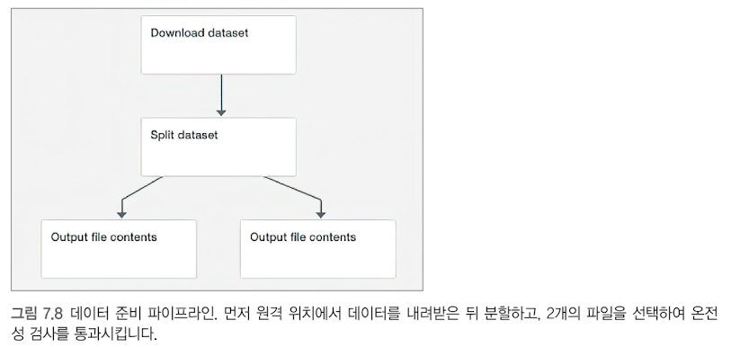
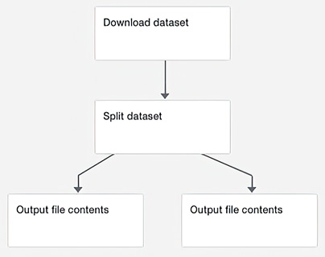
Figure 7.8 The data preparation pipeline. First, data is downloaded from a remote location, then it's split, and two files are selected to pass through a sanity check. (그림 7.8 데이터 준비 파이프라인. 먼저 원격 위치에서 데이터를 내려받은 뒤 분할하고, 2개의 파일을 선택하여 온전성 검사를 통과시킵니다.)
이미지 해설
- 첫 번째 그림(한국어 캡션 판): 위에서 아래로 흐르는 상자 3층 구조입니다. 맨 위
Download dataset상자에서 화살표가Split dataset로 내려가고, 거기서 화살표가 둘로 갈라져Output file contents상자 2개로 이어집니다. 그림 아래 한국어 캡션은 "원격 위치에서 내려받아 → 분할 → 2개의 파일을 선택해 온전성 검사"라는 흐름을 말합니다. - 두 번째 그림: 같은 그래프를 캡션 없이 잘라 낸 판입니다. 상자 구조와 화살표는 동일합니다. 영문 캡션은 위 인용문으로 함께 옮겼습니다.
- 여기서 확인할 것: 상자 4종(내려받기 1개 · 분할 1개 · 출력 2개)과 화살표 방향. 이 장이 끝날 때 Kubeflow 화면에 이 모양이 그대로 뜨는지가 점검 기준입니다.
- 미리 알아 둘 점: 이 그림은 책이 계획한 모양입니다. 원문 노트의 수정본은
output_file_contents를 validation 분할 하나에만 호출하므로 출력 상자가 1개이고, 그림과 모양이 다릅니다(실행 결과 화면은 이 절 끝의 7.23 풀이에서 다시 봅니다).
첫 번째 컴포넌트는 원격 위치에서 데이터셋을 내려받아 MinIO 버킷에 저장합니다. 출력값은 다운로드된 파일 목록입니다. 목록의 경로가 두 번째 컴포넌트로 전달됩니다. 이 컴포넌트는 해당 파일을 읽어 레이블과 이미지 파일명을 훈련, 검증, 테스트 세트로 분리합니다. 따라서 총 6개의 파일이 생성됩니다. 마지막으로, 6개 중 2개의 파일을 선택하여 그 내용을 출력함으로써 정상 동작 여부를 확인합니다.
⚠ 원문 정정: 위 설명 중 "목록의 경로가 전달된다 / 총 6개의 파일이 생성된다" 는 실제 코드와 맞지 않습니다. 이 장의 코드(Listing 7.18~7.21)는Output[Dataset]을 쓰므로 분할 결과는 파일 6개가 아니라 아티팩트 디렉터리 3개(train_dataset·validation_dataset·test_dataset)이고, 각 디렉터리 안에images/와labels/하위 폴더가 생깁니다. 또 "경로가 전달된다" 는 컴포넌트 안에서 쓰는 로컬 경로(.path)와 저장소 주소(.uri)를 구분해 읽어야 합니다. 각 태스크는 별도 파드에서 실행되어 입력 아티팩트를 내려받고, 출력은 launcher가 저장소에 올립니다. 그래서 "경로만 넘기니 데이터 복사가 전혀 없다" 는 뜻은 아닙니다.
🧒 초보자 설명 — 이 절에서 만드는 세 가지
| 만들 것 | 역할 | 입력 → 출력 |
|---|---|---|
download_dataset (앞 절에서 완성) |
인터넷에서 데이터 압축 파일을 받아 풀어 둠 | (없음) → output_dataset |
split_dataset (이 절) |
이미지·라벨을 짝으로 묶어 train/val/test 3등분 | input_dataset → train_dataset·validation_dataset·test_dataset |
output_file_contents (이 절) |
분할 결과 폴더 안 파일 목록을 로그로 찍는 점검용 | dataset → (로그) |
flowchart TD A["download_dataset 원격 압축 파일을 받아 풀기"] -->|"output_dataset"| B["split_dataset 75 대 15 대 10 으로 분할"] B -->|"train_dataset"| C["train 아티팩트"] B -->|"validation_dataset"| D["validation 아티팩트"] B -->|"test_dataset"| E["test 아티팩트"] D --> F["output_file_contents 파일 목록과 짝 점검"]
🧒 초보자 설명 — 흔한 오해
- "분할은 어차피 한 줄이면 된다?" 한 줄이긴 하지만
train_test_split은 2분할만 할 수 있어서 3분할은 두 번 나눠야 합니다(아래 7.20에서 계산). - "컴포넌트 3개 = 컨테이너 3개로 끝?" 컴포넌트마다 별도 파드가 뜨고, 사용자 이미지 외에 KFP가 붙이는 보조 컨테이너(launcher 등)도 함께 도는 것이 정상입니다("추가 단계" 참고).
- "분할은 항상 이 코드 그대로 쓴다?" 분할 기준(파일 단위 무작위, 클립 단위, 시간순 등)은 데이터 성격에 따라 달라집니다. 이 절의 코드는 파일 단위 무작위 분할입니다.
7.3.1 1단계: YOLO용 데이터셋 분할 및 커스텀 패키지 설치 (Listing 7.19~7.21)
1단계: YOLO용 데이터셋 분할 및 커스텀 패키지 설치 (Step 1: Dataset splitting for YOLO and installing custom packages)
데이터셋을 MinIO 버킷에 안전하게 저장했다면, 다음으로 해야 할 중요한 작업은 데이터셋을 훈련, 테스트, 검증 세트로 분할하는 것입니다. 경우에 따라 큐브플로 컴포넌트에 기본으로 포함되지 않은 특수한 도구나 라이브러리가 필요할 수 있습니다. 이 절에서는 컴포넌트에 커스텀 파이썬 패키지를 설치하는 방법을 살펴보며, 이를 통해 프로젝트에서 활용 가능한 다양한 리소스를 자유롭게 사용할 수 있습니다. 이러한 유연성 덕분에 머신러닝 프로젝트의 고유한 요구사항에 맞게 파이프라인을 맞춤 구성할 수 있습니다.
여기서는 사이킷런(scikit-learn)의 매우 편리한 헬퍼 함수인 train_test_split 을 활용하여 데이터셋 분할을 수행하며, 단 한 줄의 코드만으로 분할 작업을 완료할 수 있습니다. 먼저 다음과 같이 함수 시그니처와 임포트를 설정합니다. 공식 문서: train_test_split Docs
🧒 초보자 설명 — 컴포넌트 안에서 패키지를 설치한다는 것
컴포넌트는 "빈 파이썬 컨테이너" 위에서 돕니다. 거기에는 scikit-learn 같은 도구가 들어 있지 않습니다. 그래서 @dsl.component(packages_to_install=[...]) 에 이름을 적어 두면, 컴포넌트가 시작될 때 pip install 이 먼저 실행되고 그다음 함수 본문이 돕니다. 파이프라인 전체가 아니라 그 컴포넌트 하나에만 필요한 도구를 정해 줄 수 있다는 점이 핵심입니다.
scikit-learn 칼을, 다운로드 요리사는 requests 칼을 가져옵니다. 서로 도구가 섞여 충돌하는 일이 줄어듭니다. (일상 비유)Listing 7.19 — 여러 Output[Dataset]과 내부 임포트 사용 (Using multiple Output[Dataset] and inner imports)
# Listing 7.19 Using multiple Output[Dataset] and inner imports - 여러 Output[Dataset]과 내부 임포트 사용
@dsl.component(
packages_to_install=["scikit-learn"],
base_image="python:3.11"
)
def split_dataset(
random_state: int,
input_dataset: Input[Dataset], # Input[Dataset] 은 입력 데이터셋을 읽어올 위치를 지정한다.
train_dataset: Output[Dataset], # (아래 2줄 포함 설명) Output[Dataset] 파라미터는 분할된 데이터셋을 저장할 위치를 정의한다.
validation_dataset: Output[Dataset],
test_dataset: Output[Dataset]
):
import os
import glob
import shutil
from sklearn.model_selection import train_test_split
줄별 설명
| 줄 | 하는 일 | 초보자 풀이 |
|---|---|---|
@dsl.component( |
아래 함수를 KFP 컴포넌트로 만드는 데코레이터 | 일반 파이썬 함수에 "이건 파이프라인 한 칸이다" 라는 표지를 붙입니다. |
packages_to_install=["scikit-learn"] |
시작할 때 pip install scikit-learn 실행 |
이 컴포넌트에만 필요한 도구를 지정. 이름은 sklearn 이 아니라 scikit-learn (pip 이름) |
base_image="python:3.11" |
컴포넌트가 돌 컨테이너 기본 이미지 | 파이썬 3.11이 들어 있는 깨끗한 이미지에서 시작 |
random_state: int |
분할 난수 시드 | 같은 숫자면 같은 분할이 나옴 (재현성) |
input_dataset: Input[Dataset] |
입력 데이터셋 아티팩트 | 앞 컴포넌트(download_dataset)가 만든 폴더를 읽는 자리. 컴포넌트 안에서는 .path 로 로컬 폴더 위치를 얻음 |
train_dataset·validation_dataset·test_dataset: Output[Dataset] |
출력 아티팩트 3개 | 분할 결과를 쓸 폴더 3개. 호출하는 쪽에서는 이름 그대로 outputs["train_dataset"] 처럼 꺼냄 |
import ... (함수 안) |
내부 임포트 | 컴포넌트 함수는 본문만 따로 떼어 컨테이너에서 실행되므로, 필요한 import 는 반드시 함수 안에 둡니다. |
⚠ 원문 정정: 이 조각은dsl,Input,Output,Dataset을 임포트하는 줄이 없어서 그대로는NameError가 납니다. 파일 맨 위에from kfp import dsl와from kfp.dsl import Input, Output, Dataset를 두어야 합니다(Listing 7.23 의 파일 머리에 해당). 원문의**굵게 표시는 마크다운 강조 기호이므로 코드에서는 제거합니다.
컴포넌트 데코레이터는 패키지 설치와 베이스 이미지 지정을 담당합니다. Dataset 아티팩트를 활용해 데이터 위치를 관리합니다. 사이킷런 라이브러리는 packages_to_install 파라미터를 통해 설치되므로 컴포넌트를 좀 더 독립적으로 구성할 수 있습니다.
🧒 초보자 설명 — 숫자로 보기: 패키지는 언제 설치될까
- 이 컴포넌트가 시작될 때마다
pip install scikit-learn이 한 번 돈다고 보면 됩니다. 내려받는 시간만큼 컴포넌트 시작이 늦어집니다. - 원격 kind 클러스터 book-env 의 실습은 파이썬 이미지
python:3.11위에서 이 설치를 포함해 split 컴포넌트를 약 9분 동안 실행했습니다(대부분은 16.9GB 데이터를 내려받고 복사하는 시간이며, 패키지 설치 시간만 따로 잰 값은 없습니다).
Listing 7.20 — 75/15/10%로 train/val/test 분할 (Splitting the dataset into 75/15/10% for train/val/test)
다음 단계에서는 실제 분할 작업이 이루어집니다. images 와 labels 목록이 준비되어 있으므로, 사이킷런에서 제공하는 train_test_split 을 사용해 images 와 labels 를 훈련, 테스트, 검증 데이터셋으로 분할할 수 있습니다. 기본적으로 train_test_split 은 2개의 파티션(partition)으로만 분할하기 때문에, 3개의 파티션으로 나누려면 약간의 창의성과 수학적 계산이 필요합니다.
책 원문 코드는 다음과 같습니다(굵게 표시 기호 ** 제거, 한국어 주석은 원문 그대로).
# Listing 7.20 Splitting the dataset into 75/15/10% for train/val/test
@dsl.component(
packages_to_install=["scikit-learn"],
base_image="python:3.11"
)
def split_dataset(
random_state: int,
input_dataset: Input[Dataset],
train_dataset: Output[Dataset], # 각 데이터 분할(훈련/검증/테스트)에 대한 Output[Dataset] 아티팩트
validation_dataset: Output[Dataset],
test_dataset: Output[Dataset]
):
import os
import glob
import shutil
from sklearn.model_selection import train_test_split
BASE_PATH = "MINIDATA" # 테스트용 미니 데이터셋과 전체 데이터셋 간 전환
images = list(
glob.glob(
os.path.join(
input_dataset.path,
"DATASET",
BASE_PATH,
"images", "**")
)
) # 입력 데이터셋에서 모든 이미지 및 레이블 파일 위치 탐색
labels = list(
glob.glob(
os.path.join(
input_dataset.path,
"DATASET",
BASE_PATH,
"labels", "**")
)
)
train_ratio = 0.75 # 분할 비율 정의: 훈련 75%, 검증 15%, 테스트 10%
validation_ratio = 0.15
test_ratio = 0.10
x_train, x_test, y_train, y_test = train_test_split( # 1차 분할: 훈련 세트(75%)와 나머지(25%) 분리
images,
labels,
test_size=1 - train_ratio,
random_state=random_state
)
x_val, x_test, y_val, y_test = train_test_split( # 2차 분할: 나머지 데이터를 검증(15%)와 테스트(10%)로 분리
x_test,
y_test,
test_size=test_ratio / (test_ratio + validation_ratio),
random_state=random_state
)
줄별 설명
| 줄/덩어리 | 하는 일 | 초보자 풀이 |
|---|---|---|
BASE_PATH = "MINIDATA" |
데이터 폴더 이름 선택 | 책 원본 저장소는 작은 테스트 세트(MINIDATA)와 전체 세트를 이 값으로 전환하려는 의도입니다. 아래 정정 박스 참고 |
glob.glob(os.path.join(input_dataset.path, "DATASET", BASE_PATH, "images", "**")) |
이미지 파일 경로를 전부 모아 리스트로 | input_dataset.path 는 앞 컴포넌트 결과가 풀려 있는 로컬 폴더, 그 안의 DATASET/<BASE_PATH>/images/ 아래 파일을 전부 찾음 |
labels = list(glob.glob(... "labels", "**")) |
라벨(.txt) 경로 전부 | 이미지 한 장당 라벨 파일 한 개가 짝 |
train_ratio = 0.75 · validation_ratio = 0.15 · test_ratio = 0.10 |
목표 비율 | 세 수의 합이 1.0 |
1차 train_test_split(images, labels, test_size=1 - train_ratio, ...) |
75%를 train, 나머지 25%를 임시로 x_test·y_test 에 |
test_size=0.25 → "떼어 낼 몫이 25%" |
2차 train_test_split(x_test, y_test, test_size=test_ratio / (test_ratio + validation_ratio), ...) |
남은 25%를 val 과 test 로 나눔 | 0.10 / (0.10 + 0.15) = 0.4. 남은 25% 중 40%가 test(전체의 10%), 60%가 val(전체의 15%) |
random_state=random_state (두 호출 모두) |
같은 시드 사용 | 재현성 |
⚠ 원문 정정: 두 가지 문제가 있습니다. ①BASE_PATH— 실습에서 쓴 전체(FULL) 데이터셋 URL 의 tar 최상위 폴더는DATA이고MINIDATA는 없습니다(tar 전체 목록으로 확인, 0건). 원문 그대로면glob결과가 빈 리스트가 되어train_test_split이ValueError를 낼 것으로 판단되는 지점입니다(원문 실행으로 재현한 것은 아니며 코드를 읽은 판단입니다). 이 정정은 Listing 7.20 / 원본 저장소 코드에 해당합니다. ② 짝 맞춤 — 이미지와 라벨을 따로glob한 뒤 정렬 없이train_test_split(images, labels)에 넣으면, 두 리스트의 순서가 어긋날 경우 같은 이름의 이미지와 라벨이 서로 다른 분할에 들어갈 위험이 있습니다. 원본에서 실제로 어긋나는지는 재현하지 못했고, 수정본은 분할 결과의 짝 불일치가 0 임을 확인했습니다(아래 "고친 코드"). 결론: 두 목록은 대부분 같은 순서로 나오겠지만 그렇다는 보장은 없습니다. 그래서 파일 이름으로 짝을 맞추는 쪽이 안전합니다.
숫자로 보기 — 5,609쌍은 어떻게 4,206 / 841 / 562가 되나
book-env 실습의 객체 탐지 데이터는 이미지 5,609 + 라벨 5,609 = 5,609쌍입니다.
| 단계 | 계산 | 결과 |
|---|---|---|
1차 분할 (test_size = 1 - 0.75 = 0.25) |
5,609 × 0.25 = 1,402.25 → 올림 1,403 | 나머지 1,403, train = 5,609 − 1,403 = 4,206 |
2차 분할 (test_size = 0.10 / (0.10 + 0.15) = 0.4) |
1,403 × 0.4 = 561.2 → 올림 562 | test = 562, val = 1,403 − 562 = 841 |
| 합계 | 4,206 + 841 + 562 | 5,609 (전체와 같음) |
| 실제 비율 | 4,206/5,609 · 841/5,609 · 562/5,609 | 약 74.99% · 14.99% · 10.02% |
book-env 의 관측값은 이 계산과 같은 train 4,206 / val 841 / test 562이고, 분할 사이 파일 중복과 이미지·라벨 이름 불일치는 0 이었습니다. 부동소수점 test_size 는 scikit-learn 이 개수로 바꿀 때 올림(ceil) 하므로 비율이 정확히 75/15/10 이 아니라 "거의" 75/15/10 입니다.
같은 방식으로 영화 추천 데이터(7.3.2)의 평점 25,000,095건은 18,750,071 / 3,750,014 / 2,500,010 입니다(book-env 의 기록, 같은 산술로 재현됨). 아래 계산기로 직접 확인해 보세요.
전체 샘플 수 N
2차 분할: test_size = 0.10 / (0.10 + 0.15) = 0.4 → test = 562 (10.02%), validation = 1,403 − 562 = 841 (14.99%)
합계 = 5,609 (전체와 일치)
test_size 는 scikit-learn 이 개수로 환산할 때 올림(ceil) 하기 때문에 비율이 정확히 75/15/10 이 아니라 "거의" 맞습니다. 이 위젯은 그 산술만 흉내 낸 것이며 실제 분할 결과(어느 파일이 어느 분할에 가는지)는 보여 주지 않습니다.
flowchart TD A["전체 5609쌍"] -->|"1차 test_size 0.25"| B["train 4206 약 75 퍼센트"] A -->|"1차 나머지 1403 올림"| C["남은 1403"] C -->|"2차 test_size 0.4"| D["test 562 약 10 퍼센트"] C -->|"2차 나머지"| E["validation 841 약 15 퍼센트"]
🧒 초보자 설명 — 흔한 오해
- "
test_size=0.10을 두 번째에 그대로 쓰면 되지 않나?" 아닙니다. 두 번째 호출의 대상은 전체가 아니라 남은 25% 입니다. 그래서 0.10 이 아니라0.10 / (0.10 + 0.15) = 0.4를 씁니다. - "
random_state를 안 넘겨도 같은 분할이 나온다?" 아닙니다. 시드를 지정해야 다시 실행해도 같은 분할이 나옵니다. 두 호출에 같은 값을 넘깁니다. - "시드를 바꾸면 행 수도 달라진다?" 전체 행 수와 분할 비율이 같으면 시드를 바꿔도 train / val / test 의 행 수는 같습니다. 달라지는 것은 어떤 행이 어느 묶음에 들어가는지와 거기서 계산한 통계입니다. 행 수가 달라지는 것은 데이터 크기나 비율을 바꿨을 때입니다.
- "비율이 숫자와 정확히 같다?" 올림 때문에 파일 개수가 1~2개 정도 달라질 수 있고, 그래서 74.99% / 14.99% / 10.02% 처럼 나옵니다.
- "이미지와 라벨은 따로 섞어도 된다?" 안 됩니다. 이미지
CA01_01.tif와 라벨CA01_01.txt는 같은 분할에 함께 들어가야 합니다.train_test_split(images, labels, ...)은 두 리스트를 같은 인덱스로 함께 섞기는 하지만, 두 리스트의 순서가 처음부터 짝이 맞아 있어야 안전합니다. - 분할 기준 주의: 이 코드는 파일 단위 무작위 분할입니다. book-env 의 파일 목록에서 같은 클립
CA01의 프레임이 validation 에도(CA01_09·13·16·18·27) test 에도(CA01_24·30) 들어 있었습니다. 클립 단위로 분리하지 않았다는 사실만 확인된 것이고, 그것이 평가 점수를 실제로 부풀렸는지는 확인하지 못했습니다.
수정본 코드 (미실행 예시) — 이미지·라벨을 파일 이름으로 짝지은 split_dataset 전체
원문 노트가 실제로 쓴 형태에 가깝게 정리한 코드입니다. 책 원문과 다른 점: ① BASE_PATH = "DATA" ② 이미지와 라벨을 파일 이름(확장자 제외) 으로 짝지은 뒤 정렬 ③ 분할 대상은 이름 리스트 하나(stems) ④ 개수·짝 로그 출력. 이 박스의 코드는 새로 실행해 본 것이 아니라 노트의 성공 기록(run SUCCEEDED)을 바탕으로 한 미실행 예시입니다.
from kfp import dsl
from kfp.dsl import Input, Output, Dataset
@dsl.component(packages_to_install=["scikit-learn"], base_image="python:3.11")
def split_dataset(
random_state: int,
input_dataset: Input[Dataset],
train_dataset: Output[Dataset],
validation_dataset: Output[Dataset],
test_dataset: Output[Dataset],
):
import glob
import os
import shutil
from sklearn.model_selection import train_test_split
BASE_PATH = "DATA" # 원본은 "MINIDATA" (이 데이터셋에는 없음)
root = os.path.join(input_dataset.path, "DATASET", BASE_PATH)
def by_stem(sub):
d = {}
for p in glob.glob(os.path.join(root, sub, "*")):
if os.path.isfile(p):
d[os.path.splitext(os.path.basename(p))[0]] = p # 확장자 뗀 이름 -> 경로
return d
imgs, lbls = by_stem("images"), by_stem("labels")
stems = sorted(set(imgs) & set(lbls)) # 이름이 같은 쌍만, 정렬해서 재현성 확보
print(f"images={len(imgs)} labels={len(lbls)} paired={len(stems)} "
f"only_img={len(set(imgs) - set(lbls))} only_lbl={len(set(lbls) - set(imgs))}", flush=True)
train_ratio, validation_ratio, test_ratio = 0.75, 0.15, 0.10
s_train, s_rest = train_test_split(stems, test_size=1 - train_ratio, random_state=random_state)
s_val, s_test = train_test_split(
s_rest, test_size=test_ratio / (test_ratio + validation_ratio), random_state=random_state
)
print(f"split train={len(s_train)} val={len(s_val)} test={len(s_test)}", flush=True)
for out, split_stems in [(train_dataset, s_train), (validation_dataset, s_val), (test_dataset, s_test)]:
os.makedirs(os.path.join(out.path, "images"), exist_ok=True)
os.makedirs(os.path.join(out.path, "labels"), exist_ok=True)
for s in split_stems:
shutil.copy2(imgs[s], os.path.join(out.path, "images", os.path.basename(imgs[s])))
shutil.copy2(lbls[s], os.path.join(out.path, "labels", os.path.basename(lbls[s])))
print(f"wrote {out.path} n={len(split_stems)}", flush=True)
by_stem()은{파일명(확장자 제외): 경로}딕셔너리를 만듭니다.CA01_01.tif와CA01_01.txt가 같은 키CA01_01로 묶입니다.sorted(set(imgs) & set(lbls))의&는 교집합입니다. 이미지만 있거나 라벨만 있는 이름은 걸러지고,sorted로 순서가 고정되어 파일 시스템 순서와 상관없이 재현됩니다. book-env 로그:paired=5609 only_img=0 only_lbl=0.- 분할 대상은 이름(stem) 리스트 하나라서 이미지와 라벨이 갈라질 수 없습니다.
- 두 번 나누는 계산은 위 "숫자로 보기"와 같습니다.
Listing 7.21 — 데이터셋 분할을 정리하는 헬퍼 함수 (Helper function to organize dataset splits)
이제 방금 생성한 데이터셋 분할 결과를 정리하는 헬퍼 함수를 살펴보겠습니다. (원문 노트에는 "리스트 7.2.1" 이라고 적혀 있으나 Listing 번호 순서상 아래가 Listing 7.21 입니다.)
# Listing 7.21 Helper function to organize dataset splits - 데이터셋 분할을 정리하는 헬퍼 함수
def split_dataset(...):
for dataset_output, x_files, y_files in [ # 각 데이터 분할(훈련/검증/테스트)과 해당 파일들을 순회한다.
(train_dataset, x_train, y_train),
(validation_dataset, x_val, y_val),
(test_dataset, x_test, y_test)
]:
os.makedirs(
os.path.join(
dataset_output.path,
"images"
),
exist_ok=True
) # 각 출력 아티팩트 경로에 images 와 labels 디렉터리를 생성한다.
os.makedirs(
os.path.join(dataset_output.path, "labels"),
exist_ok=True
)
for src in x_files: # 이미지 파일을 각 분할 디렉터리에 복사한다.
dest = os.path.join(
dataset_output.path,
"images",
os.path.basename(src)
)
shutil.copy2(src, dest)
for src in y_files: # 레이블 파일을 각 분할 디렉터리에 복사한다.
dest = os.path.join(
dataset_output.path,
"labels",
os.path.basename(src)
)
shutil.copy2(src, dest)
⚠ 원문 정정: 이 조각은 그대로 실행할 수 없습니다.def split_dataset(...):아래의for가 들여쓰기 없이 시작해IndentationError가 납니다. 이 코드는 별도 함수가 아니라 Listing 7.20 의split_dataset함수 본문 끝에 이어 붙는 블록(함수 안, 4칸 들여쓰기)입니다. 고친 형태는 아래 "고친 코드"를 보세요. 원문의os.makedirs같은**는 강조 기호라 제거했습니다.
줄별 설명
| 줄/덩어리 | 하는 일 | 초보자 풀이 |
|---|---|---|
for dataset_output, x_files, y_files in [ ... ] |
3개 분할을 한 바퀴씩 | (출력 아티팩트, 이미지 목록, 라벨 목록) 세 쌍을 목록으로 만들어 반복 → train 한 번, validation 한 번, test 한 번 |
os.makedirs(os.path.join(dataset_output.path, "images"), exist_ok=True) |
출력 폴더 안에 images/ 생성 |
exist_ok=True 는 이미 있어도 오류 내지 않음 |
os.makedirs(... "labels" ...) |
labels/ 생성 |
이미지와 라벨 폴더를 분리 |
for src in x_files: ... shutil.copy2(src, dest) |
이미지를 새 위치로 복사 | os.path.basename(src) 로 원래 파일 이름 그대로 복사. copy2 는 수정 시각 같은 메타데이터까지 복사 |
for src in y_files: ... |
라벨도 동일하게 복사 | 이름이 같으니 images/CA01_01.tif ↔ labels/CA01_01.txt 규칙이 유지됨 |
이 코드는 분할된 데이터셋을 적절한 디렉터리 구조로 정리합니다. 각 분할(훈련, 검증, 테스트)마다 해당 Output[Dataset] 아티팩트 내에 이미지와 레이블을 위한 별도의 디렉터리를 생성합니다. 그런 다음 원본 파일 이름을 유지하면서 소스 위치에서 이 새 디렉터리로 파일을 복사합니다. 모든 분할에 걸쳐 디렉터리 구조(images 및 labels 하위 디렉터리)가 동일하게 유지되므로, 데이터 구성의 일관성을 보장합니다.
고친 코드 (미실행 예시) — Listing 7.20 함수 안에 들어가는 형태
# (split_dataset 함수 본문 끝, 4칸 들여쓰기 안에서)
for dataset_output, x_files, y_files in [
(train_dataset, x_train, y_train),
(validation_dataset, x_val, y_val),
(test_dataset, x_test, y_test),
]:
os.makedirs(os.path.join(dataset_output.path, "images"), exist_ok=True)
os.makedirs(os.path.join(dataset_output.path, "labels"), exist_ok=True)
for src in x_files: # 이미지 복사
dest = os.path.join(dataset_output.path, "images", os.path.basename(src))
shutil.copy2(src, dest)
for src in y_files: # 라벨 복사
dest = os.path.join(dataset_output.path, "labels", os.path.basename(src))
shutil.copy2(src, dest)
🧒 초보자 설명 — 쉬운 비유와 숫자
- 복사이므로 저장 공간이 늘어납니다. book-env 의 실습에서 원본 압축 해제본 16.9GB(파일 11,218개)가 분할마다 복사되어, 분할본도 약 16.9GB, 합쳐 약 33.8GB 가 저장소에 남았습니다(원격 kind 클러스터에서의 관측·산술 값).
- 분할별 크기(book-env 기록): train 12.68GB · validation 2.53GB · test 1.69GB — 비율 75.0 / 15.0 / 10.0%.
- 이 크기 때문에 split 컴포넌트가 입력을 내려받고 분할본을 쓰는 동안 파드 디스크에 약 33.8GB 가 필요합니다. 디스크 100GB 이상은 보장값이 아니라 여유를 둔 권장 추정치입니다.
7.3.1 2단계: 입력 파일에서 파일 내용 출력하기 (Listing 7.22)
2단계: 입력 파일에서 파일 내용 출력하기 (Step 2: Outputting file contents from input files)
모든 것이 정상적으로 작동하는지 확인하는 데 매우 유용한 임시 컴포넌트를 만들어 보겠습니다. 이 컴포넌트는 데이터셋 분할 컴포넌트의 출력 경로를 받아 해당 파일의 내용을 출력합니다.
Listing 7.22 — 파일 경로를 받아 내용을 출력하는 컴포넌트 (Component printing the contents given the file path)
# Listing 7.22 Component printing the contents given the file path - 파일 경로를 받아 내용을 출력하는 컴포넌트
@dsl.component
def output_file_contents(dataset: Input[Dataset]): # 데이터셋 아티팩트를 입력으로 받아 내용을 조회한다.
import os
def list_files(start_path): # 디렉터리 트리를 재귀적으로 순회하며 파일 목록을 출력하는 헬퍼 함수
for root, dirs, files in os.walk(start_path):
level = root.replace(
start_path, ''
).count(os.sep) # 디렉터리 깊이를 기준으로 들여쓰기 수준을 계산한다.
indent = ' ' * 4 * (level)
print(f'{indent}{os.path.basename(root)}/')
sub_indent = ' ' * 4 * (level + 1)
for f in files:
print(f'{sub_indent}{f}') # 시각적 계층 구조를 위해 각 파일을 적절한 들여쓰기와 함께 출력한다.
print(f"Contents of {dataset.path}:")
list_files(dataset.path)
데이터 처리 파이프라인을 검증하기 위한 유틸리티 컴포넌트도 만들어야 합니다. 이 컴포넌트는 Dataset 아티팩트를 입력으로 받아 디렉터리 구조를 트리 형태로 출력함으로써, 분할된 데이터셋 파일의 구성과 존재 여부를 손쉽게 확인할 수 있게 해 줍니다. 단순한 구성이지만 디버깅과 파일이 각 디렉터리에 올바르게 배치되었는지 확인하는 데 매우 유용합니다.
이 컴포넌트는 데이터셋 디렉터리를 재귀적으로 순회하면서 하위 디렉터리와 파일을 들여쓰기로 표현하여 계층 구조를 보여 줍니다. 출력 결과를 통해 상위 분할 컴포넌트가 데이터셋을 어떻게 구성했는지 명확하게 파악할 수 있습니다.
줄별 설명
| 줄 | 하는 일 | 초보자 풀이 |
|---|---|---|
@dsl.component |
함수를 컴포넌트로 | 괄호 없이 쓰면 기본값: 설치할 패키지 없음, 기본 베이스 이미지 사용 |
def output_file_contents(dataset: Input[Dataset]) |
입력 하나 | 분할 컴포넌트의 출력 중 하나(예: validation_dataset)를 받음 |
def list_files(start_path) |
폴더 구경 함수 | 컴포넌트 함수 안에 정의한 보조 함수 |
for root, dirs, files in os.walk(start_path) |
하위 폴더까지 전부 훑음 | os.walk 는 (현재 폴더, 하위 폴더 목록, 파일 목록)을 차례로 돌려줌 |
level = root.replace(start_path, '').count(os.sep) |
깊이 계산 | 시작 경로를 지우고 남은 경로의 / 개수 = 깊이 |
indent = ' ' * 4 * (level) |
들여쓰기 | 깊이 × 4칸 |
print(f'{indent}{os.path.basename(root)}/') |
폴더 이름 출력 | 끝에 / 를 붙여 폴더임을 표시 |
sub_indent = ' ' * 4 * (level + 1) |
파일용 들여쓰기 | 폴더보다 한 단계 안쪽 |
for f in files: print(...) |
파일 이름 출력 | 파일마다 한 줄 |
print(f"Contents of {dataset.path}:") / list_files(dataset.path) |
실행 | 헤더를 찍고 트리를 출력 |
⚠ 원문 정정: 이 코드는 문법상 문제는 없지만 실제 데이터에는 쓰기 어렵습니다. ① 출력량 — 파일을 하나도 빼지 않고 전부 찍기 때문에, 원격 kind 클러스터 book-env 의 데이터(분할 폴더당 이미지·라벨 각 수백~수천 개)에서는 로그가 수천 줄로 폭주합니다. ② 검증 범위 — "파일이 있는지" 를 눈으로 보는 용도일 뿐, 이미지와 라벨 이름이 서로 맞는지는 확인하지 않습니다. 원문 노트는 폴더당 5개와 개수만 출력하고 이미지·라벨 이름 집합의 대칭차로 짝 불일치 수(mismatch)를 찍도록 고쳤습니다. 또 이 컴포넌트는base_image를 따로 지정하지 않아 KFP SDK 기본 이미지(book-env 컴파일 결과python:3.8)에서 돕니다.
고친 코드 (원문 노트의 형태, 미실행 예시)
@dsl.component
def output_file_contents(dataset: Input[Dataset]):
import os
def list_files(start_path):
for root, dirs, files in os.walk(start_path):
level = root.replace(start_path, "").count(os.sep)
indent = " " * 4 * level
print(f"{indent}{os.path.basename(root)}/")
for f in sorted(files)[:5]: # 파일이 많아서 디렉터리당 5개만 (원본은 전부 출력)
print(f"{indent} {f}")
if len(files) > 5:
print(f"{indent} ... ({len(files)} files)")
print(f"Contents of {dataset.path}:")
list_files(dataset.path)
imgs = {os.path.splitext(f)[0] for f in os.listdir(os.path.join(dataset.path, "images"))}
lbls = {os.path.splitext(f)[0] for f in os.listdir(os.path.join(dataset.path, "labels"))}
print(f"pair check: images={len(imgs)} labels={len(lbls)} mismatch={len(imgs ^ lbls)}")
sorted(files)[:5]— 이름순으로 앞의 5개만 출력, 그보다 많으면... (N files)로 총 개수를 표시.imgs ^ lbls— 두 집합의 대칭차(한쪽에만 있는 이름). 길이가 0 이면 이미지와 라벨 이름이 완전히 일치합니다.- 원격 kind 클러스터에서의 관측 로그(validation 분할):
pair check: images=841 labels=841 mismatch=0.
🧒 초보자 설명 — 이 임시 컴포넌트가 필요한 이유
파이프라인이 "성공(초록 체크)" 이라고 해서 데이터가 제대로 나뉘었다는 보장은 없습니다. 분할 컴포넌트는 폴더만 만들면 성공으로 끝나니까요. output_file_contents 는 폴더를 열어 보는 눈 역할입니다. 로그 탭에서 images/, labels/ 아래 파일이 실제로 있는지 확인합니다.
🧒 초보자 설명 — 숫자로 보기와 흔한 오해
- 숫자: 원격 kind 클러스터에서 이 검증 컴포넌트는 약 1분 걸렸고(다운로드 약 25분 + split 약 9분 + 검증 약 1분 = 약 35분 실습), validation 분할의
images/·labels/는 각각 841개였습니다. - 오해 ①: "목록이 출력되면 데이터가 올바르다." 개수와 이름 일치를 같이 봐야 합니다(위
pair check). - 오해 ②: "검증 컴포넌트가 test·train도 검사한다." 노트의 호출은
validation_dataset하나만 검사합니다. train·test 도 보려면 컴포넌트를 한 번씩 더 호출해야 합니다. - 오해 ③: "로그가 많을수록 안전하다." 로그도 저장소에 쌓이는 용량입니다(이 절 끝의 그림 설명 참고).
7.3.1 컴포넌트로 구성하는 전체 파이프라인 (Listing 7.23)
컴포넌트로 구성하는 전체 파이프라인 (Full pipeline from components)
데이터셋 다운로드, 분할, 출력 검증을 담당하는 컴포넌트를 모두 갖추었으니, 이제 이를 하나의 완전한 파이프라인으로 조립할 차례입니다. 리스트 7.23은 KFP v2를 사용해 데이터 준비 파이프라인을 정의하는 방법을 보여 줍니다.
Listing 7.23 — 전체 데이터 준비 파이프라인 생성 (Creating the full data preparation pipeline)
책 원문 코드입니다(** 강조 기호만 제거). 원문에는 문제가 있는 줄이 있어 바로 아래에서 정정합니다.
# Listing 7.23 Creating the full data preparation pipeline - 전체 데이터 준비 파이프라인 생성
from kfp import dsl
from kfp.dsl
import Input, Output, Dataset
@dsl.pipeline(
name="data_preparation_pipeline",
description="Pipeline for preparing and splitting dataset"
)
def pipeline(random_state: int = 42):
download_op = download_dataset()
split_op = split_dataset(
random_state=random_state,
input_dataset=download_op.outputs["output_dataset"]
)
output_file_contents(dataset=split_op.outputs["x_val_output"])
output_file_contents(dataset=split_op.outputs["y_val_output"])
⚠ 원문 정정: 두 곳이 틀렸습니다. ① 줄바꿈된 import —from kfp.dsl다음 줄에import Input, Output, Dataset이 따로 있어SyntaxError가 납니다. 한 줄from kfp.dsl import Input, Output, Dataset이어야 합니다. ② 존재하지 않는 출력 이름 —split_dataset의 출력 이름은train_dataset·validation_dataset·test_dataset뿐입니다(Listing 7.19~7.20 의 파라미터 이름)."x_val_output"·"y_val_output"은 없는 키라서 컴파일 단계에서KeyError가 납니다(원격 kind 클러스터 book-env 에서도 확인됨). 또 이 파이프라인 조각만으로는download_dataset·split_dataset·output_file_contents가 정의되어 있지 않으므로 실제 파일에서는 같은 파일 위쪽에 Listing 7.16~7.22 의 컴포넌트 정의가 있어야 합니다.
고친 코드 (미실행 예시) — 컴파일 블록까지 포함한 파이프라인 정의
원문 노트의 형태입니다. validation 분할 하나만 점검 컴포넌트로 보냅니다. 책 그림 7.8 처럼 출력 상자를 2개로 하고 싶다면 output_file_contents(dataset=split_op.outputs["train_dataset"]) 를 한 줄 더 부르면 됩니다(test_dataset 도 동일).
from kfp import dsl
from kfp.dsl import Input, Output, Dataset
# ... download_dataset, split_dataset, output_file_contents 컴포넌트 정의가 위에 있어야 합니다 ...
@dsl.pipeline(
name="data_preparation_pipeline",
description="Pipeline for preparing and splitting dataset"
)
def pipeline(random_state: int = 42):
download_op = download_dataset()
split_op = split_dataset(
random_state=random_state,
input_dataset=download_op.outputs["output_dataset"]
)
output_file_contents(dataset=split_op.outputs["validation_dataset"])
if __name__ == "__main__":
from kfp import compiler
compiler.Compiler().compile(pipeline_func=pipeline, package_path="dataprep_pipeline.yaml")
줄별 설명
| 줄 | 하는 일 | 초보자 풀이 |
|---|---|---|
from kfp import dsl |
KFP 도구 가져오기 | dsl.component, dsl.pipeline 데코레이터가 들어 있는 모듈 |
from kfp.dsl import Input, Output, Dataset |
타입 가져오기 | 아티팩트 입출력 표기에 쓰는 이름들 |
@dsl.pipeline(name=..., description=...) |
이 함수를 파이프라인으로 지정 | 이름과 설명이 UI의 Pipelines 목록에 표시됨 |
def pipeline(random_state: int = 42) |
파이프라인 입력 | 기본값 42. UI 의 Run parameters 에 자동으로 나타남(그림 7.12) |
download_op = download_dataset() |
첫 번째 단계 | 호출 = 실행이 아니라 "이 칸을 그래프에 넣어라" 라는 선언 |
split_op = split_dataset(random_state=random_state, input_dataset=download_op.outputs["output_dataset"]) |
둘째 단계 | 앞 단계의 출력 output_dataset 을 입력으로 연결 → 순서가 자동으로 정해짐 |
output_file_contents(dataset=split_op.outputs[...]) |
점검 단계 | 분할 결과 하나를 읽어 파일 목록을 로그로 출력 |
파이프라인 데코레이터(@dsl.pipeline)는 해당 함수를 KFP 파이프라인으로 지정하며, 이름과 설명을 부여합니다. 이 파이프라인은 재현성을 위해 기본값이 42로 설정된 random_state 파라미터를 받습니다. 파이프라인 내부에서는 각 컴포넌트를 연결하여 워크플로를 구성합니다.
download_dataset은 첫 번째 오퍼레이션을 생성합니다.split_dataset은download_dataset의 출력으로부터input_dataset을 전달받습니다.output_file_contents는 두 검증 데이터셋 분할 결과를 모두 확인합니다. (이 설명은 책 그대로입니다. 이 장의 실습 코드는validation_dataset한 가지만 한 번 점검합니다.)
KFP v2가 출력과 입력을 통해 의존성을 관리하는 방식에 주목하세요. split_op 가 download_op 의 출력을 사용할 때, KFP는 download_op 가 먼저 실행되도록 자동으로 보장합니다. Dataset 아티팩트는 컴포넌트 간 실제 데이터 전달을 처리합니다. 이제 실행 순서를 명시적으로 관리하거나 컴포넌트가 동시에 실행되는 상황을 걱정할 필요가 없습니다.
각 컴포넌트에 필요한 패키지는 해당 컴포넌트의 데코레이터에 직접 명시됩니다(예: packages_to_install=["scikit-learn"]). 이를 통해 의존성을 파이프라인 수준이 아닌 컴포넌트 수준에서 명확하고 독립적으로 관리할 수 있습니다.
flowchart LR A["download_op"] -->|"outputs output_dataset"| B["split_op"] B -->|"validation_dataset"| C["output_file_contents"] B -.->|"train_dataset 와 test_dataset"| D["다음 장에서 학습에 사용"]
⚠ 원문 정정: "출력으로 의존성이 자동 결정되므로 실행 순서를 걱정할 필요가 없다" 는 설명은 데이터를 주고받는 단계에는 맞습니다. 다만 데이터 연결이 없는 두 태스크 사이에서 순서를 강제하고 싶을 때는 .after(앞_태스크) 가 따로 필요합니다(이 파이프라인에는 해당 없음). 또 "Dataset 아티팩트가 컴포넌트 간 실제 데이터 전달을 처리한다" 는 말은 태스크마다 별도 파드에서 입력을 내려받고 출력을 올린다는 뜻이지 한 번 올린 데이터를 복사 없이 공유한다는 뜻이 아닙니다. 이 실습에서도 원본 16.9GB 업로드와 분할본 재업로드가 각각 일어났습니다.
스크립트 전체를 실행하여 파이프라인을 컴파일하세요.
% python data_prep_pipeline.py
오류가 발생하지 않으면 dataprep_pipeline.yaml 파일이 생성됩니다.
⚠ 원문 정정: 위 명령 앞의%는 터미널 프롬프트 표기이고 실제로 입력하는 것은python data_prep_pipeline.py입니다. 그리고 이 명령으로 YAML 이 만들어지려면 파일 맨 아래에compiler.Compiler().compile(pipeline_func=pipeline, package_path='dataprep_pipeline.yaml')를 호출하는if __name__ == '__main__':블록이 있어야 합니다(Listing 7.17 과 위 "고친 코드"). 원문 7.23 조각에는 이 블록이 빠져 있습니다. 또 코드 블록 언어는python으로 표기되어 있지만 실제 내용은 셸 명령입니다.
[PC 터미널] 컴파일 실행(미실행 예시):
# KFP SDK가 설치된 가상환경(kfp 2.9.0 기준 Python 3.8 이상 3.13 미만)에서 실행
python data_prep_pipeline.py
ls -l dataprep_pipeline.yaml # 파일이 생겼는지 확인
🔍 확인 방법:
dataprep_pipeline.yaml이 생기고 오류가 없으면 성공입니다. 보충 설명: 컴파일된 YAML 안에서random_state의defaultValue는 정수 42 가 아니라42.0으로 적히는 것이 정상입니다(내부 숫자 표기). 원격 kind 클러스터 book-env 에서도 같은 형식의 YAML 을 사용했습니다.
🧒 초보자 설명 — 흔한 오해와 쉬운 비유
python data_prep_pipeline.py 는 레시피를 YAML 이라는 정리된 문서로 옮겨 적는 일일 뿐입니다.- 오해 ①: "
download_dataset()을 부르면 바로 다운로드된다." 파이프라인 함수 안의 호출은 그래프 칸을 만드는 선언입니다. 다운로드는 Run 을 시작한 뒤 파드에서 일어납니다. - 오해 ②: "컴파일하면 데이터가 준비된다." 컴파일은 YAML 만 만듭니다.
- 오해 ③: "
random_state는 코드에서만 바꾼다." UI 의 Run parameters 에서 값을 바꿔 새 Run 을 시작할 수 있습니다. - 숫자로 보기: 이 파이프라인은 태스크 3개(download 1 + split 1 + 점검 1; 책 그림은 점검 2)입니다. 원격 kind 클러스터 book-env 에서 소요 시간은 다운로드 약 25분 · split 약 9분 · 검증 약 1분이었고, 합계가 35분입니다.
7.3.1 파이프라인 업로드 (그림 7.9~7.11)
파이프라인 업로드 및 실행 (Upload and run pipeline)
컴파일해서 만든 dataprep_pipeline.yaml 을 Kubeflow 화면에 올려 실행하는 과정입니다. 순서는 ① Upload pipeline → ② YAML 파일 선택 → ③ 그래프 확인 → ④ Create Run → ⑤ Experiment 선택 → ⑥ Start → ⑦ 로그 확인 입니다.
flowchart LR A["YAML 컴파일 완료"] --> B["Upload pipeline"] B --> C["YAML 파일 선택 후 Upload"] C --> D["그래프 확인"] D --> E["Create run"] E --> F["Experiment 선택"] F --> G["Start"] G --> H["컴포넌트 로그 확인"]
① Upload pipeline 버튼
큐브플로 UI 에서 그림 7.9에 표시된 화면 오른쪽 상단의 Upload pipeline 버튼을 클릭하세요. 업로드된 모든 파이프라인을 이곳에서 확인할 수 있습니다.
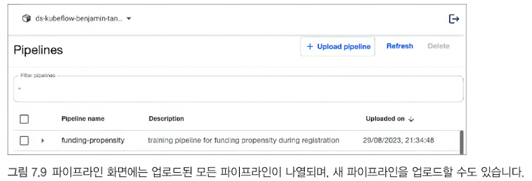
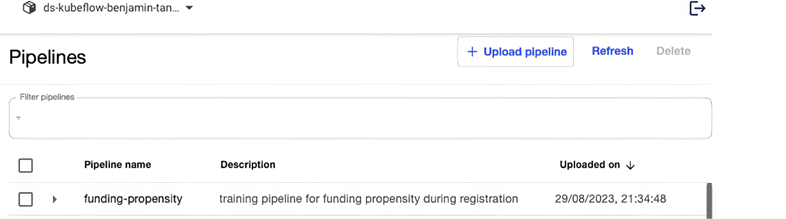
Figure 7.9 The Pipelines screen lists all the uploaded pipelines and also lets you upload new pipelines. (그림 7.9 파이프라인 화면에는 업로드된 모든 파이프라인이 나열되며, 새 파이프라인을 업로드할 수도 있습니다.)
이미지 해설
- 보이는 것: 상단 네임스페이스 선택 영역(
ds-kubeflow-…형태로 잘려 보임), 제목Pipelines, 오른쪽 위의 + Upload pipeline,Refresh, 회색으로 비활성인Delete, 목록 필터 입력칸, 그리고 목록 한 줄 — 이름funding-propensity, 설명 "training pipeline for funding propensity during registration", 업로드 일시29/08/2023, 21:34:48. 아래 두 번째 그림은 같은 화면을 크게 잘라 낸 것입니다. - 초보자 풀이: 이 목록은 책 저자의 Kubeflow 에 이미 올라 있던 다른 파이프라인의 예입니다. 내 화면에는 아무것도 없거나 내가 올린 것만 보일 수 있고, 그것이 정상입니다. 새 파이프라인은 오른쪽 위 파란 Upload pipeline 으로 올립니다.
- 여기서 확인할 것: 버튼 위치(오른쪽 위),
Delete가 선택 전에는 비활성인 점. 접속한 네임스페이스(예:kubeflow-user-example-com)가 맞는지 상단에서 확인하세요.
② 파일 선택 — YAML 또는 zip
다른 파이프라인을 업로드할 경우 이곳에서 모두 확인할 수 있습니다. 3단계에서 컴파일된 데이터 준비 파이프라인이 들어 있는 폴더로 이동하세요(dataprep_pipeline.yaml). 그림 7.10을 참고하세요.
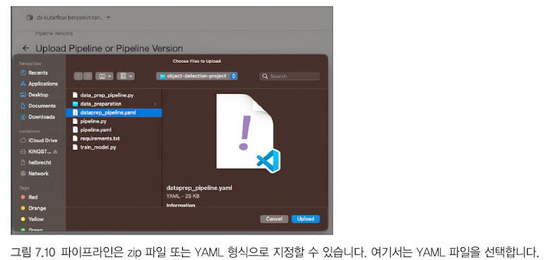
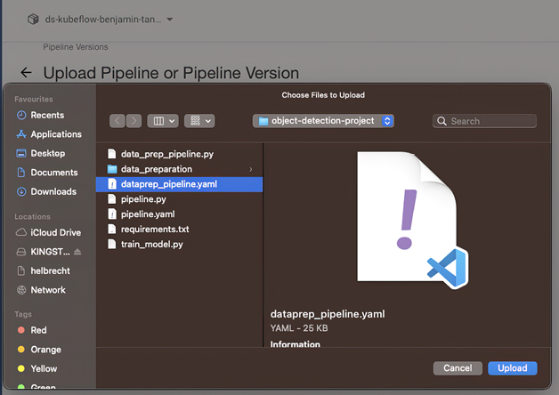
Figure 7.10 Pipelines can either be zip files or YAML. In this case, we're selecting a YAML file. (그림 7.10 파이프라인은 zip 파일 또는 YAML 형식으로 지정할 수 있습니다. 여기서는 YAML 파일을 선택합니다.)
이미지 해설
- 보이는 것: 화면 뒤쪽은
Upload Pipeline or Pipeline Version페이지이고, 앞쪽에 macOS 파일 선택 창(Choose Files to Upload)이 떠 있습니다. 폴더는object-detection-project, 안에data_prep_pipeline.py,data_preparation(폴더),dataprep_pipeline.yaml(선택됨),pipeline.py,pipeline.yaml,requirements.txt,train_model.py가 보입니다. 오른쪽 미리보기에는dataprep_pipeline.yaml · YAML - 25 KB가 표시되고 하단에Cancel/Upload버튼이 있습니다. - 초보자 풀이: 컴파일 결과물
dataprep_pipeline.yaml을 골라 올립니다. 파이썬 파일(data_prep_pipeline.py)이 아니라 컴파일된 YAML 을 올리는 것이 핵심입니다. 같은 폴더의pipeline.yaml같은 다른 파일과 혼동하지 마세요. - 여기서 확인할 것: 선택한 파일 이름이
dataprep_pipeline.yaml인지, 확장자가.yaml또는.zip인지. (25 KB는 책 화면의 값이며 내 YAML 크기와 같을 필요는 없습니다.)
③ 업로드 후 그래프 확인
Upload 를 클릭하면 파이프라인의 그래픽 표현을 확인할 수 있습니다(그림 7.11). 이 화면을 통해 모든 파이프라인 컴포넌트가 예상대로 연결되어 있는지도 점검할 수 있습니다.
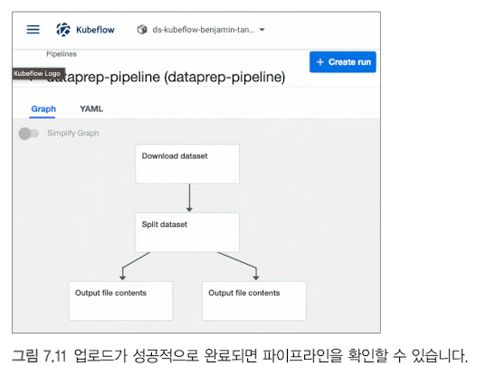
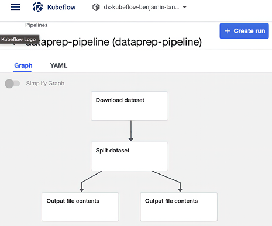
Figure 7.11 After a successful upload, you can see the pipeline. (그림 7.11 업로드가 성공적으로 완료되면 파이프라인을 확인할 수 있습니다.)
이미지 해설
- 보이는 것: 제목
dataprep-pipeline (dataprep-pipeline), 오른쪽 위 파란 + Create run 버튼, 탭Graph(선택됨)와YAML,Simplify Graph토글(꺼짐). 그래프에는Download dataset→Split dataset→Output file contents2개가 그림 7.8 과 같은 모양으로 있습니다. 왼쪽 위 검은 말풍선Kubeflow Logo는 마우스를 올렸을 때 나타난 도구 설명입니다. - 초보자 풀이: 컴파일한 YAML 이 올바른지 눈으로 먼저 확인하는 화면입니다. 상자 이름은 함수 이름(
download_dataset→ "Download dataset")에서 만들어집니다.YAML탭을 누르면 올린 파일 내용을 그대로 볼 수 있습니다. - 여기서 확인할 것: 상자 연결이 계획(그림 7.8)과 같은지. 정정된 코드(점검 컴포넌트를
validation_dataset한 곳에만 호출)를 쓰면 마지막 줄 상자가 1개일 수 있습니다. 연결이 이상하면 Run 을 시작하기 전에 코드를 고쳐 다시 컴파일하세요.
🧒 초보자 설명 — 업로드 단계의 쉬운 비유와 오해
- 오해 ①: "Upload 하면 바로 실행된다." 업로드는 등록일 뿐이고, 실행은 Create run → Start 에서 시작합니다.
- 오해 ②: "YAML 대신 파이썬 파일을 올려도 된다." UI 업로드는 컴파일된 YAML 또는 zip 을 받습니다.
- 오해 ③: "이 화면 이미지가 내 화면과 글자까지 같아야 한다." 네임스페이스, 기존 파이프라인 목록, 버전·날짜는 환경마다 다릅니다.
- 숫자로 보기: 그림 7.10 의 파일 크기
25 KB는 컴파일된 YAML 파일 하나의 크기 표시입니다. 다운로드할 데이터(book-env 기록 약 10.28GB, 압축 해제 16.9GB)와는 별개의 숫자입니다. 보충 설명: YAML 에는 데이터가 아니라 파이프라인 정의와 컴포넌트 설정이 들어갑니다.
같은 일을 코드로 (미실행 예시) — UI 대신 KFP SDK 로 올리고 실행
원문 노트의 이 절은 UI 방식만 설명합니다. 아래는 보충 설명이며, 접속 주소와 이름은 본인 환경에 맞게 바꿉니다.
import kfp
client = kfp.Client(host="<KFP_HOST>") # 예: http://localhost:8080 (포트포워딩 주소)
run = client.create_run_from_pipeline_package(
pipeline_file="dataprep_pipeline.yaml",
arguments={"random_state": 42},
experiment_name="<EXPERIMENT_NAME>",
)
print(run.run_id)
🔧 본인 환경에 맞게 교체:<KFP_HOST>= 예시값http://localhost:8080, 의미: Kubeflow Pipelines API 로 가는 주소(포트포워딩이면 로컬 주소). 확인:kubectl get svc -n kubeflow.<EXPERIMENT_NAME>= book-env 실습의 예시값ch07-data-passing, 의미: 실행들을 묶는 실험 이름.
이 방식(create_run_from_pipeline_package)은 파이프라인을 목록에 등록하지 않고 한 번만 실행하는 일회성 실행입니다. 목록에 남기려면 UI 업로드 또는 upload_pipeline 을 사용합니다.
7.3.1 실험 만들기, 실행(Start), 로그 확인 (그림 7.12~7.13)
④ Create run — 실행(Run) 만들기
다음 단계는 파이프라인을 실행하는 것입니다. 큐브플로 용어로는 이를 실행(run) 생성이라고 합니다. Create Run 을 클릭합니다. Experiment 를 제외한 대부분의 필드는 이미 채워져 있습니다. 아직 실험을 생성하지 않으셨다면, 지금이 바로 생성하기에 적절한 시점입니다.
큐브플로에서 실험은 추적 및 관리를 위해 파이프라인 실행들을 묶는 방법입니다. 실험에는 서로 다른 종류의 파이프라인 실행이 포함될 수 있다는 점을 참고하세요(그림 7.12).
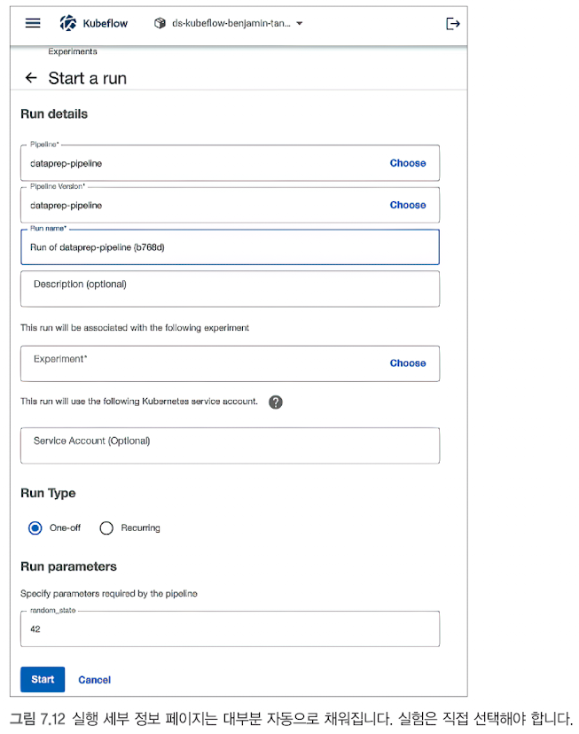
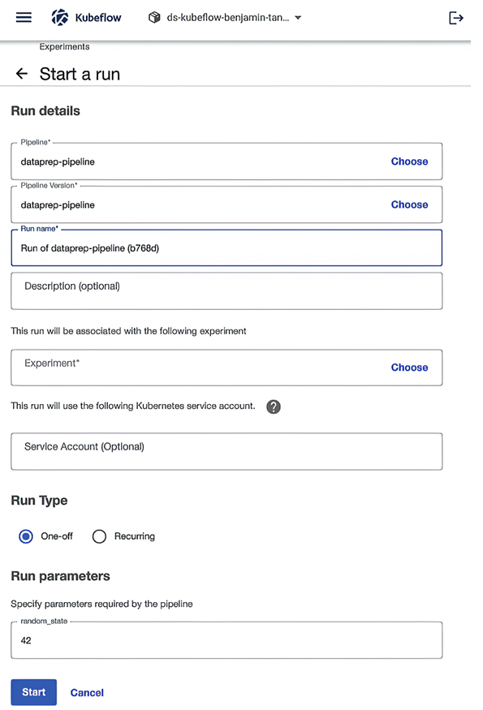
Figure 7.12 The Run details page is mostly populated automatically. You'll have to choose the experiment. (그림 7.12 실행 세부 정보 페이지는 대부분 자동으로 채워집니다. 실험은 직접 선택해야 합니다.)
이미지 해설
- 보이는 것: 제목
Start a run아래Run details항목들 —Pipeline*=dataprep-pipeline,Pipeline Version*=dataprep-pipeline(둘 다 오른쪽에Choose),Run name*=Run of dataprep-pipeline (b768d),Description (optional)(빈칸),This run will be associated with the following experiment아래Experiment*(빈칸,Choose버튼),Service Account (Optional)(빈칸), Run Type(One-off선택됨 /Recurring), Run parameters 의random_state=42, 맨 아래 파란 Start 와Cancel. - 초보자 풀이: 파이프라인·버전·실행 이름은 자동으로 채워집니다. 직접 해야 할 일은 Experiment 선택입니다(별표
*는 필수 표시).random_state = 42는 코드의def pipeline(random_state: int = 42)기본값이 화면 입력칸으로 자동 변환된 것입니다. 실행 이름 끝(b768d)는 자동으로 붙는 짧은 식별 문자열이며 내 화면에서는 다를 수 있습니다. - 여기서 확인할 것: ① Experiment 에 이름이 들어갔는지 ② Run Type 이
One-off인지 ③random_state값이 의도한 값(42)인지.
이 실행 세부 정보 페이지에서는 다른 옵션도 사용할 수 있습니다. 예를 들어, 기본값인 일회성 실행(One-off) 대신 반복 실행(Recurring)을 생성할 수 있습니다. 이는 워크로드가 예측 가능하고 반복적으로 실행해야 하는 파이프라인에 유용합니다.
파이프라인의 함수 시그니처를 다시 살펴보면 여기에 표시된 필드들이 자동으로 생성되고 채워진다는 사실을 알 수 있습니다.
@dsl.pipeline(name="Simple pipeline")
def pipeline(random_state=42):
...
⚠ 원문 정정: 이 조각의name="Simple pipeline"은 이 장에서 만든 파이프라인 이름이 아닙니다. 이 장의 파이프라인은name="data_preparation_pipeline"(Listing 7.23) 이고, 컴파일 파일명은dataprep_pipeline.yaml이며, 화면에 보이는 이름dataprep-pipeline은 업로드 시 입력·표시되는 이름으로, 코드의name과 다를 수 있습니다. 이 조각은 "함수 인자가 화면 입력칸이 된다" 는 원리를 보여 주는 요약용 예시로 읽으세요. 또random_state=42에 타입 힌트가 없는데, 이 장의 실제 코드는random_state: int = 42로 타입을 붙입니다.
random_state)는 요리 주문서의 "매운맛 단계" 칸처럼, 실행할 때마다 값을 바꿔 적을 수 있는 입력칸입니다.🔧 본인 환경에 맞게 교체: Experiment 이름 = 직접 정하는 값(원격 kind 클러스터 book-env 실습 예시값 ch07-data-passing). Run name = 자동 생성된 이름을 그대로 써도 됩니다. Service Account 는 비워 두어도 되는 선택 항목입니다(원문 노트의 이 절에는 별도 지정이 없음, 환경의 권한 정책에 따라 필요하면 관리자에게 확인).
⑤ Start — 실행하고 그래프 지켜보기
Start 를 클릭합니다. 각 컴포넌트가 초기화되어 실행되면서 그래프의 각 노드가 서서히 채워집니다. 제 환경에서는 전체 과정을 완료하는 데 약 30분이 소요됩니다. 모든 과정이 정상적으로 진행되면 그림 7.13과 같은 화면을 볼 수 있습니다.
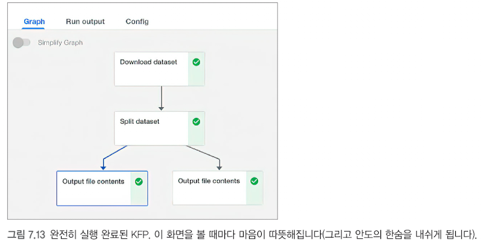
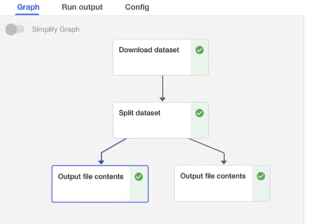
Figure 7.13 A completely executed KFP. Seeing this gives us warm fuzzy feelings every time (and a sigh of relief). (그림 7.13 완전히 실행 완료된 KFP. 이 화면을 볼 때마다 마음이 따뜻해집니다(그리고 안도의 한숨을 내쉬게 됩니다).)
이미지 해설
- 보이는 것: 탭
Graph(선택됨) ·Run output·Config,Simplify Graph토글. 상자 4개(Download dataset→Split dataset→Output file contents2개)마다 오른쪽에 초록 체크 표시가 있어 모두 성공(Succeeded)임을 뜻합니다. 아래쪽Output file contents상자 중 왼쪽 하나는 파란 테두리로 강조되어 있는데, 선택된(클릭된) 노드 표시로 보입니다. - 초보자 풀이: 노드 색이 실행 중에는 파랑 계열(진행), 끝나면 초록 체크(성공)로 바뀝니다. 실패하면 빨강으로 표시됩니다. 책 저자의 환경에서는 처음부터 끝까지 약 30분이 걸렸다고 합니다.
- 여기서 확인할 것: 모든 상자가 초록인지. 하나라도 빨간색이면 그 상자를 눌러 Logs 탭에서 원인을 봅니다.
⚠ 원문 정정: 소요 시간은 환경에 따라 크게 달라지므로 "약 30분" 은 책 저자 환경의 측정값입니다. 원격 kind 클러스터 book-env(다운로드 약 10.28GB, 압축 해제 16.9GB)에서는 다운로드 파드 약 25분 + split 약 9분 + 검증 약 1분으로 약 35분이 걸렸습니다. 두 값은 서로 다른 환경의 관측치이므로 같은 값이어야 한다고 읽지 마세요. 또 35분은 파드 기동과 업로드까지 포함한 경과 시간이라 로그에 찍히는 순수 연산 시간과 기준이 다릅니다.
sequenceDiagram participant U as 사용자 participant K as Kubeflow participant D as download 파드 participant S as split 파드 participant V as 점검 파드 U->>K: Start K->>D: 데이터 내려받기와 압축 해제 D-->>K: output_dataset 업로드 K->>S: 입력 아티팩트를 내려받아 분할 S-->>K: train val test 업로드 K->>V: validation 아티팩트를 내려받아 목록 출력 V-->>K: 로그 기록 K-->>U: 모든 노드 초록 체크
단계 선택:
⑥ 컴포넌트 실행 중 로그 확인
컴포넌트 실행 중 로그 확인: 컴포넌트에 로깅 정보를 추가하면 매우 유용합니다.
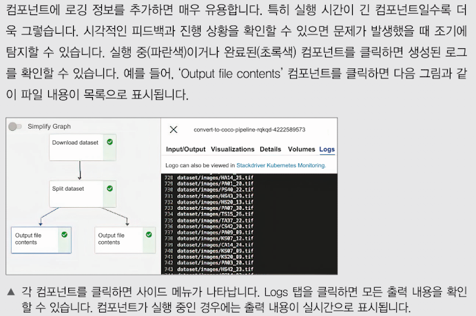
이미지 해설
- 보이는 것: 책 본문 한 쪽을 캡처한 그림입니다. 문단에는 "컴포넌트에 로깅 정보를 추가하면 매우 유용합니다. 특히 실행 시간이 긴 컴포넌트일수록 더욱 그렇습니다. 시각적인 피드백과 진행 상황을 확인할 수 있으면 문제가 발생했을 때 조기에 탐지할 수 있습니다. 실행 중(파란색)이거나 완료된(초록색) 컴포넌트를 클릭하면 생성된 로그를 확인할 수 있습니다. 예를 들어, 'Output file contents' 컴포넌트를 클릭하면 다음 그림과 같이 파일 내용이 목록으로 표시됩니다." 라고 쓰여 있습니다. 그 아래 그림은 왼쪽에 그래프(체크 표시된 4상자), 오른쪽에 컴포넌트 상세 패널입니다. 패널 상단 제목은
convert-to-coco-pipeline-rqkqd-4222589573로 읽히고, 탭은Input/Output·Visualizations·Details·Volumes·Logs(선택됨)이며, 로그 본문에dataset/images/HA14_25.tif,PA01_20.tif같은 파일 경로가 번호 붙은 줄로 이어집니다. 안내 문구 "Logs can also be viewed in Stackdriver Kubernetes Monitoring." 도 보입니다. 캡션: "각 컴포넌트를 클릭하면 사이드 메뉴가 나타납니다. Logs 탭을 클릭하면 모든 출력 내용을 확인할 수 있습니다. 컴포넌트가 실행 중인 경우에는 출력 내용이 실시간으로 표시됩니다." - 초보자 풀이: 노드를 클릭하면 오른쪽에 패널이 열리고, Logs 탭에서 컴포넌트가
print한 내용을 볼 수 있습니다.Output file contents의 로그가 곧 Listing 7.22 의 파일 목록 출력입니다. - 여기서 확인할 것: 이 이미지는 책 저자의 다른 프로젝트 화면(패널 제목이
convert-to-coco-pipeline…)이고 파일명도 이 장 데이터와 다릅니다(예:HA14_25.tif). 내 화면의 패널 제목은 내 Run 이름이며, 이 장의 파일명은CA01_01.tif같은 형식입니다. 구조(탭·목록 형태)를 보는 용도로만 참고하세요. book-env 에서도Output file contents로그에서CA01_09등의 파일명과pair check: images=841 labels=841 mismatch=0가 확인되었습니다.
⑦ 프로덕션 환경의 로그 관리
프로덕션 환경의 로그 관리
이미지 해설
- 보이는 것: 책 본문 두 문단의 캡처입니다. 첫 문단: "디버깅 시에는 유용하지만, 상세 로깅이나 진행 표시줄은 대량의 로그를 기록하여 디스크 공간이 매우 빠르게 소진됩니다. 특히 반복 실행 시에는 더욱 그렇습니다. MinIO 데이터 스토어가 K8s 노드에 위치한 경우 해당 노드에
diskPressure이벤트가 발생하며, 이로 인해 K8s가 해당 노드에서 파드를 제거하고 새로운 파드 스케줄링을 중단하게 됩니다." 둘째 문단: "실행 로그가 저장된 MinIO 버킷을 주기적으로 확인하고 필요에 따라 정리하십시오. 프로덕션 환경에서는 이러한 문제를 방지하기 위해 자동화된 로그 로테이션 및 아카이빙 전략을 갖추는 것을 강력히 권장합니다." - 초보자 풀이: 로그와 산출물은 결국 디스크 용량을 차지합니다. 노드 디스크가 부족해지면 쿠버네티스가
diskPressure상태를 선언하고 파드를 쫓아냅니다. 이 장의 실습은 데이터 자체가 16.9GB + 분할본 16.9GB 라서 더욱 주의해야 합니다. - 여기서 확인할 것: 반복 실행 후에는 저장소 버킷(예:
mlpipeline)의v2/artifacts/…아래 쌓인 이전 Run 산출물을 정리할 수 있는지 확인합니다.
디스크 용량 감각 잡기 (book-env 값의 산술, 보장값 아님)
| 항목 | 값(book-env) | 의미 |
|---|---|---|
| 다운로드 gz | 약 10.28GB | 다운로드 파드 임시 파일 |
| 압축 해제 | 16.9GB (파일 11,218개) | 다운로드 파드 안에서 풀린 크기 |
| 다운로드 파드 합 | 10.3 + 16.9 ≈ 27.2GB | gz를 지우기 전 최대치로 본 단순 합 |
| split 파드 | 입력 16.9 + 분할본 16.9 ≈ 33.8GB | 내려받기 + 복사 쓰기 |
| 저장소 누적 | 원본 + 분할 ≈ 33.8GB | 같은 실행 한 번의 산출물 |
원격 kind 클러스터 book-env 의 기록에서는 저장소가 SeaweedFS 였고 기동 인자의 볼륨 슬롯(기본 100개)이 차서 업로드가 status code: 500 으로 실패한 뒤 -volume.max 를 올려 해결했습니다. 컴퓨터 디스크 여유와는 별개로 저장소가 받아 줄 수 있는 크기(볼륨 슬롯, PVC 요청량, 실제 저장 공간)도 따로 확인해야 합니다. 슬롯 수에 64MB 를 곱한 값이 저장 용량의 정확한 상한이라고는 단정할 수 없습니다. 실습 쪽 상세는 7.3.1 [실습] 절을 참고하세요. "디스크 100GB 이상, RAM 8GB 이상" 같은 값은 보장 요구량이 아니라 여유를 둔 권장 추정치입니다.
🧒 초보자 설명 — 실행·로그 단계 정리
- 오해 ①: "초록 체크면 데이터가 올바르다." 체크는 컴포넌트가 오류 없이 끝났다는 뜻입니다. 이미지·라벨 개수와 이름 일치는
Output file contents로그로 따로 확인합니다. - 오해 ②: "실행이 오래 걸리면 멈춘 것이다." 이 실습은 대용량 다운로드가 있어 수십 분이 걸리는 것이 정상일 수 있습니다. 노드가 파랑으로 움직이고 로그가 올라오는지 보세요.
- 오해 ③: "로그는 많을수록 좋다." 반복 실행 때 디스크를 빠르게 소모합니다.
- 숫자로 보기: 분할 결과(book-env 관측) — train 4,206 · val 841 · test 562, 불일치 0. 실행은 약 25 + 9 + 1 = 약 35분.
⚠ 자주 나는 오류 (이 절의 UI 단계 기준)
| 증상 | 가능한 원인 | 확인 |
|---|---|---|
| Upload 후 그래프가 비어 있거나 업로드 실패 | 파이썬 파일을 올림, 또는 컴파일 오류로 YAML 이 없거나 손상 | 올린 파일이 dataprep_pipeline.yaml 인지, 컴파일 중 오류가 없었는지 |
컴파일 단계에서 KeyError |
split_op.outputs["x_val_output"] 같은 없는 출력 이름 |
validation_dataset 등 실제 이름으로 교체 (Listing 7.23 정정) |
| Create run 에서 Start 가 눌리지 않음 | Experiment* 필수 칸이 비어 있음 |
Choose 로 실험 선택 또는 새로 만들기 |
| 다운로드 노드가 실패(빨강) | 디스크 부족, 저장소 업로드 500 오류, 네트워크 | 노드 클릭 → Logs, 7.3.1 [실습] 절의 SeaweedFS 안내 |
[실습] 7.3.1 객체 탐지 데이터 준비 — 개요와 통과 기준
[실습] 7.3.1 객체 탐지 데이터 준비 (소요 약 35분)
⚠ 이 실습의 전제 (먼저 읽으세요)
① 이 실습은 x86_64 Linux 환경을 기준으로 쓰였습니다.
② Mac M2(arm64)는 완주를 보장할 수 없습니다. KFP 2.17.3 의 launcher(kfp-launcher:2.17.3)와 대부분의 설치 이미지는 arm64 를 제공하지만, 2.17.3 설치에서 linux/amd64 단일 이미지인 것이 두 개 확인됐습니다: 메타데이터 서버gcr.io/tfx-oss-public/ml_metadata_store_server:1.14.0(파드metadata-grpc-deployment)와ghcr.io/kubeflow/kfp-metadata-writer:2.17.3(파드metadata-writer). arm64 노드에서는 이 두 파드가exec format error로 멈출 수 있습니다(레지스트리 조회로 아키텍처만 확인했고, 실제 파드 동작은 확인 못함). 대체 arm64 이미지는 찾지 못했습니다. 막히면 x86_64 Linux 또는 x86_64 노드의 클러스터를 쓰세요. 이 문서의 실행 결과 수치는 모두 원격 kind 클러스터 book-env(백엔드 2.4.1, x86_64)에서 얻은 것입니다.
③ 7.3.1 은 필요한 코드가 모두 이 문서에 실려 있어 끝까지 완주할 수 있습니다.
④ 7.3.2 는 방식 A 만으로 완주할 수 있습니다. 방식 B(이미지를 직접 빌드해 올리는 방식)는 선택 심화이며, 아래 선택 심화 절에서 따로 다룹니다.
이 실습은 객체 탐지 캡스톤(신분증 사진 속 영역 찾기)에 쓸 데이터를 내려받고, 학습·검증·테스트로 나누는 첫 번째 Kubeflow 파이프라인을 직접 돌려 보는 단계입니다. 이론에서 본 "컴포넌트 → 파이프라인 → 컴파일 → 실행"을 실제 17GB급 데이터로 끝까지 확인합니다.
개요
| 항목 | 내용 |
|---|---|
| 코드 위치 | 작업 폴더 scratch/ch07/od/ 의 원본 data_prep_pipeline_orig.py(practical-mlops/object-detection-project), 수정본 data_prep_pipeline.py, 검증 verify_minio.py. 서버에서는 ~/ml-study/ch07/od/ 로 옮겨 실행 |
| 환경 | 원격 kind 클러스터 book-env, KFP 백엔드 2.4.1 / SDK 2.9.0, 포워딩 localhost:8080, 실험 ch07-data-passing, 캐시 ON(submit.py 의 --cache 옵션을 추가해 사용) |
| 범위 | 책 7.3.1 — 다운로드 → 분할 → 검증 출력. 책 3단계의 boto3 버킷 업로드는 Output[Dataset] 이 대신해 주므로 하지 않음 |
| 소요 시간 | 약 35분 = 다운로드 파드 약 25분 + split 약 9분 + 검증 약 1분 (원격 kind 클러스터 book-env 에서 기록한 과거 실행 결과) |
| 입력 데이터 | MIDV-500 계열 객체 탐지 데이터 tar.gz(총 10,279,296,832바이트 ≈ 10.28GB) |
| 이어받는 것 | 7.2 에서 익힌 Input[Dataset]/Output[Dataset] 데이터 전달 규칙. 이 실습의 분할 산출물(train/validation/test)은 8장 훈련 실습이 그대로 이어받습니다. |
시간 기준 주의: 35분은 파드 기동, 파일 다운로드, 압축 해제, launcher 의 저장소 업로드까지 합친 총 경과 시간입니다. 로그에 찍히는 순수 연산 시간과는 기준이 다릅니다. 책 본문의 "약 30분"과도 구분하세요.
이 실습의 큰 그림
flowchart LR BOX["Box 공유 링크<br/>tar.gz 10.28GB"] --> DL["download_dataset<br/>다운로드 + 압축 해제<br/>약 25분"] DL -->|"output_dataset<br/>16.9GB 11218개 파일"| SP["split_dataset<br/>75 / 15 / 10 분할<br/>약 9분"] SP -->|"train_dataset"| S1["저장소 mlpipeline"] SP -->|"test_dataset"| S1 SP -->|"validation_dataset"| OF["output_file_contents<br/>목록 + 짝 검사<br/>약 1분"] SP -->|"validation_dataset"| S1
그림 읽는 법: 네모는 파드(작업 하나), 화살표는 "결과 폴더를 다음 작업에 넘김"입니다. download_dataset 이 끝나야 split_dataset 이, 그것이 끝나야 output_file_contents 가 시작됩니다. 세 파드 모두 저장소(KFP 의 아티팩트 버킷 mlpipeline)를 통해 데이터를 주고받으며, 각 단계마다 내려받기·올리기 시간이 더해집니다.
통과 기준(✅)
| # | 확인 항목 | 통과 기준 | book-env 에서 기록한 과거 실행 결과 |
|---|---|---|---|
| 1 | run 상태 | UI 에서 초록 체크, submit.py 가 FINAL=SUCCEEDED 출력 |
run od-dataprep-1107-retry(fcc9e744-…) SUCCEEDED |
| 2 | 원본 크기 | 로그의 download size= 와 downloaded= 가 같은 값 |
둘 다 10279296832 바이트 |
| 3 | 압축 해제 | 최상위 폴더 DATA/, 이미지 .tif 와 라벨 .txt 가 같은 개수 |
이미지 5,609 + 라벨 5,609 = 파일 11,218개, 16.9GB |
| 4 | 분할 건수 | 75% / 15% / 10% 에 가까운 이미지·라벨 쌍 | train 4,206 / validation 841 / test 562 |
| 5 | 짝 불일치 | 분할마다 mismatch=0 |
세 분할 모두 0 |
| 6 | 중복 | 분할 사이에 같은 이름 없음 | overlap between splits: none |
| 7 | 워크플로 상태 | kubectl get workflow 가 Succeeded |
data-preparation-pipeline-4q98v Succeeded |
위 숫자는 모두 원격 kind 클러스터 book-env 에서 기록한 과거 실행 결과입니다. 같은 데이터·같은 코드(
random_state=42)라면 분할 건수는 같게 나오는 것이 정상이지만, 다운로드·업로드 시간은 네트워크와 디스크에 따라 크게 달라집니다.
실습 단계 한눈에 보기
| 순서 | 단계 | 실행 위치 | 자료 속 위치 |
|---|---|---|---|
| 0 | 사전 준비 (Docker·kind·KFP·저장소 접속, SDK 설치) | [PC 터미널] |
사전 준비 절 |
| 1 | 가변값 정하기 (export) |
[PC 터미널] |
가변값 표 |
| 2 | 컴포넌트·파이프라인 코드 준비 | [PC 터미널] |
실행 명령 ①②③ |
| 3 | 컴파일 → 제출 → 모니터링 | [PC 터미널] [브라우저] |
실행 명령 ④ |
| 4 | 분할 결과 검증 (verify_minio.py) |
[PC 터미널] |
실행 명령 ④ |
| 5 | 결과 화면 확인 | [브라우저] |
결과 화면 확인 절 |
⚠ 먼저 판단하세요: 이 실습은 디스크 약 수십 GB, 메모리 수 GB, 네트워크로 10GB 이상을 쓰고, 한 번 돌리는 데 약 35분이 걸립니다. 대략적인 합산: 다운로드 파드에서 압축 파일 10.3GB + 풀린 파일 16.9GB ≈ 27.2GB, split 파드에서 입력 16.9GB + 분할본 16.9GB ≈ 33.8GB, 저장소에는 원본 + 분할본 ≈ 33.8GB가 남습니다(원격 kind 클러스터 book-env 에서 기록한 크기를 더한 계산이며 필요량을 보장하는 값은 아닙니다). 여유 공간을 먼저 확인하고 시작하세요.
💾⏱ 디스크·저장소·시간 한눈에 (원격 kind 클러스터 book-env 에서 기록한 값 기준)
① 시간: 총 약 35분(다운로드 약 25분 + 분할 약 9분 + 확인 약 1분). 클러스터·KFP 를 새로 설치하고 이미지를 처음 받는 시간은 따로 더해집니다.
② 저장소 용량: 저장소(S3 호환 서비스)에 원본 16.9GB + 분할본 16.9GB ≈ 33.8GB 가 올라갑니다. 저장소 PVC 기본값이 20Gi 인 설치에서는 이 합계보다 작아 부족할 수 있으므로 실행 전에 아래 명령으로 크기를 확인하세요. book-env 에서는 저장소에 총 40.4GB 가 기록된 채 실행이 성공했지만, 그 클러스터의 PVC 한도가 실제로 어떻게 적용됐는지는 확인 못함입니다.
③ 업로드 500: 저장소가 SeaweedFS 이고 기동 인자가-volume.max=100이면 볼륨 슬롯 100개가 차는 순간 업로드가 500 으로 실패합니다. 실행 전에 「막힌 점」 절을 읽고 필요하면 먼저 늘리세요.
[PC 터미널] 읽기 전용 확인입니다. 사전 준비(터미널 약속)를 마친 뒤 실행하세요.
df -h . # PC 디스크 여유
docker system df # Docker 가 쓰는 공간
kubectl --context "$KUBE_CONTEXT" -n "$KFP_NAMESPACE" get pvc # 저장소 PVC 크기 (CAPACITY 열)
kubectl --context "$KUBE_CONTEXT" get storageclass # 저장소 클래스
[실습] 사전 준비 — Docker · kind · KFP · 저장소(MinIO) 접속
사전 준비 — Docker · kind · KFP · 저장소 접속
보충 설명: 이 절은 원문 노트에 없는 내용입니다. 노트는 이미 구축된 원격 kind 클러스터
book-env(KFP 백엔드 2.4.1)에서 시작했기 때문에 Docker·kind 설치와 접속 방법이 적혀 있지 않습니다. 처음부터 따라 하려는 독자를 위해 공식 문서 기준으로 덧붙였습니다. Mac M2·Linux 양쪽에서 이 절을 끝까지 실행한 결과는 확인 못함이니 각 단계의 ✅ 기대 결과로 스스로 확인하며 진행하세요.
flowchart TB H["내 PC<br/>Docker 실행 중"] --> K["kind 클러스터<br/>노드 = Docker 컨테이너"] K --> F["KFP 설치 또는 기존 KFP 접속<br/>namespace kubeflow"] F --> PF1["port-forward 8080<br/>KFP UI 와 API"] F --> PF2["port-forward 9000<br/>저장소 S3 API"] PF1 --> SUB["submit.py 로 제출"] PF2 --> VER["verify_minio.py 로 확인"]
그림 읽는 법: 클러스터 안의 서비스는 바깥에서 바로 열리지 않습니다. port-forward 가 "내 PC 의 포트 ↔ 클러스터 서비스"를 임시로 이어 주는 터널입니다. 이 실습에서는 두 개(KFP 용 8080, 저장소용 9000)가 필요하고, 각각 터미널 하나를 계속 켜 둬야 합니다.
⚠ 이미 구축된 클러스터가 있다면 설치 명령은 건너뛰고 접속(사전 준비 2~3)만 합니다. 원격 kind 클러스터 book-env 처럼 KFP·저장소가 이미 있는 클러스터를 쓰는 경우가 여기에 해당합니다. 새 클러스터라면 사전 준비 전체를 따라 하세요.
사전 준비 1 — 아키텍처 확인, Docker 와 kind
🎯 목적: 내 PC 와 노드의 CPU 체계를 확인하고 로컬 쿠버네티스(kind)를 띄웁니다. 📋 사전조건: Docker Desktop(Mac) 또는 Docker Engine(Linux) 설치·실행(없으면 바로 아래 설치 명령). 이 실습은 약 27~34GB 규모의 임시·저장 공간과 수 GB 메모리를 쓰므로 Docker 에 할당한 디스크를 넉넉히 확인하세요(필요량 보장값은 확인 못함).
⌨ 명령어
[PC 터미널] Docker 가 없다면 먼저 설치합니다(공식 안내: https://docs.docker.com/get-started/get-docker/). 아래 설치 명령은 실행해 확인하지 못했고, 내려받는 주소가 응답하는지만 확인했습니다.
# Mac — Homebrew 가 이미 있으면(brew --version 이 출력되면) 처음 두 줄은 건너뜁니다
/bin/bash -c "$(curl -fsSL https://raw.githubusercontent.com/Homebrew/install/HEAD/install.sh)"
# 방금 설치했다면 이 터미널과 새 터미널이 brew 를 찾도록 PATH 를 잡습니다 (Apple Silicon 기본 위치 /opt/homebrew)
eval "$(/opt/homebrew/bin/brew shellenv)" && echo 'eval "$(/opt/homebrew/bin/brew shellenv)"' >> "$HOME/.zprofile"
brew --version
brew install --cask docker-desktop
open -a Docker # 처음 한 번 약관에 동의하고, 고래 아이콘이 '실행 중'이 될 때까지 기다립니다
# Linux
curl -fsSL https://get.docker.com | sh
sudo usermod -aG docker "$USER" # 로그아웃 후 다시 로그인해야 sudo 없이 docker 를 쓸 수 있습니다
docker run --rm hello-world # 'Hello from Docker!' 가 나오면 성공
[PC 터미널] 먼저 내 환경을 확인합니다.
uname -m # arm64(Mac M2) 또는 x86_64(Linux)
docker info | grep -i "total memory"
docker version --format '{{.Server.Os}}/{{.Server.Arch}}'
df -h . # 작업 폴더가 있는 디스크의 여유
Mac M2 (Apple Silicon, arm64)
# [PC 터미널] Homebrew 로 설치 (Homebrew 가 없으면 위 Docker 설치 블록의 첫 줄을 먼저 실행)
brew install kind kubectl
kind version
kubectl version --client
- Docker Desktop 안의 Linux VM 이 kind 노드를 실행합니다. 호스트(darwin/arm64)와 노드(linux/arm64)는 다른 OS 입니다.
- 이 실습의 컴포넌트가 쓰는
python:3.11,python:3.8은 arm64 도 제공하는 이미지라 노드 아키텍처와 맞습니다. - KFP 가 파드마다 붙이는 launcher 이미지는 2.17.3 태그에 amd64·arm64 가 모두 있습니다(원문 노트의 2.4.1 태그는 amd64 단일). 그러나 2.17.3 설치에서 linux/amd64 단일 이미지인 것이 두 개 확인됐습니다: 메타데이터 서버
gcr.io/tfx-oss-public/ml_metadata_store_server:1.14.0(파드metadata-grpc-deployment)와ghcr.io/kubeflow/kfp-metadata-writer:2.17.3(파드metadata-writer). arm64 노드에서는 이 두 파드가exec format error로 멈출 수 있습니다(레지스트리 조회로 아키텍처만 확인했고, 실제 파드 동작은 확인 못함). 대체 arm64 이미지는 찾지 못했습니다. - M2 에서는 아래 둘 중 하나를 고르세요. ① x86_64 Linux 또는 원격 x86_64 클러스터를 쓴다(원격 kind 클러스터 book-env 의 방식, 권장). ② 이 문서의 설치 명령(2.17.3)을 M2 의 kind 에 그대로 시도한다 — 위 두 파드가 뜨는지, 그리고 백엔드 2.17.3 과 SDK 2.9.0 조합이 끝까지 도는지는 확인 못함이며 10GB 다운로드 파드는 느릴 수 있습니다.
- 이 실습의 컴포넌트에는
target_image가 없으므로 이미지 빌드는 필요 없습니다. 그래서 빌드 플랫폼(--platform) 걱정은 7.3.2 에서 다룹니다.
Linux (x86_64)
# [PC 터미널] kind 바이너리. v0.33.0 은 아래 주소가 응답(200)하는 것을 확인한 버전입니다.
export KIND_VERSION="v0.33.0"
curl -sIL "https://kind.sigs.k8s.io/dl/${KIND_VERSION}/kind-linux-amd64" | grep -i '^HTTP' | tail -1 # 마지막 줄이 200 이면 내려받을 수 있습니다
[ "$(uname -m)" = "x86_64" ] && curl -Lo ./kind "https://kind.sigs.k8s.io/dl/${KIND_VERSION}/kind-linux-amd64"
chmod +x ./kind && sudo mv ./kind /usr/local/bin/kind
kind version
# kubectl — 공식 배포 주소에서 안정 버전을 받습니다
KUBECTL_VERSION="$(curl -L -s https://dl.k8s.io/release/stable.txt)"
curl -LO "https://dl.k8s.io/release/${KUBECTL_VERSION}/bin/linux/amd64/kubectl"
chmod +x kubectl && sudo mv kubectl /usr/local/bin/kubectl
kubectl version --client
- 노드는 보통
linux/amd64이므로 설치되는 모든 이미지와python:3.11이 그대로 맞습니다. - 위
curl줄은uname -m이x86_64일 때만 내려받습니다. arm64 Linux 라면kind-linux-amd64대신kind-linux-arm64로 바꿔야 하고, 이 경우 amd64 단일 이미지(메타데이터 서버·메타데이터 writer) 문제는 Mac M2 와 같습니다. - Docker 를 일반 사용자로 쓰려면
docker그룹 권한이 필요합니다.
🔧 본인 환경에 맞게 교체: kind 버전은 Linux 블록에서KIND_VERSION="v0.33.0"으로 정했습니다(원문 노트에는 없는 값이며, 내려받는 주소가 응답하는 것만 확인했습니다). 확인:kind version. 클러스터 이름<CLUSTER_NAME>= 원격 kind 클러스터에서는book-env, 확인:kind get clusters.
[PC 터미널] 클러스터를 만듭니다. (기존 클러스터를 쓰면 건너뛰고 kubectl config current-context 만 확인)
export CLUSTER_NAME="ch07" # 새 클러스터 이름(자유). 이미 있는 클러스터(예: book-env)를 쓰면 이 블록 전체를 건너뜁니다
kind create cluster --name "$CLUSTER_NAME"
kubectl config current-context # kind-$CLUSTER_NAME (예: kind-ch07) 이어야 함
kubectl get nodes -L kubernetes.io/arch
kubectl get storageclass
✅ 기대 결과: 노드 1개 Ready, ARCH 열이 Mac M2 면 arm64, Linux 면 amd64. 기본 StorageClass 가 하나 보입니다(kind 는 보통 standard (default)).
🔍 확인 방법: kubectl config current-context 가 방금 만든(또는 쓰려는) 클러스터인지 먼저 봅니다. 다른 클러스터에 명령이 들어가는 사고를 막는 가장 쉬운 확인입니다.
⚠ 자주 나는 오류
Cannot connect to the Docker daemon→ Docker 를 켜세요.kubectl이 엉뚱한 클러스터를 가리킴 →kubectl config use-context kind-<CLUSTER_NAME>.- 파드가
Pending/Evicted→ Docker 에 할당한 디스크·메모리를 늘리고, 노드 allocatable·PVC 용량을 함께 확인합니다.
터미널 약속 — 새 터미널을 열 때마다 source 한 줄
이 실습은 터미널을 여러 개 씁니다. 그런데 한 터미널에서 export 한 값은 다른 터미널에서 보이지 않습니다. 그래서 값을 파일 하나(env.sh)에 적어 두고, 새 터미널을 열 때마다 source 한 줄만 실행합니다. 파일은 한 번만 만듭니다. 아래 값은 이 절의 새 kind 클러스터(ch07) 기준이며, 이미 있는 클러스터를 쓰면 KUBE_CONTEXT 한 줄만 kubectl config get-contexts 에 나온 이름으로 고치세요.
[PC 터미널] 한 번만 실행해 env.sh 를 만듭니다.
mkdir -p "$HOME/ml-study/ch07/od"
cat > "$HOME/ml-study/env.sh" <<'ENVSH'
# env.sh — 새 터미널을 열 때마다: source "$HOME/ml-study/env.sh"
export KUBE_CONTEXT="kind-ch07" # kind 로 만든 클러스터 이름이 ch07 이면 kind-ch07
export KFP_NAMESPACE="kubeflow"
export KFP_HOST="http://localhost:8080" # KFP UI 포트 포워딩 주소
export S3_ENDPOINT="http://127.0.0.1:9000" # 저장소 포트 포워딩 주소
export WORKDIR="$HOME/ml-study/ch07/od"
export PY="$HOME/ml-study/ch07/.venv-ch07/bin/python" # 가상환경 파이썬의 절대경로
export PYTHON="$PY"
mkdir -p "$WORKDIR" && cd "$WORKDIR"
ENVSH
source "$HOME/ml-study/env.sh"
[새 터미널 어디서든] 이후에는 이 한 줄만 실행합니다.
source "$HOME/ml-study/env.sh"
source는 작업 폴더($WORKDIR)로 이동까지 해 줍니다. 값은echo "$WORKDIR"로 확인합니다.- 7.3.2 에서는
WORKDIR이mr로 바뀝니다. 그때 「저장소 접속 정보를 Pod 로 전달하기」 절이 이 파일을 7.3.2 용으로 다시 만듭니다. - 이 파일에는 비밀값(접근 키)을 적지 않습니다.
사전 준비 2 — KFP 접속과 UI 포트 열기
🎯 목적: KFP(Kubeflow Pipelines) UI·API 에 내 PC 에서 접속합니다.
📋 사전조건: 클러스터에 KFP 가 설치되어 kubeflow 네임스페이스의 파드가 Running. 새로 설치해야 한다면 공식 manifests 의 kustomize 방식을 씁니다(아래).
⌨ 명령어
[PC 터미널] (새 클러스터에만) KFP 단독 설치 — 공식 manifests 기준이며, 원문 노트에는 없는 보충 설명입니다.
export CLUSTER_NAME="${CLUSTER_NAME:-ch07}" # 클러스터를 만든 터미널이 아니면 위에서 쓴 이름을 다시 적습니다
export KFP_BACKEND_VERSION="2.17.3" # 이 문서가 설치 대상으로 삼은 버전
# 1) 지금 kubectl 이 가리키는 곳이 방금 만든 kind 클러스터인지 먼저 맞춥니다 (회사·클라우드 클러스터에 설치하는 사고 방지)
kubectl config use-context "kind-$CLUSTER_NAME"
kubectl config current-context # kind- 로 시작해야 합니다
# 2) 저장소 디스크(PVC)를 60Gi 로 키운 설치 묶음을 만듭니다 (아래 설명 참고)
mkdir -p "$HOME/ml-study/kfp-install" && cd "$HOME/ml-study/kfp-install"
cat > kustomization.yaml <<EOF
apiVersion: kustomize.config.k8s.io/v1beta1
kind: Kustomization
resources:
- github.com/kubeflow/pipelines/manifests/kustomize/env/platform-agnostic?ref=${KFP_BACKEND_VERSION}
patches:
- target:
kind: PersistentVolumeClaim
name: seaweedfs-pvc
patch: |-
- op: replace
path: /spec/resources/requests/storage
value: 60Gi
EOF
# 3) KFP 설치 (git 이 설치돼 있어야 github.com/... 주소를 내려받을 수 있습니다)
kubectl apply -k "github.com/kubeflow/pipelines/manifests/kustomize/cluster-scoped-resources?ref=${KFP_BACKEND_VERSION}"
kubectl wait --for condition=established --timeout=60s crd/applications.app.k8s.io
kubectl apply -k .
kubectl -n kubeflow get pods
kubectl -n kubeflow get pvc seaweedfs-pvc
- 왜 PVC 를 60Gi 로 키우나요? 기본 설치의 저장소 디스크(
seaweedfs-pvc)는 20Gi 입니다. 이 실습은 원본 16.9GB 와 분할본 16.9GB, 합쳐 약 33.8GB 를 저장소에 올리므로 기본값으로는 업로드 중간에 공간이 모자랄 수 있습니다(실제 에러 메시지는 확인 못함). 위kustomization.yaml은 공식 설치 묶음을 그대로 쓰되 이 한 값만 바꿉니다. 렌더링 결과에서seaweedfs-pvc만 60Gi 가 되고 나머지는 달라지지 않는 것을 확인했지만, 실제 클러스터에 적용해 본 것은 아닙니다. 이미 설치한 클러스터라면 PVC 는 줄이거나 바로 키울 수 없는 경우가 많으니 새 클러스터에서 처음부터 이 방식으로 설치하세요. kind 의 기본 StorageClass 가 볼륨 확장을 지원하는지는 확인 못함입니다. - 모든 파드가
Running이 될 때까지 몇 분 걸립니다(이미지를 처음 받기 때문). 백엔드 2.17.3 과 SDK 2.9.0 조합의 전체 동작은 확인 못함입니다.
[PC 터미널] 저장소 서비스 이름을 맞춥니다. 2.17.3 설치는 객체 저장소를 seaweedfs 라는 서비스로 만들지만, 이 문서의 코드와 명령은 원문 노트의 이름 minio-service(포트 9000)를 씁니다. 아래 한 번으로 minio-service 가 같은 저장소를 가리키게 합니다.
kubectl -n kubeflow apply -f - <<'EOF'
apiVersion: v1
kind: Service
metadata:
name: minio-service
spec:
selector:
app: seaweedfs
ports:
- name: http-s3-compat
port: 9000
protocol: TCP
targetPort: 8333
EOF
kubectl -n kubeflow get svc minio-service seaweedfs
✅ 기대 결과: 두 서비스가 모두 보이고 minio-service 의 PORT 가 9000/TCP 입니다.
[PC 터미널 A] UI 포트를 엽니다. 이 터미널은 계속 켜 둡니다.
source "$HOME/ml-study/env.sh" # 위 '터미널 약속'에서 만든 파일
kubectl --context "$KUBE_CONTEXT" -n "$KFP_NAMESPACE" port-forward svc/ml-pipeline-ui 8080:80
[PC 터미널 B] 접속을 시험합니다.
source "$HOME/ml-study/env.sh"
curl -s -o /dev/null -w '%{http_code}\n' "$KFP_HOST" # KFP_HOST 의 포트는 위 port-forward 의 왼쪽 포트와 일치해야 함
✅ 기대 결과: 브라우저에서 http://localhost:8080 에 KFP 화면이 뜨고 curl 은 200 을 출력합니다.
🔍 확인 방법: kubectl --context "$KUBE_CONTEXT" -n "$KFP_NAMESPACE" get deploy ml-pipeline -o jsonpath='{.spec.template.spec.containers[*].image}' 로 백엔드 이미지 태그를 확인합니다(이 문서의 설치 명령으로 만든 클러스터는 2.17.3, 원문 노트의 원격 kind 클러스터 book-env 는 2.4.1).
⚠ 자주 나는 오류
address already in use→ 8080 을 다른 프로그램이 쓰는 중입니다. 왼쪽 숫자를 바꾸고(예:8081:80)KFP_HOST도 함께 바꿉니다.- port-forward 터미널을 닫으면 접속이 끊깁니다. 제출·모니터링 내내 켜 둡니다.
- 인증이 켜진 설치에서
401/403→ 토큰이 필요한 배포입니다. 토큰은<YOUR_TOKEN>자리에 본인 것을 환경 변수로 넣고 화면·로그에 출력하지 않습니다.
사전 준비 3 — 저장소(MinIO 호환) 접속과 SDK 설치
🎯 목적: ① 분할 결과를 직접 확인할 때 쓸 저장소 포트(9000)를 열고, ② 컴파일·제출용 파이썬 환경에 SDK 를 고정 버전으로 설치합니다.
📋 사전조건: 위 KFP 접속 완료. 파이썬 3.10~3.12 로 만든 가상환경(kfp==2.9.0 은 파이썬 >=3.8.0,<3.13.0 만 지원합니다. python3 --version 이 3.10~3.12 이면 그대로 쓰고, 3.13/3.14 가 기본인 PC 는 아래 Mac 안내처럼 3.12 를 따로 설치합니다. 원문 노트는 3.11 을 썼지만 3.10~3.12 어느 것이든 됩니다).
이 실습에서는 터미널을 여러 개 씁니다. 역할을 미리 정해 두면 헷갈리지 않습니다.
| 터미널 | 하는 일 | 상태 |
|---|---|---|
| 터미널 A | KFP UI·API 포트 열기(8080) | 계속 켜 둠 |
| 터미널 C | 저장소 포트 열기(9000) | 계속 켜 둠 |
작업 터미널(앞의 [PC 터미널 B] 와 [PC 터미널]) |
접속 시험, 컴파일, 제출(submit.py), 확인(verify_minio.py) |
필요할 때 사용 |
터미널마다
export한 값은 따로입니다. 터미널 A 에서export한 변수는 터미널 C 나 작업 터미널에서 보이지 않습니다. 새 터미널을 열 때마다 앞의 「터미널 약속」에서 만든source "$HOME/ml-study/env.sh"한 줄을 실행하세요.
⌨ 명령어
[PC 터미널] 먼저 작업 폴더를 만듭니다. 이 실습의 파일은 아래 구조로 둡니다. 경로는 ~ 대신 $HOME 을 씁니다(따옴표 안의 ~ 는 홈 폴더로 바뀌지 않습니다).
mkdir -p "$HOME/ml-study/ch07/od"
$HOME/ml-study/ch07/
├── submit.py # 실행 명령 ③ (od/ 의 바로 위 폴더)
├── .venv-ch07/ # 아래에서 만드는 가상환경
└── od/ # 작업 폴더 (WORKDIR)
├── data_prep_pipeline.py # 실행 명령 ①
├── verify_minio.py # 실행 명령 ④
└── dataprep_pipeline.yaml # 컴파일하면 생김
[PC 터미널 C] 새 터미널이므로 먼저 source 로 같은 값을 불러온 뒤, 저장소 포트를 엽니다. (노트의 안내: port-forward 가 없으면 아래처럼 만든다) 계속 켜 둡니다.
source "$HOME/ml-study/env.sh" # 터미널 A 와 같은 값이 들어옵니다
kubectl --context "$KUBE_CONTEXT" -n "$KFP_NAMESPACE" port-forward svc/minio-service 9000:9000
[PC 터미널] SDK 를 설치합니다. zsh(Mac 기본 셸)에서 대괄호 extras 는 따옴표로 감쌉니다.
export TASK_VENV="$HOME/ml-study/ch07/.venv-ch07" # 앞의 env.sh 의 PY 가 가리키는 가상환경
python3 --version # 3.10 ~ 3.12 이어야 합니다
python3 -m venv "$TASK_VENV"
"$TASK_VENV/bin/python" -m pip install 'kfp==2.9.0' 'kfp-kubernetes==1.5.0'
"$TASK_VENV/bin/python" -m pip install boto3 # verify_minio.py 가 사용
"$TASK_VENV/bin/python" -c "import kfp; print(kfp.__version__)"
- 대괄호 extras(
kfp[kubernetes]등)는 zsh 에서no matches found오류를 냅니다. 이 실습은 extras 대신'kfp==2.9.0' 'kfp-kubernetes==1.5.0'처럼 패키지를 따옴표로 감싸 버전을 둘 다 고정해 설치합니다(kfp-kubernetes만 최신으로 받으면 더 새kfp가 함께 설치될 수 있습니다). 가상환경을 쓰므로python3만 3.10~3.12 이면 됩니다.
[PC 터미널] 이 실습의 확인 구간과 7.3.2 는 aws CLI 도 씁니다. 설치되어 있는지 먼저 봅니다.
aws --version # 버전이 출력되면 준비 완료
설치되어 있지 않다면 Mac 은 brew install awscli, Linux 는 AWS 공식 설치 안내(배포판마다 방법이 다름: https://docs.aws.amazon.com/cli/latest/userguide/getting-started-install.html)를 따릅니다.
Mac M2 / Linux 차이
Mac(zsh): 위 따옴표 규칙이 가장 중요합니다. python3 --version 이 3.13 이상이면 3.12 를 따로 설치하고 가상환경만 3.12 로 만듭니다.
brew install python@3.12
python3.12 -m venv "$TASK_VENV" # 위 블록의 python3 -m venv 줄 대신 이 줄을 씁니다
Linux(bash): Ubuntu 22.04 의 기본 python3 는 3.10 이라 그대로 맞습니다(python3.11 은 기본으로 없어 command not found 가 납니다). 가상환경 모듈이 없으면 python3 -m venv 가 실패하므로 먼저 설치합니다.
sudo apt-get install -y python3-venv
두 OS 모두 kfp==2.9.0 의 파이썬 범위(>=3.8.0,<3.13.0)는 같습니다.
✅ 기대 결과: 마지막 줄에 2.9.0 이 출력되고, aws --version 이 버전을 보여 줍니다. 저장소 포트가 열려 있으면 curl -s -o /dev/null -w '%{http_code}\n' http://127.0.0.1:9000 이 응답 코드(예: 403 등)를 출력합니다 — 인증 없는 요청이라 200 이 아니어도 연결이 됐다는 뜻입니다.
🔍 확인 방법: lsof -nP -iTCP:9000 -sTCP:LISTEN 으로 9000 이 열려 있는지, "$TASK_VENV/bin/python" -c "import boto3; print(boto3.__version__)" 으로 boto3 를 확인합니다.
⚠ 자주 나는 오류
ERROR: No matching distribution found for kfp==2.9.0→ 파이썬 3.13/3.14 환경입니다. 3.10~3.12 파이썬으로 만든 가상환경을 쓰세요(Mac 은 위python3.12안내).- 저장소 서비스 이름이 다름 →
kubectl -n "$KFP_NAMESPACE" get svc | grep -i minio. 원격 kind 클러스터에서는minio-service입니다(실제 구현은 SeaweedFS, 막힌 점 절 참고). - 노트의
kubectl get secret mlpipeline-minio-artifact로 접근 키를 읽는 명령은 값을 화면에 출력하지 않는 형태로만 씁니다(verify_minio.py가 내부에서 읽음).
[실습] 가변값 표 — 내 환경에 맞게 바꿀 값
이 실습의 코드와 명령에는 환경마다 달라지는 값이 있습니다. 표의 <변수> 는 "내가 바꿔 넣는 자리"이며, 꺾쇠를 그대로 셸에 입력하면 리다이렉션으로 해석되므로 그대로 복사해 실행하는 코드가 아닙니다. 표의 확인 명령은 값을 알아내는 제안이며, 원격 kind 클러스터에서 실행한 결과가 아닙니다.
아래 표의 확인 명령은 셸 변수를 씁니다. 변수는 앞 절 「사전 준비」의 「터미널 약속」 에서 만든 env.sh 한 곳에 모아 두었으므로, 새 터미널을 열 때마다 아래 한 줄만 실행하세요(터미널마다 변수가 따로이기 때문입니다). 경로 값은 ~ 대신 $HOME 으로 시작하는 절대경로로 씁니다. export WORKDIR="~/…" 처럼 따옴표 안에 ~ 를 쓰면 홈 폴더로 바뀌지 않아 cd "$WORKDIR" 가 실패하고, .venv-ch07/bin/python 같은 상대경로는 cd 로 폴더를 옮기면 찾지 못합니다.
[PC 터미널]
source "$HOME/ml-study/env.sh" # KUBE_CONTEXT, KFP_NAMESPACE, KFP_HOST, S3_ENDPOINT, WORKDIR, PY 를 불러옴
# 제출한 뒤에는 submit.py 가 출력한 run_id 를 아래처럼 export 합니다(예: export RUN_ID="fcc9e744-…")
| 변수 | 예시값(book-env) | 의미 | 확인 명령 |
|---|---|---|---|
<HOST_ARCH> |
노트에 호스트 표기 없음 | 내 PC 의 CPU 체계 | uname -m (arm64 / x86_64) |
<NODE_ARCH> |
노트에 노드 arch 표기 없음(레지스트리 UI 의 amd64 는 7.3.2 이미지) |
파드가 실제 실행될 노드의 CPU 체계. 호스트·노드는 다를 수 있음 | kubectl --context "$KUBE_CONTEXT" get nodes -o jsonpath='{.items[*].status.nodeInfo.architecture}' |
<KUBE_CONTEXT> |
kind-book-env |
kubectl 이 조작할 클러스터 | kubectl config get-contexts ; kubectl config current-context |
<CLUSTER_NAME> |
book-env (원격 kind) |
kind 클러스터 이름 | kind get clusters |
<KFP_NAMESPACE> |
kubeflow |
KFP 설치 네임스페이스 | kubectl get ns |
<KFP_HOST> |
http://localhost:8080 |
kfp.Client(host=…) 대상(UI port-forward) |
kubectl -n "$KFP_NAMESPACE" port-forward svc/ml-pipeline-ui 8080:80 후 curl -s -o /dev/null -w '%{http_code}\n' "$KFP_HOST" |
<S3_ENDPOINT> |
http://127.0.0.1:9000 |
저장소(S3 호환) port-forward 주소 | kubectl -n "$KFP_NAMESPACE" port-forward svc/minio-service 9000:9000 |
<ARTIFACT_BUCKET> |
mlpipeline |
KFP 아티팩트 버킷 | aws --endpoint-url "$S3_ENDPOINT" s3 ls (접근 키 환경 변수 필요) |
<ARTIFACT_SECRET> |
시크릿 mlpipeline-minio-artifact(키 이름 accesskey/secretkey) |
저장소 인증 정보가 든 Secret | kubectl -n "$KFP_NAMESPACE" get secret mlpipeline-minio-artifact(값은 출력하지 않음) |
<ACCESS_KEY> / <SECRET_KEY> |
위 Secret 에서 읽음(값은 적지 않음) | 저장소 접근 키 | 값을 echo 하지 말고 설정 여부만 확인: [ -n "$AWS_ACCESS_KEY_ID" ] && echo set |
<EXPERIMENT_NAME> |
ch07-data-passing |
실행이 묶이는 실험 이름 | KFP UI → Experiments |
<RUN_NAME> |
od-dataprep-1107-retry |
실행 이름 | KFP UI → Runs |
<RUN_ID> |
fcc9e744-a78d-4655-a036-5d6e413cd823 |
실행 UUID(비밀번호 아님) | 제출 시 run_id= 출력, 또는 UI 의 Run 상세 |
<WORKFLOW_NAME> |
data-preparation-pipeline-4q98v |
Argo 워크플로 이름(실행마다 다름) | kubectl get workflow -n "$KFP_NAMESPACE" -l pipeline/runid="$RUN_ID" |
<WORKDIR> |
~/ml-study/ch07/od(내 환경에서는 $HOME/ml-study/ch07/od) |
코드를 두고 실행하는 폴더 | mkdir -p "$HOME/ml-study/ch07/od" 후 pwd |
<VENV_PYTHON> |
~/ml-study/ml-platform-book-env/.venv-book/bin/python(이 실습 전용 가상환경) |
컴파일·제출용 파이썬. 독자는 직접 생성 | python3 -m venv "$HOME/ml-study/ch07/.venv-ch07" && "$HOME/ml-study/ch07/.venv-ch07/bin/python" -m pip install 'kfp==2.9.0'(python3 가 3.10~3.12 일 때. 원문 노트의 3.11 은 참고) |
<KFP_SDK_VERSION> |
2.9.0 |
DSL 컴파일 SDK | "$PY" -c "import kfp; print(kfp.__version__)" |
<KFP_BACKEND_VERSION> |
book-env 2.4.1 / 이 문서의 설치 명령 2.17.3 | KFP 서버 버전 | kubectl -n "$KFP_NAMESPACE" get deploy ml-pipeline -o jsonpath='{.spec.template.spec.containers[*].image}' |
<BASE_IMAGE> |
python:3.11(download·split), 검증은 기본 이미지 python:3.8 |
컴포넌트가 실행될 컨테이너 이미지 | docker manifest inspect python:3.11 (멀티 아키텍처 여부) |
<DATASET_URL> |
https://manning.box.com/shared/static/34dbdkmhahuafcxh0yhiqaf05rqnzjq9.gz (10.28GB) |
데이터 다운로드 주소 | 부분 요청으로 크기만 확인: curl -sL -r 0-1 -D- -o /dev/null "$DATASET_URL" \| grep -i content-range (끝 숫자가 총 길이) |
<BASE_PATH> |
DATA (원본 코드는 MINIDATA) |
tar 안의 최상위 폴더 이름 | tar tzf DATASET.gz \| head (전체 목록은 오래 걸림) |
<RANDOM_STATE> |
42 |
분할 시드(같은 값 → 같은 분할) | 파이프라인 파라미터 random_state |
<TRAIN_RATIO>/<VAL_RATIO>/<TEST_RATIO> |
0.75 / 0.15 / 0.10 |
분할 비율 | split_dataset 코드 |
<VOLUME_MAX> |
100 → 1000 (-volume.max) |
SeaweedFS 볼륨 슬롯 수. 이 값이 다 차서 업로드 500 이 났음(슬롯 수 × 64MB 를 정확한 용량 상한으로 읽지는 마세요) | kubectl -n "$KFP_NAMESPACE" describe deploy minio 의 Args |
<VOLUME_SIZE_LIMIT_MB> |
64 (-master.volumeSizeLimitMB) |
볼륨 하나의 크기 상한(MB). 실제 저장 가능 용량은 이 값과 슬롯 수의 단순 곱으로 계산되지 않았음(막힌 점 절 참고) | 위와 같음 |
<PVC_SIZE> |
20Gi (minio PVC) |
저장소 영구 볼륨 크기 | kubectl -n "$KFP_NAMESPACE" get pvc |
<MINIO_DEPLOY_BACKUP> |
~/ml-study/ch07/od/minio-deploy.backup.yaml |
변경 전 매니페스트 백업 파일 | kubectl -n "$KFP_NAMESPACE" get deploy minio -o yaml > minio-deploy.backup.yaml |
<LOCAL_PORT_*> |
8080 (KFP), 9000 (저장소) | 로컬 포트 | lsof -nP -iTCP:<PORT> -sTCP:LISTEN |
<AWS_REGION> |
us-east-1 (AWS CLI 용 더미 값) |
저장소 호환 CLI 에 필요한 리전 | echo "$AWS_DEFAULT_REGION" |
<TIMEOUT_SEC> |
5400 (--timeout) |
submit.py 가 기다릴 최대 초 |
기본 600초는 35분 작업에 부족 |
⚠ 코드 속에 박힌 값은 그대로 두면 안 됩니다: 아래 실행 명령 절의submit.py에는HOST = "http://localhost:8080"와-n kubeflow,verify_minio.py에는--context kind-book-env,endpoint_url="http://127.0.0.1:9000"가 들어 있습니다. 모두 원격 kind 클러스터의 값입니다. 내 환경이 다르면 코드를 복사한 뒤 각각<KFP_HOST>,<KFP_NAMESPACE>,<KUBE_CONTEXT>,<S3_ENDPOINT>에 해당하는 내 값으로 고쳐 쓰세요.
🔧 본인 환경에 맞게 교체:<KUBE_CONTEXT>=kind-book-env(book-env 의 예시), 의미: 명령이 들어갈 클러스터, 확인:kubectl config current-context.<KFP_HOST>=http://localhost:8080, 의미: KFP 접속 주소, 확인:curl -s -o /dev/null -w '%{http_code}\n' "$KFP_HOST".<S3_ENDPOINT>=http://127.0.0.1:9000, 의미: 저장소 접속 주소, 확인:lsof -nP -iTCP:9000 -sTCP:LISTEN.<WORKDIR>=~/ml-study/ch07/od(내 환경에서는$HOME/ml-study/ch07/od로 씁니다), 의미: 코드 폴더, 확인:pwd.<RUN_ID>=fcc9e744-a78d-4655-a036-5d6e413cd823(book-env 에서 실행한 run 의 값이므로 내 run 의 ID 로 바꿉니다).
코드 속 하드코딩된 값: 원격 kind 클러스터 book-env 의
submit.py는HOST = "http://localhost:8080", 실험 이름ch07-data-passing, 네임스페이스kubeflow가 코드에 박혀 있고,verify_minio.py는--context kind-book-env, 엔드포인트http://127.0.0.1:9000, 버킷mlpipeline이 박혀 있습니다. 환경이 다르면 이 줄들을 위 표의 내 값으로 고쳐야 합니다(아래 실행 명령 절의 코드 주석 참고).
[실습] 결과(성공) — book-env 에서 기록한 실행 결과
run od-dataprep-1107-retry(fcc9e744-…)가 SUCCEEDED 였습니다. 아래는 모두 원격 kind 클러스터 book-env 에서 기록한 과거 실행 결과입니다.
| 단계 | 소요 시간(book-env 기록) | 내용 |
|---|---|---|
| download_dataset | 약 25분 | 다운로드 10.28GB 약 14분 + 압축 해제 + 저장소 업로드 |
| split_dataset | 약 9분 | 75 / 15 / 10 으로 분할, 복사, 업로드 |
| output_file_contents | 약 1분 | validation 목록 5개씩 + 개수, 짝 검사 |
| 합계 | 약 35분 | 파드 기동·launcher 업로드 포함 총 경과 시간 |
데이터
- tar 최상위는
DATA/(MINIDATA없음). 이미지.tif5,609 + 라벨.txt5,609, 이름이 모두 일치. 압축 해제 16.9GB(파일 11,218개).
분할 결과 — 저장소 경로 mlpipeline/v2/artifacts/data-preparation-pipeline/<run_id>/split-dataset/<UUID>/…, verify_minio.py 로 확인.
| 분할 | 이미지 | 라벨 | 짝 불일치 | 비율 | 크기 |
|---|---|---|---|---|---|
| train | 4,206 | 4,206 | 0 | 75.0% | 12.68GB |
| validation | 841 | 841 | 0 | 15.0% | 2.53GB |
| test | 562 | 562 | 0 | 10.0% | 1.69GB |
- 분할 사이 중복 없음. 로그:
paired=5609 only_img=0 only_lbl=0,pair check: images=841 labels=841 mismatch=0.
숫자 읽는 법
- 4,206 + 841 + 562 = 5,609 입니다. 5,609 × 0.75 = 4,206.75 → 4,206 은 scikit-learn 이 계산하는 방식(아래)에서 나온 값입니다.
- 분할은 두 번에 걸쳐 이뤄집니다. ① 전체 5,609 에서 25% 를 떼어 내 나머지를
train으로(4,206), ② 떼어 낸 1,403 을0.10 / (0.10 + 0.15) = 0.4비율로 다시 나눠test562,validation841. scikit-learn 은 소수test_size를 올림(ceil)으로 개수화하므로 이 2단계 계산이 book-env 의 출력과 같습니다. - 객체 수 11,218 = 이미지 + 라벨 파일의 합(5,609 × 2)이고, 분할 후 합 8,412 + 1,682 + 1,124 = 11,218 로 파일이 하나도 빠지지 않았습니다.
flowchart TB ALL["전체 쌍 5609<br/>이미지 .tif + 라벨 .txt"] --> T1["1차 분할 test_size 0.25"] T1 --> TR["train 4206<br/>75 퍼센트"] T1 --> REST["나머지 1403"] REST --> T2["2차 분할 test_size 0.4"] T2 --> VA["validation 841<br/>15 퍼센트"] T2 --> TE["test 562<br/>10 퍼센트"]
그림 읽는 법: 한 번에 세 갈래로 나누지 않고 "두 번 반으로 가르기"를 합니다. 두 번째 비율 0.4 는 "남은 1,403 중 test 몫"입니다.
⚠ 사실과 해석 구분: 위 표는verify_minio.py의 출력에서 나온 관측입니다. 다만 같은 클립(예:CA01)의 프레임이 validation 과 test 에 함께 들어 있는 것이 확인됩니다(아래 화면 확인 절). 분할이 파일 단위 무작위이기 때문이며, 이것이 평가 점수를 실제로 부풀렸는지는 확인 못함입니다.
실행 상태 확인 (Argo 워크플로)
NAME STATUS AGE MESSAGE
data-preparation-pipeline-4q98v Succeeded 95m
- AGE
95m은 워크플로 객체가 만들어진 뒤의 경과 시간이며, 실행 시간 35분과 같은 값이 아닙니다(의미의 정확한 해석은 확인 못함).
[실습] 원본 코드에서 바꾼 점과 이유
원본 data_prep_pipeline_orig.py(practical-mlops/object-detection-project)를 그대로 쓰지 않고 원문 노트는 5가지를 바꿨습니다. 표로 먼저 보고, 하나씩 풀이합니다.
| # | 바꾼 곳 | 원본 | 수정본 | 이유 |
|---|---|---|---|---|
| 1 | BASE_PATH |
"MINIDATA" |
"DATA" |
이 URL(FULL 데이터셋)의 tar 에는 MINIDATA 가 없음(전체 목록 tar tzv 로 확인, 0건). 원본 그대로면 glob 이 빈 리스트라 train_test_split 이 ValueError 일 것으로 판단 |
| 2 | 이미지·라벨 짝 맞추기 | 이미지·라벨을 따로 glob 후 정렬 없이 train_test_split(images, labels) |
파일명(stem) 기준으로 짝을 맞추고 정렬한 뒤 분할 | 순서가 어긋나면 같은 이름의 이미지·라벨이 다른 분할에 들어갈 수 있다고 코드를 읽고 판단. 원본의 어긋남을 재현하지는 않았음. 수정본은 불일치 0 을 확인 |
| 3 | 다운로드 chunk_size |
1KiB (1024) |
1MiB (1024 * 1024), tqdm(mininterval=30) |
10GB 를 1KiB씩 쓰면 1,000만 회 반복 + 진행 막대 로그가 쌓임 |
| 4 | 검증 컴포넌트 출력 | train 전체 목록 | validation_dataset 출력(디렉터리당 5개만 + 개수), 짝 불일치 수도 출력 |
파일이 너무 많아 로그 폭주 방지, 짝 검사를 로그에 남기기 위함 |
| 5 | 파이프라인 출력 키 | 책 Listing 7.23: split_op.outputs["x_val_output"] / ["y_val_output"] |
split_op.outputs["validation_dataset"] (train_dataset·test_dataset 도 같은 이름 규칙) |
실제 출력 이름(train_dataset/validation_dataset/test_dataset)과 달라 그대로면 컴파일 오류. 저장소 코드는 train_dataset 을 썼음 |
하나씩 풀이
1. MINIDATA → DATA: 책·원본 저장소의 폴더 이름은 MINIDATA(작은 버전)지만 이 실습의 URL 은 큰 버전이라 폴더 이름이 DATA 입니다. 틀린 이름이면 파일을 하나도 못 찾습니다.
BASE_PATH = "DATA" # 원본은 "MINIDATA" (이 데이터셋에는 없음)
⚠ 원문 정정:MINIDATA→DATA로 고쳐야 하는 곳은 책 Listing 7.20(분할 컴포넌트)과 원본 저장소 코드입니다. 7.11(다운로드)에는 해당 상수가 없습니다.
2. 짝 맞추기 (stem 기준): 이미지 CA01_01.tif 와 라벨 CA01_01.txt 는 확장자만 다른 한 쌍입니다. 두 목록을 따로 섞어 나누면 이 쌍이 갈라질 수 있어, 확장자를 뺀 이름(stem)을 열쇠로 한 쌍씩 묶고 정렬한 뒤 나눴습니다.
imgs, lbls = by_stem("images"), by_stem("labels")
stems = sorted(set(imgs) & set(lbls)) # 이름이 같은 쌍만, 정렬해서 재현성 확보
다만 "원본에서 실제로 어긋났다"는 증거는 노트에 없습니다(위험일 뿐 미재현). 수정본 결과(mismatch=0)는 관측된 사실입니다.
3. 다운로드 단위: 1KiB 면 10.28GB ÷ 1KiB ≈ 1,000만 번 반복합니다. 1MiB 로 바꾸면 약 1만 번입니다. 진행 막대(tqdm)도 mininterval=30(30초에 한 번만 갱신)으로 로그 줄 수를 줄였습니다. 이것은 오류 수정이라기보다 성능·로그 부하 개선입니다.
⚠ 추가 권고: 코드는requests.get(url, stream=True)에 timeout 이 없고raise_for_status()도 호출하지 않습니다. 실제 서비스라면 둘 다 넣는 편이 안전합니다(노트의 코드는 그대로 두었습니다). 같은 맥락에서 TLS 검증을 끄는verify=False는 쓰지 않는 것이 좋습니다.
4. 검증 컴포넌트: list_files 는 디렉터리마다 sorted(files)[:5] 만 출력하고, 5개를 넘으면 ... (N files) 로 개수를 표시합니다. 마지막에 이미지 stem 집합과 라벨 stem 집합의 차이(imgs ^ lbls)를 세어 mismatch 로 출력합니다. 이 컴포넌트는 validation_dataset 하나만 검사합니다(train/test 는 검사하지 않음).
5. 출력 키: 책 listing 의 x_val_output 같은 이름은 이 컴포넌트에 없습니다. 출력 이름은 함수 인자 이름(train_dataset: Output[Dataset] 등)이 그대로 키가 됩니다.
output_file_contents(dataset=split_op.outputs["validation_dataset"])
책 Listing 대비 바뀐 결과 요약
flowchart LR O["원본 흐름<br/>MINIDATA 경로<br/>이미지 라벨 따로 분할<br/>1KiB 다운로드"] --> M["수정 흐름<br/>DATA 경로<br/>stem 짝 맞춤 후 분할<br/>1MiB 다운로드"] M --> R["결과<br/>5609쌍 분할<br/>불일치 0"]
그림 읽는 법: 왼쪽이 책·원본 저장소, 가운데가 원문 노트의 수정, 오른쪽이 관측 결과입니다.
[실습] 막힌 점 — 업로드 500, 병목은 SeaweedFS 볼륨 수
한 줄 요약: 첫 실행에서 다운로드·압축 해제(약 15분)는 끝났는데 아티팩트를 저장소에 올리는 단계에서 status code: 500 으로 download 태스크가 실패했습니다. 관측된 원인은 호스트 디스크 부족이 아니라 저장소(SeaweedFS)의 볼륨 슬롯 100개가 모두 찬 것(free:0)이었고, -volume.max 를 100 → 1000 으로 올려 해결했습니다.
flowchart TB
A["첫 실행<br/>다운로드와 압축 해제 약 15분 완료"] --> B["launcher 가 11218개 파일 업로드"]
B --> C{"저장소 응답"}
C -->|"볼륨 슬롯 100개 모두 사용 free 0"| D["status code 500<br/>download 태스크 실패"]
D --> E["원인 확인<br/>minio Deployment 의 Args"]
E --> F["volume.max 100 에서 1000 으로 변경<br/>Recreate 롤아웃"]
F --> G["port-forward 재확인 후 재실행"]
G --> H["SUCCEEDED"]그림 읽는 법: 실패 지점은 파이썬 코드가 아니라 결과를 저장소에 올리는 단계입니다. 로그에서 "다운로드는 100% 인데 태스크는 실패"라면 이 경로를 의심합니다.
증상과 원인
- 증상(첫 실행): 다운로드·압축 해제(약 15분)는 끝났는데 아티팩트 업로드 중
status code: 500으로 download 태스크가 실패. - 원인: KFP 의 "minio" 는 실제로 SeaweedFS(
chrislusf/seaweedfs:3.85)이고, 기동 인자가volume.max=100 -master.volumeSizeLimitMB=64였습니다. 이 상태에서 볼륨 슬롯 100개가 모두 찼습니다(free:0). 볼륨 하나의 상한이 64MB 이므로 슬롯 수가 저장 가능한 양과 관련이 있어 보이지만, 슬롯 수 × 64MB 를 정확한 용량 상한이라고 단정할 수는 없습니다. 해결 뒤 노트의 관측이volume:338/1000, 총 40.4GB 인데 338 × 64MB ≈ 21.6GB 로 단순 곱과 맞지 않기 때문입니다. 확실한 관측은 "슬롯이 가득 차(free=0) 업로드가 500 으로 실패했고, 슬롯을 늘리자 해결됐다"는 것입니다. - minio 로그:
Not enough data nodes found!,No writable volumes and no free volumes left. - 직접 원인이 아닌 것으로 보이는 것: 호스트 디스크(333G 여유)는 넉넉했습니다. PVC 20Gi 의 실제 사용량은 실패 시점에 확인하지 못했으므로, 슬롯을 늘린 뒤에도 PVC 요청량과 실제 남은 공간은 따로 확인하세요.
⚠ 원문 정정: 이 환경의 "minio"는 표준 MinIO 가 아닙니다. 업스트림 KFP 2.4.1 의 minio Deployment 는gcr.io/ml-pipeline/minio:RELEASE.2019-08-14T20-37-41Z-license-compliance이미지를 쓰지만, 원격 kind 클러스터는chrislusf/seaweedfs:3.85였습니다. 이 문서의 설치 명령(KFP 2.17.3)은 처음부터 SeaweedFS(ghcr.io/chrislusf/seaweedfs:4.34, 서비스 이름seaweedfs)를 설치합니다. 또volume.max는 볼륨 서버가 수용하는 볼륨 개수이며, 슬롯을 늘린다고 물리 디스크나 PVC 가 커지는 것은 아닙니다. 슬롯을 늘려도 실제 디스크 여유와 PVC 용량(20Gi)은 따로 지켜야 합니다.
🔀 먼저 어느 쪽인지 고르세요: 이 절의 증상·해결은 원격 kind 클러스터 book-env(KFP 2.4.1, Deployment 이름minio, 이미지chrislusf/seaweedfs:3.85)에서 있었던 일의 기록입니다. 이 문서의 사전 준비(KFP 2.17.3)로 새로 만든 클러스터의 저장소는 Deployment 이름이seaweedfs, 이미지가ghcr.io/chrislusf/seaweedfs:4.34이고-volume.max=100인자가 같은 모양으로 들어 있지 않습니다. 새 클러스터라면 아래 「해결 — Deployment 인자 변경」의 백업·편집·롤아웃 명령은 실행하지 말고 바로 다음 실행 명령으로 넘어가세요. 새 클러스터에서 업로드 500 이 실제로 나면, 아래 세 줄로 실제 설정을 먼저 확인하고(읽기만 합니다) book-env 의 인자를 그대로 붙여 넣지 마세요.
source "$HOME/ml-study/env.sh"
kubectl --context "$KUBE_CONTEXT" -n "$KFP_NAMESPACE" get deploy seaweedfs -o jsonpath='{.spec.template.spec.containers[*].image}'; echo
kubectl --context "$KUBE_CONTEXT" -n "$KFP_NAMESPACE" describe deploy seaweedfs
kubectl --context "$KUBE_CONTEXT" -n "$KFP_NAMESPACE" get pvc seaweedfs-pvc
먼저 확인 — 내 저장소가 SeaweedFS 인지
이 절의 -volume.max 수정은 저장소 이미지가 SeaweedFS 일 때만 해당합니다. 과거 KFP 2.4.1 의 표준 설치는 MinIO 이미지였고, 이 문서의 2.17.3 새 설치는 SeaweedFS 입니다. 어느 쪽이든 아래 두 명령의 배포 이름(book-env 는 minio, 새 설치는 seaweedfs)을 내 클러스터에 맞게 읽으세요. 아래 두 명령은 읽기만 하고 아무것도 바꾸지 않습니다.
[PC 터미널]
source "$HOME/ml-study/env.sh"
kubectl --context "$KUBE_CONTEXT" -n "$KFP_NAMESPACE" get deploy # NAME 열에서 저장소 배포 이름을 찾습니다
# 위 목록에 보이는 쪽 이름을 아래에 적습니다 (이 문서의 2.17.3 설치: seaweedfs / 원격 kind 클러스터 book-env: minio)
export STORE="seaweedfs"
kubectl --context "$KUBE_CONTEXT" -n "$KFP_NAMESPACE" get deploy "$STORE" -o jsonpath='{.spec.template.spec.containers[*].image}'; echo
kubectl --context "$KUBE_CONTEXT" -n "$KFP_NAMESPACE" describe deploy "$STORE" | grep -i "volume.max" || echo "volume.max 줄 없음"
- 이미지가
seaweedfs이고volume.max줄이 나오면 → 아래 해결 단계를 진행합니다(book-env 의 경우). volume.max줄이 없거나 이미지가gcr.io/ml-pipeline/minio:…이면 → 이 절의 수정은 해당하지 않습니다. 이 문서의 2.17.3 설치(SeaweedFS 4.34)의 기동 인자는server -dir=/data -s3 -iam -filer -master.volumePreallocate=false이고-volume.max가 들어 있지 않습니다(없을 때의 기본값은 SeaweedFS 소스 기준 8로 알려져 있으나 이 클러스터에서 확인한 것은 아닙니다). 업로드 500 이 나지 않는다면 아무것도 고치지 마세요.
해결 — Deployment 인자 변경
[PC 터미널] 현재 인자를 확인하고 편집합니다. 저장소 Deployment 이름은 minio 입니다. 변경 전 매니페스트는 먼저 백업합니다.
🎯 목적: SeaweedFS 볼륨 슬롯을 100 → 1000 으로 늘려 업로드 500 을 없앱니다.
📋 사전조건: 클러스터 관리 권한(Deployment 수정). 이 변경으로 minio 파드가 재시작되므로 진행 중인 파이프라인이 없을 때 합니다.
⌨ 명령어
source "$HOME/ml-study/env.sh" # KUBE_CONTEXT, KFP_NAMESPACE 등 (사전 준비의 「터미널 약속」)
# 1) 변경 전 백업 (노트: remote ~/ml-study/ch07/od/minio-deploy.backup.yaml)
kubectl --context "$KUBE_CONTEXT" -n "$KFP_NAMESPACE" get deploy minio -o yaml > minio-deploy.backup.yaml
# 2) 현재 인자 확인 (-volume.max 값을 본다)
kubectl --context "$KUBE_CONTEXT" -n "$KFP_NAMESPACE" describe deploy minio
# 3) 편집: Args 의 -volume.max=100 을 -volume.max=1000 으로 바꾼다
kubectl --context "$KUBE_CONTEXT" -n "$KFP_NAMESPACE" edit deploy minio
kubectl edit 는 실행 중인 Deployment 설정(YAML)을 편집기로 열어 줍니다. 저장하고 닫으면 쿠버네티스가 바뀐 설정으로 minio 파드를 새로 띄웁니다. 편집기가 vi 라면 i 를 눌러 입력 모드로 들어가 -volume.max=100 을 -volume.max=1000 으로 고치고, Esc 를 누른 뒤 :wq 로 저장합니다(저장하지 않고 나가려면 :q!).
원문 노트가 보여 주는 변경 후 Args (접근 키는 환경 변수에서 읽으며 값이 적혀 있지 않습니다):
# Args 에 기존 -volume.max=100 -> -volume.max=1000 으로 볼륨 슬롯 1000개로 증설!
kubectl describe deploy -n kubeflow minio
...
Args:
umask 077
printf '{"identities":[{"name":"pipeline","credentials":[{"accessKey":"%s","secretKey":"%s"}],"actions":["Admin","Read","Write","List","Tagging"]}]}' \
"$MINIO_ACCESS_KEY" "$MINIO_SECRET_KEY" > /tmp/s3.json
exec /usr/bin/weed server -dir=/data -s3 -s3.port=9000 \
-s3.config=/tmp/s3.json -ip=127.0.0.1 -ip.bind=0.0.0.0 \
-volume.max=1000 -master.volumeSizeLimitMB=64 \
-master.volumePreallocate=false -master.defaultReplication=000
...
각 줄 풀이:
| 줄 | 의미 |
|---|---|
umask 077 |
만들어지는 파일을 소유자만 읽도록 제한 |
printf '{"identities":[…]}' … > /tmp/s3.json |
S3 접근 정보(키는 환경 변수 MINIO_ACCESS_KEY/MINIO_SECRET_KEY 에서 주입)를 JSON 설정 파일로 만듦 |
exec /usr/bin/weed server -dir=/data -s3 -s3.port=9000 |
SeaweedFS 서버를 /data 에 띄우고 S3 API 를 9000 포트로 제공 |
-s3.config=/tmp/s3.json |
위에서 만든 접근 정보 사용 |
-ip=127.0.0.1 -ip.bind=0.0.0.0 |
서버 광고 주소와 바인드 주소 |
-volume.max=1000 |
볼륨 슬롯 최대 개수. 100 → 1000 으로 변경한 부분 |
-master.volumeSizeLimitMB=64 |
볼륨 하나의 크기 상한 64MB (그대로) |
-master.volumePreallocate=false |
볼륨 공간을 미리 잡지 않음 |
-master.defaultReplication=000 |
복제 없음(단일 복사본) |
✅ 기대 결과: kubectl 이 deployment.apps/minio edited 를 출력하고 minio 파드가 새로 뜹니다(Recreate 롤아웃, 데이터는 PVC 에 남음). 노트의 확인 결과: 현재 volume:338/1000, 총 40.4GB.
🔍 확인 방법
아래 두 명령의
minio는 원격 kind 클러스터 book-env 의 배포 이름입니다. 이 문서의 설치 명령(KFP 2.17.3)으로 만든 클러스터에서는 같은 저장소 배포가seaweedfs이므로deploy/minio를deploy/seaweedfs로 바꿔 읽으세요(2.17.3 의 배포 설정은 이 노트의 설정과 인자가 다릅니다. 이 절의volume.max수정은 book-env 기록이며 새 설치에서 같은 수정이 필요한지는 확인 못함입니다).
kubectl --context "$KUBE_CONTEXT" -n "$KFP_NAMESPACE" rollout status deploy/minio
kubectl --context "$KUBE_CONTEXT" -n "$KFP_NAMESPACE" describe deploy minio | grep -i "volume.max"
롤아웃 뒤에는 port-forward 가 끊겼을 수 있습니다. 노트에서는 로컬 터널용 remote port-forward(9000/8888)가 재시작 뒤에도 응답하는 것을 확인했지만, 내 환경에서는 lsof -nP -iTCP:9000 -sTCP:LISTEN 와 curl 로 다시 확인하고, 응답이 없으면 port-forward 를 다시 띄웁니다.
⚠ 자주 나는 오류
- 수정 후에도 500 → 롤아웃이 끝나기 전에 재실행했거나, 편집 내용이 저장되지 않았습니다.
describe deploy minio로-volume.max=1000이 실제로 반영됐는지 봅니다. - 이전 매니페스트로 되돌려야 함 → 백업 파일을
kubectl apply -f minio-deploy.backup.yaml로 되돌릴 수 있습니다(보충 설명: 일반적인 방법이며 원문 노트에 복구 절차는 없습니다). - 슬롯을 늘렸는데도 실제 디스크가 부족 → PVC(20Gi)와 호스트 디스크를 함께 확인합니다.
막힌 점에서 배운 것
- 로그에 "다운로드 100% 인데 태스크 실패"가 보이면 코드보다 저장소 쪽을 먼저 봅니다.
- 호스트 디스크 여유(333G)나 PVC(20Gi)가 넉넉해도, 볼륨 슬롯 같은 저장소 내부 설정이 먼저 막힐 수 있습니다. 다만 슬롯 수와 실제 저장 가능한 양의 정확한 관계는 확인하지 못했습니다.
- 같은 방법으로 같은 실패를 반복하기 전에
minio로그와 Deployment 인자를 확인하는 습관이 중요합니다.
[실습] 실행 명령 ① 파이프라인 코드 data_prep_pipeline.py
실행 명령 ① 파이프라인 코드 data_prep_pipeline.py
🎯 목적: 다운로드 → 분할 → 검증 출력, 세 컴포넌트를 하나의 파이프라인으로 묶은 파일을 준비합니다.
📋 사전조건: 사전 준비 3 에서 kfp==2.9.0 이 설치된 파이썬($PY). 작업 폴더 $WORKDIR(노트: ~/ml-study/ch07/od).
⌨ 명령어 — [PC 터미널] 파일 이름 data_prep_pipeline.py. 아래는 원문 노트의 코드를 그대로 옮긴 것입니다.
data_prep_pipeline.py 전체 코드 (펼치기, 약 110줄)
"""7.3.1 객체 탐지 데이터 준비 파이프라인 (책 listing 7.16~7.23 + practical-mlops/object-detection-project 기반).
원본(`data_prep_pipeline_orig.py`)과 달라진 점 (노트 ch07-data-prep-object-detection.md 참고):
1. BASE_PATH: "MINIDATA" -> "DATA" (이 URL의 tar 최상위는 DATA/, MINIDATA 없음. 사전 점검으로 확인)
2. split: images/labels를 각각 glob 후 정렬 없이 split 하던 방식 -> 파일명(stem) 기준으로 짝을 맞춘 뒤 정렬해서 split
(같은 stem의 이미지/라벨이 항상 같은 분할로 들어감. 비율은 75/15/10 유지)
3. 다운로드 chunk_size 1KiB -> 1MiB, tqdm 갱신 간격 늘림 (로그 폭주 방지)
4. 검증 컴포넌트: train 전체 목록 대신 validation 분할만 출력
"""
from kfp import dsl
from kfp.dsl import Dataset, Input, Output
@dsl.component(packages_to_install=["requests", "boto3", "tqdm"], base_image="python:3.11")
def download_dataset(output_dataset: Output[Dataset], output_dir: str = "DATASET"):
import os
import tarfile
import requests
from tqdm import tqdm
base_url = "https://manning.box.com/shared/static"
url = f"{base_url}/34dbdkmhahuafcxh0yhiqaf05rqnzjq9.gz"
downloaded_file = "DATASET.gz"
response = requests.get(url, stream=True)
file_size = int(response.headers.get("Content-Length", 0))
print(f"[ch07] download size={file_size} bytes", flush=True)
progress_bar = tqdm(total=file_size, unit="B", unit_scale=True, mininterval=30)
with open(downloaded_file, "wb") as file:
for chunk in response.iter_content(chunk_size=1024 * 1024):
progress_bar.update(len(chunk))
file.write(chunk)
progress_bar.close()
print(f"[ch07] downloaded={os.path.getsize(downloaded_file)} bytes", flush=True)
extraction_path = os.path.join(output_dataset.path, output_dir)
os.makedirs(extraction_path, exist_ok=True)
with tarfile.open(downloaded_file, "r:gz") as tar:
tar.extractall(extraction_path)
os.remove(downloaded_file)
n = sum(len(f) for _, _, f in os.walk(extraction_path))
print(f"[ch07] extracted files={n} into {extraction_path}", flush=True)
@dsl.component(packages_to_install=["scikit-learn"], base_image="python:3.11")
def split_dataset(
random_state: int,
input_dataset: Input[Dataset],
train_dataset: Output[Dataset],
validation_dataset: Output[Dataset],
test_dataset: Output[Dataset],
):
import glob
import os
import shutil
from sklearn.model_selection import train_test_split
BASE_PATH = "DATA" # 원본은 "MINIDATA" (이 데이터셋에는 없음)
root = os.path.join(input_dataset.path, "DATASET", BASE_PATH)
def by_stem(sub):
d = {}
for p in glob.glob(os.path.join(root, sub, "*")):
if os.path.isfile(p):
d[os.path.splitext(os.path.basename(p))[0]] = p
return d
imgs, lbls = by_stem("images"), by_stem("labels")
stems = sorted(set(imgs) & set(lbls)) # 이름이 같은 쌍만, 정렬해서 재현성 확보
print(f"[ch07] images={len(imgs)} labels={len(lbls)} paired={len(stems)} "
f"only_img={len(set(imgs) - set(lbls))} only_lbl={len(set(lbls) - set(imgs))}", flush=True)
train_ratio, validation_ratio, test_ratio = 0.75, 0.15, 0.10
s_train, s_rest = train_test_split(stems, test_size=1 - train_ratio, random_state=random_state)
s_val, s_test = train_test_split(
s_rest, test_size=test_ratio / (test_ratio + validation_ratio), random_state=random_state
)
print(f"[ch07] split train={len(s_train)} val={len(s_val)} test={len(s_test)}", flush=True)
for out, split_stems in [(train_dataset, s_train), (validation_dataset, s_val), (test_dataset, s_test)]:
os.makedirs(os.path.join(out.path, "images"), exist_ok=True)
os.makedirs(os.path.join(out.path, "labels"), exist_ok=True)
for s in split_stems:
shutil.copy2(imgs[s], os.path.join(out.path, "images", os.path.basename(imgs[s])))
shutil.copy2(lbls[s], os.path.join(out.path, "labels", os.path.basename(lbls[s])))
print(f"[ch07] wrote {out.path} n={len(split_stems)}", flush=True)
@dsl.component
def output_file_contents(dataset: Input[Dataset]):
import os
def list_files(start_path):
for root, dirs, files in os.walk(start_path):
level = root.replace(start_path, "").count(os.sep)
indent = " " * 4 * level
print(f"{indent}{os.path.basename(root)}/")
for f in sorted(files)[:5]: # 파일이 많아서 디렉터리당 5개만 (원본은 전부 출력)
print(f"{indent} {f}")
if len(files) > 5:
print(f"{indent} ... ({len(files)} files)")
print(f"Contents of {dataset.path}:")
list_files(dataset.path)
imgs = {os.path.splitext(f)[0] for f in os.listdir(os.path.join(dataset.path, "images"))}
lbls = {os.path.splitext(f)[0] for f in os.listdir(os.path.join(dataset.path, "labels"))}
print(f"[ch07] pair check: images={len(imgs)} labels={len(lbls)} mismatch={len(imgs ^ lbls)}")
@dsl.pipeline(name="data_preparation_pipeline", description="Pipeline for preparing and splitting dataset")
def pipeline(random_state: int = 42):
download_op = download_dataset()
split_op = split_dataset(random_state=random_state, input_dataset=download_op.outputs["output_dataset"])
output_file_contents(dataset=split_op.outputs["validation_dataset"])
if __name__ == "__main__":
from kfp import compiler
compiler.Compiler().compile(pipeline_func=pipeline, package_path="dataprep_pipeline.yaml")
✅ 기대 결과: 파일이 저장되고, python data_prep_pipeline.py 를 실행하면 같은 폴더에 dataprep_pipeline.yaml 이 생깁니다(실행 명령 ④).
🔍 확인 방법: ls -l dataprep_pipeline.yaml 로 파일이 생겼는지, grep -cE '^ comp-[a-z-]+:' dataprep_pipeline.yaml 로 컴포넌트 정의가 3종(download-dataset, split-dataset, output-file-contents)인지 확인합니다(앞 두 칸 들여쓴 comp-…: 줄만 세므로 3 이 나옵니다). 단순히 comp- 를 세면 DAG·참조에 같은 이름이 반복돼 3 이 아닙니다.
⚠ 자주 나는 오류
ImportError: cannot import name 'Dataset' from 'kfp.dsl'→ SDK 버전이 2.x 가 아닙니다.kfp==2.9.0을 확인합니다.- 컴파일 시
KeyError: 'x_val_output'류 오류 → 책 Listing 7.23 의 출력 이름을 그대로 쓴 경우입니다.validation_dataset으로 바꿉니다. - 컴포넌트 안의
import를 함수 밖(파일 맨 위)으로 옮기면 파드에서NameError/ModuleNotFoundError가 납니다. KFP 경량 컴포넌트는 함수 몸체만 파드에 전달되므로 필요한import는 함수 안에 둡니다.
코드 줄별 설명
(1) download_dataset — 데이터를 내려받아 풀고 output_dataset 으로 내보냄
| 코드 | 설명 |
|---|---|
@dsl.component(packages_to_install=["requests","boto3","tqdm"], base_image="python:3.11") |
이 함수를 컨테이너 태스크로 만든다. 파드가 시작될 때 pip install 로 세 패키지를 설치하고, 이미지는 python:3.11. (boto3 는 이 컴포넌트 코드에서는 쓰이지 않음) |
output_dataset: Output[Dataset] |
결과를 담을 출력 폴더. 컴포넌트 안에서 output_dataset.path 가 파드 안의 로컬 경로이고, KFP 가 끝난 뒤 저장소로 올림 |
output_dir: str = "DATASET" |
압축을 풀 하위 폴더 이름(파라미터, 기본값 DATASET) |
url = f"{base_url}/34dbdkmhahuafcxh0yhiqaf05rqnzjq9.gz" |
10.28GB tar.gz 주소 |
response = requests.get(url, stream=True) |
파일을 한 번에 메모리에 올리지 않고 스트림으로 받음 |
file_size = int(response.headers.get("Content-Length", 0)) |
총 크기(진행 막대와 로그용). 노트 로그: 10279296832 |
tqdm(..., mininterval=30) |
진행 막대를 30초에 한 번만 갱신(로그 줄 수 절약) |
response.iter_content(chunk_size=1024 * 1024) |
1MiB씩 읽어 파일에 씀(원본은 1KiB) |
tarfile.open(downloaded_file, "r:gz") / tar.extractall(extraction_path) |
gzip tar 를 output_dataset.path/DATASET/ 아래로 풂 |
os.remove(downloaded_file) |
원본 압축 파일을 지워 디스크 절약(10.3GB) |
n = sum(len(f) for _, _, f in os.walk(...)) |
풀린 파일 개수를 세어 로그에 출력. 노트: extracted files=11218 |
(2) split_dataset — 쌍으로 묶어 75/15/10 분할
| 코드 | 설명 |
|---|---|
@dsl.component(packages_to_install=["scikit-learn"], base_image="python:3.11") |
scikit-learn 의 train_test_split 사용 |
random_state: int |
분할 시드. 같은 값이면 같은 분할 |
input_dataset: Input[Dataset] |
앞 태스크의 output_dataset 이 파드에 내려받아져 들어오는 입력 |
train_dataset / validation_dataset / test_dataset: Output[Dataset] |
출력 3개. 함수 인자 이름이 곧 출력 키 이름 |
BASE_PATH = "DATA" |
tar 최상위 폴더 이름(원본 MINIDATA 에서 변경) |
root = os.path.join(input_dataset.path, "DATASET", BASE_PATH) |
풀린 위치: <입력 경로>/DATASET/DATA |
by_stem(sub) |
images 또는 labels 폴더의 파일을 {확장자 뺀 이름: 전체 경로} 사전으로 만듦 |
stems = sorted(set(imgs) & set(lbls)) |
이미지와 라벨 양쪽에 있는 이름만, 정렬해서 사용 |
print(... paired=... only_img=... only_lbl=...) |
노트 로그: paired=5609 only_img=0 only_lbl=0 |
train_ratio, validation_ratio, test_ratio = 0.75, 0.15, 0.10 |
비율 |
train_test_split(stems, test_size=1 - train_ratio, ...) |
1차: 25% 를 떼어 s_rest, 나머지 75% 가 s_train |
test_size=test_ratio / (test_ratio + validation_ratio) |
2차: 0.10 / 0.25 = 0.4 — 남은 것의 40% 가 test, 60% 가 validation |
shutil.copy2(...) |
분할마다 images/, labels/ 폴더에 파일을 복사(수정 시각 보존) |
print(f"[ch07] wrote {out.path} n={len(split_stems)}") |
각 분할 폴더 쓰기 완료 로그 |
(3) output_file_contents — validation 폴더 목록과 짝 검사
| 코드 | 설명 |
|---|---|
@dsl.component |
별도 패키지 없이 기본 이미지(python:3.8)에서 실행 |
dataset: Input[Dataset] |
validation 분할 폴더 |
list_files(start_path) |
os.walk 로 폴더 트리를 들여쓰기로 출력. 디렉터리당 파일 5개만 + ... (N files) |
imgs = {…splitext…} / lbls = {…} |
이미지·라벨 이름(stem) 집합 |
mismatch={len(imgs ^ lbls)} |
대칭차집합의 크기 = 짝이 안 맞는 개수. 노트: images=841 labels=841 mismatch=0 |
(4) 파이프라인 정의와 컴파일
| 코드 | 설명 |
|---|---|
@dsl.pipeline(name="data_preparation_pipeline", description=…) |
파이프라인 이름(컴파일 후 data-preparation-pipeline) |
def pipeline(random_state: int = 42) |
실행 때 바꿀 수 있는 파라미터. 기본 42 |
download_op = download_dataset() |
다운로드 태스크 |
split_op = split_dataset(random_state=..., input_dataset=download_op.outputs["output_dataset"]) |
출력을 입력에 연결하면 실행 순서도 자동으로 정해짐 |
output_file_contents(dataset=split_op.outputs["validation_dataset"]) |
검증 태스크는 validation 출력만 받음 |
compiler.Compiler().compile(pipeline_func=pipeline, package_path="dataprep_pipeline.yaml") |
파이프라인을 YAML 로 컴파일 |
경로와 태스크:
.path는 컴포넌트 안에서 쓰는 로컬 경로, 저장소 주소는.uri입니다. 세 태스크는 서로 다른 파드에서 돌고, 입력 아티팩트는 파드가 내려받고 출력은 launcher 가 올립니다. 그래서 "경로만 넘기니 한 번만 올린다"가 아니라, 원본(16.9GB)과 분할본(16.9GB)이 각각 업로드됩니다. 이것이 막힌 점에서 저장소 용량이 문제가 된 이유이기도 합니다.
⚠ 원문 정정: "컴포넌트 하나 = 파드 하나 = 컨테이너 하나"는 정확하지 않습니다. 태스크는 별도 파드이지만 파드에는 사용자 컨테이너 외에 KFP launcher(ghcr.io/kubeflow/kfp-launcher:2.4.1)와 Argo 실행기(quay.io/argoproj/argoexec:v3.4.17) 이미지도 함께 등장합니다. 또output_file_contents는 이름만 보면 파일을 "출력"할 것 같지만 실제로는 로그에 목록을 print 하는 컴포넌트입니다.
[실습] 실행 명령 ② 컴파일 결과 dataprep_pipeline.yaml 읽기
실행 명령 ② 컴파일 결과 dataprep_pipeline.yaml 읽기
🎯 목적: python data_prep_pipeline.py 가 만든 YAML 이 어떤 구조인지 읽어, 파이썬 코드가 어떻게 "파드 실행 명세"가 되는지 이해합니다.
📋 사전조건: 위 코드를 컴파일한 뒤(실행 명령 ④) 생성된 dataprep_pipeline.yaml. 직접 편집하지 않고 읽기만 합니다.
⌨ 명령어 — [PC 터미널]
cd "$WORKDIR"
"$PY" data_prep_pipeline.py # -> dataprep_pipeline.yaml
head -n 12 dataprep_pipeline.yaml # PIPELINE DEFINITION 주석 확인
dataprep_pipeline.yaml 전체 (원문 노트 그대로, 펼치기, 약 250줄)
# PIPELINE DEFINITION
# Name: data-preparation-pipeline
# Description: Pipeline for preparing and splitting dataset
# Inputs:
# random_state: int [Default: 42.0]
components:
comp-download-dataset:
executorLabel: exec-download-dataset
inputDefinitions:
parameters:
output_dir:
defaultValue: DATASET
isOptional: true
parameterType: STRING
outputDefinitions:
artifacts:
output_dataset:
artifactType:
schemaTitle: system.Dataset
schemaVersion: 0.0.1
comp-output-file-contents:
executorLabel: exec-output-file-contents
inputDefinitions:
artifacts:
dataset:
artifactType:
schemaTitle: system.Dataset
schemaVersion: 0.0.1
comp-split-dataset:
executorLabel: exec-split-dataset
inputDefinitions:
artifacts:
input_dataset:
artifactType:
schemaTitle: system.Dataset
schemaVersion: 0.0.1
parameters:
random_state:
parameterType: NUMBER_INTEGER
outputDefinitions:
artifacts:
test_dataset:
artifactType:
schemaTitle: system.Dataset
schemaVersion: 0.0.1
train_dataset:
artifactType:
schemaTitle: system.Dataset
schemaVersion: 0.0.1
validation_dataset:
artifactType:
schemaTitle: system.Dataset
schemaVersion: 0.0.1
deploymentSpec:
executors:
exec-download-dataset:
container:
args:
- --executor_input
- '{{$}}'
- --function_to_execute
- download_dataset
command:
- sh
- -c
- "\nif ! [ -x \"$(command -v pip)\" ]; then\n python3 -m ensurepip ||\
\ python3 -m ensurepip --user || apt-get install python3-pip\nfi\n\nPIP_DISABLE_PIP_VERSION_CHECK=1\
\ python3 -m pip install --quiet --no-warn-script-location 'kfp==2.9.0'\
\ '--no-deps' 'typing-extensions>=3.7.4,<5; python_version<\"3.9\"' &&\
\ python3 -m pip install --quiet --no-warn-script-location 'requests' 'boto3'\
\ 'tqdm' && \"$0\" \"$@\"\n"
- sh
- -ec
- 'program_path=$(mktemp -d)
printf "%s" "$0" > "$program_path/ephemeral_component.py"
_KFP_RUNTIME=true python3 -m kfp.dsl.executor_main --component_module_path "$program_path/ephemeral_component.py" "$@"
'
- "\nimport kfp\nfrom kfp import dsl\nfrom kfp.dsl import *\nfrom typing import\
\ *\n\ndef download_dataset(output_dataset: Output[Dataset], output_dir:\
\ str = \"DATASET\"):\n import os\n import tarfile\n\n import requests\n\
\ from tqdm import tqdm\n\n base_url = \"https://manning.box.com/shared/static\"\
\n url = f\"{base_url}/34dbdkmhahuafcxh0yhiqaf05rqnzjq9.gz\"\n downloaded_file\
\ = \"DATASET.gz\"\n\n response = requests.get(url, stream=True)\n \
\ file_size = int(response.headers.get(\"Content-Length\", 0))\n print(f\"\
[ch07] download size={file_size} bytes\", flush=True)\n progress_bar\
\ = tqdm(total=file_size, unit=\"B\", unit_scale=True, mininterval=30)\n\
\ with open(downloaded_file, \"wb\") as file:\n for chunk in response.iter_content(chunk_size=1024\
\ * 1024):\n progress_bar.update(len(chunk))\n file.write(chunk)\n\
\ progress_bar.close()\n print(f\"[ch07] downloaded={os.path.getsize(downloaded_file)}\
\ bytes\", flush=True)\n\n extraction_path = os.path.join(output_dataset.path,\
\ output_dir)\n os.makedirs(extraction_path, exist_ok=True)\n with\
\ tarfile.open(downloaded_file, \"r:gz\") as tar:\n tar.extractall(extraction_path)\n\
\ os.remove(downloaded_file)\n n = sum(len(f) for _, _, f in os.walk(extraction_path))\n\
\ print(f\"[ch07] extracted files={n} into {extraction_path}\", flush=True)\n\
\n"
image: python:3.11
exec-output-file-contents:
container:
args:
- --executor_input
- '{{$}}'
- --function_to_execute
- output_file_contents
command:
- sh
- -c
- "\nif ! [ -x \"$(command -v pip)\" ]; then\n python3 -m ensurepip ||\
\ python3 -m ensurepip --user || apt-get install python3-pip\nfi\n\nPIP_DISABLE_PIP_VERSION_CHECK=1\
\ python3 -m pip install --quiet --no-warn-script-location 'kfp==2.9.0'\
\ '--no-deps' 'typing-extensions>=3.7.4,<5; python_version<\"3.9\"' && \"\
$0\" \"$@\"\n"
- sh
- -ec
- 'program_path=$(mktemp -d)
printf "%s" "$0" > "$program_path/ephemeral_component.py"
_KFP_RUNTIME=true python3 -m kfp.dsl.executor_main --component_module_path "$program_path/ephemeral_component.py" "$@"
'
- "\nimport kfp\nfrom kfp import dsl\nfrom kfp.dsl import *\nfrom typing import\
\ *\n\ndef output_file_contents(dataset: Input[Dataset]):\n import os\n\
\n def list_files(start_path):\n for root, dirs, files in os.walk(start_path):\n\
\ level = root.replace(start_path, \"\").count(os.sep)\n \
\ indent = \" \" * 4 * level\n print(f\"{indent}{os.path.basename(root)}/\"\
)\n for f in sorted(files)[:5]: # \uD30C\uC77C\uC774 \uB9CE\uC544\
\uC11C \uB514\uB809\uD130\uB9AC\uB2F9 5\uAC1C\uB9CC (\uC6D0\uBCF8\uC740\
\ \uC804\uBD80 \uCD9C\uB825)\n print(f\"{indent} {f}\"\
)\n if len(files) > 5:\n print(f\"{indent} \
\ ... ({len(files)} files)\")\n\n print(f\"Contents of {dataset.path}:\"\
)\n list_files(dataset.path)\n imgs = {os.path.splitext(f)[0] for\
\ f in os.listdir(os.path.join(dataset.path, \"images\"))}\n lbls = {os.path.splitext(f)[0]\
\ for f in os.listdir(os.path.join(dataset.path, \"labels\"))}\n print(f\"\
[ch07] pair check: images={len(imgs)} labels={len(lbls)} mismatch={len(imgs\
\ ^ lbls)}\")\n\n"
image: python:3.8
exec-split-dataset:
container:
args:
- --executor_input
- '{{$}}'
- --function_to_execute
- split_dataset
command:
- sh
- -c
- "\nif ! [ -x \"$(command -v pip)\" ]; then\n python3 -m ensurepip ||\
\ python3 -m ensurepip --user || apt-get install python3-pip\nfi\n\nPIP_DISABLE_PIP_VERSION_CHECK=1\
\ python3 -m pip install --quiet --no-warn-script-location 'kfp==2.9.0'\
\ '--no-deps' 'typing-extensions>=3.7.4,<5; python_version<\"3.9\"' &&\
\ python3 -m pip install --quiet --no-warn-script-location 'scikit-learn'\
\ && \"$0\" \"$@\"\n"
- sh
- -ec
- 'program_path=$(mktemp -d)
printf "%s" "$0" > "$program_path/ephemeral_component.py"
_KFP_RUNTIME=true python3 -m kfp.dsl.executor_main --component_module_path "$program_path/ephemeral_component.py" "$@"
'
- "\nimport kfp\nfrom kfp import dsl\nfrom kfp.dsl import *\nfrom typing import\
\ *\n\ndef split_dataset(\n random_state: int,\n input_dataset: Input[Dataset],\n\
\ train_dataset: Output[Dataset],\n validation_dataset: Output[Dataset],\n\
\ test_dataset: Output[Dataset],\n):\n import glob\n import os\n\
\ import shutil\n\n from sklearn.model_selection import train_test_split\n\
\n BASE_PATH = \"DATA\" # \uC6D0\uBCF8\uC740 \"MINIDATA\" (\uC774 \uB370\
\uC774\uD130\uC14B\uC5D0\uB294 \uC5C6\uC74C)\n root = os.path.join(input_dataset.path,\
\ \"DATASET\", BASE_PATH)\n\n def by_stem(sub):\n d = {}\n \
\ for p in glob.glob(os.path.join(root, sub, \"*\")):\n if\
\ os.path.isfile(p):\n d[os.path.splitext(os.path.basename(p))[0]]\
\ = p\n return d\n\n imgs, lbls = by_stem(\"images\"), by_stem(\"\
labels\")\n stems = sorted(set(imgs) & set(lbls)) # \uC774\uB984\uC774\
\ \uAC19\uC740 \uC30D\uB9CC, \uC815\uB82C\uD574\uC11C \uC7AC\uD604\uC131\
\ \uD655\uBCF4\n print(f\"[ch07] images={len(imgs)} labels={len(lbls)}\
\ paired={len(stems)} \"\n f\"only_img={len(set(imgs) - set(lbls))}\
\ only_lbl={len(set(lbls) - set(imgs))}\", flush=True)\n\n train_ratio,\
\ validation_ratio, test_ratio = 0.75, 0.15, 0.10\n s_train, s_rest =\
\ train_test_split(stems, test_size=1 - train_ratio, random_state=random_state)\n\
\ s_val, s_test = train_test_split(\n s_rest, test_size=test_ratio\
\ / (test_ratio + validation_ratio), random_state=random_state\n )\n\
\ print(f\"[ch07] split train={len(s_train)} val={len(s_val)} test={len(s_test)}\"\
, flush=True)\n\n for out, split_stems in [(train_dataset, s_train),\
\ (validation_dataset, s_val), (test_dataset, s_test)]:\n os.makedirs(os.path.join(out.path,\
\ \"images\"), exist_ok=True)\n os.makedirs(os.path.join(out.path,\
\ \"labels\"), exist_ok=True)\n for s in split_stems:\n \
\ shutil.copy2(imgs[s], os.path.join(out.path, \"images\", os.path.basename(imgs[s])))\n\
\ shutil.copy2(lbls[s], os.path.join(out.path, \"labels\", os.path.basename(lbls[s])))\n\
\ print(f\"[ch07] wrote {out.path} n={len(split_stems)}\", flush=True)\n\
\n"
image: python:3.11
pipelineInfo:
description: Pipeline for preparing and splitting dataset
name: data-preparation-pipeline
root:
dag:
tasks:
download-dataset:
cachingOptions:
enableCache: true
componentRef:
name: comp-download-dataset
taskInfo:
name: download-dataset
output-file-contents:
cachingOptions:
enableCache: true
componentRef:
name: comp-output-file-contents
dependentTasks:
- split-dataset
inputs:
artifacts:
dataset:
taskOutputArtifact:
outputArtifactKey: validation_dataset
producerTask: split-dataset
taskInfo:
name: output-file-contents
split-dataset:
cachingOptions:
enableCache: true
componentRef:
name: comp-split-dataset
dependentTasks:
- download-dataset
inputs:
artifacts:
input_dataset:
taskOutputArtifact:
outputArtifactKey: output_dataset
producerTask: download-dataset
parameters:
random_state:
componentInputParameter: random_state
taskInfo:
name: split-dataset
inputDefinitions:
parameters:
random_state:
defaultValue: 42.0
isOptional: true
parameterType: NUMBER_INTEGER
schemaVersion: 2.1.0
sdkVersion: kfp-2.9.0
✅ 기대 결과: 맨 위 주석이 # Name: data-preparation-pipeline, # Inputs: random_state: int [Default: 42.0] 로 시작하고, 마지막 줄이 sdkVersion: kfp-2.9.0 입니다.
🔍 확인 방법: 아래 구조 표와 비교합니다.
⚠ 자주 나는 오류
- 마지막 줄
sdkVersion이kfp-2.9.0이 아님 → 다른 SDK 로 컴파일한 것입니다.$PY -c "import kfp; print(kfp.__version__)"로 확인합니다. - YAML 안의 한글 주석이
파일…로 보이는 것은 정상입니다. 컴파일러가 함수 소스를 이스케이프해서 넣은 것이며 실행에는 문제가 없습니다.
YAML 구조 읽는 법
flowchart TB Y["dataprep_pipeline.yaml"] --> C["components<br/>입출력 정의"] Y --> D["deploymentSpec<br/>실제 실행 명령 + 이미지"] Y --> P["pipelineInfo<br/>이름과 설명"] Y --> R["root.dag.tasks<br/>태스크 연결과 의존성"] C --> C1["comp-download-dataset"] C --> C2["comp-split-dataset"] C --> C3["comp-output-file-contents"] D --> D1["exec-* 마다<br/>command + args + image"] R --> R1["dependentTasks<br/>download 후 split 후 output"]
| 영역 | 무엇이 들어 있나 | 이 실습에서 볼 곳 |
|---|---|---|
| 맨 위 주석 | 파이프라인 이름·설명·입력 파라미터 | random_state: int [Default: 42.0] — 기본값이 42.0 으로 표기되지만 타입은 정수(NUMBER_INTEGER) |
components |
컴포넌트별 입력·출력 정의(타입 이름 system.Dataset) |
comp-split-dataset 에 입력 input_dataset, 출력 test_dataset/train_dataset/validation_dataset 3개 |
deploymentSpec.executors |
컨테이너 실행 명령. sh -c 로 먼저 pip install kfp==2.9.0 --no-deps 후 packages_to_install 의 패키지를 설치하고, 함수 소스를 임시 파일에 써서 kfp.dsl.executor_main 으로 실행 |
exec-download-dataset 의 image: python:3.11, exec-output-file-contents 의 image: python:3.8 |
pipelineInfo |
이름 data-preparation-pipeline, 설명 |
코드의 data_preparation_pipeline 가 - 로 바뀜 |
root.dag.tasks |
태스크 3개와 cachingOptions: enableCache: true, dependentTasks, inputs |
split-dataset 이 download-dataset 의 output_dataset 을, output-file-contents 가 split-dataset 의 validation_dataset 을 받음 |
| 마지막 | schemaVersion: 2.1.0, sdkVersion: kfp-2.9.0 |
SDK 버전 확인 |
- 함수 소스가 YAML 에 들어간다: 경량 컴포넌트(
@dsl.component)는 함수 코드가deploymentSpec의 문자열로 포함됩니다. 그래서 YAML 만 있으면 다른 곳에서도 실행할 수 있습니다. (target_image로 미리 구운 이미지를 쓰는 컴포넌트는 소스가 YAML 에 안 들어갑니다 — 7.3.2 에서 다룹니다.) enableCache: true: 원격 kind 클러스터 book-env 에서는submit.py --cache옵션으로 캐시를 켜서 실행했습니다. 같은 입력의 태스크는 결과를 재사용할 수 있습니다.output-file-contents의 이미지가python:3.8:@dsl.component에base_image를 주지 않아 KFP 기본 이미지가 쓰입니다. 실행 로그(검증 단계)에 Python 3.8 관련 경고가 보입니다.
[실습] 실행 명령 ③ 제출 스크립트 submit.py
실행 명령 ③ 제출 스크립트 submit.py
🎯 목적: 컴파일된 YAML 을 KFP 에 제출하고, 끝날 때까지 기다린 뒤 태스크별 상태와 로그(마커 줄)를 출력합니다.
📋 사전조건: KFP_HOST 로 UI/API 접속 가능(포트 8080 포워딩), $PY 에 kfp==2.9.0, kubectl 이 같은 클러스터를 가리킴(로그 수집에 사용).
⌨ 명령어 — [PC 터미널] 파일 이름 submit.py. 작업 폴더($WORKDIR, 즉 od/)의 바로 위 폴더에 저장합니다($HOME/ml-study/ch07/submit.py). 다음 절에서 ../submit.py 로 부르기 때문입니다. 원문 노트의 코드를 그대로 옮겼습니다.
submit.py 전체 코드 (펼치기, 약 80줄)
"""컴파일된 파이프라인 YAML을 제출하고 끝날 때까지 기다린 뒤, 태스크별 상태와 로그를 출력한다.
사용: python submit.py <pipeline.yaml> <run_name> [key=value ...] [--no-logs] [--timeout 600]
- 캐시를 끄고(enable_caching=False) 실험 `ch07-data-passing`에 실행한다.
- 값은 JSON으로 해석 가능하면 JSON(정수 등), 아니면 문자열로 전달한다.
"""
import json
import subprocess
import sys
import time
import kfp
HOST = "http://localhost:8080" # bookenv.py forward의 KFP UI 포워딩
EXPERIMENT = "ch07-data-passing"
TERMINAL = {"SUCCEEDED", "FAILED", "SKIPPED", "CANCELED"}
def parse_args(argv):
pos, params, flags = [], {}, {}
i = 0
while i < len(argv):
a = argv[i]
if a == "--no-logs":
flags["no_logs"] = True
elif a == "--cache":
flags["cache"] = True
elif a == "--timeout":
i += 1
flags["timeout"] = int(argv[i])
elif "=" in a:
k, v = a.split("=", 1)
try:
params[k] = json.loads(v)
except json.JSONDecodeError:
params[k] = v
else:
pos.append(a)
i += 1
return pos, params, flags
def main():
pos, params, flags = parse_args(sys.argv[1:])
package, run_name = pos[0], pos[1]
c = kfp.Client(host=HOST)
r = c.create_run_from_pipeline_package(
package, arguments=params, run_name=run_name,
experiment_name=EXPERIMENT, enable_caching=flags.get("cache", False),
)
print(f"run_id={r.run_id}")
deadline = time.time() + flags.get("timeout", 600)
last = None
while time.time() < deadline:
run = c.get_run(r.run_id)
if run.state != last:
print(f" state={run.state}")
last = run.state
if run.state in TERMINAL:
break
time.sleep(8)
run = c.get_run(r.run_id)
print(f"FINAL={run.state}")
if run.error:
print("run error:", str(run.error)[:600])
details = (run.run_details.task_details or []) if run.run_details else []
for t in details:
err = f" error={str(t.error)[:300]}" if getattr(t, "error", None) else ""
print(f" task {t.display_name:<28} {t.state}{err}")
if not flags.get("no_logs"):
out = subprocess.run(
["kubectl", "-n", "kubeflow", "logs", "-l", f"pipeline/runid={r.run_id}",
"-c", "main", "--prefix", "--tail=-1"],
capture_output=True, text=True)
lines = [l for l in out.stdout.splitlines() if "[ch07]" in l or "Error" in l or "Traceback" in l]
print("--- 로그(마커 [ch07]/Error 줄만) ---")
print("\n".join(lines[:40]) or "(없음)")
sys.exit(0 if run.state == "SUCCEEDED" else 1)
if __name__ == "__main__":
main()
✅ 기대 결과: 사용법 python submit.py <pipeline.yaml> <run_name> [key=value ...] [--no-logs] [--timeout 600] [--cache]. 실행하면 run_id=… → state=… 변화 → FINAL=SUCCEEDED → 태스크별 상태 → 로그 줄이 출력되고, 성공하면 종료 코드 0 입니다.
🔍 확인 방법: 터미널 출력과 KFP UI → Runs 의 같은 run 이름을 대조합니다.
⚠ 자주 나는 오류
- 기본 대기 시간은 600초입니다. 이 실습은 약 35분이 걸리므로
--timeout 5400을 줘야 합니다(안 주면 run 은 계속 도는데 스크립트가 "미완료"로 종료). - 코드의
HOST = "http://localhost:8080",EXPERIMENT = "ch07-data-passing",-n kubeflow는 원격 kind 클러스터의 값입니다. 내 환경이 다르면KFP_HOST/EXPERIMENT_NAME/KFP_NAMESPACE로 바꿉니다. kubectl logs부분은 현재kubectl컨텍스트가 클러스터를 가리켜야 합니다. 컨텍스트가 다르면 로그가(없음)으로 나옵니다.- 이 스크립트는
create_run_from_pipeline_package를 쓰므로 파이프라인 객체를 만들지 않습니다. 결과 run 은 Runs/Experiments 에만 보이고 Pipelines 목록에는 나타나지 않습니다(아래 실행 명령 ④ 주석).
코드 줄별 설명
| 코드 | 설명 |
|---|---|
HOST = "http://localhost:8080" |
KFP UI 포워딩 주소(bookenv.py forward 로 열린 포트) |
EXPERIMENT = "ch07-data-passing" |
run 이 속할 실험 |
TERMINAL = {"SUCCEEDED","FAILED","SKIPPED","CANCELED"} |
이 상태가 되면 기다림을 멈춤 |
parse_args |
--no-logs, --cache, --timeout N 플래그와 key=value 파라미터, 위치 인자 2개(YAML, run 이름)를 나눔. 값은 JSON 으로 해석되면 정수 등으로, 아니면 문자열로 |
kfp.Client(host=HOST) |
KFP 서버에 접속 |
create_run_from_pipeline_package(package, arguments=params, run_name=…, experiment_name=…, enable_caching=flags.get("cache", False)) |
YAML 로 run 생성. 기본은 캐시 끔, --cache 를 주면 켬 |
deadline = time.time() + flags.get("timeout", 600) |
기본 600초 |
while … time.sleep(8) |
8초마다 상태 조회, 상태가 바뀔 때만 출력 |
for t in details: print(...) |
태스크별 상태, 에러는 300자까지 |
kubectl -n kubeflow logs -l pipeline/runid=<run_id> -c main --prefix --tail=-1 |
이 run 의 모든 main 컨테이너 로그를 가져옴 |
[l for l in … if "[ch07]" in l or "Error" in l or "Traceback" in l] |
컴포넌트가 찍은 [ch07] 마커 줄과 에러 줄만 추림, 최대 40줄 |
sys.exit(0 if run.state == "SUCCEEDED" else 1) |
성공이면 종료 코드 0 |
⚠ 코드 속 값은 원격 kind 클러스터 기준입니다: 위 코드의HOST = "http://localhost:8080"는<KFP_HOST>의 내 값으로, 로그 수집의-n kubeflow는<KFP_NAMESPACE>의 내 값으로 고쳐 쓰세요. 로그 수집 줄에는--context가 없어서 현재 kubectl 컨텍스트(<KUBE_CONTEXT>)가 내 클러스터여야 합니다. 그대로 두면 포트나 네임스페이스가 다른 환경에서 접속 실패나(없음)이 나옵니다.
🔧 본인 환경에 맞게 교체:HOST=http://localhost:8080(원격 kind 클러스터 book-env 의 예시값), 의미: KFP 접속 주소, 확인:curl -s -o /dev/null -w '%{http_code}\n' "$KFP_HOST".EXPERIMENT=ch07-data-passing, 의미: run 을 묶는 실험 이름(없으면 생성됨), 확인: KFP UI → Experiments. 로그 수집의-n kubeflow=$KFP_NAMESPACE.
create_run_from_pipeline_package의 성격: 컴파일된 YAML 을 run 요청에 그대로 실어 보내는 일회성 실행(inline spec) 입니다. 재사용 가능한 파이프라인/버전 객체를 만들지 않으므로 Pipelines 메뉴에 나타나지 않습니다. 등록해 두고 버전으로 실행하려면upload_pipeline후 버전 ID 로 실행하는 방법이 있습니다(보충 설명: KFP 2.9.0client.py에 있는 방식이며 원격 kind 클러스터 book-env 의 실행에는 쓰이지 않았습니다).
[실습] 실행 명령 ④ 컴파일 · 제출 · 검증 (verify_minio.py)
실행 명령 ④ 컴파일 · 제출 · 검증 (verify_minio.py)
이 절은 앞에서 준비한 파일로 컴파일 → 제출 → 모니터링 → 결과 확인을 순서대로 실행합니다. 각 단계에 6단 구조(🎯 📋 ⌨ ✅ 🔍 ⚠)를 붙였습니다.
sequenceDiagram participant U as 내 PC 터미널 participant K as KFP 서버 participant W as 클러스터 파드들 participant S as 저장소 mlpipeline U->>U: 1 컴파일 data_prep_pipeline.py U->>K: 2 submit.py 로 YAML 제출 (8080) K->>W: download-dataset 파드 시작 W->>S: 압축 푼 파일 업로드 K->>W: split-dataset 파드 시작 W->>S: 분할본 3종 업로드 K->>W: output-file-contents 파드 시작 U->>S: 3 verify_minio.py 로 건수 확인 (9000)
그림 읽는 법: 위에서 아래로 시간이 흐릅니다. 제출(2)은 내 PC → KFP, 데이터는 파드 ↔ 저장소 사이로만 오갑니다. 마지막 확인(3)은 내 PC 가 저장소(9000 포트)에 직접 접속해 파일 수를 셉니다.
단계 1. 컴파일
🎯 목적: 파이썬 파이프라인을 dataprep_pipeline.yaml 로 바꿉니다.
📋 사전조건: data_prep_pipeline.py 저장, $PY 에 kfp==2.9.0. 이 터미널에서 source "$HOME/ml-study/env.sh" 를 했는지 확인하세요(터미널마다 변수가 따로입니다).
⌨ 명령어
[PC 터미널]
source "$HOME/ml-study/env.sh" # WORKDIR, PY 등을 불러오고 작업 폴더($HOME/ml-study/ch07/od)로 이동
cd "$WORKDIR"
"$PY" data_prep_pipeline.py # -> dataprep_pipeline.yaml
✅ 기대 결과: 출력 없이 끝나고 dataprep_pipeline.yaml 이 생깁니다.
🔍 확인 방법: ls -l dataprep_pipeline.yaml && tail -n 2 dataprep_pipeline.yaml → 마지막 줄 sdkVersion: kfp-2.9.0.
⚠ 자주 나는 오류: ModuleNotFoundError: No module named 'kfp' → $PY 가 SDK 를 설치한 가상환경의 파이썬이 아닙니다. 시스템 python3 을 쓰지 말고 $PY 를 씁니다.
단계 2. 제출과 모니터링
🎯 목적: 컴파일한 YAML 로 run 을 만들고 끝날 때까지 상태를 지켜봅니다(약 35분).
📋 사전조건: 포트 8080 포워딩이 켜져 있음(curl 이 200). submit.py 가 작업 폴더의 바로 위($HOME/ml-study/ch07/submit.py)에 있음(../submit.py 로 부르기 때문). 디스크·네트워크 여유 확인. 이전 막힌 점(업로드 500)이 해결된 저장소.
⌨ 명령어
[PC 터미널]
source "$HOME/ml-study/env.sh"
export RUN_NAME="od-dataprep-1107-retry" # 실행 이름. 내가 알아볼 수 있는 이름으로 바꿔도 됩니다
"$PY" ../submit.py dataprep_pipeline.yaml "$RUN_NAME" --cache --timeout 5400
✅ 기대 결과: 먼저 run_id=<UUID> 가 출력되고, state=RUNNING 등으로 상태가 바뀌다가 FINAL=SUCCEEDED, 태스크 3개가 SUCCEEDED, 마지막에 [ch07] 로그 줄이 나옵니다. 원격 kind 클러스터 book-env 에서 기록한 과거 실행 결과: 약 35분 후 성공.
🔍 확인 방법: [브라우저] http://localhost:8080 → Experiments → ch07-data-passing → 방금 만든 run → Graph 탭에서 노드가 하나씩 초록 체크로 바뀌는지 봅니다(결과 화면 확인 절).
⚠ 자주 나는 오류
FINAL=RUNNING으로 끝나고 종료 코드 1 → 기본 대기 600초를 넘긴 것입니다.--timeout 5400을 줬는지 확인하고, run 자체는 UI 에서 계속 진행 중인지 확인합니다.task download-dataset FAILED … status code: 500→ 막힌 점 절의 저장소 볼륨 슬롯 문제입니다.- 두 번째 실행이 갑자기 몇 초 만에 끝남 →
--cache로 이전 결과를 재사용한 것입니다. 새로 받고 싶으면--cache를 빼서 캐시를 끕니다.
단계 3. 분할 결과 검증 — verify_minio.py
🎯 목적: 저장소에 올라간 파일을 직접 세어 분할별 개수·짝·비율·중복을 확인합니다.
📋 사전조건: 저장소 포트 9000 포워딩이 켜져 있음(사전 준비 3), $PY 에 boto3 설치, 접근 키는 코드가 클러스터 Secret mlpipeline-minio-artifact 에서 읽음(값을 출력하지 않음).
⌨ 명령어 — 파일 이름 verify_minio.py. 원문 노트의 코드입니다. 작업 폴더 $WORKDIR 에 저장합니다($HOME/ml-study/ch07/od/verify_minio.py).
🔧 실행 전에, 코드 속 고정값을 내 값으로 바꾸세요: 아래verify_minio.py에는--context kind-book-env,-n kubeflow, Secret 이름mlpipeline-minio-artifact,endpoint_url="http://127.0.0.1:9000"이 박혀 있습니다. 모두 원격 kind 클러스터 book-env 의 값입니다. 내 클러스터가 다르면 이 네 곳을 고친 뒤 실행하세요. 코드는 원문 그대로 두었으니 복사한 뒤 편집기에서 바꿉니다. 내 값은 아래 읽기 전용 명령으로 알아냅니다(값은 출력되지 않습니다).
[PC 터미널]
source "$HOME/ml-study/env.sh"
echo "context : $KUBE_CONTEXT" # --context 에 넣을 값 (kubectl config get-contexts 로도 확인)
echo "namespace: $KFP_NAMESPACE" # -n 에 넣을 값
kubectl --context "$KUBE_CONTEXT" -n "$KFP_NAMESPACE" get secret | grep -i artifact # Secret 이름 (보통 mlpipeline-minio-artifact)
kubectl --context "$KUBE_CONTEXT" -n "$KFP_NAMESPACE" get svc | grep -Ei 'minio|seaweed' # 저장소 서비스 이름
echo "endpoint : $S3_ENDPOINT" # endpoint_url 에 넣을 값 (저장소 포트 포워딩 주소)
verify_minio.py 전체 코드 (펼치기, 약 24줄)
import os, re, sys, subprocess, collections, boto3
def sec(k):
return subprocess.check_output(["kubectl","--context","kind-book-env","-n","kubeflow","get","secret","mlpipeline-minio-artifact","-o","jsonpath={.data.%s}"%k]).decode()
import base64
s3=boto3.client("s3",endpoint_url="http://127.0.0.1:9000",aws_access_key_id=base64.b64decode(sec("accesskey")).decode(),aws_secret_access_key=base64.b64decode(sec("secretkey")).decode())
run=sys.argv[1]
pre="v2/artifacts/data-preparation-pipeline/%s/"%run
cnt=collections.defaultdict(lambda:[0,0]); stems=collections.defaultdict(lambda:{"images":set(),"labels":set()})
for pg in s3.get_paginator("list_objects_v2").paginate(Bucket="mlpipeline",Prefix=pre):
for o in pg.get("Contents",[]):
rel=o["Key"][len(pre):].split("/")
task,_,art=rel[0],rel[1],rel[2]
c=cnt[(task,art)];c[0]+=1;c[1]+=o["Size"]
if task=="split-dataset" and rel[3] in ("images","labels"):
stems[art][rel[3]].add(os.path.splitext(rel[4])[0])
for k,v in sorted(cnt.items()): print(k, "objects=%d size=%.2fGB"%(v[0],v[1]/1e9))
allst=set()
for a,d in stems.items():
print(a,"images=%d labels=%d mismatch=%d"%(len(d["images"]),len(d["labels"]),len(d["images"]^d["labels"])))
assert not (allst & d["images"]), "overlap"
allst|=d["images"]
tot=sum(len(d["images"]) for d in stems.values())
print("total",tot,{a:"%.1f%%"%(100*len(d["images"])/tot) for a,d in stems.items()}, "overlap between splits: none")
[PC 터미널]
source "$HOME/ml-study/env.sh"
export RUN_ID="fcc9e744-a78d-4655-a036-5d6e413cd823" # 제출 때 출력된 내 run_id 로 바꾸세요(이 값은 book-env 의 예시)
"$PY" verify_minio.py "$RUN_ID"
⚠ 코드 속 값은 원격 kind 클러스터 기준입니다: 위verify_minio.py의--context kind-book-env는<KUBE_CONTEXT>,endpoint_url="http://127.0.0.1:9000"는<S3_ENDPOINT>,-n kubeflow는<KFP_NAMESPACE>의 내 값으로 고친 뒤 실행하세요. 클러스터 이름이 다른데 그대로 두면context not found로 실패합니다.
🔧 본인 환경에 맞게 교체: 코드 속--context kind-book-env= 원격 kind 클러스터 book-env 의 예시값, 의미: kubectl 컨텍스트($KUBE_CONTEXT), 확인:kubectl config current-context.endpoint_url="http://127.0.0.1:9000"=$S3_ENDPOINT.Bucket="mlpipeline"= 아티팩트 버킷.-n kubeflow=$KFP_NAMESPACE.<RUN_ID>= 내 run 의 UUID.
✅ 기대 결과 (book-env 에서 기록한 과거 실행 결과)
('download-dataset', 'output_dataset') objects=11218 size=16.90GB
('split-dataset', 'test_dataset') objects=1124 size=1.69GB
('split-dataset', 'train_dataset') objects=8412 size=12.68GB
('split-dataset', 'validation_dataset') objects=1682 size=2.53GB
test_dataset images=562 labels=562 mismatch=0
train_dataset images=4206 labels=4206 mismatch=0
validation_dataset images=841 labels=841 mismatch=0
total 5609 {'test_dataset': '10.0%', 'train_dataset': '75.0%', 'validation_dataset': '15.0%'} overlap between splits: none
통과 조건 — 이 스크립트는 성공·실패를 스스로 판정해 주지 않으므로 출력을 직접 보고 아래 네 가지를 모두 만족하는지 확인하세요.
- ①
('split-dataset', …)줄이 train·validation·test 폴더 3개 모두 나온다. - ② 각 줄의
objects=가 0 보다 크다(0개이거나 줄이 아예 없으면 실패). - ③ 세 분할 모두
mismatch=0이다. - ④ 마지막 줄에
overlap between splits: none이 있다.
특히 run ID 를 잘못 넣으면 객체가 하나도 없어서 앞의 출력 줄이 비고 total 0 {} overlap between splits: none 만 나옵니다. 마지막 줄이 있어도 이것은 실패입니다(①~③ 이 비었기 때문).
🔍 확인 방법: 숫자 검산 — 객체 수는 파일 수입니다(이미지 + 라벨). 562 × 2 = 1,124, 4,206 × 2 = 8,412, 841 × 2 = 1,682 이고 합 11,218 이 다운로드 출력 객체 수와 같습니다. 크기 합 1.69 + 12.68 + 2.53 = 16.90GB 도 원본과 같습니다.
⚠ 자주 나는 오류
botocore ... Could not connect to the endpoint URL→ 9000 포워딩이 꺼졌거나(minio 파드 재시작 후 끊김) 다른 포트입니다.kubectl ... secret ... not found→-n네임스페이스나 컨텍스트가 다릅니다.- 객체 수가 0 이거나
total 0 {} …만 나옴 → 실패입니다.<RUN_ID>가 틀렸거나, 경로 접두사v2/artifacts/data-preparation-pipeline/<run_id>/의 파이프라인 이름이 다릅니다(코드의pre=줄). - 검증의 한계: 이 스크립트가
assert로 막는 것은 분할 간 이미지 이름 중복뿐입니다. 짝 불일치(mismatch)는 출력만 하고 실패 처리하지 않으며, 분할별 정확한 건수도 검사하지 않습니다. 더 엄격하게 하려면assert mismatch == 0등을 직접 추가하세요(보충 설명).
verify_minio.py 줄별 설명
| 코드 | 설명 |
|---|---|
def sec(k): … kubectl … get secret mlpipeline-minio-artifact -o jsonpath={.data.<k>} |
Secret 에서 키(accesskey/secretkey)의 base64 값을 읽음 |
boto3.client("s3", endpoint_url="http://127.0.0.1:9000", aws_access_key_id=b64decode(...), …) |
포워딩된 저장소에 S3 클라이언트로 접속. 키 값은 변수에만 담기고 출력하지 않음 |
run=sys.argv[1] / pre="v2/artifacts/data-preparation-pipeline/%s/"%run |
run ID 로 이 실행의 산출물 경로 접두사를 만듦 |
cnt = defaultdict(lambda:[0,0]) / stems = defaultdict(...) |
(태스크, 아티팩트)별 [개수, 바이트], 분할별 images/labels 이름 집합 |
get_paginator("list_objects_v2").paginate(...) |
객체가 많으므로 페이지를 넘기며 전부 나열 |
rel = o["Key"][len(pre):].split("/") |
태스크/UUID/아티팩트/… 로 경로를 쪼갬 |
c[0]+=1; c[1]+=o["Size"] |
개수와 크기 누적 |
if task=="split-dataset" and rel[3] in ("images","labels") |
분할 산출물의 images/labels 만 이름(stem) 수집 |
print(k, "objects=%d size=%.2fGB"…) |
위 결과 4줄 |
len(d["images"]^d["labels"]) |
대칭차집합 = 짝 불일치 수 |
assert not (allst & d["images"]), "overlap" |
이미 다른 분할에서 본 이름이 나오면 실패 |
tot=sum(...) / 비율 출력 |
총 5,609, 분할별 비율 |
단계 4. 컴파일·제출·검증을 한 번에 보기 (노트의 명령 모음)
아래는 원문 노트의 명령 모음을 그대로 옮긴 것입니다. 코드 속 경로 ~/ml-study/… 는 원격 kind 클러스터의 값이므로, 따라 칠 때는 위 단계 1~3 의 명령을 쓰고 이 블록은 읽기용 요약으로 보세요. 실행 결과 줄은 # 주석으로 바꿔 두었습니다.
cd ~/ml-study/ch07/od
P=~/ml-study/ml-platform-book-env/.venv-book/bin/python
$P data_prep_pipeline.py # -> dataprep_pipeline.yaml
# submit.py 으로 run 생성 : submit.py는 kfp.Client.create_run_from_pipeline_package(...)로 run을 만듭니다.
## 이 API는 컴파일된 YAML을 run 요청에 그대로 실어 보내는 일회성 실행(inline spec) 방식입니다. 파이프라인이나 버전 객체를 만들지 않습니다.
## 그래서 data_preparation_pipeline의 실행 기록은 Runs와 Experiments 메뉴에서만 보이고, 재사용 가능한 목록인 Pipelines에는 나타나지 않습니다.
$P ../submit.py dataprep_pipeline.yaml od-dataprep-1107-retry --cache --timeout 5400
# 분할별 개수·짝·비율 (S3 포워딩 localhost:9000 필요) : $P verify_minio.py <run_id>
$P verify_minio.py fcc9e744-a78d-4655-a036-5d6e413cd823
# (출력) ('download-dataset', 'output_dataset') objects=11218 size=16.90GB
# (출력) ('split-dataset', 'test_dataset') objects=1124 size=1.69GB
# (출력) ('split-dataset', 'train_dataset') objects=8412 size=12.68GB
# (출력) ('split-dataset', 'validation_dataset') objects=1682 size=2.53GB
# (출력) test_dataset images=562 labels=562 mismatch=0
# (출력) train_dataset images=4206 labels=4206 mismatch=0
# (출력) validation_dataset images=841 labels=841 mismatch=0
# (출력) total 5609 {'test_dataset': '10.0%', 'train_dataset': '75.0%', 'validation_dataset': '15.0%'} overlap between splits: none
# argo workflow 확인
kubectl get workflow -n kubeflow -l pipeline/runid=fcc9e744-a78d-4655-a036-5d6e413cd823 -o yaml | kubectl neat
kubectl get workflow -n kubeflow -l pipeline/runid=fcc9e744-a78d-4655-a036-5d6e413cd823
# (출력) NAME STATUS AGE MESSAGE
# (출력) data-preparation-pipeline-4q98v Succeeded 95m
각 줄 풀이:
| 줄 | 의미 |
|---|---|
cd ~/ml-study/ch07/od / P=…/.venv-book/bin/python |
작업 폴더로 이동하고, 쓸 파이썬을 변수 P 에 저장(독자는 $PY 로 읽음) |
$P data_prep_pipeline.py |
컴파일 |
$P ../submit.py dataprep_pipeline.yaml od-dataprep-1107-retry --cache --timeout 5400 |
제출. 캐시 ON, 최대 5400초(90분) 대기 |
# submit.py 은 … inline spec … 주석 |
일회성 실행이므로 Pipelines 목록에는 안 보이고 Runs/Experiments 에서만 보임 |
$P verify_minio.py <run_id> |
저장소 건수 확인(9000 포워딩 필요) |
kubectl get workflow -n kubeflow -l pipeline/runid=<run_id> -o yaml \| kubectl neat |
Argo 워크플로 전체 정의를 보기 좋게 정리해 출력(kubectl neat 은 별도 플러그인) |
kubectl get workflow -n kubeflow -l pipeline/runid=<run_id> |
워크플로 이름·상태·경과 시간 확인 |
Mac M2 / Linux 차이 (이 단계)
- kubectl neat: 별도 플러그인(
kubectl krew install neat등)이 필요하며, 없어도-o yaml만으로 같은 내용을 볼 수 있습니다. 설치 방법은 OS 별 패키지 관리자에 따릅니다(보충 설명). ~와 경로: Mac 홈은/Users/<이름>, Linux 는/home/<이름>입니다. 변수$WORKDIR로 쓰면 OS 와 무관합니다.- zsh 따옴표: 이 단계 명령에는 대괄호 extras 가 없지만,
-o jsonpath='{.items[*]...}'처럼 중괄호가 있는 인자는 작은따옴표로 감쌉니다.
단계 5. Argo 워크플로 상태 확인
🎯 목적: KFP 아래층의 Argo 워크플로가 Succeeded 인지 확인합니다.
📋 사전조건: RUN_ID 설정.
⌨ 명령어 — [PC 터미널]
kubectl --context "$KUBE_CONTEXT" get workflow -n "$KFP_NAMESPACE" -l pipeline/runid="$RUN_ID"
✅ 기대 결과 (book-env 기록)
NAME STATUS AGE MESSAGE
data-preparation-pipeline-4q98v Succeeded 95m
🔍 확인 방법: STATUS 가 Succeeded 이면 됩니다. AGE 는 워크플로가 만들어진 뒤 흐른 시간이라 실행 시간과 다릅니다.
⚠ 자주 나는 오류: No resources found → 네임스페이스가 다르거나(멀티유저 설치는 사용자 네임스페이스), RUN_ID 가 틀렸습니다.
실행 화면
원문 노트는 위 출력 바로 뒤에 Succeeded 상태의 run 화면을 붙였습니다.
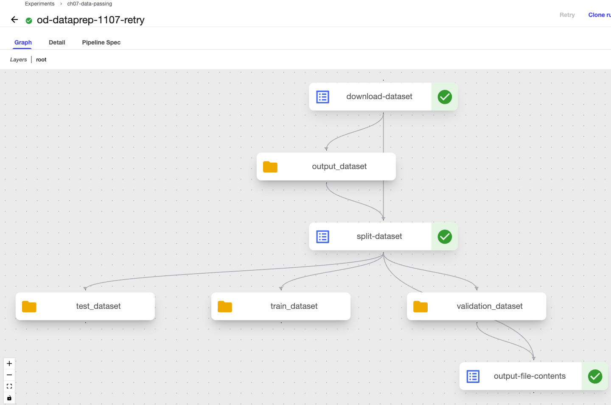
이미지 해설
- 보여주는 것: KFP UI 의
od-dataprep-1107-retryrun Graph 화면. 위에서 아래로download-dataset(초록 체크) → 폴더 모양output_dataset→split-dataset(초록 체크) → 폴더 모양test_dataset/train_dataset/validation_dataset→output-file-contents(초록 체크) 순서입니다. 상단 경로는 Experiments >ch07-data-passing. - 초보자 풀이: 네모 노드는 태스크(파드), 폴더 노드는 아티팩트(데이터 상자) 입니다.
validation_dataset폴더에서만output-file-contents로 화살표가 이어지는 것은 코드에서 검증 컴포넌트에 validation 만 넘겼기 때문입니다. - 여기서 확인할 것: 세 태스크 모두 초록 체크인지, 폴더 노드가 4개(
output_dataset1 + 분할 3)인지. 이 화면의 run 이름은 앞의AGE 95m표와 같은 실행이라고 원문 노트가 붙여 놓았지만, 95m 이 무엇을 재는 값인지는 확인 못함입니다.
[실습] 7.3.1 확인 구간 개요와 공통 준비 (S3 접속 변수)
[실습] 7.3.1 확인 구간: 파이프라인이 끝난 뒤 "정말 맞게 됐는지" 눈으로 확인하기
이 구간의 시각·크기·개수는 모두 원격 kind 클러스터 book-env 에서 기록한 과거 실행 결과입니다. 여러분의 클러스터에서 같은 값이 나온다는 보장은 없습니다. 시간대·UUID·경로는 실행마다 달라집니다.
앞 단계에서 data-preparation-pipeline 실행이 Succeeded 로 끝났습니다. 초록색 체크가 떴다고 해서 데이터가 제대로 만들어졌다는 뜻은 아닙니다. 이 구간에서는 컴포넌트 세 개를 하나씩 열어 "입력은 무엇이었고, 출력은 어디에 있고, 개수와 크기는 맞는가" 를 확인합니다.
aws s3 ls 로 직접 들여다보기).이 구간에서 확인하는 세 가지
| 순서 | 확인 토글 | 무엇을 보나 | 핵심 숫자(book-env 기록) |
|---|---|---|---|
| ① | download_dataset 확인 | 다운로드 진행률, 압축 해제 파일 수, 저장소의 images/·labels/ |
10,279,296,832바이트 → 파일 11,218개 → 16.9GB |
| ② | split-dataset 확인 | 입력 1개 → 출력 3개, 짝 수, 75/15/10 비율 | 5,609쌍 → train 4,206 / val 841 / test 562 |
| ③ | output-file-contents 확인 | validation 분할의 폴더 트리와 짝 검사 | images 841 / labels 841 / mismatch 0 |
flowchart LR
A["download_dataset"] -->|"output_dataset"| B["split_dataset"]
B -->|"train_dataset"| T["train 4206쌍"]
B -->|"validation_dataset"| V["validation 841쌍"]
B -->|"test_dataset"| E["test 562쌍"]
V --> C["output_file_contents"]
A -.->|"확인 1 UI와 S3"| K1["images 와 labels"]
B -.->|"확인 2 UI와 S3"| K2["3개 폴더 비율"]
C -.->|"확인 3 Logs"| K3["mismatch 0"]실선은 데이터가 흐르는 방향, 점선은 우리가 들여다볼 곳입니다. 세 번째 컴포넌트는 validation 분할만 받습니다(train·test 는 이 컴포넌트가 검사하지 않습니다).
🎯 목적 / 📋 사전조건 (공통)
🎯 목적: 세 컴포넌트의 입력·출력 경로, 로그, 저장소 내용이 서로 맞아떨어지는지(파일 수 11,218 = 5,609쌍 × 2) 직접 확인합니다.
📋 사전조건
- 파이프라인 Run 이 Succeeded 로 끝나 있을 것 (book-env 의 Run 이름은
od-dataprep-1107-retry, 실험 이름은ch07-data-passing입니다. 여러분은 다른 이름일 수 있습니다) - PC 에
kubectl과awsCLI 가 설치되어 있고, 클러스터에 접근할 수 있을 것 - 저장소(S3 호환 서비스, 원격 kind 클러스터의 서비스 이름은
minio-service)로 port-forward 가 열려 있을 것
🔧 본인 환경에 맞게 교체:
<KUBE_CONTEXT>= book-env 의 예시kind-book-env— kubectl 컨텍스트. 확인:kubectl config get-contexts
<NAMESPACE>= book-env 의 예시kubeflow— Kubeflow Pipelines 가 설치된 네임스페이스. 확인:kubectl --context <KUBE_CONTEXT> get ns
<S3_ENDPOINT>= book-env 의 예시http://127.0.0.1:9000— port-forward 로 연 로컬 주소
<RUN_UUID>= book-env 의 예시fcc9e744-a78d-4655-a036-5d6e413cd823— 파이프라인 Run 폴더 이름. 확인: Run 화면 컴포넌트의 Input/Output 탭에 보이는minio://…/data-preparation-pipeline/<RUN_UUID>/…주소
<DOWNLOAD_UUID>= book-env 의 예시5a7c5c61-e961-4f05-ae2a-f3320fafe8e3— download-dataset 실행 폴더
<SPLIT_UUID>= book-env 의 예시9a6fc525-d131-4569-9957-db277d6a848f— split-dataset 실행 폴더
⌨ 공통 준비 — S3 접속 변수 (세 확인 모두에서 사용)
[PC 터미널 1] 저장소로 port-forward 를 엽니다. 이 터미널은 계속 열어 둡니다.
# 포워딩이 이미 열려 있으면 생략합니다
source "$HOME/ml-study/env.sh"
kubectl --context "$KUBE_CONTEXT" -n "$KFP_NAMESPACE" port-forward svc/minio-service 9000:9000
[PC 터미널 2] 접속 정보를 환경변수로 읽어 옵니다. 키 값을 화면에 출력하지 않도록 echo 는 쓰지 않습니다.
source "$HOME/ml-study/env.sh" # KUBE_CONTEXT, KFP_NAMESPACE, S3_ENDPOINT 를 불러옵니다
export NAMESPACE="$KFP_NAMESPACE" # 아래 명령이 쓰는 이름
export S3="$S3_ENDPOINT" # 예: http://127.0.0.1:9000 (port-forward 주소)
# Secret 에서 접근 키를 읽어 환경변수로만 보관합니다 (값은 출력하지 않습니다)
export AWS_ACCESS_KEY_ID=$(kubectl --context $KUBE_CONTEXT -n $NAMESPACE get secret mlpipeline-minio-artifact -o jsonpath='{.data.accesskey}' | base64 -d)
export AWS_SECRET_ACCESS_KEY=$(kubectl --context $KUBE_CONTEXT -n $NAMESPACE get secret mlpipeline-minio-artifact -o jsonpath='{.data.secretkey}' | base64 -d)
export AWS_DEFAULT_REGION=us-east-1
# Run UUID 들은 UI 의 Input/Output 탭 주소에서 확인해 넣습니다
export RUN_UUID="<RUN_UUID>"
export DOWNLOAD_UUID="<DOWNLOAD_UUID>"
export SPLIT_UUID="<SPLIT_UUID>"
export PREFIX="s3://mlpipeline/v2/artifacts/data-preparation-pipeline/$RUN_UUID"
# 값이 들어갔는지만 확인 (내용은 보이지 않음)
[ -n "$AWS_ACCESS_KEY_ID" ] && [ -n "$AWS_SECRET_ACCESS_KEY" ] && echo "keys set"
Mac M2 / Linux 차이
base64 -d가 "invalid option" 으로 실패하면base64 -D를 시도합니다. 해당되는 macOS 버전 범위는 확인 못함. (보충 설명)- zsh(Mac 기본 셸)와 bash 모두 위
export문법은 같습니다. 단 URL 안의?·*가 들어간 인자는 따옴표로 감싸세요. kubectl·aws명령 자체는 Mac M2(arm64)와 Linux(x86_64)에서 같습니다. 아키텍처 차이는 이 구간의 확인 명령에는 영향이 없습니다. 다만 Mac M2 에서 파이프라인 전체를 실행한 결과는 확인 못함입니다.
✅ 기대 결과 (공통)
- 첫 확인 명령으로 버킷 목록을 보면
mlpipeline버킷이 있어야 합니다. 이 목록의 출력 예시는 원문 노트에 남아 있지 않으며, 다음 명령(mlpipeline/최상위 조회)이 성공하는 것으로 확인합니다. - book-env 기록:
s3://mlpipeline/아래에artifacts/,v2/두 폴더가 보입니다. - book-env 기록:
s3://mlpipeline/v2/artifacts/아래에data-preparation-pipeline/,income-classifier-pipeline/,joke-pipeline-artifact/가 있고 이 중 우리 파이프라인은data-preparation-pipeline/입니다 (나머지는 앞 절 실습의 산출물입니다).
aws --endpoint-url $S3 s3 ls # 버킷 목록
aws --endpoint-url $S3 s3 ls s3://mlpipeline/ # 최상위
aws --endpoint-url $S3 s3 ls s3://mlpipeline/v2/artifacts/
aws --endpoint-url $S3 s3 ls $PREFIX/ # 우리 Run: download-dataset/ 와 split-dataset/
# book-env 의 기록 (mlpipeline/ 최상위)
PRE artifacts/
PRE v2/
# book-env 의 기록 (v2/artifacts/)
PRE data-preparation-pipeline/
PRE income-classifier-pipeline/
PRE joke-pipeline-artifact/
# book-env 의 기록 (Run 폴더)
PRE download-dataset/
PRE split-dataset/
🔍 확인 방법 / ⚠ 자주 나는 오류 (공통)
| 증상 | 가능한 원인 | 확인·조치 |
|---|---|---|
Could not connect to the endpoint URL |
port-forward 가 닫혔거나 $S3 주소·포트가 틀림 (보충 설명) |
터미널 1 의 포워딩이 살아 있는지, echo $S3 로 주소 확인 |
Unable to locate credentials |
접근 키 변수가 비어 있음 (보충 설명) | 키 설정 확인 줄(keys set)이 나오는지, Secret 이름·네임스페이스 확인 |
접근 키 관련 InvalidAccessKeyId·SignatureDoesNotMatch |
Secret 값을 잘못 읽었거나 다른 클러스터의 Secret (보충 설명) | KUBE_CONTEXT·NAMESPACE 재확인 |
PRE data-preparation-pipeline/ 가 안 보임 |
파이프라인 이름·Run 이 다르거나 아직 업로드 전 | UI 의 Input/Output 탭 minio://… 주소를 그대로 따라 s3://… 로 바꿔 조회 |
⚠ 원문 정정: 원격 kind 클러스터의 "minio" 는 표준 MinIO 가 아니라chrislusf/seaweedfs:3.85이미지입니다. 업스트림 Kubeflow Pipelines 2.4.1 매니페스트의 minio 는 다른 이미지(gcr.io/ml-pipeline/minio:RELEASE.2019-08-14T20-37-41Z-license-compliance)입니다. 이 책의 설명에서 "MinIO" 라고 부르는 것은 S3 호환 저장소 전반을 가리키는 이름으로 이해하세요. 이 문서의 설치 명령(KFP 2.17.3)으로 만든 클러스터에서는 저장소 서비스가seaweedfs이고, 사전 준비에서 같은 곳을 가리키는minio-service별칭을 만들어 두므로 아래 명령은 그대로 쓸 수 있습니다.
다음 세 절에서 컴포넌트를 차례로 엽니다.
[실습] 확인 ① download_dataset 확인
이 절의 로그 시각·진행률·개수는 원격 kind 클러스터 book-env 에서 기록한 과거 실행 결과입니다. 같은 값이 그대로 나온다는 보장은 없습니다.
🎯 목적
download_dataset 컴포넌트가 ① 어떤 경로에 출력을 만들었는지(output_dataset), ② 외부에서 약 10.3GB 파일을 정말 끝까지 받았는지, ③ 압축을 풀어 파일 11,218개 가 저장소에 올라갔는지를 세 곳(UI 입력/출력 탭, UI 로그 탭, 저장소 aws s3 ls)에서 확인합니다.
mlpipeline 버킷)에 하나씩 올립니다. 우리가 확인하는 것은 ① 선반 번호표(경로) ② 트럭 운행 기록(로그) ③ 선반 위 실제 짐(S3 목록)입니다.📋 사전조건
- 앞 절의 공통 준비(S3 접속 변수, port-forward)가 끝나 있을 것
- Run 화면에서 Graph 탭의
download-dataset노드를 클릭하면 오른쪽에 패널이 열립니다. 패널에는 Input/Output · Task Details · Logs 세 탭이 있습니다.
세 곳의 "같은 위치" 표기 이해하기
같은 파일 위치가 보이는 곳에 따라 다르게 적힙니다.
| 보이는 곳 | 표기 형태 | 의미 |
|---|---|---|
| Run 화면 Input/Output 탭 | minio://mlpipeline/v2/artifacts/data-preparation-pipeline/<RUN_UUID>/download-dataset/<DOWNLOAD_UUID>/output_dataset |
저장소 주소(.uri) |
컴포넌트 안(Logs 의 extracted files=…) |
/minio/mlpipeline/v2/artifacts/data-preparation-pipeline/<RUN_UUID>/download-dataset/<DOWNLOAD_UUID>/output_dataset |
컴포넌트 파드 안에서 보이는 로컬 경로(.path) |
내 PC aws s3 ls |
s3://mlpipeline/v2/artifacts/data-preparation-pipeline/<RUN_UUID>/download-dataset/<DOWNLOAD_UUID>/output_dataset/… |
같은 저장소를 S3 방식으로 조회 |
flowchart LR
U["UI 주소 minio 로 시작"] --- S["저장소 mlpipeline 버킷"]
P["파드 안 경로 minio 폴더 아래"] --- S
C["내 PC s3 로 시작"] --- S세 표기는 이름만 다른 같은 위치입니다. .path 는 컴포넌트가 파일을 읽고 쓰는 로컬 경로, .uri 는 저장소 주소입니다.
⚠ 원문 정정: "다음 컴포넌트에는 데이터 자체가 아니라 이 경로가 전달됩니다"라는 설명은 반만 맞습니다. 다음 컴포넌트에 넘어가는 것은 아티팩트의 주소이지만, 각 태스크는 별도 파드에서 실행되므로 입력 아티팩트를 저장소에서 내려받고, 출력은 launcher 가 다시 올립니다. 그래서 이 파이프라인에서는 원본 16.9GB 가 업로드되고(다운로드 단계), 분할본이 또 업로드됩니다(분할 단계). "경로만 넘기니 한 번만 올라간다"로 읽으면 안 됩니다.
⌨ 확인 명령
(1) 화면에서 보기 — [브라우저] Run 상세 화면 → Graph 탭 → download-dataset 노드 클릭
- Input/Output 탭 → Output Artifacts 의
output_dataset주소를 복사해 둡니다. 여기서<RUN_UUID>,<DOWNLOAD_UUID>를 읽습니다. - Logs 탭 → 위에서 아래로 스크롤하며 "다운로드 크기 → 진행률 표시줄 → 압축 해제 파일 수 → 업로드 로그" 순서로 봅니다.
(2) 저장소에서 보기 — [PC 터미널] (공통 준비의 변수가 설정된 상태)
# 다운로드 데이터셋 아래 images / labels 폴더 확인
aws --endpoint-url $S3 s3 ls $PREFIX/download-dataset/$DOWNLOAD_UUID/output_dataset/DATASET/DATA/
# 파이프라인 전체의 총 개수·용량 (끝 3줄만)
aws --endpoint-url $S3 s3 ls s3://mlpipeline/v2/artifacts/data-preparation-pipeline/ --recursive --human-readable --summarize | tail -3
# 맨 앞 5개 파일만 보기
aws --endpoint-url $S3 s3 ls s3://mlpipeline/v2/artifacts/data-preparation-pipeline/ --recursive --human-readable --summarize | head -n 5
두 번째 명령은
data-preparation-pipeline/아래의 모든 Run 을 합칩니다. 아래 기대 결과의 22,436개는 이 파이프라인 폴더 전체의 값이며, 다운로드 하나의 값이 아닙니다.
✅ 기대 결과 (book-env 기록)
# 폴더 확인
PRE images/
PRE labels/
# 총 개수·용량
Total Objects: 22436
Total Size: 31.5 GiB
# 맨 앞 5개 (book-env 의 기록 시각: 2026-11-07 22:33:08, 각 2.9 MiB)
2026-11-07 22:33:08 2.9 MiB v2/artifacts/data-preparation-pipeline/<RUN_UUID>/download-dataset/<DOWNLOAD_UUID>/output_dataset/DATASET/DATA/images/CA01_01.tif
2026-11-07 22:33:08 2.9 MiB v2/artifacts/data-preparation-pipeline/<RUN_UUID>/download-dataset/<DOWNLOAD_UUID>/output_dataset/DATASET/DATA/images/CA01_02.tif
2026-11-07 22:33:08 2.9 MiB v2/artifacts/data-preparation-pipeline/<RUN_UUID>/download-dataset/<DOWNLOAD_UUID>/output_dataset/DATASET/DATA/images/CA01_03.tif
2026-11-07 22:33:08 2.9 MiB v2/artifacts/data-preparation-pipeline/<RUN_UUID>/download-dataset/<DOWNLOAD_UUID>/output_dataset/DATASET/DATA/images/CA01_04.tif
2026-11-07 22:33:08 2.9 MiB v2/artifacts/data-preparation-pipeline/<RUN_UUID>/download-dataset/<DOWNLOAD_UUID>/output_dataset/DATASET/DATA/images/CA01_05.tif
(실제 출력의 UUID 자리에는 원격 kind 클러스터의 값이 들어 있었고 여기서는 가변값 표기로 바꿨습니다.)
숫자 읽기
| 숫자 | 출처 | 풀이 |
|---|---|---|
| 22,436개 / 31.5 GiB | book-env 기록, 파이프라인 폴더 전체 | 다운로드 11,218개 + 분할 11,218개 = 22,436(계산). 다운로드와 분할이 같은 파일 수입니다. |
| 11,218개, 16.9GB | book-env 기록(로그의 extracted files=11218, 책의 해제 용량) |
이미지 5,609 + 라벨 5,609 = 11,218(계산) |
| 10,279,296,832바이트 ≈ 10.3GB | 로그 download size= |
압축 파일(gz) 크기 |
| 2.9 MiB | s3 ls 출력 |
이미지(.tif) 한 장 크기 |
가상 예시 GB 와 GiB 는 다릅니다. 1 GiB = 1,073,741,824바이트 = 약 1.074 GB 입니다. 가상 숫자로 계산하면 "어떤 폴더가 15.7 GiB" 일 때 15.7 × 1.074 ≈ 16.9 GB 입니다. 로그·책의 "GB" 와 aws s3 ls --human-readable 의 "GiB" 는 단위가 다르니 직접 비교하지 마세요.
이미지와 해설
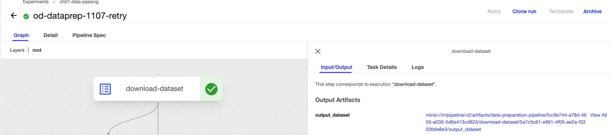
그림이 보여주는 것: Run 이름 od-dataprep-1107-retry(실험 ch07-data-passing)의 Graph 탭에서 download-dataset 노드(초록 체크)를 선택해 오른쪽 패널의 Input/Output 탭을 연 화면입니다. "This step corresponds to execution "download-dataset"." 아래 Output Artifacts 에 output_dataset 하나가 있고, 값은 minio://mlpipeline/v2/artifacts/data-preparation-pipeline/<RUN_UUID>/download-dataset/<DOWNLOAD_UUID>/output_dataset 형태의 파란 링크입니다(View All 링크 포함).
초보자 풀이: 이 컴포넌트는 입력 아티팩트가 없고 출력만 있습니다(입력 섹션이 없음). 출력 이름 output_dataset 은 코드의 output_dataset: Output[Dataset] 인자 이름과 같습니다. 화면 위쪽의 Retry·Clone run·Terminate·Archive 는 Run 전체를 다루는 버튼이며 이 확인과 관계없습니다.
여기서 확인할 것: ① 이 주소의 UUID 두 개(Run, download-dataset)를 메모해 export 변수에 넣을 것 ② 주소가 …/download-dataset/<UUID>/output_dataset 로 끝나는지.
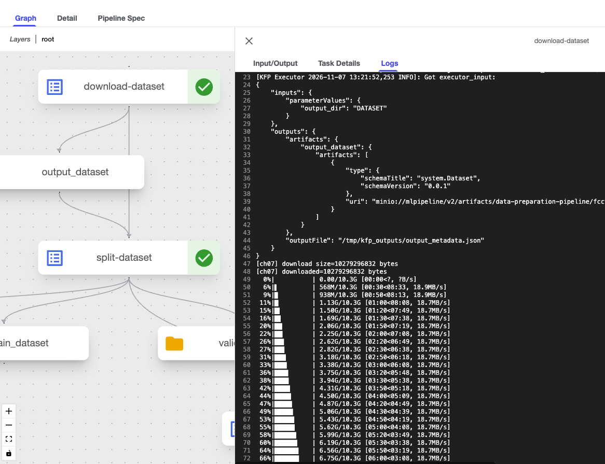
그림이 보여주는 것: 같은 노드의 Logs 탭 위쪽입니다. 왼쪽 그래프에는 download-dataset → output_dataset → split-dataset → 분할 데이터셋 노드가 보입니다. 로그에는 ① 컴포넌트가 받은 입력 설명(JSON): parameterValues 의 output_dir: "DATASET", outputs.artifacts.output_dataset 의 타입 system.Dataset(버전 0.0.1)과 uri, outputFile 이 /tmp/kfp_outputs/output_metadata.json ② [ch07] download size=10279296832 bytes ③ [ch07] downloaded=10279296832 bytes ④ 진행률 표시줄이 0% → 6% 568M [00:30<08:33, 18.9MB/s] → … → 66% 6.75G [06:00<03:08, 18.7MB/s] 로 이어지는 모습이 있습니다.
초보자 풀이: 진행률 줄 568M [00:30<08:33, 18.9MB/s] 은 "30초 경과 / 남은 예상 8분 33초 / 초당 18.9MB" 입니다. 속도가 18.7~18.9MB/s 로 거의 일정합니다. download size 는 서버가 알려 준 총 크기, downloaded 는 실제로 디스크에 받은 크기이며 두 값이 같으면 중간에 끊기지 않고 전부 받은 것입니다. 이 값은 [ch07] 접두어가 붙은 우리 코드의 print 줄입니다.
여기서 확인할 것: size = downloaded(둘 다 10279296832). 진행률 줄은 코드의 mininterval=30 설정과 달리 이 화면에서는 10~20초 간격으로 보입니다. 그 이유는 확인 못함. 또 downloaded= 줄이 진행률 표시줄보다 위 에 나오는 것은 두 출력이 따로 모여 보이는 것으로 추정되며(보충 설명, 확인 못함) 다운로드가 끝나기 전에 완료된 것이 아닙니다.
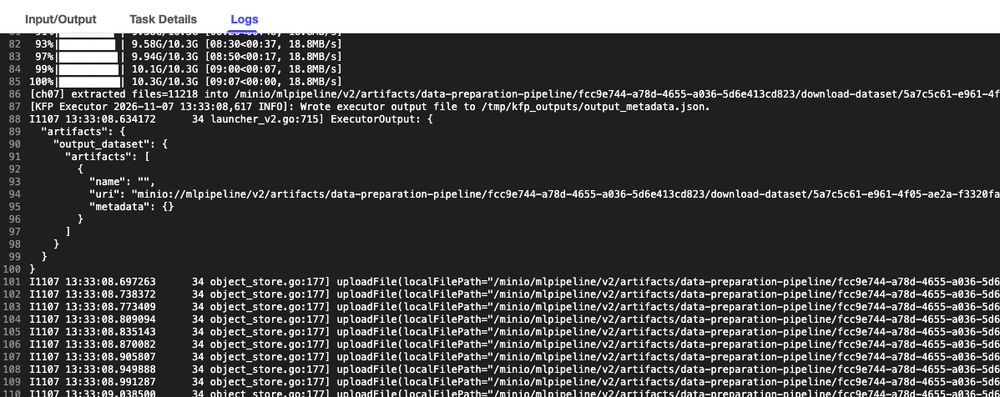
그림이 보여주는 것: Logs 탭 아래쪽입니다. 진행률이 93% → 97% → 99% 10.1G [09:00<00:07, 18.8MB/s] → 100% 10.3G [09:07<00:00, 18.8MB/s] 로 끝납니다. 이어서 [ch07] extracted files=11218 into /minio/mlpipeline/v2/artifacts/data-preparation-pipeline/<RUN_UUID>/download-dataset/<DOWNLOAD_UUID>/output_dataset…, Wrote executor output file to /tmp/kfp_outputs/output_metadata.json., ExecutorOutput: { 아래 output_dataset 의 uri, 그리고 13:33:08 부터 object_store.go:177] uploadFile(localFilePath="/minio/mlpipeline/… 줄이 수십 ms 간격으로 반복됩니다.
초보자 풀이: extracted files=11218 이 압축 해제 후 파일 수입니다. 그 아래 ExecutorOutput 은 "컴포넌트 코드가 끝났다"는 보고이고, 이후 uploadFile 반복은 launcher 가 풀린 파일을 저장소에 하나씩 올리는 중 입니다(책 설명: 11,218개를 하나씩 업로드). 한 줄이 약 30~40ms 간격으로 찍힙니다.
여기서 확인할 것: extracted files=11218(= 이미지 5,609 + 라벨 5,609). 이 업로드 단계가 원격 kind 클러스터에서 지난번 500 오류가 났던 곳 입니다(아래 오류 표). 이 업로드 반복이 다운로드 파드 총 시간을 늘리는 요인이라는 설명은 보충 설명이며 로그만으로는 비율을 확인 못함.
가상 예시 같은 파일(10,279,296,832바이트)을 10MB/s 로 받는다면 10,279,296,832 ÷ 10,000,000 ≈ 1,028초 ≈ 17분 8초입니다. book-env 기록 속도(약 18.8MB/s)로는 9분 7초(로그 표시값)가 걸렸습니다. 네트워크 속도에 따라 다운로드 시간이 크게 달라진다는 것을 보여 주는 계산일 뿐, 여러분의 환경 시간을 예측하는 값이 아닙니다.
그림이 보여주는 것: 화면에는 저장소의 …/DATASET/DATA/images/CA01_01.tif 이미지가 보입니다. 책상 위(자, 케이블, 사탕, 색 메모지)에 놓인 신분증 카드 한 장이 찍혀 있습니다. 이 데이터셋(MIDV-500 가공본)은 신분증을 여러 배경에서 찍은 사진이며 이 이미지는 샘플입니다. 사진 속 개인정보 글자는 학습과 무관하므로 옮기지 않습니다.
초보자 풀이: 객체 탐지 학습의 한 쌍은 이미지 파일(.tif) + 같은 이름의 라벨 파일(.txt) 입니다. CA01_01.tif 에는 CA01_01.txt 가 짝입니다. book-env 에 기록된 라벨 내용은 다음 한 줄입니다.
# CA01_01.txt 파일 내용
0 0.475926 0.476042 0.772222 0.282292
YOLO 라벨 한 줄의 읽는 법은 클래스번호 x중심 y중심 너비 높이 이고, 뒤의 네 값은 이미지 전체 크기를 1 로 본 비율(0~1)입니다(보충 설명: YOLO 라벨 형식의 일반적인 설명).
가상 예시 이미지가 가로 1000px × 세로 800px 라고 가정하면: 중심 x = 0.475926 × 1000 ≈ 476px, 중심 y = 0.476042 × 800 ≈ 381px, 박스 너비 = 0.772222 × 1000 ≈ 772px, 박스 높이 = 0.282292 × 800 ≈ 226px 입니다. 실제 CA01_01.tif 의 해상도는 원문 노트에 없어 확인 못함이므로 이 환산은 계산법을 익히기 위한 예시입니다.
여기서 확인할 것: 이미지 한 장당 약 2.9 MiB(s3 ls 출력). 라벨 파일은 한 줄뿐인 작은 텍스트입니다(라벨 파일의 크기는 원문 노트에 없어 확인 못함).
관련 코드와 설명
download_dataset 컴포넌트 전체 코드와 줄별 주석
@dsl.component(packages_to_install=["requests", "boto3", "tqdm"], base_image="python:3.11")
def download_dataset(output_dataset: Output[Dataset], output_dir: str = "DATASET"):
import os
import tarfile
import requests
from tqdm import tqdm
base_url = "https://manning.box.com/shared/static"
url = f"{base_url}/34dbdkmhahuafcxh0yhiqaf05rqnzjq9.gz" # 다운로드 대상 gz 파일
downloaded_file = "DATASET.gz" # 파드의 임시 파일 시스템에 저장
response = requests.get(url, stream=True) # stream=True: 한 번에 메모리로 읽지 않고 조각씩 받기
file_size = int(response.headers.get("Content-Length", 0))
print(f"[ch07] download size={file_size} bytes", flush=True)
progress_bar = tqdm(total=file_size, unit="B", unit_scale=True, mininterval=30)
with open(downloaded_file, "wb") as file:
for chunk in response.iter_content(chunk_size=1024 * 1024): # 1MiB 씩 (원본은 1KiB)
progress_bar.update(len(chunk))
file.write(chunk)
progress_bar.close()
print(f"[ch07] downloaded={os.path.getsize(downloaded_file)} bytes", flush=True)
extraction_path = os.path.join(output_dataset.path, output_dir) # <artifact>/DATASET
os.makedirs(extraction_path, exist_ok=True)
with tarfile.open(downloaded_file, "r:gz") as tar:
tar.extractall(extraction_path) # 압축 해제
os.remove(downloaded_file) # gz 삭제로 파드 디스크 절약
n = sum(len(f) for _, _, f in os.walk(extraction_path))
print(f"[ch07] extracted files={n} into {extraction_path}", flush=True)
Output[Dataset]: KFP 가 출력 경로(output_dataset.path)를 넘겨 주는 방식입니다. 컴포넌트가 끝나면 이 디렉터리가mlpipeline버킷에 업로드됩니다. 다음 컴포넌트에는 데이터 자체가 아니라 이 경로(주소)가 전달됩니다(위 원문 정정의 단서 참고).- 다운로드:
requests.get(stream=True)로 약 10.28GB 를 1MiB 씩DATASET.gz에 씁니다. 원본은 1KiB 청크였는데 1,000만 회 반복과 진행 로그 폭주 때문에 바꿨습니다. 1KiB 청크는 "오류"가 아니라 성능 권고 수준의 변경입니다. - 압축 해제:
tarfile.open(..., "r:gz")로<artifact>/DATASET/DATA/{images,labels}에 풀어서 16.9GB 가 됩니다. 풀고 나서os.remove로 gz 를 지워 파드 디스크를 줄입니다. (이 데이터셋의 tar 최상위 폴더는DATA이며MINIDATA가 아닙니다.) - 업로드: 컴포넌트가 끝난 뒤 KFP launcher 가 11,218개 파일을 하나씩 저장소에 올립니다. 지난번 500 오류가 난 곳이 이 단계였습니다.
boto3:packages_to_install에 있지만 코드에서 쓰지 않습니다. 책의 저장소 직접 업로드(3단계) 흔적입니다.- 디스크 산술(계산): 다운로드 파드에는 gz 약 10.3GB 와 해제물 16.9GB 가 있어 한때 합쳐 약 27.2GB 가 필요합니다. gz 는 해제 직후 삭제됩니다.
- 개선 권고(보충 설명):
requests.get뒤에response.raise_for_status()와timeout이 없습니다. 링크가 잘못되면 HTML 오류 페이지를 gz 로 저장할 수 있으니 실무에서는 추가하세요.
🔍 확인 방법
| 확인 | 정상 | 어긋날 때 |
|---|---|---|
UI Input/Output 의 output_dataset |
…/download-dataset/<UUID>/output_dataset |
출력 섹션이 없다면 노드를 잘못 선택 |
로그 download size vs downloaded |
같은 값(book-env 기록 10279296832) | 다르면 중간에 끊김 |
로그 extracted files |
11218 | 다르면 압축 해제 실패·tar 구조 변경 |
s3 ls …/DATA/ |
images/, labels/ 두 폴더 |
DATA 가 없으면 MINIDATA 등 폴더 이름이 다른 데이터인지 확인 |
s3 ls … --summarize |
Total Objects 22436(다운로드+분할 합) | 분할이 아직 안 끝났다면 절반(11,218)만 보일 수 있음 (보충 설명) |
⚠ 자주 나는 오류
| 증상 | 원인·조치 |
|---|---|
업로드 단계에서 500 오류, 로그에 Not enough data nodes found! |
원격 kind 클러스터의 저장소(chrislusf/seaweedfs:3.85)의 볼륨 슬롯이 부족했던 경우입니다. 인자 volume.max=100, -master.volumeSizeLimitMB=64 상태에서 볼륨 슬롯이 모두 차(free:0) 업로드가 막혔고, -volume.max=1000 으로 올려 재실행해 성공했습니다. 슬롯 수 × 64MB 를 정확한 용량 상한으로 읽지는 마세요. volume.max 는 볼륨 서버가 받는 볼륨 개수이며 디스크·PVC 용량을 늘리는 것이 아닙니다. 롤아웃 후에는 포트포워딩을 다시 열어야 합니다. |
| 다운로드 속도가 매우 느리거나 끊김 | 외부(Box)에서 받으므로 네트워크 영향. curl -I(HEAD)는 404 지만 Range GET(bytes=0-1)은 206 으로 정상 응답한다는 점검 결과가 있습니다(총길이 10,279,296,832, 첫 2바이트 1f8b = gzip 시작). "링크가 만료됐다"고 단정하지 마세요. 전체 다운로드 재현은 확인 못함. |
| 디스크 부족으로 파드가 죽음 | 다운로드 파드에 gz + 해제물이 함께 있어 약 27.2GB 가 필요합니다. 저장소 쪽은 원본+분할 약 33.8GB(계산). 권장 디스크 수치(예: 100GB)는 추정치이며 보장값이 아닙니다. |
aws s3 ls 결과가 비어 있음 |
RUN_UUID·DOWNLOAD_UUID 오타. UI 주소의 UUID 를 그대로 복사했는지 확인 |
| 파일 수가 11,218이 아님 | 다른 데이터셋 링크를 쓰거나 일부 업로드가 실패한 경우. 로그의 extracted files= 와 저장소 개수를 둘 다 비교 |
시간 읽기 (book-env 기록)
- 로그 시각:
Got executor_input이 13:21:52, 업로드 시작이 13:33:08 입니다(화면의KFP Executor 2026-11-07 13:21:52,253,13:33:08,617). 사이가 약 11분 16초입니다(계산). - 원문 노트 요약의 "다운로드 파드 25분"은 파드 기동·패키지 설치·launcher 업로드를 포함한 총 경과 시간이고 로그의 11분대는 컨테이너 안 실행 구간이라 기준이 다릅니다(보충 설명). 나머지가 각각 얼마였는지는 로그만으로는 확인 못함.
aws s3 ls의22:33:08과 UI 로그의13:33:08은 같은 순간으로 보입니다. 명령을 실행한 PC 의 시간대(UTC+9 로 보임)와 UTC 표시의 차이로 해석됩니다(보충 설명).
[실습] 확인 ② split-dataset 확인
이 절의 시각·개수·크기는 원격 kind 클러스터 book-env 에서 기록한 과거 실행 결과입니다. 환경마다 다를 수 있습니다.
🎯 목적
split_dataset 컴포넌트가 ① 앞 단계의 output_dataset 하나를 입력으로 받았는지 ② 출력 세 개(train / validation / test)를 만들었는지 ③ 개수가 약 75% / 15% / 10% 인지 ④ 이미지와 라벨이 짝으로 움직였는지(only_img=0, only_lbl=0)를 확인합니다.
📋 사전조건
- 앞 절에서
RUN_UUID,DOWNLOAD_UUID,S3,PREFIX등 변수가 설정되어 있을 것 SPLIT_UUID는 UI 의 split-dataset 노드 Input/Output 탭의 출력 주소…/split-dataset/<SPLIT_UUID>/test_dataset에서 읽습니다.
export SPLIT_UUID="<SPLIT_UUID>" # 예: 9a6fc525-d131-4569-9957-db277d6a848f
export SPLIT="$PREFIX/split-dataset/$SPLIT_UUID"
두 번 나누기 그림
flowchart TD
A["전체 5609쌍"] -->|"1단계 test_size 0.25 올림"| TR["train 4206쌍"]
A --> R["남은 s_rest 1403쌍"]
R -->|"2단계 test_size 0.4 올림"| TE["test 562쌍"]
R --> VA["validation 841쌍"]| 단계 | 계산 | 결과 (book-env 로그와 일치) |
|---|---|---|
| 1단계 | test_size = 1 − 0.75 = 0.25 → 5,609 × 0.25 = 1,402.25 → 올림 1,403 |
s_rest 1,403 / train 5,609 − 1,403 = 4,206 |
| 2단계 | test_size = 0.10 / (0.10 + 0.15) = 0.4 → 1,403 × 0.4 = 561.2 → 올림 562 |
test 562 / validation 1,403 − 562 = 841 |
train_test_split 은 test_size 에 소수를 주면 테스트 쪽 개수를 올림하므로 개수가 정수로 딱 떨어지지 않습니다(그래서 1단계 train 이 4,206.75 가 아니라 4,206). 비율로 환산하면 4,206 / 5,609 ≈ 74.99%, 841 / 5,609 ≈ 14.99%, 562 / 5,609 ≈ 10.02% 입니다(계산).
가상 예시 만약 전체가 100쌍이었다면: 1단계 100 × 0.25 = 25 → s_rest 25, train 75. 2단계 25 × 0.4 = 10 → test 10, validation 15. 비율이 딱 맞는 가상 숫자입니다(올림이 없는 경우). 실제 5,609쌍은 위처럼 올림이 개입합니다.
⌨ 확인 명령
(1) 화면에서 보기 — [브라우저] Run 상세 화면 → Graph 탭 → split-dataset 노드 클릭
- Input/Output 탭: Input Parameters 의
random_state, Input Artifacts 의input_dataset, Output Artifacts 의test_dataset·train_dataset·validation_dataset. - Logs 탭:
[ch07] images=… labels=… paired=…줄,[ch07] split train=… val=… test=…줄을 찾습니다.
(2) 저장소에서 보기 — [PC 터미널]
# 다운로드 데이터셋과 분할 데이터셋 (Run 폴더 아래 두 개)
aws --endpoint-url $S3 s3 ls $PREFIX/
# 분할 데이터셋: test / train / validation 세 폴더
aws --endpoint-url $S3 s3 ls $SPLIT/
# 분할 데이터셋 전체 개수·용량
aws --endpoint-url $S3 s3 ls $SPLIT/ --recursive --human-readable --summarize | tail -3
# 훈련 (75% 비중)
aws --endpoint-url $S3 s3 ls $SPLIT/train_dataset/ --recursive --human-readable --summarize | tail -3
# 검증 (15% 비중)
aws --endpoint-url $S3 s3 ls $SPLIT/validation_dataset/ --recursive --human-readable --summarize | tail -3
# 테스트 (10% 비중)
aws --endpoint-url $S3 s3 ls $SPLIT/test_dataset/ --recursive --human-readable --summarize | tail -3
# 맨 앞 5개 파일만 보기
aws --endpoint-url $S3 s3 ls $SPLIT/ --recursive --human-readable --summarize | head -n 5
✅ 기대 결과 (book-env 기록)
# Run 폴더
PRE download-dataset/
PRE split-dataset/
# 분할 폴더 (split-dataset/<SPLIT_UUID>/)
PRE test_dataset/
PRE train_dataset/
PRE validation_dataset/
# 분할 전체
Total Objects: 11218
Total Size: 15.7 GiB
# 훈련 (75%)
Total Objects: 8412
Total Size: 11.8 GiB
# 검증 (15%)
Total Objects: 1682
Total Size: 2.4 GiB
# 테스트 (10%)
Total Objects: 1124
Total Size: 1.6 GiB
# 맨 앞 5개 (book-env 의 기록 시각: 2026-11-07 22:41:09, 각 2.9 MiB, 모두 test_dataset/images/)
… test_dataset/images/CA01_24.tif
… test_dataset/images/CA01_30.tif
… test_dataset/images/CA03_04.tif
… test_dataset/images/CA03_14.tif
… test_dataset/images/CA03_15.tif
숫자 맞춰 보기
| 분할 | 쌍 수 (로그) | 객체 수 (S3) | 확인 산술 | 크기 (S3) |
|---|---|---|---|---|
| train | 4,206 | 8,412 | 4,206 × 2 = 8,412 | 11.8 GiB |
| validation | 841 | 1,682 | 841 × 2 = 1,682 | 2.4 GiB |
| test | 562 | 1,124 | 562 × 2 = 1,124 | 1.6 GiB |
| 합계 | 5,609 | 11,218 | 8,412 + 1,682 + 1,124 = 11,218 | 15.7 GiB (11.8 + 2.4 + 1.6 = 15.8, 반올림 차이) |
(쌍 수 × 2 = 이미지 + 라벨 두 파일. 이미지·라벨 불일치와 분할 간 중복은 0 으로 기록되어 있습니다.)
⚠ 크기를 비교할 때 주의: 다운로드 쪽 16.9GB(해제 용량, GB 단위)와 분할 쪽 15.7 GiB(`aws` 출력, GiB 단위)는 단위가 달라 숫자만 보면 분할이 더 작아 보입니다. 15.7 GiB ≈ 16.9 GB 이므로 사실상 같은 용량입니다(계산). 분할은 파일을 새 위치로 복사하므로 저장소에는 원본(약 16.9GB) + 분할본(약 16.9GB) ≈ 33.8GB 가 남습니다.
이미지와 해설
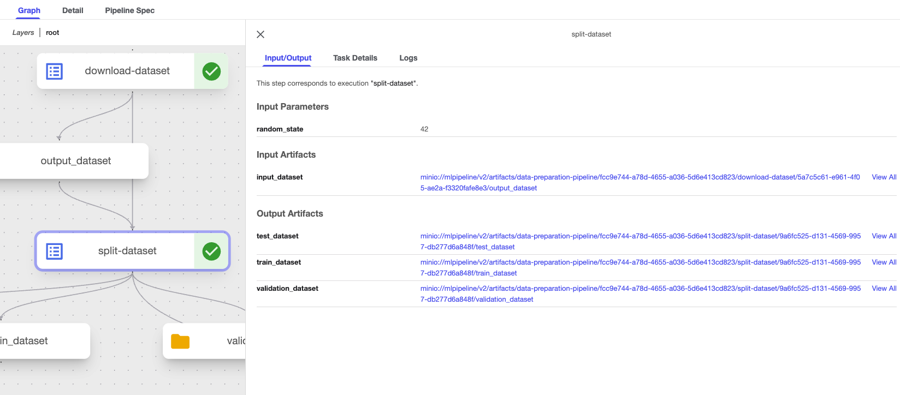
그림이 보여주는 것: 왼쪽 Graph 에 download-dataset(초록 체크) → output_dataset → split-dataset(초록 체크, 선택됨) → 아래쪽으로 세 갈래(…in_dataset, vali… 등 잘린 노드)가 보입니다. 오른쪽 패널은 split-dataset 의 Input/Output 탭입니다. Input Parameters 에 random_state = 42, Input Artifacts 에 input_dataset = minio://mlpipeline/v2/artifacts/data-preparation-pipeline/<RUN_UUID>/download-dataset/<DOWNLOAD_UUID>/output_dataset, Output Artifacts 에 test_dataset, train_dataset, validation_dataset 세 개가 …/split-dataset/<SPLIT_UUID>/<이름> 형태로 나옵니다.
초보자 풀이: 입력 1개(input_dataset) → 출력 3개입니다. 입력 주소가 앞 절 download-dataset 의 output_dataset 주소와 같은 글자여야 두 컴포넌트가 이어진 것입니다. 출력 3개의 UUID 는 모두 같은 <SPLIT_UUID> 이고 뒤의 이름만 다릅니다. random_state=42 는 섞는 순서를 고정하는 숫자라, 같은 값이면 같은 순서로 섞입니다.
여기서 확인할 것: ① 입력 주소가 download-dataset 의 출력 주소와 같은가 ② 출력 3개의 이름이 코드 인자 이름(train_dataset, validation_dataset, test_dataset)과 같은가.
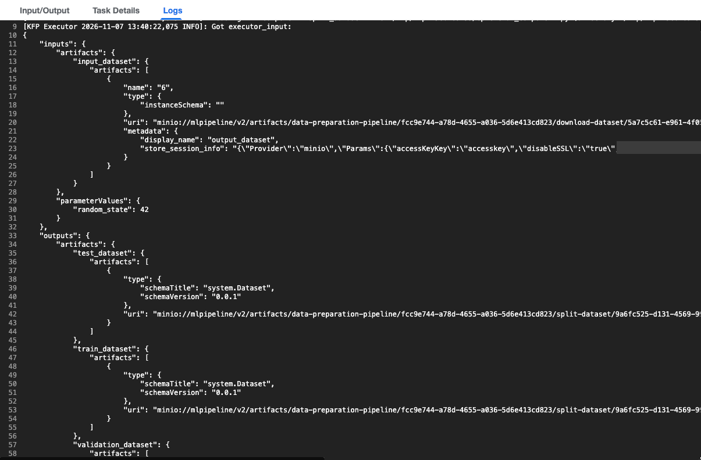
그림이 보여주는 것: Logs 탭 위쪽의 Got executor_input: 이후 JSON 입니다([KFP Executor 2026-11-07 13:40:22,075 INFO]). inputs.artifacts.input_dataset 안에 uri(download-dataset 의 output_dataset)와 metadata 가 있고, metadata 의 display_name 은 "output_dataset", store_session_info 는 {"Provider":"minio","Params":{"accessKeyKey":"accesskey","disableSSL":"true","endpoint":"… 로 이어집니다. parameterValues 에 random_state: 42, outputs.artifacts 에 test_dataset·train_dataset·validation_dataset 이 각각 타입 system.Dataset(schemaVersion 0.0.1)과 uri 를 갖고 있습니다.
초보자 풀이: 이 JSON 은 launcher 가 컴포넌트에게 건네는 "작업 지시서(executor_input)" 입니다. 입력 아티팩트가 어디(uri)에 있고, 어떤 저장소(Provider: minio)에 어떤 방식으로 접속하는지가 적혀 있습니다. 여기서 accessKeyKey: "accesskey" 는 Secret 안의 키 이름이지 접속 비밀번호 값이 아닙니다. 출력 타입 system.Dataset 은 코드의 Output[Dataset] 이 이렇게 기록된 것입니다.
여기서 확인할 것: 입력/출력 이름과 random_state: 42. 접속 정보 줄(endpoint 등)은 환경 정보이므로 학습 자료나 질문 글에 그대로 붙여 넣지 마세요. 이 책에서도 옮기지 않았습니다.
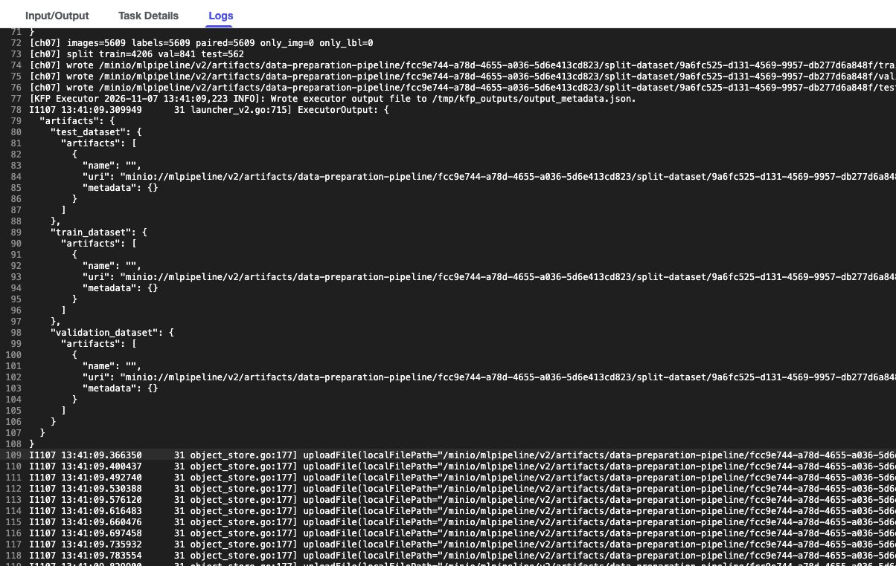
그림이 보여주는 것: Logs 탭 아래쪽입니다. 72~76번째 줄에 다음 네 개의 [ch07] 줄이 있습니다.
[ch07] images=5609 labels=5609 paired=5609 only_img=0 only_lbl=0
[ch07] split train=4206 val=841 test=562
[ch07] wrote /minio/mlpipeline/v2/artifacts/data-preparation-pipeline/<RUN_UUID>/split-dataset/<SPLIT_UUID>/tra… (train)
[ch07] wrote … (validation) [ch07] wrote … (test)
(화면 오른쪽 끝이 잘려 wrote … 줄의 n= 값은 이 그림에서 보이지 않습니다. 세 줄이 train·validation·test 순으로 찍히는 것은 코드의 반복 순서에서 알 수 있는 보충 설명입니다.) 이어서 13:41:09,223 Wrote executor output file to /tmp/kfp_outputs/output_metadata.json., ExecutorOutput 아래에 test_dataset·train_dataset·validation_dataset 의 uri, 그리고 13:41:09.366 부터 uploadFile(localFilePath="/minio/mlpipeline/… 줄이 반복됩니다.
초보자 풀이: 첫 줄 images=5609 labels=5609 paired=5609 only_img=0 only_lbl=0 이 "사진 5,609장, 정답지 5,609개, 이름이 같아 짝이 된 것 5,609, 짝 없는 사진 0, 짝 없는 정답지 0" 입니다. 이어 두 번 나눈 결과가 train=4206 val=841 test=562 입니다. 합 4,206 + 841 + 562 = 5,609 입니다. 아래 uploadFile 줄들은 앞 절과 같이 launcher 가 분할 파일을 저장소에 올리는 중입니다(한 줄에 파일 하나).
여기서 확인할 것: ① paired 가 images·labels 와 같은가(= 짝 어긋남 없음) ② only_img, only_lbl 이 0 인가 ③ 세 분할의 합이 paired 와 같은가.
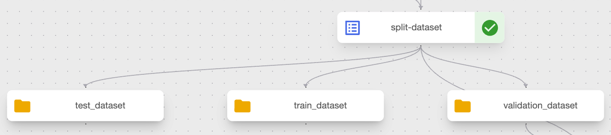
그림이 보여주는 것: Graph 확대 화면입니다. split-dataset(초록 체크) 한 노드에서 선이 세 갈래로 나뉘어 노란 폴더 아이콘 노드 test_dataset, train_dataset, validation_dataset 으로 이어집니다.
초보자 풀이: 노란 폴더 노드는 "컴포넌트가 만든 출력 아티팩트(디렉터리)" 입니다. 파란 목록 아이콘의 사각형이 태스크(컴포넌트 실행), 폴더 아이콘이 데이터입니다. 이 폴더 3개가 다음 학습 단계(다른 파이프라인·컴포넌트)가 가져다 쓰는 입력이 됩니다. 이 노드들은 ③ 번 확인에서 validation_dataset 이 output-file-contents 로 이어지는 모습으로 다시 나옵니다.
여기서 확인할 것: 세 폴더 노드가 모두 있고 이름이 철자까지 일치하는지.
관련 코드와 설명: 핵심 수정 지점
split_dataset 컴포넌트 전체 코드와 줄별 주석
@dsl.component(packages_to_install=["scikit-learn"], base_image="python:3.11")
def split_dataset(
random_state: int,
input_dataset: Input[Dataset], # 앞 단계 출력이 여기로 들어온다
train_dataset: Output[Dataset], # 출력 3개
validation_dataset: Output[Dataset],
test_dataset: Output[Dataset],
):
import glob
import os
import shutil
from sklearn.model_selection import train_test_split
BASE_PATH = "DATA" # 원본은 "MINIDATA" (이 데이터셋에는 없음)
root = os.path.join(input_dataset.path, "DATASET", BASE_PATH)
def by_stem(sub):
d = {}
for p in glob.glob(os.path.join(root, sub, "*")):
if os.path.isfile(p):
d[os.path.splitext(os.path.basename(p))[0]] = p # {확장자 뺀 파일명: 경로}
return d
imgs, lbls = by_stem("images"), by_stem("labels")
stems = sorted(set(imgs) & set(lbls)) # 이름이 같은 쌍만, 정렬해서 재현성 확보
print(f"[ch07] images={len(imgs)} labels={len(lbls)} paired={len(stems)} "
f"only_img={len(set(imgs) - set(lbls))} only_lbl={len(set(lbls) - set(imgs))}", flush=True)
train_ratio, validation_ratio, test_ratio = 0.75, 0.15, 0.10
s_train, s_rest = train_test_split(stems, test_size=1 - train_ratio, random_state=random_state)
s_val, s_test = train_test_split(
s_rest, test_size=test_ratio / (test_ratio + validation_ratio), random_state=random_state
)
print(f"[ch07] split train={len(s_train)} val={len(s_val)} test={len(s_test)}", flush=True)
for out, split_stems in [(train_dataset, s_train), (validation_dataset, s_val), (test_dataset, s_test)]:
os.makedirs(os.path.join(out.path, "images"), exist_ok=True)
os.makedirs(os.path.join(out.path, "labels"), exist_ok=True)
for s in split_stems:
shutil.copy2(imgs[s], os.path.join(out.path, "images", os.path.basename(imgs[s])))
shutil.copy2(lbls[s], os.path.join(out.path, "labels", os.path.basename(lbls[s])))
print(f"[ch07] wrote {out.path} n={len(split_stems)}", flush=True)
stems = sorted(set(imgs) & set(lbls))by_stem()은{파일명(확장자 제외): 경로}딕셔너리를 만듭니다. 이미지(.tif)와 라벨(.txt)을 같은 이름으로 묶습니다.- 교집합을
sorted로 만들면 이미지와 라벨이 항상 같은 짝으로 움직이고, 파일 시스템 순서에 상관없이 재현됩니다. 로그의paired=5609 only_img=0 only_lbl=0이 이 확인입니다. - 원본은
glob으로 두 목록을 따로 만들고 정렬 없이train_test_split(images, labels)를 썼습니다. 같은 인덱스가 짝이라는 보장이 없어서 어긋날 수 있다고 판단해 바꿨고, 원본에서 실제로 어긋나는지는 재현하지 않았습니다(= 위험은 있으나 미재현).
- 비율 계산은 두 번 나눕니다. 파일 수는
train_test_split이 올림하기 때문에 정수로 떨어지지 않습니다. 위의 표(1단계 1,403·4,206 / 2단계 562·841)가 그 계산입니다. 두 호출에 같은random_state=42를 넘겨 재현성을 맞춥니다. - 복사는
shutil.copy2로images/와labels/에 파일 단위로 하고, 이름은 basename 그대로 유지합니다. 그래서 YOLO 가 요구하는 "images/id0042.png↔labels/id0042.txt" 같은 짝 규칙을 지킵니다. 대신 원본 16.9GB 가 분할마다 한 번 더 복사되어 저장소에 약 2배(33.8GB) 가 됩니다.
⚠ 원문 정정: 코드 주석의BASE_PATH = "DATA" # 원본은 "MINIDATA"부분 — 이 URL(FULL 데이터셋)의 tar 최상위 폴더는DATA입니다.MINIDATA는 이 데이터에 없습니다. 이 수정은 원본 저장소의 코드(Listing 7.20)에 해당하며 Listing 7.11 에는 없습니다.
⚠ 원문 정정: 책이 "YOLO 는 루트에 train/val/test 폴더가 반드시 있어야 한다"는 식으로 보이게 쓴 부분은 일반 규칙이 아닙니다. Ultralytics 는 train/val/test 위치를 data.yaml 로 지정하며 입력 형태가 유연하고 test 는 선택입니다. 같은 이름(stem)의 이미지·라벨 짝, 클래스 번호 0 부터 시작, 정규화된 xywh 라벨 설명은 그대로 유효합니다.
🔍 확인 방법
| 확인 | 정상 (book-env 기록) | 어긋날 때 |
|---|---|---|
| UI 입력 주소 | download-dataset 의 output_dataset 주소와 동일 |
다르면 파이프라인 연결이 다른 Run |
로그 paired |
5609 = images = labels, only_* = 0 |
0이 아니면 짝 없는 파일. 데이터셋 변경 가능 |
로그 split |
train 4206 / val 841 / test 562 | 합이 paired 와 다르면 로그 줄·Run 이 다른 것인지 확인 |
| S3 객체 수 | 8412 / 1682 / 1124, 합 11218 | 쌍 수 × 2 와 맞지 않으면 업로드 일부 누락 가능 |
| S3 폴더 | test_dataset/, train_dataset/, validation_dataset/ |
이름이 다르면 코드 인자 이름·출력 키 확인 |
⚠ 자주 나는 오류
| 증상 | 원인·조치 |
|---|---|
KeyError·outputs["x_val_output"] 같은 출력 키 오류 |
책 코드의 출력 키 이름이 실제와 다릅니다. 실제 출력 키는 train_dataset / validation_dataset / test_dataset 입니다. |
로그에 images=0 이 나옴 |
BASE_PATH 가 데이터와 안 맞음(MINIDATA vs DATA, 보충 설명). 위 정정 참고 |
| 분할 단계 업로드에서 500 오류 | 저장소 볼륨 슬롯 부족일 수 있음. 앞 절 오류 표의 SeaweedFS 설명 참고 |
같은 datasets/ 경로를 두 번 실행해 결과가 섞임 |
다른 실습(B 영화 추천)이 공용 경로를 덮어쓴 경우가 있습니다. 이 구간은 Run UUID 별 경로(mlpipeline/v2/artifacts/…)를 보므로 안전합니다. |
| 디스크 부족 | split 파드는 입력 16.9GB + 분할본 16.9GB ≈ 33.8GB 가 필요합니다(계산) |
이 분할에서 주의할 점 (사실만)
- 이 분할은 파일 단위 무작위 분할입니다. 같은 촬영 클립(
CA01)의 프레임이 validation 에도(CA01_09/13/16/18/27, ③ 절 이미지) test 에도(CA01_24,CA01_30, 위 기대 결과) 들어 있습니다. 클립 단위로 분리된 것이 아닙니다. - 이것이 실제 성능을 부풀리는지는 이 자료만으로 확인 못함입니다.
[실습] 확인 ③ output-file-contents 확인
이 절의 시각·개수는 원격 kind 클러스터 book-env 에서 기록한 과거 실행 결과입니다.
🎯 목적
마지막 컴포넌트 output_file_contents 의 Logs 탭에서 ① 입력이 validation_dataset 인지 ② images/·labels/ 폴더 트리가 보이는지 ③ 마지막 줄 pair check: images=841 labels=841 mismatch=0 이 나오는지를 확인합니다. 이 컴포넌트는 검증(validation) 분할 하나만 검사합니다.
📋 사전조건
- 파이프라인이 Succeeded 이고 Graph 에
validation_dataset폴더 노드에서output-file-contents노드로 선이 이어져 있을 것 output-file-contents노드를 클릭해 오른쪽 패널의 Logs 탭을 엽니다.
⌨ 확인 명령
(1) 화면에서 보기 — [브라우저] Run 상세 → Graph → output-file-contents 노드 → Logs 탭
Contents of /minio/mlpipeline/…/split-dataset/<SPLIT_UUID>/validation_dataset:줄 아래에 폴더 트리가 나오는지- 맨 아래쪽
[ch07] pair check:줄
(2) 저장소에서 같은 숫자를 교차 확인 — [PC 터미널] (변수는 앞 절과 동일)
# validation 분할의 이미지/라벨 개수 (객체 1,682 = 841 × 2 이어야 합니다)
aws --endpoint-url $S3 s3 ls $SPLIT/validation_dataset/images/ | wc -l
aws --endpoint-url $S3 s3 ls $SPLIT/validation_dataset/labels/ | wc -l
위
wc -l교차 확인은 개수를 한 줄씩 세는 보충 명령입니다. 원문 노트에는 이 두 명령의 출력이 남아 있지 않으며, 기대값은 로그의 841 입니다.
✅ 기대 결과 (book-env 의 기록, Logs 탭)
Contents of /minio/mlpipeline/v2/artifacts/data-preparation-pipeline/<RUN_UUID>/split-dataset/<SPLIT_UUID>/validation_dataset:
validation_dataset/
labels/
CA01_09.txt
CA01_13.txt
CA01_16.txt
CA01_18.txt
CA01_27.txt
... (841 files)
images/
CA01_09.tif
CA01_13.tif
CA01_16.tif
CA01_18.tif
CA01_27.tif
... (841 files)
[ch07] pair check: images=841 labels=841 mismatch=0
(화면에서 validation_dataset/ 아래 labels/, images/ 순서로 들여쓰기 된 트리가 보입니다. 정렬된 앞 5개씩만 나옵니다. 그 사이 __import__(pkg_name) 이 있는 줄은 아래 Python 3.8 경고 메시지의 연속 줄입니다.)
841 이 맞는지 — ② 절 기록과 같은 숫자입니다.
| 출처 | 값 |
|---|---|
| split-dataset 로그 | val=841 |
S3 validation_dataset 객체 수 |
1,682 (= 841 × 2) |
| 이 컴포넌트 로그 | images = 841, labels = 841, mismatch = 0 |
이미지와 해설
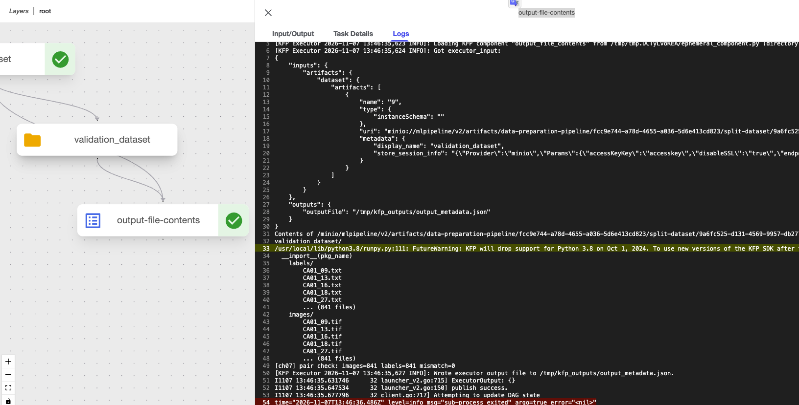
그림이 보여주는 것: 왼쪽 Graph 에 validation_dataset 폴더 노드에서 선이 output-file-contents(초록 체크)로 이어집니다. 오른쪽 패널은 output-file-contents 의 Logs 탭입니다. 로그 위쪽에는 Loading KFP component "output_file_contents" from /tmp/…/ephemeral_component.py, 그리고 Got executor_input JSON 이 있습니다. 입력은 dataset 하나(name "9", uri …/split-dataset/<SPLIT_UUID>/…), metadata.display_name 이 validation_dataset, store_session_info 는 {"Provider":"minio","Params":{"accessKeyKey":"accesskey","disableSSL":"true",… 입니다. 출력은 outputFile: /tmp/kfp_outputs/output_metadata.json 뿐입니다. 31~32번째 줄에 Contents of /minio/mlpipeline/…/validation_dataset: 와 validation_dataset/, 노란색으로 강조된 33번째 줄에 /usr/local/lib/python3.8/runpy.py:111: FutureWarning: KFP will drop support for Python 3.8 on Oct 1, 2024. To use new versions of the KFP SDK after that, you only need to update to Python 3.9+. 가 있습니다. 이어서 labels/(CA01_09.txt CA01_13.txt CA01_16.txt CA01_18.txt CA01_27.txt ... (841 files)), images/(CA01_09.tif … CA01_27.tif, ... (841 files)), 49번째 줄 [ch07] pair check: images=841 labels=841 mismatch=0, 이어 Wrote executor output file…, ExecutorOutput: {}, publish success. 입니다. 맨 아래 빨간 줄 level=info msg="sub-process exited" argo=true error="<nil>" 도 보입니다.
초보자 풀이
- 입력
display_name: validation_dataset이 "이 컴포넌트가 받은 것이 검증 분할"이라는 증거입니다. - 트리 앞 5개 이름이
CA01_09, 13, 16, 18, 27입니다. 이미지와 라벨이 같은 번호로 짝을 이룹니다(.tif↔.txt). ... (841 files)는 "이 폴더에는 파일이 841개 있다(위에는 5개만 표시)"는 뜻입니다.mismatch=0은 이미지 이름 집합과 라벨 이름 집합의 대칭차(한쪽에만 있는 이름의 수)가 0 이라는 뜻입니다. 사진은 있는데 정답지가 없거나 반대인 경우가 없다는 뜻입니다.- 노란
FutureWarning은 에러가 아니라 경고입니다. 이 컴포넌트는 기반 이미지를 따로 지정하지 않아 SDK 기본값python:3.8로 돌았고, 그 때문에 "KFP 가 Python 3.8 지원을 끝낸다"는 안내가 뜬 것입니다. 맨 아래 빨간 줄은 색만 빨강일 뿐 내용은level=info이며error="<nil>"(오류 없음)입니다. - 입력 정보의
accessKeyKey: "accesskey"는 Secret 키 이름 입니다. 비밀번호 값이 아닙니다.
여기서 확인할 것: ① display_name 이 validation_dataset ② ... (841 files) 가 labels·images 모두 ③ pair check … mismatch=0 ④ 노란 경고는 FutureWarning 이고 실패가 아님 ⑤ publish success. 가 이어져 있는 점.
가상 예시 대칭차 계산을 연습해 봅시다. images 이름이 {A, B, C}, labels 이름이 {A, B, D} 라면 대칭차 = {C, D} 이므로 mismatch=2 입니다. C 는 정답지가 없고 D 는 사진이 없는 경우입니다. 그리고 {A, B, C} 와 {A, B, C} 라면 mismatch=0 입니다. 실제 book-env 의 값(841, 841, 0)이 아니라 계산법을 보이는 가상 이름입니다.
관련 코드와 설명
output_file_contents 컴포넌트 전체 코드와 줄별 주석
@dsl.component
def output_file_contents(dataset: Input[Dataset]):
import os
def list_files(start_path):
for root, dirs, files in os.walk(start_path):
level = root.replace(start_path, "").count(os.sep)
indent = " " * 4 * level
print(f"{indent}{os.path.basename(root)}/")
for f in sorted(files)[:5]: # 파일이 많아서 디렉터리당 5개만 (원본은 전부 출력)
print(f"{indent} {f}")
if len(files) > 5:
print(f"{indent} ... ({len(files)} files)")
print(f"Contents of {dataset.path}:")
list_files(dataset.path)
imgs = {os.path.splitext(f)[0] for f in os.listdir(os.path.join(dataset.path, "images"))}
lbls = {os.path.splitext(f)[0] for f in os.listdir(os.path.join(dataset.path, "labels"))}
print(f"[ch07] pair check: images={len(imgs)} labels={len(lbls)} mismatch={len(imgs ^ lbls)}")
os.walk로 트리를 출력하되, 파일이 수천 개라서 디렉터리당 5개와 개수만 출력합니다.- 마지막 줄
pair check가 실제 검증입니다. images 와 labels 의 이름 집합을 대칭차(^)로 비교해mismatch=0을 확인합니다(validation 한 분할만 검사합니다). - 이 컴포넌트는
base_image가 없어 SDK 기본값python:3.8로 돕니다(위 Logs 화면의 Python 3.8 FutureWarning 이 그 증거입니다). - 보충 설명: 이 검사는 이름 집합이 같은지만 봅니다. 파일 안 내용(라벨 형식 등)이나 정확한 분할별 건수까지 실패 조건으로 두려면 별도 검사가 필요합니다. 또 같은 이름의
.tif/.txt가 있어도 두 확장자 외의 파일이 섞이면 stem 비교가 흐려질 수 있습니다.
🔍 확인 방법
| 확인 | 정상 (book-env 의 기록) | 어긋날 때 |
|---|---|---|
입력 display_name |
validation_dataset |
다른 분할이면 파이프라인 연결 확인 |
| 폴더 트리 | labels/, images/ 두 폴더, 각 ... (841 files) |
폴더가 없으면 분할 단계 출력 이름·복사 로직 확인 |
pair check |
images=841 labels=841 mismatch=0 |
mismatch ≠ 0 이면 짝이 어긋난 이름이 있음. split 로그의 only_img, only_lbl 확인 |
| S3 객체 수 | validation 1,682 = 841 × 2 | 맞지 않으면 업로드 누락 |
| 마지막 줄들 | Wrote executor output file…, publish success. |
이 줄이 없으면 컴포넌트가 중간에 끝났을 수 있음 |
⚠ 자주 나는 오류
| 증상 | 원인·조치 |
|---|---|
노란 FutureWarning: KFP will drop support for Python 3.8 |
실패 아님. 기본 이미지 python:3.8 때문. 다른 컴포넌트처럼 base_image="python:3.11" 을 쓰면 경고가 사라질 수 있음 (보충 설명) |
FileNotFoundError: …/images |
입력이 validation_dataset 이 아닌 상위 폴더 등으로 연결됨. 입력 display_name 과 uri 가 …/validation_dataset 인지 확인 |
| Logs 탭이 비어 있거나 로드 안 됨 | 파드가 정리되었거나 접속 포워딩 문제일 수 있음(보충 설명). 같은 Run 의 다른 노드 로그가 보이는지로 구분 |
| 맨 아래 빨간 줄이 에러처럼 보임 | 이 화면의 마지막 줄은 level=info … error="<nil>" 로 오류 없음. 글자색만 빨강 |
mismatch=0 만 보고 "전부 완벽" 으로 판단 |
이 검사는 validation 한 분할의 이름 짝만 봅니다. train·test 짝은 split 로그(paired=5609)와 S3 개수로 보조 확인 |
세 확인을 한 장으로 정리
flowchart TD
D1["확인 1 download 로그 extracted files 11218"] --> S1["확인 2 split 로그 paired 5609 only 0 0"]
S1 --> S2["확인 2 split 로그 4206 841 562"]
S2 --> O1["확인 3 pair check 841 841 mismatch 0"]
D1 --> K1["S3 총 22436 = 11218 x 2"]
S2 --> K2["S3 분할 11218 = 8412 + 1682 + 1124"]
O1 --> K3["S3 validation 1682 = 841 x 2"]| 지점 | 숫자 (book-env 의 기록) | 서로 맞는 이유 |
|---|---|---|
| 다운로드 파일 수 | 11,218 | 이미지 5,609 + 라벨 5,609 |
| 분할 쌍 수 | 4,206 + 841 + 562 = 5,609 | 쌍 수 = 이미지 수 |
| 분할 S3 객체 수 | 8,412 + 1,682 + 1,124 = 11,218 | 쌍 수 × 2 |
| validation 로그 | 841 / 841 / 0 | 분할 로그 val = 841 과 같음 |
이 네 줄이 서로 맞으면 "내려받기 → 분할 → 검증"이 같은 데이터를 일관되게 다뤘다고 볼 수 있습니다.
이 구간을 마친 뒤
- 요약표의 시간: 다운로드 파드 25분 + split 9분 + 검증 1분 ≈ 35분(book-env 의 기록, 파드 기동·업로드 포함 총 경과 시간). 이 시간을 여러분 환경의 보장값으로 읽지 마세요.
- 원격 kind 클러스터 book-env 에서는 SeaweedFS 3.85 저장소(서비스 이름은 minio-service)의 500 오류를 만난 뒤
volume.max를 올려 재실행한 이력이 있습니다. 재현하려는 경우 저장소 설정을 먼저 점검하세요. - 다음 이론 절에서는 이 파이프라인 코드의 구성(컴포넌트·버킷 생성·업로드·컴파일 YAML)을 설명합니다.
[실습] 7.3.1 마무리 점검표
| ✅ | 확인 |
|---|---|
| ☐ | run 이 SUCCEEDED, 워크플로 Succeeded |
| ☐ | 로그에 download size = downloaded (10279296832) |
| ☐ | extracted files=11218, paired=5609 only_img=0 only_lbl=0 |
| ☐ | verify_minio.py 출력의 분할 건수 4,206 / 841 / 562, mismatch=0, overlap … none |
| ☐ | validation 로그의 pair check: images=841 labels=841 mismatch=0 |
다음으로 이어지는 것: 이 실습의
train_dataset/validation_dataset/test_dataset아티팩트는 8장의 훈련 실습이 입력으로 사용합니다. 같은 run 의 산출물 경로를 기록해 두세요. 이 실습과 7.3.2(영화 추천 데이터 준비)는 서로 다른 파이프라인이며 저장소 경로도 다릅니다.
7.3.2 영화 추천 데이터 준비 — MovieLens 25M 소개
7.3.2 영화 추천 데이터 준비 — Data preparation: Movie recommender (컴포넌트 6개 + QA)
영화 추천기 앱도 따라야 할 단계는 대체로 앞의 객체 탐지 예제와 같습니다. 하지만 여기서는 몇 가지 새로운 것을 시도합니다.
- 더 큰 데이터셋 처리를 최적화하기 위해 파케이(Parquet) 파일로 테이블 형식 데이터를 저장하는 방법 (이유는 이 절 뒤쪽 '데이터 품질 평가' 소절에서 자세히 설명합니다).
- 큐브플로 노트북에서 파이프라인을 실행하는 방법.
- 파이프라인 실행 결과로 필요한 데이터가 생성되었는지 확인하는 간단한 QA 블록을 추가하는 방법.
🧒 초보자 설명 — 이 절에서 새로 배우는 세 가지
- 파케이(Parquet) 는 표(테이블) 데이터를 열(column) 단위로 묶어 저장하는 파일 형식입니다. CSV는 글자로 한 줄씩 적는 형식이라 사람이 읽기 쉽지만, 수천만 줄이 되면 느리고 큽니다. 7.3.2 의 파이프라인은 CSV 를 받아서 Parquet 로 바꾼 뒤 나눠 저장합니다.
- QA(품질 점검) 컴포넌트는 "원하는 파일이 제대로 만들어졌나"를 자동으로 확인하는 마지막 단계입니다. 사람이 눈으로 보지 않아도 파이프라인이 스스로
assert로 확인합니다. - 이 절은 데이터를 어떻게 준비하나 가 주제입니다. 추천 모델을 학습시키는 일은 다음 장의 몫입니다.
MovieLens 25M — 추천 예제에 사용된 데이터셋 (2019년 12월 출시) · Dataset used for recommender examples
영화 추천기 프로젝트에서는 널리 알려진 MovieLens 25M 데이터셋을 사용합니다. 이 데이터셋은 미네소타대학교 트윈 시티즈 캠퍼스 소속 연구소인 그룹렌즈(GroupLens) 에서 제공한 것으로, 추천 시스템과 온라인 상호작용 연구에 주력하고 있습니다. 이 데이터셋에는 162,000명의 사용자가 62,000편의 영화에 남긴 2,500만 건의 평점과 100만 건의 태그 적용이 포함되어 있습니다. 데이터셋을 사용하기 전에 반드시 MovieLens 웹사이트의 이용 약관 https://grouplens.org/datasets/movielens/ 을 읽고 준수하십시오.
사용 허가를 요청하시나요? MovieLens 데이터셋 사용 허가를 받으시려면 먼저 README 파일에 포함된 이용 약관을 읽어보시기 바랍니다. 그런 다음, 이 양식을 작성하여 사용 허가를 요청해 주세요. 일반적으로 공개 재배포는 허용하지 않습니다 (이용 가능 여부가 걱정되시면 Kaggle 에서 다른 다운로드 위치를 확인하세요). - README
⚠ 원문 정정: ① 위 Kaggle 링크(kaggle.com/grouplens)는 확인했을 때 HTTP 404 였습니다. 출처는 GroupLens 공식 사이트 grouplens.org/datasets/movielens/ 와 그 README 로 확인하십시오. ② 사용 조건을 "재배포·상업 이용 금지"로만 줄여 외우지 마십시오. 정확히는 연구 목적의 조건부 사용이며, 별도 허가 없는 재배포와 사전 허가 없는 상업·수익 목적 사용은 제한되고, 결과를 출판할 때는 인용이 필요합니다. 허가가 필요하면 위 양식(MovieLens Dataset Request)으로 요청합니다. ③ 책은 "2019년 12월 출시"라고 쓰는데, README 의 생성일은 2019-11-21 이고 GroupLens 사이트의 표기가 12/2019 입니다. 서로 다른 날짜 기준입니다.
데이터셋 구성 한눈에 보기
| 항목 | 책의 표현 | README 기준 정확한 수치 |
|---|---|---|
| 평점(rating) | 2,500만 건 | 25,000,095 건 |
| 태그(tag) 적용 | 100만 건 | 1,093,360 건 |
| 영화 | 62,000편 | 62,423 편 |
| 사용자 | 162,000명 | 162,541 명 |
| zip 파일 크기 | — | 약 262MB (원격 kind 클러스터 book-env 의 기록) |
| ratings.csv 크기 | — | 약 678MB (book-env 의 기록) |
ratings.csv 의 열 이름은 camelCase 입니다: userId, movieId, rating, timestamp (4열). 이 이름이 뒤쪽 코드 점검에서 중요해집니다.
추천 시스템 데이터 입문 — user · item · rating
추천 시스템이 가장 먼저 필요로 하는 재료는 거창하지 않습니다. "누가(user) 무엇을(item) 몇 점(rating) 줬는가" 라는 세 가지 값을 한 줄로 적은 기록입니다.
| userId | movieId | rating | timestamp |
|---|---|---|---|
| 1 | 296 | 5.0 | (시각을 초 단위 숫자로 적은 값) |
| 1 | 306 | 3.5 | … |
| 2 | 307 | 4.0 | … |
(위 표의 값은 형식을 보이기 위한 가상 예시입니다. 실제 파일의 값이 아닙니다.)
- 한 줄 = 사용자 한 명이 영화 한 편에 남긴 평점 하나. 그래서 줄 수가 곧 평점 수(25,000,095)입니다.
movies.csv는 영화 번호(movieId)에 대응하는 제목·장르 정보를 담은 작은 표입니다. 이 장에서는ratings.csv와movies.csv두 파일만 꺼내 씁니다.- 추천 모델은 이 기록에서 "나와 비슷하게 점수를 준 사람들이 좋아한 영화"를 찾아냅니다. 그 학습은 이후 장에서 다룹니다.
flowchart LR U["사용자 userId<br/>162541명"] -->|"평점 rating"| R["ratings 표<br/>25000095줄"] M["영화 movieId<br/>62423편"] -->|"평점 rating"| R R --> T["학습 데이터 train<br/>75 퍼센트"] R --> V["검증용 val<br/>15 퍼센트"] R --> E["평가용 test<br/>10 퍼센트"]
🔢 숫자로 보기
- 사용자 × 영화의 가능한 조합은 162,541 × 62,423 ≈ 101억 칸입니다. 이 중 실제 평점이 있는 칸은 25,000,095 개로 약 0.25% 뿐입니다 (계산). 사람은 영화를 대부분 보지 않았기 때문입니다. 추천 시스템이 어려운 이유가 이 "대부분 비어 있는 표"입니다.
- 이 숫자들은 객체 탐지 예제(사진 5,609쌍)보다 약 4,400배 큰 줄 수입니다 (25,000,095 ÷ 5,609 ≈ 4,457, 계산). 그래서 CSV 대신 Parquet 를 쓰는 이유가 생깁니다.
- 25,000,095줄 × 4열 × 8바이트 ≈ 0.8GB 가 순수 숫자 데이터의 크기입니다 (계산, 압축·표 형식 오버헤드 제외). 한 번에 메모리에 올리면 복사본까지 생겨 훨씬 커질 수 있습니다.
⚠ 흔한 오해
- "MovieLens 는 공개 데이터이니 내 서비스에 마음대로 넣어도 된다" → 아닙니다. 연구 목적 조건부 사용이고, 재배포·상업 이용은 별도 허가가 필요합니다. 학습용 실습에서는 약관을 확인한 뒤 내려받으십시오.
- "162,000명·62,000편은 정확한 값이다" → 책의 반올림입니다. 정확한 값은 162,541명·62,423편입니다.
- "평점은 정수 1~5점이다" → 이 데이터는 0.5점 단위(0.5~5.0)입니다.
- "추천 시스템 데이터는 사용자 정보가 풍부해야 한다" → 이 예제는 사용자 번호·영화 번호·평점·시각 네 가지만으로 시작합니다.
7.3.2 계획 — 6개 컴포넌트와 완성 파이프라인
계획 — The plan
제공되는 예제 코드에서는 큐브플로 노트북을 활용하여 파이프라인을 구축합니다. 이 반복적인 작업 과정이 대화형 환경에서 얼마나 단순해질 수 있는지, 그리고 파이프라인을 디버깅하고 빌드하여 클러스터에 푸시하기까지 얼마나 수월한지를 보여드리고자 합니다. 6개의 컴포넌트를 작성한 뒤, 이를 하나의 완성된 파이프라인으로 조립합니다. 실제 배포 환경에서는 데이터 전달에 따른 오버헤드를 줄이기 위해 이 컴포넌트들 중 상당수를 하나로 합치는 경우가 많습니다. 그러나 여기서는 큐브플로가 데이터 전달을 어떻게 처리하는지, 그리고 어떤 편의 기능을 제공하는지 주로 보여주기 위해 이 구조를 그대로 사용합니다. 다음과 같은 컴포넌트들을 구현합니다.
- 데이터셋 다운로드 컴포넌트
- 데이터 압축 해제 컴포넌트
- CSV → 파케이(Parquet) 변환 컴포넌트
- 데이터셋 분할 컴포넌트
- MinIO 업로드 컴포넌트
- 품질 보증(QA) 컴포넌트
완성된 파이프라인의 모습을 미리 살펴보면 그림 7.14와 같습니다.
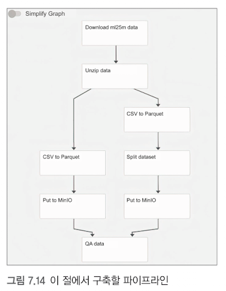
이미지 해설 (그림 7.14, 책 캡처). 위쪽의 Simplify Graph 토글 아래에 상자 8개가 화살표로 이어진 파이프라인 그래프입니다. 맨 위 Download ml25m data → Unzip data 다음에 길이 갈라집니다. 왼쪽 갈래는 CSV to Parquet → Put to MinIO, 오른쪽 갈래는 CSV to Parquet → Split dataset → Put to MinIO 입니다. 두 갈래의 끝이 모두 맨 아래 QA data 로 모입니다. 아래 캡션은 "그림 7.14 이 절에서 구축할 파이프라인"입니다.
- 초보자 풀이: 위에서 아래로 읽으면 "내려받기 → 압축 풀기 → (영화 표, 평점 표를 각각) Parquet 변환 → (평점 표만) 나누기 → 저장소에 올리기 → 점검"입니다. 화살표가 없는 상자끼리는 서로 기다리지 않고 동시에 실행될 수 있습니다.
- 여기서 확인할 것: 같은 이름의 상자(
CSV to Parquet,Put to MinIO)가 두 번씩 나옵니다. 컴포넌트를 두 번 재사용했다는 뜻이고, 왼쪽이 영화(movies), 오른쪽이 평점(ratings) 갈래입니다. 이 책의 캡처에는 아직 실행 표시(초록 체크)가 없습니다. 완료된 모습은 그림 7.15 입니다.
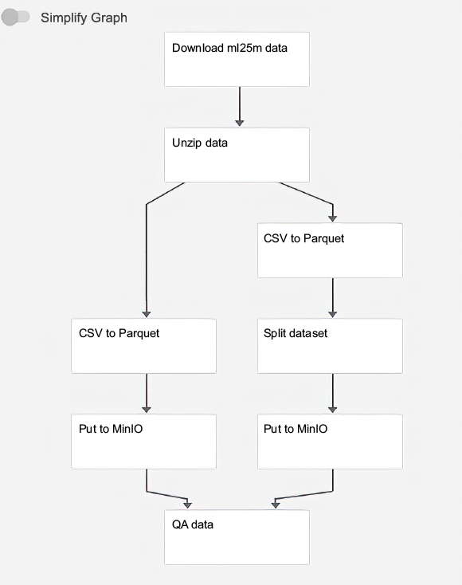
이미지 해설 (그림 7.14 확대본). 같은 그래프를 크게 다시 보여 주는 이미지입니다. 상자와 화살표의 배치는 위 그림과 같고, 글자가 더 잘 읽힙니다. 원문 노트에는 캡션 Figure 7.14 The pipeline we'll build out in this section 이 이 그림 바로 뒤에 붙어 있습니다.
- 초보자 풀이: 화살표가 데이터가 흐르는 방향이자 실행 순서입니다.
QA data로 들어오는 화살표가 두 개 있다는 점을 눈여겨보십시오. 두 업로드가 끝난 뒤에 점검한다는 뜻입니다. - 여기서 확인할 것: Listing 7.30 에서
.after(u1).after(u2)로 순서를 직접 지정한 부분이 이 그림의 마지막 두 화살표에 해당합니다.
flowchart TD A["Download ml25m data"] --> B["Unzip data"] B --> C1["CSV to Parquet - movies"] B --> C2["CSV to Parquet - ratings"] C1 --> U1["Put to MinIO - movies"] C2 --> S["Split dataset"] S --> U2["Put to MinIO - 분할 폴더"] U1 --> Q["QA data"] U2 --> Q
🧒 초보자 설명
- 컴포넌트 6종이 아니라 그래프에는 상자 8개가 나옵니다.
csv_to_parquet와put_to_minio를 두 번씩 쓰기 때문입니다 (6종 + 재사용 2회 = 8). - 책은 "실제로는 컴포넌트를 합치는 경우가 많다"고 말합니다. 컴포넌트마다 별도 파드가 뜨고, 컴포넌트 사이에 데이터를 저장소(MinIO)를 거쳐 주고받는 비용이 들기 때문입니다. 이 장은 데이터 전달 방식을 배우려고 일부러 잘게 나눈 구조입니다.
- 컴포넌트를 합치면 빨라지지만 단계별로 로그·재시도·캐시를 나눠 볼 수 없게 됩니다. 장단점의 균형입니다.
🔢 숫자로 보기
- 상자(태스크) 8개, 컴포넌트 종류 6개, 화살표로 갈라지는 지점 1곳(
Unzip data뒤), 합쳐지는 지점 1곳(QA data). - 원격 kind 클러스터 book-env 의 한 번 실행에서는 8개 태스크가 각각 363 / 24 / 52 / 32 / 96 / 21 / 20 / 27초가 걸렸습니다 (각 태스크의 파드 시작 시간 포함). 가장 오래 걸린 것은 외부 사이트에서 내려받는
download363초입니다.
⚠ 흔한 오해
- "컴포넌트 6개 = 상자 6개" → 재사용 때문에 상자는 8개입니다.
- "화살표가 없으면 아무 때나 실행된다" → 의존 관계가 없는 상자끼리는 동시에 실행될 수 있다는 뜻이며,
QA data처럼 앞 상자를 기다려야 하는 상자는 화살표(또는.after)로 순서가 정해집니다.
7.3.2 데이터셋 다운로드 (Listing 7.24)
데이터셋 다운로드 — Dataset download
앞서 살펴본 객체 탐지 예제와 마찬가지로, 첫 번째 단계는 MovieLens 웹사이트에서 데이터를 내려받는 것입니다. 이 컴포넌트는 초기 데이터셋 다운로드 컴포넌트와 완전히 동일합니다.
# Listing 7.24 Dataset download function with single output - 단일 출력을 사용하는 데이터셋 다운로드 함수
from kfp.dsl import Output
@dsl.component(
base_image="python:3.11",
target_image="mlsysfromscratch/data_preprocessor:1.0.0",
packages_to_install=["requests"])
def download_ml25m_data(output_path_one: Output[Artifact]):
import requests
url = 'https://files.grouplens.org/datasets/movielens/ml-25m.zip'
response = requests.get(url, stream=True, verify=False)
with open(output_path_one.path, 'wb') as file:
for chunk in response.iter_content(chunk_size=1024*1024):
if chunk:
file.write(chunk)
(코드는 책 그대로입니다.)
줄별 설명 펼치기
| 코드 | 하는 일 |
|---|---|
from kfp.dsl import Output |
출력 아티팩트를 표시하는 타입 Output 을 가져옵니다. |
@dsl.component( |
이 파이썬 함수를 KFP 컴포넌트(= 파이프라인의 한 단계, 나중에 별도 파드)로 만드는 데코레이터. |
base_image="python:3.11" |
컴포넌트가 돌아갈 컨테이너의 바탕 이미지. 파이썬 3.11 이 들어 있습니다. |
target_image="mlsysfromscratch/data_preprocessor:1.0.0" |
이 컴포넌트가 이 이름의 이미지로 실행되도록 지정합니다. 컴파일만으로는 이미지가 빌드·push 되지 않으므로, 이미지는 따로 빌드해 레지스트리에 올려 두어야 합니다. |
packages_to_install=["requests"] |
필요한 파이썬 패키지. 이미지를 빌드할 때 넣어 둘 수 있지만, SDK 2.9.0 에서는 target_image 가 있어도 컴파일된 실행 명령에 pip install 이 남습니다(아래 정정 박스 참고). |
def download_ml25m_data(output_path_one: Output[Artifact]): |
컴포넌트 함수. 출력 이름이 output_path_one — 다음 단계가 outputs['output_path_one'] 으로 받게 됩니다. |
import requests |
함수 안에서 import. 컴포넌트는 함수 본문만 따로 실행되기 때문입니다. |
url = 'https://files.grouplens.org/…/ml-25m.zip' |
GroupLens 공식 배포 주소의 zip 파일. |
requests.get(url, stream=True, verify=False) |
파일을 조각조각 흘려받는(stream) 요청. verify=False 는 인증서 검사를 끕니다(아래 정정 참고). |
with open(output_path_one.path, 'wb') as file: |
출력 아티팩트의 로컬 경로(.path)를 바이너리 쓰기로 엽니다. |
for chunk in response.iter_content(chunk_size=1024*1024): |
1MiB(= 1024×1024 바이트)씩 받습니다. |
if chunk: file.write(chunk) |
빈 조각이 아니면 파일에 씁니다. |
여기서 데이터는 그룹렌즈 웹 페이지에서 다운로드된 후 output_path 에 직접 기록됩니다. 이 경우 파이프라인의 output 속성은 zip 파일을 직접 가리키게 됩니다.
target_image — 컨테이너화된 파이썬 컴포넌트
이 컴포넌트에서 눈여겨볼 변경은 target_image 파라미터입니다. 현재 SDK 기준으로 정리하면 이렇습니다.
target_image는 컴포넌트를 실행할 대상 이미지의 이름을 지정합니다. 컴파일만으로는 이미지가 빌드·push 되지 않습니다. 이미지는kfp component build같은 명령으로 따로 빌드하고 레지스트리에 올린 뒤 파이프라인을 실행합니다.- 이미지에 의존 패키지와 모듈을 미리 넣어 두므로, 복잡한 의존성을 다루기 쉽고 시작도 빠릅니다. 이런 컴포넌트를 컨테이너화된 파이썬 컴포넌트(containerized Python components)라고 하며, 실행할 때 pip 로 설치하는 경량 파이썬 컴포넌트와 완전한 컨테이너 컴포넌트 사이에 있습니다.
- 이미지를 만들고 올리려면 도커 데몬, 활성 상태의 도커 API 소켓, 유닉스 계열 운영체제가 필요하고, 도커가 지정한 레지스트리에 push·pull 할 수 있어야 합니다.
책 원문의 설명 펼치기 (위 정리와 표현이 다른 부분이 있습니다)
이 함수에서 사용해 보이지만 컴포넌트의 동작 방식에 큰 영향을 미치는 변경사항이 있습니다. target_image 파라미터를 지정하면 이미지를 빌드하여 지정된 리포지터리에 푸시합니다. 그러면 이전 예제처럼 의존성을 먼저 설치하지 않고도 이 이미지를 사용해 컴포넌트를 직접 실행할 수 있습니다. 런타임에 pip install 로 항상 해결할 수 없는 복잡한 의존성을 다룰 때 매우 유용한 피처입니다. 또한 일반 컴포넌트보다 훨씬 빠르게 시작된다는 장점도 있습니다. 이러한 컴포넌트는 큐브플로 용어로 '컨테이너화된 파이썬 컴포넌트(containerized Python components)' 라고 합니다. 컨테이너화된 파이썬 컴포넌트는 런타임에 pip로 의존성을 설치하는 '경량 파이썬 컴포넌트'와 '완전한 컨테이너 컴포넌트' 사이에 위치합니다.
컨테이너화된 파이썬 컴포넌트는 모든 코드를 컴포넌트 함수 내부에 정의해야 한다는 제약도 완화해 줍니다. 즉 컴포넌트 내부에는 다른 모듈의 메서드, 심벌, 코드를 임포트할 수 있습니다.
큐브플로는 packages_to_install 을 지정할 경우 컨테이너화된 파이썬 컴포넌트 사용을 권장합니다. 의존 패키지가 실행 시점이 아니라 빌드 시점에 설치되기 때문입니다.
👉🏻 컨테이너화된 파이썬 컴포넌트가 올바르게 동작하려면 도커 데몬, 활성 상태의 도커 API 소켓, 그리고 유닉스(UNIX) 운영체제가 필요합니다. 큐브플로가 지정된 의존성과 베이스 이미지를 기반으로 이미지를 빌드하고 푸시하기 위해 도커 런타임에 연결하는 과정이 수반되므로, 도커 데몬은 지정된 리포지터리에 대해 이미지를 푸시하고 풀(pull) 할 수 있어야 합니다.
⚠ 원문 정정: (1) 위 Listing 7.24 는 실행하려면from kfp import dsl과from kfp.dsl import Output, Artifact가 필요한데 import 가 빠져 있습니다 (Artifact가 정의되지 않아 NameError). (2)verify=False는 HTTPS 인증서 검사를 꺼서 안전하지 않으므로 학습용 외에는 지우고raise_for_status()와timeout을 넣는 편이 좋습니다. (3) "의존 패키지가 빌드 시점에만 설치된다"는 설명은 KFP SDK 2.9.0 에서는 정확하지 않습니다.target_image가 있어도 컴파일된 실행 명령에는packages_to_install의pip install줄이 남고 KFP 자동 설치 줄만 빠집니다. 이미 설치되어 있다면 대부분 금방 끝나겠지만, 로그로 "즉시 끝났다"를 확인하지는 못했습니다. (4) 컴파일된 YAML 에는target_image컴포넌트의 함수 소스가 들어가지 않습니다 — 소스는 이미지 안에 있습니다. (5) 1MiB 단위(1024*1024)는 책 Listing 의 원래 1KiB 를 성능 때문에 키운 값으로, 오류 정정이 아니라 권고입니다. (6) 컴포넌트 하나가 "파드 하나 = 컨테이너 하나"는 아닙니다. 태스크는 별도 파드이지만 사용자 이미지 외에kfp-launcher,argoexec이미지도 함께 나옵니다.
고친 코드 — 미실행 예시
# 미실행 예시: import 를 보강하고 안전하게 다운로드하는 형태
from kfp import dsl
from kfp.dsl import Output, Artifact
@dsl.component(
base_image="python:3.11",
target_image="mlsysfromscratch/data_preprocessor:1.0.0",
packages_to_install=["requests"])
def download_ml25m_data(output_path_one: Output[Artifact]):
import requests
url = 'https://files.grouplens.org/datasets/movielens/ml-25m.zip'
response = requests.get(url, stream=True, timeout=60) # verify=False 제거
response.raise_for_status() # 404 등 오류를 즉시 알림
with open(output_path_one.path, 'wb') as file:
for chunk in response.iter_content(chunk_size=1024*1024):
if chunk:
file.write(chunk)
🔧 본인 환경에 맞게 교체:<TARGET_IMAGE>= 원격 kind 클러스터 book-env 의 예시값mlsysfromscratch/data_preprocessor:1.0.0. 이미지를 올릴 수 있는 본인의 레지스트리 주소와 태그로 바꿉니다. 확인:docker info로 도커 데몬이 켜져 있는지, 해당 레지스트리에 푸시 권한이 있는지 봅니다. 코드를 고친 뒤에는 태그를 올리십시오 (노드가 같은 태그의 이미지를 캐시할 수 있습니다).
🧒 초보자 설명
- 경량 컴포넌트: 파이썬 함수만 적으면 KFP가 알아서 컨테이너 실행 명령을 만들어 줍니다. 대신 실행할 때마다
pip install을 하느라 시작이 느립니다. - 컨테이너화된 파이썬 컴포넌트(
target_image): 패키지를 미리 구워 둔 이미지를 쓰므로 시작이 빠릅니다. 대신 이미지를 만들려면 도커가 필요합니다. - 완전한 컨테이너 컴포넌트: 이미지와 실행 명령을 직접 다 적는 방식. 가장 자유롭지만 가장 손이 많이 갑니다.
.path는 컴포넌트 안에서 쓰는 로컬 파일 경로입니다. 이 경로에 쓴 파일을 KFP 런처가 스토리지(MinIO)에 올려 주고, 다음 단계에서 다시 내려받아 줍니다.
flowchart LR L["경량 파이썬 컴포넌트<br/>실행 때 pip 설치"] --> C["컨테이너화된 파이썬 컴포넌트<br/>target_image 로 미리 빌드"] C --> F["완전한 컨테이너 컴포넌트<br/>이미지와 명령을 직접 작성"]
🔢 숫자로 보기
chunk_size=1024*1024= 1,048,576 바이트(1MiB). 262MB 파일이면 약 250번 이상 반복해서 씁니다 (계산). 1KiB 였다면 약 26만 번이라 반복·로그 부하가 훨씬 큽니다.- book-env 의 한 번 실행에서 이 태스크가 363초로 8개 중 가장 오래 걸렸습니다 (외부 네트워크 의존).
⚠ 흔한 오해
- "
target_image를 쓰면 pip 가 아예 실행되지 않는다" → SDK 2.9.0 에서는 명령에 남습니다 (위 정정). - "
target_image만 적으면 이미지가 저절로 올라간다" → 이미지를 빌드해서 푸시하는 단계(kfp component build등)와 도커 데몬이 필요합니다. - "
verify=False는 속도를 높이는 옵션이다" → 인증서 검사를 끄는 옵션일 뿐, 속도와 무관합니다.
7.3.2 데이터셋 압축 해제 (Listing 7.25)
데이터셋 압축 해제 — Dataset unzip
압축 해제 단계에서는 데이터셋에서 실제로 2개의 파일만 사용하므로(현재 기준), zip 파일에서 해당 파일만 추출하는 컴포넌트를 작성하겠습니다.
# Listing 7.25 Unzip function with multiple outputs - 다중 출력을 갖는 압축 해제 함수
@dsl.component(base_image="python:3.11",
target_image="mlsysfromscratch/data_preprocessor:1.0.0")
def unzip_data(input_path: Input[Artifact],
ratings_output_path: Output[Artifact],
movies_output_path: Output[Artifact]):
with zipfile.ZipFile(input_path.path, 'r') as z:
with open(ratings_output_path.path, 'wb') as f:
f.write(z.read('ml-25m/ratings.csv'))
with open(movies_output_path.path, 'wb') as f:
f.write(z.read('ml-25m/movies.csv'))
줄별 설명 펼치기
| 코드 | 하는 일 |
|---|---|
@dsl.component(base_image="python:3.11", target_image=…) |
앞 소절과 같은 target_image 를 씁니다. 한 이미지를 여러 컴포넌트가 공유합니다. |
def unzip_data(input_path: Input[Artifact], …) |
입력 1개: 다운로드된 zip 아티팩트. |
ratings_output_path: Output[Artifact] |
출력 1: 평점 CSV 를 쓸 아티팩트. |
movies_output_path: Output[Artifact] |
출력 2: 영화 CSV 를 쓸 아티팩트. 출력이 2개여서 이름으로 구별합니다. |
with zipfile.ZipFile(input_path.path, 'r') as z: |
입력 zip 을 읽기 모드로 엽니다. |
z.read('ml-25m/ratings.csv') |
zip 안의 해당 파일 하나만 읽어 옵니다(전체를 풀지 않음). |
open(ratings_output_path.path, 'wb') → f.write(...) |
출력 아티팩트 경로에 그대로 씁니다. 그래서 출력 경로가 곧 CSV 파일입니다. |
movies.csv 도 같은 방식 |
영화 표 파일 하나. |
여기서는 입력 파일이 하나(다운로드된 zip 파일 경로)이고 출력 파일은 2개입니다. 마찬가지로, 출력 Dataset 아티팩트에 직접 쓰기 때문에 출력이 추출된 CSV 파일 경로를 직접 가리킵니다. 이후 컴포넌트에서는 path 속성을 사용해 해당 파일을 참조할 수 있습니다.
ratings_output_path.path
⚠ 원문 정정: Listing 7.25 는zipfile을 쓰지만 import 가 없고Input,Output,Artifact,dslimport 도 빠져 있어 그대로는 NameError 가 납니다. 함수 안에import zipfile을 넣어야 합니다 (컴포넌트는 함수 본문만 따로 실행되기 때문). 또 원문 노트의mlsysfromscratch/…이미지명은 예시이므로 본인 레지스트리 주소로 바꿉니다.
고친 코드 — 미실행 예시
# 미실행 예시: import 를 보강한 압축 해제 컴포넌트
from kfp import dsl
from kfp.dsl import Input, Output, Artifact
@dsl.component(base_image="python:3.11",
target_image="mlsysfromscratch/data_preprocessor:1.0.0")
def unzip_data(input_path: Input[Artifact],
ratings_output_path: Output[Artifact],
movies_output_path: Output[Artifact]):
import zipfile # 함수 안에서 import
with zipfile.ZipFile(input_path.path, 'r') as z:
with open(ratings_output_path.path, 'wb') as f:
f.write(z.read('ml-25m/ratings.csv'))
with open(movies_output_path.path, 'wb') as f:
f.write(z.read('ml-25m/movies.csv'))
🧒 초보자 설명
- zip 은 "여러 파일을 하나로 묶고 압축한 상자"입니다. 이 데이터셋에는 평점·태그·영화 등 여러 파일이 들어 있지만 우리는 두 개만 필요합니다. 필요한 것만 꺼내면 시간과 디스크를 아낍니다.
- 출력이 둘이면 이름이 달라야 다음 단계가 "어느 쪽이 평점이고 어느 쪽이 영화인지" 구별합니다. 파이프라인에서는
unzip_folder.outputs['ratings_output_path']처럼 이름으로 꺼냅니다. - 입력 이름
input_path를 쓴 이유: 다음 소절에서 보듯, 이름은 파이프라인 연결 코드와 정확히 맞아야 합니다.
🔢 숫자로 보기
- 입력 1개 → 출력 2개. 풀려 나오는
ratings.csv는 약 678MB, 25,000,095행 (원격 kind 클러스터 book-env 의 기록). 내려받은 zip 이 약 262MB 이므로 압축 해제 후 파일이 더 큽니다. - book-env 의 한 번 실행에서 이 태스크는 24초였습니다.
⚠ 흔한 오해
- "압축 해제 = 디스크에 폴더가 풀린다" → 여기서는 폴더를 풀지 않고 필요한 두 파일의 바이트만 읽어 출력 경로에 씁니다.
- "출력 아티팩트 이름은 아무 이름이나 써도 된다" → 파이프라인 연결에서 같은 이름으로 참조하므로 철자가 정확히 같아야 합니다.
7.3.2 파케이 변환 (Listing 7.26)
파케이 변환 — Parquet conversion
이것은 영화 추천기에만 존재하는 첫 번째 컴포넌트입니다. 우리가 다루는 데이터가 테이블 형식이므로, 열 데이터에 최적화된 데이터 포맷을 사용하는 것이 합리적입니다. 파케이는 이 용도에 적합한 선택지로, 단순한 CSV 대비 여러 가지 장점을 지닙니다. 파일을 샤딩(sharding)하여 조회 성능을 높일 수 있고, 파일 크기가 작으며, 열 기반 저장 방식 덕분에 특정 상황에서 더 높은 성능을 발휘합니다.
이 컴포넌트에서는 판다스(pandas)와 fastparquet 라는 라이브러리를 사용해 CSV 파일을 파케이 형식으로 변환합니다. 파일에 대한 샤딩이나 별도의 최적화는 적용하지 않으며, 이 변환 작업은 어디까지나 시연 목적으로만 제공됩니다.
# Listing 7.26 Parquet conversion with single input and output - 단일 입력/출력을 사용한 파케이 변환
@dsl.component(
base_image="python:3.11",
target_image="mlsysfromscratch/data_preprocessor:1.0.0"
)
def unzip_data(
input_path: Input[Artifact],
ratings_output_path: Output[Artifact],
movies_output_path: Output[Artifact]):
import pandas as pd
df = pd.read_csv(inputFile.path, index_col=False)
df.to_parquet(output_path.path, compression='gzip')
⚠ 원문 정정: Listing 7.26 은 제목이 "파케이 변환"인데 함수 이름과 인자가 직전 Listing 7.25 의unzip_data(input_path, ratings_output_path, movies_output_path)를 그대로 복사해 온 것으로 보입니다. 본문 코드가 쓰는inputFile,output_path는 인자 목록에 없어 NameError 가 납니다. 이 소절의 설명과 파이프라인(Listing 7.30)이 부르는 이름에 맞추면 함수는csv_to_parquet(inputFile, output_path)입니다.
줄별 설명 펼치기
| 코드 | 하는 일 |
|---|---|
@dsl.component(base_image="python:3.11", target_image=…) |
앞 컴포넌트와 같은 이미지 지정. |
def unzip_data(…) |
(정정 대상) 이름·인자가 7.25 의 복사본. 실제 의도는 csv_to_parquet(inputFile, output_path). |
import pandas as pd |
함수 안에서 pandas 를 가져옵니다. |
pd.read_csv(inputFile.path, index_col=False) |
입력 CSV 를 표(DataFrame)로 읽습니다. index_col=False 는 "첫 열을 행 번호로 쓰지 말라"는 뜻. |
df.to_parquet(output_path.path, compression='gzip') |
표를 gzip 으로 압축한 Parquet 파일로 출력 경로에 씁니다. |
고친 코드 — 미실행 예시
# 미실행 예시: 이름과 인자를 바로잡은 CSV -> Parquet 변환
from kfp import dsl
from kfp.dsl import Input, Output, Artifact
@dsl.component(
base_image="python:3.11",
target_image="mlsysfromscratch/data_preprocessor:1.0.0",
packages_to_install=["pandas", "fastparquet"],
)
def csv_to_parquet(inputFile: Input[Artifact], output_path: Output[Artifact]):
import pandas as pd
df = pd.read_csv(inputFile.path, index_col=False)
# engine 을 명시하고 index=False 로 불필요한 인덱스 열을 막는 것을 권장
df.to_parquet(output_path.path, engine="fastparquet",
compression="gzip", index=False)
앞서 살펴본 컴포넌트들과 마찬가지로, 이 컴포넌트도 inputFile 의 path 속성이 직접 가리키는 파일을 읽어 들이고, output_path 의 동일한 속성에 결과를 씁니다. 또한 여기서는 동일한 컴포넌트를 재사용해 영화 CSV 파일과 평점 CSV 파일을 병렬로 변환합니다.
🔧 본인 환경에 맞게 교체:<TARGET_IMAGE>= 원격 kind 클러스터 book-env 의 예시값mlsysfromscratch/data_preprocessor:1.0.0, 본인 레지스트리 주소·태그. 확인:docker images. 엔진 선택은 설치된 라이브러리에 좌우됩니다: pyarrow 와 fastparquet 가 모두 있는 이미지에서engine을 생략하면(auto) pyarrow 가 먼저 쓰입니다. 그 결과 인덱스 열 모양(index열 위치 또는__index_level_0__)이 달라질 수 있으므로index=False와engine을 명시하면 결과가 안정적입니다. 압축 수준(compression_level)은 pyarrow 엔진의 옵션이며 fastparquet 에는 같은 인수가 없습니다.
Parquet 입문 — 열 기반 저장이란
CSV(행 기반 텍스트): 한 줄에 한 사람의 평점이 통째로 적혀 있습니다. userId,movieId,rating,timestamp 가 계속 이어집니다. 평점 평균만 구하고 싶어도 파일을 처음부터 끝까지 읽으면서 userId, movieId, timestamp 까지 같이 읽어야 합니다.
Parquet(열 기반 이진): 같은 열의 값들을 모아서 저장합니다. 즉 userId 25,000,095개, movieId 25,000,095개, rating 25,000,095개… 처럼 열별 덩어리(column chunk)로 나뉘어 있습니다. 평점만 필요하면 rating 덩어리만 읽습니다. 같은 종류의 값(예: 0.5~5.0 사이 숫자)이 모여 있어 압축도 잘 됩니다.
| 비교 | CSV | Parquet |
|---|---|---|
| 저장 단위 | 행(줄) 단위 텍스트 | 열 단위 이진 덩어리 |
| 사람이 읽기 | 메모장으로 열 수 있음 | 전용 도구/라이브러리 필요 |
| 특정 열만 읽기 | 어렵다 (줄 전체를 읽음) | 쉽다 (그 열 덩어리만) |
| 압축 | 별도 압축 필요 | 열별 압축이 기본 지원 |
| 자료형 | 모두 글자 | 자료형(정수, 실수 등)을 파일 안에 기록 |
| 책에서의 쓰임 | 입력(ratings.csv, movies.csv) |
출력(*.parquet.gzip) |
flowchart LR
subgraph ROW["CSV 행 기반"]
R1["1줄: userId movieId rating timestamp"]
R2["2줄: userId movieId rating timestamp"]
end
subgraph COL["Parquet 열 기반"]
C1["userId 열 덩어리"]
C2["movieId 열 덩어리"]
C3["rating 열 덩어리"]
C4["timestamp 열 덩어리"]
end
ROW -->|"CSV to Parquet 컴포넌트"| COL🎛 행 기반 vs 열 기반 — 평점만 읽을 때 읽는 양
가상 예시 4열짜리 표에서 몇 개의 열을 읽어야 하는지에 따라, 행 기반(CSV)과 열 기반(Parquet)이 읽는 양이 어떻게 달라지는지 보여 주는 단순화한 계산입니다. 실제 파일의 바이트 수나 속도가 아니라 "열 4개의 크기가 모두 같다"고 가정한 모형입니다.
열 1개만 필요할 때, 행 기반은 줄 전체(4열)를 읽어야 하므로 100퍼센트, 열 기반은 필요한 열만 읽어 25퍼센트입니다. 읽는 양 비율은 약 4.0배 차이(가상 모형).
🧒 초보자 설명
- 샤딩(sharding) 은 큰 파일을 여러 조각으로 나누어 저장하는 것입니다. 책은 이번 예제에서 샤딩을 하지 않는다고 밝힙니다. 다만 다음 소절의 분할(train/val/test)은 "파일 3개로 나누기"이며 샤딩과는 목적이 다릅니다.
- gzip 은 파일 압축 방식의 하나입니다. 파일 이름이
*.parquet.gzip인 것은 "gzip 으로 압축한 Parquet"이라는 표시입니다. - fastparquet / pyarrow: Parquet 파일을 읽고 쓰는 파이썬 라이브러리(엔진) 두 가지입니다. pandas 가 둘 중 하나를 골라서 일을 시킵니다.
- 같은 컴포넌트를
movies.csv용과ratings.csv용으로 두 번 불러 병렬로 실행합니다. 코드를 한 번만 쓰고 입력만 바꿔 재사용하는 것이 컴포넌트의 장점입니다.
🔢 숫자로 보기
- book-env 의 기록:
ratings.csv약 678MB(25,000,095행) → 분할된 Parquet 3개 합계 약 369MB(train 277MB + val 55MB + test 37MB, 저장소 화면 기록). 678 → 369 는 약 54% (계산) 입니다. 다만 두 값은 완전히 같은 데이터가 아닙니다. 678MB 는ratings.csv하나이고, 369MB 는 분할·gzip 압축을 거친 Parquet 3개의 합입니다(movies 파일은 포함되지 않음). 그래서 "Parquet 로 바꾸면 정확히 이만큼 줄어든다"가 아니라 "이 실행에서는 대략 이 정도 크기가 되었다"는 참고 수치로 읽으세요. 압축 방식·열 구성에 따라 달라지므로 다른 데이터에도 같은 비율이 나온다는 보장은 없습니다. - 변환 시간(book-env 의 기록): ratings 25,000,095행 변환 52초, movies 62,423행 변환 32초. 행이 400배 가까이 적은데도 시간이 비슷한 것은 파드 시작 등 고정 시간이 포함되기 때문입니다.
- 원문 노트에는 ratings Parquet 파일에 index 열이 포함되어 5개 열로 보인다는 관측도 있습니다(원래 4열 + 인덱스 열 1).
index=False로 막을 수 있습니다.
⚠ 흔한 오해
- "Parquet 는 CSV 보다 항상 작고 빠르다" → 열 선택, 압축, 데이터 모양에 따라 다릅니다. 이 소절은 특정 상황에서 유리하다고만 말합니다.
- "Parquet 파일을 메모장으로 열어 확인할 수 있다" → 이진 파일입니다. (파일 맨 앞이
PAR1이라는 표식이 보이면 Parquet 입니다.) - "열 기반이면 모든 작업이 빠르다" → 한 줄 전체를 자주 읽는 작업은 행 기반이 나을 수 있습니다.
(참고) InputPath 또는 OutputPath 사용 시 파일 이름
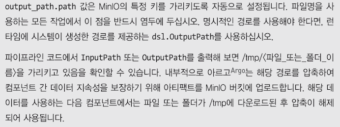
이미지 해설. 책 지면을 찍은 글 캡처입니다 (그래프나 화면이 아님). 두 문단으로 이루어져 있습니다. 첫 문단: output_path.path 값은 MinIO 의 특정 키를 가리키도록 자동으로 설정되므로, 파일명을 사용하는 모든 작업에서 이 점을 염두에 두라는 것, 명시적 경로가 필요하면 런타임에 시스템이 만든 경로를 주는 dsl.OutputPath 를 쓰라는 것입니다. 둘째 문단: 파이프라인 코드에서 InputPath 나 OutputPath 를 출력해 보면 /tmp/<파일_또는_폴더_이름> 을 가리키며, 내부적으로 아르고(Argo)가 이 경로를 압축하여 컴포넌트 간 데이터 지속성을 보장하기 위해 아티팩트를 MinIO 버킷에 업로드하고, 다음 컴포넌트에서는 파일 또는 폴더가 /tmp 에 다운로드된 후 압축이 해제되어 사용된다는 설명입니다.
- 초보자 풀이: "내가 쓰는 파일 이름은 내가 정하는 것이 아니라 KFP 가 정해 준다"는 뜻입니다. 그래서 다음 소절들에서 파일 이름을 바꿔야 할 때 별도 파라미터(
upload_file_name)가 필요해집니다. - 여기서 확인할 것:
⚠ 원문 정정: 이 캡처가 설명하는
/tmp경로와 압축 전달은 KFP v1 방식입니다. 이 책의 실습 환경(KFP 2.x)의 실행 로그에서는 경로가/minio/<버킷>/<키>꼴로 나타납니다. 이는 이 S3 구성에서의 로컬 경로 예시이며 모든 저장소 공통은 아닙니다. 핵심 원리(경로는 KFP 가 정하고, 컴포넌트가 끝나면 스토리지로 올라가며 다음 컴포넌트가 내려받는다)는 같습니다. 또.path는 컴포넌트 안의 로컬 경로,.uri는 저장소 주소입니다.
7.3.2 데이터 분할 (Listing 7.27)
데이터 분할 — Data split
데이터셋 분할은 객체 탐지 예제의 분할과 동일한 패턴을 따릅니다. 실질적인 차이는 이 예제가 입력으로 파케이 파일을 사용하고 출력 경로로 폴더를 사용한다는 점이며, 해당 폴더는 3개의 파케이 파일로 구성됩니다. 이는 OutputPath 를 활용하는 또 다른 방식으로, KFP SDK가 제공하는 유연성을 잘 보여줍니다.
# Listing 7.27 Data split component with single input/output folder - 단일 입출력 폴더를 사용하는 데이터 분할 컴포넌트
@dsl.component(
base_image="python:3.11",
target_image="mlsysfromscratch/data_preprocessor:1.0.0",
packages_to_install=[
"scikit-learn",
"pandas",
"fastparquet"
]
)
def split_dataset(
input_parquet: Input[Artifact],
dataset_path: Output[Artifact],
random_state: int = 42
):
train_ratio = 0.75
validation_ratio = 0.15
test_ratio = 0.10
ratings_df = pd.read_parquet(input_parquet.path)
train, test = train_test_split(
ratings_df,
test_size=1 - train_ratio,
random_state=random_state)
n_users = ratings_df.user_id.max()
n_items = ratings_df.item_id.max()
val, test = train_test_split(
test,
test_size=test_ratio / (test_ratio + validation_ratio),
random_state=random_state)
os.mkdir(dataset_path.path)
train.to_parquet(
os.path.join(dataset_path.path, "train.parquet.gzip"),
compression="gzip"
)
test.to_parquet(
os.path.join(dataset_path.path, "test.parquet.gzip"),
compression="gzip"
)
val.to_parquet(
os.path.join(dataset_path.path, "val.parquet.gzip"),
compression="gzip"
)
(들여쓰기 어긋남은 책 그대로입니다.)
줄별 설명 펼치기
| 코드 | 하는 일 |
|---|---|
packages_to_install=["scikit-learn", "pandas", "fastparquet"] |
분할 도구(scikit-learn), 표(pandas), Parquet 엔진(fastparquet). |
input_parquet: Input[Artifact] |
입력: 평점 Parquet 파일 1개. |
dataset_path: Output[Artifact] |
출력: 폴더 1개. 이 안에 파일 3개를 만듭니다. 파이프라인에서는 split_op.output 으로 참조됩니다. |
random_state: int = 42 |
무작위 섞기의 씨앗. 고정하면 매번 같은 분할이 나옵니다(재현성). |
train_ratio = 0.75, validation_ratio = 0.15, test_ratio = 0.10 |
목표 비율 75 : 15 : 10. |
ratings_df = pd.read_parquet(input_parquet.path) |
Parquet 를 통째로 메모리에 읽습니다(25,000,095행). |
train, test = train_test_split(ratings_df, test_size=1 - train_ratio, …) |
1단계: 전체의 75% 를 train, 나머지 25% 를 임시 test 로 나눔. |
n_users = ratings_df.user_id.max() / n_items = …item_id.max() |
사용자·아이템 수를 구하려던 줄(정정 참고: 열 이름이 달라 오류, 이후 사용 안 함). |
val, test = train_test_split(test, test_size=test_ratio / (test_ratio + validation_ratio), …) |
2단계: 남은 25% 를 0.10 / (0.10 + 0.15) = 0.4 비율로 나눠 test 40% (전체의 10%), val 60% (전체의 15%). |
os.mkdir(dataset_path.path) |
출력 폴더를 만듭니다. |
train.to_parquet(os.path.join(dataset_path.path, "train.parquet.gzip"), compression="gzip") |
폴더 안에 train.parquet.gzip 저장. |
test.to_parquet(…"test.parquet.gzip"…), val.to_parquet(…"val.parquet.gzip"…) |
같은 방식으로 test, val 저장. |
⚠ 원문 정정: ① 함수 안에서 쓰는pd,train_test_split,os의 import 가 없고dsl,Input,Output,Artifactimport 도 빠져 있습니다. ②n_users = ratings_df.user_id.max()와n_items = ratings_df.item_id.max()는 실제 열 이름이userId,movieId이므로 AttributeError 가 나고, 두 변수는 이후 쓰이지 않으므로 삭제합니다. ③os.mkdir(...)다음 줄부터train.to_parquet의 들여쓰기가 한 단계 더 들어가 IndentationError 가 납니다. ④ 파이프라인에서는 이 컴포넌트의 출력을split_op.output으로 부르므로 출력 하나가 폴더(3파일)라는 점을 기억하십시오 — 존재하지 않는outputs["x_val_output"]같은 키는 없습니다. ⑤ 책 설명은 train 비율이 "전체의 약 75%"이고, 다음 장에서 쓸 이름은train.parquet.gzip/val.parquet.gzip/test.parquet.gzip입니다.
고친 코드 — 미실행 예시
# 미실행 예시: import 보강, user_id/item_id 줄 삭제, 들여쓰기 정리
from kfp import dsl
from kfp.dsl import Input, Output, Artifact
@dsl.component(
base_image="python:3.11",
target_image="mlsysfromscratch/data_preprocessor:1.0.0",
packages_to_install=["scikit-learn", "pandas", "fastparquet"],
)
def split_dataset(input_parquet: Input[Artifact],
dataset_path: Output[Artifact],
random_state: int = 42):
import os
import pandas as pd
from sklearn.model_selection import train_test_split
train_ratio = 0.75
validation_ratio = 0.15
test_ratio = 0.10
ratings_df = pd.read_parquet(input_parquet.path)
train, test = train_test_split(
ratings_df, test_size=1 - train_ratio, random_state=random_state)
val, test = train_test_split(
test, test_size=test_ratio / (test_ratio + validation_ratio),
random_state=random_state)
os.makedirs(dataset_path.path, exist_ok=True)
for name, part in (("train", train), ("val", val), ("test", test)):
part.to_parquet(os.path.join(dataset_path.path, f"{name}.parquet.gzip"),
compression="gzip", index=False)
🧒 초보자 설명
- train / validation / test 세 묶음: 학습(train)은 모델이 공부하는 문제집, 검증(validation)은 공부 중간에 푸는 모의고사, 평가(test)는 마지막에 한 번 보는 진짜 시험입니다. 세 묶음이 겹치면 안 됩니다.
- 비율 75 : 15 : 10 을 만들려고 두 번 나눕니다. 처음에 25% 를 떼어 놓고, 그 25% 를 다시 6 : 4 로 나눕니다 (25% × 0.6 = 15%, 25% × 0.4 = 10%).
random_state=42는 "섞는 규칙을 고정"하는 값입니다. 같은 값이면 다시 실행해도 똑같이 나뉘어 결과를 비교할 수 있습니다. 42 라는 숫자 자체에 의미는 없습니다.- 입력이 파일 하나인데 출력은 폴더 하나(파일 3개) 입니다. 출력 아티팩트가 파일이 아니라 폴더가 될 수도 있다는 것이 이 소절의 핵심입니다.
flowchart TD A["ratings Parquet<br/>25000095행"] -->|"1단계 25퍼센트 분리"| B["train 75퍼센트"] A -->|"1단계 나머지"| C["임시 25퍼센트"] C -->|"2단계 60퍼센트"| D["val 15퍼센트"] C -->|"2단계 40퍼센트"| E["test 10퍼센트"]
🔢 숫자로 보기
계산 과정 (scikit-learn 은 비율에 올림을 적용하므로 아래처럼 계산하면 원격 kind 클러스터 book-env 의 출력과 같습니다):
- 전체 25,000,095행 × 0.25 = 6,250,023.75 → 올림 6,250,024 행이 임시 test, 나머지 25,000,095 − 6,250,024 = 18,750,071 행이 train.
- 6,250,024 × 0.4 = 2,500,009.6 → 올림 2,500,010 행이 test, 나머지 6,250,024 − 2,500,010 = 3,750,014 행이 val.
| 묶음 | 행 수 | 비율 | 저장 파일 크기 |
|---|---|---|---|
| train | 18,750,071 | 75.0% | 277MB |
| val | 3,750,014 | 15.0% | 55MB |
| test | 2,500,010 | 10.0% | 37MB |
| 합계 | 25,000,095 | 100% | 약 369MB |
(행 수는 book-env 의 실행 결과, 파일 크기는 저장소 화면 기록입니다. 크기비 277 : 55 : 37 ≈ 75.1 : 14.9 : 10.0 으로 행 수 비율과 일치합니다 — 계산.)
보충 설명: 이 분할은 시간을 보지 않고 무작위로 나눕니다. 추천 모델에서는 "과거 평점으로 학습하고 미래 평점으로 평가"하는 시간(timestamp) 기준 분할을 대안으로 쓰기도 합니다. 이 책의 본문에는 없는 실무 코멘트입니다.
⚠ 흔한 오해
- "경로만 넘기니 메모리가 문제없다" → 아닙니다. 이 컴포넌트는
pd.read_parquet로 전체를 메모리에 올립니다. 파일 경로를 넘기는 방식과 내용을 메모리에 올리는 일은 별개이며, 파드 메모리가 작으면 OOM(메모리 부족 종료)이 날 수 있습니다. - "test_size=0.25 는 정확히 25% 다" → 올림 처리로 몇 행 차이가 납니다 (위 계산).
- "val 과 test 가 같은 비율이다" → 15% 대 10% 입니다. 2단계의
0.4에 주의하십시오.
7.3.2 데이터 업로드 (Listing 7.28)
데이터 업로드 — Data upload
이 단계는 객체 탐지 예제와 동일합니다. 다만, 컴포넌트가 파일과 폴더를 모두 업로드할 수 있도록 업로드 코드를 약간 수정합니다.
# Listing 7.28 Data upload function for input path or file - 입력 경로 또는 파일을 위한 데이터 업로드 함수
@dsl.component(
base_image="python:3.11",
target_image="mlsysfromscratch/data_preprocessor:1.0.0",
packages_to_install=["boto3"]
)
def put_to_minio(
inputFile: Input[Artifact],
upload_file_name: str = '',
bucket: str = 'datasets'
):
import boto3
minio_client = boto3.client(
's3',
endpoint_url='http://minio-service.kubeflow:9000',
aws_access_key_id='<ACCESS_KEY>',
aws_secret_access_key='<SECRET_KEY>')
try:
minio_client.create_bucket(Bucket=bucket)
except Exception as e:
pass
if os.path.isdir(inputFile.path):
for file in os.listdir(inputFile.path):
s3_path = os.path.join('ml-25m', file)
minio_client.upload_file(
os.path.join(inputFile.path, file), bucket, s3_path)
else:
if upload_file_name == '':
_, file = os.path.split(inputFile.path)
else:
file = upload_file_name
s3_path = os.path.join('ml-25m', file)
minio_client.upload_file(inputFile.path, bucket, s3_path)
(원문 코드의 접속 계정 값은 비밀값 보호를 위해 <ACCESS_KEY>, <SECRET_KEY> 로 바꿔 적었습니다.)
🔧 본인 환경에 맞게 교체:<ACCESS_KEY>,<SECRET_KEY>= 본인 저장소(MinIO/SeaweedFS)의 접속 계정. 코드에 직접 적지 말고 쿠버네티스 Secret 에서 환경변수로 주입하십시오. 확인 명령은 값을 출력하지 말고 설정 여부만 봅니다:kubectl -n kubeflow get secret(Secret 이름이 있는지만).endpoint_url= 원격 kind 클러스터 book-env 의 예시값http://minio-service.kubeflow:9000(클러스터 안 서비스 주소, 환경마다 다름).bucket= book-env 의 예시값datasets.
줄별 설명 펼치기
| 코드 | 하는 일 |
|---|---|
packages_to_install=["boto3"] |
AWS S3 호환 저장소를 다루는 파이썬 라이브러리. |
inputFile: Input[Artifact] |
업로드할 입력. 파일일 수도 폴더일 수도 있습니다. |
upload_file_name: str = '' |
저장소에 저장할 파일 이름을 직접 지정하는 파라미터(비워 두면 원래 이름 사용). |
bucket: str = 'datasets' |
저장할 버킷(최상위 폴더 역할) 이름. |
boto3.client('s3', endpoint_url=…, aws_access_key_id=…, aws_secret_access_key=…) |
S3 호환 저장소(MinIO)에 접속하는 클라이언트. |
try: create_bucket(Bucket=bucket) except Exception: pass |
버킷이 없으면 만들고, 이미 있으면 오류를 무시. |
if os.path.isdir(inputFile.path): |
입력이 폴더인지 검사. |
for file in os.listdir(inputFile.path): … upload_file(…, bucket, 'ml-25m/' + file) |
폴더 안 파일을 모두 ml-25m/ 아래로 올림. 분할 폴더(train/val/test) 용. |
else: 분기 |
파일 하나. upload_file_name 이 비어 있으면 원래 이름, 있으면 그 이름. |
s3_path = os.path.join('ml-25m', file) → upload_file(inputFile.path, bucket, s3_path) |
ml-25m/<파일 이름> 키로 업로드. |
리스트 7.28은 파케이 변환 단계에서 언급했던 미묘한 차이점을 잘 보여줍니다. 즉 OutputPath의 이름을 우리가 직접 지정하는 것이 아니라 큐브플로가 자동으로 부여한다는 점입니다. 그렇기 때문에 파일 이름을 /tmp/data 에서 원하는 이름으로 변경하기 위한 추가 입력 파라미터 upload_file_name 이 필요합니다. 이 컴포넌트는 훈련/테스트/검증 분할 폴더와 영화 파케이 파일을 업로드하는 두 가지 용도로 재사용됩니다.
⚠ 원문 정정: ① 코드에서os를 쓰지만 import 가 없습니다(import os추가). ② 접속 계정을 코드에 직접 적는 방식은 학습용 예시일 뿐이며 환경변수/Secret 으로 읽는 것을 권장합니다. ③except Exception: pass는 권한·연결 오류까지 모두 숨기므로, 필요한 예외(이미 존재하는 버킷)만 처리하는 편이 안전합니다. ④ 본문의 "/tmp/data" 는 v1 식 경로 설명이며 KFP v2 에서는 launcher 가 정한 경로가 쓰입니다(앞의 InputPath/OutputPath 해설 참고). 원리 — 이름은 KFP 가 부여하므로 `upload_file_name` 같은 파라미터가 필요하다 — 는 그대로입니다.
고친 코드 — 미실행 예시
# 미실행 예시: import os 추가, 계정은 환경변수에서 읽기, 필요한 예외만 처리
from kfp import dsl
from kfp.dsl import Input, Artifact
@dsl.component(
base_image="python:3.11",
target_image="mlsysfromscratch/data_preprocessor:1.0.0",
packages_to_install=["boto3"],
)
def put_to_minio(inputFile: Input[Artifact],
upload_file_name: str = '',
bucket: str = 'datasets'):
import os
import boto3
from botocore.exceptions import ClientError
minio_client = boto3.client(
's3',
endpoint_url=os.environ['S3_ENDPOINT'], # 예: http://minio-service.kubeflow:9000
aws_access_key_id=os.environ['S3_ACCESS_KEY'], # Secret 에서 주입
aws_secret_access_key=os.environ['S3_SECRET_KEY'])
try:
minio_client.create_bucket(Bucket=bucket)
except ClientError as e:
if e.response['Error']['Code'] not in ('BucketAlreadyOwnedByYou', 'BucketAlreadyExists'):
raise
if os.path.isdir(inputFile.path):
for file in os.listdir(inputFile.path):
minio_client.upload_file(os.path.join(inputFile.path, file),
bucket, os.path.join('ml-25m', file))
else:
file = upload_file_name or os.path.basename(inputFile.path)
minio_client.upload_file(inputFile.path, bucket, os.path.join('ml-25m', file))
🧒 초보자 설명
- MinIO 는 파일을 "버킷/키" 이름으로 저장하는 오브젝트 스토리지입니다 (S3 호환). 폴더처럼 보이지만 실제로는
ml-25m/train.parquet.gzip같은 긴 이름표가 붙은 파일들입니다. - 같은 컴포넌트를 두 용도로 재사용합니다. ① 분할 폴더 → 폴더 안 파일 3개를 모두 올림 ② 영화 Parquet → 파일 1개를
upload_file_name='movies.parquet.gzip'이라는 이름으로 올림. 그래서os.path.isdir로 폴더인지 파일인지 먼저 확인합니다. - 책의 '두 가지 용도 재사용'은 파이프라인에서
u1(영화 파일),u2(분할 폴더) 두 호출로 나타납니다.
🔢 숫자로 보기
- 업로드 후 SeaweedFS 3.85 저장소(서비스 이름은 minio-service)의 경로:
datasets/ml-25m/아래에movies.parquet.gzip+train.parquet.gzip+val.parquet.gzip+test.parquet.gzip= 파일 4개. 책의 QA 설명이 "예상되는 4개의 파일"이라고 말하는 것이 이 4개입니다(다만 QA 코드는 이 중 train 파일만 열어 봅니다). - book-env 의 한 번 실행에서 두 업로드 태스크는 각각 21초(u1, movies), 20초(u2, 분할 폴더)였습니다.
- book-env 에서는 같은 경로
datasets/ml-25m/를 두 번째 실행(B)이 덮어썼다는 기록이 있습니다. 여러 번 실행할 때는 run 별 경로를 쓰거나 어느 결과를 쓸지 정해 두십시오.
⚠ 흔한 오해
- "파일 이름은 코드에서 마음대로 정한 대로 저장된다" → 아닙니다. 아티팩트 경로의 이름은 KFP 가 정하므로 저장소에 올릴 이름은 따로 지정해야 합니다.
- "버킷은 미리 만들어 둬야 한다" → 이 코드는 없으면 만드는 시도를 합니다. 다만 모든 오류를 무시하는 방식은 위험합니다.
- "계정 값을 코드에 적어도 컴포넌트 안이라 안전하다" → 코드를 공유하거나 이미지에 담으면 함께 노출될 수 있습니다. 환경변수/Secret 으로 주입하십시오.
7.3.2 데이터 품질 평가 (Listing 7.29)
데이터 품질 평가 — Data quality assessment
마지막 컴포넌트는 출력 결과에 대해 기초적인 품질 평가(quality assessment, QA)를 수행합니다. 예상되는 4개의 파일이 존재하는지 확인하고, 훈련 데이터셋의 크기가 전체 데이터셋의 약 75%인지도 검사합니다. (책의 설명입니다. 아래 코드는 네 파일을 모두 확인하지는 않고, train 파일 하나를 열어 열 수와 최소 행 수를 검사합니다.) 프로덕션 데이터 준비 파이프라인에는 검증을 더 추가할 수 있고, 실제로 그렇게 해야 합니다. 앞 장에서 말했듯이 모든 가정을 미리 검증해 두는 것이 중요합니다.
QA 컴포넌트는 데이터를 읽는 방식에서도 눈여겨볼 만합니다. 여기서 데이터 접근은 또 하나의 고성능 데이터 처리 프레임워크인 파이애로(PyArrow)로 합니다. 이후의 장에서는 파이애로를 사용해 데이터를 다운로드하지 않고 훈련 프로세스로 직접 스트리밍할 것입니다. 그러나 여기서는 파이애로를 사용해 파케이 파일을 열고 판다스 데이터 프레임으로 변환한 뒤 검증합니다. 이 부분은 데모 목적이기도 하므로, 프로덕션에서는 파케이 파일을 읽고 처리하는 데 하나의 프레임워크만 사용하는 편이 나을 것입니다. 다운스트림 컴포넌트가 문제를 잡아내도록 설계할 수도 있지만, 나중에 디버깅하는 것보다 생성 단계 초기에 문제를 발견해 바로 고치는 편이 낫습니다.
# Listing 7.29 PyArrow reads files directly from MinIO for data QA
# 파이애로(PyArrow)로 MinIO에서 파일을 직접 읽어 데이터 QA를 수행하는 코드
@dsl.component(
base_image="python:3.11",
target_image="mlsysfromscratch/data_preprocessor:1.0.0",
packages_to_install=["pyarrow"]
)
def qa_data(bucket:str = 'datasets', dataset:str = 'ml-25m'):
from pyarrow import fs, parquet
print("Running QA")
minio = fs.S3FileSystem(
endpoint_override='http://minio-service.kubeflow:9000',
access_key='<ACCESS_KEY>',
secret_key='<SECRET_KEY>',
scheme='http')
train_parquet = minio.open_input_file(
f'{bucket}/{dataset}/train.parquet.gzip')
df = parquet.read_table(train_parquet).to_pandas()
assert df.shape[1] == 4
assert df.shape[0] >= 0.75 * 25 * 1e6
print('QA passed!')
(접속 계정 값은 <ACCESS_KEY>, <SECRET_KEY> 자리표시자로 바꿔 적었습니다.)
줄별 설명 펼치기
| 코드 | 하는 일 |
|---|---|
packages_to_install=["pyarrow"] |
Parquet 를 읽는 PyArrow 라이브러리. |
def qa_data(bucket:str = 'datasets', dataset:str = 'ml-25m') |
출력 아티팩트 없이 파라미터만 받는 컴포넌트. 어디를 점검할지(버킷, 데이터셋 폴더)만 정합니다. |
from pyarrow import fs, parquet |
fs: 파일시스템(S3 포함) 접근, parquet: Parquet 읽기. |
print("Running QA") |
로그에 점검 시작을 찍습니다. |
fs.S3FileSystem(endpoint_override=…, access_key=…, secret_key=…, scheme='http') |
S3 호환 저장소(MinIO)를 PyArrow 파일시스템으로 엽니다. 이 컴포넌트는 입력 아티팩트가 아니라 저장소에서 직접 읽습니다. |
minio.open_input_file(f'{bucket}/{dataset}/train.parquet.gzip') |
datasets/ml-25m/train.parquet.gzip 을 읽기용으로 엽니다. |
parquet.read_table(train_parquet).to_pandas() |
Parquet 를 읽어 pandas 표로 변환. .to_pandas() 는 pandas 설치를 전제로 합니다(아래 정정). |
assert df.shape[1] == 4 |
열이 4개인지 확인 (userId, movieId, rating, timestamp). |
assert df.shape[0] >= 0.75 * 25 * 1e6 |
행이 18,750,000 이상인지 확인(train 이 전체의 약 75%). |
print('QA passed!') |
통과 메시지. assert 에 하나라도 걸리면 여기 도달하지 않고 컴포넌트가 실패합니다. |
이미지 해설. 책 지면의 경고 박스 캡처입니다 (실행 화면이 아님). 내용: "여기서 다루는 예시는 다소 단순하지만, 가장 흔히 발생하는 두 가지 데이터 오류 유형인 크기 불일치와 파일 누락을 방어하는 데 도움이 됩니다. 생성 파이프라인에서는 크기, 스키마, 내용 등에 관한 모든 가정을 반드시 검증하십시오."
- 초보자 풀이: 코드의 두
assert가 각각 스키마(열 수) 와 크기(행 수) 를 확인하고, train 파일을 열 수 있는지 자체가 그 파일의 누락을 확인합니다. movies·val·test 파일이 있는지는 이 코드가 확인하지 않습니다. 이 짧은 컴포넌트는 박스의 경고를 작은 규모로 보여 줍니다. - 여기서 확인할 것: "크기·스키마·내용" 세 가지 중 이 예제가 직접 다루는 것은 크기와 스키마(열 수)뿐이고, 내용(값의 범위 등) 은 확인하지 않습니다.
⚠ 원문 정정: ①.to_pandas()는 pandas 가 필요한데 책 Listing 의packages_to_install=["pyarrow"]에는 pandas 가 없습니다. pyarrow 만 설치된 깨끗한 환경에서는 ModuleNotFoundError 가 납니다 (원문 노트의 실습 코드는["pyarrow", "pandas"]로 이미 고쳐 있습니다).target_image이미지에 pandas 가 이미 들어 있으면 문제가 없을 수도 있으므로 "항상 실패"로 일반화하지는 마십시오. ②@dsl.component의dslimport 가 빠져 있고, 접속 계정은 코드에 적지 않는 것이 좋습니다. ③assert두 줄은python -O로 실행하면 무시됩니다. 파이프라인 검증에는 명시적if … raise가 더 안전합니다. ④ "0.75 * 25 * 1e6" 는 하드코딩된 숫자입니다. 실제로 확인되는 기준은 행 ≥ 18,750,000이며 실제 train 은 18,750,071 행입니다.
고친 코드 — 미실행 예시
# 미실행 예시: pandas 추가, 계정은 환경변수, assert 대신 명시적 검사
from kfp import dsl
@dsl.component(
base_image="python:3.11",
target_image="mlsysfromscratch/data_preprocessor:1.0.0",
packages_to_install=["pyarrow", "pandas"],
)
def qa_data(bucket: str = 'datasets', dataset: str = 'ml-25m'):
import os
from pyarrow import fs, parquet
print("Running QA")
minio = fs.S3FileSystem(
endpoint_override=os.environ['S3_ENDPOINT_HOSTPORT'], # 예: minio-service.kubeflow:9000
access_key=os.environ['S3_ACCESS_KEY'],
secret_key=os.environ['S3_SECRET_KEY'],
scheme='http')
train_parquet = minio.open_input_file(f'{bucket}/{dataset}/train.parquet.gzip')
df = parquet.read_table(train_parquet).to_pandas()
if df.shape[1] != 4:
raise ValueError(f"열 수가 4가 아님: {df.shape[1]}")
if df.shape[0] < 0.75 * 25_000_000:
raise ValueError(f"train 행 수가 너무 적음: {df.shape[0]}")
print('QA passed!')
🔧 본인 환경에 맞게 교체:<ACCESS_KEY>/<SECRET_KEY>= 본인 저장소 접속 계정(Secret 으로 주입, 값 출력 금지). 엔드포인트 = 원격 kind 클러스터 book-env 의 예시값minio-service.kubeflow:9000(클러스터 서비스 주소). 버킷datasets, 데이터셋 폴더ml-25m은 book-env 의 예시값이며 업로드 컴포넌트와 반드시 같아야 합니다.
🧒 초보자 설명
- QA(Quality Assurance, 품질 점검): 데이터 준비가 끝난 뒤 "정말 제대로 만들어졌나"를 자동으로 확인하는 단계입니다. 사람이 매번 열어 보지 않아도 되고, 틀리면 파이프라인이 빨간불로 알려 줍니다.
assert 조건은 "이 조건이 거짓이면 즉시 멈춰라"는 뜻입니다. 두 조건 중 하나만 어긋나도 컴포넌트가 실패하고, 실패한 데이터를 다음 단계(학습)가 쓰는 일을 막습니다.- PyArrow 는 Parquet 를 빠르게 읽는 라이브러리입니다. 변환 단계의 pandas+fastparquet 와는 다른 도구인데, 책은 "데모 목적이며 프로덕션에서는 하나의 프레임워크로 통일하는 편이 낫다"고 말합니다.
- 이후 장에서는 데이터를 통째로 내려받지 않고 학습 프로세스로 스트리밍하는 데 PyArrow 를 씁니다.
🔢 숫자로 보기
- 기준 두 개: 열 4개, train 행 ≥ 18,750,000 (= 25,000,000 × 0.75). 실제 train 은 18,750,071 행(book-env 의 기록)이라 기준보다 71행 많은 값으로 통과합니다. (계산: 18,750,071 − 18,750,000 = 71)
- 기준 계산에 쓰인
25 * 1e6은 2,500만으로, 실제 전체 행 수 25,000,095 와 95 행 차이가 있습니다. 기준은 대략의 하한이므로 문제는 아닙니다. - book-env 의 한 번 실행에서 QA 태스크는 27초였습니다. 대부분은 파드 시작과 18,750,071행 읽기 시간입니다.
- (옵션 실습) book-env 에서 QA 에 리포트와 지표를 덧붙였을 때 검사 2개 PASS, train 평점 평균 3.534, 사용자 162,541명, 영화 55,834편(train 기준이라 전체 영화 62,423편보다 적음)이 기록되었습니다.
⚠ 흔한 오해
- "QA 통과 = 데이터가 완벽하다" → 이 QA 는 열 수와 행 수만 봅니다. 값이 이상하거나(예: 평점 범위 밖) 학습/테스트 간 누수가 있는지는 확인하지 못합니다.
- "assert 에 걸리면 이전 단계 결과가 지워진다" → 지워지지 않습니다. QA 만 실패로 표시되고 앞 단계 산출물은 저장소에 남습니다.
- "QA 컴포넌트가 입력 아티팩트를 받는다" → 이 컴포넌트는 입력 아티팩트가 없고, 저장소에서 직접 읽습니다. 그래서 파이프라인에서
.after(...)로 순서를 직접 정해 줘야 합니다 (다음 소절).
7.3.2 컴포넌트로 구성하는 전체 파이프라인 (Listing 7.30)
컴포넌트로 구성하는 전체 파이프라인 — Full pipeline from components
앞서와 같은 방식으로 개별 컴포넌트를 컴파일합니다. 방법은 리스트 7.30 에 나와 있습니다.
# Listing 7.30 Combining individual components into a pipeline
import kfp
import kfp.dsl as dsl
from data_components import (
download_ml25m_data,
unzip_data,
csv_to_parquet,
split_dataset,
put_to_minio,
qa_data
)
@dsl.pipeline(
name='Data prep pipeline',
description=(
"A pipeline that retrieves data from movielens and ingests it into "
"parquet files on minio"
)
def dataprep_pipeline(minio_bucket:str='datasets', random_init:int=42):
download_dataset = download_ml25m_data()
unzip_folder = unzip_data(
input_path=download_dataset.outputs['output_path_one']
)
ratings_parquet_op = csv_to_parquet(
inputFile=unzip_folder.outputs['ratings_output_path']
)
movies_parquet_op = csv_to_parquet(
inputFile=unzip_folder.outputs['movies_output_path']
)
split_op = split_dataset(
input_parquet=ratings_parquet_op.output,
random_state=random_init
)
u1 = put_to_minio(
inputFile=movies_parquet_op.output,
upload_file_name='movies.parquet.gzip',
bucket=minio_bucket
) u2 = put_to_minio(inputFile=split_op.output, bucket=minio_bucket)
qa_op = qa_data(
bucket=minio_bucket).after(u1).after(u2) # 두 컴포넌트가 완료된 후 다른 컴포넌트의 실행 순서를 수동으로 지정하는 부분
download_dataset.set_caching_options(False)
unzip_folder.set_caching_options(False)
ratings_parquet_op.set_caching_options(False)
movies_parquet_op.set_caching_options(False)
split_op.set_caching_options(False)
u1.set_caching_options(False)
u2.set_caching_options(False)
qa_op.set_caching_options(False)
if __name__ == "__main__":
kfp.compiler.Compiler().compile(
pipeline_func=dataprep_pipeline,
package_path='compiled_pipelines/dataPrep_pipeline.yaml')
(들여쓰기·줄 붙음·괄호 상태는 책에 인쇄된 그대로입니다.)
줄별 설명 펼치기
| 코드 | 하는 일 |
|---|---|
import kfp / import kfp.dsl as dsl |
KFP SDK 와 파이프라인 정의용 모듈. |
from data_components import (…6개…) |
앞 소절들의 컴포넌트 6개를 모아 둔 모듈 data_components 에서 가져옵니다. |
@dsl.pipeline(name='Data prep pipeline', description=(…)) |
파이프라인 선언. 이름은 UI 에 표시, 설명은 두 문자열을 이어 붙입니다. |
def dataprep_pipeline(minio_bucket:str='datasets', random_init:int=42): |
파이프라인 파라미터 2개: 업로드할 버킷, 분할 시드. |
download_dataset = download_ml25m_data() |
1단계: 다운로드. 입력 없음. |
unzip_folder = unzip_data(input_path=download_dataset.outputs['output_path_one']) |
2단계: 다운로드의 출력 output_path_one 을 입력으로 받음 → 순서가 자동 결정. |
ratings_parquet_op = csv_to_parquet(inputFile=unzip_folder.outputs['ratings_output_path']) |
평점 CSV → Parquet. |
movies_parquet_op = csv_to_parquet(inputFile=unzip_folder.outputs['movies_output_path']) |
같은 컴포넌트로 영화 CSV → Parquet. 두 호출은 서로 기다리지 않아 병렬로 갈 수 있습니다. |
split_op = split_dataset(input_parquet=ratings_parquet_op.output, random_state=random_init) |
평점 Parquet 를 75/15/10 으로 분할. .output 은 출력이 하나인 태스크의 출력 참조. |
u1 = put_to_minio(inputFile=movies_parquet_op.output, upload_file_name='movies.parquet.gzip', bucket=minio_bucket) |
영화 Parquet 를 movies.parquet.gzip 이름으로 업로드. |
u2 = put_to_minio(inputFile=split_op.output, bucket=minio_bucket) |
분할 폴더(파일 3개)를 업로드. |
qa_op = qa_data(bucket=minio_bucket).after(u1).after(u2) |
QA 는 입력 아티팩트가 없어 자동 순서가 안 생기므로 .after 로 u1, u2 가 끝난 뒤 실행하도록 직접 지정(원문 주석 그대로). |
….set_caching_options(False) 8줄 |
8개 태스크 모두 KFP 태스크 캐시를 끕니다. 매번 새로 실행됩니다. |
if __name__ == "__main__": kfp.compiler.Compiler().compile(pipeline_func=…, package_path='compiled_pipelines/dataPrep_pipeline.yaml') |
파일을 직접 실행하면 파이프라인을 YAML 로 컴파일합니다. |
⚠ 원문 정정: ① 데코레이터 괄호:@dsl.pipeline(의 여는 괄호가 닫히지 않은 채def로 넘어갑니다 (description=( … )안쪽 괄호만 닫혀 있습니다). 문법 오류('(' was never closed)가 납니다. ② 들여쓰기:split_op = split_dataset(줄이 3칸 들여쓰기라 4칸 본문과 어긋납니다. ③ 줄 붙음:) u2 = put_to_minio(…)처럼 두 문장이 한 줄에 붙어 있습니다. ④ 6개 컴포넌트 import 줄이 인쇄 때문에 줄바꿈된 부분은 한 줄/괄호로 정리하면 됩니다. ⑤ 앞 소절의 컴포넌트 정정(csv_to_parquet이름 등)과 맞아야 이 파이프라인이 컴파일됩니다.
오류가 아닌 것:.after(u1).after(u2)체인은 KFP 에서 유효한 의존 설정입니다. 책의 기본 QA 는 train 만 읽으므로.after(u2)하나로도 충분하고, 원문 노트의 옵션 QA 는movies.parquet.gzip의 행 수도 읽으므로 두 업로드를 모두 기다려야 합니다 (.after(u1, u2)로도 쓸 수 있음). 컴파일된 YAML 에서는 두 업로드 모두 QA 의 선행 태스크로 기록되는지 실제 파일로 확인하십시오.
고친 코드 — 미실행 예시
# 미실행 예시: 괄호·들여쓰기·줄바꿈을 정리한 데이터 준비 파이프라인
import kfp
import kfp.dsl as dsl
from data_components import (
download_ml25m_data, unzip_data, csv_to_parquet,
split_dataset, put_to_minio, qa_data,
)
@dsl.pipeline(
name='Data prep pipeline',
description=(
"A pipeline that retrieves data from movielens and ingests it into "
"parquet files on minio"
),
)
def dataprep_pipeline(minio_bucket: str = 'datasets', random_init: int = 42):
download_dataset = download_ml25m_data()
unzip_folder = unzip_data(
input_path=download_dataset.outputs['output_path_one'])
ratings_parquet_op = csv_to_parquet(
inputFile=unzip_folder.outputs['ratings_output_path'])
movies_parquet_op = csv_to_parquet(
inputFile=unzip_folder.outputs['movies_output_path'])
split_op = split_dataset(
input_parquet=ratings_parquet_op.output,
random_state=random_init)
u1 = put_to_minio(
inputFile=movies_parquet_op.output,
upload_file_name='movies.parquet.gzip',
bucket=minio_bucket)
u2 = put_to_minio(inputFile=split_op.output, bucket=minio_bucket)
qa_op = qa_data(bucket=minio_bucket).after(u1, u2) # 두 업로드가 끝난 뒤 실행
for task in (download_dataset, unzip_folder, ratings_parquet_op,
movies_parquet_op, split_op, u1, u2, qa_op):
task.set_caching_options(False)
if __name__ == "__main__":
kfp.compiler.Compiler().compile(
pipeline_func=dataprep_pipeline,
package_path='compiled_pipelines/dataPrep_pipeline.yaml')
🔧 본인 환경에 맞게 교체:minio_bucket기본값 = 원격 kind 클러스터 book-env 의 예시값datasets(업로드·QA 컴포넌트와 같아야 함).package_path의 폴더compiled_pipelines/는 미리 만들어 두거나 본인 작업 디렉터리에 맞게 바꿉니다.data_components= 6개 컴포넌트를 한 파일에 모은 모듈 이름(book-env 의 예시값; 파일 이름data_components.py).
🧒 초보자 설명
- 파이프라인 함수는 설계도입니다. 함수 안의 줄들이 위에서 아래로 실제 실행되는 것이 아니라, 컴파일할 때 "어떤 컴포넌트가 어디서 입력을 받는지"가 그래프(YAML)로 기록됩니다.
X.outputs['이름']은 "X 태스크의 그 이름 출력"이고, 출력이 하나뿐이면X.output으로 줄여 씁니다. 이 참조가 곧 의존 관계입니다: 참조하는 쪽이 참조되는 쪽이 끝난 뒤에 시작합니다.- QA 컴포넌트는 입력 아티팩트가 없어 자동 의존이 생기지 않으므로
.after(...)로 순서를 직접 정합니다. set_caching_options(False)는 KFP 가 "같은 입력이면 지난 결과를 재사용"하는 기능을 끕니다. 이 실습은 매번 다운로드부터 새로 하려고 끈 것입니다 (원격 kind 클러스터 실습의 설정). 도커 이미지 캐시와는 다른 개념입니다.
flowchart TD D["download_ml25m_data"] -->|"output_path_one"| Z["unzip_data"] Z -->|"ratings_output_path"| P1["csv_to_parquet ratings"] Z -->|"movies_output_path"| P2["csv_to_parquet movies"] P1 -->|"output"| S["split_dataset"] S -->|"output 폴더"| U2["put_to_minio u2"] P2 -->|"output"| U1["put_to_minio u1"] U1 -.->|"after"| Q["qa_data"] U2 -.->|"after"| Q
SDK 로 파이프라인 업로드하기
객체 탐지 예제에서는 웹 UI를 통해 파이프라인을 업로드하고 실행했습니다. 여기서는 방식을 조금 바꿔 큐브플로 SDK로 파이프라인을 업로드하고 실행해 보겠습니다. 파이프라인을 업로드하려면 kfp의 클라이언트 객체를 사용합니다.
client = kfp.Client()
이 방식의 편리한 점은, 노트북이 큐브플로 클러스터 위에서 실행되고 있으므로 자격 증명을 별도로 설정하거나 클라이언트 생성자에 엔드포인트를 지정하지 않아도 된다는 것입니다. 이 모든 과정은 노트북 시작 시 인젝션된 환경 변수를 통해 자동으로 처리됩니다. 클러스터 외부에서 실행하는 경우에는 먼저 큐브플로 인스턴스의 API 엔드포인트로 클라이언트를 설정해야 한다는 점을 기억해 두세요!
파이프라인을 업로드하려면 다음을 사용합니다.
pipeline = client.pipeline_uploads.upload_pipeline(
'dataPrep_pipeline.yaml',
name='ml-25m-processing'
)
⚠ 원문 정정:client.pipeline_uploads.upload_pipeline(…)는 KFP v1 클라이언트의 방식이며, 이 책의 실습 SDK(kfp==2.9.0)의Client에는pipeline_uploads속성이 없습니다. v2 에서는client.upload_pipeline(pipeline_package_path=…, pipeline_name=…)을 씁니다. 업로드할 파일 경로도 앞 컴파일 결과(compiled_pipelines/dataPrep_pipeline.yaml)와 같아야 합니다.
고친 코드 — 미실행 예시
# 미실행 예시: KFP 2.x 클라이언트로 업로드
import kfp
client = kfp.Client() # 클러스터 안 노트북이면 엔드포인트·자격 증명이 환경변수로 주입됨
# 클러스터 밖이라면: kfp.Client(host="<KFP_API_ENDPOINT>")
pipeline = client.upload_pipeline(
pipeline_package_path='compiled_pipelines/dataPrep_pipeline.yaml',
pipeline_name='ml-25m-processing',
)
🔧 본인 환경에 맞게 교체:<KFP_API_ENDPOINT>= book-env 의 예시값http://localhost:8080(포트포워딩 주소, 환경마다 다름). 확인:kubectl -n kubeflow get svc에서 KFP UI/API 서비스 이름을 찾아 포트포워딩. 다중 사용자 구성이면 인증 정보가 추가로 필요합니다.
파이프라인을 업로드했으니 웹 UI를 확인해 보십시오. 새로 추가된 파이프라인이 표시될 것입니다!
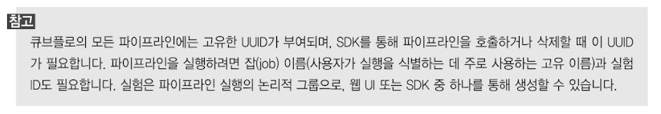
이미지 해설. 책 지면의 참고 박스 캡처입니다 (UI 화면이 아닙니다). 내용: "큐브플로의 모든 파이프라인에는 고유한 UUID가 부여되며, SDK를 통해 파이프라인을 호출하거나 삭제할 때 이 UUID가 필요합니다. 파이프라인을 실행하려면 잡(job) 이름(사용자가 실행을 식별하는 데 주로 사용하는 고유 이름)과 실험 ID도 필요합니다. 실험은 파이프라인 실행의 논리적 그룹으로, 웹 UI 또는 SDK 중 하나를 통해 생성할 수 있습니다."
- 초보자 풀이: 파이프라인(설계도) 하나에는 번호(UUID)가 붙고, 그것을 실행(run) 하려면 "이 실행의 이름"과 "어느 실험 폴더에 넣을지"(실험 ID)가 필요하다는 안내입니다. 실험은 같은 목적의 실행을 모아 보는 폴더입니다.
- 여기서 확인할 것: 업로드 결과
pipeline객체에서 UUID 를 확인할 수 있고, UI 의 Pipelines 목록에서 이름ml-25m-processing을 찾을 수 있습니다. UUID 는 비밀번호가 아니지만 환경마다 달라지는 값입니다.
🔢 숫자로 보기
- 파이프라인 파라미터 2개(
minio_bucket,random_init), 태스크 8개, 캐시 끄는 줄 8개, 컴파일 산출물 YAML 1개. - book-env 의 한 번 실행에서 파이프라인 전체는 약 11분(경량 컴포넌트 방식 A 기준)이었고, 가장 긴 경로는 다운로드(363초) → 압축 해제(24초) → 평점 변환(52초) → 분할(96초) → 업로드(20초) → QA(27초)입니다. 합 582초 + 파드 시작 오버헤드 (계산).
⚠ 흔한 오해
- "파이프라인 함수의
print는 실행 때 로그에 나온다" → 파이프라인 함수는 컴파일 때 한 번만 읽힙니다. 로그는 각 컴포넌트 안의 print 가 남깁니다. - "
.after(u1).after(u2)는 문법 오류다" → 유효한 문법입니다 (위 정정). - "SDK 업로드 = 실행" → 업로드는 설계도를 서버에 등록하는 것이고, 실행(run)은 별도 단계입니다.
7.3.2 파이프라인 실행
파이프라인 실행 — Running the pipeline
파이프라인 실행을 시작하려면 큐브플로 SDK를 사용할 수 있습니다. 다만 다중 사용자 환경으로 구성되어 있다면, 역할 기반 접근 제어(RBAC) 요건을 충족하기 위해 서비스 계정 자격 증명을 추가해야 합니다. 지금은 익숙한 UI에서 실행을 시작하고 최종 파이프라인을 살펴보겠습니다(그림 7.15).
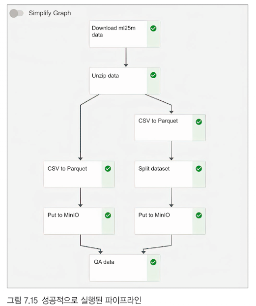
이미지 해설 (그림 7.15, 책 캡처). 그림 7.14 와 같은 모양의 그래프인데, 모든 상자의 오른쪽 위에 초록색 체크 표시가 붙어 있습니다. 아래 캡션은 "그림 7.15 성공적으로 실행된 파이프라인". 상자는 Download ml25m data → Unzip data → (왼쪽 CSV to Parquet → Put to MinIO, 오른쪽 CSV to Parquet → Split dataset → Put to MinIO) → QA data 8개이며 8개 모두 체크입니다.
- 초보자 풀이: 초록 체크 = 해당 태스크가 성공으로 끝났다는 표시. 8개 모두 체크이므로 다운로드부터 QA(
QA passed!)까지 한 번에 통과했다는 뜻입니다. 하나라도 빨간 표시였다면 그 상자부터 로그를 열어 원인을 찾습니다. - 여기서 확인할 것: 그림 7.14(실행 전)와 비교해 모양은 같고 체크만 늘었다는 점 — 파이프라인 구조는 실행해도 변하지 않고 상태만 붙습니다. 이 그림은 책의 캡처이며 원격 kind 클러스터 book-env 의 실행 화면은 아닙니다.
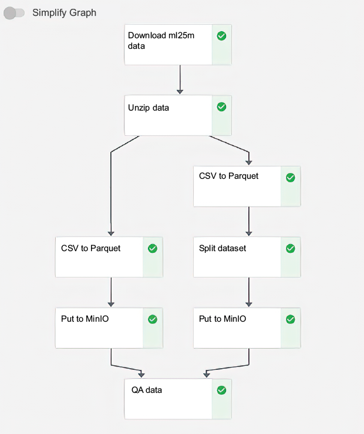
이미지 해설 (그림 7.15 확대본). 같은 성공 화면의 확대본입니다. 여덟 상자와 화살표, 각 상자 오른쪽의 초록 체크가 더 크게 보입니다. 원문 노트에는 이 그림 바로 뒤에 캡션 Figure 7.15 The successfully run pipeline 이 붙어 있습니다.
- 초보자 풀이: 위 그림과 같은 내용입니다. 확대본에서는 상자 안 글자(
Download ml25m data,Unzip data,CSV to Parquet,Split dataset,Put to MinIO,QA data)를 또렷이 읽을 수 있습니다. - 여기서 확인할 것: 두
Put to MinIO와QA data에 이르는 마지막 화살표 두 개 — 책 코드(.after(u1).after(u2))에서는 QA 가 두 업로드를 모두 기다린 뒤 실행되도록 그려져 있습니다. (book-env 의 기본 QA 는.after(u2)하나만 지정한 구성이었고, 그래프 모양은 책과 다를 수 있습니다.)
sequenceDiagram participant N as 노트북 또는 UI participant K as KFP 서버 participant P as 컴포넌트 파드들 participant S as MinIO 저장소 N->>K: 컴파일한 YAML 업로드 N->>K: 실행 시작 Run K->>P: 태스크 8개를 의존 순서대로 실행 P->>S: 출력 아티팩트 업로드 S-->>P: 다음 태스크에 입력으로 내려줌 P-->>K: 각 태스크 성공 체크 K-->>N: 그림 7.15 처럼 모두 초록 체크
🧒 초보자 설명
- 실행은 두 가지 방법이 있습니다: ① 웹 UI 에서 파이프라인을 골라
Create run② SDK 로 코드에서create_run_from_pipeline_package등을 호출. 책은 익숙한 UI 쪽을 택합니다. - RBAC(역할 기반 접근 제어) 는 "누가 어느 네임스페이스에서 무엇을 할 수 있는지"를 역할로 제한하는 보안 장치입니다. 여러 사용자가 함께 쓰는 환경에서는 SDK 가 서비스 계정 자격 증명을 가지고 있어야 실행을 요청할 수 있습니다. 단일 사용자 실습 환경에서는 대개 신경 쓸 일이 적습니다.
- 책의 그림 7.15 는 성공 화면 예시입니다. 본인 환경에서 실행하면 소요 시간·실행 이름은 다릅니다.
🔢 숫자로 보기
- 성공 화면의 체크 8개 = 태스크 8개 모두 성공.
- 원격 kind 클러스터에서 기록한 경량 컴포넌트 A 방식의 한 번 실행: 총 약 11분. 태스크별 363 / 24 / 52 / 32 / 96 / 21 / 20 / 27초 (각 태스크의
-driver단계 3~4초 포함 기록). - 결과 저장소:
datasets/ml-25m/아래 파일 4개(movies,train,val,testParquet), 분할 합계 약 369MB.
⚠ 흔한 오해
- "초록 체크 = 데이터가 완벽하다" → 체크는 컴포넌트가 오류 없이 끝났다는 표시입니다. QA 가 확인한 두 조건(열 4개, 행 ≥ 18,750,000)을 넘었다는 의미까지입니다.
- "실행 소요 시간은 책 그림에 나온 대로 된다" → 다운로드 속도(외부 네트워크), 파드 시작, 디스크에 좌우됩니다.
- "다음에 다시 실행하면 같은 경로에 쌓인다" → 같은
datasets/ml-25m/경로를 덮어씁니다. 다른 실행(예: 이미지 방식 B)이 앞 결과를 덮어쓸 수 있습니다.
이 절의 마무리와 다음 장 예고
이 장에서는 큐브플로로 실제 머신러닝 프로젝트에 맞는 견고한 데이터 준비 파이프라인을 구축하는 방법을 살펴봤습니다. 신분증 탐지기와 영화 추천 시스템이라는 두 가지 실용적인 예제를 통해, 큐브플로 노트북으로 개발 환경을 구성하고, 재사용 가능한 파이프라인 컴포넌트를 만들며, 대규모 데이터를 효율적으로 처리하는 방법을 탐구했습니다. 이러한 기초 역량은 프로덕션 머신러닝 시스템 구축을 담당하는 모든 머신러닝 엔지니어에게 필수적입니다. 이 장에서 다룬 개념과 패턴은 이후의 장에서 살펴볼 모델 훈련 및 배포 워크플로의 토대가 됩니다.
다음 장에서는 객체 탐지 및 영화 추천기 모델을 훈련하기 위한 컴포넌트와 파이프라인을 구성합니다. 이 장에서 개발한 파이프라인의 데이터를 활용하고, 훈련 실험을 통해 얻은 인사이트를 반영하여 데이터 준비 컴포넌트에 몇 가지 기능을 추가할 것입니다.
[실습] 7.3.2 영화 추천 데이터 준비 — 개요와 통과 기준
이 실습은 책 7.3.2 의 영화 추천 데이터 준비 파이프라인을 직접 돌려 보는 단계입니다. MovieLens 25M 데이터를 인터넷에서 받아 → 압축을 풀고 → 보기 편한 Parquet 파일로 바꾸고 → 학습용·검증용·시험용으로 나눠 → 객체 저장소(MinIO)에 올린 뒤 → 올바르게 올라갔는지 품질 검사까지 하는 6개 컴포넌트짜리 파이프라인입니다. 앞 절(7.3.1 객체 탐지 데이터 준비)에서 한 번 해 본 흐름을 더 작고 빠른 데이터로 반복하면서, 같은 일을 두 가지 방식으로 구현해 비교합니다.
7.3.2 도 터미널에서 진행합니다. 책에는 Kubeflow Notebooks 에서
kfp.Client()를 쓰는 설명이 나오지만, 이 문서의 실습은 노트북 없이 터미널의 가상환경에서kfp.Client(host=...)로 실행합니다. 방식 A 만으로 끝까지 완주할 수 있고, 방식 B 는 선택 심화입니다(아래 선택 심화 절 참고).
이 실습의 개요
| 항목 | 내용 |
|---|---|
| 소요 시간 | 약 11분(방식 A 기준, 원격 kind 클러스터 book-env 에서 기록한 과거 실행 결과). 대부분은 외부 서버에서 zip 을 내려받는 시간입니다. |
| 환경 | 원격 kind 클러스터 book-env, KFP 백엔드 2.4.1 / SDK 2.9.0, API 포워딩 localhost:8080. Kubeflow Notebooks 없이 원격 서버의 가상환경(venv)에서 kfp.Client(host=...) 로 진행 |
| 데이터 | MovieLens 25M ml-25m.zip 262MB → ratings.csv 25,000,095행(헤더 userId,movieId,rating,timestamp, 678MB), movies.csv 62,423행 |
| 방식 A (경량 컴포넌트) | 컴포넌트마다 python:3.11 이미지를 쓰고, 필요한 패키지를 파드가 뜰 때마다 pip 로 설치 |
방식 B (containerized, target_image) |
6개 컴포넌트가 쓰는 패키지를 이미지 하나에 미리 담아 두고 모든 컴포넌트가 그 이미지를 사용 |
| 코드 위치 | A: scratch/ch07/mr/(그 안의 orig/ 는 원본 저장소 practical-mlops/movie-recommender-project), B: scratch/ch07/mr_b/, 등록 실행 스크립트 run_registered.py. 원격 서버에서는 ~/ml-study/ch07/{mr,mr_b}/ |
위 환경은 원격 kind 클러스터 book-env 의 값입니다. 내 PC 나 내 클러스터에서는 다를 수 있으니, 아래 "가변값 표"에서 내 값을 먼저 확인하세요. Mac M2 와 Linux 양쪽에서 처음부터 끝까지 다시 실행한 결과는 확인 못함입니다. 각 단계의 ✅ 기대 결과로 직접 확인하며 진행하세요.
flowchart LR Z["MovieLens 25M zip<br/>262MB"] --> D["download"] D --> U["unzip"] U --> R["ratings CSV<br/>to Parquet"] U --> M["movies CSV<br/>to Parquet"] R --> S["split<br/>75 / 15 / 10"] S --> P2["MinIO 업로드<br/>train val test"] M --> P1["MinIO 업로드<br/>movies"] P2 --> Q["QA<br/>품질 검사"]
그림 읽는 법: 화살표는 "앞 태스크의 출력을 뒤 태스크가 입력으로 받는다"는 뜻입니다. unzip 이후 ratings 와 movies 가 두 갈래로 동시에 진행되고, QA 는 ratings 쪽 업로드가 끝난 뒤에 실행됩니다.
통과 기준
| 확인 항목 | 통과 기준 ✅ | book-env 에서 기록한 과거 실행 결과 |
|---|---|---|
| run 상태 | A, B 각각 Succeeded |
A: mr-dataprep-A-1108, B: mr-dataprep-B-1108 모두 성공 |
| 분할 행 수 | train + val + test = 25,000,095, 비율 약 75 / 15 / 10% | 18,750,071 / 3,750,014 / 2,500,010 (양쪽 동일) |
| QA 조건 | 열 4개, train 행 수 ≥ 18,750,000 | 통과 |
| 업로드 파일 | datasets/ml-25m/ 에 train.parquet.gzip, val.parquet.gzip, test.parquet.gzip, movies.parquet.gzip |
4개 확인, movies 62,423행 |
중요: 이 실습의 통과 기준은 "빠르다"가 아니라 "끝까지 돌고, 숫자가 맞고, 파일이 제자리에 있다" 입니다. 시간 수치는 이 서버에서 한 번 잰 값이므로 내 환경과 같을 필요가 없습니다.
용어 먼저 — 처음 나오는 말
| 용어 | 쉬운 설명 | 비유/예시 |
|---|---|---|
| Parquet | 열(column) 단위로 저장하는 표 형식 파일. 같은 열의 값끼리 모여 있어 압축이 잘 되고 필요한 열만 읽기 쉬움 | CSV 가 "한 줄씩 적은 장부"라면 Parquet 은 "열별로 칸막이 정리한 서랍" |
| gzip 압축 | 파일을 줄이는 방식. 이 실습은 .parquet.gzip 이름으로 저장 |
이삿짐을 압축팩에 넣는 것 |
| 아티팩트(artifact) | 컴포넌트가 만들어 다음 컴포넌트에 넘기는 파일·폴더 | 공정 사이를 오가는 상자 |
| 경량 컴포넌트 | 파이썬 함수 하나를 @dsl.component 로 감싸 만든 컴포넌트. 함수 소스가 파이프라인 YAML 안에 들어감 |
메모지에 적은 작업 지시서 |
target_image |
컴포넌트가 실행될 미리 빌드한 이미지 지정. 이미지에 패키지·코드를 미리 넣어 둠 | 장비를 다 갖춘 전용 주방 |
| MinIO / SeaweedFS | S3 호환 객체 저장소. 파일을 버킷/키로 저장 | 주소(버킷/키)가 붙은 사물함 |
| QA(품질 검사) | 올린 데이터의 열 수·행 수가 기대와 맞는지 확인하는 마지막 컴포넌트 | 출고 전 검수 |
🔧 이 서버의 "minio" 는 SeaweedFS 입니다: 원격 kind 클러스터 book-env 의 저장소 서비스 이름은 minio-service 지만 실제로는 SeaweedFS 3.85 가 떠 있습니다(결과 화면에서 "SeaweedFS Filer 3.85" 로 확인). 업스트림 KFP 기본 구성의 MinIO 와 다를 수 있으므로, 여기서 말하는 "MinIO" 는 S3 호환 저장소라는 뜻으로 읽으세요. 같은 이름의 서비스·포트가 내 클러스터에서도 그대로인지 아래 가변값 표의 확인 명령으로 보세요.
데이터 출처와 사용 조건
- 공식 안내: GroupLens 의 MovieLens 데이터셋 소개 페이지(
https://grouplens.org/datasets/movielens/)와 데이터에 들어 있는 README. - 이 실습이 내려받는 주소는
https://files.grouplens.org/datasets/movielens/ml-25m.zip입니다. - 규모(README 기준): 평점 25,000,095개, 태그 1,093,360개, 영화 62,423편, 사용자 162,541명. README 생성일은 2019-11-21 이고 GroupLens 사이트의 출시 표기는 2019년 12월입니다. 두 날짜는 서로 다른 기준입니다.
ratings.csv의 컬럼 이름은userId,movieId,rating,timestamp처럼 camelCase 입니다. - 사용 조건: 연구 목적으로 조건부 사용할 수 있고, 재배포와 상업적 이용은 별도 허가가 필요하며, 결과를 출판할 때는 인용해야 합니다. "마음대로 재배포 금지"라고만 외우지 말고 공식 README 의 조건을 직접 읽으세요.
⚠ 원문 정정: 책이 안내하는 Kaggle 링크(kaggle.com/grouplens)는 열리지 않았습니다(HTTP 404). 데이터 출처는 위의 GroupLens 공식 사이트와 README 로 확인하세요.
가변값 표 — 내 환경에 맞게 바꿀 값
| 변수 | 예시값(book-env) | 의미 | 내 값 확인 명령 |
|---|---|---|---|
<KUBE_CONTEXT> |
kind-book-env |
kubectl 이 바라보는 클러스터 |
kubectl config current-context |
<NAMESPACE> |
kubeflow |
KFP 와 저장소 서비스가 있는 네임스페이스 | kubectl get ns |
<KFP_HOST> |
http://localhost:8080 |
내 PC 에서 KFP API 에 닿는 주소(포트포워딩) | curl -I <KFP_HOST> |
<S3_LOCAL_ENDPOINT> |
http://127.0.0.1:9000 |
내 PC 에서 저장소에 닿는 주소(포트포워딩) | aws --endpoint-url <S3_LOCAL_ENDPOINT> s3 ls |
<S3_SECRET> |
mlpipeline-minio-artifact |
저장소 자격 증명이 든 Secret 이름 | kubectl -n <NAMESPACE> get secret |
<DATA_BUCKET> |
datasets |
분할 결과를 올릴 버킷 | aws --endpoint-url <S3_LOCAL_ENDPOINT> s3 ls |
<WORKDIR> |
~/ml-study/ch07/mr (B: ~/ml-study/ch07/mr_b) |
파이프라인 소스 폴더 | pwd |
<PYTHON> |
~/ml-study/ml-platform-book-env/.venv-book/bin/python |
SDK 2.9.0 이 깔린 파이썬 | <PYTHON> -c "import kfp; print(kfp.__version__)" |
<REGISTRY_PUSH_ADDR> |
127.0.0.1:5001 |
내 PC 에서 이미지를 push 하는 주소 | curl http://127.0.0.1:5001/v2/ |
<REGISTRY_PULL_ADDR> |
127.0.0.1:5000 |
클러스터 노드가 이미지를 pull 하는 주소(target_image 에 적는 값) |
노드 안에서만 의미 있음 |
<IMAGE_TAG> |
1.0.0 |
이미지 태그(코드를 고치면 올림) | docker images |
🔧 본인 환경에 맞게 교체: 위 표의 값은 모두 원격 kind 클러스터의 값입니다. 특히<REGISTRY_PUSH_ADDR>(5001)와<REGISTRY_PULL_ADDR>(5000)는 같은 레지스트리를 가리키는 서로 다른 입구입니다. 원격 kind 클러스터에서 호스트의127.0.0.1:5000은 MLflow 포트포워딩이라 레지스트리가 아니었고, 노드 안의127.0.0.1:5000(DaemonSet 프록시)만 레지스트리로 통했습니다. 이 구성은 일반 kind 의 기본값이 아니므로 방식 B 를 따라 하려면 내 클러스터의 이미지 pull 경로를 먼저 정해야 합니다.
Mac M2 / Linux 에서 달라지는 점 (미리보기)
Mac M2 (Apple Silicon, arm64)
- 내 PC(
darwin/arm64)와 kind 노드(보통linux/arm64)는 다른 환경입니다. 아키텍처는uname -m(호스트),kubectl get node -o jsonpath='{.items[*].status.nodeInfo.architecture}'(노드)로 따로 확인하세요(보충 설명, 실행 확인 못함). - 방식 A 는
python:3.11이미지를 쓰므로 노드 아키텍처가 달라도 이미지 선택 문제는 적습니다. 다만 원문 노트의 백엔드 2.4.1 이 쓰는ghcr.io/kubeflow/kfp-launcher:2.4.1은 linux/amd64 단일 이미지입니다(이 문서의 설치 명령이 설치하는 2.17.3 태그에는 arm64 도 있습니다). - 방식 B 의 이미지 빌드 기본 플랫폼은
linux/amd64입니다. 상세는 "B 설명과 발견"에서 다룹니다. - 셸이 zsh 이므로
pip install 'kfp==2.9.0' 'docker==7.1.0'처럼 패키지는 따옴표로 감싸 버전을 고정합니다(kfp==2.9.0에는dockerextra 가 없습니다).
Linux (x86_64)
- 노드가
linux/amd64면 book-env 에서 쓴 이미지(사용자 이미지 amd64)를 그대로 쓸 수 있습니다. - 다만 포트 5001/5000 레지스트리 경로(
yatai-image-builder의docker-registry서비스 + 노드 프록시)는 일반 kind 에는 없습니다. 방식 B 를 하려면 내 클러스터에서 노드가 pull 할 수 있는 레지스트리를 먼저 준비하세요.
다음에 읽을 순서
- 결과 — A, B 가 만든 숫자와 파일
- 원본 코드에서 바꾼 점과 이유 — 왜 그대로 실행하지 않았는지
- B 설명과 발견 —
target_image가 실제로 바꾼 것과 바꾸지 못한 것 - 실행 명령 요약 + 관련 코드 — 그대로 따라 칠 명령과 코드 전체
- mr-dataprep-A-1108 확인 — 화면 캡처로 각 컴포넌트 보기
[실습] 7.3.2 결과 — A·B 모두 성공
두 방식(A, B) 모두 성공했고, 분할 결과 숫자도 같았습니다. 아래는 원격 kind 클러스터 book-env 에서 기록한 과거 실행 결과입니다.
실행한 두 개의 run
| 구분 | run 이름 | run ID(앞부분) | 등록한 파이프라인 이름 | 컴포넌트 방식 |
|---|---|---|---|---|
| A | mr-dataprep-A-1108 |
997809ba-… |
ml-25m-processing |
경량(packages_to_install 로 파드마다 pip 설치) |
| B | mr-dataprep-B-1108 |
82730ac3-… |
ml-25m-processing-containerized |
target_image 로 미리 빌드한 이미지 하나 사용 |
A 는 Pipelines 메뉴에 파이프라인으로 등록한 뒤, 등록된 버전으로 run 을 실행했습니다. (직접 create_run_from_pipeline_package 로 실행하면 일회성 실행이라 Pipelines 목록에 남지 않습니다.)
분할 결과 (A, B 동일)
| 분할 | 행 수 | 전체 대비 |
|---|---|---|
| train | 18,750,071 | 75.0% |
| val | 3,750,014 | 15.0% |
| test | 2,500,010 | 10.0% |
| 합계 | 25,000,095 | 100% (원본 ratings.csv 행 수와 일치) |
- QA 통과:
shape[1] == 4(열 4개)와train ≥ 18,750,000모두 통과했습니다. movies.parquet.gzip은 62,423행으로 원본movies.csv와 같습니다.
왜 18,750,071 이고 정확히 18,750,071.25 가 아닌가
행 수는 정수여야 하므로 반올림 규칙이 개입합니다. 분할은 두 번 일어납니다.
- 전체 25,000,095행 중 25%를 떼어 냅니다. 0.25 × 25,000,095 = 6,250,023.75 → 올림하여 6,250,024행이 "나머지"가 되고, train 은 25,000,095 − 6,250,024 = 18,750,071.
- 나머지 6,250,024행을
test_size = 0.10 / (0.10 + 0.15) = 0.4로 나눕니다. 0.4 × 6,250,024 = 2,500,009.6 → 올림 2,500,010 이 test, 나머지 3,750,014 가 val.
세 값의 합은 18,750,071 + 3,750,014 + 2,500,010 = 25,000,095 로 원본과 맞습니다. (scikit-learn 이 소수 test_size 의 시험 쪽 행 수를 올림하는 규칙 때문이며, book-env 의 출력과 위 계산이 일치합니다.)
학습(train) 비율 75%
시험(test) 비율 10%
검증(val) 비율 = 100 − train − test = 15%
2단계 나머지를 test_size = 10/(10+15) = 0.400 로 분할 → val 3,750,014 / test 2,500,010
합계 25,000,095 (비율 75.00 / 15.00 / 10.00%)
flowchart TB ALL["전체 25,000,095행"] --> S1["1단계 분할<br/>test_size 0.25"] S1 --> TR["train 18,750,071<br/>75.0 퍼센트"] S1 --> REST["나머지 6,250,024"] REST --> S2["2단계 분할<br/>test_size 0.4"] S2 --> VA["val 3,750,014<br/>15.0 퍼센트"] S2 --> TE["test 2,500,010<br/>10.0 퍼센트"]
그림 읽는 법: 한 번에 세 덩어리로 나누는 함수가 없어서 두 번에 걸쳐 나눕니다. 첫 번째에서 75%를 확보하고, 남은 25% 를 6 : 4 로 나눠 15% 와 10% 를 만듭니다. random_state 를 고정(42)하면 같은 입력에서 같은 결과를 얻습니다.
저장소에 남은 파일
datasets/ml-25m/아래:train.parquet.gzip,val.parquet.gzip,test.parquet.gzip,movies.parquet.gzip- B 가 같은 경로를 덮어썼으므로 지금 이 파일들은 B 의 결과입니다.
- A 의 산출물은 KFP 가 run 별로 보관하는 경로
mlpipeline/v2/artifacts/data-prep-pipeline/997809ba-…/split-dataset/…에 남아 있습니다.
🔧 덮어쓰기 주의: 두 방식이 같은<DATA_BUCKET>/ml-25m/경로에 쓰므로 나중에 실행한 쪽이 앞의 파일을 지웁니다. A, B 를 번갈아 돌리거나 다음 장에서 이 파일을 읽을 때는 (1) 어느 결과를 쓸지 정하고, (2) 필요하면 run 별 경로를 쓰거나 업로드 prefix 를 다르게 지정하세요. 확인:aws --endpoint-url <S3_LOCAL_ENDPOINT> s3 ls s3://<DATA_BUCKET>/ml-25m/
Parquet 파일 안의 열 — A 와 B 가 다르다
두 run 의 분할 Parquet 은 행 수는 같지만 열 구성이 다릅니다. 원문 노트가 파일 메타데이터에서 직접 확인한 값입니다.
| 구분 | 만든 라이브러리(created_by) |
열 순서 |
|---|---|---|
| A | fastparquet-python 2026.9.0 |
index, userId, movieId, rating, timestamp |
| B | parquet-cpp-arrow 26.0.1 |
userId, movieId, rating, timestamp, __index_level_0__ |
- A 는 pandas 의 인덱스가
index라는 맨 앞 열로, B 는__index_level_0__라는 맨 뒤 열로 저장됐습니다. - QA 는
pyarrow의to_pandas()로 읽을 때 이 열을 다시 인덱스로 복원하므로, 두 경우 모두 데이터 열 4개로 보여 통과합니다. 원본 Parquet 파일을 열 목록 그대로 읽는 쪽에서는 5열로 보입니다(B 와 별개로 QA 시각화 실험에서도 같은 현상이 관찰됨).
⚠ 일반 규칙으로 믿지 마세요: "fastparquet 은 앞, pyarrow 는 뒤"라고 외우면 안 됩니다. 인덱스 열의 이름·위치는 인덱스의 종류와to_parquet(index=...)옵션에도 좌우됩니다. 뒤 장에서 이 Parquet 을 읽는 코드는index/__index_level_0__이름에 의존하지 않게 쓰고, 저장할 때index=False를 명시하는 편이 안전합니다.
[실습] 7.3.2 원본 코드에서 바꾼 점과 이유
원격 kind 클러스터 book-env 에서는 책의 Listing 을 그대로 실행하지 않고 원본 저장소(practical-mlops/movie-recommender-project)의 코드를 바탕으로 몇 군데를 고쳐 실행했습니다. 무엇을, 왜 고쳤는지 알아야 책과 실습 코드가 다른 이유를 이해할 수 있습니다. 아래는 노트에 적힌 전부입니다.
flowchart LR
BOOK["책 Listing<br/>7.24 에서 7.30"] --> DIFF{"그대로 실행하면<br/>되는가"}
REPO["원본 저장소 코드<br/>orig 폴더"] --> DIFF
DIFF -->|"문법 오류 이름 불일치"| FIX["저장소 코드로 대체"]
DIFF -->|"AttributeError 위험"| DEL["사용되지 않는 줄 삭제"]
DIFF -->|"경쟁 가능성"| EXC["예외 처리 범위 변경"]
FIX --> RUN["book-env 에서 실행한 코드<br/>mr 폴더"]
DEL --> RUN
EXC --> RUN그림 읽는 법: 책과 저장소 코드를 비교해 "그대로 돌려도 되나?"를 판단하고, 안 되는 곳만 저 세 가지 방법 중 하나로 고쳤습니다.
바꾼 점 4가지
1. split_dataset 의 user_id.max(), item_id.max() 삭제
- 원래 코드: 분할 뒤
ratings_df.user_id.max(),ratings_df.item_id.max()를 계산하는 줄이 있었습니다. - 왜 삭제했나: MovieLens 25M 의
ratings.csv컬럼 이름은userId,movieId입니다(헤더로 확인).user_id,item_id라는 속성은 없어서 그대로 실행하면AttributeError가 납니다. 게다가 계산한 값은 이후 어디에도 쓰이지 않습니다. - 주의: 노트는 "원본은 실행해 보지 않았다"고 적었습니다. 즉 "원본이 실제로 실패했다"가 아니라 "컬럼 이름을 보면 실패할 것이 확실해 삭제했다"입니다. 코드에는 삭제했다는 설명 주석이 남아 있습니다.
2. put_to_minio 의 예외 처리 범위 변경
- 원래 코드:
except minio_client.exceptions.BucketAlreadyExists:— "버킷이 이미 있다"는 오류만 무시. - 바꾼 코드:
except Exception:— 어떤 오류든 무시하고 계속. - 왜:
put_to_minio는 파이프라인에서 두 번(u1: movies, u2: 분할본) 호출되고, 둘이 동시에 실행될 수 있습니다. 둘이 같은 순간에create_bucket을 부르면 한쪽이 "이미 있음" 계열 오류를 만날 수 있어서 넓게 잡았습니다. - 함께 한 일: 버킷
datasets는aws s3 mb로 미리 만들어 두었습니다. - 솔직한 한계: 이 경쟁이 실제로 났는지는 확인하지 못했습니다(노트의 표현). 예방 차원의 수정입니다.
⚠ 더 좋은 방법이 있습니다:except Exception: pass는 권한 오류·연결 오류 같은 진짜 문제까지 조용히 삼킵니다. 실무에서는 "이미 있음" 계열 오류(예:BucketAlreadyOwnedByYou,BucketAlreadyExists)만 골라서 무시하고 나머지는 그대로 실패시키는 것이 안전합니다. 아래 코드는 원문 노트를 그대로 옮긴 것이고, 이 개선은 책 원문에 없는 보충 설명입니다. 정확한 예외 이름은 사용하는 저장소 구현에 따라 다를 수 있어 SeaweedFS 에서의 동작은 확인 못함입니다.
3. 책과 저장소 코드의 차이 — 어느 쪽을 따랐나
| 항목 | 책 | book-env 에서 실행한 코드 | 이유 |
|---|---|---|---|
target_image |
저장소 코드에는 없음 | 방식 A 는 없음, 방식 B 에서 6개 컴포넌트에 추가 | A 는 저장소 코드를 바탕으로, B 는 target_image 변형으로 비교 |
Listing 7.26 unzip |
함수 이름이 unzip_data 로 중복되고 인자 이름이 맞지 않음. 올바른 변환 함수는 csv_to_parquet(inputFile, output_path) |
저장소 코드의 unzip_data, csv_to_parquet 를 따로 사용 |
이름·변수 불일치 |
Listing 7.28 put_to_minio |
os 모듈 import 가 빠짐 |
함수 안에서 import os |
없으면 NameError |
| Listing 7.30 파이프라인 | 데코레이터 @dsl.pipeline( 의 괄호가 닫히지 않은 채 def 로 넘어가고, split_op 이 3칸 들여쓰기이며, u1 = ... u2 = ... 가 한 줄에 붙어 있음 |
저장소 코드 사용 | 문법 오류 |
| 파이프라인 업로드 | client.pipeline_uploads.upload_pipeline(name=…) — v1 API |
SDK 2.9 의 upload_pipeline(..., pipeline_name=…) |
2.9.0 에서는 인자 이름이 pipeline_name |
⚠ 원문 정정: 위 표에 적은 책 Listing 의 문제는 실제로 확인된 것입니다. 7.30 에서description=( ... )안쪽 괄호는 닫혀 있고, 닫히지 않은 것은 데코레이터@dsl.pipeline(의 괄호입니다. 책 코드를 복사해 실행하기 전에 이 세 곳(7.26, 7.28, 7.30)과 아래 4번을 먼저 확인하세요.
4. .after(u1).after(u2) → .after(u2)
- 책:
qa_data(...).after(u1).after(u2)— QA 가 movies 업로드(u1)와 분할본 업로드(u2) 둘 다 끝난 뒤 실행. - 저장소 코드(book-env 실행):
.after(u2)만. - 왜: 기본 QA 는 train 파일(분할본)만 읽기 때문에 u2 만 기다리면 충분합니다.
⚠ 원문 정정: 책의.after(u1).after(u2)는 오류가 아닙니다. KFP 에서 의존을 두 번 지정하는 유효한 문법이고, 둘 다 기다리게 합니다. book-env 실행에서 컴파일된 YAML 의qa-data는dependentTasks에put-to-minio-2하나만 들어 있습니다. 다만 뒤의 (옵션) QA 시각화 실험은movies.parquet.gzip의 행 수도 읽으므로, 그 경우에는 두 업로드를 모두 기다려야 합니다(.after(u1, u2)).
flowchart TB U1["u1 movies 업로드"] --> Q1["기본 QA<br/>train 만 읽음"] U2["u2 분할본 업로드"] --> Q1 U1 -.->|"필요 없음"| Q1 U1 --> Q2["옵션 QA 실험<br/>movies 행 수도 읽음"] U2 --> Q2
그림 읽는 법: 기본 QA 는 실선 하나(u2)만 필요하고, 옵션 QA 실험은 u1 과 u2 두 선이 모두 필요합니다. "QA 가 무엇을 읽는가"가 어디서 기다릴지를 결정합니다.
코드에 남은 흔적 — 노트의 다른 수정
노트의 코드에는 위 4가지 외에도 아래 특징이 있습니다.
| 위치 | 내용 | 의미 |
|---|---|---|
download_ml25m_data |
chunk_size=1024*1024 |
1MiB 씩 받아 쓰기. 책 listing 은 1024(1KiB)입니다. 오류가 아니라 성능 권고(반복 횟수를 줄임) |
download_ml25m_data |
verify=False, timeout=60 |
TLS 인증서 검증을 끔. 원문 그대로입니다. 보충 의견으로는 제거를 권장(raise_for_status() 도 추가 권장) |
| 모든 컴포넌트 호출 | set_caching_options(False) |
KFP 의 태스크 결과 캐시를 끔. 매번 새로 실행 |
put_to_minio, qa_data |
접속 정보 | 원문 노트의 코드에는 접속 키가 직접 적혀 있었으나 여기서는 <ACCESS_KEY>, <SECRET_KEY> 자리표시자로 바꿨습니다 |
🔧 본인 환경에 맞게 교체:<ACCESS_KEY>,<SECRET_KEY>= 저장소 접속 정보. 코드에 값을 적지 말고 Secret(<S3_SECRET>)이나 환경변수에서 읽으세요. 키 이름만 확인하려면kubectl -n <NAMESPACE> get secret <S3_SECRET> -o go-template='{{range $k,$v := .data}}{{$k}}{{"\n"}}{{end}}'처럼 값은 출력하지 않는 명령을 쓰세요. KFP 화면의store_session_info에 보이는accessKeyKey: "accesskey"는 Secret 안의 키 이름이지 비밀값이 아닙니다.
[실습] 7.3.2 B(containerized, target_image) 설명과 발견
방식 B 는 선택 심화입니다. 이미지를 직접 빌드해 클러스터가 받아 갈 수 있는 레지스트리에 올려야 하는데, 원격 kind 클러스터 book-env 의 레지스트리(
127.0.0.1:5000,yatai-image-builder네임스페이스)는 새로 만든 클러스터에는 없는 특수 구성입니다. 방식 A 만으로 이 실습을 끝까지 완주할 수 있으므로 B 는 건너뛰어도 됩니다. B 를 직접 따라 하려면 아래 선택 심화 절을 보세요.
방식 B 는 "패키지를 파드가 뜰 때마다 설치하는 대신, 필요한 것을 이미지 하나에 미리 담아 두자"는 변형입니다. 실제로 해 보니 기대한 대로 되는 부분과 책 설명과 다른 부분이 있었습니다. 아래 네 가지 발견(발견 1~4)이 핵심입니다.
B 는 어떻게 만들었나
- 6개 컴포넌트 모두에
target_image="127.0.0.1:5000/data_preprocessor:1.0.0"을 지정했습니다. kfp component build . --component-filepattern data_components/dataset_preparation.py --no-push-image로 이미지 1개를 만듭니다. 이때 Dockerfile 이 자동 생성됩니다.FROM python:3.11pip install -r runtime-requirements.txt(내용:boto3 fastparquet pandas pyarrow requests scikit-learn)pip install kfpCOPY . .
- 6개 컴포넌트가 따로 요구하던 패키지가 하나의 이미지에 합쳐졌습니다.
flowchart LR
subgraph A["방식 A 경량"]
A1["파드 시작"] --> A2["pip install 반복"] --> A3["함수 실행"]
end
subgraph B["방식 B target_image"]
B1["미리 빌드한 이미지"] --> B2["파드 시작"] --> B3["함수 실행"]
end그림 읽는 법: A 는 매 파드마다 설치 단계가 끼고, B 는 설치를 빌드 때 한 번 합니다. 다만 아래 "발견 1"처럼 B 도 설치 명령이 완전히 사라지지는 않습니다.
이미지를 클러스터에 전달하는 길 — 레지스트리 두 개의 입구
flowchart LR BUILD["내 PC에서 빌드<br/>이름표 5000 포트 주소"] --> TAG["이름표 추가<br/>5001 포트 주소"] TAG --> PUSH["docker push<br/>5001 포트포워딩"] PUSH --> REG["클러스터 안 레지스트리<br/>data_preprocessor:1.0.0"] REG --> NODE["노드가 pull<br/>5000 포트 주소"] NODE --> POD["컴포넌트 파드"]
그림 읽는 법: 같은 레지스트리에 들어가는 주소(5001)와 나오는 주소(5000)가 다릅니다. 레지스트리에는 data_preprocessor:1.0.0 이라는 이름으로 저장되고, 노드는 127.0.0.1:5000/… 로 pull 했습니다.
- 원격 kind 클러스터에서 호스트의
127.0.0.1:5000은 MLflow 포트포워딩이라 레지스트리가 아니었습니다. - 노드 안의
127.0.0.1:5000(DaemonSet 프록시)은 노드 안에서만 통했습니다. - 그래서 호스트에서
kubectl -n yatai-image-builder port-forward svc/docker-registry 5001:5000을 띄우고docker tag … 127.0.0.1:5001/data_preprocessor:1.0.0→docker push했습니다.
🔧 본인 환경에 맞게 교체:yatai-image-builder(네임스페이스)와docker-registry(서비스)는 원격 kind 클러스터에 있던 이름이고 일반 kind 의 기본 구성이 아닙니다. 내 클러스터에서 확인:kubectl get svc -A | grep -i registry. 없다면 kind 공식 "로컬 레지스트리" 구성처럼 노드가 pull 할 수 있는 레지스트리를 먼저 준비해야 합니다.
Mac M2 — 이미지 아키텍처 (꼭 읽기)
- 호스트(darwin/arm64), kind 노드, 빌드 대상 이미지 이 세 가지의 아키텍처를 각각 따로 확인하세요.
- KFP 2.9.0 의
kfp component build는--platform기본값이linux/amd64입니다. "M2 에서는 기본 arm64 로 빌드된다"는 설명은 틀립니다. 로컬 arm64 kind 노드에서 돌릴 이미지는--platform linux/arm64, x86_64 노드용은--platform linux/amd64를 명시하세요. - 이미지가 어느 아키텍처로 빌드됐는지는
docker image inspect로 확인하세요. 레지스트리 UI 화면의 해설은 B 실행 확인 파트에서 다룹니다. - 원문 노트의 백엔드 2.4.1 launcher(
ghcr.io/kubeflow/kfp-launcher:2.4.1)는 amd64 단일이어서 arm64 노드에서는 사용자 이미지만 바꿔서는 해결되지 않습니다. 이 문서의 설치 명령이 설치하는 2.17.3 launcher 는 arm64 도 제공하지만, 백엔드 2.17.3 과 SDK 2.9.0 조합의 동작은 확인 못함입니다. - 현실적인 경로: ① x86_64 Linux 클러스터에 접속(권장), ② M2 의 kind 에 2.17.3 을 설치해 arm64 이미지로 시도(동작은 확인 못함), ③ Docker Desktop 의 amd64 에뮬레이션(속도·동작 확인 못함, 느릴 수 있음).
# [PC 터미널] 아키텍처 확인 (읽기 전용)
uname -m
kubectl get node -o jsonpath='{.items[*].status.nodeInfo.architecture}'
export IMAGE_REF="127.0.0.1:5000/data_preprocessor:1.0.0" # 확인할 이미지 이름
docker image inspect "$IMAGE_REF" --format '{{.Os}}/{{.Architecture}}'
Linux (x86_64)
- 노드가
linux/amd64면 기본 빌드(linux/amd64)를 그대로 쓰되, 의도를 분명히 하려고--platform linux/amd64를 적어 두는 것을 권합니다. - 빌드는 Docker 가 필요하고,
kfp component build에는 추가 의존성이 필요할 수 있습니다.kfp==2.9.0에는dockerextra 가 없으므로(PyPI 메타데이터상 extras 는all,kubernetes)dockerSDK 를 따로 고정해 설치합니다:pip install 'kfp==2.9.0' 'docker==7.1.0'. 가상환경은 Python 3.10~3.12 를 쓰면 됩니다(kfp==2.9.0은 Python 3.8 이상 3.13 미만 필요. 원문 노트는 3.11).
발견 1 — target_image 가 있어도 pip install 명령은 남는다
⚠ 원문 정정: "빌드 때 이미 설치했으니 런타임에는 pip 이 없다"는 책의 설명은 실제와 다릅니다. SDK 2.9.0 은target_image를 지정해도 컴파일된 command 안에pip install '<packages_to_install>'를 그대로 넣습니다. 빠지는 것은kfp자동 설치뿐입니다. 아래 B 컴파일 YAML 의 각exec-…안command를 보면pip install --quiet … 'scikit-learn' 'pandas' 'fastparquet'가 남아 있습니다.
- 다만 패키지가 이미 이미지에 있으니 실제 설치는 거의 걸리지 않았을 것으로 보입니다.
- 원문 노트는 이것을 파드 로그로 직접 확인하지는 않았습니다. "이미 설치돼 즉시 끝났다"는 로그 증거는 없습니다 → 확인 못함.
- 비교: 컴파일 YAML 을 열어 보면 A 는 함수 소스가 문자열로 통째로 들어가 있고(
ephemeral_component.py), B 는 함수 소스가 들어가지 않습니다. B 는 소스가 이미지 안(COPY . .)에 있기 때문입니다.
| 비교 | A 경량 | B target_image |
|---|---|---|
| 이미지 | 컴포넌트마다 python:3.11 |
6개 모두 127.0.0.1:5000/data_preprocessor:1.0.0 |
| 함수 소스 | YAML 안에 문자열로 포함 | 이미지 안에 있고 YAML 에는 없음 |
kfp 설치 |
런타임에 pip install 'kfp==2.9.0' --no-deps … |
런타임 kfp 설치 없음(이미지에 포함) |
packages_to_install |
런타임 pip install |
여전히 런타임 pip install 명령이 남음 |
| 시작 명령 | sh -c … 후 kfp.dsl.executor_main 호출 |
sh -c … 후 python3 -m kfp.dsl.executor_main |
발견 2 — 이미지 하나에 패키지가 합쳐져 Parquet 이 달라졌다
- 이미지 하나에 6개 컴포넌트의 패키지가 모두 들어가면서
pyarrow와fastparquet이 함께 설치됩니다. - pandas 의
to_parquet은engine="auto"(기본)일 때 pyarrow 를 먼저 고릅니다. - 결과적으로 A(fastparquet 만 설치)와 B(둘 다 설치)가 서로 다른 엔진으로 Parquet 을 썼습니다.
A: created_by fastparquet-python 2026.9.0, 컬럼 [index, userId, movieId, rating, timestamp]
B: created_by parquet-cpp-arrow 26.0.1, 컬럼 [userId, movieId, rating, timestamp, __index_level_0__]
- 인덱스 열의 이름·위치가 다릅니다. QA 는
pyarrow의to_pandas()가 인덱스로 복원해서 둘 다 4열로 통과합니다. - 뒤 장에서 이 Parquet 을 읽는 코드는
index/__index_level_0__에 의존하면 안 됩니다. 저장 시index=False를 명시하면 이 문제를 줄일 수 있습니다. - 엔진을 눈으로 확실히 고정하려면
to_parquet(..., engine='pyarrow')처럼 명시하세요.
⚠ 원문 정정:to_parquet의compression_level인수는 pyarrow 엔진의write_table에만 있는 옵션입니다. fastparquet 의 쓰기 함수 시그니처에는 없습니다. A(fastparquet)에 같은 옵션을 적용하는 안내는 피하고, 적용하려면engine='pyarrow'와 사용 버전을 명시하세요. 기본 압축 수준을 "9" 나 "6" 으로 단정하는 설명은 삭제합니다.
발견 3 — 이미지 크기와 캐시
- 이미지가 커서(
docker images기준 DISK USAGE 2.51GB, CONTENT SIZE 618MB) 레지스트리와 노드 디스크를 씁니다. (레지스트리 UI 에 표시되는 크기는 또 다른 지표이므로 이 두 값과 구별해 읽으세요) - 코드를 고치면 태그(
1.0.0)를 올려야 합니다. 노드가IfNotPresent(이미 있으면 다시 받지 않음)로 캐시한 태그는 다시 pull 하지 않기 때문입니다. 같은1.0.0에 새 이미지를 push 해도 노드는 옛 이미지를 계속 쓸 수 있습니다. - 이 "이미지 캐시"와 KFP 의 "태스크 결과 캐시"(
set_caching_options(False)로 끔)는 서로 다른 층입니다. - 노트의 파드 이미지 확인에서 컴포넌트 파드에는 사용자 이미지 외에
ghcr.io/kubeflow/kfp-launcher:2.4.1과quay.io/argoproj/argoexec:v3.4.17도 나타납니다. "컴포넌트 하나 = 컨테이너 하나"가 아니라는 뜻입니다.
발견 4 — B 의 split 이 A 보다 느렸다
- 노트는 "B 의 split 이 약 4배 느리다"고 기록하고 그 원인을 이어지는 분석에서 확인했다고 적었습니다. 이 구간에는 B 의 시간표가 없어 정확한 수치는 확인 못함입니다.
- 앞의 발견 2(엔진이 pyarrow 로 바뀜)가 관련 요인일 수 있다는 정도만 말할 수 있고, 원인 분석과 후속 옵션 실험은 B 실행 확인 파트에서 이어집니다.
방식 선택 요약
| 질문 | A 경량 | B target_image |
|---|---|---|
| 준비가 간단한가 | ✅ 파이썬 파일만 | ❌ 이미지 빌드·레지스트리 설정 필요 |
| 파드 시작이 빠른가 | ❌ 설치 반복 | ✅ 설치가 거의 없음 |
| 코드 수정 반영 | ✅ 다시 컴파일만 | ❌ 태그 올리고 다시 빌드·push |
| 디스크 | 적음 | 이미지 2.51GB |
| 조심할 점 | 시간에 설치 시간이 섞임 | 엔진 혼합으로 Parquet 형식이 달라짐, pip install 명령은 남음 |
[실습] 7.3.2 실행 명령 요약 — 준비 · A · B
⚠ 먼저 준비할 것 (이 실행 요약의 전제)
이 요약의 단계 2 는data_prep_a.py라는 파일을 실행합니다. 이 파일은 이 절보다 뒤에 나오는 「A 컴포넌트 완성 파일」 절에 코드가 있으므로, 아래 순서로 먼저 준비하세요.
① 이 절 뒤의 「저장소 접속 정보를 Pod 로 전달하기」 절 3단계를 따라$HOME/ml-study/env.sh를 만듭니다(단계 1 의source가 이 파일을 씁니다).
② 이 절 뒤의 「A 컴포넌트 완성 파일」 절의 코드를$HOME/ml-study/ch07/mr/data_prep_a.py로 저장합니다(폴더가 없으면mkdir -p "$HOME/ml-study/ch07/mr").
③ 그런 다음 이 요약의 단계 1 → 2 → 3 을 실행합니다. 다음 두 절(파이프라인 정의·A 컴포넌트 코드)은 같은 내용을 파일 둘로 나눠 읽는 설명용 조각이며, 이 요약은 그 파일들이 없어도data_prep_a.py하나로 실행됩니다.
저장소를 준비한 뒤 방식 A 를 컴파일·실행하고, 이어서 이미지를 빌드해 방식 B 를 실행하는 흐름을 6단계로 나눴습니다. 단계 4~6(방식 B)은 선택 심화이며, A 만으로 완주할 수 있습니다. 각 단계는 🎯 목적 / 📋 사전조건 / ⌨ 명령어 / ✅ 기대 결과 / 🔍 확인 방법 / ⚠ 자주 나는 오류 순서입니다. 코드 전체는 바로 다음 섹션들에 있습니다.
flowchart TB S1["1 저장소 접속 준비<br/>포워딩 자격 증명 버킷"] --> S2["2 A 컴파일"] S2 --> S3["3 A 등록 후 실행"] S3 --> S4["4 B 이미지 빌드"] S4 --> S5["5 B 이미지 push"] S5 --> S6["6 B 컴파일 후 실행"]
그림 읽는 법: 1 은 A, B 공통 준비이고 2 와 3 이 방식 A, 4 에서 6 이 방식 B 입니다. B 는 이미지를 클러스터가 받아 갈 수 있게 올리는 4, 5 단계가 더 있습니다.
이 절의 명령은 원문 노트의 명령을 가변값으로 일반화한 것입니다. 노트의 원문 명령에 있는 서버 경로(
~/ml-study/...), 컨텍스트(kind-book-env)는<…>로 바꿨고, 값은 위 가변값 표에서 가져오세요. Mac M2 / Linux 양쪽에서 실행한 결과는 확인 못함입니다.
단계 1 — 저장소 접속 준비 (포워딩 · 자격 증명 · 버킷)
🎯 목적: 내 PC 의 aws CLI 가 클러스터 안 저장소에 닿게 하고, 분할 결과를 올릴 버킷 datasets 를 미리 만듭니다.
📋 사전조건
- 클러스터 안 저장소 서비스가 정상이며 내 PC 에서
$S3_LOCAL_ENDPOINT로 포트포워딩이 열려 있음(다른 터미널에서source "$HOME/ml-study/env.sh"한 뒤kubectl --context "$KUBE_CONTEXT" -n "$KFP_NAMESPACE" port-forward svc/"$S3_SERVICE" 9000:9000). awsCLI,kubectl설치.$PYTHON에kfp==2.9.0설치.
⌨ 명령어
[PC 터미널] 가변값을 먼저 export 합니다.
source "$HOME/ml-study/env.sh" # KUBE_CONTEXT, KFP_NAMESPACE, S3_SECRET, S3_LOCAL_ENDPOINT, DATA_BUCKET, AWS_DEFAULT_REGION 등
export NAMESPACE="$KFP_NAMESPACE" # 이 단계의 명령이 쓰는 이름
export S3="$S3_LOCAL_ENDPOINT" # 예: http://127.0.0.1:9000
[PC 터미널] 접속 정보를 Secret 에서 읽어 환경변수에만 저장합니다(화면에 값을 출력하지 않음).
export AWS_ACCESS_KEY_ID=$(kubectl --context "$KUBE_CONTEXT" -n "$NAMESPACE" get secret "$S3_SECRET" -o jsonpath='{.data.accesskey}' | base64 -d)
export AWS_SECRET_ACCESS_KEY=$(kubectl --context "$KUBE_CONTEXT" -n "$NAMESPACE" get secret "$S3_SECRET" -o jsonpath='{.data.secretkey}' | base64 -d)
[PC 터미널] 버킷을 만들고 확인합니다.
aws --endpoint-url "$S3_LOCAL_ENDPOINT" s3 mb "s3://$DATA_BUCKET"
aws --endpoint-url "$S3_LOCAL_ENDPOINT" s3 ls
Mac M2 — base64 디코딩
노트의 명령은 base64 -d 입니다. 구버전 macOS 는 -D 가 필요할 수 있다는 이야기가 있으나, 확인한 macOS 14.6.1 에서는 echo aGk= | base64 -d 가 hi 를 출력했습니다. 어떤 버전에서든 되게 하려면 파이썬으로 디코딩할 수 있습니다.
export AWS_ACCESS_KEY_ID=$(kubectl --context "$KUBE_CONTEXT" -n "$NAMESPACE" get secret "$S3_SECRET" -o jsonpath='{.data.accesskey}' | python3 -c "import sys,base64;sys.stdout.write(base64.b64decode(sys.stdin.read()).decode())")
secretkey 도 같은 방식으로 바꿉니다. 값을 echo 로 출력하지 마세요.
Linux (x86_64)
GNU base64 -d 를 그대로 쓰면 됩니다. 포트 사용 여부는 ss -ltnp | grep 9000, Mac 은 lsof -nP -iTCP:9000 -sTCP:LISTEN 로 봅니다.
🔧 본인 환경에 맞게 교체:<S3_SECRET>= 노트 예시mlpipeline-minio-artifact, 의미는 저장소 접속 정보가 든 Secret. 확인(값은 출력하지 않고 키 이름만):kubectl -n $NAMESPACE get secret $S3_SECRET -o go-template='{{range $k,$v := .data}}{{$k}}{{"\n"}}{{end}}'. 접속 값은 문서·코드·채팅에 절대 붙여 넣지 말고<YOUR_TOKEN>처럼 가리세요.
✅ 기대 결과: s3 ls 에 datasets 버킷이 보입니다. 원격 kind 클러스터 book-env 의 출력 예: 2026-11-08 00:44:47 datasets.
🔍 확인 방법: 같은 aws ... s3 ls 를 다시 실행해 버킷 이름이 보이는지, 그리고 kubectl config current-context 가 의도한 클러스터인지 봅니다.
⚠ 자주 나는 오류
- 노트의 원문 명령은 버킷 생성(
mb)이 환경변수 설정보다 앞에 있었습니다. 접속 정보를 먼저export하지 않으면 인증 오류가 날 수 있으니 위 순서를 지키세요. - 포트포워딩이 끊겨
Could not connect to the endpoint URL→ 포워딩 터미널을 다시 띄웁니다. - 노트는 이 버킷 사전 생성이
put_to_minio의 동시 생성 경쟁을 막는 용도라고 했지만 그 경쟁이 실제로 났는지는 확인하지 못했습니다. 그래서 이 단계를 건너뛰어도 될 가능성이 있지만, 안전을 위해 미리 만들어 두기를 권합니다.
단계 2 — 방식 A 컴파일
🎯 목적: 한 파일로 조립한 data_prep_a.py 를 실행해 compiled_pipelines/dataPrep_pipeline.yaml 을 만듭니다.
📋 사전조건: 단계 1 완료 불필요(컴파일은 로컬 작업). 맨 위 전제 박스대로 env.sh 를 만들고, 이 절 뒤의 「A 컴포넌트 완성 파일」 절의 코드를 $WORKDIR($HOME/ml-study/ch07/mr)에 data_prep_a.py 로 저장해 두어야 합니다. compiled_pipelines/ 폴더는 이 파일이 스스로 만듭니다.
⌨ 명령어
[PC 터미널]
source "$HOME/ml-study/env.sh" # WORKDIR=$HOME/ml-study/ch07/mr, PYTHON=가상환경 파이썬 절대경로
cd "$WORKDIR"
[ -f data_prep_a.py ] || { echo "data_prep_a.py 가 없습니다. 이 절 위쪽 '먼저 준비할 것'의 ②: 「A 컴포넌트 완성 파일」 절의 코드를 $WORKDIR/data_prep_a.py 로 저장하세요."; false; }
export CRED_MODE=secret # Pod 에 접속 정보를 Secret 으로 연결(「저장소 접속 정보를 Pod 로 전달하기」 절)
"$PYTHON" data_prep_a.py # -> compiled_pipelines/dataPrep_pipeline.yaml
✅ 기대 결과: 오류 없이 끝나고 compiled_pipelines/dataPrep_pipeline.yaml 이 생깁니다.
🔍 확인 방법: grep -E 'sdkVersion|image:' compiled_pipelines/dataPrep_pipeline.yaml → sdkVersion: kfp-2.9.0, image: python:3.11 이 여러 번 나옵니다.
⚠ 자주 나는 오류: python: can't open file 'data_prep_a.py' → 위 ② 단계의 저장을 하지 않았거나 cd "$WORKDIR" 가 다른 폴더입니다. Python 3.13 이상에서는 kfp==2.9.0 설치가 안 됩니다(Requires-Python >=3.8.0,<3.13.0) → 3.10~3.12 가상환경을 쓰세요.
단계 3 — 방식 A 등록 후 실행
🎯 목적: 컴파일한 YAML 로 run mr-dataprep-A-1108 을 실행합니다. 바로 아래 방법 ①(7.3.1 의 submit.py)은 일회성 실행이고, 방법 ②(run_registered.py)는 ml-25m-processing 이라는 이름으로 Pipelines 에 등록한 뒤 그 버전으로 실행합니다.
📋 사전조건: KFP API($KFP_HOST)로 포워딩이 열려 있고, 단계 1 의 datasets 버킷이 있음. 방법 ① 은 7.3.1 에서 저장한 $HOME/ml-study/ch07/submit.py 가 있어야 합니다.
⌨ 명령어
방법 ① — 7.3.1 의 submit.py 로 제출 (가장 간단. Runs 에만 남고 Pipelines 목록에는 등록되지 않습니다)
[PC 터미널]
source "$HOME/ml-study/env.sh"
cd "$WORKDIR"
"$PYTHON" ../submit.py compiled_pipelines/dataPrep_pipeline.yaml mr-dataprep-A-1108 --timeout 5400
submit.py 는 $HOME/ml-study/ch07/submit.py 에 있어서 ../submit.py 로 부릅니다(작업 폴더가 ch07/mr 이기 때문). 기본 대기가 600초라 --timeout 5400 을 꼭 줍니다.
방법 ② — run_registered.py 로 등록한 뒤 실행 (Pipelines 메뉴에 ml-25m-processing 을 남기고 싶을 때)
run_registered.py 는 원문 노트에 본문이 없습니다(명령에서 YAML 경로, 등록할 파이프라인 이름, run 이름 3개 인자를 받는다는 것만 알 수 있음). 그래서 아래에 같은 인자 형태로 구성한 참고 구현(실행해 확인하지 못함)을 적습니다. 사용하기 전에 이 코드를 $WORKDIR/run_registered.py($HOME/ml-study/ch07/mr/run_registered.py)로 저장하세요. KFP SDK 2.9.0 소스에서 확인한 점: 등록된 파이프라인으로 run 을 만들려면 pipeline_id 와 version_id 가 둘 다 필요합니다.
# run_registered.py — 참고 구현(실행해 확인하지 못함): YAML 을 파이프라인으로 등록하고 그 버전으로 run 을 만든다
import os
import sys
import kfp
yaml_path, pipeline_name, run_name = sys.argv[1], sys.argv[2], sys.argv[3]
client = kfp.Client(host=os.environ.get("KFP_HOST", "http://localhost:8080"))
# 1) 파이프라인 등록 (Pipelines 메뉴에 나타남)
pipeline = client.upload_pipeline(
pipeline_package_path=yaml_path,
pipeline_name=pipeline_name,
)
# 2) 방금 등록된 파이프라인의 버전 id (등록 직후에는 버전이 하나)
versions = client.list_pipeline_versions(pipeline_id=pipeline.pipeline_id).pipeline_versions
version_id = versions[0].pipeline_version_id
# 3) 실험 만들기 (이미 있으면 가져옴)
experiment = client.create_experiment(name="ch07-data-passing")
# 4) 등록된 파이프라인 버전으로 run 실행
run = client.run_pipeline(
experiment_id=experiment.experiment_id,
job_name=run_name,
pipeline_id=pipeline.pipeline_id,
version_id=version_id,
)
print("run_id:", run.run_id)
# 5) 끝날 때까지 대기 (이 파이프라인은 약 11분이라 길게 지정)
client.wait_for_run_completion(run.run_id, timeout=5400)
[PC 터미널]
source "$HOME/ml-study/env.sh"
cd "$WORKDIR"
"$PYTHON" run_registered.py compiled_pipelines/dataPrep_pipeline.yaml ml-25m-processing mr-dataprep-A-1108
같은 이름(ml-25m-processing)으로 다시 등록하면 서버가 거절할 수 있습니다(확인 못함). 그때는 이름을 바꾸거나 화면에서 기존 파이프라인을 지우세요.
⚠ 대기 시간 주의: 노트의submit.py는 기본 대기가 600초이고 실제 실행에는--timeout 5400을 줬습니다. 이 파이프라인은 약 11분(660초)이라 기본 600초 대기로는 성공 판정을 못 합니다. 위 예시도timeout=5400으로 길게 지정했습니다.
✅ 기대 결과: run mr-dataprep-A-1108 이 약 11분 뒤 Succeeded. 방법 ② 로 실행했다면 Pipelines 메뉴에 ml-25m-processing 이 등록되어 있습니다.
🔍 확인 방법: 브라우저(http://localhost:8080, 곧 $KFP_HOST)의 Runs → mr-dataprep-A-1108 → 모든 노드에 초록 체크. 이어서 aws --endpoint-url "$S3_LOCAL_ENDPOINT" s3 ls "s3://$DATA_BUCKET/ml-25m/" 로 4개 파일 확인.
⚠ 자주 나는 오류
create_run_from_pipeline_package로 바로 실행하면 일회성이라 Pipelines 목록에 안 보입니다.- 같은 이름의 run 이름을 다시 쓰면 다른 run ID 가 생깁니다(이름은 표시용).
- 외부 다운로드(
files.grouplens.org)가 느리면 첫 태스크(363초, book-env 의 기록)가 길어집니다.
단계 4 — 방식 B 이미지 빌드
🎯 목적: 6개 컴포넌트가 공유할 이미지 data_preprocessor:1.0.0 을 로컬에서 만듭니다(push 는 다음 단계).
📋 사전조건: Docker 실행 중, B 폴더(mr_b)에 data_components/dataset_preparation.py(아래 코드 ④)가 있음, kfp component build 가 요구하는 의존성이 설치되어 있음.
⌨ 명령어
[PC 터미널]
source "$HOME/ml-study/env.sh"
export WORKDIR_B="$HOME/ml-study/ch07/mr_b" # B 폴더(없으면 만들고 B 코드를 둡니다)
mkdir -p "$WORKDIR_B"
cd "$WORKDIR_B"
"$(dirname "$PYTHON")/kfp" component build . \
--component-filepattern data_components/dataset_preparation.py \
--no-push-image
노트의 원문은
~/ml-study/ml-platform-book-env/.venv-book/bin/kfp component build …입니다.$PYTHON과 같은 폴더의kfp실행 파일을 쓴다는 뜻입니다.
Mac M2 — 플랫폼 명시
기본 플랫폼은 linux/amd64 입니다(아래 명령에서 --platform 을 빼도 같음). 노드가 arm64 라면 --platform linux/arm64 를 명시하세요. arm64 노드에서 KFP 자체(메타데이터 서버·metadata-writer 이미지가 amd64 단일)가 뜨는지는 별개 문제이며 앞의 사전 준비를 참고하세요.
"$(dirname "$PYTHON")/kfp" component build . \
--component-filepattern data_components/dataset_preparation.py \
--platform linux/arm64 \
--no-push-image
Linux (x86_64)
"$(dirname "$PYTHON")/kfp" component build . \
--component-filepattern data_components/dataset_preparation.py \
--platform linux/amd64 \
--no-push-image
✅ 기대 결과: 로컬 Docker 에 127.0.0.1:5000/data_preprocessor:1.0.0 이미지가 생기고 Dockerfile 과 runtime-requirements.txt 가 자동으로 만들어집니다.
🔍 확인 방법: docker images | grep data_preprocessor.
원격 kind 클러스터 book-env 의 결과(docker images):
| IMAGE | ID | DISK USAGE | CONTENT SIZE |
|---|---|---|---|
127.0.0.1:5000/data_preprocessor:1.0.0 |
11028c82edbb |
2.51GB | 618MB |
127.0.0.1:5001/data_preprocessor:1.0.0 (단계 5 후) |
11028c82edbb |
2.51GB | 618MB |
두 줄의 ID 가 같다는 것은 같은 이미지에 이름표(태그)만 둘 붙었다는 뜻입니다.
⚠ 자주 나는 오류: docker SDK 모듈이 없다는 오류가 나면 빌드 의존성이 빠진 것입니다. kfp==2.9.0 에는 docker extra 가 없으므로(PyPI 메타데이터상 extras 는 all, kubernetes) "$PYTHON" -m pip install 'kfp==2.9.0' 'docker==7.1.0' 처럼 버전을 고정해 따옴표로 감싸 설치하세요. 이미지 이름의 127.0.0.1:5000 은 노드가 pull 하는 주소를 코드(TARGET_IMAGE)에 적은 값입니다.
단계 5 — 방식 B 이미지를 레지스트리에 push
🎯 목적: 로컬 이미지를 클러스터 노드가 받아 갈 수 있는 레지스트리에 올립니다.
📋 사전조건: 레지스트리 서비스로 호스트 포트포워딩이 열려 있음. 원격 kind 클러스터에서는 다른 터미널에서 kubectl -n yatai-image-builder port-forward svc/docker-registry 5001:5000.
⌨ 명령어
[PC 터미널]
export PULL_ADDR="<REGISTRY_PULL_ADDR>" # 예: 127.0.0.1:5000 (target_image 에 적은 주소)
export PUSH_ADDR="<REGISTRY_PUSH_ADDR>" # 예: 127.0.0.1:5001 (호스트에서 push 하는 주소)
export IMAGE_TAG="<IMAGE_TAG>" # 예: 1.0.0
docker tag "$PULL_ADDR/data_preprocessor:$IMAGE_TAG" "$PUSH_ADDR/data_preprocessor:$IMAGE_TAG" \
&& docker push "$PUSH_ADDR/data_preprocessor:$IMAGE_TAG"
docker images
✅ 기대 결과: push 가 끝나고 docker images 에 두 이름이 같은 ID 로 보입니다.
🔍 확인 방법: curl http://127.0.0.1:5001/v2/_catalog 에 data_preprocessor 가 있는지, 또는 레지스트리 UI 에서 태그를 봅니다.
⚠ 자주 나는 오류
- 호스트의
127.0.0.1:5000으로 push 하면 레지스트리가 아닌 다른 서비스(원격 kind 클러스터에서는 MLflow 포워딩)에 닿습니다. push 는 5001 로. - 코드를 고치고 같은
1.0.0에 다시 push 하면 노드가 옛 이미지를 계속 쓸 수 있습니다(IfNotPresent). 태그를 올리고TARGET_IMAGE도 같이 바꾸세요. - 노드가 레지스트리 접근에 실패하면 파드가
ImagePullBackOff로 멈춥니다.
단계 6 — 방식 B 컴파일 후 실행
🎯 목적: B 파이프라인을 컴파일해 ml-25m-processing-containerized 로 등록·실행합니다(run mr-dataprep-B-1108).
📋 사전조건: 단계 5 의 이미지가 노드에서 pull 가능. A 의 run_registered.py(단계 3 방법 ② 에서 저장한 $HOME/ml-study/ch07/mr/run_registered.py)를 재사용(노트는 ../mr/run_registered.py).
⌨ 명령어
[PC 터미널]
source "$HOME/ml-study/env.sh"
export WORKDIR_B="$HOME/ml-study/ch07/mr_b"
cd "$WORKDIR_B"
mkdir -p compiled_pipelines
"$PYTHON" 01_data_preparation_pipeline.py # compiled_pipelines/dataPrep_pipeline_containerized.yaml 생성
"$PYTHON" "$WORKDIR/run_registered.py" compiled_pipelines/dataPrep_pipeline_containerized.yaml ml-25m-processing-containerized mr-dataprep-B-1108
✅ 기대 결과: B 의 run 도 Succeeded. 분할 숫자는 A 와 같습니다(18,750,071 / 3,750,014 / 2,500,010).
🔍 확인 방법: 컴포넌트 파드의 이미지 확인(원문 노트의 명령).
# [PC 터미널] 실행 중인 B 컴포넌트 파드 이름을 찾아 POD_NAME 에 넣는다 (kubectl -n "$NAMESPACE" get pods 로 찾기)
export POD_NAME="<POD_NAME>"
kubectl get pod -n "$NAMESPACE" "$POD_NAME" -o yaml | grep -i image: | sort | uniq
노트의 출력:
image: 127.0.0.1:5000/data_preprocessor:1.0.0
image: ghcr.io/kubeflow/kfp-launcher:2.4.1
image: quay.io/argoproj/argoexec:v3.4.17
세 이미지가 모두 나옵니다. 컴포넌트 하나 = 컨테이너 하나가 아니고, 사용자 이미지 외에 KFP 의 launcher 와 Argo 실행기 이미지도 함께 쓰입니다.
⚠ 자주 나는 오류
- 컴파일된 YAML 에는 B 의 함수 소스가 안 들어갑니다. 코드를 고쳤다면 YAML 을 다시 컴파일해도 반영되지 않고, 이미지를 다시 빌드·push 해야 합니다.
- A 와 B 는 같은
datasets/ml-25m/에 씁니다. 후속 장에서 쓸 결과가 어느 쪽인지 정하세요(지금 파일은 B 결과).
⚠ 동시 실행 주의: A 와 B 를 동시에 돌리면 같은 경로에 쓰므로 파일이 섞이거나 어느 run 의 결과인지 알 수 없게 됩니다. 순서대로 하나씩 실행하세요.
[실습] 7.3.2 관련 코드 ① 파이프라인 정의 (01_data_preparation_pipeline.py)
이 절은 파이프라인 정의 파일(01_data_preparation_pipeline.py)입니다. 컴포넌트 구현은 다음 절에 있고, 여기서는 "어떤 컴포넌트를 어떤 순서로 연결하는가"만 봅니다. A 와 B 의 파이프라인 정의는 컴파일 결과 파일 이름 한 줄을 빼고 같습니다(컴포넌트 구현 쪽이 다릅니다).
flowchart LR D["download_ml25m_data"] -->|"output_path_one"| U["unzip_data"] U -->|"ratings_output_path"| R["csv_to_parquet ratings"] U -->|"movies_output_path"| M["csv_to_parquet movies"] R -->|"output"| S["split_dataset"] S -->|"output"| P2["put_to_minio u2"] M -->|"output"| P1["put_to_minio u1"] P2 -.->|"after"| Q["qa_data"]
그림 읽는 법: 실선은 데이터 연결(앞 출력을 뒤 입력으로 넘김)이고 점선은 순서만 강제하는 연결(.after)입니다. qa_data 는 파일이 아니라 저장소 주소(bucket)만 받으므로 데이터 연결이 없고, 그래서 .after(u2) 로 "업로드가 끝난 뒤에" 실행되게 합니다.
파이프라인 읽는 법
| 코드 | 뜻 |
|---|---|
from data_components import (...) |
컴포넌트 6종을 data_components 패키지에서 가져옴(다음 절) |
@dsl.pipeline(name=..., description=...) |
파이프라인 이름 Data prep pipeline(컴파일 후 data-prep-pipeline) |
minio_bucket: str = 'datasets', random_init: int = 42 |
실행 때 바꿀 수 있는 파라미터 2개 |
download_dataset.outputs['output_path_one'] |
컴포넌트가 이름 붙인 출력 2개 이상일 때 outputs['이름'] 으로 참조 |
ratings_parquet_op.output |
출력이 하나뿐일 때의 짧은 참조 |
.after(u2) |
데이터 연결 없이 실행 순서만 지정 |
set_caching_options(False) |
같은 입력이어도 매번 새로 실행(캐시 끔) |
A · 01_data_preparation_pipeline.py 전체 (→ compiled_pipelines/dataPrep_pipeline.yaml)
import kfp
from kfp import dsl
from data_components import (
download_ml25m_data,
unzip_data,
csv_to_parquet,
split_dataset,
put_to_minio,
qa_data
)
@dsl.pipeline(
name='Data prep pipeline',
description='A pipeline that retrieves data from movielens and ingests it into paraquet files on minio'
)
def dataprep_pipeline(minio_bucket: str = 'datasets', random_init: int = 42):
download_dataset = download_ml25m_data() # ◀ ① 다운로드: 입력 없음, 출력 output_path_one
unzip_folder = unzip_data(input_path=download_dataset.outputs['output_path_one']) # ◀ ② 압축 해제: 다운로드 출력을 입력으로 → 순서 자동 결정
ratings_parquet_op = csv_to_parquet(inputFile=unzip_folder.outputs['ratings_output_path']) # ◀ ③ ratings.csv → Parquet
movies_parquet_op = csv_to_parquet(inputFile=unzip_folder.outputs['movies_output_path']) # ◀ ③' 같은 컴포넌트를 입력만 바꿔 한 번 더(movies)
split_op = split_dataset(input_parquet=ratings_parquet_op.output,random_state=random_init) # ◀ ④ 75/15/10 분할, random_state 고정
u1 = put_to_minio(inputFile=movies_parquet_op.output, upload_file_name='movies.parquet.gzip', bucket=minio_bucket) # ◀ ⑤ movies 업로드(파일 이름 지정)
u2 = put_to_minio(inputFile=split_op.output, bucket=minio_bucket) # ◀ ⑤' 분할 폴더 업로드(폴더면 파일 전부)
qa_op = qa_data(bucket=minio_bucket).after(u2) # ◀ ⑥ QA: u2(분할본 업로드) 뒤에 실행. 출력 연결이 없어 .after 필요
download_dataset.set_caching_options(False) # ◀ 태스크 결과 캐시 끔 — 아래 8줄 모두 같은 의미
unzip_folder.set_caching_options(False)
ratings_parquet_op.set_caching_options(False)
movies_parquet_op.set_caching_options(False)
split_op.set_caching_options(False)
u1.set_caching_options(False)
u2.set_caching_options(False)
qa_op.set_caching_options(False)
if __name__ == "__main__":
kfp.compiler.Compiler().compile(
pipeline_func=dataprep_pipeline,
package_path='compiled_pipelines/dataPrep_pipeline.yaml') # ◀ 컴파일 결과 YAML 이 저장될 위치
B · 01_data_preparation_pipeline.py 전체 (→ compiled_pipelines/dataPrep_pipeline_containerized.yaml)
import kfp
from kfp import dsl
from data_components import (
download_ml25m_data,
unzip_data,
csv_to_parquet,
split_dataset,
put_to_minio,
qa_data
)
@dsl.pipeline(
name='Data prep pipeline',
description='A pipeline that retrieves data from movielens and ingests it into paraquet files on minio'
)
def dataprep_pipeline(minio_bucket: str = 'datasets', random_init: int = 42):
download_dataset = download_ml25m_data() # ◀ A 와 본문이 같음(컴포넌트 구현만 다름)
unzip_folder = unzip_data(input_path=download_dataset.outputs['output_path_one'])
ratings_parquet_op = csv_to_parquet(inputFile=unzip_folder.outputs['ratings_output_path'])
movies_parquet_op = csv_to_parquet(inputFile=unzip_folder.outputs['movies_output_path'])
split_op = split_dataset(input_parquet=ratings_parquet_op.output,random_state=random_init)
u1 = put_to_minio(inputFile=movies_parquet_op.output, upload_file_name='movies.parquet.gzip', bucket=minio_bucket)
u2 = put_to_minio(inputFile=split_op.output, bucket=minio_bucket)
qa_op = qa_data(bucket=minio_bucket).after(u2) # ◀ 옵션 QA 라면 .after(u1, u2) 로 둘 다 기다리게 해야 함
download_dataset.set_caching_options(False)
unzip_folder.set_caching_options(False)
ratings_parquet_op.set_caching_options(False)
movies_parquet_op.set_caching_options(False)
split_op.set_caching_options(False)
u1.set_caching_options(False)
u2.set_caching_options(False)
qa_op.set_caching_options(False)
if __name__ == "__main__":
kfp.compiler.Compiler().compile(
pipeline_func=dataprep_pipeline,
package_path='compiled_pipelines/dataPrep_pipeline_containerized.yaml') # ◀ B 는 파일 이름이 _containerized.yaml
⚠ 원문 정정: 위 코드의@dsl.pipeline(는 원격 kind 클러스터 book-env 에서 쓴 저장소 코드로 문법이 맞습니다. 책 Listing 7.30 에는 데코레이터 괄호가 닫히지 않은 채def로 넘어가는 문제가 있고,split_op들여쓰기와u1 = ... u2 = ...한 줄 붙임 문제도 있어, 책 코드 대신 위 저장소 코드를 실었습니다. 또한.after(u1).after(u2)는 오류가 아니라 유효한 문법입니다. 저장소가.after(u2)만 쓰는 이유는 기본 QA 가 train 만 읽기 때문입니다.
6단 실습 카드 — 컴파일 확인
🎯 목적: 파이프라인 정의가 문법 오류 없이 YAML 로 컴파일되는지 확인합니다.
📋 사전조건: kfp==2.9.0, Python 3.10~3.12 가상환경, data_components/ 패키지. 이 카드는 파이프라인 정의와 컴포넌트를 파일 둘로 나눠 두었을 때의 컴파일 확인입니다. 앞의 실행 요약대로 이 절 뒤의 「A 컴포넌트 완성 파일」 절의 data_prep_a.py 한 파일로 이미 컴파일했다면 건너뛰어도 됩니다.
⌨ 명령어 [PC 터미널]
source "$HOME/ml-study/env.sh"
cd "$WORKDIR"
mkdir -p compiled_pipelines
"$PYTHON" 01_data_preparation_pipeline.py
✅ 기대 결과: 출력 없이 끝나고 compiled_pipelines/ 에 YAML 이 생깁니다.
🔍 확인 방법: grep -c 'cachingOptions' compiled_pipelines/dataPrep_pipeline.yaml — 태스크 수(8)만큼 나옵니다. grep -A2 'qa-data:' … 로 dependentTasks 에 put-to-minio-2 만 있는지 봅니다.
⚠ 자주 나는 오류: ImportError: cannot import name 'qa_data' → data_components/__init__.py 에 6개 이름을 모두 내보냈는지 확인. 이 __init__.py 의 내용은 원문 노트에 없어 확인 못함입니다.
[실습] 7.3.2 관련 코드 ② A 컴포넌트 6종 (경량 컴포넌트)
방식 A 의 컴포넌트 6종입니다. 원문 노트에는 data_components/ 원본 .py 파일이 따로 실려 있지 않고 컴파일된 YAML 안에 함수 소스가 문자열로 들어 있는 형태로 실려 있습니다. 아래 코드는 그 YAML 에서 함수 소스를 그대로 풀어 옮긴 것이고, 접속 정보는 <ACCESS_KEY>, <SECRET_KEY> 자리표시자로 바꿨습니다. (컴파일러가 모든 함수 앞에 붙이는 import kfp, from kfp import dsl, from kfp.dsl import *, from typing import * 4줄은 생략했습니다. 실제 파일에는 @dsl.component(base_image="python:3.11", packages_to_install=[...]) 데코레이터가 붙어 있습니다.)
flowchart TB
subgraph FUNC["컴포넌트 함수 6종"]
F1["download_ml25m_data"]
F2["unzip_data"]
F3["csv_to_parquet"]
F4["split_dataset"]
F5["put_to_minio"]
F6["qa_data"]
end
F1 --> F2 --> F3 --> F4 --> F5 --> F6그림 읽는 법: 한 줄로 늘어놓은 것은 "함수를 만든 순서"이고, 실제 실행 순서와 병렬 갈래는 앞 절의 그림을 보세요(csv_to_parquet 과 put_to_minio 는 파이프라인에서 각각 두 번씩 쓰입니다).
🔧 본인 환경에 맞게 교체:<ACCESS_KEY>,<SECRET_KEY>= 저장소 접속 정보(Secret<S3_SECRET>의 값). 코드에 직접 적지 말고 환경변수나 Secret 마운트에서 읽는 방식을 권장합니다. 저장소 주소http://minio-service.kubeflow:9000의minio-service·kubeflow는 원격 kind 클러스터의 서비스 이름·네임스페이스(<S3_SERVICE>,<NAMESPACE>)입니다. 확인:kubectl -n <NAMESPACE> get svc.
1. 다운로드 — download_ml25m_data
- 역할: grouplens 에서 ml-25m.zip(262MB)을 스트리밍으로 내려받음
packages_to_install(컴파일 YAML 의 pip 목록): requests
download_ml25m_data 코드
def download_ml25m_data(output_path_one: Output[Artifact]):
import requests
url = 'https://files.grouplens.org/datasets/movielens/ml-25m.zip' # ◀ 다운로드 주소(GroupLens 공식 파일 서버)
response = requests.get(url, stream=True, verify=False, timeout=60) # ◀ stream=True 로 조금씩 받음. verify=False 는 TLS 검증을 끔(제거 권장)
print(output_path_one.path)
with open(output_path_one.path, 'wb') as file:
for chunk in response.iter_content(chunk_size=1024*1024): # D # ◀ 1MiB 단위 쓰기(책은 1024). 성능 권고이지 오류 정정 아님
if chunk:
file.write(chunk) # ◀ 파일 아티팩트 경로에 이어 씀
2. 압축 해제 — unzip_data
- 역할: zip 에서 ratings.csv, movies.csv 두 파일만 꺼내 아티팩트 2개로 출력
packages_to_install(컴파일 YAML 의 pip 목록): (없음)
unzip_data 코드
def unzip_data(input_path: Input[Artifact], ratings_output_path: Output[Artifact], movies_output_path: Output[Artifact]):
import zipfile
with zipfile.ZipFile(input_path.path, 'r') as z:
with open(ratings_output_path.path, 'wb') as f:
f.write(z.read('ml-25m/ratings.csv')) # ◀ zip 안의 경로를 직접 지정해 한 파일만 읽음(전체 해제 안 함)
with open(movies_output_path.path, 'wb') as f:
f.write(z.read('ml-25m/movies.csv')) # ◀ movies 도 같은 방식
3. Parquet 변환 — csv_to_parquet
- 역할: CSV 를 gzip 압축 Parquet 으로 변환(ratings, movies 두 번 호출)
packages_to_install(컴파일 YAML 의 pip 목록): scikit-learn, pandas, fastparquet
csv_to_parquet 코드
def csv_to_parquet(inputFile: Input[Artifact], output_path: Output[Artifact]): # ◀ compression='gzip' — 엔진은 auto(pyarrow 가 있으면 pyarrow 우선)
import pandas as pd
df = pd.read_csv(inputFile.path, index_col=False) # ◀ index_col=False: 첫 열을 인덱스로 쓰지 않음
df.to_parquet(output_path.path, compression='gzip')
4. 분할 — split_dataset
- 역할: train_test_split 을 두 번 써서 75/15/10 으로 나누고 폴더 아티팩트에 3개 저장
packages_to_install(컴파일 YAML 의 pip 목록): scikit-learn, pandas, fastparquet
split_dataset 코드
def split_dataset(input_parquet: Input[Artifact], dataset_path: Output[Artifact], random_state: int = 42):
from sklearn.model_selection import train_test_split
import os
import pandas as pd
train_ratio = 0.75
validation_ratio = 0.15
test_ratio = 0.10
ratings_df = pd.read_parquet(input_parquet.path)
# train is now 75% of the entire data set
train, test = train_test_split( # ◀ 1단계: 전체에서 train 75% 분리
ratings_df,
test_size=1 - train_ratio, # ◀ 나머지 25%
random_state=random_state)
# (원본의 ratings_df.user_id / item_id 참조는 삭제: ratings.csv 컬럼은 userId/movieId라 AttributeError, 값도 미사용)
# test is now 10% of the initial data set
# validation is now 15% of the initial data set
val, test = train_test_split(
test,
test_size=test_ratio / (test_ratio + validation_ratio), # ◀ 2단계: 나머지를 0.10/(0.10+0.15)=0.4 로 나눠 test 10%, val 15%
random_state=random_state)
os.mkdir(dataset_path.path) # ◀ 출력이 폴더 아티팩트이므로 먼저 폴더를 만듦
train.to_parquet(os.path.join(dataset_path.path, 'train.parquet.gzip'), compression='gzip')
test.to_parquet(os.path.join(dataset_path.path, 'test.parquet.gzip'), compression='gzip')
val.to_parquet(os.path.join(dataset_path.path, 'val.parquet.gzip'), compression='gzip')
5. 업로드 — put_to_minio
- 역할: 입력이 폴더면 안의 파일 전부, 파일이면 하나를 저장소에 업로드
packages_to_install(컴파일 YAML 의 pip 목록): boto3
put_to_minio 코드
def put_to_minio(inputFile: Input[Artifact], upload_file_name:str='', bucket: str='datasets'):
import boto3
import os
minio_client = boto3.client(
's3',
endpoint_url='http://minio-service.kubeflow:9000', # ◀ 클러스터 안에서의 저장소 주소(내부 DNS)
aws_access_key_id='<ACCESS_KEY>', # ◀ 접속 정보 자리(값은 Secret/환경변수에서 읽도록 바꾸세요)
aws_secret_access_key='<SECRET_KEY>')
try:
minio_client.create_bucket(Bucket=bucket)
except Exception: # 원본: BucketAlreadyExists만 잡음. u1/u2 동시 생성 경쟁 대비 # ◀ 원본은 BucketAlreadyExists 만 잡음 — 이 문서 '바꾼 점 2' 참고
# Bucket already created.
pass
if os.path.isdir(inputFile.path): # ◀ 폴더 입력과 파일 입력을 구분
for file in os.listdir(inputFile.path):
s3_path = os.path.join('ml-25m', file)
minio_client.upload_file(os.path.join(inputFile.path, file), bucket, s3_path)
else:
if upload_file_name == '':
_, file = os.path.split(inputFile.path)
else:
file = upload_file_name
s3_path = os.path.join('ml-25m', file)
minio_client.upload_file(inputFile.path, bucket, s3_path)
6. 품질 평가 — qa_data
- 역할: 저장소의 train 을 읽어 열 4개, 행 18,750,000 이상인지 assert
packages_to_install(컴파일 YAML 의 pip 목록): pyarrow, pandas
qa_data 코드
def qa_data(bucket: str = 'datasets', dataset: str = 'ml-25m'):
from pyarrow import fs, parquet
print("Running QA")
minio = fs.S3FileSystem( # ◀ pyarrow 의 S3 파일시스템으로 저장소에 접속
endpoint_override='http://minio-service.kubeflow:9000',
access_key='<ACCESS_KEY>',
secret_key='<SECRET_KEY>',
scheme='http')
train_parquet = minio.open_input_file(f'{bucket}/{dataset}/train.parquet.gzip')
df = parquet.read_table(train_parquet).to_pandas()
assert df.shape[1] == 4 # ◀ 열 4개(인덱스는 복원되어 열로 안 세짐)
assert df.shape[0] >= 0.75 * 25 * 1e6 # ◀ 18,750,000행 이상
print('QA passed!') # ◀ 여기까지 오면 통과
⚠ 원문 정정: 책 Listing 7.29 의qa_data는packages_to_install=["pyarrow"]만 두는데.to_pandas()에는 pandas 가 필요합니다. pyarrow 만 설치된 깨끗한 환경에서는ModuleNotFoundError가 납니다. 원격 kind 클러스터 book-env 의 코드는["pyarrow", "pandas"]로 이미 고쳐져 있습니다(위 코드의 설치 목록). 다만target_image이미지처럼 pandas 가 이미 들어 있는 환경에서는 이 문제가 없을 수 있으므로 "반드시 실패한다"로 일반화하지 마세요.
⚠ 원문 정정: 위csv_to_parquet와split_dataset는 분할 전에ratings_df.user_id.max()같은 줄이 있던 원본에서 해당 줄을 삭제한 것입니다(실제 컬럼은userId). 또unzip_data의 책 Listing 7.26 은 함수 이름·인자가 맞지 않아 위 형태(unzip_data+csv_to_parquet(inputFile, output_path))로 대체됐습니다.
6단 실습 카드 — 컴포넌트 하나씩 빠르게 점검 (코드 읽기용)
🎯 목적: 6개 컴포넌트가 각자 무엇을 입력·출력하는지 눈으로 확인합니다.
📋 사전조건: 위 코드를 한 번 읽어 둔 상태.
⌨ 명령어 [PC 터미널] — YAML 에서 컴포넌트 입출력 정의만 훑기
grep -nE 'comp-|artifactType|parameterType|outputDefinitions|inputDefinitions' compiled_pipelines/dataPrep_pipeline.yaml | head -80
✅ 기대 결과: unzip-data 는 입력 1개(input_path), 출력 2개(movies_output_path, ratings_output_path). split-dataset 은 출력 dataset_path(폴더). put-to-minio 두 개는 입력 inputFile, 파라미터 bucket, upload_file_name. qa-data 는 아티팩트 입력이 없고 파라미터 bucket, dataset 만 있습니다.
🔍 확인 방법: qa-data 에 아티팩트 입력이 없는 점 → 그래서 .after(u2) 가 필요.
⚠ 자주 나는 오류: 아티팩트 파라미터 이름을 호출부에서 틀리면 컴파일 때 오류. unzip_folder.outputs['ratings_output_path'] 처럼 정의된 이름을 정확히 쓰세요. 책 Listing 7.23 의 split_op.outputs["x_val_output"] 같은 키는 존재하지 않습니다(실제 출력은 dataset_path 하나).
[실습] 7.3.2 관련 코드 ③ A 컴파일 결과 dataPrep_pipeline.yaml
A 를 컴파일하면 나오는 compiled_pipelines/dataPrep_pipeline.yaml 입니다. 이 YAML 은 KFP 가 실제로 읽는 파이프라인 명세이고, 위의 파이썬 코드가 어떤 모습으로 바뀌는지 보여 줍니다. 길어서 접어 두었으며, 읽을 곳은 아래 표의 네 군데면 충분합니다.
flowchart TB Y["dataPrep_pipeline.yaml"] --> H["맨 위 주석<br/>이름 설명 입력"] Y --> C["components<br/>입력 출력 정의"] Y --> E["deploymentSpec<br/>executors 실행 정의"] Y --> R["root dag<br/>태스크와 의존 관계"] E --> E1["command 의 pip install<br/>packages_to_install"] E --> E2["마지막 문자열<br/>함수 소스 전체"] E --> E3["image python 3.11"]
그림 읽는 법: 이 파일은 네 덩어리(주석 헤더 / components / deploymentSpec / root)로 되어 있습니다. 함수 소스와 pip install 은 deploymentSpec 안에 있습니다.
| 어디를 보나 | 무엇을 알 수 있나 |
|---|---|
맨 위 # PIPELINE DEFINITION 주석 |
이름 data-prep-pipeline, 입력 minio_bucket(기본 datasets), random_init(기본 42) |
components: |
각 컴포넌트의 입력·출력 이름과 타입. 모두 system.Artifact |
deploymentSpec.executors.exec-… |
컨테이너 이미지(python:3.11), 시작 명령(pip install → 함수 소스) |
root.dag.tasks |
태스크 8개와 dependentTasks(순서), taskOutputArtifact(데이터 연결), 모든 태스크의 cachingOptions: {} |
- 같은 컴포넌트를 두 번 부른 것은 이름 뒤에
-2가 붙습니다(csv-to-parquet,csv-to-parquet-2,put-to-minio,put-to-minio-2). qa-data의dependentTasks는put-to-minio-2하나뿐입니다.- 함수 소스 안의 접속 정보는
<ACCESS_KEY>,<SECRET_KEY>로 바꿔 적었고, 한글 주석이\uC6D0…처럼 유니코드 이스케이프로 보이는 것은 원본 YAML 의 모습 그대로입니다. 첫 줄command의pip install 'kfp==2.9.0' '--no-deps' …가 런타임 kfp 설치입니다.
A · compiled_pipelines/dataPrep_pipeline.yaml 전체 (560줄)
# PIPELINE DEFINITION
# Name: data-prep-pipeline
# Description: A pipeline that retrieves data from movielens and ingests it into paraquet files on minio
# Inputs:
# minio_bucket: str [Default: 'datasets']
# random_init: int [Default: 42.0]
components:
comp-csv-to-parquet:
executorLabel: exec-csv-to-parquet
inputDefinitions:
artifacts:
inputFile:
artifactType:
schemaTitle: system.Artifact
schemaVersion: 0.0.1
outputDefinitions:
artifacts:
output_path:
artifactType:
schemaTitle: system.Artifact
schemaVersion: 0.0.1
comp-csv-to-parquet-2:
executorLabel: exec-csv-to-parquet-2
inputDefinitions:
artifacts:
inputFile:
artifactType:
schemaTitle: system.Artifact
schemaVersion: 0.0.1
outputDefinitions:
artifacts:
output_path:
artifactType:
schemaTitle: system.Artifact
schemaVersion: 0.0.1
comp-download-ml25m-data:
executorLabel: exec-download-ml25m-data
outputDefinitions:
artifacts:
output_path_one:
artifactType:
schemaTitle: system.Artifact
schemaVersion: 0.0.1
comp-put-to-minio:
executorLabel: exec-put-to-minio
inputDefinitions:
artifacts:
inputFile:
artifactType:
schemaTitle: system.Artifact
schemaVersion: 0.0.1
parameters:
bucket:
defaultValue: datasets
isOptional: true
parameterType: STRING
upload_file_name:
defaultValue: ''
isOptional: true
parameterType: STRING
comp-put-to-minio-2:
executorLabel: exec-put-to-minio-2
inputDefinitions:
artifacts:
inputFile:
artifactType:
schemaTitle: system.Artifact
schemaVersion: 0.0.1
parameters:
bucket:
defaultValue: datasets
isOptional: true
parameterType: STRING
upload_file_name:
defaultValue: ''
isOptional: true
parameterType: STRING
comp-qa-data:
executorLabel: exec-qa-data
inputDefinitions:
parameters:
bucket:
defaultValue: datasets
isOptional: true
parameterType: STRING
dataset:
defaultValue: ml-25m
isOptional: true
parameterType: STRING
comp-split-dataset:
executorLabel: exec-split-dataset
inputDefinitions:
artifacts:
input_parquet:
artifactType:
schemaTitle: system.Artifact
schemaVersion: 0.0.1
parameters:
random_state:
defaultValue: 42.0
isOptional: true
parameterType: NUMBER_INTEGER
outputDefinitions:
artifacts:
dataset_path:
artifactType:
schemaTitle: system.Artifact
schemaVersion: 0.0.1
comp-unzip-data:
executorLabel: exec-unzip-data
inputDefinitions:
artifacts:
input_path:
artifactType:
schemaTitle: system.Artifact
schemaVersion: 0.0.1
outputDefinitions:
artifacts:
movies_output_path:
artifactType:
schemaTitle: system.Artifact
schemaVersion: 0.0.1
ratings_output_path:
artifactType:
schemaTitle: system.Artifact
schemaVersion: 0.0.1
deploymentSpec: # ◀ 여기부터 컴포넌트 실행 정의(함수 소스 포함)
executors:
exec-csv-to-parquet: # ◀ 컴포넌트별 실행기. 아래 command 의 마지막 문자열이 함수 소스
container:
args:
- --executor_input
- '{{$}}'
- --function_to_execute
- csv_to_parquet
command:
- sh
- -c
- "\nif ! [ -x \"$(command -v pip)\" ]; then\n python3 -m ensurepip ||\
\ python3 -m ensurepip --user || apt-get install python3-pip\nfi\n\nPIP_DISABLE_PIP_VERSION_CHECK=1\
\ python3 -m pip install --quiet --no-warn-script-location 'kfp==2.9.0'\
\ '--no-deps' 'typing-extensions>=3.7.4,<5; python_version<\"3.9\"' &&\
\ python3 -m pip install --quiet --no-warn-script-location 'scikit-learn'\
\ 'pandas' 'fastparquet' && \"$0\" \"$@\"\n"
- sh
- -ec
- 'program_path=$(mktemp -d)
printf "%s" "$0" > "$program_path/ephemeral_component.py"
_KFP_RUNTIME=true python3 -m kfp.dsl.executor_main --component_module_path "$program_path/ephemeral_component.py" "$@"
'
- "\nimport kfp\nfrom kfp import dsl\nfrom kfp.dsl import *\nfrom typing import\
\ *\n\ndef csv_to_parquet(inputFile: Input[Artifact], output_path: Output[Artifact]):\n\
\ import pandas as pd\n df = pd.read_csv(inputFile.path, index_col=False)\n\
\ df.to_parquet(output_path.path, compression='gzip') \n\n"
image: python:3.11 # ◀ A: 컴포넌트마다 범용 python:3.11 이미지
exec-csv-to-parquet-2:
container:
args:
- --executor_input
- '{{$}}'
- --function_to_execute
- csv_to_parquet
command:
- sh
- -c
- "\nif ! [ -x \"$(command -v pip)\" ]; then\n python3 -m ensurepip ||\
\ python3 -m ensurepip --user || apt-get install python3-pip\nfi\n\nPIP_DISABLE_PIP_VERSION_CHECK=1\
\ python3 -m pip install --quiet --no-warn-script-location 'kfp==2.9.0'\
\ '--no-deps' 'typing-extensions>=3.7.4,<5; python_version<\"3.9\"' &&\
\ python3 -m pip install --quiet --no-warn-script-location 'scikit-learn'\
\ 'pandas' 'fastparquet' && \"$0\" \"$@\"\n"
- sh
- -ec
- 'program_path=$(mktemp -d)
printf "%s" "$0" > "$program_path/ephemeral_component.py"
_KFP_RUNTIME=true python3 -m kfp.dsl.executor_main --component_module_path "$program_path/ephemeral_component.py" "$@"
'
- "\nimport kfp\nfrom kfp import dsl\nfrom kfp.dsl import *\nfrom typing import\
\ *\n\ndef csv_to_parquet(inputFile: Input[Artifact], output_path: Output[Artifact]):\n\
\ import pandas as pd\n df = pd.read_csv(inputFile.path, index_col=False)\n\
\ df.to_parquet(output_path.path, compression='gzip') \n\n"
image: python:3.11
exec-download-ml25m-data:
container:
args:
- --executor_input
- '{{$}}'
- --function_to_execute
- download_ml25m_data
command:
- sh
- -c
- "\nif ! [ -x \"$(command -v pip)\" ]; then\n python3 -m ensurepip ||\
\ python3 -m ensurepip --user || apt-get install python3-pip\nfi\n\nPIP_DISABLE_PIP_VERSION_CHECK=1\
\ python3 -m pip install --quiet --no-warn-script-location 'kfp==2.9.0'\
\ '--no-deps' 'typing-extensions>=3.7.4,<5; python_version<\"3.9\"' &&\
\ python3 -m pip install --quiet --no-warn-script-location 'requests' &&\
\ \"$0\" \"$@\"\n"
- sh
- -ec
- 'program_path=$(mktemp -d)
printf "%s" "$0" > "$program_path/ephemeral_component.py"
_KFP_RUNTIME=true python3 -m kfp.dsl.executor_main --component_module_path "$program_path/ephemeral_component.py" "$@"
'
- "\nimport kfp\nfrom kfp import dsl\nfrom kfp.dsl import *\nfrom typing import\
\ *\n\ndef download_ml25m_data(output_path_one: Output[Artifact]):\n \
\ import requests\n url = 'https://files.grouplens.org/datasets/movielens/ml-25m.zip'\n\
\ response = requests.get(url, stream=True, verify=False, timeout=60)\n\
\ print(output_path_one.path)\n with open(output_path_one.path, 'wb')\
\ as file: \n for chunk in response.iter_content(chunk_size=1024*1024):\
\ # D\n if chunk:\n file.write(chunk)\n\n"
image: python:3.11
exec-put-to-minio:
container:
args:
- --executor_input
- '{{$}}'
- --function_to_execute
- put_to_minio
command:
- sh
- -c
- "\nif ! [ -x \"$(command -v pip)\" ]; then\n python3 -m ensurepip ||\
\ python3 -m ensurepip --user || apt-get install python3-pip\nfi\n\nPIP_DISABLE_PIP_VERSION_CHECK=1\
\ python3 -m pip install --quiet --no-warn-script-location 'kfp==2.9.0'\
\ '--no-deps' 'typing-extensions>=3.7.4,<5; python_version<\"3.9\"' &&\
\ python3 -m pip install --quiet --no-warn-script-location 'boto3' && \"\
$0\" \"$@\"\n"
- sh
- -ec
- 'program_path=$(mktemp -d)
printf "%s" "$0" > "$program_path/ephemeral_component.py"
_KFP_RUNTIME=true python3 -m kfp.dsl.executor_main --component_module_path "$program_path/ephemeral_component.py" "$@"
'
- "\nimport kfp\nfrom kfp import dsl\nfrom kfp.dsl import *\nfrom typing import\
\ *\n\ndef put_to_minio(inputFile: Input[Artifact], upload_file_name:str='',\
\ bucket: str='datasets'):\n import boto3\n import os\n minio_client\
\ = boto3.client( \n 's3', \
\ \n endpoint_url='http://minio-service.kubeflow:9000',\n\
\ aws_access_key_id='<ACCESS_KEY>',\n aws_secret_access_key='<SECRET_KEY>')\n\
\ try:\n minio_client.create_bucket(Bucket=bucket)\n except\
\ Exception: # \uC6D0\uBCF8: BucketAlreadyExists\uB9CC \uC7A1\uC74C. u1/u2\
\ \uB3D9\uC2DC \uC0DD\uC131 \uACBD\uC7C1 \uB300\uBE44\n # Bucket\
\ already created.\n pass\n if os.path.isdir(inputFile.path):\n\
\ for file in os.listdir(inputFile.path):\n s3_path =\
\ os.path.join('ml-25m', file)\n minio_client.upload_file(os.path.join(inputFile.path,\
\ file), bucket, s3_path)\n else:\n if upload_file_name == '':\n\
\ _, file = os.path.split(inputFile.path)\n else:\n \
\ file = upload_file_name\n s3_path = os.path.join('ml-25m',\
\ file)\n minio_client.upload_file(inputFile.path, bucket, s3_path)\n\
\n"
image: python:3.11
exec-put-to-minio-2:
container:
args:
- --executor_input
- '{{$}}'
- --function_to_execute
- put_to_minio
command:
- sh
- -c
- "\nif ! [ -x \"$(command -v pip)\" ]; then\n python3 -m ensurepip ||\
\ python3 -m ensurepip --user || apt-get install python3-pip\nfi\n\nPIP_DISABLE_PIP_VERSION_CHECK=1\
\ python3 -m pip install --quiet --no-warn-script-location 'kfp==2.9.0'\
\ '--no-deps' 'typing-extensions>=3.7.4,<5; python_version<\"3.9\"' &&\
\ python3 -m pip install --quiet --no-warn-script-location 'boto3' && \"\
$0\" \"$@\"\n"
- sh
- -ec
- 'program_path=$(mktemp -d)
printf "%s" "$0" > "$program_path/ephemeral_component.py"
_KFP_RUNTIME=true python3 -m kfp.dsl.executor_main --component_module_path "$program_path/ephemeral_component.py" "$@"
'
- "\nimport kfp\nfrom kfp import dsl\nfrom kfp.dsl import *\nfrom typing import\
\ *\n\ndef put_to_minio(inputFile: Input[Artifact], upload_file_name:str='',\
\ bucket: str='datasets'):\n import boto3\n import os\n minio_client\
\ = boto3.client( \n 's3', \
\ \n endpoint_url='http://minio-service.kubeflow:9000',\n\
\ aws_access_key_id='<ACCESS_KEY>',\n aws_secret_access_key='<SECRET_KEY>')\n\
\ try:\n minio_client.create_bucket(Bucket=bucket)\n except\
\ Exception: # \uC6D0\uBCF8: BucketAlreadyExists\uB9CC \uC7A1\uC74C. u1/u2\
\ \uB3D9\uC2DC \uC0DD\uC131 \uACBD\uC7C1 \uB300\uBE44\n # Bucket\
\ already created.\n pass\n if os.path.isdir(inputFile.path):\n\
\ for file in os.listdir(inputFile.path):\n s3_path =\
\ os.path.join('ml-25m', file)\n minio_client.upload_file(os.path.join(inputFile.path,\
\ file), bucket, s3_path)\n else:\n if upload_file_name == '':\n\
\ _, file = os.path.split(inputFile.path)\n else:\n \
\ file = upload_file_name\n s3_path = os.path.join('ml-25m',\
\ file)\n minio_client.upload_file(inputFile.path, bucket, s3_path)\n\
\n"
image: python:3.11
exec-qa-data:
container:
args:
- --executor_input
- '{{$}}'
- --function_to_execute
- qa_data
command:
- sh
- -c
- "\nif ! [ -x \"$(command -v pip)\" ]; then\n python3 -m ensurepip ||\
\ python3 -m ensurepip --user || apt-get install python3-pip\nfi\n\nPIP_DISABLE_PIP_VERSION_CHECK=1\
\ python3 -m pip install --quiet --no-warn-script-location 'kfp==2.9.0'\
\ '--no-deps' 'typing-extensions>=3.7.4,<5; python_version<\"3.9\"' &&\
\ python3 -m pip install --quiet --no-warn-script-location 'pyarrow' 'pandas'\
\ && \"$0\" \"$@\"\n"
- sh
- -ec
- 'program_path=$(mktemp -d)
printf "%s" "$0" > "$program_path/ephemeral_component.py"
_KFP_RUNTIME=true python3 -m kfp.dsl.executor_main --component_module_path "$program_path/ephemeral_component.py" "$@"
'
- "\nimport kfp\nfrom kfp import dsl\nfrom kfp.dsl import *\nfrom typing import\
\ *\n\ndef qa_data(bucket: str = 'datasets', dataset: str = 'ml-25m'):\n\
\ from pyarrow import fs, parquet\n print(\"Running QA\")\n minio\
\ = fs.S3FileSystem(\n endpoint_override='http://minio-service.kubeflow:9000',\n\
\ access_key='<ACCESS_KEY>',\n secret_key='<SECRET_KEY>',\n scheme='http')\n\
\ train_parquet = minio.open_input_file(f'{bucket}/{dataset}/train.parquet.gzip')\n\
\ df = parquet.read_table(train_parquet).to_pandas()\n assert df.shape[1]\
\ == 4\n assert df.shape[0] >= 0.75 * 25 * 1e6\n print('QA passed!')\n\
\n"
image: python:3.11
exec-split-dataset:
container:
args:
- --executor_input
- '{{$}}'
- --function_to_execute
- split_dataset
command:
- sh
- -c
- "\nif ! [ -x \"$(command -v pip)\" ]; then\n python3 -m ensurepip ||\
\ python3 -m ensurepip --user || apt-get install python3-pip\nfi\n\nPIP_DISABLE_PIP_VERSION_CHECK=1\
\ python3 -m pip install --quiet --no-warn-script-location 'kfp==2.9.0'\
\ '--no-deps' 'typing-extensions>=3.7.4,<5; python_version<\"3.9\"' &&\
\ python3 -m pip install --quiet --no-warn-script-location 'scikit-learn'\
\ 'pandas' 'fastparquet' && \"$0\" \"$@\"\n"
- sh
- -ec
- 'program_path=$(mktemp -d)
printf "%s" "$0" > "$program_path/ephemeral_component.py"
_KFP_RUNTIME=true python3 -m kfp.dsl.executor_main --component_module_path "$program_path/ephemeral_component.py" "$@"
'
- "\nimport kfp\nfrom kfp import dsl\nfrom kfp.dsl import *\nfrom typing import\
\ *\n\ndef split_dataset(input_parquet: Input[Artifact], dataset_path: Output[Artifact],\
\ random_state: int = 42):\n from sklearn.model_selection import train_test_split\n\
\ import os\n import pandas as pd\n train_ratio = 0.75\n validation_ratio\
\ = 0.15\n test_ratio = 0.10\n ratings_df = pd.read_parquet(input_parquet.path)\n\
\n # train is now 75% of the entire data set\n train, test = train_test_split(\n\
\ ratings_df, \n test_size=1\
\ - train_ratio,\n random_state=random_state)\n\n # (\uC6D0\uBCF8\
\uC758 ratings_df.user_id / item_id \uCC38\uC870\uB294 \uC0AD\uC81C: ratings.csv\
\ \uCEEC\uB7FC\uC740 userId/movieId\uB77C AttributeError, \uAC12\uB3C4 \uBBF8\
\uC0AC\uC6A9)\n\n # test is now 10% of the initial data set\n # validation\
\ is now 15% of the initial data set\n val, test = train_test_split(\n\
\ test,\n test_size=test_ratio / (test_ratio + validation_ratio),\n\
\ random_state=random_state)\n os.mkdir(dataset_path.path)\n \
\ train.to_parquet(os.path.join(dataset_path.path, 'train.parquet.gzip'),\
\ compression='gzip')\n test.to_parquet(os.path.join(dataset_path.path,\
\ 'test.parquet.gzip'), compression='gzip')\n val.to_parquet(os.path.join(dataset_path.path,\
\ 'val.parquet.gzip'), compression='gzip')\n\n"
image: python:3.11
exec-unzip-data:
container:
args:
- --executor_input
- '{{$}}'
- --function_to_execute
- unzip_data
command:
- sh
- -c
- "\nif ! [ -x \"$(command -v pip)\" ]; then\n python3 -m ensurepip ||\
\ python3 -m ensurepip --user || apt-get install python3-pip\nfi\n\nPIP_DISABLE_PIP_VERSION_CHECK=1\
\ python3 -m pip install --quiet --no-warn-script-location 'kfp==2.9.0'\
\ '--no-deps' 'typing-extensions>=3.7.4,<5; python_version<\"3.9\"' && \"\
$0\" \"$@\"\n"
- sh
- -ec
- 'program_path=$(mktemp -d)
printf "%s" "$0" > "$program_path/ephemeral_component.py"
_KFP_RUNTIME=true python3 -m kfp.dsl.executor_main --component_module_path "$program_path/ephemeral_component.py" "$@"
'
- "\nimport kfp\nfrom kfp import dsl\nfrom kfp.dsl import *\nfrom typing import\
\ *\n\ndef unzip_data(input_path: Input[Artifact], ratings_output_path:\
\ Output[Artifact], movies_output_path: Output[Artifact]):\n import zipfile\n\
\n with zipfile.ZipFile(input_path.path, 'r') as z:\n with open(ratings_output_path.path,\
\ 'wb') as f:\n f.write(z.read('ml-25m/ratings.csv'))\n \
\ with open(movies_output_path.path, 'wb') as f:\n f.write(z.read('ml-25m/movies.csv'))\n\
\n"
image: python:3.11
pipelineInfo:
description: A pipeline that retrieves data from movielens and ingests it into paraquet
files on minio
name: data-prep-pipeline
root: # ◀ 여기부터 DAG(태스크 연결)
dag:
tasks:
csv-to-parquet:
cachingOptions: {}
componentRef:
name: comp-csv-to-parquet
dependentTasks:
- unzip-data
inputs:
artifacts:
inputFile:
taskOutputArtifact:
outputArtifactKey: ratings_output_path
producerTask: unzip-data
taskInfo:
name: csv-to-parquet
csv-to-parquet-2:
cachingOptions: {}
componentRef:
name: comp-csv-to-parquet-2
dependentTasks:
- unzip-data
inputs:
artifacts:
inputFile:
taskOutputArtifact:
outputArtifactKey: movies_output_path
producerTask: unzip-data
taskInfo:
name: csv-to-parquet-2
download-ml25m-data:
cachingOptions: {}
componentRef:
name: comp-download-ml25m-data
taskInfo:
name: download-ml25m-data
put-to-minio:
cachingOptions: {}
componentRef:
name: comp-put-to-minio
dependentTasks:
- csv-to-parquet-2
inputs:
artifacts:
inputFile:
taskOutputArtifact:
outputArtifactKey: output_path
producerTask: csv-to-parquet-2
parameters:
bucket:
componentInputParameter: minio_bucket
upload_file_name:
runtimeValue:
constant: movies.parquet.gzip
taskInfo:
name: put-to-minio
put-to-minio-2:
cachingOptions: {}
componentRef:
name: comp-put-to-minio-2
dependentTasks:
- split-dataset
inputs:
artifacts:
inputFile:
taskOutputArtifact:
outputArtifactKey: dataset_path
producerTask: split-dataset
parameters:
bucket:
componentInputParameter: minio_bucket
taskInfo:
name: put-to-minio-2
qa-data:
cachingOptions: {}
componentRef:
name: comp-qa-data
dependentTasks:
- put-to-minio-2 # ◀ qa-data 가 기다리는 태스크는 이것 하나뿐(.after(u2))
inputs:
parameters:
bucket:
componentInputParameter: minio_bucket
taskInfo:
name: qa-data
split-dataset:
cachingOptions: {}
componentRef:
name: comp-split-dataset
dependentTasks:
- csv-to-parquet
inputs:
artifacts:
input_parquet:
taskOutputArtifact:
outputArtifactKey: output_path
producerTask: csv-to-parquet
parameters:
random_state:
componentInputParameter: random_init
taskInfo:
name: split-dataset
unzip-data:
cachingOptions: {}
componentRef:
name: comp-unzip-data
dependentTasks:
- download-ml25m-data
inputs:
artifacts:
input_path:
taskOutputArtifact:
outputArtifactKey: output_path_one
producerTask: download-ml25m-data
taskInfo:
name: unzip-data
inputDefinitions:
parameters:
minio_bucket:
defaultValue: datasets
isOptional: true
parameterType: STRING
random_init:
defaultValue: 42.0
isOptional: true
parameterType: NUMBER_INTEGER
schemaVersion: 2.1.0
sdkVersion: kfp-2.9.0 # ◀ 컴파일한 SDK 버전
6단 실습 카드 — 컴파일된 YAML 읽어 보기
🎯 목적: 파이썬 코드가 YAML 로 바뀐 결과에서 이미지·pip·의존 관계를 직접 찾아 봅니다.
📋 사전조건: 단계 2 에서 YAML 생성.
⌨ 명령어 [PC 터미널]
source "$HOME/ml-study/env.sh"
cd "$WORKDIR"
grep -nE "^# (Name|Inputs)|sdkVersion|image:" compiled_pipelines/dataPrep_pipeline.yaml
grep -n "pip install" compiled_pipelines/dataPrep_pipeline.yaml | head
✅ 기대 결과: sdkVersion: kfp-2.9.0, executor 8개(컴포넌트 6종 중 csv·put 이 두 번씩 쓰여 8)에 해당하는 image: python:3.11 8줄, pip install 줄이 executor 마다 하나씩.
🔍 확인 방법: executor 개수와 image: 줄 수가 같은지, qa-data 아래 dependentTasks 가 put-to-minio-2 인지 봅니다.
⚠ 자주 나는 오류: YAML 을 편집기로 열어 들여쓰기를 바꾸면 컴파일 결과가 깨집니다. 수정은 파이썬 코드에서 하고 다시 컴파일하세요.
[실습] 7.3.2 관련 코드 ④ B data_components/dataset_preparation.py
B 는 파이프라인 정의(01_data_preparation_pipeline.py)는 A 와 같고, 컴포넌트 구현 파일 하나(data_components/dataset_preparation.py)에 6개 함수를 모아 target_image 를 지정합니다. 이 파일을 kfp component build 가 읽어 이미지를 만듭니다. (소제목의 "← kfp component build 사용"이 이 뜻입니다.)
flowchart TB F["dataset_preparation.py<br/>컴포넌트 6개"] --> K["kfp component build<br/>no push image"] K --> DF["Dockerfile 자동 생성<br/>runtime requirements"] DF --> IMG["이미지 data_preprocessor 1.0.0"] IMG --> PUSH["레지스트리 push"] PUSH --> RUN["파드가 같은 이미지 사용"]
그림 읽는 법: 소스 파일 하나가 이미지 하나가 되고, 그 이미지를 6개 컴포넌트가 함께 씁니다. 자동 생성 Dockerfile 내용은 앞의 "B 설명과 발견" 에 있습니다.
⚠ 이 코드를 그대로 쓰면 저장소 로그인에 실패합니다: 아래 코드 ④ 안의 접속 정보 자리(aws_access_key_id='<ACCESS_KEY>'등 4곳)는 원문 노트의 형태 그대로 둔 것이라 환경변수를 읽지 않습니다. 업로드·QA 컴포넌트는 코드에 적힌 문자열로 로그인하려 하므로,inject_s3_env()로 Pod 에 환경변수를 넣어도 소용이 없습니다. B 를 실제로 돌리려면 그 4곳을 A 의data_prep_a.py처럼os.environ["AWS_ACCESS_KEY_ID"],os.environ["AWS_SECRET_ACCESS_KEY"]를 읽도록 바꾸고(qa_data에는import os도 필요), B 파이프라인 파일에서 업로드·QA 태스크마다inject_s3_env()를 호출한 뒤 새 이미지 태그로 다시 빌드해야 합니다. 이 수정은 실행해 확인하지 못했습니다. B 는 선택 심화이므로, 처음에는 A 로 완주하는 것을 권합니다.
A 의 컴포넌트와 달라진 곳
| 항목 | A | B |
|---|---|---|
| 데코레이터 | @dsl.component(base_image="python:3.11", packages_to_install=[…]) |
@dsl.component(base_image="python:3.11", target_image=TARGET_IMAGE, packages_to_install=[…]) |
| 함수 본문 | (같음) | (같음) — 접속 정보 자리표시자 외에는 동일 |
unzip_data |
packages_to_install 없음 |
없음(그대로) |
| 파일 위치 | data_components/ 아래 컴포넌트별 |
dataset_preparation.py 한 파일 |
🔧 본인 환경에 맞게 교체:TARGET_IMAGE= 노트 예시127.0.0.1:5000/data_preprocessor:1.0.0. 의미: 노드(kubelet)가 이미지를 가져올 주소와 태그. 호스트에서 push 하는 주소(5001)와 다릅니다. 확인: 내 클러스터의 노드가 닿을 수 있는 레지스트리 주소(<REGISTRY_PULL_ADDR>)와 이미지 태그(<IMAGE_TAG>). 접속 정보<ACCESS_KEY>,<SECRET_KEY>도 Secret 에서 읽도록 바꾸세요.
B · data_components/dataset_preparation.py 전체
from kfp import dsl
from kfp.dsl import Input, Output, Artifact
# 노드(kubelet)가 pull하는 주소. 호스트 push는 port-forward 127.0.0.1:5001 로 같은 repo/tag에 한다.
TARGET_IMAGE = "127.0.0.1:5000/data_preprocessor:1.0.0" # ◀ 6개 컴포넌트가 공유하는 이미지. 코드 수정 시 태그를 올릴 것
@dsl.component(base_image="python:3.11", target_image=TARGET_IMAGE, packages_to_install=["requests"])
def download_ml25m_data(output_path_one: Output[Artifact]): # ◀ @dsl.component 의 target_image 로 위 이미지를 지정
import requests
url = 'https://files.grouplens.org/datasets/movielens/ml-25m.zip'
response = requests.get(url, stream=True, verify=False, timeout=60)
print(output_path_one.path)
with open(output_path_one.path, 'wb') as file:
for chunk in response.iter_content(chunk_size=1024*1024): # D # ◀ 1MiB 단위
if chunk:
file.write(chunk)
@dsl.component(base_image="python:3.11", target_image=TARGET_IMAGE)
def unzip_data(input_path: Input[Artifact], ratings_output_path: Output[Artifact], movies_output_path: Output[Artifact]):
import zipfile
with zipfile.ZipFile(input_path.path, 'r') as z:
with open(ratings_output_path.path, 'wb') as f:
f.write(z.read('ml-25m/ratings.csv'))
with open(movies_output_path.path, 'wb') as f:
f.write(z.read('ml-25m/movies.csv'))
@dsl.component(base_image="python:3.11", target_image=TARGET_IMAGE, packages_to_install=["scikit-learn", "pandas", "fastparquet"])
def split_dataset(input_parquet: Input[Artifact], dataset_path: Output[Artifact], random_state: int = 42):
from sklearn.model_selection import train_test_split
import os
import pandas as pd
train_ratio = 0.75
validation_ratio = 0.15
test_ratio = 0.10
ratings_df = pd.read_parquet(input_parquet.path)
# train is now 75% of the entire data set
train, test = train_test_split(
ratings_df,
test_size=1 - train_ratio,
random_state=random_state)
# (원본의 ratings_df.user_id / item_id 참조는 삭제: ratings.csv 컬럼은 userId/movieId라 AttributeError, 값도 미사용)
# test is now 10% of the initial data set
# validation is now 15% of the initial data set
val, test = train_test_split(
test,
test_size=test_ratio / (test_ratio + validation_ratio),
random_state=random_state)
os.mkdir(dataset_path.path)
train.to_parquet(os.path.join(dataset_path.path, 'train.parquet.gzip'), compression='gzip')
test.to_parquet(os.path.join(dataset_path.path, 'test.parquet.gzip'), compression='gzip')
val.to_parquet(os.path.join(dataset_path.path, 'val.parquet.gzip'), compression='gzip')
@dsl.component(base_image="python:3.11", target_image=TARGET_IMAGE, packages_to_install=["scikit-learn", "pandas", "fastparquet"])
def csv_to_parquet(inputFile: Input[Artifact], output_path: Output[Artifact]): # ◀ packages_to_install 은 이미지 빌드 때 requirements 에 합쳐짐
import pandas as pd
df = pd.read_csv(inputFile.path, index_col=False)
df.to_parquet(output_path.path, compression='gzip')
@dsl.component(base_image="python:3.11", target_image=TARGET_IMAGE, packages_to_install=["boto3"])
def put_to_minio(inputFile: Input[Artifact], upload_file_name:str='', bucket: str='datasets'):
import boto3
import os
minio_client = boto3.client(
's3',
endpoint_url='http://minio-service.kubeflow:9000',
aws_access_key_id='<ACCESS_KEY>',
aws_secret_access_key='<SECRET_KEY>')
try:
minio_client.create_bucket(Bucket=bucket)
except Exception: # 원본: BucketAlreadyExists만 잡음. u1/u2 동시 생성 경쟁 대비 # ◀ 원본은 BucketAlreadyExists 만 잡음
# Bucket already created.
pass
if os.path.isdir(inputFile.path):
for file in os.listdir(inputFile.path):
s3_path = os.path.join('ml-25m', file)
minio_client.upload_file(os.path.join(inputFile.path, file), bucket, s3_path)
else:
if upload_file_name == '':
_, file = os.path.split(inputFile.path)
else:
file = upload_file_name
s3_path = os.path.join('ml-25m', file)
minio_client.upload_file(inputFile.path, bucket, s3_path)
@dsl.component(base_image="python:3.11", target_image=TARGET_IMAGE, packages_to_install=["pyarrow", "pandas"])
def qa_data(bucket: str = 'datasets', dataset: str = 'ml-25m'):
from pyarrow import fs, parquet
print("Running QA")
minio = fs.S3FileSystem(
endpoint_override='http://minio-service.kubeflow:9000',
access_key='<ACCESS_KEY>',
secret_key='<SECRET_KEY>',
scheme='http')
train_parquet = minio.open_input_file(f'{bucket}/{dataset}/train.parquet.gzip')
df = parquet.read_table(train_parquet).to_pandas()
assert df.shape[1] == 4
assert df.shape[0] >= 0.75 * 25 * 1e6 # ◀ 18,750,000행 이상
print('QA passed!')
⚠ 원문 정정: 이 파일의qa_data는packages_to_install=["pyarrow", "pandas"]로 pandas 를 포함합니다(책 Listing 7.29 는 pyarrow 만). 또csv_to_parquet와split_dataset의to_parquet에는 엔진을 지정하지 않아auto가 적용됩니다. 이미지 안에pyarrow와fastparquet이 모두 있으면 pyarrow 가 먼저 선택됩니다(그래서 A 와 Parquet 이 다릅니다).
6단 실습 카드 — 이미지 안에 소스가 들어갔는지 확인
🎯 목적: 빌드한 이미지 안에 dataset_preparation.py 가 있고 의도한 코드인지 확인합니다.
📋 사전조건: 단계 4 완료(로컬 이미지 존재).
⌨ 명령어 [PC 터미널] (PULL_ADDR, IMAGE_TAG 는 실행 요약 단계 5 에서 export 한 값입니다. 새 터미널이면 export PULL_ADDR="127.0.0.1:5000"; export IMAGE_TAG="1.0.0" 로 다시 정합니다)
docker run --rm --entrypoint sh "$PULL_ADDR/data_preprocessor:$IMAGE_TAG" -c 'ls; grep -n "test_size" data_components/dataset_preparation.py'
✅ 기대 결과: 이미지 작업 폴더에 data_components/ 와 runtime-requirements.txt 가 보이고, test_size 줄 두 개가 나옵니다. 정확한 폴더 구성은 노트에 없어 확인 못함이며, 결과가 다르면 docker run --rm --entrypoint sh <IMAGE> -c 'pwd; ls -la' 로 먼저 구조를 보세요.
🔍 확인 방법: 코드를 고친 뒤에는 같은 방식으로 고친 줄이 이미지 안에 들어 있는지 grep 으로 확인하세요.
⚠ 자주 나는 오류: no matching manifest for linux/arm64/v8 류 오류 → 이미지 플랫폼과 로컬 아키텍처가 다릅니다(앞의 M2 안내 참고).
[실습] 7.3.2 관련 코드 ⑤ B 컴파일 결과 dataPrep_pipeline_containerized.yaml
B 를 컴파일하면 나오는 compiled_pipelines/dataPrep_pipeline_containerized.yaml 입니다. (노트의 소제목은 compiled_pipelines/dataPrep_pipeline.yaml 로 적혀 있으나 위의 B 명령이 만드는 파일은 …_containerized.yaml 입니다.) A 와 비교해서 읽으면 target_image 의 효과가 한눈에 보입니다.
| 비교 항목 | A (dataPrep_pipeline.yaml) |
B (…_containerized.yaml) |
|---|---|---|
executor 의 image: |
python:3.11 |
127.0.0.1:5000/data_preprocessor:1.0.0 (전부 동일) |
command 의 마지막 항목 |
함수 소스 전체 문자열 | 없음 — 대신 python3 -m kfp.dsl.executor_main |
pip install 'kfp==2.9.0' … |
있음 | 없음(kfp 는 이미지에 설치됨) |
pip install 'boto3' 등 |
있음 | 여전히 있음(packages_to_install 이 남음) |
unzip_data |
kfp 설치만 하는 pip 줄 |
pip 줄 자체가 없음(packages_to_install 이 비어 있어서) |
root DAG |
8개 태스크 | 같음 |
⚠ 원문 정정: "target_image를 쓰면 런타임에pip install이 없다"는 설명은 틀립니다. 아래 B 의exec-csv-to-parquet에pip install … 'scikit-learn' 'pandas' 'fastparquet'가 남아 있는 것이 증거입니다(이미지에 이미 설치돼 있으므로 실제로는 빨리 끝났을 것으로 추정되지만 로그로 확인하지는 못했습니다). 또 이 YAML 에 함수 소스가 없으므로 코드를 고치고 YAML 만 다시 컴파일해서는 반영되지 않고, 이미지를 다시 빌드·push 해야 합니다.
flowchart LR
subgraph A["A executor"]
A1["sh c pip install kfp"] --> A2["pip install 패키지"] --> A3["함수 소스를 임시 파일로"] --> A4["executor_main 실행"]
end
subgraph B["B executor"]
B1["sh c pip install 패키지"] --> B2["python3 m kfp dsl executor_main"]
end그림 읽는 법: A 는 단계가 4개, B 는 2개입니다. B 에서 kfp 설치와 소스 전달 단계가 이미지로 옮겨 갔지만 패키지 pip install 단계는 남았습니다.
B · compiled_pipelines/dataPrep_pipeline_containerized.yaml 전체 (400줄)
# PIPELINE DEFINITION
# Name: data-prep-pipeline
# Description: A pipeline that retrieves data from movielens and ingests it into paraquet files on minio
# Inputs:
# minio_bucket: str [Default: 'datasets']
# random_init: int [Default: 42.0]
components:
comp-csv-to-parquet:
executorLabel: exec-csv-to-parquet
inputDefinitions:
artifacts:
inputFile:
artifactType:
schemaTitle: system.Artifact
schemaVersion: 0.0.1
outputDefinitions:
artifacts:
output_path:
artifactType:
schemaTitle: system.Artifact
schemaVersion: 0.0.1
comp-csv-to-parquet-2:
executorLabel: exec-csv-to-parquet-2
inputDefinitions:
artifacts:
inputFile:
artifactType:
schemaTitle: system.Artifact
schemaVersion: 0.0.1
outputDefinitions:
artifacts:
output_path:
artifactType:
schemaTitle: system.Artifact
schemaVersion: 0.0.1
comp-download-ml25m-data:
executorLabel: exec-download-ml25m-data
outputDefinitions:
artifacts:
output_path_one:
artifactType:
schemaTitle: system.Artifact
schemaVersion: 0.0.1
comp-put-to-minio:
executorLabel: exec-put-to-minio
inputDefinitions:
artifacts:
inputFile:
artifactType:
schemaTitle: system.Artifact
schemaVersion: 0.0.1
parameters:
bucket:
defaultValue: datasets
isOptional: true
parameterType: STRING
upload_file_name:
defaultValue: ''
isOptional: true
parameterType: STRING
comp-put-to-minio-2:
executorLabel: exec-put-to-minio-2
inputDefinitions:
artifacts:
inputFile:
artifactType:
schemaTitle: system.Artifact
schemaVersion: 0.0.1
parameters:
bucket:
defaultValue: datasets
isOptional: true
parameterType: STRING
upload_file_name:
defaultValue: ''
isOptional: true
parameterType: STRING
comp-qa-data:
executorLabel: exec-qa-data
inputDefinitions:
parameters:
bucket:
defaultValue: datasets
isOptional: true
parameterType: STRING
dataset:
defaultValue: ml-25m
isOptional: true
parameterType: STRING
comp-split-dataset:
executorLabel: exec-split-dataset
inputDefinitions:
artifacts:
input_parquet:
artifactType:
schemaTitle: system.Artifact
schemaVersion: 0.0.1
parameters:
random_state:
defaultValue: 42.0
isOptional: true
parameterType: NUMBER_INTEGER
outputDefinitions:
artifacts:
dataset_path:
artifactType:
schemaTitle: system.Artifact
schemaVersion: 0.0.1
comp-unzip-data:
executorLabel: exec-unzip-data
inputDefinitions:
artifacts:
input_path:
artifactType:
schemaTitle: system.Artifact
schemaVersion: 0.0.1
outputDefinitions:
artifacts:
movies_output_path:
artifactType:
schemaTitle: system.Artifact
schemaVersion: 0.0.1
ratings_output_path:
artifactType:
schemaTitle: system.Artifact
schemaVersion: 0.0.1
deploymentSpec: # ◀ B 는 command 에 함수 소스가 없음 — 소스는 이미지 안에 있음
executors:
exec-csv-to-parquet:
container:
args:
- --executor_input
- '{{$}}'
- --function_to_execute
- csv_to_parquet
command:
- sh
- -c
- "\nif ! [ -x \"$(command -v pip)\" ]; then\n python3 -m ensurepip ||\
\ python3 -m ensurepip --user || apt-get install python3-pip\nfi\n\nPIP_DISABLE_PIP_VERSION_CHECK=1\
\ python3 -m pip install --quiet --no-warn-script-location 'scikit-learn'\
\ 'pandas' 'fastparquet' && \"$0\" \"$@\"\n"
- python3 # ◀ B 는 이미지 안 소스를 kfp.dsl.executor_main 으로 바로 실행
- -m
- kfp.dsl.executor_main
image: 127.0.0.1:5000/data_preprocessor:1.0.0 # ◀ B: 모든 executor 가 같은 사용자 이미지(노드가 pull 하는 주소)
exec-csv-to-parquet-2:
container:
args:
- --executor_input
- '{{$}}'
- --function_to_execute
- csv_to_parquet
command:
- sh
- -c
- "\nif ! [ -x \"$(command -v pip)\" ]; then\n python3 -m ensurepip ||\
\ python3 -m ensurepip --user || apt-get install python3-pip\nfi\n\nPIP_DISABLE_PIP_VERSION_CHECK=1\
\ python3 -m pip install --quiet --no-warn-script-location 'scikit-learn'\
\ 'pandas' 'fastparquet' && \"$0\" \"$@\"\n"
- python3
- -m
- kfp.dsl.executor_main
image: 127.0.0.1:5000/data_preprocessor:1.0.0
exec-download-ml25m-data:
container:
args:
- --executor_input
- '{{$}}'
- --function_to_execute
- download_ml25m_data
command:
- sh
- -c
- "\nif ! [ -x \"$(command -v pip)\" ]; then\n python3 -m ensurepip ||\
\ python3 -m ensurepip --user || apt-get install python3-pip\nfi\n\nPIP_DISABLE_PIP_VERSION_CHECK=1\
\ python3 -m pip install --quiet --no-warn-script-location 'requests' &&\
\ \"$0\" \"$@\"\n"
- python3
- -m
- kfp.dsl.executor_main
image: 127.0.0.1:5000/data_preprocessor:1.0.0
exec-put-to-minio:
container:
args:
- --executor_input
- '{{$}}'
- --function_to_execute
- put_to_minio
command:
- sh
- -c
- "\nif ! [ -x \"$(command -v pip)\" ]; then\n python3 -m ensurepip ||\
\ python3 -m ensurepip --user || apt-get install python3-pip\nfi\n\nPIP_DISABLE_PIP_VERSION_CHECK=1\
\ python3 -m pip install --quiet --no-warn-script-location 'boto3' && \"\
$0\" \"$@\"\n"
- python3
- -m
- kfp.dsl.executor_main
image: 127.0.0.1:5000/data_preprocessor:1.0.0
exec-put-to-minio-2:
container:
args:
- --executor_input
- '{{$}}'
- --function_to_execute
- put_to_minio
command:
- sh
- -c
- "\nif ! [ -x \"$(command -v pip)\" ]; then\n python3 -m ensurepip ||\
\ python3 -m ensurepip --user || apt-get install python3-pip\nfi\n\nPIP_DISABLE_PIP_VERSION_CHECK=1\
\ python3 -m pip install --quiet --no-warn-script-location 'boto3' && \"\
$0\" \"$@\"\n"
- python3
- -m
- kfp.dsl.executor_main
image: 127.0.0.1:5000/data_preprocessor:1.0.0
exec-qa-data:
container:
args:
- --executor_input
- '{{$}}'
- --function_to_execute
- qa_data
command:
- sh
- -c
- "\nif ! [ -x \"$(command -v pip)\" ]; then\n python3 -m ensurepip ||\
\ python3 -m ensurepip --user || apt-get install python3-pip\nfi\n\nPIP_DISABLE_PIP_VERSION_CHECK=1\
\ python3 -m pip install --quiet --no-warn-script-location 'pyarrow' 'pandas'\
\ && \"$0\" \"$@\"\n"
- python3
- -m
- kfp.dsl.executor_main
image: 127.0.0.1:5000/data_preprocessor:1.0.0
exec-split-dataset:
container:
args:
- --executor_input
- '{{$}}'
- --function_to_execute
- split_dataset
command:
- sh
- -c
- "\nif ! [ -x \"$(command -v pip)\" ]; then\n python3 -m ensurepip ||\
\ python3 -m ensurepip --user || apt-get install python3-pip\nfi\n\nPIP_DISABLE_PIP_VERSION_CHECK=1\
\ python3 -m pip install --quiet --no-warn-script-location 'scikit-learn'\
\ 'pandas' 'fastparquet' && \"$0\" \"$@\"\n"
- python3
- -m
- kfp.dsl.executor_main
image: 127.0.0.1:5000/data_preprocessor:1.0.0
exec-unzip-data:
container:
args:
- --executor_input
- '{{$}}'
- --function_to_execute
- unzip_data
command:
- python3
- -m
- kfp.dsl.executor_main
image: 127.0.0.1:5000/data_preprocessor:1.0.0
pipelineInfo:
description: A pipeline that retrieves data from movielens and ingests it into paraquet
files on minio
name: data-prep-pipeline
root: # ◀ DAG 정의는 A 와 같은 구조
dag:
tasks:
csv-to-parquet:
cachingOptions: {}
componentRef:
name: comp-csv-to-parquet
dependentTasks:
- unzip-data
inputs:
artifacts:
inputFile:
taskOutputArtifact:
outputArtifactKey: ratings_output_path
producerTask: unzip-data
taskInfo:
name: csv-to-parquet
csv-to-parquet-2:
cachingOptions: {}
componentRef:
name: comp-csv-to-parquet-2
dependentTasks:
- unzip-data
inputs:
artifacts:
inputFile:
taskOutputArtifact:
outputArtifactKey: movies_output_path
producerTask: unzip-data
taskInfo:
name: csv-to-parquet-2
download-ml25m-data:
cachingOptions: {}
componentRef:
name: comp-download-ml25m-data
taskInfo:
name: download-ml25m-data
put-to-minio:
cachingOptions: {}
componentRef:
name: comp-put-to-minio
dependentTasks:
- csv-to-parquet-2
inputs:
artifacts:
inputFile:
taskOutputArtifact:
outputArtifactKey: output_path
producerTask: csv-to-parquet-2
parameters:
bucket:
componentInputParameter: minio_bucket
upload_file_name:
runtimeValue:
constant: movies.parquet.gzip
taskInfo:
name: put-to-minio
put-to-minio-2:
cachingOptions: {}
componentRef:
name: comp-put-to-minio-2
dependentTasks:
- split-dataset
inputs:
artifacts:
inputFile:
taskOutputArtifact:
outputArtifactKey: dataset_path
producerTask: split-dataset
parameters:
bucket:
componentInputParameter: minio_bucket
taskInfo:
name: put-to-minio-2
qa-data:
cachingOptions: {}
componentRef:
name: comp-qa-data
dependentTasks:
- put-to-minio-2
inputs:
parameters:
bucket:
componentInputParameter: minio_bucket
taskInfo:
name: qa-data
split-dataset:
cachingOptions: {}
componentRef:
name: comp-split-dataset
dependentTasks:
- csv-to-parquet
inputs:
artifacts:
input_parquet:
taskOutputArtifact:
outputArtifactKey: output_path
producerTask: csv-to-parquet
parameters:
random_state:
componentInputParameter: random_init
taskInfo:
name: split-dataset
unzip-data:
cachingOptions: {}
componentRef:
name: comp-unzip-data
dependentTasks:
- download-ml25m-data
inputs:
artifacts:
input_path:
taskOutputArtifact:
outputArtifactKey: output_path_one
producerTask: download-ml25m-data
taskInfo:
name: unzip-data
inputDefinitions:
parameters:
minio_bucket:
defaultValue: datasets
isOptional: true
parameterType: STRING
random_init:
defaultValue: 42.0
isOptional: true
parameterType: NUMBER_INTEGER
schemaVersion: 2.1.0
sdkVersion: kfp-2.9.0
6단 실습 카드 — A 와 B 의 YAML 차이 확인
🎯 목적: A, B YAML 의 이미지와 command 차이를 명령 한 줄로 확인합니다.
📋 사전조건: A, B 각각 컴파일 완료.
⌨ 명령어 [PC 터미널]
source "$HOME/ml-study/env.sh"
export WORKDIR_B="$HOME/ml-study/ch07/mr_b"
cd "$WORKDIR" && grep -c "ephemeral_component.py" compiled_pipelines/dataPrep_pipeline.yaml
cd "$WORKDIR_B" && grep -c "ephemeral_component.py" compiled_pipelines/dataPrep_pipeline_containerized.yaml
grep -n "image:" compiled_pipelines/dataPrep_pipeline_containerized.yaml | sort -u -k2
✅ 기대 결과: A 는 executor 마다 2줄씩(소스를 쓰는 줄과 실행하는 줄) 16이 나오고 B 는 0 이 나옵니다. B 의 image: 는 127.0.0.1:5000/data_preprocessor:1.0.0 한 종류만 나옵니다. (정확한 개수는 노트에 없는 간단 확인용 예시이며 실행 확인 못함입니다.)
🔍 확인 방법: 컴포넌트 함수 안의 문자열(예: test_size)을 이 YAML 에서 검색하면 0건이어야 합니다(소스가 YAML 에 없으므로).
⚠ 자주 나는 오류: B 에서 이미지 태그를 올렸는데 YAML 의 image: 가 옛 태그면 TARGET_IMAGE 변경 후 다시 컴파일하지 않은 것입니다.
[실습] 7.3.2 mr-dataprep-A-1108 확인 — 화면·로그·결과
이 절은 방식 A 의 run mr-dataprep-A-1108 을 KFP 화면에서 하나씩 열어 보며 "각 컴포넌트가 정말 의도한 일을 했는가"를 확인하는 단계입니다. 결과는 성공, 약 11분 소요(원격 kind 클러스터 book-env 에서 기록한 과거 실행 결과)였습니다.
파이프라인이 하는 일
download ─▶ unzip ─┬▶ csv_to_parquet(ratings) ─▶ split_dataset ─▶ put_to_minio(u2) ─▶ qa_data
└▶ csv_to_parquet(movies) ─▶ put_to_minio(u1)
- MovieLens 25M 데이터를 내려받아 Parquet 로 바꾸고, 학습·검증·테스트로 나눠 MinIO 에 올린 뒤 품질을 검사합니다. 책 7.3.2 의 데이터 준비 단계입니다.
- 파이프라인 이름은 Data prep pipeline, Pipelines 메뉴에 등록한 이름은 ml-25m-processing 입니다. 파라미터는
minio_bucket='datasets',random_init=42입니다. - 모든 컴포넌트가
set_caching_options(False)라서 캐시 없이 매번 새로 실행됩니다.qa_data는.after(u2)로 지정돼 있어 split 결과 업로드 뒤에 실행됩니다.
컴포넌트별 역할과 소요 시간
KFP API 가 알려 주는 태스크 시간이며 파드 시작 시간이 포함됩니다. book-env 에서 기록한 과거 실행 결과입니다.
| 컴포넌트 | 역할 | 시간 |
|---|---|---|
download_ml25m_data |
grouplens 에서 ml-25m.zip(262MB)을 스트리밍 다운로드. 외부 네트워크 의존 |
363s |
unzip_data |
zip 에서 ratings.csv(678MB)와 movies.csv 만 꺼내 아티팩트 2개로 출력 |
24s |
csv_to_parquet (ratings) |
CSV 25,000,095행을 gzip Parquet 로 변환 | 52s |
csv_to_parquet-2 (movies) |
같은 컴포넌트로 movies.csv 62,423행 변환 |
32s |
split_dataset |
75/15/10 으로 두 번 나눠 train/val/test Parquet 3개를 폴더 아티팩트로 저장 | 96s |
put_to_minio (u1) |
movies Parquet 를 datasets/ml-25m/movies.parquet.gzip 으로 업로드 |
21s |
put_to_minio-2 (u2) |
split 폴더의 파일 3개를 datasets/ml-25m/ 로 업로드 |
20s |
qa_data |
MinIO 의 train 을 읽어 열 4개, 행 ≥ 18,750,000 인지 assert |
27s |
flowchart LR A["download 363"] --> B["unzip 24"] B --> C["csv ratings 52"] C --> D["split 96"] D --> E["upload u2 20"] E --> F["qa 27"] B --> G["csv movies 32"] G --> H["upload u1 21"]
그림 읽는 법: 상자 안 숫자는 위 표의 초 단위 시간입니다. 가장 오래 걸리는 줄(임계 경로)은 위쪽 ratings 갈래로 363 + 24 + 52 + 96 + 20 + 27 = 582초(약 9.7분) 이고, movies 갈래(32 + 21초)는 그 사이에 끝납니다. 여기에 태스크마다 붙는 -driver 단계(3~4초)와 파드 대기가 더해져 노트의 "약 11분"이 된다고 추정됩니다(이 합산은 계산 예시이며 노트가 직접 제시한 값은 아님). 가장 큰 덩어리는 외부 다운로드입니다.
- split_dataset 은
train_test_split을 두 번 씁니다. 먼저 전체의 75%를 train 으로 떼고, 남은 25%를 6:4 로 나눠 val 15%와 test 10%를 만듭니다.random_state를 고정해 재현할 수 있습니다. csv_to_parquet은 같은 컴포넌트를 입력만 바꿔 두 번 호출합니다.put_to_minio는 입력이 폴더이면 안의 파일을 모두, 파일이면 하나를 올립니다. 이 판단은 코드의os.path.isdir로 합니다.- 각 태스크에는
-driver단계(3~4초)가 붙어서 실행 목록에 같은 이름이 두 번씩 보입니다.
⚠ 시간 해석 주의: 위 시간은 파드 시작과 launcher 의 업로드가 포함된 태스크 경과 시간이어서, 로그에 찍히는 순수 연산 시간과 기준이 다릅니다. 또 "11분"은 방식 A 기준이며 외부 다운로드 속도에 따라 크게 달라질 수 있습니다.
각 컴포넌트 확인 : A 기준
book-env 에서 열어 확인한 컴포넌트는 download_ml25m_data, unzip_data, csv_to_parquet(ratings), split_dataset, put_to_minio(u1), put_to_minio-2(u2)의 저장 결과, qa_data 입니다. 먼저 KFP 화면을 여는 방법을 6단 구조로 정리합니다.
화면 열기 (모든 컴포넌트 공통)
🎯 목적: run 의 그래프에서 컴포넌트를 눌러 입력·출력 아티팩트의 저장 위치(URI)와 미리보기를 확인합니다.
📋 사전조건: run mr-dataprep-A-1108 이 Succeeded, 브라우저로 <KFP_HOST> 접속.
⌨ 명령어 [브라우저] Runs → run 이름 클릭 → 그래프의 컴포넌트 박스 클릭 → 오른쪽 패널의 Input/Output 탭.
✅ 기대 결과: 패널에 Input Parameters, Input Artifacts, Output Artifacts 가 보이고 각 아티팩트에 minio://mlpipeline/v2/artifacts/… 주소와 내용 미리보기 몇 줄이 보입니다.
🔍 확인 방법: 앞 컴포넌트의 Output URI 와 다음 컴포넌트의 Input URI 가 같은 주소인지 대조합니다. 같으면 데이터가 제대로 이어진 것입니다.
⚠ 자주 나는 오류: 이진 파일(zip, Parquet)의 미리보기는 PK…, PAR1… 같은 깨진 글자로 보이는 것이 정상입니다. 미리보기 실패 문구가 보여도 run 이 성공이면 보기 기능의 문제일 수 있습니다.
1) download_ml25m_data — zip 262MB 가 저장됐는가
성공 화면과 다운로드 컴포넌트의 Input/Output 탭입니다.
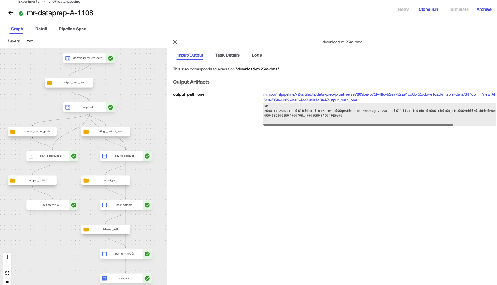
이미지 해설 — 왼쪽은 파이프라인 그래프이고 모든 컴포넌트 박스에 초록 체크가 붙어 있습니다. 위에서 아래로 download-ml25m-data → unzip-data → 갈라져 csv-to-parquet-2(movies)와 csv-to-parquet(ratings) → put-to-minio / split-dataset → put-to-minio-2 → qa-data 순서입니다. 제목은 mr-dataprep-A-1108, 위쪽 경로 표시에는 실험 이름 ch07-data-passing 이 보입니다. 오른쪽 패널은 download-ml25m-data 의 Output Artifacts 이고, 아티팩트 output_path_one 의 주소는 minio://mlpipeline/v2/artifacts/data-prep-pipeline/997809ba-…/download-ml25m-data/847d5510-…/output_path_one 입니다. 그 아래 미리보기는 PK 로 시작하며 ml-25m/ 폴더와 tags.csv 이름이 깨진 글자 사이로 보입니다 — zip 파일의 시작 부분이라는 뜻입니다. 여기서 확인할 것: ① 박스가 전부 초록인지 ② 출력 주소의 997809ba-… 가 이 run 의 ID 인지 ③ 미리보기가 PK(zip 표식)로 시작하는지.
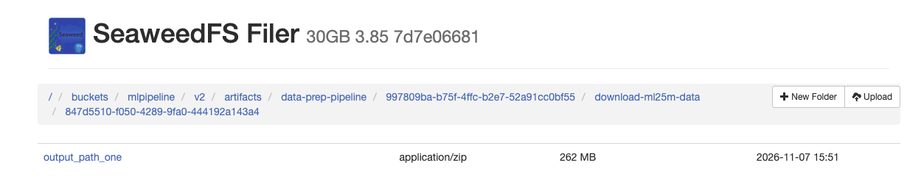
이미지 해설 — 저장소 웹 화면(SeaweedFS Filer, 상단에 "30GB 3.85" 표시)으로 같은 파일을 직접 찾은 모습입니다. 경로는 buckets / mlpipeline / v2 / artifacts / data-prep-pipeline / 997809ba-… / download-ml25m-data / 847d5510-… 이고, 파일 output_path_one 은 형식 application/zip, 크기 262 MB, 시간 2026-11-07 15:51 입니다. 이전 이미지의 URI 와 같은 경로를 저장소 쪽에서 확인한 것입니다. 여기서 확인할 것: 크기가 MovieLens 25M 의 ml-25m.zip 262MB 와 같은지. (이 서버의 저장소가 MinIO 가 아니라 SeaweedFS 라는 점도 이 화면에서 드러납니다.)
🔧 본인 환경에 맞게 교체: 파일 확인은 화면 대신 CLI 로도 됩니다.aws --endpoint-url "<S3_LOCAL_ENDPOINT>" s3 ls s3://mlpipeline/v2/artifacts/data-prep-pipeline/<RUN_ID>/download-ml25m-data/ --recursive --human-readable.<RUN_ID>= 노트 예시997809ba-…(run 마다 다름). 확인: 브라우저의 run 주소 또는 위 Output URI.
2) unzip_data — ratings 와 movies 가 따로 나왔는가
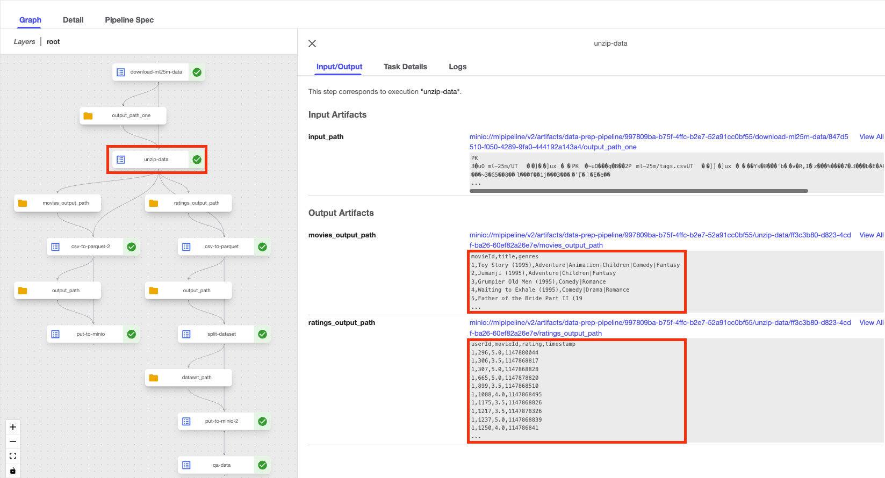
이미지 해설 — unzip-data 박스가 빨간 사각형으로 표시되고 오른쪽에 입력·출력이 보입니다. Input Artifacts 의 input_path 는 앞 단계의 download-ml25m-data/…/output_path_one 으로, 앞 컴포넌트 출력과 같은 주소입니다(이어졌다는 증거). Output Artifacts 는 둘입니다. movies_output_path 의 미리보기는 movieId,title,genres 헤더와 1,Toy Story (1995),Adventure|Animation|Children|Comedy|Fantasy 같은 줄이고, ratings_output_path 는 userId,movieId,rating,timestamp 헤더 아래 1,296,5.0,1147880044 등의 줄입니다. 여기서 확인할 것: ① 두 출력의 헤더 이름(camelCase userId, movieId) — 원본 코드의 user_id 가 AttributeError 위험이었던 근거 ② 두 파일이 서로 다른 주소로 따로 저장됐는지.
3) csv_to_parquet (ratings) — CSV 가 Parquet 이 됐는가
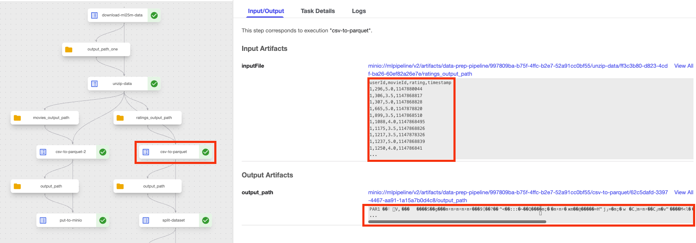
이미지 해설 — 그래프에서 오른쪽 csv-to-parquet 박스가 선택돼 있고, 패널의 Input Artifacts inputFile 은 unzip-data/…/ratings_output_path, 미리보기는 CSV 텍스트(userId,movieId,rating,timestamp …)입니다. Output Artifacts output_path 의 미리보기는 PAR1 로 시작하는 깨진 글자입니다. PAR1 은 Parquet 파일의 시작 표식(매직 바이트) 이고, 같은 입력이 이진 형식으로 바뀐 것을 보여 줍니다. 여기서 확인할 것: 입력은 읽을 수 있는 글자, 출력은 PAR1… 인지. (행 수 25,000,095는 이 화면이 아니라 QA 결과에서 확인합니다.)
4) split_dataset — 75/15/10 분할
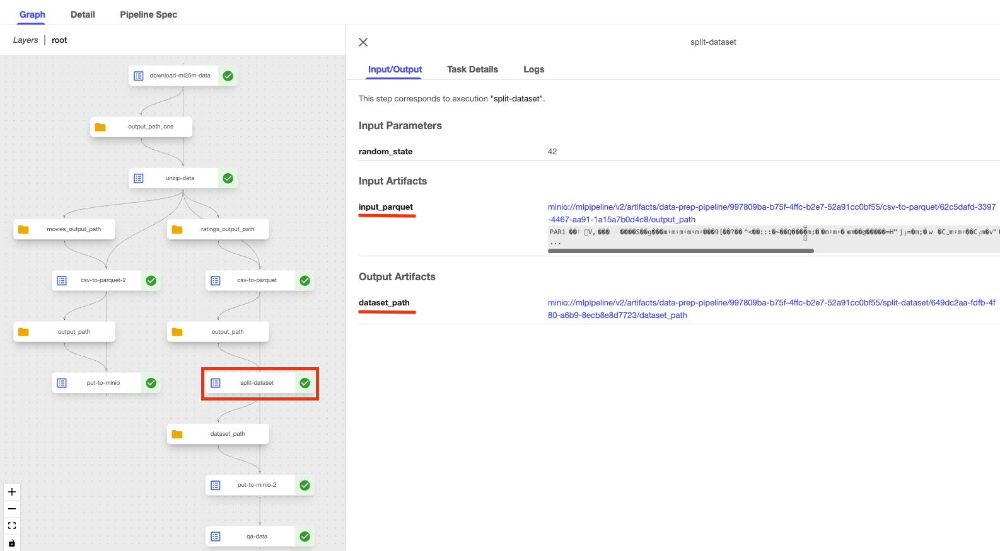
이미지 해설 — split-dataset 박스가 선택돼 있습니다. Input Parameters 에 random_state 가 42, Input Artifacts 에 input_parquet(앞 단계 csv-to-parquet/…/output_path, 미리보기 PAR1…), Output Artifacts 에 dataset_path 주소가 보입니다. 빨간 밑줄이 input_parquet 와 dataset_path 에 그어져 있어 "입력 하나가 출력 폴더 하나가 된다"는 점을 짚습니다. 여기서 확인할 것: random_state=42 가 파이프라인 파라미터 random_init 에서 전달됐는지, 출력이 파일이 아니라 폴더(dataset_path)인지.
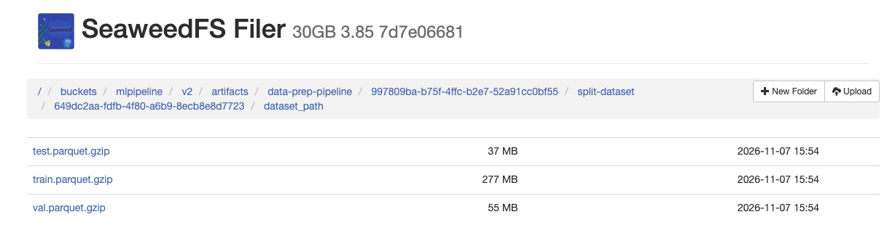
노트 캡션은 "분할된 파케이 파일 3개 업로드 확인"입니다.
이미지 해설 — 저장소(SeaweedFS Filer 3.85)에서 …/data-prep-pipeline/997809ba-…/split-dataset/649dc2aa-…/dataset_path 폴더를 연 모습입니다. 파일 3개 — test.parquet.gzip 37 MB, train.parquet.gzip 277 MB, val.parquet.gzip 55 MB, 모두 2026-11-07 15:54. 세 값을 더하면 약 369 MB 입니다. 여기서 확인할 것: 파일 이름 3개가 모두 있는지, 크기 순서가 행 수 순서(train > val > test)와 같은지. 277MB 는 train 한 파일의 크기일 뿐 전체 Parquet 크기가 아닙니다(원본 CSV 678MB 와 비교할 때는 세 파일의 합 369MB 를 쓰세요).
⚠ 크기 해석 주의: "CSV 678MB → Parquet 277MB" 처럼 train 파일 하나만 CSV 전체와 비교하면 오해가 생깁니다. 노트에는 Parquet 증감률을 계산한 근거가 없으므로 "몇 % 줄었다"는 표현은 쓰지 않습니다. 분할본 합 369MB 는 ratings 전체를 세 파일로 나눈 합이고, CSV 678MB 와 직접 비교한 압축률은 확인 못함입니다(index 열 저장 여부 등 조건이 다릅니다).
5) put_to_minio (u1) — movies Parquet 업로드
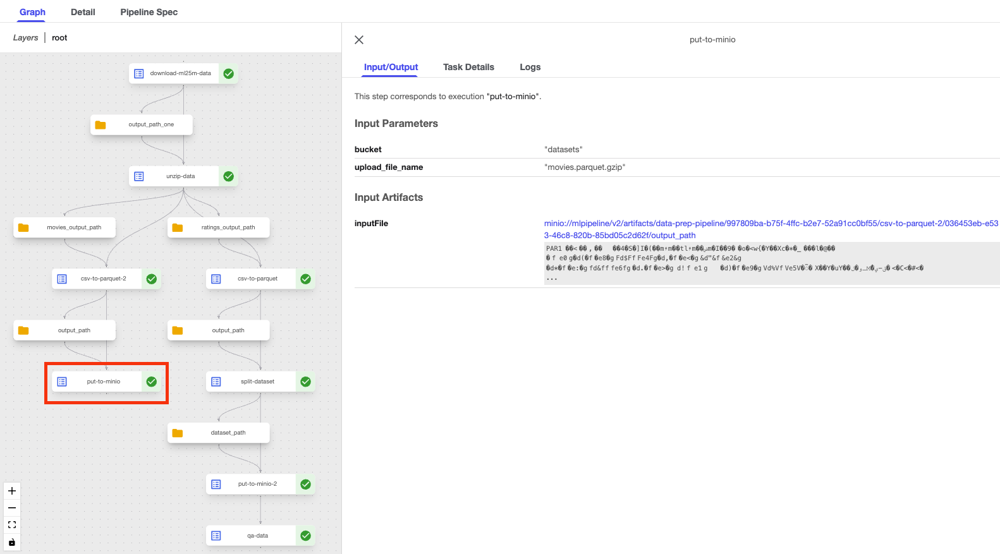
이미지 해설 — 그래프에서 왼쪽 갈래의 put-to-minio 박스가 빨간 사각형으로 선택돼 있습니다. Input Parameters: bucket = "datasets", upload_file_name = "movies.parquet.gzip". Input Artifacts: inputFile 의 주소가 …/csv-to-parquet-2/…/output_path, 미리보기는 PAR1…. 즉 movies 변환 결과(csv-to-parquet-2)가 datasets 버킷에 movies.parquet.gzip 이라는 이름으로 올라간다는 입력 설정을 보여 줍니다. (출력 아티팩트가 없는 컴포넌트라 패널에는 입력만 나옵니다.) 여기서 확인할 것: 파라미터 두 개의 문자열 값, 입력이 movies 쪽(csv-to-parquet-2)에서 온 것.
6) 업로드 결과 — 저장소에서 직접 세기
[PC 터미널] run 이 끝난 뒤 분할 결과가 제자리에 있는지 확인합니다.
aws --endpoint-url "$S3" s3 ls "s3://$DATA_BUCKET/ml-25m/" --human-readable
✅ 기대: train.parquet.gzip, val.parquet.gzip, test.parquet.gzip, movies.parquet.gzip 4개. (book-env 에서는 B 가 같은 경로를 덮어써 지금의 파일은 B 결과이므로 A 의 파일은 위 mlpipeline/v2/artifacts/…/split-dataset/… 경로에서 확인합니다.)
로그와 결과 해석
- 분할 결과: train 18,750,071 / val 3,750,014 / test 2,500,010 행으로 합이 25,000,095 입니다. 비율은 75.0 / 15.0 / 10.0% 입니다.
- QA:
shape[1]==4와 train 행 수 조건을 통과했고,movies.parquet.gzip은 62,423행입니다. 컴포넌트 로그의 마지막에Running QA다음QA passed!가 찍히면 통과입니다.
분석 — 시간이 왜 이렇게 나왔나
- 각 단계가 pip 설치를 반복합니다.
packages_to_install이 컴포넌트마다 파드 안에서 설치하므로,qa_data27초, movies 변환 32초처럼 설치 시간이 섞여 있습니다. B 실행은target_image로 이미지 하나에 모아 이 시간을 줄였습니다(QA 10초, movies 변환 20초). - A 와 B 의 Parquet 스키마가 다릅니다. A 는
index열이 맨 앞에 있고, B 는__index_level_0__가 맨 뒤에 있습니다. 이후 장에서 읽는 코드는 이 인덱스 열 이름에 의존하면 안 됩니다. split 에서index=False로 쓰면 인덱스 열 문제도 속도 문제도 같이 줄어듭니다. (속도에 대한 이 마지막 문장은 노트의 설명이며, 정량 검증은 확인 못함입니다.) - MinIO 의
datasets/ml-25m/파일은 지금 B 결과입니다. B 가 같은 경로를 덮어썼고, A 산출물은mlpipeline/v2/artifacts/data-prep-pipeline/997809ba-…/split-dataset/…에 남아 있습니다.
⚠ 원문 정정: "경로(.path)만 넘기니 데이터는 한 번만 업로드된다"는 설명은 틀립니다. 위 화면처럼 각 태스크가 별도 파드에서 입력 아티팩트를 저장소에서 내려받고, 출력은 launcher 가 저장소에 올립니다. 그래서 같은 원본이 저장소에 여러 번 존재합니다(zip, ratings CSV, Parquet, 분할본). 컴포넌트 안에서pd.read_parquet로 전체를 메모리에 올리면 메모리가 부족해질 수 있습니다.
요약 체크리스트
| 점검 | 어디서 | 통과 |
|---|---|---|
| run 전체 초록 | 그래프(이미지 29) | ☐ |
| zip 262MB | Filer(이미지 30) | ☐ |
| ratings·movies 헤더 camelCase | unzip-data(이미지 31) | ☐ |
PAR1… 출력 |
csv-to-parquet(이미지 32) | ☐ |
random_state 42, 폴더 출력 |
split-dataset(이미지 33) | ☐ |
| 파일 3개, 합 약 369MB | Filer(이미지 34) | ☐ |
bucket, upload_file_name 값 |
put-to-minio(이미지 35) | ☐ |
| QA 통과 로그 | qa-data 로그 | ☐ |
[실습] 저장소 접속 정보를 Pod 로 전달하기 (Secret → 환경변수)
🎯 목적: 업로드 두 태스크(put_to_minio)와 qa_data 가 클러스터 안 Pod 에서 저장소에 로그인할 수 있게 접속 정보를 전달하고, 터미널 A/B/C 어디서든 같은 설정을 쓰도록 env.sh 하나로 묶습니다. (이 절의 명령은 모두 참고 구현이며 실행해 확인하지 못했습니다.)
⚠ 왜 따로 연결해야 하나: 내 PC 터미널에서export AWS_ACCESS_KEY_ID=…를 해도 그 값은 내 PC 셸에만 있습니다. 컴포넌트는 클러스터 안의 별개 Pod 에서 돌기 때문에 PC 의 환경변수는 전달되지 않습니다. 앞 절의 자리표시자<ACCESS_KEY>/<SECRET_KEY>를 그대로 두면 인증 오류가 나고, 진짜 값을 코드에 적으면 파일·run 기록에 남아 위험합니다. 그래서 Pod 의 환경변수로 값을 넣어 줍니다.
flowchart LR SEC["클러스터 Secret<br/>S3_SECRET"] -->|"방법 1<br/>use_secret_as_env"| POD["업로드와 QA Pod<br/>환경변수"] PC["PC 환경변수"] -.->|"방법 2<br/>set_env_variable<br/>컴파일할 때 값이 YAML 에 기록"| POD POD --> S3["저장소 S3 API"] PC2["PC 의 aws CLI"] -->|"export 한 키"| S3L["포트포워딩 주소"]
그림 읽는 법: Pod 는 Secret(방법 1) 또는 YAML 에 적힌 값(방법 2)으로 로그인합니다. 맨 아래 줄은 별개의 길입니다 — PC 의 aws CLI 는 PC 에서 export 한 키로 포트포워딩 주소에 접속합니다. 두 길을 헷갈리지 마세요.
📋 사전조건
kubectl이 내 클러스터를 가리키고, 저장소로 포트포워딩할 수 있음.- 파이프라인을 실행하는 네임스페이스를 압니다. KFP 가 단일 사용자 구성이면 보통 KFP 설치 네임스페이스(원격 kind 클러스터 book-env:
kubeflow)이고, 사용자별 네임스페이스를 쓰는 구성이면 그 네임스페이스입니다. 내 클러스터가 어느 쪽인지는 확인 못함 → 아래에서 직접 확인합니다.
🔧 본인 환경에 맞게 교체: 3단계의env.sh에는 이 문서의 새 kind 클러스터(KFP 2.17.3) 기준 값이 이미 채워져 있습니다. 다른 클러스터를 쓰거나 값이 다를 때만env.sh한 곳에서 고칩니다. 이 절의 다른 명령에 나오는<…>꼴은 아래 값을 가리키는 설명용 이름이니 그대로 입력하지 마세요.
KUBE_CONTEXT=kind-ch07(확인:kubectl config get-contexts. 원격 kind 클러스터 book-env 는kind-book-env)
KFP_NAMESPACE=kubeflow(KFP·저장소가 있는 곳. 확인:kubectl get ns)
RUN_NAMESPACE= 파이프라인 Pod 가 도는 네임스페이스. 단일 사용자 구성이면KFP_NAMESPACE와 같음 (확인: run 실행 중kubectl get pods -A | grep -i dataprep)
S3_SECRET=mlpipeline-minio-artifact(접속 정보가 든 Secret 이름)
S3_SERVICE=minio-service(저장소 서비스 이름. 사전 준비 2 에서 만든 별칭. 확인:kubectl -n "$KFP_NAMESPACE" get svc)
S3_LOCAL_ENDPOINT=http://127.0.0.1:9000(PC 에서 닿는 주소)
S3_INTERNAL_ENDPOINT=http://minio-service.kubeflow:9000(Pod 에서 닿는 주소 =http://$S3_SERVICE.$KFP_NAMESPACE:9000)
DATA_BUCKET=datasets(7.3.2 코드가 결과를 올리는 버킷) ·VENV_DIR= SDK 2.9.0 이 깔린 가상환경 폴더(사전 준비 그대로 만들었다면$HOME/ml-study/ch07/.venv-ch07)
1단계 — Secret 이 있는지 확인 (읽기 전용)
🎯 목적: 접속 정보가 든 Secret 의 이름 과 키 이름 을 확인합니다. 값은 화면에 찍지 않습니다.
📋 사전조건: 위 가변값을 알고 있음.
⌨ 명령어 [PC 터미널]
# 3단계의 env.sh 를 이미 만들었다면 아래 세 줄 대신 source "$HOME/ml-study/env.sh" 한 줄이면 됩니다
export KFP_NAMESPACE="${KFP_NAMESPACE:-kubeflow}" # KFP·저장소가 있는 네임스페이스
export RUN_NAMESPACE="${RUN_NAMESPACE:-$KFP_NAMESPACE}" # 파이프라인 Pod 가 도는 네임스페이스(단일 사용자 구성이면 같음)
export S3_SECRET="${S3_SECRET:-mlpipeline-minio-artifact}" # 접속 정보가 든 Secret 이름
kubectl -n "$KFP_NAMESPACE" get secret "$S3_SECRET"
# 키 이름만 보기(값은 출력하지 않음)
kubectl -n "$KFP_NAMESPACE" get secret "$S3_SECRET" -o go-template='{{range $k,$v := .data}}{{$k}}{{"\n"}}{{end}}'
# 파이프라인이 도는 네임스페이스가 다르면 거기에도 있는지
kubectl -n "$RUN_NAMESPACE" get secret "$S3_SECRET"
✅ 기대 결과: 첫 명령에 <S3_SECRET> 한 줄(TYPE Opaque), 둘째 명령에 accesskey, secretkey 같은 키 이름이 나옵니다(원격 kind 클러스터 book-env에서의 이름이며 내 클러스터의 키 이름은 다를 수 있음).
🔍 확인 방법: 셋째 명령이 NotFound 이면 파이프라인 Pod 가 그 Secret 을 찾지 못합니다. -o yaml 이나 -o json 은 값(base64) 까지 나오니 쓰지 마세요.
⚠ 자주 나는 오류
- Secret 의 키 이름이 다름 →
data_prep_a.py의secret_key_to_env={"accesskey": …, "secretkey": …}의 왼쪽(Secret 안의 키 이름)을 실제 이름으로 고칩니다. RUN_NAMESPACE에 Secret 이 없음 → 그 네임스페이스에 같은 이름·키로 만들어야 합니다. 아래는 클러스터를 바꾸는 명령이므로 연습 클러스터에서만, 실행 전에 한 번 더 확인하세요(값은 이미 export 된 셸 변수에서 가져오며 출력하지 않습니다).
# [PC 터미널] 쓰기 작업 — 연습 클러스터에서만. AWS_ACCESS_KEY_ID / AWS_SECRET_ACCESS_KEY 가 이 셸에 export 되어 있어야 함
kubectl -n "$RUN_NAMESPACE" create secret generic "$S3_SECRET" \
--from-literal=accesskey="$AWS_ACCESS_KEY_ID" \
--from-literal=secretkey="$AWS_SECRET_ACCESS_KEY"
2단계 — Pod 에 전달하는 두 가지 방법 (data_prep_a.py 에 들어 있음)
| 방법 1 — Secret 연결 (권장) | 방법 2 — 값을 직접 지정 (대안) | |
|---|---|---|
| 코드 | kubernetes.use_secret_as_env(task, secret_name=…, secret_key_to_env={…}) |
task.set_env_variable(name=…, value=…) |
| 값이 어디에 남나 | 남지 않음(YAML 에는 Secret 이름만) | 컴파일된 YAML 과 run 기록에 평문 |
| 추가 패키지 | kfp-kubernetes |
없음(kfp 자체 API) |
| 확인된 정도 | kfp-kubernetes 1.5.0 과 KFP 백엔드 2.4.1 조합에서 이 이름·인자가 그대로 되는지 확인 못함 |
kfp 2.9.0 API. 동작은 실행해 보지 못함 |
| 언제 | 기본 | 방법 1 이 안 될 때, 연습용 클러스터에서만 |
선택은 CRED_MODE 환경변수로 합니다(secret 또는 env). 방법 2 를 쓰면 컴파일된 YAML 을 공유하거나 저장소에 올리지 마세요.
3단계 — 터미널마다 같은 설정: env.sh 한 개
🎯 목적: 터미널 A(저장소 포트포워딩), B(KFP 포트포워딩), C(작업)는 서로 export 를 공유하지 않습니다. 새 터미널을 열 때마다 source 한 줄이면 같은 설정이 되도록 합니다.
📋 사전조건: 저장 위치는 모든 터미널이 접근하는 한 곳($HOME/ml-study/env.sh). 실습 폴더는 $HOME/ml-study/ch07/mr 로 가정합니다.
⌨ 명령어 [PC 터미널] env.sh 만들기
mkdir -p "$HOME/ml-study" && cat > "$HOME/ml-study/env.sh" <<'ENVSH'
# env.sh — 새 터미널을 열 때마다: source "$HOME/ml-study/env.sh"
# 주의: 따옴표 안의 ~ 는 펼쳐지지 않으므로 항상 $HOME 을 쓴다.
export KUBE_CONTEXT="kind-ch07" # 사전 준비의 새 kind 클러스터. 다른 클러스터면 kubectl config get-contexts 의 이름으로
export KFP_NAMESPACE="kubeflow"
export RUN_NAMESPACE="kubeflow" # 파이프라인이 실행되는 네임스페이스(단일 사용자 설치는 보통 같음)
export S3_SECRET="mlpipeline-minio-artifact" # 2.17.3 설치와 book-env 모두 이 이름
export S3_SERVICE="minio-service" # 사전 준비 2 에서 만든 별칭 Service
export S3_LOCAL_ENDPOINT="http://127.0.0.1:9000" # 저장소 포트 포워딩 주소
export S3_INTERNAL_ENDPOINT="http://minio-service.kubeflow:9000" # 클러스터 안 Pod 가 쓰는 주소
export DATA_BUCKET="datasets" # 7.3.2 가 올리는 버킷(코드의 bucket 기본값과 같아야 함)
export AWS_DEFAULT_REGION=us-east-1
export WORKDIR="$HOME/ml-study/ch07/mr"
export VENV_DIR="$HOME/ml-study/ch07/.venv-ch07" # 사전 준비 3 에서 만든 가상환경
export PYTHON="$VENV_DIR/bin/python" # 가상환경 Python 의 절대경로(activate 없이도 같은 파이썬)
export PY="$PYTHON" # 7.3.1 과 뒤의 선택 실습 절이 쓰는 이름
export KFP_HOST="http://localhost:8080" # KFP UI 포트 포워딩 주소
export S3_ENDPOINT="$S3_LOCAL_ENDPOINT" # 7.3.1 확인 구간이 쓰는 이름
mkdir -p "$WORKDIR" && cd "$WORKDIR"
# data_prep_a.py 가 컴파일할 때 읽는 값(secret 또는 env)
export CRED_MODE="${CRED_MODE:-secret}"
# PC 의 aws CLI 용 접속 정보: Secret 에서 읽어 이 셸의 환경변수에만 둔다(화면에 출력하지 않음)
_s3key() {
kubectl --context "$KUBE_CONTEXT" -n "$KFP_NAMESPACE" get secret "$S3_SECRET" -o "jsonpath={.data.$1}" \
| python3 -c "import sys,base64;sys.stdout.write(base64.b64decode(sys.stdin.read()).decode())"
}
if [ -z "$AWS_ACCESS_KEY_ID" ]; then
export AWS_ACCESS_KEY_ID="$(_s3key accesskey)"
export AWS_SECRET_ACCESS_KEY="$(_s3key secretkey)"
fi
ENVSH
# 터미널 A, B, C 어디서든
source "$HOME/ml-study/env.sh"
이 env.sh 의 값은 이 문서의 새 kind 클러스터(KFP 2.17.3) 기준으로 이미 채워져 있어 그대로 쓸 수 있습니다. 다른 클러스터를 쓰면 파일을 만든 뒤 편집기로 해당 줄의 값만 한 번 고칩니다. source 해도 값이 화면에 출력되지는 않습니다.
✅ 기대 결과: 아무 출력 없이 끝납니다(Secret 읽기가 실패하면 kubectl 오류가 나옵니다).
🔍 확인 방법 (값이 아니라 설정 여부만)
[ -n "$AWS_ACCESS_KEY_ID" ] && echo "access key: set" || echo "access key: EMPTY"
[ -n "$AWS_SECRET_ACCESS_KEY" ] && echo "secret key: set" || echo "secret key: EMPTY"
"$PYTHON" -c "import kfp; print(kfp.__version__)" # 2.9.0
echo "$WORKDIR" # 경로(비밀 아님): /Users/… 또는 /home/… 로 펼쳐져야 함
⚠ 자주 나는 오류
export WORKDIR="~/ml-study/…"처럼 따옴표 안의~는 홈 경로로 펼쳐지지 않아cd가 실패합니다(앞 절의 예시값~/ml-study/ch07/mr를 그대로 따옴표에 넣는 경우).$HOME을 쓰세요.PYTHON을python으로만 두면 터미널마다 다른 파이썬이 잡힙니다 → 가상환경의 절대경로.- 새 터미널을 열고
source를 잊음 →KeyError,command not found, 인증 오류의 흔한 원인. - Secret 읽기가 실패하면
AWS_ACCESS_KEY_ID가 빈 값이 됩니다 → 위 확인에서EMPTY. 1단계로 돌아가 Secret 이름·키를 확인. - 이 파일에 진짜 키를 적어 넣지 마세요. Secret 에서 읽어 오도록만 되어 있습니다.
4단계 — aws CLI 설치와 접속 확인
🎯 목적: PC 에서 aws --endpoint-url … s3 ls 가 되어 datasets 버킷을 만들고 결과를 확인할 수 있게 합니다.
📋 사전조건: 터미널 A 에서 저장소 포트포워딩이 열려 있음(kubectl -n "$KFP_NAMESPACE" port-forward svc/"$S3_SERVICE" 9000:9000, 계속 켜 둠). 터미널 C 에서 source env.sh 완료.
⌨ 명령어
[PC 터미널] 설치 여부 확인
aws --version
command not found 이면 설치합니다(공식 설치 안내: https://docs.aws.amazon.com/cli/latest/userguide/getting-started-install.html).
Mac M2
brew install awscli
aws --version
Homebrew 가 없으면 위 공식 안내의 macOS 설치 파일을 쓰세요. M2 용 별도 설정은 필요 없을 것으로 보지만 직접 설치해 보지는 못했습니다.
Linux (x86_64)
공식 안내의 Linux 설치 파일(zip) 방식을 따르세요. 배포판 패키지(apt, dnf)에 awscli 가 있으면 그것도 되지만 버전이 오래됐을 수 있습니다(내 배포판의 버전은 확인 못함).
[PC 터미널 C] 접속 확인과 버킷 만들기
source "$HOME/ml-study/env.sh"
aws --endpoint-url "$S3_LOCAL_ENDPOINT" s3 ls
aws --endpoint-url "$S3_LOCAL_ENDPOINT" s3 mb "s3://$DATA_BUCKET"
aws --endpoint-url "$S3_LOCAL_ENDPOINT" s3 ls
✅ 기대 결과: 첫 ls 는 버킷 목록(비어 있을 수도 있음), mb 뒤 ls 에는 datasets 가 보입니다. 이미 있으면 mb 가 "이미 있음" 계열 오류를 낼 수 있으며(SeaweedFS 에서의 정확한 메시지는 확인 못함) 그 경우 무시해도 됩니다.
🔍 확인 방법: 마지막 ls 에 <DATA_BUCKET> 이 보이면 PC → 저장소 길은 열린 것입니다. Pod → 저장소 길(Secret 주입)은 run 을 실행해 put-to-minio 로그가 KeyError 없이 끝나는지로 봅니다.
⚠ 자주 나는 오류
Could not connect to the endpoint URL→ 터미널 A 의 포트포워딩이 끊겼거나S3_LOCAL_ENDPOINT의 포트가 다름.Unable to locate credentials,InvalidAccessKeyId→ 이 셸에서source env.sh를 안 했거나 Secret 읽기가 실패(위 확인의EMPTY).- 순서 주의:
mb는 접속 정보를 export 한 뒤에 실행합니다(그래서env.sh를 먼저 읽습니다). - 값을 확인하려고
echo "$AWS_SECRET_ACCESS_KEY"를 하지 마세요(화면·기록에 남음). 위의 "set/EMPTY" 확인만 쓰세요.
Mac M2 / Linux 차이
- Mac M2(zsh):
source와export문법은 bash 와 같습니다. 대괄호가 든 패키지는 따옴표로 감쌉니다(pip install 'kfp[kubernetes]'처럼. 이 실습은'kfp==2.9.0' 'kfp-kubernetes==1.5.0'로 버전을 고정합니다). 포트 사용 확인은lsof -nP -iTCP:9000 -sTCP:LISTEN. - Linux(bash): 포트 사용 확인은
ss -ltnp | grep 9000.env.sh는base64 -d대신 파이썬으로 디코딩하므로 두 OS 에서 같게 동작합니다.
[실습] 7.3.2 A 컴포넌트 완성 파일 data_prep_a.py — 한 파일로 조립한 참고 구현
⚠ 참고 구현(실행해 확인하지 못함): 원문 노트에는 컴포넌트의.py원본이 없고 컴파일된 YAML 만 있습니다. 이 절의data_prep_a.py는 각 컴포넌트 함수를 책의 Listing 7.24~7.29 와 YAML 안의 함수 소스에서 되살려 import·데코레이터를 갖춘 한 파일로 조립한 참고 구현입니다. 문법(구문 검사)과 "호출할 때 쓰는 인자 이름이 정의와 같은가"는 확인했지만, 컴파일과 클러스터 실행은 해 보지 못했습니다. 앞 절들의 코드(코드 ②·④)에는 import 와 데코레이터가 빠져 있으니, 따라 하실 때는 이 파일을 기준으로 삼으세요.
🎯 목적: 앞 절의 "코드 ②"(함수 본문만 있음)를 복사해서 바로 컴파일되는 한 파일로 만듭니다. 컴포넌트 6개 + 파이프라인 + 컴파일 호출이 모두 들어 있어 data_components/ 폴더도, __init__.py 도 필요 없습니다.
flowchart LR F["data_prep_a.py<br/>컴포넌트 6개 + 파이프라인"] -->|"python 으로 실행"| C["compiler 가 YAML 생성"] C --> Y["compiled_pipelines<br/>dataPrep_pipeline.yaml"] E["PC 환경변수<br/>S3_SECRET 등"] -.->|"컴파일할 때 읽음"| F Y -->|"등록 후 실행"| K["KFP"] S["클러스터 Secret"] -.->|"Pod 환경변수로 주입"| K
그림 읽는 법: 실선은 파일이 만들어지는 흐름이고 점선은 값이 전달되는 길입니다. 접속 정보는 파일(YAML)에 적히지 않고 Pod 가 뜰 때 Secret 에서 환경변수로 들어옵니다(다음 절).
먼저 저장하세요
⌨ 저장 [PC 터미널] 이 절 아래의 「data_prep_a.py 전체 코드」를 통째로 복사해 $HOME/ml-study/ch07/mr/data_prep_a.py 로 저장합니다. 폴더가 없으면 먼저 만듭니다. 저장한 뒤 ls -l 이 파일을 보여 주면 됩니다.
mkdir -p "$HOME/ml-study/ch07/mr"
ls -l "$HOME/ml-study/ch07/mr/data_prep_a.py" # 저장 후 확인: 파일이 보여야 합니다
앞 절 코드와 달라진 점
| 항목 | 앞 절 코드 ② | 이 파일 |
|---|---|---|
| import | 없음(컴파일러가 붙이는 줄만 생략됨) | from kfp import compiler, dsl, from kfp.dsl import Input, Output, Artifact 를 맨 위에 둠 |
| 데코레이터 | 설명으로만 언급 | @dsl.component(base_image=PY, packages_to_install=[…]) 를 6개 모두에 명시 |
| 접속 정보 | <ACCESS_KEY>, <SECRET_KEY> 문자열 |
os.environ 에서 읽음. Pod 에는 파이프라인의 inject_s3_env() 가 주입 |
| QA 순서 | .after(u2) |
.after(u1, u2) — movies 업로드까지 기다림(.after 는 여러 태스크를 받을 수 있음) |
| 컴파일 | 별도 파일(01_…)에서 | 같은 파일 맨 아래 compiler.Compiler().compile(...) |
| 다운로드 | — | raise_for_status() 한 줄 추가(다운로드 실패 응답을 zip 으로 저장하지 않도록. YAML 의 원본에는 없는 줄) |
파일 구조 — 컴포넌트 6종
| # | 함수 | 입력 | 출력 | packages_to_install |
근거 |
|---|---|---|---|---|---|
| 1 | download_ml25m_data |
없음 | output_path_one(파일) |
requests |
Listing 7.24 + YAML |
| 2 | unzip_data |
input_path |
ratings_output_path, movies_output_path |
없음(zipfile 은 표준 라이브러리) |
Listing 7.25, 이름·인자는 저장소 코드 |
| 3 | csv_to_parquet |
inputFile |
output_path |
scikit-learn, pandas, fastparquet |
Listing 7.26 대신 저장소 코드 |
| 4 | split_dataset |
input_parquet, random_state=42 |
dataset_path(폴더) |
scikit-learn, pandas, fastparquet |
Listing 7.27, user_id.max() 삭제, pd·train_test_split import 를 함수 안에 |
| 5 | put_to_minio |
inputFile, upload_file_name='', bucket='datasets' |
없음 | boto3 |
Listing 7.28, os import |
| 6 | qa_data |
bucket='datasets', dataset='ml-25m' |
없음 | pyarrow, pandas |
Listing 7.29, pandas 추가(앞 절 정정) |
위
packages_to_install는 컴파일된 YAML 의pip install목록과 대조한 값입니다(YAML 에는 별도로kfp==2.9.0설치가 자동으로 붙습니다).
🔧 본인 환경에 맞게 교체: 코드 안의 아래 값은 원격 kind 클러스터 book-env의 예시이니 환경변수로 바꿔 쓸 수 있습니다(이 파일은os.environ.get으로 읽고, 없으면 예시값을 씁니다).<S3_SECRET>=mlpipeline-minio-artifact(접속 정보가 든 Secret 이름, 확인:kubectl -n <KFP_NAMESPACE> get secret).<S3_INTERNAL_ENDPOINT>=http://minio-service.kubeflow:9000(Pod 가 저장소에 닿는 클러스터 내부 주소, 확인:kubectl -n <KFP_NAMESPACE> get svc). 접속 정보 자체(<ACCESS_KEY>,<SECRET_KEY>)는 파일에 적지 않습니다.
data_prep_a.py 전체 코드
접속 정보를 Pod 에 넘기는 방법은 둘입니다. 방법 1(기본, 권장) Secret 을 환경변수로 연결 — kubernetes.use_secret_as_env. 방법 2(대안) 컴파일할 때 PC 의 값을 읽어 task.set_env_variable 로 적어 넣기. CRED_MODE 환경변수로 고릅니다(기본 secret).
# data_prep_a.py — 7.3.2 방식 A(경량 컴포넌트) 참고 구현: 컴포넌트 6종 + 파이프라인 + 컴파일을 한 파일에 조립
import os
import kfp
from kfp import compiler, dsl
from kfp.dsl import Input, Output, Artifact
PY = "python:3.11" # 6개 컴포넌트가 쓰는 기본 이미지
# ── 컴포넌트 1/6: 다운로드 ─────────────────────────────────────────
@dsl.component(base_image=PY, packages_to_install=["requests"])
def download_ml25m_data(output_path_one: Output[Artifact]):
import requests
url = "https://files.grouplens.org/datasets/movielens/ml-25m.zip"
response = requests.get(url, stream=True, verify=False, timeout=60) # verify=False 는 원문 그대로(제거 권장)
response.raise_for_status() # 추가: 실패 응답을 파일로 저장하지 않도록
print(output_path_one.path)
with open(output_path_one.path, "wb") as file:
for chunk in response.iter_content(chunk_size=1024 * 1024):
if chunk:
file.write(chunk)
# ── 컴포넌트 2/6: 압축 해제 ────────────────────────────────────────
@dsl.component(base_image=PY)
def unzip_data(input_path: Input[Artifact],
ratings_output_path: Output[Artifact],
movies_output_path: Output[Artifact]):
import zipfile
with zipfile.ZipFile(input_path.path, "r") as z:
with open(ratings_output_path.path, "wb") as f:
f.write(z.read("ml-25m/ratings.csv"))
with open(movies_output_path.path, "wb") as f:
f.write(z.read("ml-25m/movies.csv"))
# ── 컴포넌트 3/6: CSV → Parquet ───────────────────────────────────
@dsl.component(base_image=PY, packages_to_install=["scikit-learn", "pandas", "fastparquet"])
def csv_to_parquet(inputFile: Input[Artifact], output_path: Output[Artifact]):
import pandas as pd
df = pd.read_csv(inputFile.path, index_col=False)
df.to_parquet(output_path.path, compression="gzip")
# ── 컴포넌트 4/6: 75/15/10 분할 ───────────────────────────────────
@dsl.component(base_image=PY, packages_to_install=["scikit-learn", "pandas", "fastparquet"])
def split_dataset(input_parquet: Input[Artifact],
dataset_path: Output[Artifact],
random_state: int = 42):
from sklearn.model_selection import train_test_split
import os
import pandas as pd
train_ratio = 0.75
validation_ratio = 0.15
test_ratio = 0.10
ratings_df = pd.read_parquet(input_parquet.path)
# train 75%
train, test = train_test_split(ratings_df, test_size=1 - train_ratio, random_state=random_state)
# (원본의 ratings_df.user_id / item_id 참조는 삭제: 실제 컬럼은 userId/movieId 이고 값도 쓰이지 않음)
# 남은 25% 를 test 10% / validation 15% 로
val, test = train_test_split(test, test_size=test_ratio / (test_ratio + validation_ratio),
random_state=random_state)
os.mkdir(dataset_path.path) # 출력이 폴더 아티팩트이므로 먼저 폴더를 만든다
train.to_parquet(os.path.join(dataset_path.path, "train.parquet.gzip"), compression="gzip")
test.to_parquet(os.path.join(dataset_path.path, "test.parquet.gzip"), compression="gzip")
val.to_parquet(os.path.join(dataset_path.path, "val.parquet.gzip"), compression="gzip")
# ── 컴포넌트 5/6: 저장소 업로드 ───────────────────────────────────
# 접속 정보는 코드에 쓰지 않고 Pod 의 환경변수에서 읽는다(파이프라인에서 주입: 아래 inject_s3_env).
@dsl.component(base_image=PY, packages_to_install=["boto3"])
def put_to_minio(inputFile: Input[Artifact], upload_file_name: str = "", bucket: str = "datasets"):
import os
import boto3
minio_client = boto3.client(
"s3",
endpoint_url=os.environ.get("S3_ENDPOINT", "http://minio-service.kubeflow:9000"),
aws_access_key_id=os.environ["AWS_ACCESS_KEY_ID"], # 없으면 KeyError → 주입이 안 된 것
aws_secret_access_key=os.environ["AWS_SECRET_ACCESS_KEY"])
try:
minio_client.create_bucket(Bucket=bucket)
except Exception: # 원본은 BucketAlreadyExists 만 잡음. 두 업로드가 동시에 만드는 경쟁 대비(권한 오류도 삼키는 단점)
pass
if os.path.isdir(inputFile.path):
for file in os.listdir(inputFile.path):
s3_path = os.path.join("ml-25m", file)
minio_client.upload_file(os.path.join(inputFile.path, file), bucket, s3_path)
else:
if upload_file_name == "":
_, file = os.path.split(inputFile.path)
else:
file = upload_file_name
s3_path = os.path.join("ml-25m", file)
minio_client.upload_file(inputFile.path, bucket, s3_path)
# ── 컴포넌트 6/6: 품질 평가 ───────────────────────────────────────
@dsl.component(base_image=PY, packages_to_install=["pyarrow", "pandas"])
def qa_data(bucket: str = "datasets", dataset: str = "ml-25m"):
import os
from pyarrow import fs, parquet
print("Running QA")
minio = fs.S3FileSystem(
endpoint_override=os.environ.get("S3_ENDPOINT", "http://minio-service.kubeflow:9000"),
access_key=os.environ["AWS_ACCESS_KEY_ID"],
secret_key=os.environ["AWS_SECRET_ACCESS_KEY"],
scheme="http")
train_parquet = minio.open_input_file(f"{bucket}/{dataset}/train.parquet.gzip")
df = parquet.read_table(train_parquet).to_pandas()
assert df.shape[1] == 4
assert df.shape[0] >= 0.75 * 25 * 1e6
print("QA passed!")
# ── 접속 정보를 Pod 에 전달하는 부분(컴파일할 때 PC 의 환경변수를 읽음) ─────────
CRED_MODE = os.environ.get("CRED_MODE", "secret") # secret(권장) 또는 env(대안)
S3_SECRET = os.environ.get("S3_SECRET", "mlpipeline-minio-artifact")
S3_INTERNAL_ENDPOINT = os.environ.get("S3_INTERNAL_ENDPOINT", "http://minio-service.kubeflow:9000") # Pod 안에서 쓰는 클러스터 내부 주소
def inject_s3_env(task):
task.set_env_variable(name="S3_ENDPOINT", value=S3_INTERNAL_ENDPOINT) # 비밀이 아닌 값
if CRED_MODE == "secret":
# 방법 1: Secret 의 키를 Pod 환경변수로. 값은 YAML 에 들어가지 않는다. (kfp-kubernetes 필요)
from kfp import kubernetes
kubernetes.use_secret_as_env(
task,
secret_name=S3_SECRET,
secret_key_to_env={"accesskey": "AWS_ACCESS_KEY_ID", "secretkey": "AWS_SECRET_ACCESS_KEY"})
else:
# 방법 2: 컴파일하는 PC 의 환경변수 값을 YAML 에 적어 넣는다. 값이 파일·run 기록에 남는다 → 연습용 클러스터에서만.
task.set_env_variable(name="AWS_ACCESS_KEY_ID", value=os.environ["AWS_ACCESS_KEY_ID"])
task.set_env_variable(name="AWS_SECRET_ACCESS_KEY", value=os.environ["AWS_SECRET_ACCESS_KEY"])
# ── 파이프라인 ───────────────────────────────────────────────────
@dsl.pipeline(
name="Data prep pipeline",
description="A pipeline that retrieves data from movielens and ingests it into paraquet files on minio")
def dataprep_pipeline(minio_bucket: str = "datasets", random_init: int = 42):
download_dataset = download_ml25m_data()
unzip_folder = unzip_data(input_path=download_dataset.outputs["output_path_one"])
ratings_parquet_op = csv_to_parquet(inputFile=unzip_folder.outputs["ratings_output_path"])
movies_parquet_op = csv_to_parquet(inputFile=unzip_folder.outputs["movies_output_path"])
split_op = split_dataset(input_parquet=ratings_parquet_op.output, random_state=random_init)
u1 = put_to_minio(inputFile=movies_parquet_op.output, upload_file_name="movies.parquet.gzip", bucket=minio_bucket)
u2 = put_to_minio(inputFile=split_op.output, bucket=minio_bucket)
qa_op = qa_data(bucket=minio_bucket).after(u1, u2) # 둘 다 끝난 뒤 실행(QA 는 아티팩트 입력이 없어 .after 필요)
for t in (u1, u2, qa_op): # 저장소에 접속하는 태스크 3개에만 접속 정보 주입
inject_s3_env(t)
for t in (download_dataset, unzip_folder, ratings_parquet_op, movies_parquet_op, split_op, u1, u2, qa_op):
t.set_caching_options(False)
if __name__ == "__main__":
os.makedirs("compiled_pipelines", exist_ok=True)
compiler.Compiler().compile(
pipeline_func=dataprep_pipeline,
package_path="compiled_pipelines/dataPrep_pipeline.yaml")
print("compiled: compiled_pipelines/dataPrep_pipeline.yaml")
kubernetes.use_secret_as_env(task, secret_name, secret_key_to_env)형태는kfp-kubernetes패키지 문서를 기준으로 쓴 것입니다. 이 과정이 쓰는kfp-kubernetes버전(1.5.0 로 알려져 있음)과 KFP 백엔드 2.4.1 의 조합에서 이 이름과 인자가 그대로 동작하는지는 확인 못함입니다. 설치 후 아래 "확인 방법" 의 한 줄로 이름이 있는지 먼저 보고, 없거나 오류가 나면CRED_MODE=env(방법 2)로 바꾸세요. 방법 2 의task.set_env_variable(name=…, value=…)는kfp자체 API 라 추가 패키지가 필요 없습니다. 대신 값이 컴파일된 YAML 과 run 기록에 평문으로 남으므로 연습용 클러스터에서만 쓰고, 그 YAML 을 공유하지 마세요.
컴파일 명령과 기대 산출물
📋 사전조건: 가상환경(Python 3.10~3.12)에 kfp==2.9.0 설치. 방법 1 이면 kfp-kubernetes 도 설치(pip install 'kfp==2.9.0' 'kfp-kubernetes==1.5.0' 처럼 두 버전을 함께 고정합니다. 버전 없이 설치하면 더 새 kfp 가 딸려 와 2.9.0 이 바뀔 수 있습니다. 설치 후 pip show kfp 로 2.9.0 인지 확인). 환경변수는 다음 절의 env.sh 로 준비합니다(이 파일은 $HOME/ml-study/ch07/mr/ 에 저장합니다).
⌨ 명령어 [PC 터미널 C]
source "$HOME/ml-study/env.sh" # 앞 절 「저장소 접속 정보를 Pod 로 전달하기」 3단계에서 만든 파일
"$PYTHON" -m pip install 'kfp==2.9.0' 'kfp-kubernetes==1.5.0' # 방법 1. 방법 2(CRED_MODE=env)면 kfp-kubernetes 는 생략 가능
cd "$WORKDIR"
export CRED_MODE=secret # 방법 1. 방법 2 는 env (그때는 AWS_ACCESS_KEY_ID 등이 이 셸에 export 되어 있어야 함)
"$PYTHON" data_prep_a.py
ls -l compiled_pipelines/dataPrep_pipeline.yaml
✅ 기대 결과: compiled: compiled_pipelines/dataPrep_pipeline.yaml 한 줄이 출력되고 YAML 파일이 생깁니다. 오류가 없어야 합니다. (실행해 보지 않은 기대치입니다.)
🔍 확인 방법
# [PC 터미널 C] 읽기 전용 확인. 값이 아니라 이름만 찾습니다.
"$PYTHON" -c "from kfp import kubernetes; print(hasattr(kubernetes, 'use_secret_as_env'))" # 방법 1 사용 시 True 여야 함
grep -c 'cachingOptions' compiled_pipelines/dataPrep_pipeline.yaml # 태스크 수 8
grep -n 'S3_ENDPOINT' compiled_pipelines/dataPrep_pipeline.yaml # 업로드 2 + QA 1 = 3곳
grep -n -i 'secretAsEnv\|secretName' compiled_pipelines/dataPrep_pipeline.yaml # 방법 1: Secret 이름이 보이면 연결된 것
grep -n -A3 'qa-data:' compiled_pipelines/dataPrep_pipeline.yaml | head -20 # dependentTasks 에 put-to-minio, put-to-minio-2 둘 다
방법 1 이면 secretAsEnv(또는 secretName)가 보여야 하고, 방법 2 이면 AWS_ACCESS_KEY_ID 가 YAML 에 평문 값과 함께 나타납니다(그래서 공유 금지). 방법 1 의 YAML 에서 Secret 설정이 어느 위치에 나오는지는 확인 못함입니다.
⚠ 자주 나는 오류
ModuleNotFoundError: No module named 'kfp.kubernetes'→pip install 'kfp==2.9.0' 'kfp-kubernetes==1.5.0'를 했는지, 같은 가상환경의$PYTHON으로 실행했는지 확인. 급하면CRED_MODE=env.KeyError: 'AWS_ACCESS_KEY_ID'(컴파일 시) → 방법 2 인데 이 셸에 접속 정보가 export 되지 않았습니다.source env.sh.- 실행 중 업로드 Pod 에서
KeyError: 'AWS_ACCESS_KEY_ID'→ Secret 이 Pod 에 붙지 않았습니다. Secret 이 파이프라인이 실행되는 네임스페이스에 있는지(다음 절), 키 이름이accesskey/secretkey인지 확인. - 컴파일은 되는데
compiled_pipelines폴더 오류 → 이 파일은os.makedirs로 폴더를 만들므로 보통 없지만, 쓰기 권한이 없는 곳에서 실행하면 실패합니다.
Mac M2 / Linux 차이
- Mac M2(zsh): 패키지는 따옴표로 감싸 버전을 고정합니다(
pip install 'kfp==2.9.0' 'kfp-kubernetes==1.5.0'). 이 파일의 컴파일은 PC 에서만 일어나므로 CPU 종류는 상관없고, 컴포넌트 Pod 가 도는 노드가 arm64 이면python:3.11이미지의 다중 아키텍처 덕에 보통 받을 수 있으나, 실제로 돌려 보지 못했고 KFP 내부 이미지(launcher)의 arm64 지원은 확인 못함입니다(B 절 참고). - Linux(x86_64): 위 명령 그대로입니다. 가상환경 생성은
python3 -m venv "$VENV_DIR"(python3가 3.10~3.12 일 때. Ubuntu 에서 모듈이 없으면sudo apt-get install -y python3-venv).
컴포넌트별 줄별 설명
1. download_ml25m_data — 다운로드
| 줄 | 하는 일 |
|---|---|
@dsl.component(base_image=PY, packages_to_install=["requests"]) |
이 함수를 python:3.11 이미지에서 돌리고, 시작할 때 requests 를 pip install |
output_path_one: Output[Artifact] |
출력 파일 하나. .path 가 Pod 안의 쓰기 위치 |
requests.get(url, stream=True, verify=False, timeout=60) |
262MB 를 한 번에 메모리에 올리지 않고 조금씩 받음. verify=False 는 서버 인증서 확인을 꺼서 보안상 좋지 않음(원문 그대로, 제거 권장) |
response.raise_for_status() |
추가한 줄. 404·500 이면 여기서 멈춤 |
iter_content(chunk_size=1024*1024) |
1MiB 씩 읽음 |
file.write(chunk) |
아티팩트 경로에 이어 씀 |
2. unzip_data — 압축 해제
| 줄 | 하는 일 |
|---|---|
@dsl.component(base_image=PY) |
설치할 패키지 없음 |
import zipfile |
함수 안에서 import. 컴포넌트는 함수 소스만 Pod 로 가므로 파일 맨 위 import 는 Pod 에 없음 |
z.read('ml-25m/ratings.csv') |
zip 안의 경로를 직접 지정해 한 파일만 읽음 |
open(ratings_output_path.path, 'wb') |
출력 아티팩트 2개에 각각 저장 |
3. csv_to_parquet — CSV 를 Parquet 으로
| 줄 | 하는 일 |
|---|---|
packages_to_install=["scikit-learn","pandas","fastparquet"] |
YAML 의 목록 그대로. 이 컴포넌트는 sklearn 을 쓰지 않지만 원본이 그렇게 설치함 |
pd.read_csv(inputFile.path, index_col=False) |
첫 열을 인덱스로 쓰지 않음 |
df.to_parquet(output_path.path, compression="gzip") |
엔진은 auto(pyarrow 가 있으면 pyarrow 우선, 이 컴포넌트에는 fastparquet 만 설치되어 fastparquet 사용) |
4. split_dataset — 75/15/10 분할
| 줄 | 하는 일 |
|---|---|
random_state: int = 42 |
파이프라인 파라미터 random_init 에서 전달됨 |
train_test_split(ratings_df, test_size=1-train_ratio, …) |
1단계: 75% train, 25% 임시 |
test_size=test_ratio/(test_ratio+validation_ratio) |
2단계: 25% 를 0.10/0.25=0.4 로 나눠 test 10%, val 15% |
os.mkdir(dataset_path.path) |
출력이 폴더라서 먼저 만들어야 함 |
to_parquet(os.path.join(dataset_path.path, 'train.parquet.gzip'), …) |
폴더 안에 3개 저장 |
5. put_to_minio — 저장소 업로드
| 줄 | 하는 일 |
|---|---|
os.environ.get("S3_ENDPOINT", …) |
저장소 주소. 파이프라인이 set_env_variable 로 넣어 줌 |
os.environ["AWS_ACCESS_KEY_ID"] |
접속 정보. Secret(또는 대안 방법)이 주입한 값. 없으면 KeyError 로 바로 실패해서 "주입이 안 됨"을 알 수 있음 |
create_bucket + except Exception: pass |
버킷이 이미 있어도 계속. 권한·연결 오류까지 삼키는 단점이 있음(앞 절의 "더 좋은 방법" 참고) |
os.path.isdir(inputFile.path) |
폴더면 안의 파일 전부, 파일이면 하나만 올림 |
s3_path = os.path.join('ml-25m', file) |
저장 키는 ml-25m/<파일> |
6. qa_data — 품질 평가
| 줄 | 하는 일 |
|---|---|
fs.S3FileSystem(endpoint_override=…, access_key=…, secret_key=…, scheme="http") |
pyarrow 가 저장소에 직접 접속. 주소와 키는 환경변수에서 읽음 |
minio.open_input_file(f'{bucket}/{dataset}/train.parquet.gzip') |
업로드된 train 파일 열기 |
assert df.shape[1] == 4 |
열 4개(인덱스는 복원되어 열로 세지 않음) |
assert df.shape[0] >= 0.75 * 25 * 1e6 |
train 18,750,000행 이상 |
파이프라인의 .after(u1, u2) |
QA 는 아티팩트 입력이 없어 순서를 직접 지정해야 함. movies 업로드까지 기다리게 함(기본 QA 는 train 만 읽으므로 u2 만으로도 동작) |
파이프라인 부분 (inject_s3_env, dataprep_pipeline)
| 줄 | 하는 일 |
|---|---|
CRED_MODE, S3_SECRET, S3_INTERNAL_ENDPOINT |
컴파일하는 PC 의 환경변수에서 읽는 설정(컴포넌트 안의 os.environ 과 다른 층) |
task.set_env_variable(name="S3_ENDPOINT", value=…) |
이 태스크 Pod 에 환경변수 하나 추가(비밀이 아닌 값) |
from kfp import kubernetes (함수 안) |
방법 1 일 때만 import — kfp-kubernetes 가 없어도 방법 2 로 컴파일할 수 있게 함 |
kubernetes.use_secret_as_env(task, secret_name=…, secret_key_to_env={…}) |
Secret 의 accesskey 를 AWS_ACCESS_KEY_ID 로, secretkey 를 AWS_SECRET_ACCESS_KEY 로 Pod 에 넣음 |
for t in (u1, u2, qa_op): inject_s3_env(t) |
저장소에 접속하는 3개 태스크에만 주입. 다운로드·변환 태스크에는 필요 없음 |
set_caching_options(False) |
8개 태스크 모두 캐시 끔(앞 절과 같은 의미) |
if __name__ == "__main__": |
python data_prep_a.py 로 실행할 때만 컴파일. 다른 파일이 import 해도 컴파일이 돌지 않음 |
data_components/ 폴더 구조를 유지하고 싶다면 (선택)
앞 절의 01_data_preparation_pipeline.py 를 그대로 쓰려면 from data_components import (...) 가 되도록 data_components/__init__.py 가 필요합니다(원문 노트에는 이 파일의 내용이 없어 확인 못함). 다음처럼 만들 수 있습니다(참고 구현, 미실행).
data_components/
├── __init__.py # 아래 내용
└── data_prep_a.py # 이 절의 파일을 그대로 복사
# data_components/__init__.py
from .data_prep_a import (
download_ml25m_data,
unzip_data,
csv_to_parquet,
split_dataset,
put_to_minio,
qa_data,
inject_s3_env,
)
이때 01_data_preparation_pipeline.py 에서도 u1, u2, qa_op 에 inject_s3_env(...) 를 호출해야 접속 정보가 들어갑니다. 한 파일 방식은 이 단계가 없어 초보자에게는 한 파일 쪽을 권합니다.
[실습] B(containerized) 단계 읽는 법 — 선택 심화
✅ 먼저 결론: 방식 A 만으로 7.3.2 실습을 끝까지 완주할 수 있습니다. 방식 B(containerized, target_image)는 "이미지를 미리 구워 두는 방법"을 직접 체험해 보고 싶을 때 하는 선택 심화입니다. B 를 건너뛰어도 통과 기준(분할 행 수, QA, 업로드 파일 4개)은 A 로 모두 확인됩니다. 이 절은 B 를 읽는 법과, 해 보려면 무엇이 필요한지를 개요 수준으로 안내하며, 아래 준비 단계는 실행해 확인하지 못했습니다.
🎯 목적: 앞 절들의 B 설명(이미지 빌드 → push → 컴파일 → 실행)이 원격 kind 클러스터 book-env의 특수한 구성 위에서 이루어졌다는 점을 알고, 내 새 클러스터에서 B 를 할지 말지 판단합니다.
flowchart TB
Q["B 를 해 볼까"] -->|"클러스터에 노드가 pull 할 수 있는 레지스트리가 있다"| Y["준비 후 B 진행"]
Q -->|"없다 새 kind 클러스터 기본 상태"| N["A 로 완주하고<br/>B 는 읽기만"]
Y --> ARCH{"노드와 이미지 아키텍처가 같은가"}
ARCH -->|"같다"| GO["빌드 push 컴파일 실행"]
ARCH -->|"다르다 M2 arm64 와 amd64"| FIX["platform 지정 또는<br/>x86_64 Linux 클러스터 사용"]그림 읽는 법: B 는 "노드가 이미지를 가져올 레지스트리"가 있어야 시작할 수 있습니다. 새로 만든 클러스터에는 기본으로 없으므로, 없으면 A 로 완주하는 것이 정상 경로입니다.
book-env 에는 있었지만 새 kind 클러스터에는 없는 것
| book-env 에 있던 것 | 새 kind 클러스터 | 영향 |
|---|---|---|
네임스페이스 yatai-image-builder 와 그 안의 레지스트리 서비스 docker-registry |
없음 | 앞 절의 kubectl -n yatai-image-builder port-forward svc/docker-registry 5001:5000 이 그대로는 실패 |
각 노드에서 127.0.0.1:5000 으로 위 레지스트리에 연결해 주던 DaemonSet 프록시 |
없음 | target_image="127.0.0.1:5000/…" 를 노드가 pull 하지 못해 Pod 가 ImagePullBackOff |
호스트 PC 의 127.0.0.1:5000(MLflow 포워딩이어서 레지스트리가 아니었음), 5001 로 레지스트리 push |
내 PC 의 포트 사용 상황이 다름 | 같은 번호를 그대로 쓰면 다른 서비스에 닿을 수 있음 |
bookenv.py(KFP UI 포워딩 도우미), ~/ml-study/… 경로 |
없음 | 포워딩은 직접 kubectl port-forward 로. 경로는 $HOME 기준으로 새로 정함 |
🔧 본인 환경에 맞게 교체: 내 클러스터에 레지스트리가 있는지 확인(읽기 전용):kubectl get svc -A | grep -i registry,kubectl get ds -A. 결과가 없으면 위 표의 "없음" 상태입니다.<REGISTRY_PUSH_ADDR>(내 PC 에서 push 하는 주소),<REGISTRY_PULL_ADDR>(노드가 pull 하는 주소),<IMAGE_TAG>(이미지 태그)는 B 를 한다면 내가 준비한 레지스트리 기준으로 정합니다.
B 를 직접 해 보려면 필요한 것 (개요)
- 노드가 닿을 수 있는 레지스트리. kind 에는 로컬 레지스트리를 붙이는 방법이 공식 문서에 있습니다(kind 문서의 "Local Registry" 항목). 요지는 ① 레지스트리 컨테이너를 Docker 로 하나 띄우고 ② kind 노드가 그 레지스트리를 쓰도록 노드의 containerd 설정을 바꾸고 ③ 레지스트리와 kind 가 같은 Docker 네트워크에 있게 하는 것입니다. 세부 명령은 kind 버전에 따라 다르므로 공식 문서를 따르세요. 이 과정을 이 교재의 클러스터에서 직접 해 보지는 못했습니다 → 확인 못함.
target_image주소를 노드 기준으로 적기. 코드의TARGET_IMAGE는 "노드가 pull 하는 주소"입니다. PC 에서 push 하는 주소와 같을 수도, 다를 수도 있습니다(book-env 는 달랐고, kind 로컬 레지스트리는 보통localhost:<포트>로 같게 구성됨 — 이 부분은 구성에 따라 다름, 확인 못함).- 이미지 빌드.
kfp component build . --component-filepattern data_components/dataset_preparation.py --no-push-image로 이미지를 만든 뒤 위 레지스트리에 push 합니다(앞 절 단계 4~5). - B 파이프라인의 접속 정보 연결. B 도 업로드·QA 가 접속 정보를 필요로 합니다. A 의
inject_s3_env()와 같은 방식으로 Pod 환경변수를 주입하세요(앞 절 "저장소 접속 정보를 Pod 로 전달하기"). B 의 컴포넌트 파일(코드 ④)에는 이 연결이 들어 있지 않습니다. - 이미지 태그 올리기. 코드를 고치면 같은 태그를 재사용하지 말고 태그를 올립니다(노드의
IfNotPresent캐시 때문).
Mac M2 — amd64 이미지 문제 (한 단락)
KFP 2.9.0 의 kfp component build 는 --platform 기본값이 linux/amd64 라서, 아무 옵션 없이 M2 에서 빌드하면 arm64 가 아닌 amd64 이미지가 만들어집니다. M2 의 로컬 kind 노드는 보통 arm64 라서, 이 이미지는 노드에서 실행되지 않거나(exec format error) 에뮬레이션으로 느리게 돌 수 있습니다. 사용자 이미지를 --platform linux/arm64 로 만들어도 KFP 가 붙이는 ghcr.io/kubeflow/kfp-launcher:2.4.1 이미지가 amd64 단일이라 arm64 노드에서 못 도는 문제는 해결되지 않습니다. 현실적으로는 ① x86_64 Linux 클러스터에서 진행하거나 ② A 로 완주하고 B 는 읽기만 하는 것이 안전합니다. Docker Desktop 의 amd64 에뮬레이션은 시도해 볼 수 있으나 동작과 속도는 확인 못함입니다.
⌨ 명령어 [PC 터미널]
# 아키텍처 확인 (읽기 전용)
uname -m
kubectl get node -o jsonpath='{.items[*].status.nodeInfo.architecture}'
export IMAGE_REF="127.0.0.1:5000/data_preprocessor:1.0.0" # 확인할 이미지 이름
docker image inspect "$IMAGE_REF" --format '{{.Os}}/{{.Architecture}}'
✅ 기대 결과: PC·노드·이미지가 모두 arm64 또는 모두 amd64 로 일치하면 아키텍처 문제는 없습니다. 하나라도 다르면 위 대안을 따르세요.
📋 사전조건: Docker 실행 중, kubectl 이 내 클러스터를 가리킴.
🔍 확인 방법: B 로 실행했는데 Pod 가 ImagePullBackOff 면 레지스트리 접근(주소·네트워크) 문제이고, exec format error 면 아키텍처 불일치입니다. kubectl -n <RUN_NAMESPACE> describe pod <POD> 의 Events 에서 구분합니다.
⚠ 자주 나는 오류
ImagePullBackOff→ 노드가TARGET_IMAGE주소의 레지스트리에 닿지 못함(위 표). 레지스트리 주소·포트·네트워크를 점검.- 호스트 PC 의 5000 번 포트가 이미 다른 서비스(예: AirPlay 수신기가 쓰는 포트일 수 있음 — 내 macOS 에서의 점유는 확인 못함)에 쓰이고 있어 push 가 엉뚱한 곳으로 감 →
lsof -nP -iTCP:5000 -sTCP:LISTEN으로 확인하고 다른 포트를 씁니다. - B 를 해 보다 막혀도 7.3.2 완주에는 영향이 없습니다. A 의 결과(
datasets/ml-25m/의 4개 파일)가 후속 실습에 쓰입니다.
Mac M2 / Linux 차이 요약
- Mac M2: 위 amd64 문단 참고.
kfp component build는 Docker Desktop 이 실행 중이어야 합니다.pip install 'kfp==2.9.0' 'docker==7.1.0'처럼 패키지는 따옴표로 감싸 버전을 고정합니다(kfp==2.9.0에는dockerextra 가 없습니다). - Linux(x86_64): 노드가
linux/amd64이면 기본 빌드를 그대로 쓰되 의도를 분명히 하려고--platform linux/amd64를 적어 두세요. 레지스트리 준비 방법은 위 개요와 같습니다.
[실습] 7.3.2 후반부 개요: 품질 점검 시각화, B 확인, 압축 수준 낮추기
실습 7.3.2 후반부: 품질 점검 시각화 → B 확인 → 압축 수준 낮추기
이 절의 시간·행 수·크기·run 이름은 모두 원격 kind 클러스터 book-env 에서 기록한 과거 실행 결과입니다. 여러분의 클러스터에서 같은 값이 나온다는 보장은 없고, 시간은 네트워크·CPU·디스크에 따라 달라집니다.
이 구간에서 하는 일
앞 절에서 영화 추천 데이터 준비 파이프라인을 두 방식으로 돌렸습니다. A 는 컴포넌트마다 실행할 때 pip install 을 하는 경량 컴포넌트, B 는 target_image 로 라이브러리를 미리 담은 이미지 하나를 쓰는 방식입니다. 이번 구간은 그 마무리 세 가지입니다.
| 순서 | 이름 | 하는 일 | 필수 여부 |
|---|---|---|---|
| 1 | mr-dataprep-A-1108-qa |
A 파이프라인의 qa_data 컴포넌트만 바꿔서 결과를 KFP 화면에 표와 보고서로 보이게 한다 |
옵션 |
| 2 | mr-dataprep-B-1108 확인 |
B 실행이 성공했는지, 파드가 어떤 이미지를 썼는지, 레지스트리에 이미지가 올라갔는지 본다 | 확인 |
| 3 | mr-dataprep-B-1108-lvl1 |
B 의 split_dataset 에서 gzip 압축 수준을 compression_level=1 로 낮춰 시간이 줄어드는지 본다 |
옵션 |
전체 흐름
flowchart TD
A["A 파이프라인 6개 컴포넌트와 QA"] --> Q["qa 변형 qa_data만 교체"]
Q --> R["report Markdown 보고서"]
Q --> M["metrics 숫자 지표 8개"]
A --> B["B 파이프라인 target_image 사용"]
B --> BC["B 확인 성공 화면과 이미지 확인"]
BC --> L["lvl1 compression_level 1 적용"]
L --> T["split 344초에서 32초 book-env 측정"]2번과 3번은 모두 B 파이프라인이 기준입니다. 1번은 A 파이프라인을 복사해서 qa_data 만 바꾼 별도 실행입니다(원본 mr/ 폴더는 그대로 둡니다).
이 구간의 단계 목록
| 단계 | 내용 | 절 |
|---|---|---|
| 품질 점검 ① | qa_data 컴포넌트 코드 수정(출력 2개 추가) |
품질 점검 컴포넌트 절 |
| 품질 점검 ② | 파이프라인 정의, 컴파일, YAML 에서 출력 타입 확인, 실행 | 품질 점검 파이프라인 절 |
| 품질 점검 ③ | 결과 화면과 수치 해설(이미지 36~38) | 품질 점검 결과 절 |
| B 확인 | B 실행 결과 확인(이미지 39, 40) | B 확인 절 |
| 압축 수준 ① | split_dataset 에 compression_level=1 적용과 새 이미지 배포 |
압축 수준 낮추기 절 |
| 압축 수준 ② | 효과(344초에서 32초)와 해석 | 압축 수준 효과 절 |
원격 kind 클러스터 book-env 실행 환경 (과거 기록)
| 항목 | 기록 |
|---|---|
| 클러스터 | 원격 kind book-env |
| KFP | 백엔드 2.4.1 / SDK 2.9.0, 포워딩 localhost:8080 |
| 실행 방식 | Kubeflow Notebooks 없이 원격 venv 에서 kfp.Client(host=...) |
| 데이터 | MovieLens 25M ml-25m.zip 262MB, ratings.csv 25,000,095행(678MB), movies.csv 62,423행 |
⚠ 원문 정정: 위 환경은 원격 kind 기준이며, 원문 노트에는 호스트·노드의 CPU 아키텍처가 적혀 있지 않습니다. Mac M2 와 Linux x86_64 양쪽에서 처음부터 끝까지 다시 돌려 본 기록은 확인 못함입니다. 아래 소요 시간을 "내 컴퓨터에서도 이만큼 걸린다"로 읽지 마세요.
가변값과 셸 변수
이 구간의 명령에는 환경마다 달라지는 값이 있습니다. 아래 <...> 는 "내가 바꿔 넣는 자리"이며, 꺾쇠를 그대로 셸에 입력하면 리다이렉션으로 해석되어 오류가 납니다. 먼저 export 하세요.
[PC 터미널]
source "$HOME/ml-study/env.sh" # KFP_NAMESPACE, KFP_HOST, PY(kfp==2.9.0 이 설치된 파이썬) 등을 불러옴
export A_PIPELINE_DIR="$HOME/ml-study/ch07/mr" # A 파이프라인 파일(data_prep_a.py)이 있는 폴더
export WORKDIR="$HOME/ml-study/ch07/mr_qa" # A 복사본 폴더(이 절의 작업 폴더)
export REGISTRY_NS="<REGISTRY_NAMESPACE>" # 예: yatai-image-builder (내부 레지스트리가 있는 네임스페이스. B 확인에만 필요)
export TARGET_IMAGE="<TARGET_IMAGE>" # 예: 127.0.0.1:5000/data_preprocessor:1.0.0 (B 확인에만 필요)
🔧 본인 환경에 맞게 교체
-<KFP_NAMESPACE>= book-env 는kubeflow. KFP 가 설치된 네임스페이스. 확인:kubectl get ns
-<KFP_HOST>= book-env 는http://localhost:8080. KFP UI 를 포워딩한 주소. 확인:kubectl -n "$KFP_NAMESPACE" port-forward svc/ml-pipeline-ui 8080:80후 브라우저 접속
-<WORKDIR>= book-env 는scratch/ch07/mr_qa/를 원격의~/ml-study/ch07/아래로 옮겨 사용. 코드를 두는 폴더. 확인:pwd
-<VENV_PYTHON>= book-env 에서 쓴 전용 가상환경. 독자는 직접 생성:python3 -m venv .venv-ch07 && .venv-ch07/bin/python -m pip install 'kfp==2.9.0'(kfp==2.9.0은 Python 3.8 이상 3.13 미만에서 설치되므로python3가 3.10~3.12 이면 그대로 쓰고, 3.13/3.14 기본 환경이면 3.12 가상환경이 먼저 필요합니다. 원문 노트는 3.11 을 썼습니다)
-<REGISTRY_NAMESPACE>= book-env 는yatai-image-builder. 내부 도커 레지스트리 서비스가 있는 네임스페이스. 확인:kubectl get svc -A | grep -i registry
-<TARGET_IMAGE>= book-env 는127.0.0.1:5000/data_preprocessor:1.0.0(압축 수준 1 적용 은1.0.1). 노드가 pull 하는 주소이며 호스트에서 push 하는 주소(127.0.0.1:5001/...)와 다릅니다.
- 저장소(MinIO) 접속 키는 이 구간 어디에도 값을 적지 않습니다. 코드의<MINIO_ACCESS_KEY>,<MINIO_SECRET_KEY>는 자리표시자이고, 실제 값은 클러스터에 설치된 Secret 에서 가져옵니다(값을 화면에 출력하지 마세요).
실습 단계의 6단 구조
각 단계는 🎯 목적 / 📋 사전조건 / ⌨ 명령어 / ✅ 기대 결과 / 🔍 확인 방법 / ⚠ 자주 나는 오류 순서입니다. 명령 앞의 배지 [PC 터미널], [원격 서버], [브라우저], [클러스터 안 Pod] 는 "어디서 실행하는지"를 뜻합니다.
Mac M2 (Apple Silicon, arm64) 에서 달라지는 점
- 호스트가 arm64 여도 kind 노드가 arm64 인지, 원격 x86 클러스터인지는 따로 확인하세요:
uname -m(호스트),kubectl get nodes -o jsonpath='{.items[*].status.nodeInfo.architecture}'(노드). - B 의 이미지를 빌드하는
kfp component build의--platform기본값은 KFP 2.9.0 배포 소스 기준linux/amd64입니다. "M2 에서는 기본으로 arm64 가 빌드된다"는 설명은 틀립니다. 로컬 arm64 노드용이면--platform linux/arm64, x86_64 노드용이면--platform linux/amd64를 직접 지정합니다. - 다만 원격 kind 클러스터 book-env 의 KFP 백엔드 2.4.1 이 쓰는
ghcr.io/kubeflow/kfp-launcher:2.4.1은 linux/amd64 단일 이미지입니다. 이 문서의 설치 명령이 설치하는 2.17.3 launcher 에는 arm64 도 있습니다. - M2 에서 2.17.3 설치(arm64 이미지) 또는 Docker Desktop 에뮬레이션(Rosetta/QEMU)이 통하는지는 확인 못함이며, 되더라도 느릴 수 있습니다. 가장 안전한 경로는 원격 x86_64 클러스터입니다.
- zsh 에서
pip install의[extra]는 따옴표가 필요합니다:pip install 'pkg[extra]'. 이 구간은'kfp==2.9.0' 'kfp-kubernetes==1.5.0'처럼 버전을 고정합니다.
Linux (x86_64)
- book-env 의 amd64 이미지(사용자 이미지
Arch amd64)를 그대로 쓸 수 있습니다. - 다만 원격 kind 클러스터의 내부 레지스트리(
yatai-image-builder네임스페이스)와 노드의127.0.0.1:5000프록시(DaemonSet)는 일반 kind 기본 구성이 아닙니다. 레지스트리가 없으면 먼저 준비해야 합니다.
[실습] 품질 점검 컴포넌트에 리포트 출력 추가
품질 점검 컴포넌트(qa_data)에 report 와 metrics 출력 추가
단계: qa_data 만 바꾼 복사본을 만든다
🎯 목적: 원래 qa_data 는 print 와 assert 만 있어서 KFP 화면에는 로그 글자만 남았습니다. 검사 결과를 화면의 시각화 탭(보고서) 과 숫자 표(Metrics) 로 바로 볼 수 있게 출력 두 개를 추가합니다.
📋 사전조건
- A 파이프라인(
mr/)이 한 번 성공해서 MinIO 의datasets/ml-25m/에train/val/test/moviesParquet 4개가 있을 것(QA 가 이 파일들을 읽습니다) - 원본
mr/는 건드리지 않고 복사본 폴더에서 작업할 것(book-env 는scratch/ch07/mr_qa/사용) - KFP SDK 2.9.0 가상환경(앞의
PY), 위의export완료
⌨ 명령어 — [PC 터미널] (또는 원격 서버)
# 1) A 파이프라인 폴더를 새 폴더로 복사 (원본은 그대로 둔다)
export A_PIPELINE_DIR="$HOME/ml-study/ch07/mr" # A 파일(data_prep_a.py)이 있는 폴더
export WORKDIR="$HOME/ml-study/ch07/mr_qa" # 복사본 폴더
cp -r "$A_PIPELINE_DIR" "$WORKDIR"
cd "$WORKDIR"
# 2) data_prep_a.py 에서 qa_data 함수만 아래 코드로 교체 (data_components/ 구조라면 data_components/dataset_preparation.py)
# (파일 맨 위 import 줄에 Markdown, Metrics 를 추가해야 한다)
# from kfp.dsl import Input, Output, Artifact, Markdown, Metrics
🔧 본인 환경에 맞게 교체:A_PIPELINE_DIR= A 파이프라인 코드가 들어 있는 폴더(원격 kind 클러스터 book-env 는scratch/ch07/mr/, 이 문서의 실행 요약대로 했다면$HOME/ml-study/ch07/mr). 확인:ls "$A_PIPELINE_DIR"로data_prep_a.py(또는01_data_preparation_pipeline.py와data_components/)가 보이는 폴더.
A 를 한 파일(data_prep_a.py)로 만들었다면: 복사본에는 data_components/ 폴더가 없습니다. 복사본의 data_prep_a.py 에서 qa_data 함수 정의만 아래 코드로 바꾸고(파일 맨 위 from kfp.dsl import … 줄에 Markdown, Metrics 추가), 같은 파일을 다시 실행해 컴파일하면 됩니다. 파이프라인 정의는 같은 파일 안에 있으므로 .after(u1, u2) 와 접속 정보 주입(inject_s3_env)이 그대로 유지됩니다. 아래 코드의 access_key='<MINIO_ACCESS_KEY>' 와 secret_key='<MINIO_SECRET_KEY>' 두 줄은 data_prep_a.py 의 기존 qa_data 처럼 os.environ["AWS_ACCESS_KEY_ID"], os.environ["AWS_SECRET_ACCESS_KEY"] 로 읽도록 바꾸고 함수 첫 줄에 import os 를 둡니다. 별도 파이프라인 파일(01_data_preparation_pipeline.py)을 유지한다면 그 파일에서 u1, u2, qa_op 에 inject_s3_env(...) 를 직접 호출해야 Pod 에 접속 정보가 들어갑니다(앞의 「A 컴포넌트 완성 파일」 절 끝의 접이식 참고).
바뀐 부분은 세 가지뿐입니다.
| 바뀐 곳 | 전 | 후 |
|---|---|---|
| import | Input, Output, Artifact |
Markdown, Metrics 추가 |
| 함수 인자 | bucket, dataset 만 |
report: Output[Markdown], metrics: Output[Metrics] 추가 |
| 본문 끝 | print + assert |
보고서 파일 쓰기 + log_metric 8개 기록 후 assert |
원문 노트의 설명 그대로, 리포트에는 분할별 행 수와 비율, 검사 표(PASS/FAIL), train 평점 분포를 담고, 행 수 등 8개 스칼라를 log_metric 으로 기록한 뒤 assert 를 실행합니다. 코드는 assert 를 마지막에 두어, 검사에 실패하더라도 보고서·지표 파일을 먼저 써 두도록 했습니다. 다만 이것이 실패한 run 의 화면에 보고서가 남는다는 보장은 아닙니다. KFP SDK 2.9.0 은 함수가 정상적으로 끝난 뒤에야 출력 정보를 등록하므로, assert 가 예외를 내면 report·metrics 가 화면에 등록되지 않을 수 있습니다. 실패한 run 에서 화면이 어떻게 보이는지는 직접 확인하지 못했습니다. 실패 원인은 확실히 남는 로그(print)로 먼저 확인하세요. 실패해도 결과를 꼭 남기고 싶다면 "결과 기록 태스크"와 "합격·불합격 판정 태스크"를 따로 나누는 설계가 필요합니다.
qa_data 컴포넌트 전체 코드
qa_data 코드 전체 보기 (54줄, 줄별 핵심 주석 포함)
@dsl.component(base_image="python:3.11", packages_to_install=["pyarrow", "pandas"]) # <- 경량 컴포넌트: 실행할 때 pip 로 pyarrow, pandas 설치 (to_pandas 에 pandas 필요)
def qa_data(report: Output[Markdown], metrics: Output[Metrics], bucket: str = 'datasets', dataset: str = 'ml-25m'): # <- 출력 2개 추가: report 는 Markdown 보고서, metrics 는 숫자 지표
# 결과를 KFP UI에 보이게 하는 변형: Markdown(시각화 탭) + Metrics(아티팩트 스칼라)
from pyarrow import fs, parquet
print("Running QA")
minio = fs.S3FileSystem( # <- pyarrow 의 S3 파일시스템으로 MinIO 에 접속
endpoint_override='http://minio-service.kubeflow:9000',
access_key='<MINIO_ACCESS_KEY>', # <- 자리표시자 - 실제 값은 Secret 이나 환경변수로 주입
secret_key='<MINIO_SECRET_KEY>',
scheme='http')
meta = {}
for name in ['train', 'val', 'test']:
pf = parquet.ParquetFile(minio.open_input_file(f'{bucket}/{dataset}/{name}.parquet.gzip'))
meta[name] = (pf.metadata.num_rows, pf.schema_arrow.names) # <- 파일 전체를 읽지 않고 메타데이터에서 행 수와 열 이름만 읽음
movies_rows = parquet.ParquetFile(minio.open_input_file(f'{bucket}/{dataset}/movies.parquet.gzip')).metadata.num_rows # <- 옵션 QA 는 movies 도 읽으므로 u1 업로드도 기다려야 함
df = parquet.read_table(minio.open_input_file(f'{bucket}/{dataset}/train.parquet.gzip')).to_pandas() # <- train 전체를 메모리로 읽음(18,750,071행)
total = sum(r for r, _ in meta.values())
check_cols = df.shape[1] == 4 # <- 검사 1: train 열 수가 4인가
check_rows = df.shape[0] >= 0.75 * 25 * 1e6 # <- 검사 2: train 행 수가 18,750,000 이상인가
dist = df['rating'].value_counts().sort_index() # <- 평점별 건수 집계
lines = [f"# QA 결과: {'PASSED' if (check_cols and check_rows) else 'FAILED'}", "", # <- 보고서 마크다운 줄을 모으기 시작
f"대상: `s3://{bucket}/{dataset}/`", "",
"## 분할별 크기", "", "| 분할 | 행 수 | 비율 |", "|---|---:|---:|"]
for name, (rows, _) in meta.items():
lines.append(f"| {name} | {rows:,} | {rows / total:.1%} |")
lines += [f"| 합계 | {total:,} | 100.0% |", "",
f"movies.parquet.gzip: {movies_rows:,}행", "",
"## 검사 항목", "", "| 검사 | 기준 | 실제 | 결과 |", "|---|---|---|---|",
f"| train 열 수 | 4 | {df.shape[1]} | {'PASS' if check_cols else 'FAIL'} |",
f"| train 행 수 | >= 18,750,000 | {df.shape[0]:,} | {'PASS' if check_rows else 'FAIL'} |", "",
f"train 컬럼: `{', '.join(map(str, df.columns))}`", "",
f"Parquet 파일 컬럼(인덱스 포함): `{', '.join(meta['train'][1])}`", "",
"## train 평점 분포", "", "| rating | 건수 |", "|---:|---:|"]
for rating, cnt in dist.items():
lines.append(f"| {rating} | {cnt:,} |")
lines += ["", f"평점 평균 {df['rating'].mean():.3f}, 사용자 수 {df['userId'].nunique():,}, 영화 수 {df['movieId'].nunique():,}"]
with open(report.path, 'w') as f: # <- report.path 에 쓴 파일이 Markdown 아티팩트로 올라감
f.write("\n".join(lines))
metrics.log_metric('train_rows', int(meta['train'][0])) # <- 여기부터 8개 지표 기록
metrics.log_metric('val_rows', int(meta['val'][0]))
metrics.log_metric('test_rows', int(meta['test'][0]))
metrics.log_metric('total_rows', int(total))
metrics.log_metric('movies_rows', int(movies_rows))
metrics.log_metric('train_columns', int(df.shape[1]))
metrics.log_metric('train_ratio', round(meta['train'][0] / total, 4))
metrics.log_metric('rating_mean', round(float(df['rating'].mean()), 4)) # <- 8번째 지표
assert check_cols # <- 기록을 마친 뒤 assert - 기준 미달이면 태스크가 여기서 실패
assert check_rows
print('QA passed!')
코드를 한 덩어리씩 풀어 읽기
| 덩어리 | 하는 일 | 쉬운 설명 |
|---|---|---|
meta 반복문 |
train/val/test.parquet.gzip 3개를 열어 메타데이터에서 행 수와 열 이름만 읽음 |
책을 펼치지 않고 표지의 "총 쪽수"만 읽기. 파일 전체를 올리지 않아 빠르고 메모리를 적게 씀 |
movies_rows |
movies.parquet.gzip 의 행 수 |
옵션 QA 는 movies 도 읽으므로, 파이프라인에서 u1(movies 업로드)과 u2(split 업로드) 둘 다 끝난 뒤 실행해야 함 |
df = ...read_table(train) |
train 전체를 pandas 표로 읽음 |
열 수 확인, 평점 분포·평균·사용자 수 계산에 필요. 18,750,071행을 메모리에 올리므로 파드 메모리가 부족하면 OOM 가능 |
check_cols, check_rows |
열 수 == 4, 행 수 ≥ 0.75 × 25 × 10^6 = 18,750,000 | 합격선 2개 |
lines = [...] |
보고서 마크다운 문자열 조립 | 첫 줄이 # QA 결과: PASSED 또는 FAILED |
report.path 에 쓰기 |
만든 마크다운을 파일로 저장 | KFP 가 이 파일을 Markdown 아티팩트로 올리고, 화면의 시각화 탭에서 렌더링 |
metrics.log_metric 8번 |
train_rows, val_rows, test_rows, total_rows, movies_rows, train_columns, train_ratio, rating_mean |
Metrics 아티팩트의 이름-값 표 |
assert 2개 |
합격선 미달이면 태스크 실패 | 파일 쓰기와 지표 기록 뒤에 실패시킴(단, 실패 시 화면에 등록된다는 보장은 없음) |
Output[Markdown] 은 "검사 성적서(서술형 보고서)", Output[Metrics] 는 "계기판(이름과 숫자 한 쌍씩)"입니다. 둘 다 로그와 달리 파이프라인 실행 결과 화면에 붙어 보관되는 산출물이라, 나중에 실행을 열어 봐도 그대로 남습니다.⚠ 원문 정정: 원본 책(Listing 7.29)의qa_data는packages_to_install=["pyarrow"]만 적고.to_pandas()를 호출합니다.to_pandas()는pandas가 필요하므로 pyarrow 만 있는 깨끗한 환경에서는ModuleNotFoundError가 날 수 있습니다. 원문 노트의 실습 코드는["pyarrow", "pandas"]로 이미 고쳐 있어 위 코드가 그대로 동작합니다(target_image이미지를 쓴다고 항상 실패한다는 뜻은 아닙니다).
⚠ 비밀값 표기: 원문 노트 코드에는 MinIO 접속 키가 코드 안에 직접 적혀 있었습니다. 여기서는<MINIO_ACCESS_KEY>,<MINIO_SECRET_KEY>자리표시자로 바꿨습니다. 실제로 쓸 때는 코드에 키를 적지 말고 Secret 에서 환경변수로 주입하는 편이 안전합니다(키는 실습용 원격 kind 클러스터 book-env 의 것이었고, 실제 키 값은 싣지 않았습니다).
✅ 기대 결과: 수정한 dataset_preparation.py 에 report: Output[Markdown], metrics: Output[Metrics] 가 보이고, 파일 맨 위 import 에 Markdown, Metrics 가 들어 있습니다.
🔍 확인 방법 — [PC 터미널]
export QA_FILE="data_prep_a.py" # data_components/ 구조라면 data_components/dataset_preparation.py
# 문법 오류가 없는지 (파이썬 컴파일만 해 본다. 실행하지 않는다)
"$PY" -m py_compile "$QA_FILE" && echo "syntax ok"
# 출력 두 개가 정의되어 있는지
grep -n "Output\[Markdown\]\|Output\[Metrics\]" "$QA_FILE"
⚠ 자주 나는 오류
NameError: name 'Markdown' is not defined— import 줄에Markdown, Metrics를 빼먹었습니다.- 컴포넌트 이름을 그대로 두고 원본
mr/폴더에서 직접 고치면 이미 성공한 A 의 기준 코드가 바뀝니다. 반드시 복사본에서 작업하세요. report.path를 열지 않고print만 하면 시각화 탭에는 아무것도 나오지 않습니다(로그에만 남음).- 보고서 문자열에 한글이 있어도
open(report.path, 'w')는 기본 인코딩을 쓰므로, 컨테이너 로케일이 다르면 깨질 수 있습니다. 이상하면open(report.path, 'w', encoding='utf-8')로 바꿔 보세요(보충 설명).
[실습] 품질 점검 파이프라인 정의·컴파일 YAML 읽기·실행
품질 점검 파이프라인 정의, 컴파일 결과 읽기, 실행
단계: 컴파일하고 출력 타입이 YAML 에 들어갔는지 확인한 뒤 실행한다
🎯 목적: 바꾼 qa_data 가 컴파일 결과(YAML)에 system.Markdown 과 system.Metrics 로 반영됐는지 먼저 확인하고, 그 YAML 을 KFP 에 제출해 실행합니다.
📋 사전조건
- 앞 절(품질 점검 컴포넌트) 완료(복사본 폴더에 수정한 컴포넌트가 있음)
- 가상환경
PY에kfp==2.9.0설치 - KFP 에 접속 가능(
KFP_HOST포워딩 켜짐) - 저장소에
datasets/ml-25m/의 Parquet 4개가 있음(A 또는 B 가 한 번 성공한 상태)
파이프라인 정의 코드 (01_data_preparation_pipeline.py)
원격 kind 클러스터 book-env 의 파이프라인은 A 와 구조가 같습니다. 달라진 줄은 qa_op 줄입니다(qa_data(bucket=minio_bucket).after(u2)).
01_data_preparation_pipeline.py 전체 보기 (41줄)
import kfp
from kfp import dsl
from data_components import (
download_ml25m_data,
unzip_data,
csv_to_parquet,
split_dataset,
put_to_minio,
qa_data
)
@dsl.pipeline(
name='Data prep pipeline',
description='A pipeline that retrieves data from movielens and ingests it into paraquet files on minio'
)
def dataprep_pipeline(minio_bucket: str = 'datasets', random_init: int = 42):
download_dataset = download_ml25m_data()
unzip_folder = unzip_data(input_path=download_dataset.outputs['output_path_one'])
ratings_parquet_op = csv_to_parquet(inputFile=unzip_folder.outputs['ratings_output_path'])
movies_parquet_op = csv_to_parquet(inputFile=unzip_folder.outputs['movies_output_path'])
split_op = split_dataset(input_parquet=ratings_parquet_op.output,random_state=random_init)
u1 = put_to_minio(inputFile=movies_parquet_op.output, upload_file_name='movies.parquet.gzip', bucket=minio_bucket)
u2 = put_to_minio(inputFile=split_op.output, bucket=minio_bucket)
qa_op = qa_data(bucket=minio_bucket).after(u2)
download_dataset.set_caching_options(False)
unzip_folder.set_caching_options(False)
ratings_parquet_op.set_caching_options(False)
movies_parquet_op.set_caching_options(False)
split_op.set_caching_options(False)
u1.set_caching_options(False)
u2.set_caching_options(False)
qa_op.set_caching_options(False)
if __name__ == "__main__":
kfp.compiler.Compiler().compile(
pipeline_func=dataprep_pipeline,
package_path='compiled_pipelines/dataPrep_pipeline.yaml')
| 줄 | 하는 일 | 쉬운 설명 |
|---|---|---|
from data_components import (...) |
컴포넌트 6종 + qa_data 가져오기 |
부품 상자에서 부품 꺼내기 |
@dsl.pipeline(name=..., description=...) |
파이프라인 이름과 설명 | 컴파일 YAML 의 pipelineInfo 가 됨 |
dataprep_pipeline(minio_bucket='datasets', random_init=42) |
파라미터 2개(기본값 포함) | 저장 버킷 이름과 분할 난수 시드 |
download_dataset ... split_op |
다운로드, 압축 해제, 변환 2회, 분할 | 앞 태스크의 .outputs[...] / .output 을 뒤 태스크 입력에 넣으면 순서가 자동으로 정해짐 |
u1, u2 |
movies Parquet 업로드, 분할 폴더 업로드 | 업로드 2개는 서로 독립 |
qa_op = qa_data(...).after(u2) |
업로드 뒤에 QA | .after(...) 는 데이터 연결이 없는 태스크 사이에 순서만 지정 |
set_caching_options(False) |
8개 태스크 모두 캐시 끄기 | 실행할 때마다 새로 계산(이전 결과 재사용 안 함) |
Compiler().compile(...) |
YAML 로 컴파일 | compiled_pipelines/dataPrep_pipeline.yaml 생성 |
⚠ 원문 정정: 원문 노트의 코드는qa_data(bucket=minio_bucket).after(u2)로u2(분할 업로드)만 기다립니다. 기본 QA 는 train 만 읽으므로 충분했지만, 이번 옵션 QA 는movies.parquet.gzip의 행 수도 읽습니다. movies 업로드(u1)와 split 업로드(u2)는 서로 독립이라,u1이 아직 끝나지 않은 순간에 QA 가 시작되면 movies 파일을 못 찾을 수 있습니다. 두 업로드를 모두 기다리려면.after(u1, u2)로 쓰는 편이 안전합니다. 책의.after(u1).after(u2)도 오류가 아니라 유효한 문법입니다. book-env 에서 컴파일된 YAML 의qa-data.dependentTasks에는put-to-minio-2하나만 있습니다(아래 YAML 참고). 이번 실행은 성공했지만, 의존을 하나만 건 상태가 항상 안전하다는 뜻은 아닙니다.
컴파일 결과 읽기: 이 단계에서 볼 줄만
전체 YAML 은 아래 접이식에 있습니다. 먼저 확인할 줄만 골라 보면 다음과 같습니다.
# 파일 맨 위 주석 (컴파일러가 붙임)
# Outputs:
# qa-data-metrics: system.Metrics # 파이프라인 출력으로 metrics 가 올라옴
components:
comp-qa-data:
outputDefinitions:
artifacts:
metrics:
artifactType:
schemaTitle: system.Metrics # Output[Metrics] -> system.Metrics
report:
artifactType:
schemaTitle: system.Markdown # Output[Markdown] -> system.Markdown
root:
dag:
tasks:
qa-data:
dependentTasks:
- put-to-minio-2 # .after(u2) 가 이렇게 번역됨 (put-to-minio 는 없음)
| 확인 항목 | 의미 |
|---|---|
schemaTitle: system.Metrics / system.Markdown |
KFP 화면이 이 타입을 보고 숫자 표 / 마크다운 렌더링으로 보여 줌 |
최상단 qa-data-metrics: system.Metrics |
metrics 출력이 파이프라인 전체의 출력으로도 선언됨 |
dependentTasks: - put-to-minio-2 |
.after(u2) 의 결과. u1 에 해당하는 put-to-minio 는 없음(위 정정 참고) |
컴파일 결과 dataPrep_pipeline.yaml 전체 보기 (618줄, 원문 노트 그대로)
이 YAML 은 컴포넌트마다 pip install 명령과 함수 소스를 그대로 담고 있습니다(경량 컴포넌트). 접속 키는 자리표시자로 바꿨습니다. 주목할 곳은 components(컴포넌트별 입출력 정의), deploymentSpec.executors(실행 명령과 이미지), root.dag.tasks(의존 관계)입니다.
# PIPELINE DEFINITION
# Name: data-prep-pipeline
# Description: A pipeline that retrieves data from movielens and ingests it into paraquet files on minio
# Inputs:
# minio_bucket: str [Default: 'datasets']
# random_init: int [Default: 42.0]
# Outputs:
# qa-data-metrics: system.Metrics
components:
comp-csv-to-parquet:
executorLabel: exec-csv-to-parquet
inputDefinitions:
artifacts:
inputFile:
artifactType:
schemaTitle: system.Artifact
schemaVersion: 0.0.1
outputDefinitions:
artifacts:
output_path:
artifactType:
schemaTitle: system.Artifact
schemaVersion: 0.0.1
comp-csv-to-parquet-2:
executorLabel: exec-csv-to-parquet-2
inputDefinitions:
artifacts:
inputFile:
artifactType:
schemaTitle: system.Artifact
schemaVersion: 0.0.1
outputDefinitions:
artifacts:
output_path:
artifactType:
schemaTitle: system.Artifact
schemaVersion: 0.0.1
comp-download-ml25m-data:
executorLabel: exec-download-ml25m-data
outputDefinitions:
artifacts:
output_path_one:
artifactType:
schemaTitle: system.Artifact
schemaVersion: 0.0.1
comp-put-to-minio:
executorLabel: exec-put-to-minio
inputDefinitions:
artifacts:
inputFile:
artifactType:
schemaTitle: system.Artifact
schemaVersion: 0.0.1
parameters:
bucket:
defaultValue: datasets
isOptional: true
parameterType: STRING
upload_file_name:
defaultValue: ''
isOptional: true
parameterType: STRING
comp-put-to-minio-2:
executorLabel: exec-put-to-minio-2
inputDefinitions:
artifacts:
inputFile:
artifactType:
schemaTitle: system.Artifact
schemaVersion: 0.0.1
parameters:
bucket:
defaultValue: datasets
isOptional: true
parameterType: STRING
upload_file_name:
defaultValue: ''
isOptional: true
parameterType: STRING
comp-qa-data:
executorLabel: exec-qa-data
inputDefinitions:
parameters:
bucket:
defaultValue: datasets
isOptional: true
parameterType: STRING
dataset:
defaultValue: ml-25m
isOptional: true
parameterType: STRING
outputDefinitions:
artifacts:
metrics:
artifactType:
schemaTitle: system.Metrics
schemaVersion: 0.0.1
report:
artifactType:
schemaTitle: system.Markdown
schemaVersion: 0.0.1
comp-split-dataset:
executorLabel: exec-split-dataset
inputDefinitions:
artifacts:
input_parquet:
artifactType:
schemaTitle: system.Artifact
schemaVersion: 0.0.1
parameters:
random_state:
defaultValue: 42.0
isOptional: true
parameterType: NUMBER_INTEGER
outputDefinitions:
artifacts:
dataset_path:
artifactType:
schemaTitle: system.Artifact
schemaVersion: 0.0.1
comp-unzip-data:
executorLabel: exec-unzip-data
inputDefinitions:
artifacts:
input_path:
artifactType:
schemaTitle: system.Artifact
schemaVersion: 0.0.1
outputDefinitions:
artifacts:
movies_output_path:
artifactType:
schemaTitle: system.Artifact
schemaVersion: 0.0.1
ratings_output_path:
artifactType:
schemaTitle: system.Artifact
schemaVersion: 0.0.1
deploymentSpec:
executors:
exec-csv-to-parquet:
container:
args:
- --executor_input
- '{{$}}'
- --function_to_execute
- csv_to_parquet
command:
- sh
- -c
- "\nif ! [ -x \"$(command -v pip)\" ]; then\n python3 -m ensurepip ||\
\ python3 -m ensurepip --user || apt-get install python3-pip\nfi\n\nPIP_DISABLE_PIP_VERSION_CHECK=1\
\ python3 -m pip install --quiet --no-warn-script-location 'kfp==2.9.0'\
\ '--no-deps' 'typing-extensions>=3.7.4,<5; python_version<\"3.9\"' &&\
\ python3 -m pip install --quiet --no-warn-script-location 'scikit-learn'\
\ 'pandas' 'fastparquet' && \"$0\" \"$@\"\n"
- sh
- -ec
- 'program_path=$(mktemp -d)
printf "%s" "$0" > "$program_path/ephemeral_component.py"
_KFP_RUNTIME=true python3 -m kfp.dsl.executor_main --component_module_path "$program_path/ephemeral_component.py" "$@"
'
- "\nimport kfp\nfrom kfp import dsl\nfrom kfp.dsl import *\nfrom typing import\
\ *\n\ndef csv_to_parquet(inputFile: Input[Artifact], output_path: Output[Artifact]):\n\
\ import pandas as pd\n df = pd.read_csv(inputFile.path, index_col=False)\n\
\ df.to_parquet(output_path.path, compression='gzip') \n\n"
image: python:3.11
exec-csv-to-parquet-2:
container:
args:
- --executor_input
- '{{$}}'
- --function_to_execute
- csv_to_parquet
command:
- sh
- -c
- "\nif ! [ -x \"$(command -v pip)\" ]; then\n python3 -m ensurepip ||\
\ python3 -m ensurepip --user || apt-get install python3-pip\nfi\n\nPIP_DISABLE_PIP_VERSION_CHECK=1\
\ python3 -m pip install --quiet --no-warn-script-location 'kfp==2.9.0'\
\ '--no-deps' 'typing-extensions>=3.7.4,<5; python_version<\"3.9\"' &&\
\ python3 -m pip install --quiet --no-warn-script-location 'scikit-learn'\
\ 'pandas' 'fastparquet' && \"$0\" \"$@\"\n"
- sh
- -ec
- 'program_path=$(mktemp -d)
printf "%s" "$0" > "$program_path/ephemeral_component.py"
_KFP_RUNTIME=true python3 -m kfp.dsl.executor_main --component_module_path "$program_path/ephemeral_component.py" "$@"
'
- "\nimport kfp\nfrom kfp import dsl\nfrom kfp.dsl import *\nfrom typing import\
\ *\n\ndef csv_to_parquet(inputFile: Input[Artifact], output_path: Output[Artifact]):\n\
\ import pandas as pd\n df = pd.read_csv(inputFile.path, index_col=False)\n\
\ df.to_parquet(output_path.path, compression='gzip') \n\n"
image: python:3.11
exec-download-ml25m-data:
container:
args:
- --executor_input
- '{{$}}'
- --function_to_execute
- download_ml25m_data
command:
- sh
- -c
- "\nif ! [ -x \"$(command -v pip)\" ]; then\n python3 -m ensurepip ||\
\ python3 -m ensurepip --user || apt-get install python3-pip\nfi\n\nPIP_DISABLE_PIP_VERSION_CHECK=1\
\ python3 -m pip install --quiet --no-warn-script-location 'kfp==2.9.0'\
\ '--no-deps' 'typing-extensions>=3.7.4,<5; python_version<\"3.9\"' &&\
\ python3 -m pip install --quiet --no-warn-script-location 'requests' &&\
\ \"$0\" \"$@\"\n"
- sh
- -ec
- 'program_path=$(mktemp -d)
printf "%s" "$0" > "$program_path/ephemeral_component.py"
_KFP_RUNTIME=true python3 -m kfp.dsl.executor_main --component_module_path "$program_path/ephemeral_component.py" "$@"
'
- "\nimport kfp\nfrom kfp import dsl\nfrom kfp.dsl import *\nfrom typing import\
\ *\n\ndef download_ml25m_data(output_path_one: Output[Artifact]):\n \
\ import requests\n url = 'https://files.grouplens.org/datasets/movielens/ml-25m.zip'\n\
\ response = requests.get(url, stream=True, verify=False, timeout=60)\n\
\ print(output_path_one.path)\n with open(output_path_one.path, 'wb')\
\ as file: \n for chunk in response.iter_content(chunk_size=1024*1024):\
\ # D\n if chunk:\n file.write(chunk)\n\n"
image: python:3.11
exec-put-to-minio:
container:
args:
- --executor_input
- '{{$}}'
- --function_to_execute
- put_to_minio
command:
- sh
- -c
- "\nif ! [ -x \"$(command -v pip)\" ]; then\n python3 -m ensurepip ||\
\ python3 -m ensurepip --user || apt-get install python3-pip\nfi\n\nPIP_DISABLE_PIP_VERSION_CHECK=1\
\ python3 -m pip install --quiet --no-warn-script-location 'kfp==2.9.0'\
\ '--no-deps' 'typing-extensions>=3.7.4,<5; python_version<\"3.9\"' &&\
\ python3 -m pip install --quiet --no-warn-script-location 'boto3' && \"\
$0\" \"$@\"\n"
- sh
- -ec
- 'program_path=$(mktemp -d)
printf "%s" "$0" > "$program_path/ephemeral_component.py"
_KFP_RUNTIME=true python3 -m kfp.dsl.executor_main --component_module_path "$program_path/ephemeral_component.py" "$@"
'
- "\nimport kfp\nfrom kfp import dsl\nfrom kfp.dsl import *\nfrom typing import\
\ *\n\ndef put_to_minio(inputFile: Input[Artifact], upload_file_name:str='',\
\ bucket: str='datasets'):\n import boto3\n import os\n minio_client\
\ = boto3.client( \n 's3', \
\ \n endpoint_url='http://minio-service.kubeflow:9000',\n\
\ aws_access_key_id='<MINIO_ACCESS_KEY>',\n aws_secret_access_key='<MINIO_SECRET_KEY>')\n\
\ try:\n minio_client.create_bucket(Bucket=bucket)\n except\
\ Exception: # \uC6D0\uBCF8: BucketAlreadyExists\uB9CC \uC7A1\uC74C. u1/u2\
\ \uB3D9\uC2DC \uC0DD\uC131 \uACBD\uC7C1 \uB300\uBE44\n # Bucket\
\ already created.\n pass\n if os.path.isdir(inputFile.path):\n\
\ for file in os.listdir(inputFile.path):\n s3_path =\
\ os.path.join('ml-25m', file)\n minio_client.upload_file(os.path.join(inputFile.path,\
\ file), bucket, s3_path)\n else:\n if upload_file_name == '':\n\
\ _, file = os.path.split(inputFile.path)\n else:\n \
\ file = upload_file_name\n s3_path = os.path.join('ml-25m',\
\ file)\n minio_client.upload_file(inputFile.path, bucket, s3_path)\n\
\n"
image: python:3.11
exec-put-to-minio-2:
container:
args:
- --executor_input
- '{{$}}'
- --function_to_execute
- put_to_minio
command:
- sh
- -c
- "\nif ! [ -x \"$(command -v pip)\" ]; then\n python3 -m ensurepip ||\
\ python3 -m ensurepip --user || apt-get install python3-pip\nfi\n\nPIP_DISABLE_PIP_VERSION_CHECK=1\
\ python3 -m pip install --quiet --no-warn-script-location 'kfp==2.9.0'\
\ '--no-deps' 'typing-extensions>=3.7.4,<5; python_version<\"3.9\"' &&\
\ python3 -m pip install --quiet --no-warn-script-location 'boto3' && \"\
$0\" \"$@\"\n"
- sh
- -ec
- 'program_path=$(mktemp -d)
printf "%s" "$0" > "$program_path/ephemeral_component.py"
_KFP_RUNTIME=true python3 -m kfp.dsl.executor_main --component_module_path "$program_path/ephemeral_component.py" "$@"
'
- "\nimport kfp\nfrom kfp import dsl\nfrom kfp.dsl import *\nfrom typing import\
\ *\n\ndef put_to_minio(inputFile: Input[Artifact], upload_file_name:str='',\
\ bucket: str='datasets'):\n import boto3\n import os\n minio_client\
\ = boto3.client( \n 's3', \
\ \n endpoint_url='http://minio-service.kubeflow:9000',\n\
\ aws_access_key_id='<MINIO_ACCESS_KEY>',\n aws_secret_access_key='<MINIO_SECRET_KEY>')\n\
\ try:\n minio_client.create_bucket(Bucket=bucket)\n except\
\ Exception: # \uC6D0\uBCF8: BucketAlreadyExists\uB9CC \uC7A1\uC74C. u1/u2\
\ \uB3D9\uC2DC \uC0DD\uC131 \uACBD\uC7C1 \uB300\uBE44\n # Bucket\
\ already created.\n pass\n if os.path.isdir(inputFile.path):\n\
\ for file in os.listdir(inputFile.path):\n s3_path =\
\ os.path.join('ml-25m', file)\n minio_client.upload_file(os.path.join(inputFile.path,\
\ file), bucket, s3_path)\n else:\n if upload_file_name == '':\n\
\ _, file = os.path.split(inputFile.path)\n else:\n \
\ file = upload_file_name\n s3_path = os.path.join('ml-25m',\
\ file)\n minio_client.upload_file(inputFile.path, bucket, s3_path)\n\
\n"
image: python:3.11
exec-qa-data:
container:
args:
- --executor_input
- '{{$}}'
- --function_to_execute
- qa_data
command:
- sh
- -c
- "\nif ! [ -x \"$(command -v pip)\" ]; then\n python3 -m ensurepip ||\
\ python3 -m ensurepip --user || apt-get install python3-pip\nfi\n\nPIP_DISABLE_PIP_VERSION_CHECK=1\
\ python3 -m pip install --quiet --no-warn-script-location 'kfp==2.9.0'\
\ '--no-deps' 'typing-extensions>=3.7.4,<5; python_version<\"3.9\"' &&\
\ python3 -m pip install --quiet --no-warn-script-location 'pyarrow' 'pandas'\
\ && \"$0\" \"$@\"\n"
- sh
- -ec
- 'program_path=$(mktemp -d)
printf "%s" "$0" > "$program_path/ephemeral_component.py"
_KFP_RUNTIME=true python3 -m kfp.dsl.executor_main --component_module_path "$program_path/ephemeral_component.py" "$@"
'
- "\nimport kfp\nfrom kfp import dsl\nfrom kfp.dsl import *\nfrom typing import\
\ *\n\ndef qa_data(report: Output[Markdown], metrics: Output[Metrics], bucket:\
\ str = 'datasets', dataset: str = 'ml-25m'):\n # \uACB0\uACFC\uB97C\
\ KFP UI\uC5D0 \uBCF4\uC774\uAC8C \uD558\uB294 \uBCC0\uD615: Markdown(\uC2DC\
\uAC01\uD654 \uD0ED) + Metrics(\uC544\uD2F0\uD329\uD2B8 \uC2A4\uCE7C\uB77C\
)\n from pyarrow import fs, parquet\n print(\"Running QA\")\n minio\
\ = fs.S3FileSystem(\n endpoint_override='http://minio-service.kubeflow:9000',\n\
\ access_key='<MINIO_ACCESS_KEY>',\n secret_key='<MINIO_SECRET_KEY>',\n scheme='http')\n\
\n meta = {}\n for name in ['train', 'val', 'test']:\n pf =\
\ parquet.ParquetFile(minio.open_input_file(f'{bucket}/{dataset}/{name}.parquet.gzip'))\n\
\ meta[name] = (pf.metadata.num_rows, pf.schema_arrow.names)\n \
\ movies_rows = parquet.ParquetFile(minio.open_input_file(f'{bucket}/{dataset}/movies.parquet.gzip')).metadata.num_rows\n\
\n df = parquet.read_table(minio.open_input_file(f'{bucket}/{dataset}/train.parquet.gzip')).to_pandas()\n\
\ total = sum(r for r, _ in meta.values())\n check_cols = df.shape[1]\
\ == 4\n check_rows = df.shape[0] >= 0.75 * 25 * 1e6\n dist = df['rating'].value_counts().sort_index()\n\
\n lines = [f\"# QA \uACB0\uACFC: {'PASSED' if (check_cols and check_rows)\
\ else 'FAILED'}\", \"\",\n f\"\uB300\uC0C1: `s3://{bucket}/{dataset}/`\"\
, \"\",\n \"## \uBD84\uD560\uBCC4 \uD06C\uAE30\", \"\", \"|\
\ \uBD84\uD560 | \uD589 \uC218 | \uBE44\uC728 |\", \"|---|---:|---:|\"]\n\
\ for name, (rows, _) in meta.items():\n lines.append(f\"| {name}\
\ | {rows:,} | {rows / total:.1%} |\")\n lines += [f\"| \uD569\uACC4\
\ | {total:,} | 100.0% |\", \"\",\n f\"movies.parquet.gzip:\
\ {movies_rows:,}\uD589\", \"\",\n \"## \uAC80\uC0AC \uD56D\
\uBAA9\", \"\", \"| \uAC80\uC0AC | \uAE30\uC900 | \uC2E4\uC81C | \uACB0\uACFC\
\ |\", \"|---|---|---|---|\",\n f\"| train \uC5F4 \uC218 |\
\ 4 | {df.shape[1]} | {'PASS' if check_cols else 'FAIL'} |\",\n \
\ f\"| train \uD589 \uC218 | >= 18,750,000 | {df.shape[0]:,} | {'PASS'\
\ if check_rows else 'FAIL'} |\", \"\",\n f\"train \uCEEC\uB7FC\
: `{', '.join(map(str, df.columns))}`\", \"\",\n f\"Parquet\
\ \uD30C\uC77C \uCEEC\uB7FC(\uC778\uB371\uC2A4 \uD3EC\uD568): `{', '.join(meta['train'][1])}`\"\
, \"\",\n \"## train \uD3C9\uC810 \uBD84\uD3EC\", \"\", \"\
| rating | \uAC74\uC218 |\", \"|---:|---:|\"]\n for rating, cnt in dist.items():\n\
\ lines.append(f\"| {rating} | {cnt:,} |\")\n lines += [\"\",\
\ f\"\uD3C9\uC810 \uD3C9\uADE0 {df['rating'].mean():.3f}, \uC0AC\uC6A9\uC790\
\ \uC218 {df['userId'].nunique():,}, \uC601\uD654 \uC218 {df['movieId'].nunique():,}\"\
]\n with open(report.path, 'w') as f:\n f.write(\"\\n\".join(lines))\n\
\n metrics.log_metric('train_rows', int(meta['train'][0]))\n metrics.log_metric('val_rows',\
\ int(meta['val'][0]))\n metrics.log_metric('test_rows', int(meta['test'][0]))\n\
\ metrics.log_metric('total_rows', int(total))\n metrics.log_metric('movies_rows',\
\ int(movies_rows))\n metrics.log_metric('train_columns', int(df.shape[1]))\n\
\ metrics.log_metric('train_ratio', round(meta['train'][0] / total, 4))\n\
\ metrics.log_metric('rating_mean', round(float(df['rating'].mean()),\
\ 4))\n\n assert check_cols\n assert check_rows\n print('QA passed!')\n\
\n"
image: python:3.11
exec-split-dataset:
container:
args:
- --executor_input
- '{{$}}'
- --function_to_execute
- split_dataset
command:
- sh
- -c
- "\nif ! [ -x \"$(command -v pip)\" ]; then\n python3 -m ensurepip ||\
\ python3 -m ensurepip --user || apt-get install python3-pip\nfi\n\nPIP_DISABLE_PIP_VERSION_CHECK=1\
\ python3 -m pip install --quiet --no-warn-script-location 'kfp==2.9.0'\
\ '--no-deps' 'typing-extensions>=3.7.4,<5; python_version<\"3.9\"' &&\
\ python3 -m pip install --quiet --no-warn-script-location 'scikit-learn'\
\ 'pandas' 'fastparquet' && \"$0\" \"$@\"\n"
- sh
- -ec
- 'program_path=$(mktemp -d)
printf "%s" "$0" > "$program_path/ephemeral_component.py"
_KFP_RUNTIME=true python3 -m kfp.dsl.executor_main --component_module_path "$program_path/ephemeral_component.py" "$@"
'
- "\nimport kfp\nfrom kfp import dsl\nfrom kfp.dsl import *\nfrom typing import\
\ *\n\ndef split_dataset(input_parquet: Input[Artifact], dataset_path: Output[Artifact],\
\ random_state: int = 42):\n from sklearn.model_selection import train_test_split\n\
\ import os\n import pandas as pd\n train_ratio = 0.75\n validation_ratio\
\ = 0.15\n test_ratio = 0.10\n ratings_df = pd.read_parquet(input_parquet.path)\n\
\n # train is now 75% of the entire data set\n train, test = train_test_split(\n\
\ ratings_df, \n test_size=1\
\ - train_ratio,\n random_state=random_state)\n\n # (\uC6D0\uBCF8\
\uC758 ratings_df.user_id / item_id \uCC38\uC870\uB294 \uC0AD\uC81C: ratings.csv\
\ \uCEEC\uB7FC\uC740 userId/movieId\uB77C AttributeError, \uAC12\uB3C4 \uBBF8\
\uC0AC\uC6A9)\n\n # test is now 10% of the initial data set\n # validation\
\ is now 15% of the initial data set\n val, test = train_test_split(\n\
\ test,\n test_size=test_ratio / (test_ratio + validation_ratio),\n\
\ random_state=random_state)\n os.mkdir(dataset_path.path)\n \
\ train.to_parquet(os.path.join(dataset_path.path, 'train.parquet.gzip'),\
\ compression='gzip')\n test.to_parquet(os.path.join(dataset_path.path,\
\ 'test.parquet.gzip'), compression='gzip')\n val.to_parquet(os.path.join(dataset_path.path,\
\ 'val.parquet.gzip'), compression='gzip')\n\n"
image: python:3.11
exec-unzip-data:
container:
args:
- --executor_input
- '{{$}}'
- --function_to_execute
- unzip_data
command:
- sh
- -c
- "\nif ! [ -x \"$(command -v pip)\" ]; then\n python3 -m ensurepip ||\
\ python3 -m ensurepip --user || apt-get install python3-pip\nfi\n\nPIP_DISABLE_PIP_VERSION_CHECK=1\
\ python3 -m pip install --quiet --no-warn-script-location 'kfp==2.9.0'\
\ '--no-deps' 'typing-extensions>=3.7.4,<5; python_version<\"3.9\"' && \"\
$0\" \"$@\"\n"
- sh
- -ec
- 'program_path=$(mktemp -d)
printf "%s" "$0" > "$program_path/ephemeral_component.py"
_KFP_RUNTIME=true python3 -m kfp.dsl.executor_main --component_module_path "$program_path/ephemeral_component.py" "$@"
'
- "\nimport kfp\nfrom kfp import dsl\nfrom kfp.dsl import *\nfrom typing import\
\ *\n\ndef unzip_data(input_path: Input[Artifact], ratings_output_path:\
\ Output[Artifact], movies_output_path: Output[Artifact]):\n import zipfile\n\
\n with zipfile.ZipFile(input_path.path, 'r') as z:\n with open(ratings_output_path.path,\
\ 'wb') as f:\n f.write(z.read('ml-25m/ratings.csv'))\n \
\ with open(movies_output_path.path, 'wb') as f:\n f.write(z.read('ml-25m/movies.csv'))\n\
\n"
image: python:3.11
pipelineInfo:
description: A pipeline that retrieves data from movielens and ingests it into paraquet
files on minio
name: data-prep-pipeline
root:
dag:
outputs:
artifacts:
qa-data-metrics:
artifactSelectors:
- outputArtifactKey: metrics
producerSubtask: qa-data
tasks:
csv-to-parquet:
cachingOptions: {}
componentRef:
name: comp-csv-to-parquet
dependentTasks:
- unzip-data
inputs:
artifacts:
inputFile:
taskOutputArtifact:
outputArtifactKey: ratings_output_path
producerTask: unzip-data
taskInfo:
name: csv-to-parquet
csv-to-parquet-2:
cachingOptions: {}
componentRef:
name: comp-csv-to-parquet-2
dependentTasks:
- unzip-data
inputs:
artifacts:
inputFile:
taskOutputArtifact:
outputArtifactKey: movies_output_path
producerTask: unzip-data
taskInfo:
name: csv-to-parquet-2
download-ml25m-data:
cachingOptions: {}
componentRef:
name: comp-download-ml25m-data
taskInfo:
name: download-ml25m-data
put-to-minio:
cachingOptions: {}
componentRef:
name: comp-put-to-minio
dependentTasks:
- csv-to-parquet-2
inputs:
artifacts:
inputFile:
taskOutputArtifact:
outputArtifactKey: output_path
producerTask: csv-to-parquet-2
parameters:
bucket:
componentInputParameter: minio_bucket
upload_file_name:
runtimeValue:
constant: movies.parquet.gzip
taskInfo:
name: put-to-minio
put-to-minio-2:
cachingOptions: {}
componentRef:
name: comp-put-to-minio-2
dependentTasks:
- split-dataset
inputs:
artifacts:
inputFile:
taskOutputArtifact:
outputArtifactKey: dataset_path
producerTask: split-dataset
parameters:
bucket:
componentInputParameter: minio_bucket
taskInfo:
name: put-to-minio-2
qa-data:
cachingOptions: {}
componentRef:
name: comp-qa-data
dependentTasks:
- put-to-minio-2
inputs:
parameters:
bucket:
componentInputParameter: minio_bucket
taskInfo:
name: qa-data
split-dataset:
cachingOptions: {}
componentRef:
name: comp-split-dataset
dependentTasks:
- csv-to-parquet
inputs:
artifacts:
input_parquet:
taskOutputArtifact:
outputArtifactKey: output_path
producerTask: csv-to-parquet
parameters:
random_state:
componentInputParameter: random_init
taskInfo:
name: split-dataset
unzip-data:
cachingOptions: {}
componentRef:
name: comp-unzip-data
dependentTasks:
- download-ml25m-data
inputs:
artifacts:
input_path:
taskOutputArtifact:
outputArtifactKey: output_path_one
producerTask: download-ml25m-data
taskInfo:
name: unzip-data
inputDefinitions:
parameters:
minio_bucket:
defaultValue: datasets
isOptional: true
parameterType: STRING
random_init:
defaultValue: 42.0
isOptional: true
parameterType: NUMBER_INTEGER
outputDefinitions:
artifacts:
qa-data-metrics:
artifactType:
schemaTitle: system.Metrics
schemaVersion: 0.0.1
schemaVersion: 2.1.0
sdkVersion: kfp-2.9.0
한 파일 A(
data_prep_a.py)를 복사했다면 이 안내는 이미 반영되어 있습니다(그 파일은.after(u1, u2)입니다). 아래는data_components/와01_data_preparation_pipeline.py로 나눈 구조를 쓰는 경우의 안내입니다.컴파일 전에 한 줄을 고치세요. 위 코드와 아래 YAML 은 원문 노트의 기록 그대로라서
qa_op = qa_data(bucket=minio_bucket).after(u2)로 되어 있습니다. 이번 옵션 QA 는 movies 파일도 읽으므로, 복사본01_data_preparation_pipeline.py의 이 줄을qa_op = qa_data(bucket=minio_bucket).after(u1, u2)로 고친 뒤 컴파일하세요. 고치지 않으면u1(movies 업로드)이 끝나기 전에 QA 가 시작될 수 있고, 이전 실행이 남긴 movies 파일이 있으면 그 옛 파일을 읽고 통과해 버릴 수도 있습니다. 고친 뒤 컴파일하면 YAML 의qa-data아래dependentTasks에put-to-minio와put-to-minio-2두 개가 나옵니다(아래 YAML 은 기록 그대로 하나뿐입니다).
⌨ 명령어 — [PC 터미널]
source "$HOME/ml-study/env.sh" # PY, KFP_HOST 등을 불러옴
export WORKDIR="$HOME/ml-study/ch07/mr_qa" # 앞 절에서 만든 복사본 폴더
cd "$WORKDIR"
# 1) 컴파일: 파이프라인 정의 파일을 실행하면 compiled_pipelines/ 아래에 YAML 이 생긴다
mkdir -p compiled_pipelines
"$PY" data_prep_a.py # 한 파일 A 복사본. data_components/ + 01_… 구조라면: "$PY" 01_data_preparation_pipeline.py
# 2) 컴파일 결과에서 출력 타입 확인
grep -n "system.Markdown\|system.Metrics" compiled_pipelines/dataPrep_pipeline.yaml
# 3) 실행 (아래 중 하나)
원문 노트는 3번을 run_registered.py compiled_pipelines/dataPrep_pipeline.yaml ml-25m-processing mr-dataprep-A-1108 처럼 스크립트 하나(파이프라인 이름, 실행 이름을 받는 제출 스크립트)로 실행했습니다. 그 스크립트의 본문은 노트에 없으므로, 같은 일을 하는 보충 예시를 따로 적습니다(KFP 2.9.0 클라이언트의 메서드 이름을 기준으로 한 예이며 실행해 확인하지 못했습니다).
이 예시는 $WORKDIR/submit_qa.py 로 저장합니다(KFP_HOST 는 env.sh 가 정한 값을 읽습니다).
# submit_qa.py - 보충: 예시
import os, kfp
client = kfp.Client(host=os.environ["KFP_HOST"])
run = client.create_run_from_pipeline_package(
pipeline_file="compiled_pipelines/dataPrep_pipeline.yaml",
arguments={"minio_bucket": "datasets", "random_init": 42},
run_name="mr-dataprep-A-1108-qa", # 원문 노트의 실행 이름
)
print("run_id:", run.run_id)
create_run_from_pipeline_package 는 일회성 실행이라 Pipelines 메뉴에 파이프라인이 등록되지 않습니다(Runs 에만 보임). 메뉴에 등록한 뒤 실행하려면 upload_pipeline(pipeline_package_path, pipeline_name, ...) 로 먼저 올립니다.
"$PY" submit_qa.py
🔧 본인 환경에 맞게 교체: 실행 이름mr-dataprep-A-1108-qa는 예시일 뿐입니다. 자유롭게 지정하세요. 노트의 실행 이름은mr-dataprep-A-1108(A),mr-dataprep-B-1108(B) 와 구별되도록-qa를 붙였습니다.
✅ 기대 결과
- 2번
grep에서system.Markdown,system.Metrics줄이 나옵니다(원문 노트: "컴파일 결과에 system.Markdown과 system.Metrics가 들어간 것을 확인했습니다"). - 실행이 성공하고 그래프 끝의
qa-data아래에metrics와report두 개의 출력 노드가 붙습니다.
🔍 확인 방법
grep결과가 비어 있으면 컴파일된 파일이 새 코드를 반영하지 않은 것입니다. 옛 YAML 을 올린 건 아닌지 파일 시각을 확인합니다:ls -l compiled_pipelines/.- KFP 화면에서 실행 상태가
Succeeded인지, 그래프에report,metrics노드가 보이는지 봅니다.
⚠ 자주 나는 오류
- 컴파일은 같은 폴더에서 실행하세요.
from data_components import ...는 현재 폴더 기준입니다(다른 폴더에서 실행하면ModuleNotFoundError). - 모든 태스크가
set_caching_options(False)라 다시 실행하면 처음부터 다 돌고 시간이 비슷하게 듭니다. A 기준 총 11분이 걸렸다는 것은 book-env 의 기록이며, 이번 qa 실행의 총 시간은 노트에 없습니다(확인 못함). - 앞 실행(A)이 만든
datasets/ml-25m/의 Parquet 가 없으면qa_data가 파일을 못 찾습니다. A 가 아직 성공하지 않았다면 이 파이프라인 전체(다운로드부터)를 처음 실행하는 것이며, 그때는 이 절의qa_data가 맨 마지막에 돕니다. - A 와 B 는 같은 경로
datasets/ml-25m/에 씁니다. B 가 나중에 돌면 A 가 올린 파일을 덮어씁니다. qa 가 읽는 파일은 마지막으로 쓴 쪽의 결과입니다(book-env: 지금 파일은 B 결과, A 산출물은mlpipeline/v2/artifacts/data-prep-pipeline/997809ba-.../split-dataset/...에 남음).
[실습] 품질 점검 결과 화면과 수치 해설 (이미지 36~38)
단계: 실행 결과 화면에서 report 와 metrics 를 읽는다
🎯 목적: 로그에만 있던 QA 결과가 화면에 어떻게 보이는지 확인하고, 숫자들이 분할 계산(75/15/10)과 맞는지 직접 따져 봅니다.
📋 사전조건: 앞 절(품질 점검 파이프라인)의 실행이 Succeeded 이고 브라우저로 KFP 화면에 접속할 수 있을 것.
⌨ 명령어 — [브라우저] (명령 없이 화면 조작)
- 실행(
mr-dataprep-A-1108-qa) 상세 화면의 Graph 탭을 연다. - 그래프에서
qa-data노드를 클릭한다 → 오른쪽 패널 Input/Output 탭의 Output Artifacts 에서metrics,report를 확인한다. - 그래프 아래쪽의
metrics노드를 클릭 → Visualization 탭에서 숫자 표를 본다. - 같은 방식으로
report노드를 클릭 → Visualization 탭에서 렌더링된 보고서를 본다.
화면의 Input Parameters, Output Artifacts, Visualization 같은 글자는 영어로 표시됩니다.
이미지 36. qa-data 컴포넌트 확인
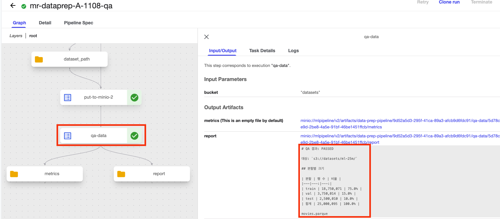
그림이 보여 주는 것
- 맨 위 제목은 실행 이름
mr-dataprep-A-1108-qa이고 초록 체크(성공) 표시가 있습니다. - 왼쪽 그래프:
dataset_path(분할 폴더 아티팩트) →put-to-minio-2✓ →qa-data✓(빨간 박스) → 그 아래metrics,report두 개의 출력 노드가 새로 갈라져 나옵니다. 코드에서 추가한 출력 2개가 그래프에 그대로 나타난 것입니다. - 오른쪽 패널(
qa-data, Input/Output 탭): Input Parameters 에bucket = "datasets", Output Artifacts 에metrics (This is an empty file by default)와report가 있고, 둘 다minio://mlpipeline/v2/artifacts/data-prep-pipeline/<run UUID>/qa-data/<UUID>/...형태의 저장소 주소입니다. - 빨간 박스 안(
report아래 회색 영역)이 보고서 미리보기입니다:# QA 결과: PASSED,대상: s3://datasets/ml-25m/,## 분할별 크기표에서train | 18,750,071 | 75.0%,val | 3,750,014 | 15.0%,test | 2,500,010 | 10.0%,합계 | 25,000,095 | 100.0%. 그 아래는 화면 크기 때문에movies.parque까지만 보이고 잘립니다.
초보자 풀이
- 미리보기는 마크다운 원문 글자(
|---|---:|같은 기호 포함)를 그대로 보여 줍니다. 표로 예쁘게 렌더링된 화면은report노드의 Visualization 탭에서 보는 것입니다. metrics (This is an empty file by default)라는 문구는 화면이 붙인 안내입니다. 숫자들은 Visualization 탭의 Scalar Metrics 표에서 확인합니다(이미지 37).- 주소의
minio://는 KFP 가 쓰는 저장소 별칭입니다. 이 환경의 저장소는 표준 MinIO 와 구성이 다를 수 있습니다(앞 절의 SeaweedFS 안내 참고).
여기서 확인할 것: ① 그래프에 metrics, report 노드가 있는지, ② 보고서 첫 줄이 PASSED 인지, ③ 세 분할의 합이 25,000,095 인지.
이미지 37. metrics 의 Visualization 확인
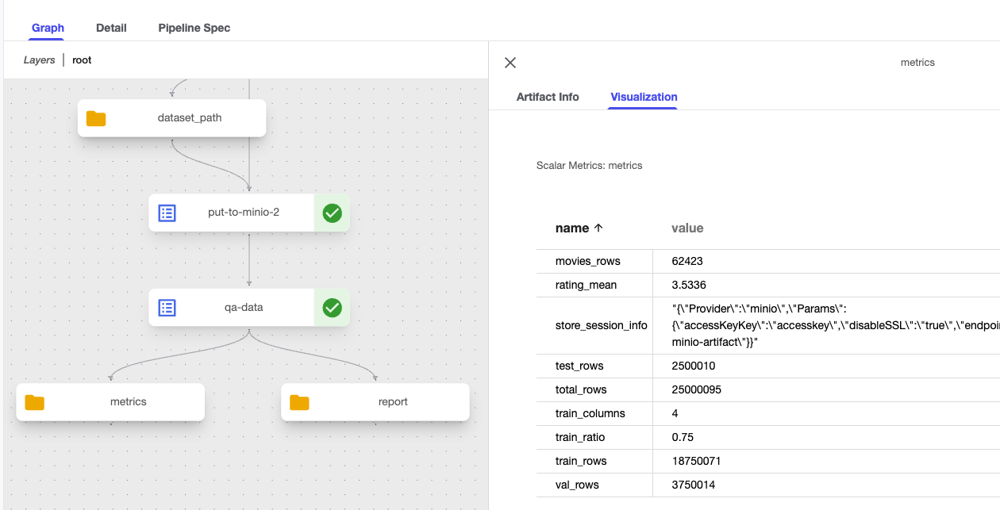
그림이 보여 주는 것: 오른쪽 패널의 탭이 Artifact Info / Visualization(선택됨)이고, 제목 Scalar Metrics: metrics 아래에 name / value 두 열의 표가 이름순으로 나옵니다.
| name | value (화면 표시) | 코드에서 온 곳 |
|---|---|---|
movies_rows |
62423 | movies.parquet.gzip 의 행 수 |
rating_mean |
3.5336 | train 평점 평균(소수 4자리 반올림) |
store_session_info |
(긴 JSON 문자열) | 코드에 없는 항목. KFP 가 아티팩트 저장 위치 정보를 자동으로 붙인 것으로 보임 |
test_rows |
2500010 | test 행 수 |
total_rows |
25000095 | 세 분할 합 |
train_columns |
4 | train 열 수 |
train_ratio |
0.75 | train 행 수 / 합계 |
train_rows |
18750071 | train 행 수 |
val_rows |
3750014 | val 행 수 |
초보자 풀이
- 코드에서
log_metric으로 기록한 값은 8개이고, 표에는 거기에store_session_info가 하나 더 있어 9줄입니다.store_session_info는 직접 쓴 값이 아닙니다. - 이 줄에 보이는
accessKeyKey: "accesskey"는 Secret 의 키 이름이지 접속 키 값이 아닙니다. 값은 이 화면에 나오지 않습니다. - 숫자 검산: 18,750,071 + 3,750,014 + 2,500,010 = 25,000,095. 비율은 18,750,071 / 25,000,095 ≈ 0.75 입니다.
여기서 확인할 것: 8개 이름이 모두 있는지, train_columns 가 4 인지, total_rows 가 25000095 인지.
이미지 38. report 확인 (캡처 누락)

⚠ 원문 정정: 이미지 38 은 "report 확인" 칸에 들어 있지만, 실제로는 바로 위 이미지 37 과 같은 Metrics 화면(파일 해시가 동일)이며 Markdown 보고서가 렌더링된 화면이 아닙니다. 보고서 내용은 이미지 36 의 미리보기와 아래 표(원격 kind 클러스터 book-env 의 텍스트 기록)에서 확인하세요.
초보자 풀이: 여러분이 직접 실행하면 report 노드를 클릭했을 때 위 이미지 36 의 미리보기보다 큰 화면에서 마크다운이 렌더링되어 보입니다. 아래 표는 원문 노트가 SeaweedFS 3.85 저장소(서비스 이름은 minio-service)에서 읽어 적어 둔 보고서 내용입니다.
보고서 내용 (book-env 의 텍스트 기록)
| 항목 | 값 |
|---|---|
| train | 18,750,071행 (75.0%) |
| val | 3,750,014행 (15.0%) |
| test | 2,500,010행 (10.0%) |
| 합계 | 25,000,095행 |
| movies | 62,423행 |
| 검사 1: train 열 수 | 기준 4, 실제 4, PASS |
| 검사 2: train 행 수 | 기준 ≥ 18,750,000, 실제 18,750,071, PASS |
| train 컬럼 | userId, movieId, rating, timestamp |
| 평점 평균 / 사용자 수 / 영화 수 | 3.534 / 162,541명 / 55,834편 |
| Parquet 파일 자체의 컬럼 | index 열이 포함되어 5개 |
수치가 맞는 이유 (산술)
- 1단계: 25,000,095 의 25%(
test_size = 1 - 0.75)를 떼어 test 후보로 둡니다 → 이 후보는 6,250,024행 = 3,750,014 + 2,500,010, 나머지가 train 18,750,071. - 2단계: 후보를
0.10 / (0.10 + 0.15) = 0.4비율로 나눠 test 2,500,010, val 3,750,014 를 얻습니다. - scikit-learn 은 비율로 준
test_size의 개수를 올림합니다. 1단계: 25,000,095 × 0.25 = 6,250,023.75 → 6,250,024행. 2단계: 6,250,024 × 0.4 = 2,500,009.6 → test 2,500,010행, 나머지가 val 3,750,014행. 그래서 전체 × 0.75 = 18,750,071.25 보다 작은 정수 18,750,071 이 train 이 됩니다. 이 계산이 book-env 의 출력과 일치합니다. - 사용자 수 162,541 은 MovieLens 25M 전체 사용자 수와 같고, 영화 수 55,834 는 train 분할 안에서 평점이 한 번이라도 나온 영화 수입니다.
movies.csv전체 62,423편과는 다른 값이니 섞어 읽지 마세요.
⚠ 원문 정정: "Parquet 파일 자체에는 index 열이 포함돼 5개"라는 관측은 A 가 쓴 파일 기준입니다. 보고서의train 컬럼은 pyarrow 의to_pandas()가 인덱스를 복원한 뒤의 4개이고,Parquet 파일 컬럼(인덱스 포함)은 파일에 실제 저장된 5개입니다. 인덱스 열의 이름·위치는 인덱스 종류와index옵션, 쓰는 엔진에 따라 달라지므로 "엔진별 불변 규칙"으로 외우지 말고, 뒤에서 이 Parquet 을 읽는 코드가index나__index_level_0__열에 의존하지 않게 쓰거나 저장할 때index=False를 명시하세요.
✅ 기대 결과: Succeeded, 그래프에 metrics/report 노드, Scalar Metrics 의 8개 값이 위 표와 같은 규칙으로 계산된 값(book-env 의 기록은 train 18750071, val 3750014, test 2500010, total 25000095, movies 62423, train_columns 4, train_ratio 0.75, rating_mean 3.5336). 데이터 크기(전체 행 수)나 분할 비율이 달라지면 행 수가 달라집니다. 전체 행 수와 비율이 같다면 시드(random_init)를 바꿔도 분할별 행 수는 같게 나오고, 바뀌는 것은 어떤 행이 뽑히는지와 평점 평균 같은 통계입니다.
🔍 확인 방법
- 화면 대신 저장소에서 읽고 싶다면(선택, 접속 정보는 환경변수로 이미 설정되어 있다고 가정, 값은 출력하지 않음):
[PC 터미널]
# 값을 출력하지 말고 설정 여부만 확인
[ -n "$AWS_ACCESS_KEY_ID" ] && [ -n "$AWS_SECRET_ACCESS_KEY" ] && echo "keys set"
# 저장소(S3 호환) 포워딩 주소 아래 아티팩트 경로 목록 (RUN_UUID 는 실행 상세 화면에서 복사해 넣음)
export RUN_UUID="<RUN_UUID>"
aws --endpoint-url "$S3_ENDPOINT" s3 ls "s3://mlpipeline/v2/artifacts/data-prep-pipeline/$RUN_UUID/qa-data/" --recursive
🔧 본인 환경에 맞게 교체:<S3_ENDPOINT>= 원격 kind 클러스터는http://127.0.0.1:9000같은 port-forward 주소. 확인:kubectl -n "$KFP_NAMESPACE" get svc.<RUN_UUID>= 실행 상세 화면의 Run ID. 실행 UUID 는 비밀번호가 아니지만 실행마다 다릅니다.
- 보고서 안의 숫자와 Scalar Metrics 의 숫자가 서로 같은지 대조합니다(
train_rows↔ 보고서의 train 행,rating_mean↔ 평점 평균).
⚠ 자주 나는 오류
report를 눌렀는데 Visualization 탭이 비어 있다면, 컴포넌트가Output[Markdown]대신Output[Artifact]로 선언된 경우입니다. 타입이system.Markdown인지 YAML 을 확인하세요.- 앞 절의 이미지 2에서 본 것처럼 "미리보기 오류"와 "실행 성공"은 다른 문제입니다. 화면에 미리보기 오류 문구가 보여도 태스크 자체는
Succeeded일 수 있습니다(그 원인은 확인 못함). - 숫자
rating_mean은 보고서에서는 소수 3자리(3.534), Metrics 에서는 4자리(3.5336)로 반올림 자릿수가 다릅니다. 틀린 것이 아닙니다. - Scalar Metrics 의 값은
log_metric한 번에 하나입니다. 같은 이름을 두 번 기록하면 마지막 값만 남는지 등의 세부 동작은 확인 못함.
[실습] 컨테이너화(target_image) 실행 결과 확인
단계: mr-dataprep-B-1108 이 성공했는지, 어떤 이미지로 돌았는지 확인한다
🎯 목적: B 파이프라인(ml-25m-processing-containerized)은 6개 컴포넌트가 미리 빌드한 이미지 하나(data_preprocessor:1.0.0)를 쓰도록 만든 것입니다. ① 실행이 끝까지 성공했는지, ② 파드가 정말 그 이미지로 떴는지, ③ 이미지가 내부 레지스트리에 올라가 있는지를 차례로 확인합니다.
📋 사전조건
- B 실행(
mr-dataprep-B-1108)을 제출해 끝난 상태(앞 절의 실행 명령 참고) kubectl이 클러스터에 연결되어 있고KFP_NAMESPACE가export되어 있을 것- 내부 레지스트리 화면(UI)이나 레지스트리 주소에 접근할 수 있을 것(원격 kind 클러스터에서는
yatai-image-builder네임스페이스의docker-registry서비스)
B 의 이미지가 노드에 닿기까지
flowchart LR
BLD["PC에서 kfp component build 로 이미지 빌드"] --> TAG["태그 127.0.0.1:5000 을 127.0.0.1:5001 로 다시 붙임"]
TAG --> PUSH["docker push 로 포트포워딩된 5001 에 올림"]
PUSH --> REG["클러스터 내부 레지스트리 data_preprocessor 1.0.0"]
REG --> NODE["노드가 127.0.0.1:5000 으로 pull"]
NODE --> POD["컴포넌트 파드가 이 이미지로 실행"]호스트의 127.0.0.1:5000 은 원격 kind 클러스터에서 MLflow 포트포워딩이라 레지스트리가 아닙니다. 반대로 노드 안의 127.0.0.1:5000 은 노드마다 떠 있는 프록시(DaemonSet)가 레지스트리로 이어 주지만 노드 안에서만 통합니다. 그래서 호스트에서는 레지스트리 서비스를 5001 로 포트포워딩해서 push 하고, 파드가 쓰는 이미지 이름은 127.0.0.1:5000/... 로 둡니다. 같은 이미지에 이름표(태그)를 두 개 붙이는 셈입니다.
⌨ 명령어 ①: B 이미지 빌드와 push 요약 — [PC 터미널] (원격 kind 클러스터 book-env 의 실행 요약. 이 단계를 이미 했다면 건너뜁니다)
export WORKDIR_B="$HOME/ml-study/ch07/mr_b" # B 코드 폴더
export IMAGE_NAME="<IMAGE_NAME_TAG>" # 예: data_preprocessor:1.0.0
export NODE_REGISTRY="<NODE_REGISTRY_ADDR>" # 예: 127.0.0.1:5000 (노드가 pull 하는 주소)
export HOST_REGISTRY="<HOST_REGISTRY_ADDR>" # 예: 127.0.0.1:5001 (호스트에서 push 하는 주소)
cd "$WORKDIR_B"
# 1) 컴포넌트가 선언한 target_image 로 로컬에 이미지 빌드 (push 는 하지 않음)
kfp component build . --component-filepattern data_components/dataset_preparation.py --no-push-image
# 2) 호스트용 이름표를 붙이고 push (레지스트리 서비스를 5001 로 포트포워딩해 둔 상태)
docker tag "$NODE_REGISTRY/$IMAGE_NAME" "$HOST_REGISTRY/$IMAGE_NAME" \
&& docker push "$HOST_REGISTRY/$IMAGE_NAME"
# 3) 로컬 이미지 목록 확인
docker images
🔧 본인 환경에 맞게 교체
-<WORKDIR_B>= book-env 는 원격~/ml-study/ch07/mr_b(scratch/ch07/mr_b/에서 옮김). B 코드가 있는 폴더.
-<IMAGE_NAME_TAG>=data_preprocessor:1.0.0. 코드의TARGET_IMAGE와 이름·태그가 같아야 합니다.
-<NODE_REGISTRY_ADDR>,<HOST_REGISTRY_ADDR>= book-env 는 각각127.0.0.1:5000,127.0.0.1:5001. 확인: 레지스트리 서비스 포트포워딩kubectl -n <REGISTRY_NAMESPACE> port-forward svc/docker-registry 5001:5000후curl -s http://127.0.0.1:5001/v2/_catalog(보충 설명).
-kfp실행 파일 = book-env 는 가상환경의kfp를 전체 경로로 지정했습니다. 본인 환경에서는 가상환경을 활성화하거나kfp전체 경로를 쓰세요. 확인:kfp --version.
원격 kind 클러스터 book-env 의 docker images 결과(발췌, 해시 일부):
| IMAGE | ID | DISK USAGE | CONTENT SIZE |
|---|---|---|---|
127.0.0.1:5000/data_preprocessor:1.0.0 |
11028c82edbb |
2.51GB | 618MB |
127.0.0.1:5001/data_preprocessor:1.0.0 |
11028c82edbb |
2.51GB | 618MB |
두 줄의 ID 가 같다는 것은 이름표만 다른 같은 이미지라는 뜻입니다. DISK USAGE(2.51GB)와 CONTENT SIZE(618MB)는 서로 다른 지표입니다(서로 다른 기준으로 센 크기). 아래 레지스트리 화면의 590 MB 와도 다른 지표이므로 서로 같은 숫자인지 비교하지 마세요.
⚠ 원문 정정:kfp component build의--platform기본값은 KFP 2.9.0 배포 소스 기준linux/amd64입니다. "M2 에서는 기본으로 arm64 가 빌드된다"는 설명은 틀립니다. 아래 이미지 40 의amd64표시는 이미지 자체가 amd64 용이라는 것만 말해 주며, book-env 의 호스트가 어떤 CPU 인지는 알려 주지 않습니다.
이미지 39. B 실행 성공
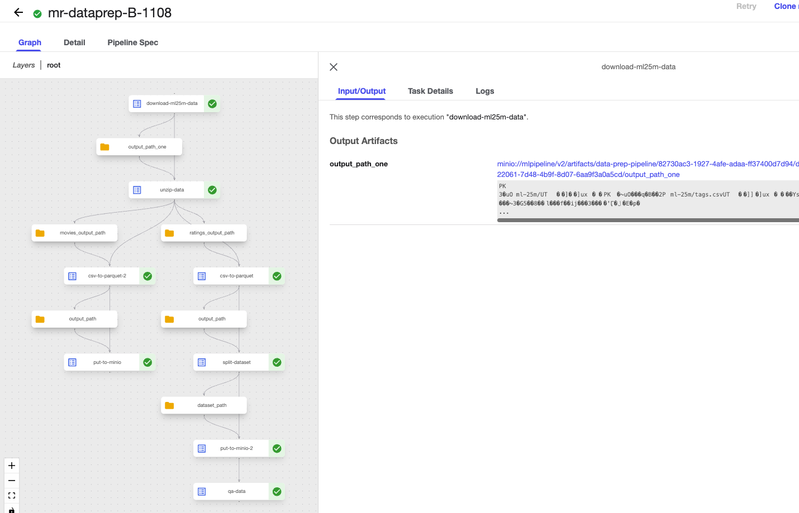
그림이 보여 주는 것
- 제목
mr-dataprep-B-1108옆 초록 체크(실행 성공), 상단 탭Graph/Detail/Pipeline Spec. - 왼쪽 그래프(위에서 아래로):
download-ml25m-data✓ →output_path_one→unzip-data✓ → 둘로 갈라짐: 왼쪽 가지movies_output_path→csv-to-parquet-2✓ →output_path→put-to-minio✓, 오른쪽 가지ratings_output_path→csv-to-parquet✓ →output_path→split-dataset✓ →dataset_path→put-to-minio-2✓ →qa-data✓. - 오른쪽 패널은
download-ml25m-data의Input/Output탭이며,Output Artifacts의output_path_one은minio://mlpipeline/v2/artifacts/data-prep-pipeline/82730ac3-.../...주소를 가리킵니다. 그 아래 회색 미리보기에는PK로 시작하는 알아볼 수 없는 글자와ml-25m/tags.csv같은 파일 이름 조각이 보입니다.
초보자 풀이
- 그래프 모양은 앞 절 A 와 같습니다. B 는 "이미지만 다르고 파이프라인 구조는 같은" 변형이기 때문입니다. 8개 태스크(다운로드, 압축 해제, 변환 2, 분할, 업로드 2, QA)가 모두 초록입니다.
- 미리보기가 깨져 보이는 이유: 이 아티팩트는 zip 파일(압축 파일)입니다. zip 파일은 맨 앞 두 글자가
PK이고, 안에 파일 이름들이 적혀 있습니다. 텍스트가 아닌 파일을 글자로 보여 주니 깨져 보이는 것이며 오류가 아닙니다. 파일 안에ml-25m/tags.csv같은 이름이 보이는 것이ml-25m.zip을 받았다는 증거입니다. - 주소의
82730ac3-...는 B 실행의 UUID(book-env 의 B run)입니다. 실행마다 다르며 비밀번호가 아닙니다.
여기서 확인할 것: 제목 옆 초록 체크, 그래프의 8개 태스크가 모두 ✓, 두 가지(movies/ratings)로 갈라졌다가 끝에서 QA 로 이어지는 모양.
⌨ 명령어 ②: 컴포넌트 파드가 쓴 이미지 확인 — [PC 터미널]
# 이 실행의 파드 이름을 찾는다 (이름의 앞부분 data-prep-pipeline-... 와 뒷숫자는 실행마다 다름)
kubectl get pods -n "$KFP_NAMESPACE" | grep "data-prep-pipeline"
# 찾은 파드 하나를 골라, 사용하는 이미지만 뽑아 중복을 제거
export POD_NAME="<POD_NAME>" # 예: data-prep-pipeline-w549q-system-container-impl-317027607
kubectl get pod -n "$KFP_NAMESPACE" "$POD_NAME" -o yaml | grep -i image: | sort | uniq
🔧 본인 환경에 맞게 교체:<POD_NAME>= book-env 의 값은data-prep-pipeline-w549q-system-container-impl-317027607. 워크플로 이름(w549q)과 끝 숫자가 실행마다 달라지므로 위grep결과에서 본인 것을 고릅니다. 파드가 이미 정리되어 안 보이면 실행 직후에 다시 시도하세요.
book-env 의 출력:
image: 127.0.0.1:5000/data_preprocessor:1.0.0
image: ghcr.io/kubeflow/kfp-launcher:2.4.1
image: quay.io/argoproj/argoexec:v3.4.17
| 이미지 | 역할 |
|---|---|
127.0.0.1:5000/data_preprocessor:1.0.0 |
내가 빌드한 B 이미지. 컴포넌트 코드가 도는 곳 |
ghcr.io/kubeflow/kfp-launcher:2.4.1 |
KFP 가 붙이는 보조 도구(launcher). 입력을 내려받고 출력을 저장소에 올림 |
quay.io/argoproj/argoexec:v3.4.17 |
워크플로 엔진(Argo)의 보조 컨테이너 |
⚠ 원문 정정: "컴포넌트 하나 = 파드 하나 = 컨테이너 하나"라고 외우면 부정확합니다. 태스크마다 별도 파드가 뜨는 것은 맞지만, 한 파드에는 위처럼 사용자 이미지 외에 launcher, argoexec 이미지도 함께 나옵니다.
⌨ 명령어 ③: 레지스트리에서 이미지 확인 — [브라우저] 또는 [PC 터미널]
- book-env 에서는 내부 도커 레지스트리 UI(화면 상단 제목
Docker Registry UI)에서data_preprocessor항목을 열어 확인했습니다. UI 주소는 환경마다 달라 노트에 적혀 있지 않으므로 확인 못함입니다. - 화면 없이 확인하려면 레지스트리 서비스를 포트포워딩한 뒤 표준 레지스트리 API 로 태그 목록을 봅니다(보충 설명):
# 레지스트리 서비스 포트포워딩 (다른 터미널에서 켜 둠)
kubectl -n "$REGISTRY_NS" port-forward svc/docker-registry 5001:5000
# 태그 목록
curl -s http://127.0.0.1:5001/v2/data_preprocessor/tags/list
이미지 40. 내부 도커 레지스트리 UI 에 push 된 이미지
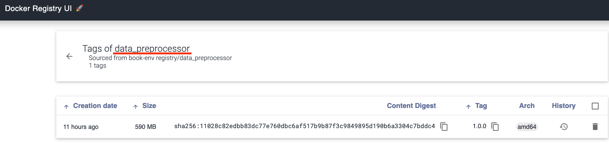
그림이 보여 주는 것
- 검은 상단 바에
Docker Registry UI. 본문 제목은Tags of data_preprocessor(빨간 밑줄), 부제Sourced from book-env registry/data_preprocessor,1 tags. - 표 한 줄: Creation date 11 hours ago, Size 590 MB, Content Digest
sha256:11028c82edbb83dc77e760dbc6af517b9b87f3c9849895d190b6a3304c7bddc4, Tag 1.0.0, Arch amd64.
초보자 풀이
1 tags+Tag 1.0.0은 이 레지스트리의data_preprocessor이름 아래 태그가 1.0.0 하나뿐이라는 뜻입니다. 코드를 고치고 새 태그를 올리면1.0.1이 추가로 보입니다(아래 압축 수준 1 적용).- Content Digest 앞부분
11028c82edbb는 위docker images의 ID 와 같습니다. 같은 이미지가 올라갔다는 증거입니다. - Size 590 MB 는 레지스트리 화면의 표시값으로,
docker images의 618MB(CONTENT SIZE), 2.51GB(DISK USAGE)와는 서로 다른 지표입니다. 같은 숫자인지 맞춰 보려 하지 마세요. Arch amd64는 이 이미지가 amd64 용이라는 표시입니다. 위 정정 박스처럼 book-env 호스트의 CPU 종류를 말해 주지는 않습니다.
여기서 확인할 것: 태그 1.0.0, Arch 가 내 클러스터 노드의 아키텍처와 같은지(kubectl get nodes -o jsonpath='{.items[*].status.nodeInfo.architecture}').
B 에서 새로 알게 된 점 (book-env 의 두 가지 발견)
발견 1. target_image 가 있어도 실행 때 pip install 명령이 남습니다. SDK 2.9.0 은 target_image 가 지정돼도 컴파일된 실행 명령에 packages_to_install 에 적은 패키지의 pip install 을 그대로 넣습니다(KFP 가 자동으로 설치하던 kfp 설치만 빠짐). "빌드할 때 설치했으니 실행 때는 설치가 없다"는 책의 설명과 다릅니다. 패키지가 이미 이미지에 들어 있어 실제 설치는 거의 걸리지 않았을 것으로 보이지만, 파드 로그로 직접 확인하지는 않았습니다(확인 못함).
발견 2. 이미지 하나에 6개 컴포넌트의 패키지가 합쳐져 pyarrow 와 fastparquet 가 모두 설치됩니다. pandas 의 to_parquet 은 engine="auto" 일 때 pyarrow 를 먼저 고릅니다. 그래서 A(fastparquet 만 설치)와 B 가 만든 Parquet 의 형태가 달라졌습니다.
| 구분 | 만든 라이브러리 | 컬럼 순서 |
|---|---|---|
| A | fastparquet-python 2026.9.0 | [index, userId, movieId, rating, timestamp] |
| B | parquet-cpp-arrow 26.0.1 | [userId, movieId, rating, timestamp, __index_level_0__] |
(두 Parquet 의 created_by 와 컬럼은 book-env 의 관측값입니다.) 인덱스 열의 이름과 위치가 다르다는 것을 뒤 장에서 이 Parquet 을 읽을 때 기억해야 합니다. QA 는 pyarrow 의 to_pandas() 가 인덱스를 복원해 주기 때문에 둘 다 4열로 통과했습니다.
⚠ 원문 정정: 원문 노트는 B 의 split 이 A 보다 약 4배 느린 원인을 "아래 원인 분석에서 확인했다"고 쓰지만, 그 원인 분석 표는 노트에 없습니다. 노트에서 확인되는 것은 숫자(B 의 split 344초, A 의 split 96초)와 압축 수준을 낮추니 줄었다는 실험(압축 수준 1 적용)뿐입니다. 느려진 이유는 아래 압축 수준 1 적용 절의 가설 설명을 참고하되 확정 사실로 받아들이지 마세요.
B 가 줄인 것: 반복 설치 시간 (book-env 의 기록)
앞 절 A 의 분석에서, 컴포넌트마다 실행 때 pip install 을 하므로 설치 시간이 소요 시간에 섞여 있다고 했고(A 의 qa_data 27초, movies 변환 32초), B 는 이미지 하나에 모아 이 시간을 줄였다고 기록했습니다.
| 태스크 | A (book-env 의 기록) | B (book-env 의 기록) |
|---|---|---|
qa_data |
27초 | 10초 |
movies 변환(csv_to_parquet-2) |
32초 | 20초 |
split_dataset |
96초 | 344초(압축 수준 1 적용 절 도입부의 "기존 344초") |
B 의 다른 태스크 시간은 노트에 없어서 확인 못함입니다. 시간은 파드 시작과 -driver 단계(3~4초)를 포함한 KFP API 의 태스크 시간이며, 순수 연산 시간과 다릅니다.
✅ 기대 결과
- 실행이
Succeeded, 그래프 8개 태스크 ✓. uniq결과에127.0.0.1:5000/data_preprocessor:1.0.0이 포함됨.- 레지스트리에
data_preprocessor의1.0.0태그가 있음.
🔍 확인 방법
- 이미지 주소가
data_preprocessor가 아닌python:3.11이면target_image가 적용되지 않은 컴파일 결과를 올린 것입니다(컴파일된 YAML 의image:줄을 확인). - 컴파일된 B YAML 의
image:줄이 모두127.0.0.1:5000/data_preprocessor:1.0.0인지:grep -n "image:" compiled_pipelines/dataPrep_pipeline_containerized.yaml.
⚠ 자주 나는 오류
- 파드가
ErrImagePull/ImagePullBackOff— 호스트에서 push 는 됐는데 노드가127.0.0.1:5000으로 못 가져오는 경우입니다. 노드의 프록시(DaemonSet)가 떠 있는지, 레지스트리 서비스가 살아 있는지 확인하세요(원격 kind 클러스터에만 있는 구성이므로 일반 kind 에서는 별도 준비가 필요합니다). - 호스트의
127.0.0.1:5000으로 push 하면 레지스트리가 아닌 다른 서비스(MLflow 포트포워딩) 에 닿아 실패합니다. push 는 5001 로 하세요. - 코드를 고치고 같은 태그(
1.0.0)로 다시 push 하면, 노드가IfNotPresent로 이미 가진 이미지를 다시 가져오지 않아 옛 코드가 돕니다. 코드를 고치면 태그를 올리세요(압축 수준 1 적용 에서1.0.1). - 이미지가 크다(DISK USAGE 2.51GB)는 점: 레지스트리와 노드의 디스크를 씁니다. 디스크 여유를 확인하세요. 앞 절의
datasets/ml-25m/덮어쓰기(B 가 A 의 파일을 덮어씀)도 같이 기억하세요. - M2(arm64) 에서 이미지를 빌드하면서 노드는 amd64 인 경우(또는 그 반대), 위 Mac 안내의
--platform을 맞춰야 합니다.
[실습] 압축 수준 낮추기(compression_level=1) 적용
단계: 압축 수준을 낮춘 새 이미지(1.0.1)를 만들어 실행한다
🎯 목적: B 에서 split_dataset 이 가장 오래 걸렸습니다(원격 kind 클러스터 book-env 의 기록 344초). Parquet 파일을 쓸 때 gzip 압축을 가장 약한 수준(1) 으로 낮추면 시간이 줄어드는지 실험합니다. 옵션 실습입니다.
📋 사전조건
- B 실행(
mr-dataprep-B-1108)이 성공했고, 이미지data_preprocessor:1.0.0이 레지스트리에 있을 것 - B 코드 폴더를 복사한 새 폴더에서 작업할 것(book-env 는
scratch/ch07/mr_b_lvl1/사용). 원본mr_b/는 그대로 둡니다 - 이미지에
pyarrow가 들어 있을 것(B 는 6개 컴포넌트의 패키지가 합쳐져 들어 있음 - 앞 절 발견 2) kfp==2.9.0가상환경, 레지스트리 포트포워딩(5001) 가능
바꾼 부분: split_dataset 의 to_parquet 3곳
원문 노트의 설명 그대로, split_dataset 의 to_parquet 세 곳(train, test, val) 에 compression_level=1 을 추가했습니다. 나머지 코드는 B 와 같습니다.
split_dataset 코드 전체 보기 (28줄)
@dsl.component(base_image="python:3.11", target_image=TARGET_IMAGE, packages_to_install=["scikit-learn", "pandas", "fastparquet"])
def split_dataset(input_parquet: Input[Artifact], dataset_path: Output[Artifact], random_state: int = 42):
from sklearn.model_selection import train_test_split
import os
import pandas as pd
train_ratio = 0.75
validation_ratio = 0.15
test_ratio = 0.10
ratings_df = pd.read_parquet(input_parquet.path)
# train is now 75% of the entire data set
train, test = train_test_split(
ratings_df,
test_size=1 - train_ratio,
random_state=random_state)
# (원본의 ratings_df.user_id / item_id 참조는 삭제: ratings.csv 컬럼은 userId/movieId라 AttributeError, 값도 미사용)
# test is now 10% of the initial data set
# validation is now 15% of the initial data set
val, test = train_test_split(
test,
test_size=test_ratio / (test_ratio + validation_ratio),
random_state=random_state)
os.mkdir(dataset_path.path)
train.to_parquet(os.path.join(dataset_path.path, 'train.parquet.gzip'), compression='gzip', compression_level=1)
test.to_parquet(os.path.join(dataset_path.path, 'test.parquet.gzip'), compression='gzip', compression_level=1)
val.to_parquet(os.path.join(dataset_path.path, 'val.parquet.gzip'), compression='gzip', compression_level=1)
바뀐 줄만 따로 보면:
# 전: compression='gzip' 만 지정
train.to_parquet(os.path.join(dataset_path.path, 'train.parquet.gzip'), compression='gzip')
# 후: compression_level=1 추가 (train, test, val 3곳 모두)
train.to_parquet(os.path.join(dataset_path.path, 'train.parquet.gzip'), compression='gzip', compression_level=1)
| 줄 | 설명 |
|---|---|
target_image=TARGET_IMAGE |
이 컴포넌트가 쓸 이미지 이름(TARGET_IMAGE 변수에 정의, 압축 수준 1 적용 은 태그 1.0.1) |
pd.read_parquet(input_parquet.path) |
앞 태스크가 만든 ratings Parquet 전체를 메모리로 읽음 |
첫 train_test_split(test_size=1 - train_ratio) |
전체의 75% 를 train, 나머지 25% 를 test 후보로 |
둘째 train_test_split(test_size=test_ratio / (test_ratio + validation_ratio)) |
후보를 0.10/0.25 = 0.4 비율로 나눠 test 10%, val 15% |
os.mkdir(dataset_path.path) |
출력은 파일이 아니라 폴더 아티팩트 |
to_parquet(..., compression='gzip', compression_level=1) |
압축 방식은 gzip, 수준은 1 |
⚠ 원문 정정:compression_level은 pyarrow 로 Parquet 을 쓸 때 쓰는 옵션입니다(Apache Arrowwrite_table에 있는 인수). fastparquet 의write함수 시그니처에는 이 인수가 없습니다. book-env 에서 이 코드가 동작한 것은 B 이미지에 pyarrow 와 fastparquet 가 모두 들어 있고, pandas 의engine="auto"가 pyarrow 를 먼저 고르기 때문입니다. 이 줄을 A 방식(fastparquet 만 설치)에 그대로 붙이면 오류가 날 수 있으니 쓰지 말고, 엔진을 분명히 하려면engine='pyarrow'를 직접 쓰세요(아래 보충 코드). fastparquet 에서 어떤 오류 메시지가 나는지는 확인 못함입니다. 또 같은 호출에서 pyarrow 의 기본 압축 수준이 몇인지도 확인하지 못했습니다("기본 9" 같은 숫자를 외우지 마세요).
보충 설명: 엔진을 명시한 형태입니다(노트 코드에 없는 개선안이며, 실행해 확인하지 못했습니다):
train.to_parquet(os.path.join(dataset_path.path, 'train.parquet.gzip'),
engine='pyarrow', compression='gzip', compression_level=1, index=False)
index=False 는 인덱스 열을 파일에 저장하지 않게 합니다. 원문 노트는 이렇게 쓰면 앞 절의 index / __index_level_0__ 열 문제가 사라지고 속도에도 도움이 될 것이라고 적었지만, 속도 효과는 측정한 값이 없습니다(확인 못함). 이 보충 코드는 압축 수준 1 적용 의 측정에 쓰이지 않았습니다.
새 이미지 만들기: 태그를 1.0.1 로 올리는 이유
⌨ 명령어 — [PC 터미널] (book-env 에서는 원격 서버에서 이미지를 빌드해 push)
export WORKDIR_LVL1="$HOME/ml-study/ch07/mr_b_lvl1" # B 코드를 복사한 폴더
export NEW_IMAGE="<NEW_IMAGE_TAG>" # 예: data_preprocessor:1.0.1
export NODE_REGISTRY="<NODE_REGISTRY_ADDR>" # 예: 127.0.0.1:5000
export HOST_REGISTRY="<HOST_REGISTRY_ADDR>" # 예: 127.0.0.1:5001
cd "$WORKDIR_LVL1"
# 0) 코드의 TARGET_IMAGE 를 새 태그로 고쳤는지 확인
grep -n "TARGET_IMAGE" data_components/dataset_preparation.py | head -3
# 1) 이미지 빌드 (push 는 나중에)
kfp component build . --component-filepattern data_components/dataset_preparation.py --no-push-image
# 2) 호스트용 이름표를 붙여 push
docker tag "$NODE_REGISTRY/$NEW_IMAGE" "$HOST_REGISTRY/$NEW_IMAGE" \
&& docker push "$HOST_REGISTRY/$NEW_IMAGE"
# 3) 컴파일
mkdir -p compiled_pipelines
python 01_data_preparation_pipeline.py # 가상환경을 활성화한 상태 기준
# 4) 이미지 안 소스에 compression_level=1 이 3곳 들어 있는지 확인
docker run --rm --entrypoint sh "$HOST_REGISTRY/$NEW_IMAGE" \
-c "grep -rn 'compression_level=1' ."
🔧 본인 환경에 맞게 교체
-<WORKDIR_LVL1>= book-env 는scratch/ch07/mr_b_lvl1/. B 코드를 복사한 폴더.
-<NEW_IMAGE_TAG>= book-env 는data_preprocessor:1.0.1. 코드 안의TARGET_IMAGE와 반드시 같은 태그여야 합니다.
-<NODE_REGISTRY_ADDR>/<HOST_REGISTRY_ADDR>= 앞 절과 같은 값(book-env 의127.0.0.1:5000/127.0.0.1:5001).
- 4번의docker run ... grep은 원문 노트가 쓴 방법이 아니라 이미지 안 소스를 확인하는 한 예입니다(보충 설명). 노트는 "이미지 안 소스에 compression_level=1이 3곳 들어 있는 걸 grep으로 확인했습니다"라고만 적었습니다. 이미지의 소스 위치는COPY . .로 작업 폴더에 복사된 곳이며, 환경에 따라 달라질 수 있습니다.
왜 태그를 올리나: 노드는 한 번 가져온 1.0.0 이미지를 캐시하고 같은 태그를 다시 받지 않습니다(IfNotPresent 정책). 코드는 바뀌었는데 태그가 1.0.0 이면 노드가 옛 이미지를 계속 써서 바뀐 코드가 실행되지 않습니다. book-env 에서 TARGET_IMAGE 태그를 1.0.1 로 올린 이유입니다.
flowchart TD
C["코드 수정 compression_level 1"] --> TAG["TARGET_IMAGE 태그 1.0.0 을 1.0.1 로 변경"]
TAG --> B["이미지 빌드"]
B --> P["5001 로 push"]
P --> CMP["파이프라인 컴파일"]
CMP --> RUN["실행 mr-dataprep-B-1108-lvl1"]
TAG -. "태그를 안 올리면" .-> OLD["노드가 캐시한 1.0.0 사용 옛 코드 실행"]원문 노트는 이어서 컴파일된 YAML 에서 compression_level 문자열을 찾으면 0건이라고 적었습니다. target_image 컴포넌트는 함수 소스를 YAML 에 넣지 않고 이미지 안에 두기 때문입니다. 경량 컴포넌트(A)는 YAML 의 실행 명령 안에 함수 소스가 들어 있어 문자열로 찾을 수 있지만, target_image 를 쓰면 찾을 수 없는 것이 정상입니다. 그래서 확인은 YAML 이 아니라 이미지 안에서 합니다(위 4번).
✅ 기대 결과
- 이미지 빌드·push 가 오류 없이 끝남. 레지스트리에
data_preprocessor의 태그가1.0.0,1.0.1두 개로 보임. - 4번
grep에서compression_level=1이 포함된 줄이 3줄(train, test, val) 나옴. - 컴파일된 YAML 에서
grep -c compression_level은 0.
🔍 확인 방법
- 레지스트리 태그 목록:
curl -s http://127.0.0.1:5001/v2/data_preprocessor/tags/list(보충 설명). - 컴파일된 YAML 의
image:줄이...data_preprocessor:1.0.1인지:grep -n "image:" compiled_pipelines/*.yaml.
⌨ 명령어 (실행) — [PC 터미널]
# 컴파일한 YAML 을 실행 이름과 함께 제출한다.
# 앞 절 qa-2 의 보충: 예시 스크립트(submit_qa.py)에서 pipeline_file 을 이 YAML 로,
# run_name 을 "mr-dataprep-B-1108-lvl1" 로 바꿔서 실행한다.
python submit_qa.py
실행 이름 mr-dataprep-B-1108-lvl1 은 book-env 의 값이며 자유롭게 바꿀 수 있습니다.
submit_qa.py가 없다면: 위 명령의submit_qa.py는 앞의 선택 실습(품질 점검 파이프라인 절)에서 만드는 보충 예시 파일입니다. 그 실습을 건너뛰었거나 이 폴더에 파일이 없다면, 7.3.1 에서 만든 범용 제출 스크립트를 쓰면 됩니다:"$PY" "$HOME/ml-study/ch07/submit.py" compiled_pipelines/<컴파일된_YAML> <내_실행_이름> --no-logs --timeout 3600. 이 파일의HOST도 내KFP_HOST와 같아야 합니다. 어느 쪽이든 YAML 경로와 실행 이름은 이 실습의 값으로 바꿔 넣어야 하고,python은kfp==2.9.0이 설치된 가상환경의 파이썬($PY)이어야 합니다.
⚠ 자주 나는 오류
- 태그를 올리지 않고 같은
1.0.0으로 push — 노드가 옛 이미지를 써서 시간이 줄지 않습니다. 이때는 파드 이미지 확인(앞 절 명령 ②)에서1.0.0이 보이는지로 알 수 있습니다. TARGET_IMAGE와 빌드·push 한 태그가 다름 — 컴파일된 YAML 은TARGET_IMAGE를 가리키므로, 둘이 다르면 파드가 이미지를 못 찾아ImagePullBackOff가 납니다.- A 방식(fastparquet 만 있는 경량 컴포넌트)에서
compression_level=1을 넣으면 오류 가능성 — 위 정정 박스 참고. - YAML 에서 문자열이 0건이라고 당황 —
target_image의 정상 동작입니다(위). - A/B/압축 수준 1 적용 이 모두 같은
datasets/ml-25m/경로에 쓰는 점 — 지금 그 경로의 파일은 마지막으로 돈 실행의 결과입니다. 어떤 결과를 이후 장에서 쓸지 정해 두세요(노트는 B 결과가 현재 파일이라고 적었고, 압축 수준 1 적용 이후의 상태는 확인 못함).
[실습] 압축 수준을 낮춘 효과(344초에서 32초)와 해석
단계: split_dataset 의 시간을 B 와 비교한다
🎯 목적: compression_level=1 이 split_dataset 시간을 얼마나 줄였는지 숫자로 확인하고, 이 숫자를 어디까지 믿어도 되는지 정리합니다.
📋 사전조건: 압축 수준 낮추기 절의 실행(mr-dataprep-B-1108-lvl1)이 성공했고, 비교할 B 실행(mr-dataprep-B-1108)이 같은 클러스터에 있을 것.
⌨ 명령어 — [브라우저] (명령 없이 화면 조작)
- 두 실행(B, 압축 수준 1 적용)의 상세 화면을 각각 연다.
- 그래프에서
split-dataset노드를 클릭 → Task Details 탭에서 시작·종료 시각 또는 소요 시간을 읽는다. - 두 값을 표에 적어 비교한다.
시간은 파드 시작과 -driver 단계(3~4초) 를 포함한 KFP 의 태스크 시간이라, 컴포넌트 안에서 to_parquet 이 도는 순수 연산 시간보다 큽니다.
원격 kind 클러스터 book-env 에서 기록한 과거 실행 결과
| 실행 | 이미지 | split_dataset 시간 |
비고 |
|---|---|---|---|
A (mr-dataprep-A-1108) |
경량 컴포넌트(매번 pip) | 96초 | fastparquet 만 설치 |
B (mr-dataprep-B-1108) |
data_preprocessor:1.0.0 |
344초 | 이미지에 pyarrow·fastparquet 모두 |
B-lvl1 (mr-dataprep-B-1108-lvl1) |
data_preprocessor:1.0.1 |
32초 | compression_level=1 3곳 |
원문 노트는 이를 "split 시간이 기존 344초 → 32초로 10.8배 빨라짐"이라고 정리했습니다.
산술 확인: 344 ÷ 32 = 10.75 ≈ 10.8.
flowchart LR
A["A 경량 split 96초"] --> B["B 컨테이너화 split 344초"]
B --> L["B lvl1 compression_level 1 split 32초"]왜 줄었을까: 압축 수준의 의미
- gzip 의 압축 수준은 낮을수록 빨리 끝나고 파일이 조금 더 커지며, 높을수록 오래 걸리고 파일이 더 작아지는 쪽으로 움직입니다 (보충 설명: 일반적인 압축 알고리즘의 성질).
- 압축은 무손실이라, 어떤 수준으로 저장하든 읽으면 같은 데이터가 나옵니다. 바뀌는 것은 파일 크기와 쓰는 시간입니다.
- 이번 실행에서
split_dataset은 train 18,750,071행, val 3,750,014행, test 2,500,010행을 모두 gzip 으로 씁니다. 가장 큰 train 을 쓰는 단계에서 압축 시간이 차지하는 몫이 컸다는 것은 측정값(344초→32초)이 말해 주는 정황이며, 시간이 어디서 얼마 줄었는지를 나눠 잰 값은 없습니다(확인 못함).
이 숫자를 믿는 범위
⚠ 원문 정정: "10.8배 빨라짐"은 book-env 에서 한 번 측정한 값이며 다른 데이터·기기·클러스터에서의 배율을 보장하지 않습니다. 또 원문 노트에는 A·B·압축 수준 1 적용 의 Parquet 엔진·인덱스·플랫폼·캐시 조건을 모두 같게 맞춰 비교한 기록이 없습니다. 특히 위 표의 A(96초)와 압축 수준 1 적용(32초)을 곧바로 비교해 "압축 수준 1 적용 이 A 보다 3배 빠르다"고 결론짓지 마세요. A 와 B 는 쓰는 Parquet 엔진이 달라졌기 때문에(앞 절 발견 2) 같은 조건의 비교가 아닙니다. B 의 split 이 A 보다 약 4배 느린 원인도 노트 본문에 분석 표가 없어 확인 못함입니다(344 ÷ 96 ≈ 3.6).
| 질문 | 확인된 내용 |
|---|---|
split_dataset 이 줄었나? |
B 344초 → 압축 수준 1 적용 32초 (book-env 의 한 번 측정) |
| 몇 배인가? | 344/32 = 10.75, 약 10.8배 |
| 파이프라인 전체 시간은? | 압축 수준 1 적용 실행의 전체 시간은 노트에 없음 (확인 못함) |
| 결과 파일이 달라지나? | 압축 수준만 다르고 내용은 같아야 함. 파일 크기 변화·행 수 재검증은 노트에 없음 (확인 못함) |
| 다른 컴포넌트에도 같은 효과? | compression_level 은 Parquet 쓰기에만 해당. 다른 컴포넌트와 환경은 확인 못함 |
효과가 index=False 때문은 아닌가? |
압축 수준 1 적용 코드에는 index=False 가 없었으므로 압축 수준 변경이 변수 (단, 다른 조건이 같았는지는 확인 못함) |
압축 수준 1 적용 이후에 반드시 할 일: 결과가 같은지 확인
압축 수준을 바꿔도 행 수와 분할 비율은 같아야 합니다. 앞의 품질 점검 보고서(또는 metrics)를 압축 수준 1 적용 실행에도 붙이면 한눈에 비교됩니다.
[PC 터미널]
# 값을 출력하지 말고 설정 여부만 확인한 뒤, 분할 파일 크기를 나열해 비교한다 (선택)
[ -n "$AWS_ACCESS_KEY_ID" ] && echo "keys set"
aws --endpoint-url "$S3_ENDPOINT" s3 ls "s3://$DATA_BUCKET/ml-25m/" --human-readable
🔧 본인 환경에 맞게 교체:<S3_ENDPOINT>= 원격 kind 클러스터는http://127.0.0.1:9000같은 port-forward 주소.<DATA_BUCKET>= book-env 는datasets. 확인 대상:train/val/test/movies.parquet.gzip4개. 압축 수준을 낮추면 파일이 B 때보다 커지는 것이 일반적이지만, 이번 실행의 파일 크기는 원문 노트에 없어 확인 못함입니다.
✅ 기대 결과
- 압축 수준 1 적용 실행의
split-dataset소요 시간이 B 실행보다 짧게 나옴(book-env 의 기록: 344초 → 32초). - 분할 행 수는 동일(train 18,750,071 / val 3,750,014 / test 2,500,010, 합 25,000,095) - 같은
random_state=42이므로.
🔍 확인 방법
- 두 실행의
split-dataset소요 시간을 같은 기준(KFP 화면의 태스크 시간)으로 비교. - 품질 점검 보고서/metrics 가 있다면 두 실행의 숫자 8개를 대조.
- 이미지 안 소스 3곳 확인(압축 수준 낮추기 절의 4번).
⚠ 자주 나는 오류
- 시간이 줄지 않는다 → 태그를 올리지 않아 노드가 옛
1.0.0이미지를 쓴 경우가 가장 흔합니다. 파드 이미지(앞 절 명령 ②)를 보세요. - 다른 실행과 시간을 직접 비교: 네트워크·노드 부하·캐시 상태에 따라 달라집니다. 가능하면 같은 시각대에 같은 입력으로 돌리세요.
- 압축을 약하게 했으므로 저장소 용량이 늘어날 수 있습니다. 대용량 데이터에서는 디스크 여유를 확인하세요.
compression_level을 fastparquet 경로에 쓰려 함 — 압축 수준 낮추기 절의 정정 박스를 다시 읽으세요.
이 구간 마무리: 3줄 요약
- 품질 점검 시각화:
Output[Markdown]과Output[Metrics]를qa_data에 추가하면 검사 결과가 로그가 아니라 실행 결과 화면의 보고서와 숫자 표로 남습니다(이미지 36, 37). 렌더링된 report 화면의 캡처는 자료에 없습니다(이미지 38 은 37 과 같은 화면). - B 확인: 컴포넌트 파드는
127.0.0.1:5000/data_preprocessor:1.0.0이미지로 돌았고, 레지스트리에는 590 MB, amd64, 태그1.0.0으로 올라 있었습니다(이미지 39, 40). - 압축 수준 1 적용:
compression_level=13곳 + 태그1.0.1로split_dataset이 book-env 측정 기준 344초 → 32초(약 10.8배)로 줄었습니다. 단 단일 측정값이며 pyarrow 엔진 한정이고, 압축을 약하게 하는 대가는 파일 크기입니다.
7.4 요약
책의 요약 12개 항목에 초보자 풀이와 현재 KFP 2.x 기준의 주의를 붙여 정리했습니다.
- ML 워크플로는 처리를 위해 데이터셋과 가까운 곳에서 실행되어야 하고, 동시에 GPU 같은 특수 자원에 대한 임시(ad hoc) 접근도 필요합니다.
- 풀이: 수십 GB 데이터를 멀리 옮기면 느리고 비쌉니다. 그래서 데이터가 있는 클러스터 안에서 일을 돌리되, 필요할 때만 GPU 노드를 빌려 쓰는 구조가 필요합니다.
- Kubeflow 노트북은 파이프라인과 같은 클러스터 안에서 Jupyter와 비슷한 인터페이스를 제공하므로, 배포 환경과 일관된 환경을 보장합니다.
- 풀이: 내 노트북에서는 되는데 서버에서는 안 되는 문제를 줄입니다. 7.3.2 의
kfp.Client()가 엔드포인트 설정 없이 동작한 것도 같은 클러스터 안이기 때문입니다.
- 풀이: 내 노트북에서는 되는데 서버에서는 안 되는 문제를 줄입니다. 7.3.2 의
- 이 노트북은 기본 이미지를 공유하고 CI 파이프라인에 통합할 수 있어서 버전 관리와 CI/CD 방식을 단순하게 만들고, 관리를 쉽게 하며, 견고한 통제를 보장합니다.
- 풀이: 팀이 같은 기본 이미지에서 시작하고, 코드 변경을 자동 빌드·테스트(CI)로 연결하면 "누가 어떤 환경에서 만들었나"를 추적하기 쉽습니다.
- Kubeflow 컴포넌트는 kfp.create_component_from_func로 만들 수 있습니다.
- Kubeflow 컴포넌트를 만들려면 데이터 전달 규칙을 이해해야 합니다. 컴포넌트 사이에 데이터를 넘기는 여러 시나리오, 파이프라인 파라미터의 입력과 출력 결과, 그리고 training_path나 _file 같은 이름 규칙이 여기에 포함됩니다.
- 함수로 컴포넌트를 만들 때는 import 문을 함수 정의 안에 두어야 합니다. 서드파티 의존성은 kfp.create_component_from_func의 packages_to_install 파라미터로 지정해 설치할 수 있습니다.
- Kubeflow 컴포넌트들을 결합해 KFP(Kubeflow 파이프라인)를 만들며, 이는 @dsl.pipeline 데코레이터로 지정합니다.
- 파이프라인을 컴파일하면 YAML 파일이 만들어집니다. 이 YAML에는 개별 함수 정의뿐 아니라, 인자 파싱과 입출력 파라미터 직렬화를 처리하는 보일러플레이트 코드도 들어 있습니다.
- YAML 파일은 Kubeflow UI나 SDK로 업로드해 실행할 수 있습니다. UI에서 실시간으로 생성되는 로그를 보면서 진행 상황도 확인할 수 있습니다.
- Kubeflow 컴포넌트를 사용하면 데이터셋 다운로드부터 train/test/validation 분할까지 여러 단계로 객체 탐지(object detector) 파이프라인을 조립할 수 있습니다.
- 영화 추천 시스템 파이프라인도 데이터셋 다운로드부터 QA 점검까지 여러 단계로 조립합니다.
- Parquet 파일 저장과 변환 기법은 효율적인 데이터 처리 방법으로 쓸 수 있습니다. 여기에는 CSV를 Parquet으로 바꾸는 변환과, 모델 학습을 위한 데이터셋 분할이 포함됩니다.
⚠ 원문 정정: 위 4·5·6번 항목의kfp.create_component_from_func와training_path/_file이름 규칙은 KFP v1 용어입니다. 이 책의 실습 SDK(kfp==2.9.0)에는 해당 함수가 없고, v2 에서는@dsl.component데코레이터와 그 인수packages_to_install을 씁니다 (4번 → "@dsl.component로 만든다", 6번 → "@dsl.component(packages_to_install=[…])"). 5번의 이름 규칙도 v2 에서는Input[T]/Output[T]타입과.path,.uri,.outputs['이름']로 대체되었습니다. 또 8번 "함수 정의가 YAML 에 들어간다"는 경량 컴포넌트에 한한 설명이며,target_image를 쓰는 컨테이너화된 컴포넌트의 컴파일 YAML 에는 함수 소스가 들어가지 않습니다 (소스는 이미지 안에 있음). 그 밖의 항목은 그대로 유효합니다.
🧒 초보자 설명 — 요약 12개를 세 묶음으로
- 환경(1~3): 데이터 가까이에서, 같은 클러스터의 노트북으로, 같은 기본 이미지와 CI 로.
- 컴포넌트·파이프라인 문법(4~9): 함수 → 컴포넌트 → 파이프라인 → 컴파일(YAML) → 업로드·실행·로그 확인.
- 두 가지 실제 파이프라인(10~12): 신분증 탐지(이미지·라벨 5,609쌍을 train/val/test 로 분할)와 영화 추천(MovieLens 25M 를 Parquet 로 바꿔 분할·업로드·QA).
flowchart LR A["노트북에서 컴포넌트 작성"] --> B["파이프라인으로 조립"] B --> C["컴파일 YAML"] C --> D["UI 또는 SDK 로 업로드 실행"] D --> E["로그와 결과 확인"] E --> F["다음 장 모델 훈련으로 연결"]
🔢 숫자로 보기
- 이 장의 두 파이프라인: 객체 탐지 5,609쌍 → 4,206 / 841 / 562, 영화 추천 25,000,095행 → 18,750,071 / 3,750,014 / 2,500,010 (둘 다 원격 kind 클러스터에서 관측한 값).
- 영화 추천 파이프라인: 컴포넌트 6종, 태스크 8개, 분할 후 Parquet 파일 3개 + 영화 파일 1개 = 저장소 파일 4개.
- 요약 항목 12개 중 KFP v1 용어를 쓴 항목은 4·5·6번 (3개), 설명이 경량 컴포넌트에 한정되는 항목은 8번.
⚠ 흔한 오해
- "요약의 함수 이름을 그대로 쓰면 된다" → v2 SDK 에서는
kfp.create_component_from_func가 없으므로@dsl.component를 쓰십시오. - "컴파일 YAML 에는 항상 내 함수 코드가 들어 있다" → 경량 컴포넌트에서만 그렇습니다.
- "이 장에서 모델을 만들었다" → 이 장은 데이터 준비까지입니다. 모델 훈련은 다음 장입니다.
참고 자료
- practical-mlops/object-detection-project — data_prep_pipeline.py (7.3.1 파이프라인 코드, 확인 못함)
- practical-mlops/object-detection-project — download_dataset.py (7.3.1 다운로드 코드, 확인 못함)
- practical-mlops/movie-recommender-project — 01_data_preparation_pipeline.py (7.3.2 파이프라인 코드, 확인 못함)
- practical-mlops/movie-recommender-project — 저장소 (7.3.2, 확인 못함)
- fcakyon/midv500 — MIDV-500 데이터셋 도구 저장소 (그림 7.7 관련, 확인 못함)
- Manning Box 공유 링크 기준 주소 (7.3.1 데이터 다운로드 기준 URL; 파일명 생략. 부분 요청으로 응답과 gzip 시작 바이트까지만 확인, 전체 다운로드는 확인 못함)
- GroupLens — MovieLens 데이터셋 소개와 이용 약관
- MovieLens 25M README (ml-25m-README.html)
- MovieLens 25M 데이터 파일 (ml-25m.zip, 262MB는 원문 노트의 기록값; 전체 다운로드는 확인 못함)
- MovieLens 데이터셋 사용 허가 요청 양식 (Google Forms; 열람만 확인)
- Kaggle GroupLens 안내 링크 (원문 노트의 링크; 현재 접속하면 HTTP 404, 출처는 GroupLens 공식 사이트로 안내)
- scikit-learn train_test_split 문서 (7.3.1 데이터 분할 설명의 Docs 링크, 확인 못함)
- Ultralytics - 객체 탐지 데이터셋 형식
- Kubeflow Pipelines - 아티팩트 다루기
- Kubeflow Pipelines - 컨테이너화된 Python 컴포넌트
- Python tarfile
- Requests Quickstart (stream, timeout)
- Boto3 create_bucket
- Boto3 오류 처리
- MIDV-500 데이터셋 논문 (arXiv)
- SeaweedFS 저장소 (volume.max 등 서버 옵션)
- pandas — DataFrame.to_parquet
- Apache Arrow: pyarrow.parquet.write_table (compression_level)